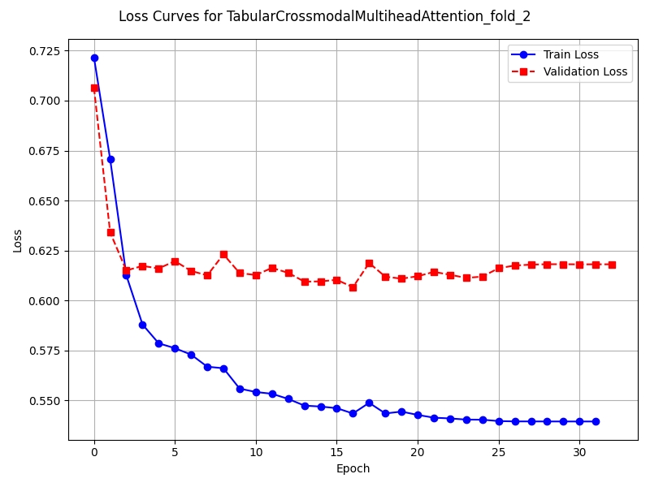
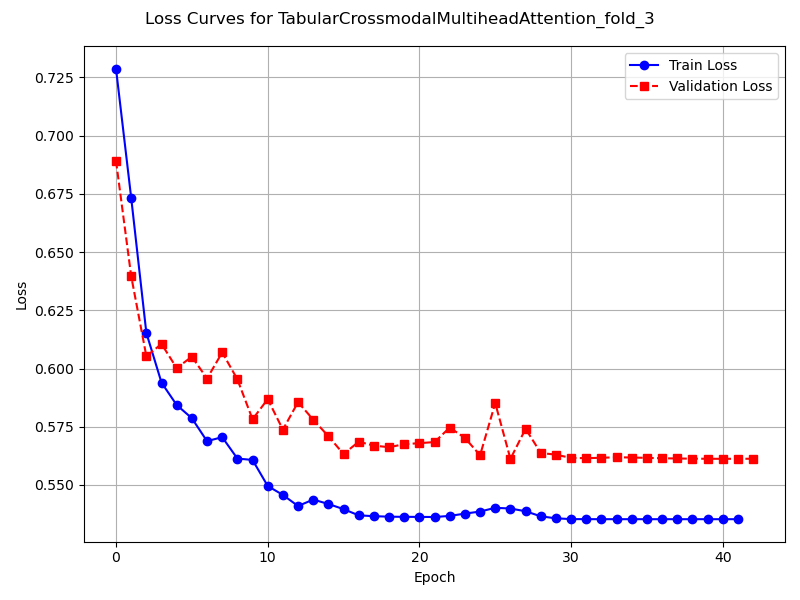
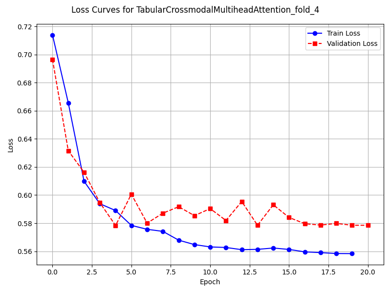

Note
Go to the end to download the full example code
📊 Binary Classification: Training a K-Fold Model 🚀
🚀 In this tutorial, we’ll explore binary classification using K-fold cross validation.
We’ll show you how to train a fusion model using K-Fold cross-validation with multimodal tabular data.
Specifically, we’re using the TabularCrossmodalMultiheadAttention model.
Key Features:
📥 Importing a model based on its path.
🧪 Training and testing a model with k-fold cross validation.
📈 Plotting the loss curves of each fold.
📊 Visualising the results of a single K-Fold model using the
ConfusionMatrixclass.
import matplotlib.pyplot as plt
from tqdm.auto import tqdm
import os
from docs.examples import generate_sklearn_simulated_data
from fusilli.data import get_data_module
from fusilli.eval import ConfusionMatrix
from fusilli.train import train_and_save_models
1. Import the fusion model 🔍
We’re importing only one model for this example, the TabularCrossmodalMultiheadAttention model.
Instead of using the import_chosen_fusion_models() function, we’re importing the model directly like with any other library method.
from fusilli.fusionmodels.tabularfusion.crossmodal_att import (
TabularCrossmodalMultiheadAttention,
)
2. Set the training parameters 🎯
Now we’re configuring our training parameters. For using k-fold cross validation, the necessary parameters are:
kfold_flag: the user sets this to True for k-fold cross validation.num_k: the number of folds to use. It can’t be k=1.log: a boolean of whether to log the results using Weights and Biases (True) or not (False).pred_type: the type of prediction to be performed. This is eitherregression,binary, orclassification. For this example we’re using binary classification.loss_log_dir: the directory to save the loss logs to. This is used for plotting the loss curves withlog=False.
We’re also setting our own batch_size for this example.
params = {
"kfold_flag": True,
"num_k": 5, # number of folds
"log": False,
"pred_type": "binary",
"batch_size": 32,
"loss_log_dir": "loss_logs",
}
3. Generating simulated data 🔮
Time to create some simulated data for our models to work their wonders on. This function also simulated image data which we aren’t using here.
params = generate_sklearn_simulated_data(
num_samples=500,
num_tab1_features=10,
num_tab2_features=10,
img_dims=(1, 100, 100),
params=params,
)
4. Training the fusion model 🏁
Now we’re ready to train our model. We’re using the train_and_save_models() function to train our model.
First we need to create a data module using the get_data_module() function.
This function takes the following parameters:
fusion_model: the fusion model to be trained.params: the parameters for training and testing.batch_size: the batch size for training and testing. This is optional and defaults to 8.
Then we pass the data module, the parameters, and the fusion model to the train_and_save_models() function.
We’re not using checkpointing for this example, so we set enable_checkpointing=False. We’re also setting show_loss_plot=True to plot the loss curves for each fold.
fusion_model = TabularCrossmodalMultiheadAttention
print("method_name:", fusion_model.method_name)
print("modality_type:", fusion_model.modality_type)
print("fusion_type:", fusion_model.fusion_type)
dm = get_data_module(
fusion_model=fusion_model, params=params, batch_size=params["batch_size"]
)
# train and test
single_model_dict = train_and_save_models(
data_module=dm,
params=params,
fusion_model=fusion_model,
enable_checkpointing=False, # False for the example notebooks
show_loss_plot=True,
)


- 
- 
- 
method_name: Tabular Crossmodal multi-head attention
modality_type: both_tab
fusion_type: attention
/Users/florencetownend/miniforge3/envs/fusion_eval/lib/python3.9/site-packages/pytorch_lightning/loggers/csv_logs.py:57: UserWarning: Experiment logs directory loss_logs/TabularCrossmodalMultiheadAttention_fold_0 exists and is not empty. Previous log files in this directory will be deleted when the new ones are saved!
rank_zero_warn(
Training: 0it [00:00, ?it/s]
Training: 0%| | 0/17 [00:00<?, ?it/s]
Epoch 0: 0%| | 0/17 [00:00<?, ?it/s]
Epoch 0: 6%|▌ | 1/17 [00:00<00:00, 17.80it/s]
Epoch 0: 6%|▌ | 1/17 [00:00<00:00, 17.71it/s, loss=0.692, v_num=ld_0]
Epoch 0: 12%|█▏ | 2/17 [00:00<00:00, 32.00it/s, loss=0.692, v_num=ld_0]
Epoch 0: 12%|█▏ | 2/17 [00:00<00:00, 31.91it/s, loss=0.737, v_num=ld_0]
Epoch 0: 18%|█▊ | 3/17 [00:00<00:00, 43.58it/s, loss=0.737, v_num=ld_0]
Epoch 0: 18%|█▊ | 3/17 [00:00<00:00, 43.46it/s, loss=0.726, v_num=ld_0]
Epoch 0: 24%|██▎ | 4/17 [00:00<00:00, 53.32it/s, loss=0.726, v_num=ld_0]
Epoch 0: 24%|██▎ | 4/17 [00:00<00:00, 53.19it/s, loss=0.735, v_num=ld_0]
Epoch 0: 29%|██▉ | 5/17 [00:00<00:00, 61.44it/s, loss=0.735, v_num=ld_0]
Epoch 0: 29%|██▉ | 5/17 [00:00<00:00, 61.28it/s, loss=0.737, v_num=ld_0]
Epoch 0: 35%|███▌ | 6/17 [00:00<00:00, 68.48it/s, loss=0.737, v_num=ld_0]
Epoch 0: 35%|███▌ | 6/17 [00:00<00:00, 68.34it/s, loss=0.738, v_num=ld_0]
Epoch 0: 41%|████ | 7/17 [00:00<00:00, 74.86it/s, loss=0.738, v_num=ld_0]
Epoch 0: 41%|████ | 7/17 [00:00<00:00, 74.72it/s, loss=0.735, v_num=ld_0]
Epoch 0: 47%|████▋ | 8/17 [00:00<00:00, 80.55it/s, loss=0.735, v_num=ld_0]
Epoch 0: 47%|████▋ | 8/17 [00:00<00:00, 80.42it/s, loss=0.732, v_num=ld_0]
Epoch 0: 53%|█████▎ | 9/17 [00:00<00:00, 85.39it/s, loss=0.732, v_num=ld_0]
Epoch 0: 53%|█████▎ | 9/17 [00:00<00:00, 85.25it/s, loss=0.727, v_num=ld_0]
Epoch 0: 59%|█████▉ | 10/17 [00:00<00:00, 89.96it/s, loss=0.727, v_num=ld_0]
Epoch 0: 59%|█████▉ | 10/17 [00:00<00:00, 89.83it/s, loss=0.723, v_num=ld_0]
Epoch 0: 65%|██████▍ | 11/17 [00:00<00:00, 93.97it/s, loss=0.723, v_num=ld_0]
Epoch 0: 65%|██████▍ | 11/17 [00:00<00:00, 93.84it/s, loss=0.718, v_num=ld_0]
Epoch 0: 71%|███████ | 12/17 [00:00<00:00, 97.75it/s, loss=0.718, v_num=ld_0]
Epoch 0: 71%|███████ | 12/17 [00:00<00:00, 97.59it/s, loss=0.718, v_num=ld_0]
Epoch 0: 76%|███████▋ | 13/17 [00:00<00:00, 100.93it/s, loss=0.718, v_num=ld_0]
Epoch 0: 76%|███████▋ | 13/17 [00:00<00:00, 100.79it/s, loss=0.715, v_num=ld_0]
Epoch 0: 82%|████████▏ | 14/17 [00:00<00:00, 106.21it/s, loss=0.715, v_num=ld_0]
Epoch 0: 88%|████████▊ | 15/17 [00:00<00:00, 112.63it/s, loss=0.715, v_num=ld_0]
Epoch 0: 94%|█████████▍| 16/17 [00:00<00:00, 118.60it/s, loss=0.715, v_num=ld_0]
Epoch 0: 100%|██████████| 17/17 [00:00<00:00, 125.14it/s, loss=0.715, v_num=ld_0]
Epoch 0: 100%|██████████| 17/17 [00:00<00:00, 116.85it/s, loss=0.715, v_num=ld_0, val_loss=0.698]
Epoch 0: 100%|██████████| 17/17 [00:00<00:00, 115.39it/s, loss=0.715, v_num=ld_0, val_loss=0.698, train_loss=0.716]
Epoch 0: 0%| | 0/17 [00:00<?, ?it/s, loss=0.715, v_num=ld_0, val_loss=0.698, train_loss=0.716]
Epoch 1: 0%| | 0/17 [00:00<?, ?it/s, loss=0.715, v_num=ld_0, val_loss=0.698, train_loss=0.716]
Epoch 1: 6%|▌ | 1/17 [00:00<00:00, 143.45it/s, loss=0.715, v_num=ld_0, val_loss=0.698, train_loss=0.716]
Epoch 1: 6%|▌ | 1/17 [00:00<00:00, 139.41it/s, loss=0.712, v_num=ld_0, val_loss=0.698, train_loss=0.716]
Epoch 1: 12%|█▏ | 2/17 [00:00<00:00, 159.32it/s, loss=0.712, v_num=ld_0, val_loss=0.698, train_loss=0.716]
Epoch 1: 12%|█▏ | 2/17 [00:00<00:00, 157.15it/s, loss=0.71, v_num=ld_0, val_loss=0.698, train_loss=0.716]
Epoch 1: 18%|█▊ | 3/17 [00:00<00:00, 161.00it/s, loss=0.71, v_num=ld_0, val_loss=0.698, train_loss=0.716]
Epoch 1: 18%|█▊ | 3/17 [00:00<00:00, 159.19it/s, loss=0.707, v_num=ld_0, val_loss=0.698, train_loss=0.716]
Epoch 1: 24%|██▎ | 4/17 [00:00<00:00, 162.61it/s, loss=0.707, v_num=ld_0, val_loss=0.698, train_loss=0.716]
Epoch 1: 24%|██▎ | 4/17 [00:00<00:00, 161.47it/s, loss=0.705, v_num=ld_0, val_loss=0.698, train_loss=0.716]
Epoch 1: 29%|██▉ | 5/17 [00:00<00:00, 165.27it/s, loss=0.705, v_num=ld_0, val_loss=0.698, train_loss=0.716]
Epoch 1: 29%|██▉ | 5/17 [00:00<00:00, 164.36it/s, loss=0.701, v_num=ld_0, val_loss=0.698, train_loss=0.716]
Epoch 1: 35%|███▌ | 6/17 [00:00<00:00, 168.40it/s, loss=0.701, v_num=ld_0, val_loss=0.698, train_loss=0.716]
Epoch 1: 35%|███▌ | 6/17 [00:00<00:00, 167.66it/s, loss=0.7, v_num=ld_0, val_loss=0.698, train_loss=0.716]
Epoch 1: 41%|████ | 7/17 [00:00<00:00, 169.36it/s, loss=0.7, v_num=ld_0, val_loss=0.698, train_loss=0.716]
Epoch 1: 41%|████ | 7/17 [00:00<00:00, 168.70it/s, loss=0.699, v_num=ld_0, val_loss=0.698, train_loss=0.716]
Epoch 1: 47%|████▋ | 8/17 [00:00<00:00, 171.64it/s, loss=0.699, v_num=ld_0, val_loss=0.698, train_loss=0.716]
Epoch 1: 47%|████▋ | 8/17 [00:00<00:00, 170.96it/s, loss=0.697, v_num=ld_0, val_loss=0.698, train_loss=0.716]
Epoch 1: 53%|█████▎ | 9/17 [00:00<00:00, 171.56it/s, loss=0.697, v_num=ld_0, val_loss=0.698, train_loss=0.716]
Epoch 1: 53%|█████▎ | 9/17 [00:00<00:00, 171.00it/s, loss=0.69, v_num=ld_0, val_loss=0.698, train_loss=0.716]
Epoch 1: 59%|█████▉ | 10/17 [00:00<00:00, 171.63it/s, loss=0.69, v_num=ld_0, val_loss=0.698, train_loss=0.716]
Epoch 1: 59%|█████▉ | 10/17 [00:00<00:00, 171.17it/s, loss=0.687, v_num=ld_0, val_loss=0.698, train_loss=0.716]
Epoch 1: 65%|██████▍ | 11/17 [00:00<00:00, 172.08it/s, loss=0.687, v_num=ld_0, val_loss=0.698, train_loss=0.716]
Epoch 1: 65%|██████▍ | 11/17 [00:00<00:00, 171.61it/s, loss=0.681, v_num=ld_0, val_loss=0.698, train_loss=0.716]
Epoch 1: 71%|███████ | 12/17 [00:00<00:00, 171.85it/s, loss=0.681, v_num=ld_0, val_loss=0.698, train_loss=0.716]
Epoch 1: 71%|███████ | 12/17 [00:00<00:00, 171.45it/s, loss=0.677, v_num=ld_0, val_loss=0.698, train_loss=0.716]
Epoch 1: 76%|███████▋ | 13/17 [00:00<00:00, 172.36it/s, loss=0.677, v_num=ld_0, val_loss=0.698, train_loss=0.716]
Epoch 1: 76%|███████▋ | 13/17 [00:00<00:00, 171.96it/s, loss=0.671, v_num=ld_0, val_loss=0.698, train_loss=0.716]
Epoch 1: 82%|████████▏ | 14/17 [00:00<00:00, 179.61it/s, loss=0.671, v_num=ld_0, val_loss=0.698, train_loss=0.716]
Epoch 1: 88%|████████▊ | 15/17 [00:00<00:00, 189.67it/s, loss=0.671, v_num=ld_0, val_loss=0.698, train_loss=0.716]
Epoch 1: 94%|█████████▍| 16/17 [00:00<00:00, 199.54it/s, loss=0.671, v_num=ld_0, val_loss=0.698, train_loss=0.716]
Epoch 1: 100%|██████████| 17/17 [00:00<00:00, 209.74it/s, loss=0.671, v_num=ld_0, val_loss=0.698, train_loss=0.716]
Epoch 1: 100%|██████████| 17/17 [00:00<00:00, 199.62it/s, loss=0.671, v_num=ld_0, val_loss=0.630, train_loss=0.716]
Epoch 1: 100%|██████████| 17/17 [00:00<00:00, 197.85it/s, loss=0.671, v_num=ld_0, val_loss=0.630, train_loss=0.660]
Epoch 1: 0%| | 0/17 [00:00<?, ?it/s, loss=0.671, v_num=ld_0, val_loss=0.630, train_loss=0.660]
Epoch 2: 0%| | 0/17 [00:00<?, ?it/s, loss=0.671, v_num=ld_0, val_loss=0.630, train_loss=0.660]
Epoch 2: 6%|▌ | 1/17 [00:00<00:00, 172.56it/s, loss=0.671, v_num=ld_0, val_loss=0.630, train_loss=0.660]
Epoch 2: 6%|▌ | 1/17 [00:00<00:00, 167.59it/s, loss=0.668, v_num=ld_0, val_loss=0.630, train_loss=0.660]
Epoch 2: 12%|█▏ | 2/17 [00:00<00:00, 177.37it/s, loss=0.668, v_num=ld_0, val_loss=0.630, train_loss=0.660]
Epoch 2: 12%|█▏ | 2/17 [00:00<00:00, 174.81it/s, loss=0.662, v_num=ld_0, val_loss=0.630, train_loss=0.660]
Epoch 2: 18%|█▊ | 3/17 [00:00<00:00, 174.17it/s, loss=0.662, v_num=ld_0, val_loss=0.630, train_loss=0.660]
Epoch 2: 18%|█▊ | 3/17 [00:00<00:00, 172.29it/s, loss=0.661, v_num=ld_0, val_loss=0.630, train_loss=0.660]
Epoch 2: 24%|██▎ | 4/17 [00:00<00:00, 174.22it/s, loss=0.661, v_num=ld_0, val_loss=0.630, train_loss=0.660]
Epoch 2: 24%|██▎ | 4/17 [00:00<00:00, 172.95it/s, loss=0.656, v_num=ld_0, val_loss=0.630, train_loss=0.660]
Epoch 2: 29%|██▉ | 5/17 [00:00<00:00, 174.34it/s, loss=0.656, v_num=ld_0, val_loss=0.630, train_loss=0.660]
Epoch 2: 29%|██▉ | 5/17 [00:00<00:00, 173.30it/s, loss=0.651, v_num=ld_0, val_loss=0.630, train_loss=0.660]
Epoch 2: 35%|███▌ | 6/17 [00:00<00:00, 174.04it/s, loss=0.651, v_num=ld_0, val_loss=0.630, train_loss=0.660]
Epoch 2: 35%|███▌ | 6/17 [00:00<00:00, 173.26it/s, loss=0.648, v_num=ld_0, val_loss=0.630, train_loss=0.660]
Epoch 2: 41%|████ | 7/17 [00:00<00:00, 174.69it/s, loss=0.648, v_num=ld_0, val_loss=0.630, train_loss=0.660]
Epoch 2: 41%|████ | 7/17 [00:00<00:00, 173.93it/s, loss=0.64, v_num=ld_0, val_loss=0.630, train_loss=0.660]
Epoch 2: 47%|████▋ | 8/17 [00:00<00:00, 175.61it/s, loss=0.64, v_num=ld_0, val_loss=0.630, train_loss=0.660]
Epoch 2: 47%|████▋ | 8/17 [00:00<00:00, 175.00it/s, loss=0.637, v_num=ld_0, val_loss=0.630, train_loss=0.660]
Epoch 2: 53%|█████▎ | 9/17 [00:00<00:00, 175.17it/s, loss=0.637, v_num=ld_0, val_loss=0.630, train_loss=0.660]
Epoch 2: 53%|█████▎ | 9/17 [00:00<00:00, 174.57it/s, loss=0.634, v_num=ld_0, val_loss=0.630, train_loss=0.660]
Epoch 2: 59%|█████▉ | 10/17 [00:00<00:00, 173.98it/s, loss=0.634, v_num=ld_0, val_loss=0.630, train_loss=0.660]
Epoch 2: 59%|█████▉ | 10/17 [00:00<00:00, 173.48it/s, loss=0.631, v_num=ld_0, val_loss=0.630, train_loss=0.660]
Epoch 2: 65%|██████▍ | 11/17 [00:00<00:00, 173.64it/s, loss=0.631, v_num=ld_0, val_loss=0.630, train_loss=0.660]
Epoch 2: 65%|██████▍ | 11/17 [00:00<00:00, 173.20it/s, loss=0.626, v_num=ld_0, val_loss=0.630, train_loss=0.660]
Epoch 2: 71%|███████ | 12/17 [00:00<00:00, 174.18it/s, loss=0.626, v_num=ld_0, val_loss=0.630, train_loss=0.660]
Epoch 2: 71%|███████ | 12/17 [00:00<00:00, 173.77it/s, loss=0.625, v_num=ld_0, val_loss=0.630, train_loss=0.660]
Epoch 2: 76%|███████▋ | 13/17 [00:00<00:00, 175.51it/s, loss=0.625, v_num=ld_0, val_loss=0.630, train_loss=0.660]
Epoch 2: 76%|███████▋ | 13/17 [00:00<00:00, 175.10it/s, loss=0.621, v_num=ld_0, val_loss=0.630, train_loss=0.660]
Epoch 2: 82%|████████▏ | 14/17 [00:00<00:00, 182.85it/s, loss=0.621, v_num=ld_0, val_loss=0.630, train_loss=0.660]
Epoch 2: 88%|████████▊ | 15/17 [00:00<00:00, 193.01it/s, loss=0.621, v_num=ld_0, val_loss=0.630, train_loss=0.660]
Epoch 2: 94%|█████████▍| 16/17 [00:00<00:00, 203.00it/s, loss=0.621, v_num=ld_0, val_loss=0.630, train_loss=0.660]
Epoch 2: 100%|██████████| 17/17 [00:00<00:00, 213.33it/s, loss=0.621, v_num=ld_0, val_loss=0.630, train_loss=0.660]
Epoch 2: 100%|██████████| 17/17 [00:00<00:00, 206.16it/s, loss=0.621, v_num=ld_0, val_loss=0.605, train_loss=0.660]
Epoch 2: 100%|██████████| 17/17 [00:00<00:00, 205.14it/s, loss=0.621, v_num=ld_0, val_loss=0.605, train_loss=0.606]
Epoch 2: 0%| | 0/17 [00:00<?, ?it/s, loss=0.621, v_num=ld_0, val_loss=0.605, train_loss=0.606]
Epoch 3: 0%| | 0/17 [00:00<?, ?it/s, loss=0.621, v_num=ld_0, val_loss=0.605, train_loss=0.606]
Epoch 3: 6%|▌ | 1/17 [00:00<00:00, 187.40it/s, loss=0.621, v_num=ld_0, val_loss=0.605, train_loss=0.606]
Epoch 3: 6%|▌ | 1/17 [00:00<00:00, 181.78it/s, loss=0.616, v_num=ld_0, val_loss=0.605, train_loss=0.606]
Epoch 3: 12%|█▏ | 2/17 [00:00<00:00, 178.97it/s, loss=0.616, v_num=ld_0, val_loss=0.605, train_loss=0.606]
Epoch 3: 12%|█▏ | 2/17 [00:00<00:00, 176.33it/s, loss=0.615, v_num=ld_0, val_loss=0.605, train_loss=0.606]
Epoch 3: 18%|█▊ | 3/17 [00:00<00:00, 178.39it/s, loss=0.615, v_num=ld_0, val_loss=0.605, train_loss=0.606]
Epoch 3: 18%|█▊ | 3/17 [00:00<00:00, 176.45it/s, loss=0.615, v_num=ld_0, val_loss=0.605, train_loss=0.606]
Epoch 3: 24%|██▎ | 4/17 [00:00<00:00, 174.51it/s, loss=0.615, v_num=ld_0, val_loss=0.605, train_loss=0.606]
Epoch 3: 24%|██▎ | 4/17 [00:00<00:00, 173.14it/s, loss=0.618, v_num=ld_0, val_loss=0.605, train_loss=0.606]
Epoch 3: 29%|██▉ | 5/17 [00:00<00:00, 171.61it/s, loss=0.618, v_num=ld_0, val_loss=0.605, train_loss=0.606]
Epoch 3: 29%|██▉ | 5/17 [00:00<00:00, 170.43it/s, loss=0.619, v_num=ld_0, val_loss=0.605, train_loss=0.606]
Epoch 3: 35%|███▌ | 6/17 [00:00<00:00, 172.36it/s, loss=0.619, v_num=ld_0, val_loss=0.605, train_loss=0.606]
Epoch 3: 35%|███▌ | 6/17 [00:00<00:00, 171.57it/s, loss=0.615, v_num=ld_0, val_loss=0.605, train_loss=0.606]
Epoch 3: 41%|████ | 7/17 [00:00<00:00, 172.92it/s, loss=0.615, v_num=ld_0, val_loss=0.605, train_loss=0.606]
Epoch 3: 41%|████ | 7/17 [00:00<00:00, 172.24it/s, loss=0.609, v_num=ld_0, val_loss=0.605, train_loss=0.606]
Epoch 3: 47%|████▋ | 8/17 [00:00<00:00, 174.05it/s, loss=0.609, v_num=ld_0, val_loss=0.605, train_loss=0.606]
Epoch 3: 47%|████▋ | 8/17 [00:00<00:00, 173.48it/s, loss=0.607, v_num=ld_0, val_loss=0.605, train_loss=0.606]
Epoch 3: 53%|█████▎ | 9/17 [00:00<00:00, 173.95it/s, loss=0.607, v_num=ld_0, val_loss=0.605, train_loss=0.606]
Epoch 3: 53%|█████▎ | 9/17 [00:00<00:00, 173.31it/s, loss=0.608, v_num=ld_0, val_loss=0.605, train_loss=0.606]
Epoch 3: 59%|█████▉ | 10/17 [00:00<00:00, 173.62it/s, loss=0.608, v_num=ld_0, val_loss=0.605, train_loss=0.606]
Epoch 3: 59%|█████▉ | 10/17 [00:00<00:00, 173.12it/s, loss=0.605, v_num=ld_0, val_loss=0.605, train_loss=0.606]
Epoch 3: 65%|██████▍ | 11/17 [00:00<00:00, 173.35it/s, loss=0.605, v_num=ld_0, val_loss=0.605, train_loss=0.606]
Epoch 3: 65%|██████▍ | 11/17 [00:00<00:00, 172.92it/s, loss=0.601, v_num=ld_0, val_loss=0.605, train_loss=0.606]
Epoch 3: 71%|███████ | 12/17 [00:00<00:00, 173.72it/s, loss=0.601, v_num=ld_0, val_loss=0.605, train_loss=0.606]
Epoch 3: 71%|███████ | 12/17 [00:00<00:00, 173.31it/s, loss=0.6, v_num=ld_0, val_loss=0.605, train_loss=0.606]
Epoch 3: 76%|███████▋ | 13/17 [00:00<00:00, 173.99it/s, loss=0.6, v_num=ld_0, val_loss=0.605, train_loss=0.606]
Epoch 3: 76%|███████▋ | 13/17 [00:00<00:00, 173.59it/s, loss=0.598, v_num=ld_0, val_loss=0.605, train_loss=0.606]
Epoch 3: 82%|████████▏ | 14/17 [00:00<00:00, 181.16it/s, loss=0.598, v_num=ld_0, val_loss=0.605, train_loss=0.606]
Epoch 3: 88%|████████▊ | 15/17 [00:00<00:00, 191.18it/s, loss=0.598, v_num=ld_0, val_loss=0.605, train_loss=0.606]
Epoch 3: 94%|█████████▍| 16/17 [00:00<00:00, 201.03it/s, loss=0.598, v_num=ld_0, val_loss=0.605, train_loss=0.606]
Epoch 3: 100%|██████████| 17/17 [00:00<00:00, 211.17it/s, loss=0.598, v_num=ld_0, val_loss=0.605, train_loss=0.606]
Epoch 3: 100%|██████████| 17/17 [00:00<00:00, 202.76it/s, loss=0.598, v_num=ld_0, val_loss=0.598, train_loss=0.606]
Epoch 3: 100%|██████████| 17/17 [00:00<00:00, 201.77it/s, loss=0.598, v_num=ld_0, val_loss=0.598, train_loss=0.599]
Epoch 3: 0%| | 0/17 [00:00<?, ?it/s, loss=0.598, v_num=ld_0, val_loss=0.598, train_loss=0.599]
Epoch 4: 0%| | 0/17 [00:00<?, ?it/s, loss=0.598, v_num=ld_0, val_loss=0.598, train_loss=0.599]
Epoch 4: 6%|▌ | 1/17 [00:00<00:00, 183.35it/s, loss=0.598, v_num=ld_0, val_loss=0.598, train_loss=0.599]
Epoch 4: 6%|▌ | 1/17 [00:00<00:00, 177.94it/s, loss=0.602, v_num=ld_0, val_loss=0.598, train_loss=0.599]
Epoch 4: 12%|█▏ | 2/17 [00:00<00:00, 181.50it/s, loss=0.602, v_num=ld_0, val_loss=0.598, train_loss=0.599]
Epoch 4: 12%|█▏ | 2/17 [00:00<00:00, 178.35it/s, loss=0.6, v_num=ld_0, val_loss=0.598, train_loss=0.599]
Epoch 4: 18%|█▊ | 3/17 [00:00<00:00, 174.82it/s, loss=0.6, v_num=ld_0, val_loss=0.598, train_loss=0.599]
Epoch 4: 18%|█▊ | 3/17 [00:00<00:00, 173.32it/s, loss=0.599, v_num=ld_0, val_loss=0.598, train_loss=0.599]
Epoch 4: 24%|██▎ | 4/17 [00:00<00:00, 175.47it/s, loss=0.599, v_num=ld_0, val_loss=0.598, train_loss=0.599]
Epoch 4: 24%|██▎ | 4/17 [00:00<00:00, 173.59it/s, loss=0.6, v_num=ld_0, val_loss=0.598, train_loss=0.599]
Epoch 4: 29%|██▉ | 5/17 [00:00<00:00, 170.70it/s, loss=0.6, v_num=ld_0, val_loss=0.598, train_loss=0.599]
Epoch 4: 29%|██▉ | 5/17 [00:00<00:00, 169.73it/s, loss=0.603, v_num=ld_0, val_loss=0.598, train_loss=0.599]
Epoch 4: 35%|███▌ | 6/17 [00:00<00:00, 172.09it/s, loss=0.603, v_num=ld_0, val_loss=0.598, train_loss=0.599]
Epoch 4: 35%|███▌ | 6/17 [00:00<00:00, 171.31it/s, loss=0.603, v_num=ld_0, val_loss=0.598, train_loss=0.599]
Epoch 4: 41%|████ | 7/17 [00:00<00:00, 172.75it/s, loss=0.603, v_num=ld_0, val_loss=0.598, train_loss=0.599]
Epoch 4: 41%|████ | 7/17 [00:00<00:00, 172.08it/s, loss=0.6, v_num=ld_0, val_loss=0.598, train_loss=0.599]
Epoch 4: 47%|████▋ | 8/17 [00:00<00:00, 174.47it/s, loss=0.6, v_num=ld_0, val_loss=0.598, train_loss=0.599]
Epoch 4: 47%|████▋ | 8/17 [00:00<00:00, 173.89it/s, loss=0.605, v_num=ld_0, val_loss=0.598, train_loss=0.599]
Epoch 4: 53%|█████▎ | 9/17 [00:00<00:00, 174.95it/s, loss=0.605, v_num=ld_0, val_loss=0.598, train_loss=0.599]
Epoch 4: 53%|█████▎ | 9/17 [00:00<00:00, 174.37it/s, loss=0.6, v_num=ld_0, val_loss=0.598, train_loss=0.599]
Epoch 4: 59%|█████▉ | 10/17 [00:00<00:00, 175.21it/s, loss=0.6, v_num=ld_0, val_loss=0.598, train_loss=0.599]
Epoch 4: 59%|█████▉ | 10/17 [00:00<00:00, 174.67it/s, loss=0.592, v_num=ld_0, val_loss=0.598, train_loss=0.599]
Epoch 4: 65%|██████▍ | 11/17 [00:00<00:00, 174.74it/s, loss=0.592, v_num=ld_0, val_loss=0.598, train_loss=0.599]
Epoch 4: 65%|██████▍ | 11/17 [00:00<00:00, 174.30it/s, loss=0.586, v_num=ld_0, val_loss=0.598, train_loss=0.599]
Epoch 4: 71%|███████ | 12/17 [00:00<00:00, 176.26it/s, loss=0.586, v_num=ld_0, val_loss=0.598, train_loss=0.599]
Epoch 4: 71%|███████ | 12/17 [00:00<00:00, 175.85it/s, loss=0.581, v_num=ld_0, val_loss=0.598, train_loss=0.599]
Epoch 4: 76%|███████▋ | 13/17 [00:00<00:00, 177.04it/s, loss=0.581, v_num=ld_0, val_loss=0.598, train_loss=0.599]
Epoch 4: 76%|███████▋ | 13/17 [00:00<00:00, 176.62it/s, loss=0.577, v_num=ld_0, val_loss=0.598, train_loss=0.599]
Epoch 4: 82%|████████▏ | 14/17 [00:00<00:00, 184.27it/s, loss=0.577, v_num=ld_0, val_loss=0.598, train_loss=0.599]
Epoch 4: 88%|████████▊ | 15/17 [00:00<00:00, 193.84it/s, loss=0.577, v_num=ld_0, val_loss=0.598, train_loss=0.599]
Epoch 4: 94%|█████████▍| 16/17 [00:00<00:00, 203.75it/s, loss=0.577, v_num=ld_0, val_loss=0.598, train_loss=0.599]
Epoch 4: 100%|██████████| 17/17 [00:00<00:00, 213.88it/s, loss=0.577, v_num=ld_0, val_loss=0.598, train_loss=0.599]
Epoch 4: 100%|██████████| 17/17 [00:00<00:00, 189.71it/s, loss=0.577, v_num=ld_0, val_loss=0.588, train_loss=0.599]
Epoch 4: 100%|██████████| 17/17 [00:00<00:00, 188.72it/s, loss=0.577, v_num=ld_0, val_loss=0.588, train_loss=0.585]
Epoch 4: 0%| | 0/17 [00:00<?, ?it/s, loss=0.577, v_num=ld_0, val_loss=0.588, train_loss=0.585]
Epoch 5: 0%| | 0/17 [00:00<?, ?it/s, loss=0.577, v_num=ld_0, val_loss=0.588, train_loss=0.585]
Epoch 5: 6%|▌ | 1/17 [00:00<00:00, 176.86it/s, loss=0.577, v_num=ld_0, val_loss=0.588, train_loss=0.585]
Epoch 5: 6%|▌ | 1/17 [00:00<00:00, 171.76it/s, loss=0.578, v_num=ld_0, val_loss=0.588, train_loss=0.585]
Epoch 5: 12%|█▏ | 2/17 [00:00<00:00, 175.10it/s, loss=0.578, v_num=ld_0, val_loss=0.588, train_loss=0.585]
Epoch 5: 12%|█▏ | 2/17 [00:00<00:00, 172.62it/s, loss=0.577, v_num=ld_0, val_loss=0.588, train_loss=0.585]
Epoch 5: 18%|█▊ | 3/17 [00:00<00:00, 174.52it/s, loss=0.577, v_num=ld_0, val_loss=0.588, train_loss=0.585]
Epoch 5: 18%|█▊ | 3/17 [00:00<00:00, 172.91it/s, loss=0.571, v_num=ld_0, val_loss=0.588, train_loss=0.585]
Epoch 5: 24%|██▎ | 4/17 [00:00<00:00, 175.68it/s, loss=0.571, v_num=ld_0, val_loss=0.588, train_loss=0.585]
Epoch 5: 24%|██▎ | 4/17 [00:00<00:00, 174.52it/s, loss=0.573, v_num=ld_0, val_loss=0.588, train_loss=0.585]
Epoch 5: 29%|██▉ | 5/17 [00:00<00:00, 177.33it/s, loss=0.573, v_num=ld_0, val_loss=0.588, train_loss=0.585]
Epoch 5: 29%|██▉ | 5/17 [00:00<00:00, 176.38it/s, loss=0.577, v_num=ld_0, val_loss=0.588, train_loss=0.585]
Epoch 5: 35%|███▌ | 6/17 [00:00<00:00, 178.35it/s, loss=0.577, v_num=ld_0, val_loss=0.588, train_loss=0.585]
Epoch 5: 35%|███▌ | 6/17 [00:00<00:00, 177.44it/s, loss=0.577, v_num=ld_0, val_loss=0.588, train_loss=0.585]
Epoch 5: 41%|████ | 7/17 [00:00<00:00, 177.68it/s, loss=0.577, v_num=ld_0, val_loss=0.588, train_loss=0.585]
Epoch 5: 41%|████ | 7/17 [00:00<00:00, 176.87it/s, loss=0.574, v_num=ld_0, val_loss=0.588, train_loss=0.585]
Epoch 5: 47%|████▋ | 8/17 [00:00<00:00, 176.46it/s, loss=0.574, v_num=ld_0, val_loss=0.588, train_loss=0.585]
Epoch 5: 47%|████▋ | 8/17 [00:00<00:00, 175.70it/s, loss=0.574, v_num=ld_0, val_loss=0.588, train_loss=0.585]
Epoch 5: 53%|█████▎ | 9/17 [00:00<00:00, 174.05it/s, loss=0.574, v_num=ld_0, val_loss=0.588, train_loss=0.585]
Epoch 5: 53%|█████▎ | 9/17 [00:00<00:00, 173.36it/s, loss=0.57, v_num=ld_0, val_loss=0.588, train_loss=0.585]
Epoch 5: 59%|█████▉ | 10/17 [00:00<00:00, 169.26it/s, loss=0.57, v_num=ld_0, val_loss=0.588, train_loss=0.585]
Epoch 5: 59%|█████▉ | 10/17 [00:00<00:00, 168.66it/s, loss=0.572, v_num=ld_0, val_loss=0.588, train_loss=0.585]
Epoch 5: 65%|██████▍ | 11/17 [00:00<00:00, 168.09it/s, loss=0.572, v_num=ld_0, val_loss=0.588, train_loss=0.585]
Epoch 5: 65%|██████▍ | 11/17 [00:00<00:00, 167.60it/s, loss=0.57, v_num=ld_0, val_loss=0.588, train_loss=0.585]
Epoch 5: 71%|███████ | 12/17 [00:00<00:00, 166.78it/s, loss=0.57, v_num=ld_0, val_loss=0.588, train_loss=0.585]
Epoch 5: 71%|███████ | 12/17 [00:00<00:00, 166.35it/s, loss=0.567, v_num=ld_0, val_loss=0.588, train_loss=0.585]
Epoch 5: 76%|███████▋ | 13/17 [00:00<00:00, 167.67it/s, loss=0.567, v_num=ld_0, val_loss=0.588, train_loss=0.585]
Epoch 5: 76%|███████▋ | 13/17 [00:00<00:00, 167.32it/s, loss=0.565, v_num=ld_0, val_loss=0.588, train_loss=0.585]
Epoch 5: 82%|████████▏ | 14/17 [00:00<00:00, 174.69it/s, loss=0.565, v_num=ld_0, val_loss=0.588, train_loss=0.585]
Epoch 5: 88%|████████▊ | 15/17 [00:00<00:00, 184.35it/s, loss=0.565, v_num=ld_0, val_loss=0.588, train_loss=0.585]
Epoch 5: 94%|█████████▍| 16/17 [00:00<00:00, 193.93it/s, loss=0.565, v_num=ld_0, val_loss=0.588, train_loss=0.585]
Epoch 5: 100%|██████████| 17/17 [00:00<00:00, 203.69it/s, loss=0.565, v_num=ld_0, val_loss=0.588, train_loss=0.585]
Epoch 5: 100%|██████████| 17/17 [00:00<00:00, 198.20it/s, loss=0.565, v_num=ld_0, val_loss=0.602, train_loss=0.585]
Epoch 5: 100%|██████████| 17/17 [00:00<00:00, 197.21it/s, loss=0.565, v_num=ld_0, val_loss=0.602, train_loss=0.570]
Epoch 5: 0%| | 0/17 [00:00<?, ?it/s, loss=0.565, v_num=ld_0, val_loss=0.602, train_loss=0.570]
Epoch 6: 0%| | 0/17 [00:00<?, ?it/s, loss=0.565, v_num=ld_0, val_loss=0.602, train_loss=0.570]
Epoch 6: 6%|▌ | 1/17 [00:00<00:00, 160.70it/s, loss=0.565, v_num=ld_0, val_loss=0.602, train_loss=0.570]
Epoch 6: 6%|▌ | 1/17 [00:00<00:00, 156.35it/s, loss=0.566, v_num=ld_0, val_loss=0.602, train_loss=0.570]
Epoch 6: 12%|█▏ | 2/17 [00:00<00:00, 167.56it/s, loss=0.566, v_num=ld_0, val_loss=0.602, train_loss=0.570]
Epoch 6: 12%|█▏ | 2/17 [00:00<00:00, 165.14it/s, loss=0.56, v_num=ld_0, val_loss=0.602, train_loss=0.570]
Epoch 6: 18%|█▊ | 3/17 [00:00<00:00, 168.32it/s, loss=0.56, v_num=ld_0, val_loss=0.602, train_loss=0.570]
Epoch 6: 18%|█▊ | 3/17 [00:00<00:00, 166.82it/s, loss=0.562, v_num=ld_0, val_loss=0.602, train_loss=0.570]
Epoch 6: 24%|██▎ | 4/17 [00:00<00:00, 170.87it/s, loss=0.562, v_num=ld_0, val_loss=0.602, train_loss=0.570]
Epoch 6: 24%|██▎ | 4/17 [00:00<00:00, 169.70it/s, loss=0.567, v_num=ld_0, val_loss=0.602, train_loss=0.570]
Epoch 6: 29%|██▉ | 5/17 [00:00<00:00, 169.87it/s, loss=0.567, v_num=ld_0, val_loss=0.602, train_loss=0.570]
Epoch 6: 29%|██▉ | 5/17 [00:00<00:00, 168.82it/s, loss=0.566, v_num=ld_0, val_loss=0.602, train_loss=0.570]
Epoch 6: 35%|███▌ | 6/17 [00:00<00:00, 169.89it/s, loss=0.566, v_num=ld_0, val_loss=0.602, train_loss=0.570]
Epoch 6: 35%|███▌ | 6/17 [00:00<00:00, 169.18it/s, loss=0.564, v_num=ld_0, val_loss=0.602, train_loss=0.570]
Epoch 6: 41%|████ | 7/17 [00:00<00:00, 168.42it/s, loss=0.564, v_num=ld_0, val_loss=0.602, train_loss=0.570]
Epoch 6: 41%|████ | 7/17 [00:00<00:00, 167.73it/s, loss=0.566, v_num=ld_0, val_loss=0.602, train_loss=0.570]
Epoch 6: 47%|████▋ | 8/17 [00:00<00:00, 168.94it/s, loss=0.566, v_num=ld_0, val_loss=0.602, train_loss=0.570]
Epoch 6: 47%|████▋ | 8/17 [00:00<00:00, 168.30it/s, loss=0.567, v_num=ld_0, val_loss=0.602, train_loss=0.570]
Epoch 6: 53%|█████▎ | 9/17 [00:00<00:00, 169.35it/s, loss=0.567, v_num=ld_0, val_loss=0.602, train_loss=0.570]
Epoch 6: 53%|█████▎ | 9/17 [00:00<00:00, 168.75it/s, loss=0.569, v_num=ld_0, val_loss=0.602, train_loss=0.570]
Epoch 6: 59%|█████▉ | 10/17 [00:00<00:00, 168.38it/s, loss=0.569, v_num=ld_0, val_loss=0.602, train_loss=0.570]
Epoch 6: 59%|█████▉ | 10/17 [00:00<00:00, 167.92it/s, loss=0.572, v_num=ld_0, val_loss=0.602, train_loss=0.570]
Epoch 6: 65%|██████▍ | 11/17 [00:00<00:00, 168.51it/s, loss=0.572, v_num=ld_0, val_loss=0.602, train_loss=0.570]
Epoch 6: 65%|██████▍ | 11/17 [00:00<00:00, 168.11it/s, loss=0.568, v_num=ld_0, val_loss=0.602, train_loss=0.570]
Epoch 6: 71%|███████ | 12/17 [00:00<00:00, 168.87it/s, loss=0.568, v_num=ld_0, val_loss=0.602, train_loss=0.570]
Epoch 6: 71%|███████ | 12/17 [00:00<00:00, 168.44it/s, loss=0.564, v_num=ld_0, val_loss=0.602, train_loss=0.570]
Epoch 6: 76%|███████▋ | 13/17 [00:00<00:00, 168.77it/s, loss=0.564, v_num=ld_0, val_loss=0.602, train_loss=0.570]
Epoch 6: 76%|███████▋ | 13/17 [00:00<00:00, 168.42it/s, loss=0.567, v_num=ld_0, val_loss=0.602, train_loss=0.570]
Epoch 6: 82%|████████▏ | 14/17 [00:00<00:00, 176.11it/s, loss=0.567, v_num=ld_0, val_loss=0.602, train_loss=0.570]
Epoch 6: 88%|████████▊ | 15/17 [00:00<00:00, 185.98it/s, loss=0.567, v_num=ld_0, val_loss=0.602, train_loss=0.570]
Epoch 6: 94%|█████████▍| 16/17 [00:00<00:00, 195.66it/s, loss=0.567, v_num=ld_0, val_loss=0.602, train_loss=0.570]
Epoch 6: 100%|██████████| 17/17 [00:00<00:00, 205.70it/s, loss=0.567, v_num=ld_0, val_loss=0.602, train_loss=0.570]
Epoch 6: 100%|██████████| 17/17 [00:00<00:00, 199.89it/s, loss=0.567, v_num=ld_0, val_loss=0.587, train_loss=0.570]
Epoch 6: 100%|██████████| 17/17 [00:00<00:00, 198.95it/s, loss=0.567, v_num=ld_0, val_loss=0.587, train_loss=0.560]
Epoch 6: 0%| | 0/17 [00:00<?, ?it/s, loss=0.567, v_num=ld_0, val_loss=0.587, train_loss=0.560]
Epoch 7: 0%| | 0/17 [00:00<?, ?it/s, loss=0.567, v_num=ld_0, val_loss=0.587, train_loss=0.560]
Epoch 7: 6%|▌ | 1/17 [00:00<00:00, 170.42it/s, loss=0.567, v_num=ld_0, val_loss=0.587, train_loss=0.560]
Epoch 7: 6%|▌ | 1/17 [00:00<00:00, 165.51it/s, loss=0.566, v_num=ld_0, val_loss=0.587, train_loss=0.560]
Epoch 7: 12%|█▏ | 2/17 [00:00<00:00, 170.43it/s, loss=0.566, v_num=ld_0, val_loss=0.587, train_loss=0.560]
Epoch 7: 12%|█▏ | 2/17 [00:00<00:00, 167.97it/s, loss=0.563, v_num=ld_0, val_loss=0.587, train_loss=0.560]
Epoch 7: 18%|█▊ | 3/17 [00:00<00:00, 168.33it/s, loss=0.563, v_num=ld_0, val_loss=0.587, train_loss=0.560]
Epoch 7: 18%|█▊ | 3/17 [00:00<00:00, 166.64it/s, loss=0.567, v_num=ld_0, val_loss=0.587, train_loss=0.560]
Epoch 7: 24%|██▎ | 4/17 [00:00<00:00, 168.26it/s, loss=0.567, v_num=ld_0, val_loss=0.587, train_loss=0.560]
Epoch 7: 24%|██▎ | 4/17 [00:00<00:00, 167.02it/s, loss=0.565, v_num=ld_0, val_loss=0.587, train_loss=0.560]
Epoch 7: 29%|██▉ | 5/17 [00:00<00:00, 169.73it/s, loss=0.565, v_num=ld_0, val_loss=0.587, train_loss=0.560]
Epoch 7: 29%|██▉ | 5/17 [00:00<00:00, 168.74it/s, loss=0.566, v_num=ld_0, val_loss=0.587, train_loss=0.560]
Epoch 7: 35%|███▌ | 6/17 [00:00<00:00, 170.32it/s, loss=0.566, v_num=ld_0, val_loss=0.587, train_loss=0.560]
Epoch 7: 35%|███▌ | 6/17 [00:00<00:00, 169.54it/s, loss=0.561, v_num=ld_0, val_loss=0.587, train_loss=0.560]
Epoch 7: 41%|████ | 7/17 [00:00<00:00, 170.59it/s, loss=0.561, v_num=ld_0, val_loss=0.587, train_loss=0.560]
Epoch 7: 41%|████ | 7/17 [00:00<00:00, 169.86it/s, loss=0.559, v_num=ld_0, val_loss=0.587, train_loss=0.560]
Epoch 7: 47%|████▋ | 8/17 [00:00<00:00, 170.01it/s, loss=0.559, v_num=ld_0, val_loss=0.587, train_loss=0.560]
Epoch 7: 47%|████▋ | 8/17 [00:00<00:00, 169.44it/s, loss=0.557, v_num=ld_0, val_loss=0.587, train_loss=0.560]
Epoch 7: 53%|█████▎ | 9/17 [00:00<00:00, 170.08it/s, loss=0.557, v_num=ld_0, val_loss=0.587, train_loss=0.560]
Epoch 7: 53%|█████▎ | 9/17 [00:00<00:00, 169.53it/s, loss=0.557, v_num=ld_0, val_loss=0.587, train_loss=0.560]
Epoch 7: 59%|█████▉ | 10/17 [00:00<00:00, 169.87it/s, loss=0.557, v_num=ld_0, val_loss=0.587, train_loss=0.560]
Epoch 7: 59%|█████▉ | 10/17 [00:00<00:00, 169.40it/s, loss=0.557, v_num=ld_0, val_loss=0.587, train_loss=0.560]
Epoch 7: 65%|██████▍ | 11/17 [00:00<00:00, 170.67it/s, loss=0.557, v_num=ld_0, val_loss=0.587, train_loss=0.560]
Epoch 7: 65%|██████▍ | 11/17 [00:00<00:00, 170.24it/s, loss=0.556, v_num=ld_0, val_loss=0.587, train_loss=0.560]
Epoch 7: 71%|███████ | 12/17 [00:00<00:00, 170.69it/s, loss=0.556, v_num=ld_0, val_loss=0.587, train_loss=0.560]
Epoch 7: 71%|███████ | 12/17 [00:00<00:00, 170.31it/s, loss=0.558, v_num=ld_0, val_loss=0.587, train_loss=0.560]
Epoch 7: 76%|███████▋ | 13/17 [00:00<00:00, 170.63it/s, loss=0.558, v_num=ld_0, val_loss=0.587, train_loss=0.560]
Epoch 7: 76%|███████▋ | 13/17 [00:00<00:00, 170.24it/s, loss=0.555, v_num=ld_0, val_loss=0.587, train_loss=0.560]
Epoch 7: 82%|████████▏ | 14/17 [00:00<00:00, 177.87it/s, loss=0.555, v_num=ld_0, val_loss=0.587, train_loss=0.560]
Epoch 7: 88%|████████▊ | 15/17 [00:00<00:00, 187.86it/s, loss=0.555, v_num=ld_0, val_loss=0.587, train_loss=0.560]
Epoch 7: 94%|█████████▍| 16/17 [00:00<00:00, 197.67it/s, loss=0.555, v_num=ld_0, val_loss=0.587, train_loss=0.560]
Epoch 7: 100%|██████████| 17/17 [00:00<00:00, 207.79it/s, loss=0.555, v_num=ld_0, val_loss=0.587, train_loss=0.560]
Epoch 7: 100%|██████████| 17/17 [00:00<00:00, 201.78it/s, loss=0.555, v_num=ld_0, val_loss=0.590, train_loss=0.560]
Epoch 7: 100%|██████████| 17/17 [00:00<00:00, 200.58it/s, loss=0.555, v_num=ld_0, val_loss=0.590, train_loss=0.554]
Epoch 7: 0%| | 0/17 [00:00<?, ?it/s, loss=0.555, v_num=ld_0, val_loss=0.590, train_loss=0.554]
Epoch 8: 0%| | 0/17 [00:00<?, ?it/s, loss=0.555, v_num=ld_0, val_loss=0.590, train_loss=0.554]
Epoch 8: 6%|▌ | 1/17 [00:00<00:00, 167.28it/s, loss=0.555, v_num=ld_0, val_loss=0.590, train_loss=0.554]
Epoch 8: 6%|▌ | 1/17 [00:00<00:00, 162.82it/s, loss=0.557, v_num=ld_0, val_loss=0.590, train_loss=0.554]
Epoch 8: 12%|█▏ | 2/17 [00:00<00:00, 170.81it/s, loss=0.557, v_num=ld_0, val_loss=0.590, train_loss=0.554]
Epoch 8: 12%|█▏ | 2/17 [00:00<00:00, 168.31it/s, loss=0.556, v_num=ld_0, val_loss=0.590, train_loss=0.554]
Epoch 8: 18%|█▊ | 3/17 [00:00<00:00, 167.71it/s, loss=0.556, v_num=ld_0, val_loss=0.590, train_loss=0.554]
Epoch 8: 18%|█▊ | 3/17 [00:00<00:00, 166.12it/s, loss=0.552, v_num=ld_0, val_loss=0.590, train_loss=0.554]
Epoch 8: 24%|██▎ | 4/17 [00:00<00:00, 168.58it/s, loss=0.552, v_num=ld_0, val_loss=0.590, train_loss=0.554]
Epoch 8: 24%|██▎ | 4/17 [00:00<00:00, 167.30it/s, loss=0.553, v_num=ld_0, val_loss=0.590, train_loss=0.554]
Epoch 8: 29%|██▉ | 5/17 [00:00<00:00, 169.06it/s, loss=0.553, v_num=ld_0, val_loss=0.590, train_loss=0.554]
Epoch 8: 29%|██▉ | 5/17 [00:00<00:00, 168.16it/s, loss=0.553, v_num=ld_0, val_loss=0.590, train_loss=0.554]
Epoch 8: 35%|███▌ | 6/17 [00:00<00:00, 170.85it/s, loss=0.553, v_num=ld_0, val_loss=0.590, train_loss=0.554]
Epoch 8: 35%|███▌ | 6/17 [00:00<00:00, 170.08it/s, loss=0.553, v_num=ld_0, val_loss=0.590, train_loss=0.554]
Epoch 8: 41%|████ | 7/17 [00:00<00:00, 171.56it/s, loss=0.553, v_num=ld_0, val_loss=0.590, train_loss=0.554]
Epoch 8: 41%|████ | 7/17 [00:00<00:00, 170.88it/s, loss=0.55, v_num=ld_0, val_loss=0.590, train_loss=0.554]
Epoch 8: 47%|████▋ | 8/17 [00:00<00:00, 171.94it/s, loss=0.55, v_num=ld_0, val_loss=0.590, train_loss=0.554]
Epoch 8: 47%|████▋ | 8/17 [00:00<00:00, 171.39it/s, loss=0.553, v_num=ld_0, val_loss=0.590, train_loss=0.554]
Epoch 8: 53%|█████▎ | 9/17 [00:00<00:00, 173.07it/s, loss=0.553, v_num=ld_0, val_loss=0.590, train_loss=0.554]
Epoch 8: 53%|█████▎ | 9/17 [00:00<00:00, 172.55it/s, loss=0.555, v_num=ld_0, val_loss=0.590, train_loss=0.554]
Epoch 8: 59%|█████▉ | 10/17 [00:00<00:00, 172.25it/s, loss=0.555, v_num=ld_0, val_loss=0.590, train_loss=0.554]
Epoch 8: 59%|█████▉ | 10/17 [00:00<00:00, 171.76it/s, loss=0.55, v_num=ld_0, val_loss=0.590, train_loss=0.554]
Epoch 8: 65%|██████▍ | 11/17 [00:00<00:00, 171.40it/s, loss=0.55, v_num=ld_0, val_loss=0.590, train_loss=0.554]
Epoch 8: 65%|██████▍ | 11/17 [00:00<00:00, 170.96it/s, loss=0.549, v_num=ld_0, val_loss=0.590, train_loss=0.554]
Epoch 8: 71%|███████ | 12/17 [00:00<00:00, 172.22it/s, loss=0.549, v_num=ld_0, val_loss=0.590, train_loss=0.554]
Epoch 8: 71%|███████ | 12/17 [00:00<00:00, 171.79it/s, loss=0.549, v_num=ld_0, val_loss=0.590, train_loss=0.554]
Epoch 8: 76%|███████▋ | 13/17 [00:00<00:00, 172.11it/s, loss=0.549, v_num=ld_0, val_loss=0.590, train_loss=0.554]
Epoch 8: 76%|███████▋ | 13/17 [00:00<00:00, 171.74it/s, loss=0.554, v_num=ld_0, val_loss=0.590, train_loss=0.554]
Epoch 8: 82%|████████▏ | 14/17 [00:00<00:00, 179.04it/s, loss=0.554, v_num=ld_0, val_loss=0.590, train_loss=0.554]
Epoch 8: 88%|████████▊ | 15/17 [00:00<00:00, 188.94it/s, loss=0.554, v_num=ld_0, val_loss=0.590, train_loss=0.554]
Epoch 8: 94%|█████████▍| 16/17 [00:00<00:00, 198.43it/s, loss=0.554, v_num=ld_0, val_loss=0.590, train_loss=0.554]
Epoch 8: 100%|██████████| 17/17 [00:00<00:00, 208.43it/s, loss=0.554, v_num=ld_0, val_loss=0.590, train_loss=0.554]
Epoch 8: 100%|██████████| 17/17 [00:00<00:00, 202.62it/s, loss=0.554, v_num=ld_0, val_loss=0.581, train_loss=0.554]
Epoch 8: 100%|██████████| 17/17 [00:00<00:00, 201.59it/s, loss=0.554, v_num=ld_0, val_loss=0.581, train_loss=0.554]
Epoch 8: 0%| | 0/17 [00:00<?, ?it/s, loss=0.554, v_num=ld_0, val_loss=0.581, train_loss=0.554]
Epoch 9: 0%| | 0/17 [00:00<?, ?it/s, loss=0.554, v_num=ld_0, val_loss=0.581, train_loss=0.554]
Epoch 9: 6%|▌ | 1/17 [00:00<00:00, 168.18it/s, loss=0.554, v_num=ld_0, val_loss=0.581, train_loss=0.554]
Epoch 9: 6%|▌ | 1/17 [00:00<00:00, 163.70it/s, loss=0.554, v_num=ld_0, val_loss=0.581, train_loss=0.554]
Epoch 9: 12%|█▏ | 2/17 [00:00<00:00, 168.95it/s, loss=0.554, v_num=ld_0, val_loss=0.581, train_loss=0.554]
Epoch 9: 12%|█▏ | 2/17 [00:00<00:00, 166.54it/s, loss=0.558, v_num=ld_0, val_loss=0.581, train_loss=0.554]
Epoch 9: 18%|█▊ | 3/17 [00:00<00:00, 168.64it/s, loss=0.558, v_num=ld_0, val_loss=0.581, train_loss=0.554]
Epoch 9: 18%|█▊ | 3/17 [00:00<00:00, 167.02it/s, loss=0.555, v_num=ld_0, val_loss=0.581, train_loss=0.554]
Epoch 9: 24%|██▎ | 4/17 [00:00<00:00, 169.63it/s, loss=0.555, v_num=ld_0, val_loss=0.581, train_loss=0.554]
Epoch 9: 24%|██▎ | 4/17 [00:00<00:00, 168.36it/s, loss=0.552, v_num=ld_0, val_loss=0.581, train_loss=0.554]
Epoch 9: 29%|██▉ | 5/17 [00:00<00:00, 167.34it/s, loss=0.552, v_num=ld_0, val_loss=0.581, train_loss=0.554]
Epoch 9: 29%|██▉ | 5/17 [00:00<00:00, 166.29it/s, loss=0.551, v_num=ld_0, val_loss=0.581, train_loss=0.554]
Epoch 9: 35%|███▌ | 6/17 [00:00<00:00, 165.36it/s, loss=0.551, v_num=ld_0, val_loss=0.581, train_loss=0.554]
Epoch 9: 35%|███▌ | 6/17 [00:00<00:00, 164.47it/s, loss=0.551, v_num=ld_0, val_loss=0.581, train_loss=0.554]
Epoch 9: 41%|████ | 7/17 [00:00<00:00, 165.23it/s, loss=0.551, v_num=ld_0, val_loss=0.581, train_loss=0.554]
Epoch 9: 41%|████ | 7/17 [00:00<00:00, 164.53it/s, loss=0.554, v_num=ld_0, val_loss=0.581, train_loss=0.554]
Epoch 9: 47%|████▋ | 8/17 [00:00<00:00, 165.60it/s, loss=0.554, v_num=ld_0, val_loss=0.581, train_loss=0.554]
Epoch 9: 47%|████▋ | 8/17 [00:00<00:00, 164.98it/s, loss=0.552, v_num=ld_0, val_loss=0.581, train_loss=0.554]
Epoch 9: 53%|█████▎ | 9/17 [00:00<00:00, 165.71it/s, loss=0.552, v_num=ld_0, val_loss=0.581, train_loss=0.554]
Epoch 9: 53%|█████▎ | 9/17 [00:00<00:00, 165.15it/s, loss=0.554, v_num=ld_0, val_loss=0.581, train_loss=0.554]
Epoch 9: 59%|█████▉ | 10/17 [00:00<00:00, 165.80it/s, loss=0.554, v_num=ld_0, val_loss=0.581, train_loss=0.554]
Epoch 9: 59%|█████▉ | 10/17 [00:00<00:00, 165.30it/s, loss=0.555, v_num=ld_0, val_loss=0.581, train_loss=0.554]
Epoch 9: 65%|██████▍ | 11/17 [00:00<00:00, 165.86it/s, loss=0.555, v_num=ld_0, val_loss=0.581, train_loss=0.554]
Epoch 9: 65%|██████▍ | 11/17 [00:00<00:00, 165.41it/s, loss=0.552, v_num=ld_0, val_loss=0.581, train_loss=0.554]
Epoch 9: 71%|███████ | 12/17 [00:00<00:00, 165.82it/s, loss=0.552, v_num=ld_0, val_loss=0.581, train_loss=0.554]
Epoch 9: 71%|███████ | 12/17 [00:00<00:00, 165.39it/s, loss=0.553, v_num=ld_0, val_loss=0.581, train_loss=0.554]
Epoch 9: 76%|███████▋ | 13/17 [00:00<00:00, 166.72it/s, loss=0.553, v_num=ld_0, val_loss=0.581, train_loss=0.554]
Epoch 9: 76%|███████▋ | 13/17 [00:00<00:00, 166.35it/s, loss=0.555, v_num=ld_0, val_loss=0.581, train_loss=0.554]
Epoch 9: 82%|████████▏ | 14/17 [00:00<00:00, 172.31it/s, loss=0.555, v_num=ld_0, val_loss=0.581, train_loss=0.554]
Epoch 9: 88%|████████▊ | 15/17 [00:00<00:00, 181.21it/s, loss=0.555, v_num=ld_0, val_loss=0.581, train_loss=0.554]
Epoch 9: 94%|█████████▍| 16/17 [00:00<00:00, 190.16it/s, loss=0.555, v_num=ld_0, val_loss=0.581, train_loss=0.554]
Epoch 9: 100%|██████████| 17/17 [00:00<00:00, 199.70it/s, loss=0.555, v_num=ld_0, val_loss=0.581, train_loss=0.554]
Epoch 9: 100%|██████████| 17/17 [00:00<00:00, 194.37it/s, loss=0.555, v_num=ld_0, val_loss=0.586, train_loss=0.554]
Epoch 9: 100%|██████████| 17/17 [00:00<00:00, 193.47it/s, loss=0.555, v_num=ld_0, val_loss=0.586, train_loss=0.548]
Epoch 9: 0%| | 0/17 [00:00<?, ?it/s, loss=0.555, v_num=ld_0, val_loss=0.586, train_loss=0.548]
Epoch 10: 0%| | 0/17 [00:00<?, ?it/s, loss=0.555, v_num=ld_0, val_loss=0.586, train_loss=0.548]
Epoch 10: 6%|▌ | 1/17 [00:00<00:00, 145.75it/s, loss=0.555, v_num=ld_0, val_loss=0.586, train_loss=0.548]
Epoch 10: 6%|▌ | 1/17 [00:00<00:00, 141.62it/s, loss=0.551, v_num=ld_0, val_loss=0.586, train_loss=0.548]
Epoch 10: 12%|█▏ | 2/17 [00:00<00:00, 147.72it/s, loss=0.551, v_num=ld_0, val_loss=0.586, train_loss=0.548]
Epoch 10: 12%|█▏ | 2/17 [00:00<00:00, 145.51it/s, loss=0.551, v_num=ld_0, val_loss=0.586, train_loss=0.548]
Epoch 10: 18%|█▊ | 3/17 [00:00<00:00, 152.11it/s, loss=0.551, v_num=ld_0, val_loss=0.586, train_loss=0.548]
Epoch 10: 18%|█▊ | 3/17 [00:00<00:00, 150.72it/s, loss=0.547, v_num=ld_0, val_loss=0.586, train_loss=0.548]
Epoch 10: 24%|██▎ | 4/17 [00:00<00:00, 152.92it/s, loss=0.547, v_num=ld_0, val_loss=0.586, train_loss=0.548]
Epoch 10: 24%|██▎ | 4/17 [00:00<00:00, 151.90it/s, loss=0.55, v_num=ld_0, val_loss=0.586, train_loss=0.548]
Epoch 10: 29%|██▉ | 5/17 [00:00<00:00, 154.90it/s, loss=0.55, v_num=ld_0, val_loss=0.586, train_loss=0.548]
Epoch 10: 29%|██▉ | 5/17 [00:00<00:00, 153.83it/s, loss=0.549, v_num=ld_0, val_loss=0.586, train_loss=0.548]
Epoch 10: 35%|███▌ | 6/17 [00:00<00:00, 154.16it/s, loss=0.549, v_num=ld_0, val_loss=0.586, train_loss=0.548]
Epoch 10: 35%|███▌ | 6/17 [00:00<00:00, 153.48it/s, loss=0.546, v_num=ld_0, val_loss=0.586, train_loss=0.548]
Epoch 10: 41%|████ | 7/17 [00:00<00:00, 156.64it/s, loss=0.546, v_num=ld_0, val_loss=0.586, train_loss=0.548]
Epoch 10: 41%|████ | 7/17 [00:00<00:00, 155.97it/s, loss=0.543, v_num=ld_0, val_loss=0.586, train_loss=0.548]
Epoch 10: 47%|████▋ | 8/17 [00:00<00:00, 156.64it/s, loss=0.543, v_num=ld_0, val_loss=0.586, train_loss=0.548]
Epoch 10: 47%|████▋ | 8/17 [00:00<00:00, 156.00it/s, loss=0.547, v_num=ld_0, val_loss=0.586, train_loss=0.548]
Epoch 10: 53%|█████▎ | 9/17 [00:00<00:00, 156.00it/s, loss=0.547, v_num=ld_0, val_loss=0.586, train_loss=0.548]
Epoch 10: 53%|█████▎ | 9/17 [00:00<00:00, 155.49it/s, loss=0.545, v_num=ld_0, val_loss=0.586, train_loss=0.548]
Epoch 10: 59%|█████▉ | 10/17 [00:00<00:00, 157.32it/s, loss=0.545, v_num=ld_0, val_loss=0.586, train_loss=0.548]
Epoch 10: 59%|█████▉ | 10/17 [00:00<00:00, 156.80it/s, loss=0.549, v_num=ld_0, val_loss=0.586, train_loss=0.548]
Epoch 10: 65%|██████▍ | 11/17 [00:00<00:00, 156.85it/s, loss=0.549, v_num=ld_0, val_loss=0.586, train_loss=0.548]
Epoch 10: 65%|██████▍ | 11/17 [00:00<00:00, 156.42it/s, loss=0.549, v_num=ld_0, val_loss=0.586, train_loss=0.548]
Epoch 10: 71%|███████ | 12/17 [00:00<00:00, 157.04it/s, loss=0.549, v_num=ld_0, val_loss=0.586, train_loss=0.548]
Epoch 10: 71%|███████ | 12/17 [00:00<00:00, 156.72it/s, loss=0.55, v_num=ld_0, val_loss=0.586, train_loss=0.548]
Epoch 10: 76%|███████▋ | 13/17 [00:00<00:00, 158.83it/s, loss=0.55, v_num=ld_0, val_loss=0.586, train_loss=0.548]
Epoch 10: 76%|███████▋ | 13/17 [00:00<00:00, 158.48it/s, loss=0.544, v_num=ld_0, val_loss=0.586, train_loss=0.548]
Epoch 10: 82%|████████▏ | 14/17 [00:00<00:00, 165.98it/s, loss=0.544, v_num=ld_0, val_loss=0.586, train_loss=0.548]
Epoch 10: 88%|████████▊ | 15/17 [00:00<00:00, 175.49it/s, loss=0.544, v_num=ld_0, val_loss=0.586, train_loss=0.548]
Epoch 10: 94%|█████████▍| 16/17 [00:00<00:00, 184.84it/s, loss=0.544, v_num=ld_0, val_loss=0.586, train_loss=0.548]
Epoch 10: 100%|██████████| 17/17 [00:00<00:00, 194.47it/s, loss=0.544, v_num=ld_0, val_loss=0.586, train_loss=0.548]
Epoch 10: 100%|██████████| 17/17 [00:00<00:00, 181.56it/s, loss=0.544, v_num=ld_0, val_loss=0.584, train_loss=0.548]
Epoch 10: 100%|██████████| 17/17 [00:00<00:00, 180.51it/s, loss=0.544, v_num=ld_0, val_loss=0.584, train_loss=0.545]
Epoch 10: 0%| | 0/17 [00:00<?, ?it/s, loss=0.544, v_num=ld_0, val_loss=0.584, train_loss=0.545]
Epoch 11: 0%| | 0/17 [00:00<?, ?it/s, loss=0.544, v_num=ld_0, val_loss=0.584, train_loss=0.545]
Epoch 11: 6%|▌ | 1/17 [00:00<00:00, 142.67it/s, loss=0.544, v_num=ld_0, val_loss=0.584, train_loss=0.545]
Epoch 11: 6%|▌ | 1/17 [00:00<00:00, 138.75it/s, loss=0.54, v_num=ld_0, val_loss=0.584, train_loss=0.545]
Epoch 11: 12%|█▏ | 2/17 [00:00<00:00, 159.73it/s, loss=0.54, v_num=ld_0, val_loss=0.584, train_loss=0.545]
Epoch 11: 12%|█▏ | 2/17 [00:00<00:00, 157.78it/s, loss=0.54, v_num=ld_0, val_loss=0.584, train_loss=0.545]
Epoch 11: 18%|█▊ | 3/17 [00:00<00:00, 157.49it/s, loss=0.54, v_num=ld_0, val_loss=0.584, train_loss=0.545]
Epoch 11: 18%|█▊ | 3/17 [00:00<00:00, 155.72it/s, loss=0.54, v_num=ld_0, val_loss=0.584, train_loss=0.545]
Epoch 11: 24%|██▎ | 4/17 [00:00<00:00, 157.48it/s, loss=0.54, v_num=ld_0, val_loss=0.584, train_loss=0.545]
Epoch 11: 24%|██▎ | 4/17 [00:00<00:00, 156.34it/s, loss=0.54, v_num=ld_0, val_loss=0.584, train_loss=0.545]
Epoch 11: 29%|██▉ | 5/17 [00:00<00:00, 160.46it/s, loss=0.54, v_num=ld_0, val_loss=0.584, train_loss=0.545]
Epoch 11: 29%|██▉ | 5/17 [00:00<00:00, 159.49it/s, loss=0.543, v_num=ld_0, val_loss=0.584, train_loss=0.545]
Epoch 11: 35%|███▌ | 6/17 [00:00<00:00, 161.19it/s, loss=0.543, v_num=ld_0, val_loss=0.584, train_loss=0.545]
Epoch 11: 35%|███▌ | 6/17 [00:00<00:00, 160.39it/s, loss=0.543, v_num=ld_0, val_loss=0.584, train_loss=0.545]
Epoch 11: 41%|████ | 7/17 [00:00<00:00, 141.37it/s, loss=0.543, v_num=ld_0, val_loss=0.584, train_loss=0.545]
Epoch 11: 41%|████ | 7/17 [00:00<00:00, 140.77it/s, loss=0.544, v_num=ld_0, val_loss=0.584, train_loss=0.545]
Epoch 11: 47%|████▋ | 8/17 [00:00<00:00, 143.08it/s, loss=0.544, v_num=ld_0, val_loss=0.584, train_loss=0.545]
Epoch 11: 47%|████▋ | 8/17 [00:00<00:00, 142.60it/s, loss=0.554, v_num=ld_0, val_loss=0.584, train_loss=0.545]
Epoch 11: 53%|█████▎ | 9/17 [00:00<00:00, 146.14it/s, loss=0.554, v_num=ld_0, val_loss=0.584, train_loss=0.545]
Epoch 11: 53%|█████▎ | 9/17 [00:00<00:00, 145.74it/s, loss=0.55, v_num=ld_0, val_loss=0.584, train_loss=0.545]
Epoch 11: 59%|█████▉ | 10/17 [00:00<00:00, 148.25it/s, loss=0.55, v_num=ld_0, val_loss=0.584, train_loss=0.545]
Epoch 11: 59%|█████▉ | 10/17 [00:00<00:00, 147.72it/s, loss=0.548, v_num=ld_0, val_loss=0.584, train_loss=0.545]
Epoch 11: 65%|██████▍ | 11/17 [00:00<00:00, 147.66it/s, loss=0.548, v_num=ld_0, val_loss=0.584, train_loss=0.545]
Epoch 11: 65%|██████▍ | 11/17 [00:00<00:00, 147.26it/s, loss=0.547, v_num=ld_0, val_loss=0.584, train_loss=0.545]
Epoch 11: 71%|███████ | 12/17 [00:00<00:00, 147.67it/s, loss=0.547, v_num=ld_0, val_loss=0.584, train_loss=0.545]
Epoch 11: 71%|███████ | 12/17 [00:00<00:00, 147.02it/s, loss=0.547, v_num=ld_0, val_loss=0.584, train_loss=0.545]
Epoch 11: 76%|███████▋ | 13/17 [00:00<00:00, 147.67it/s, loss=0.547, v_num=ld_0, val_loss=0.584, train_loss=0.545]
Epoch 11: 76%|███████▋ | 13/17 [00:00<00:00, 147.34it/s, loss=0.546, v_num=ld_0, val_loss=0.584, train_loss=0.545]
Epoch 11: 82%|████████▏ | 14/17 [00:00<00:00, 154.31it/s, loss=0.546, v_num=ld_0, val_loss=0.584, train_loss=0.545]
Epoch 11: 88%|████████▊ | 15/17 [00:00<00:00, 162.87it/s, loss=0.546, v_num=ld_0, val_loss=0.584, train_loss=0.545]
Epoch 11: 94%|█████████▍| 16/17 [00:00<00:00, 170.67it/s, loss=0.546, v_num=ld_0, val_loss=0.584, train_loss=0.545]
Epoch 11: 100%|██████████| 17/17 [00:00<00:00, 179.16it/s, loss=0.546, v_num=ld_0, val_loss=0.584, train_loss=0.545]
Epoch 11: 100%|██████████| 17/17 [00:00<00:00, 173.98it/s, loss=0.546, v_num=ld_0, val_loss=0.584, train_loss=0.545]
Epoch 11: 100%|██████████| 17/17 [00:00<00:00, 173.16it/s, loss=0.546, v_num=ld_0, val_loss=0.584, train_loss=0.544]
Epoch 11: 0%| | 0/17 [00:00<?, ?it/s, loss=0.546, v_num=ld_0, val_loss=0.584, train_loss=0.544]
Epoch 12: 0%| | 0/17 [00:00<?, ?it/s, loss=0.546, v_num=ld_0, val_loss=0.584, train_loss=0.544]
Epoch 12: 6%|▌ | 1/17 [00:00<00:00, 155.98it/s, loss=0.546, v_num=ld_0, val_loss=0.584, train_loss=0.544]
Epoch 12: 6%|▌ | 1/17 [00:00<00:00, 150.58it/s, loss=0.543, v_num=ld_0, val_loss=0.584, train_loss=0.544]
Epoch 12: 12%|█▏ | 2/17 [00:00<00:00, 156.48it/s, loss=0.543, v_num=ld_0, val_loss=0.584, train_loss=0.544]
Epoch 12: 12%|█▏ | 2/17 [00:00<00:00, 154.00it/s, loss=0.539, v_num=ld_0, val_loss=0.584, train_loss=0.544]
Epoch 12: 18%|█▊ | 3/17 [00:00<00:00, 154.23it/s, loss=0.539, v_num=ld_0, val_loss=0.584, train_loss=0.544]
Epoch 12: 18%|█▊ | 3/17 [00:00<00:00, 152.50it/s, loss=0.537, v_num=ld_0, val_loss=0.584, train_loss=0.544]
Epoch 12: 24%|██▎ | 4/17 [00:00<00:00, 153.37it/s, loss=0.537, v_num=ld_0, val_loss=0.584, train_loss=0.544]
Epoch 12: 24%|██▎ | 4/17 [00:00<00:00, 152.23it/s, loss=0.538, v_num=ld_0, val_loss=0.584, train_loss=0.544]
Epoch 12: 29%|██▉ | 5/17 [00:00<00:00, 151.09it/s, loss=0.538, v_num=ld_0, val_loss=0.584, train_loss=0.544]
Epoch 12: 29%|██▉ | 5/17 [00:00<00:00, 150.21it/s, loss=0.535, v_num=ld_0, val_loss=0.584, train_loss=0.544]
Epoch 12: 35%|███▌ | 6/17 [00:00<00:00, 153.48it/s, loss=0.535, v_num=ld_0, val_loss=0.584, train_loss=0.544]
Epoch 12: 35%|███▌ | 6/17 [00:00<00:00, 152.81it/s, loss=0.535, v_num=ld_0, val_loss=0.584, train_loss=0.544]
Epoch 12: 41%|████ | 7/17 [00:00<00:00, 155.42it/s, loss=0.535, v_num=ld_0, val_loss=0.584, train_loss=0.544]
Epoch 12: 41%|████ | 7/17 [00:00<00:00, 154.86it/s, loss=0.54, v_num=ld_0, val_loss=0.584, train_loss=0.544]
Epoch 12: 47%|████▋ | 8/17 [00:00<00:00, 155.84it/s, loss=0.54, v_num=ld_0, val_loss=0.584, train_loss=0.544]
Epoch 12: 47%|████▋ | 8/17 [00:00<00:00, 155.19it/s, loss=0.545, v_num=ld_0, val_loss=0.584, train_loss=0.544]
Epoch 12: 53%|█████▎ | 9/17 [00:00<00:00, 155.96it/s, loss=0.545, v_num=ld_0, val_loss=0.584, train_loss=0.544]
Epoch 12: 53%|█████▎ | 9/17 [00:00<00:00, 155.47it/s, loss=0.547, v_num=ld_0, val_loss=0.584, train_loss=0.544]
Epoch 12: 59%|█████▉ | 10/17 [00:00<00:00, 156.54it/s, loss=0.547, v_num=ld_0, val_loss=0.584, train_loss=0.544]
Epoch 12: 59%|█████▉ | 10/17 [00:00<00:00, 156.06it/s, loss=0.546, v_num=ld_0, val_loss=0.584, train_loss=0.544]
Epoch 12: 65%|██████▍ | 11/17 [00:00<00:00, 156.66it/s, loss=0.546, v_num=ld_0, val_loss=0.584, train_loss=0.544]
Epoch 12: 65%|██████▍ | 11/17 [00:00<00:00, 156.25it/s, loss=0.545, v_num=ld_0, val_loss=0.584, train_loss=0.544]
Epoch 12: 71%|███████ | 12/17 [00:00<00:00, 156.23it/s, loss=0.545, v_num=ld_0, val_loss=0.584, train_loss=0.544]
Epoch 12: 71%|███████ | 12/17 [00:00<00:00, 155.83it/s, loss=0.543, v_num=ld_0, val_loss=0.584, train_loss=0.544]
Epoch 12: 76%|███████▋ | 13/17 [00:00<00:00, 156.56it/s, loss=0.543, v_num=ld_0, val_loss=0.584, train_loss=0.544]
Epoch 12: 76%|███████▋ | 13/17 [00:00<00:00, 156.17it/s, loss=0.543, v_num=ld_0, val_loss=0.584, train_loss=0.544]
Epoch 12: 82%|████████▏ | 14/17 [00:00<00:00, 163.39it/s, loss=0.543, v_num=ld_0, val_loss=0.584, train_loss=0.544]
Epoch 12: 88%|████████▊ | 15/17 [00:00<00:00, 172.73it/s, loss=0.543, v_num=ld_0, val_loss=0.584, train_loss=0.544]
Epoch 12: 94%|█████████▍| 16/17 [00:00<00:00, 181.90it/s, loss=0.543, v_num=ld_0, val_loss=0.584, train_loss=0.544]
Epoch 12: 100%|██████████| 17/17 [00:00<00:00, 191.36it/s, loss=0.543, v_num=ld_0, val_loss=0.584, train_loss=0.544]
Epoch 12: 100%|██████████| 17/17 [00:00<00:00, 185.70it/s, loss=0.543, v_num=ld_0, val_loss=0.586, train_loss=0.544]
Epoch 12: 100%|██████████| 17/17 [00:00<00:00, 184.62it/s, loss=0.543, v_num=ld_0, val_loss=0.586, train_loss=0.542]
Epoch 12: 0%| | 0/17 [00:00<?, ?it/s, loss=0.543, v_num=ld_0, val_loss=0.586, train_loss=0.542]
Epoch 13: 0%| | 0/17 [00:00<?, ?it/s, loss=0.543, v_num=ld_0, val_loss=0.586, train_loss=0.542]
Epoch 13: 6%|▌ | 1/17 [00:00<00:00, 140.49it/s, loss=0.543, v_num=ld_0, val_loss=0.586, train_loss=0.542]
Epoch 13: 6%|▌ | 1/17 [00:00<00:00, 136.61it/s, loss=0.542, v_num=ld_0, val_loss=0.586, train_loss=0.542]
Epoch 13: 12%|█▏ | 2/17 [00:00<00:00, 146.19it/s, loss=0.542, v_num=ld_0, val_loss=0.586, train_loss=0.542]
Epoch 13: 12%|█▏ | 2/17 [00:00<00:00, 144.06it/s, loss=0.533, v_num=ld_0, val_loss=0.586, train_loss=0.542]
Epoch 13: 18%|█▊ | 3/17 [00:00<00:00, 153.27it/s, loss=0.533, v_num=ld_0, val_loss=0.586, train_loss=0.542]
Epoch 13: 18%|█▊ | 3/17 [00:00<00:00, 152.01it/s, loss=0.535, v_num=ld_0, val_loss=0.586, train_loss=0.542]
Epoch 13: 24%|██▎ | 4/17 [00:00<00:00, 157.77it/s, loss=0.535, v_num=ld_0, val_loss=0.586, train_loss=0.542]
Epoch 13: 24%|██▎ | 4/17 [00:00<00:00, 156.16it/s, loss=0.538, v_num=ld_0, val_loss=0.586, train_loss=0.542]
Epoch 13: 29%|██▉ | 5/17 [00:00<00:00, 152.75it/s, loss=0.538, v_num=ld_0, val_loss=0.586, train_loss=0.542]
Epoch 13: 29%|██▉ | 5/17 [00:00<00:00, 151.79it/s, loss=0.543, v_num=ld_0, val_loss=0.586, train_loss=0.542]
Epoch 13: 35%|███▌ | 6/17 [00:00<00:00, 154.81it/s, loss=0.543, v_num=ld_0, val_loss=0.586, train_loss=0.542]
Epoch 13: 35%|███▌ | 6/17 [00:00<00:00, 154.05it/s, loss=0.544, v_num=ld_0, val_loss=0.586, train_loss=0.542]
Epoch 13: 41%|████ | 7/17 [00:00<00:00, 153.93it/s, loss=0.544, v_num=ld_0, val_loss=0.586, train_loss=0.542]
Epoch 13: 41%|████ | 7/17 [00:00<00:00, 153.18it/s, loss=0.547, v_num=ld_0, val_loss=0.586, train_loss=0.542]
Epoch 13: 47%|████▋ | 8/17 [00:00<00:00, 151.58it/s, loss=0.547, v_num=ld_0, val_loss=0.586, train_loss=0.542]
Epoch 13: 47%|████▋ | 8/17 [00:00<00:00, 150.99it/s, loss=0.549, v_num=ld_0, val_loss=0.586, train_loss=0.542]
Epoch 13: 53%|█████▎ | 9/17 [00:00<00:00, 153.16it/s, loss=0.549, v_num=ld_0, val_loss=0.586, train_loss=0.542]
Epoch 13: 53%|█████▎ | 9/17 [00:00<00:00, 152.61it/s, loss=0.549, v_num=ld_0, val_loss=0.586, train_loss=0.542]
Epoch 13: 59%|█████▉ | 10/17 [00:00<00:00, 153.23it/s, loss=0.549, v_num=ld_0, val_loss=0.586, train_loss=0.542]
Epoch 13: 59%|█████▉ | 10/17 [00:00<00:00, 152.77it/s, loss=0.547, v_num=ld_0, val_loss=0.586, train_loss=0.542]
Epoch 13: 65%|██████▍ | 11/17 [00:00<00:00, 153.99it/s, loss=0.547, v_num=ld_0, val_loss=0.586, train_loss=0.542]
Epoch 13: 65%|██████▍ | 11/17 [00:00<00:00, 153.53it/s, loss=0.546, v_num=ld_0, val_loss=0.586, train_loss=0.542]
Epoch 13: 71%|███████ | 12/17 [00:00<00:00, 144.37it/s, loss=0.546, v_num=ld_0, val_loss=0.586, train_loss=0.542]
Epoch 13: 71%|███████ | 12/17 [00:00<00:00, 143.95it/s, loss=0.549, v_num=ld_0, val_loss=0.586, train_loss=0.542]
Epoch 13: 76%|███████▋ | 13/17 [00:00<00:00, 121.28it/s, loss=0.549, v_num=ld_0, val_loss=0.586, train_loss=0.542]
Epoch 13: 76%|███████▋ | 13/17 [00:00<00:00, 118.90it/s, loss=0.549, v_num=ld_0, val_loss=0.586, train_loss=0.542]
Epoch 13: 82%|████████▏ | 14/17 [00:00<00:00, 123.06it/s, loss=0.549, v_num=ld_0, val_loss=0.586, train_loss=0.542]
Epoch 13: 88%|████████▊ | 15/17 [00:00<00:00, 121.11it/s, loss=0.549, v_num=ld_0, val_loss=0.586, train_loss=0.542]
Epoch 13: 94%|█████████▍| 16/17 [00:00<00:00, 123.21it/s, loss=0.549, v_num=ld_0, val_loss=0.586, train_loss=0.542]
Epoch 13: 100%|██████████| 17/17 [00:00<00:00, 129.57it/s, loss=0.549, v_num=ld_0, val_loss=0.586, train_loss=0.542]
Epoch 13: 100%|██████████| 17/17 [00:00<00:00, 118.75it/s, loss=0.549, v_num=ld_0, val_loss=0.586, train_loss=0.542]
Epoch 13: 100%|██████████| 17/17 [00:00<00:00, 118.26it/s, loss=0.549, v_num=ld_0, val_loss=0.586, train_loss=0.543]
Epoch 13: 0%| | 0/17 [00:00<?, ?it/s, loss=0.549, v_num=ld_0, val_loss=0.586, train_loss=0.543]
Epoch 14: 0%| | 0/17 [00:00<?, ?it/s, loss=0.549, v_num=ld_0, val_loss=0.586, train_loss=0.543]
Epoch 14: 6%|▌ | 1/17 [00:00<00:00, 92.20it/s, loss=0.549, v_num=ld_0, val_loss=0.586, train_loss=0.543]
Epoch 14: 6%|▌ | 1/17 [00:00<00:00, 90.12it/s, loss=0.546, v_num=ld_0, val_loss=0.586, train_loss=0.543]
Epoch 14: 12%|█▏ | 2/17 [00:00<00:00, 78.88it/s, loss=0.546, v_num=ld_0, val_loss=0.586, train_loss=0.543]
Epoch 14: 12%|█▏ | 2/17 [00:00<00:00, 78.14it/s, loss=0.545, v_num=ld_0, val_loss=0.586, train_loss=0.543]
Epoch 14: 18%|█▊ | 3/17 [00:00<00:00, 73.03it/s, loss=0.545, v_num=ld_0, val_loss=0.586, train_loss=0.543]
Epoch 14: 18%|█▊ | 3/17 [00:00<00:00, 72.56it/s, loss=0.544, v_num=ld_0, val_loss=0.586, train_loss=0.543]
Epoch 14: 24%|██▎ | 4/17 [00:00<00:00, 73.44it/s, loss=0.544, v_num=ld_0, val_loss=0.586, train_loss=0.543]
Epoch 14: 24%|██▎ | 4/17 [00:00<00:00, 73.11it/s, loss=0.544, v_num=ld_0, val_loss=0.586, train_loss=0.543]
Epoch 14: 29%|██▉ | 5/17 [00:00<00:00, 78.69it/s, loss=0.544, v_num=ld_0, val_loss=0.586, train_loss=0.543]
Epoch 14: 29%|██▉ | 5/17 [00:00<00:00, 78.37it/s, loss=0.547, v_num=ld_0, val_loss=0.586, train_loss=0.543]
Epoch 14: 35%|███▌ | 6/17 [00:00<00:00, 81.50it/s, loss=0.547, v_num=ld_0, val_loss=0.586, train_loss=0.543]
Epoch 14: 35%|███▌ | 6/17 [00:00<00:00, 81.23it/s, loss=0.545, v_num=ld_0, val_loss=0.586, train_loss=0.543]
Epoch 14: 41%|████ | 7/17 [00:00<00:00, 78.10it/s, loss=0.545, v_num=ld_0, val_loss=0.586, train_loss=0.543]
Epoch 14: 41%|████ | 7/17 [00:00<00:00, 77.74it/s, loss=0.541, v_num=ld_0, val_loss=0.586, train_loss=0.543]
Epoch 14: 47%|████▋ | 8/17 [00:00<00:00, 70.61it/s, loss=0.541, v_num=ld_0, val_loss=0.586, train_loss=0.543]
Epoch 14: 47%|████▋ | 8/17 [00:00<00:00, 70.07it/s, loss=0.54, v_num=ld_0, val_loss=0.586, train_loss=0.543]
Epoch 14: 53%|█████▎ | 9/17 [00:00<00:00, 66.92it/s, loss=0.54, v_num=ld_0, val_loss=0.586, train_loss=0.543]
Epoch 14: 53%|█████▎ | 9/17 [00:00<00:00, 66.79it/s, loss=0.541, v_num=ld_0, val_loss=0.586, train_loss=0.543]
Epoch 14: 59%|█████▉ | 10/17 [00:00<00:00, 68.73it/s, loss=0.541, v_num=ld_0, val_loss=0.586, train_loss=0.543]
Epoch 14: 59%|█████▉ | 10/17 [00:00<00:00, 68.54it/s, loss=0.544, v_num=ld_0, val_loss=0.586, train_loss=0.543]
Epoch 14: 65%|██████▍ | 11/17 [00:00<00:00, 64.53it/s, loss=0.544, v_num=ld_0, val_loss=0.586, train_loss=0.543]
Epoch 14: 65%|██████▍ | 11/17 [00:00<00:00, 64.42it/s, loss=0.545, v_num=ld_0, val_loss=0.586, train_loss=0.543]
Epoch 14: 71%|███████ | 12/17 [00:00<00:00, 65.96it/s, loss=0.545, v_num=ld_0, val_loss=0.586, train_loss=0.543]
Epoch 14: 71%|███████ | 12/17 [00:00<00:00, 65.87it/s, loss=0.54, v_num=ld_0, val_loss=0.586, train_loss=0.543]
Epoch 14: 76%|███████▋ | 13/17 [00:00<00:00, 66.95it/s, loss=0.54, v_num=ld_0, val_loss=0.586, train_loss=0.543]
Epoch 14: 76%|███████▋ | 13/17 [00:00<00:00, 66.72it/s, loss=0.538, v_num=ld_0, val_loss=0.586, train_loss=0.543]
Epoch 14: 82%|████████▏ | 14/17 [00:00<00:00, 69.60it/s, loss=0.538, v_num=ld_0, val_loss=0.586, train_loss=0.543]
Epoch 14: 88%|████████▊ | 15/17 [00:00<00:00, 73.38it/s, loss=0.538, v_num=ld_0, val_loss=0.586, train_loss=0.543]
Epoch 14: 94%|█████████▍| 16/17 [00:00<00:00, 77.39it/s, loss=0.538, v_num=ld_0, val_loss=0.586, train_loss=0.543]
Epoch 14: 100%|██████████| 17/17 [00:00<00:00, 81.64it/s, loss=0.538, v_num=ld_0, val_loss=0.586, train_loss=0.543]
Epoch 14: 100%|██████████| 17/17 [00:00<00:00, 78.08it/s, loss=0.538, v_num=ld_0, val_loss=0.589, train_loss=0.543]
Epoch 14: 100%|██████████| 17/17 [00:00<00:00, 77.76it/s, loss=0.538, v_num=ld_0, val_loss=0.589, train_loss=0.540]
Epoch 14: 0%| | 0/17 [00:00<?, ?it/s, loss=0.538, v_num=ld_0, val_loss=0.589, train_loss=0.540]
Epoch 15: 0%| | 0/17 [00:00<?, ?it/s, loss=0.538, v_num=ld_0, val_loss=0.589, train_loss=0.540]
Epoch 15: 6%|▌ | 1/17 [00:00<00:00, 61.02it/s, loss=0.538, v_num=ld_0, val_loss=0.589, train_loss=0.540]
Epoch 15: 6%|▌ | 1/17 [00:00<00:00, 58.97it/s, loss=0.538, v_num=ld_0, val_loss=0.589, train_loss=0.540]
Epoch 15: 12%|█▏ | 2/17 [00:00<00:00, 67.60it/s, loss=0.538, v_num=ld_0, val_loss=0.589, train_loss=0.540]
Epoch 15: 12%|█▏ | 2/17 [00:00<00:00, 66.73it/s, loss=0.537, v_num=ld_0, val_loss=0.589, train_loss=0.540]
Epoch 15: 18%|█▊ | 3/17 [00:00<00:00, 70.76it/s, loss=0.537, v_num=ld_0, val_loss=0.589, train_loss=0.540]
Epoch 15: 18%|█▊ | 3/17 [00:00<00:00, 70.24it/s, loss=0.538, v_num=ld_0, val_loss=0.589, train_loss=0.540]
Epoch 15: 24%|██▎ | 4/17 [00:00<00:00, 78.34it/s, loss=0.538, v_num=ld_0, val_loss=0.589, train_loss=0.540]
Epoch 15: 24%|██▎ | 4/17 [00:00<00:00, 77.97it/s, loss=0.541, v_num=ld_0, val_loss=0.589, train_loss=0.540]
Epoch 15: 29%|██▉ | 5/17 [00:00<00:00, 82.92it/s, loss=0.541, v_num=ld_0, val_loss=0.589, train_loss=0.540]
Epoch 15: 29%|██▉ | 5/17 [00:00<00:00, 82.53it/s, loss=0.537, v_num=ld_0, val_loss=0.589, train_loss=0.540]
Epoch 15: 35%|███▌ | 6/17 [00:00<00:00, 84.54it/s, loss=0.537, v_num=ld_0, val_loss=0.589, train_loss=0.540]
Epoch 15: 35%|███▌ | 6/17 [00:00<00:00, 84.13it/s, loss=0.536, v_num=ld_0, val_loss=0.589, train_loss=0.540]
Epoch 15: 41%|████ | 7/17 [00:00<00:00, 84.51it/s, loss=0.536, v_num=ld_0, val_loss=0.589, train_loss=0.540]
Epoch 15: 41%|████ | 7/17 [00:00<00:00, 84.16it/s, loss=0.538, v_num=ld_0, val_loss=0.589, train_loss=0.540]
Epoch 15: 47%|████▋ | 8/17 [00:00<00:00, 86.07it/s, loss=0.538, v_num=ld_0, val_loss=0.589, train_loss=0.540]
Epoch 15: 47%|████▋ | 8/17 [00:00<00:00, 85.85it/s, loss=0.54, v_num=ld_0, val_loss=0.589, train_loss=0.540]
Epoch 15: 53%|█████▎ | 9/17 [00:00<00:00, 86.64it/s, loss=0.54, v_num=ld_0, val_loss=0.589, train_loss=0.540]
Epoch 15: 53%|█████▎ | 9/17 [00:00<00:00, 86.35it/s, loss=0.538, v_num=ld_0, val_loss=0.589, train_loss=0.540]
Epoch 15: 59%|█████▉ | 10/17 [00:00<00:00, 87.62it/s, loss=0.538, v_num=ld_0, val_loss=0.589, train_loss=0.540]
Epoch 15: 59%|█████▉ | 10/17 [00:00<00:00, 87.46it/s, loss=0.538, v_num=ld_0, val_loss=0.589, train_loss=0.540]
Epoch 15: 65%|██████▍ | 11/17 [00:00<00:00, 89.06it/s, loss=0.538, v_num=ld_0, val_loss=0.589, train_loss=0.540]
Epoch 15: 65%|██████▍ | 11/17 [00:00<00:00, 88.63it/s, loss=0.539, v_num=ld_0, val_loss=0.589, train_loss=0.540]
Epoch 15: 71%|███████ | 12/17 [00:00<00:00, 88.34it/s, loss=0.539, v_num=ld_0, val_loss=0.589, train_loss=0.540]
Epoch 15: 71%|███████ | 12/17 [00:00<00:00, 88.18it/s, loss=0.535, v_num=ld_0, val_loss=0.589, train_loss=0.540]
Epoch 15: 76%|███████▋ | 13/17 [00:00<00:00, 89.77it/s, loss=0.535, v_num=ld_0, val_loss=0.589, train_loss=0.540]
Epoch 15: 76%|███████▋ | 13/17 [00:00<00:00, 89.62it/s, loss=0.537, v_num=ld_0, val_loss=0.589, train_loss=0.540]
Epoch 15: 82%|████████▏ | 14/17 [00:00<00:00, 94.76it/s, loss=0.537, v_num=ld_0, val_loss=0.589, train_loss=0.540]
Epoch 15: 88%|████████▊ | 15/17 [00:00<00:00, 100.51it/s, loss=0.537, v_num=ld_0, val_loss=0.589, train_loss=0.540]
Epoch 15: 94%|█████████▍| 16/17 [00:00<00:00, 106.19it/s, loss=0.537, v_num=ld_0, val_loss=0.589, train_loss=0.540]
Epoch 15: 100%|██████████| 17/17 [00:00<00:00, 111.98it/s, loss=0.537, v_num=ld_0, val_loss=0.589, train_loss=0.540]
Epoch 15: 100%|██████████| 17/17 [00:00<00:00, 108.47it/s, loss=0.537, v_num=ld_0, val_loss=0.591, train_loss=0.540]
Epoch 15: 100%|██████████| 17/17 [00:00<00:00, 107.68it/s, loss=0.537, v_num=ld_0, val_loss=0.591, train_loss=0.539]
Epoch 15: 0%| | 0/17 [00:00<?, ?it/s, loss=0.537, v_num=ld_0, val_loss=0.591, train_loss=0.539]
Epoch 16: 0%| | 0/17 [00:00<?, ?it/s, loss=0.537, v_num=ld_0, val_loss=0.591, train_loss=0.539]
Epoch 16: 6%|▌ | 1/17 [00:00<00:00, 101.60it/s, loss=0.537, v_num=ld_0, val_loss=0.591, train_loss=0.539]
Epoch 16: 6%|▌ | 1/17 [00:00<00:00, 98.04it/s, loss=0.541, v_num=ld_0, val_loss=0.591, train_loss=0.539]
Epoch 16: 12%|█▏ | 2/17 [00:00<00:00, 108.41it/s, loss=0.541, v_num=ld_0, val_loss=0.591, train_loss=0.539]
Epoch 16: 12%|█▏ | 2/17 [00:00<00:00, 106.96it/s, loss=0.543, v_num=ld_0, val_loss=0.591, train_loss=0.539]
Epoch 16: 18%|█▊ | 3/17 [00:00<00:00, 116.49it/s, loss=0.543, v_num=ld_0, val_loss=0.591, train_loss=0.539]
Epoch 16: 18%|█▊ | 3/17 [00:00<00:00, 115.28it/s, loss=0.543, v_num=ld_0, val_loss=0.591, train_loss=0.539]
Epoch 16: 24%|██▎ | 4/17 [00:00<00:00, 108.58it/s, loss=0.543, v_num=ld_0, val_loss=0.591, train_loss=0.539]
Epoch 16: 24%|██▎ | 4/17 [00:00<00:00, 107.93it/s, loss=0.543, v_num=ld_0, val_loss=0.591, train_loss=0.539]
Epoch 16: 29%|██▉ | 5/17 [00:00<00:00, 65.02it/s, loss=0.543, v_num=ld_0, val_loss=0.591, train_loss=0.539]
Epoch 16: 29%|██▉ | 5/17 [00:00<00:00, 64.67it/s, loss=0.54, v_num=ld_0, val_loss=0.591, train_loss=0.539]
Epoch 16: 35%|███▌ | 6/17 [00:00<00:00, 65.69it/s, loss=0.54, v_num=ld_0, val_loss=0.591, train_loss=0.539]
Epoch 16: 35%|███▌ | 6/17 [00:00<00:00, 65.51it/s, loss=0.541, v_num=ld_0, val_loss=0.591, train_loss=0.539]
Epoch 16: 41%|████ | 7/17 [00:00<00:00, 63.80it/s, loss=0.541, v_num=ld_0, val_loss=0.591, train_loss=0.539]
Epoch 16: 41%|████ | 7/17 [00:00<00:00, 63.44it/s, loss=0.543, v_num=ld_0, val_loss=0.591, train_loss=0.539]
Epoch 16: 47%|████▋ | 8/17 [00:00<00:00, 63.53it/s, loss=0.543, v_num=ld_0, val_loss=0.591, train_loss=0.539]
Epoch 16: 47%|████▋ | 8/17 [00:00<00:00, 63.38it/s, loss=0.54, v_num=ld_0, val_loss=0.591, train_loss=0.539]
Epoch 16: 53%|█████▎ | 9/17 [00:00<00:00, 64.74it/s, loss=0.54, v_num=ld_0, val_loss=0.591, train_loss=0.539]
Epoch 16: 53%|█████▎ | 9/17 [00:00<00:00, 64.50it/s, loss=0.539, v_num=ld_0, val_loss=0.591, train_loss=0.539]
Epoch 16: 59%|█████▉ | 10/17 [00:00<00:00, 63.21it/s, loss=0.539, v_num=ld_0, val_loss=0.591, train_loss=0.539]
Epoch 16: 59%|█████▉ | 10/17 [00:00<00:00, 63.00it/s, loss=0.536, v_num=ld_0, val_loss=0.591, train_loss=0.539]
Epoch 16: 65%|██████▍ | 11/17 [00:00<00:00, 63.13it/s, loss=0.536, v_num=ld_0, val_loss=0.591, train_loss=0.539]
Epoch 16: 65%|██████▍ | 11/17 [00:00<00:00, 62.99it/s, loss=0.537, v_num=ld_0, val_loss=0.591, train_loss=0.539]
Epoch 16: 71%|███████ | 12/17 [00:00<00:00, 64.33it/s, loss=0.537, v_num=ld_0, val_loss=0.591, train_loss=0.539]
Epoch 16: 71%|███████ | 12/17 [00:00<00:00, 64.25it/s, loss=0.54, v_num=ld_0, val_loss=0.591, train_loss=0.539]
Epoch 16: 76%|███████▋ | 13/17 [00:00<00:00, 64.86it/s, loss=0.54, v_num=ld_0, val_loss=0.591, train_loss=0.539]
Epoch 16: 76%|███████▋ | 13/17 [00:00<00:00, 64.77it/s, loss=0.543, v_num=ld_0, val_loss=0.591, train_loss=0.539]
Epoch 16: 82%|████████▏ | 14/17 [00:00<00:00, 68.18it/s, loss=0.543, v_num=ld_0, val_loss=0.591, train_loss=0.539]
Epoch 16: 88%|████████▊ | 15/17 [00:00<00:00, 72.34it/s, loss=0.543, v_num=ld_0, val_loss=0.591, train_loss=0.539]
Epoch 16: 94%|█████████▍| 16/17 [00:00<00:00, 76.36it/s, loss=0.543, v_num=ld_0, val_loss=0.591, train_loss=0.539]
Epoch 16: 100%|██████████| 17/17 [00:00<00:00, 80.66it/s, loss=0.543, v_num=ld_0, val_loss=0.591, train_loss=0.539]
Epoch 16: 100%|██████████| 17/17 [00:00<00:00, 62.01it/s, loss=0.543, v_num=ld_0, val_loss=0.590, train_loss=0.539]
Epoch 16: 100%|██████████| 17/17 [00:00<00:00, 61.82it/s, loss=0.543, v_num=ld_0, val_loss=0.590, train_loss=0.539]
Epoch 16: 0%| | 0/17 [00:00<?, ?it/s, loss=0.543, v_num=ld_0, val_loss=0.590, train_loss=0.539]
Epoch 17: 0%| | 0/17 [00:00<?, ?it/s, loss=0.543, v_num=ld_0, val_loss=0.590, train_loss=0.539]
Epoch 17: 6%|▌ | 1/17 [00:00<00:00, 95.28it/s, loss=0.543, v_num=ld_0, val_loss=0.590, train_loss=0.539]
Epoch 17: 6%|▌ | 1/17 [00:00<00:00, 93.12it/s, loss=0.537, v_num=ld_0, val_loss=0.590, train_loss=0.539]
Epoch 17: 12%|█▏ | 2/17 [00:00<00:00, 109.11it/s, loss=0.537, v_num=ld_0, val_loss=0.590, train_loss=0.539]
Epoch 17: 12%|█▏ | 2/17 [00:00<00:00, 107.71it/s, loss=0.534, v_num=ld_0, val_loss=0.590, train_loss=0.539]
Epoch 17: 18%|█▊ | 3/17 [00:00<00:00, 117.15it/s, loss=0.534, v_num=ld_0, val_loss=0.590, train_loss=0.539]
Epoch 17: 18%|█▊ | 3/17 [00:00<00:00, 116.18it/s, loss=0.537, v_num=ld_0, val_loss=0.590, train_loss=0.539]
Epoch 17: 24%|██▎ | 4/17 [00:00<00:00, 122.28it/s, loss=0.537, v_num=ld_0, val_loss=0.590, train_loss=0.539]
Epoch 17: 24%|██▎ | 4/17 [00:00<00:00, 121.52it/s, loss=0.537, v_num=ld_0, val_loss=0.590, train_loss=0.539]
Epoch 17: 29%|██▉ | 5/17 [00:00<00:00, 125.84it/s, loss=0.537, v_num=ld_0, val_loss=0.590, train_loss=0.539]
Epoch 17: 29%|██▉ | 5/17 [00:00<00:00, 125.09it/s, loss=0.534, v_num=ld_0, val_loss=0.590, train_loss=0.539]
Epoch 17: 35%|███▌ | 6/17 [00:00<00:00, 127.10it/s, loss=0.534, v_num=ld_0, val_loss=0.590, train_loss=0.539]
Epoch 17: 35%|███▌ | 6/17 [00:00<00:00, 126.39it/s, loss=0.537, v_num=ld_0, val_loss=0.590, train_loss=0.539]
Epoch 17: 41%|████ | 7/17 [00:00<00:00, 128.01it/s, loss=0.537, v_num=ld_0, val_loss=0.590, train_loss=0.539]
Epoch 17: 41%|████ | 7/17 [00:00<00:00, 127.43it/s, loss=0.539, v_num=ld_0, val_loss=0.590, train_loss=0.539]
Epoch 17: 47%|████▋ | 8/17 [00:00<00:00, 129.90it/s, loss=0.539, v_num=ld_0, val_loss=0.590, train_loss=0.539]
Epoch 17: 47%|████▋ | 8/17 [00:00<00:00, 129.40it/s, loss=0.538, v_num=ld_0, val_loss=0.590, train_loss=0.539]
Epoch 17: 53%|█████▎ | 9/17 [00:00<00:00, 130.16it/s, loss=0.538, v_num=ld_0, val_loss=0.590, train_loss=0.539]
Epoch 17: 53%|█████▎ | 9/17 [00:00<00:00, 129.73it/s, loss=0.535, v_num=ld_0, val_loss=0.590, train_loss=0.539]
Epoch 17: 59%|█████▉ | 10/17 [00:00<00:00, 130.81it/s, loss=0.535, v_num=ld_0, val_loss=0.590, train_loss=0.539]
Epoch 17: 59%|█████▉ | 10/17 [00:00<00:00, 130.43it/s, loss=0.537, v_num=ld_0, val_loss=0.590, train_loss=0.539]
Epoch 17: 65%|██████▍ | 11/17 [00:00<00:00, 131.88it/s, loss=0.537, v_num=ld_0, val_loss=0.590, train_loss=0.539]
Epoch 17: 65%|██████▍ | 11/17 [00:00<00:00, 131.52it/s, loss=0.535, v_num=ld_0, val_loss=0.590, train_loss=0.539]
Epoch 17: 71%|███████ | 12/17 [00:00<00:00, 132.66it/s, loss=0.535, v_num=ld_0, val_loss=0.590, train_loss=0.539]
Epoch 17: 71%|███████ | 12/17 [00:00<00:00, 132.24it/s, loss=0.537, v_num=ld_0, val_loss=0.590, train_loss=0.539]
Epoch 17: 76%|███████▋ | 13/17 [00:00<00:00, 131.79it/s, loss=0.537, v_num=ld_0, val_loss=0.590, train_loss=0.539]
Epoch 17: 76%|███████▋ | 13/17 [00:00<00:00, 131.47it/s, loss=0.535, v_num=ld_0, val_loss=0.590, train_loss=0.539]
Epoch 17: 82%|████████▏ | 14/17 [00:00<00:00, 137.87it/s, loss=0.535, v_num=ld_0, val_loss=0.590, train_loss=0.539]
Epoch 17: 88%|████████▊ | 15/17 [00:00<00:00, 140.43it/s, loss=0.535, v_num=ld_0, val_loss=0.590, train_loss=0.539]
Epoch 17: 94%|█████████▍| 16/17 [00:00<00:00, 147.73it/s, loss=0.535, v_num=ld_0, val_loss=0.590, train_loss=0.539]
Epoch 17: 100%|██████████| 17/17 [00:00<00:00, 155.37it/s, loss=0.535, v_num=ld_0, val_loss=0.590, train_loss=0.539]
Epoch 17: 100%|██████████| 17/17 [00:00<00:00, 150.83it/s, loss=0.535, v_num=ld_0, val_loss=0.591, train_loss=0.539]
Epoch 17: 100%|██████████| 17/17 [00:00<00:00, 150.21it/s, loss=0.535, v_num=ld_0, val_loss=0.591, train_loss=0.538]
Epoch 17: 0%| | 0/17 [00:00<?, ?it/s, loss=0.535, v_num=ld_0, val_loss=0.591, train_loss=0.538]
Epoch 18: 0%| | 0/17 [00:00<?, ?it/s, loss=0.535, v_num=ld_0, val_loss=0.591, train_loss=0.538]
Epoch 18: 6%|▌ | 1/17 [00:00<00:00, 125.72it/s, loss=0.535, v_num=ld_0, val_loss=0.591, train_loss=0.538]
Epoch 18: 6%|▌ | 1/17 [00:00<00:00, 121.05it/s, loss=0.534, v_num=ld_0, val_loss=0.591, train_loss=0.538]
Epoch 18: 12%|█▏ | 2/17 [00:00<00:00, 129.26it/s, loss=0.534, v_num=ld_0, val_loss=0.591, train_loss=0.538]
Epoch 18: 12%|█▏ | 2/17 [00:00<00:00, 125.47it/s, loss=0.536, v_num=ld_0, val_loss=0.591, train_loss=0.538]
Epoch 18: 18%|█▊ | 3/17 [00:00<00:00, 78.26it/s, loss=0.536, v_num=ld_0, val_loss=0.591, train_loss=0.538]
Epoch 18: 18%|█▊ | 3/17 [00:00<00:00, 77.68it/s, loss=0.538, v_num=ld_0, val_loss=0.591, train_loss=0.538]
Epoch 18: 24%|██▎ | 4/17 [00:00<00:00, 81.66it/s, loss=0.538, v_num=ld_0, val_loss=0.591, train_loss=0.538]
Epoch 18: 24%|██▎ | 4/17 [00:00<00:00, 81.23it/s, loss=0.542, v_num=ld_0, val_loss=0.591, train_loss=0.538]
Epoch 18: 29%|██▉ | 5/17 [00:00<00:00, 84.43it/s, loss=0.542, v_num=ld_0, val_loss=0.591, train_loss=0.538]
Epoch 18: 29%|██▉ | 5/17 [00:00<00:00, 83.56it/s, loss=0.539, v_num=ld_0, val_loss=0.591, train_loss=0.538]
Epoch 18: 35%|███▌ | 6/17 [00:00<00:00, 83.47it/s, loss=0.539, v_num=ld_0, val_loss=0.591, train_loss=0.538]
Epoch 18: 35%|███▌ | 6/17 [00:00<00:00, 83.14it/s, loss=0.537, v_num=ld_0, val_loss=0.591, train_loss=0.538]
Epoch 18: 41%|████ | 7/17 [00:00<00:00, 77.94it/s, loss=0.537, v_num=ld_0, val_loss=0.591, train_loss=0.538]
Epoch 18: 41%|████ | 7/17 [00:00<00:00, 77.60it/s, loss=0.535, v_num=ld_0, val_loss=0.591, train_loss=0.538]
Epoch 18: 47%|████▋ | 8/17 [00:00<00:00, 74.26it/s, loss=0.535, v_num=ld_0, val_loss=0.591, train_loss=0.538]
Epoch 18: 47%|████▋ | 8/17 [00:00<00:00, 74.09it/s, loss=0.539, v_num=ld_0, val_loss=0.591, train_loss=0.538]
Epoch 18: 53%|█████▎ | 9/17 [00:00<00:00, 74.74it/s, loss=0.539, v_num=ld_0, val_loss=0.591, train_loss=0.538]
Epoch 18: 53%|█████▎ | 9/17 [00:00<00:00, 74.41it/s, loss=0.541, v_num=ld_0, val_loss=0.591, train_loss=0.538]
Epoch 18: 59%|█████▉ | 10/17 [00:00<00:00, 75.35it/s, loss=0.541, v_num=ld_0, val_loss=0.591, train_loss=0.538]
Epoch 18: 59%|█████▉ | 10/17 [00:00<00:00, 75.21it/s, loss=0.538, v_num=ld_0, val_loss=0.591, train_loss=0.538]
Epoch 18: 65%|██████▍ | 11/17 [00:00<00:00, 78.42it/s, loss=0.538, v_num=ld_0, val_loss=0.591, train_loss=0.538]
Epoch 18: 65%|██████▍ | 11/17 [00:00<00:00, 78.27it/s, loss=0.538, v_num=ld_0, val_loss=0.591, train_loss=0.538]
Epoch 18: 71%|███████ | 12/17 [00:00<00:00, 80.62it/s, loss=0.538, v_num=ld_0, val_loss=0.591, train_loss=0.538]
Epoch 18: 71%|███████ | 12/17 [00:00<00:00, 80.49it/s, loss=0.542, v_num=ld_0, val_loss=0.591, train_loss=0.538]
Epoch 18: 76%|███████▋ | 13/17 [00:00<00:00, 83.64it/s, loss=0.542, v_num=ld_0, val_loss=0.591, train_loss=0.538]
Epoch 18: 76%|███████▋ | 13/17 [00:00<00:00, 83.54it/s, loss=0.537, v_num=ld_0, val_loss=0.591, train_loss=0.538]
Epoch 18: 82%|████████▏ | 14/17 [00:00<00:00, 88.39it/s, loss=0.537, v_num=ld_0, val_loss=0.591, train_loss=0.538]
Epoch 18: 88%|████████▊ | 15/17 [00:00<00:00, 93.54it/s, loss=0.537, v_num=ld_0, val_loss=0.591, train_loss=0.538]
Epoch 18: 94%|█████████▍| 16/17 [00:00<00:00, 98.83it/s, loss=0.537, v_num=ld_0, val_loss=0.591, train_loss=0.538]
Epoch 18: 100%|██████████| 17/17 [00:00<00:00, 104.41it/s, loss=0.537, v_num=ld_0, val_loss=0.591, train_loss=0.538]
Epoch 18: 100%|██████████| 17/17 [00:00<00:00, 102.58it/s, loss=0.537, v_num=ld_0, val_loss=0.588, train_loss=0.538]
Epoch 18: 100%|██████████| 17/17 [00:00<00:00, 102.23it/s, loss=0.537, v_num=ld_0, val_loss=0.588, train_loss=0.538]
Epoch 18: 0%| | 0/17 [00:00<?, ?it/s, loss=0.537, v_num=ld_0, val_loss=0.588, train_loss=0.538]
Epoch 19: 0%| | 0/17 [00:00<?, ?it/s, loss=0.537, v_num=ld_0, val_loss=0.588, train_loss=0.538]
Epoch 19: 6%|▌ | 1/17 [00:00<00:00, 152.16it/s, loss=0.537, v_num=ld_0, val_loss=0.588, train_loss=0.538]
Epoch 19: 6%|▌ | 1/17 [00:00<00:00, 147.23it/s, loss=0.535, v_num=ld_0, val_loss=0.588, train_loss=0.538]
Epoch 19: 12%|█▏ | 2/17 [00:00<00:00, 143.12it/s, loss=0.535, v_num=ld_0, val_loss=0.588, train_loss=0.538]
Epoch 19: 12%|█▏ | 2/17 [00:00<00:00, 140.71it/s, loss=0.536, v_num=ld_0, val_loss=0.588, train_loss=0.538]
Epoch 19: 18%|█▊ | 3/17 [00:00<00:00, 146.93it/s, loss=0.536, v_num=ld_0, val_loss=0.588, train_loss=0.538]
Epoch 19: 18%|█▊ | 3/17 [00:00<00:00, 145.62it/s, loss=0.538, v_num=ld_0, val_loss=0.588, train_loss=0.538]
Epoch 19: 24%|██▎ | 4/17 [00:00<00:00, 146.57it/s, loss=0.538, v_num=ld_0, val_loss=0.588, train_loss=0.538]
Epoch 19: 24%|██▎ | 4/17 [00:00<00:00, 145.32it/s, loss=0.537, v_num=ld_0, val_loss=0.588, train_loss=0.538]
Epoch 19: 29%|██▉ | 5/17 [00:00<00:00, 146.43it/s, loss=0.537, v_num=ld_0, val_loss=0.588, train_loss=0.538]
Epoch 19: 29%|██▉ | 5/17 [00:00<00:00, 145.40it/s, loss=0.535, v_num=ld_0, val_loss=0.588, train_loss=0.538]
Epoch 19: 35%|███▌ | 6/17 [00:00<00:00, 147.37it/s, loss=0.535, v_num=ld_0, val_loss=0.588, train_loss=0.538]
Epoch 19: 35%|███▌ | 6/17 [00:00<00:00, 146.50it/s, loss=0.534, v_num=ld_0, val_loss=0.588, train_loss=0.538]
Epoch 19: 41%|████ | 7/17 [00:00<00:00, 147.24it/s, loss=0.534, v_num=ld_0, val_loss=0.588, train_loss=0.538]
Epoch 19: 41%|████ | 7/17 [00:00<00:00, 146.56it/s, loss=0.534, v_num=ld_0, val_loss=0.588, train_loss=0.538]
Epoch 19: 47%|████▋ | 8/17 [00:00<00:00, 146.69it/s, loss=0.534, v_num=ld_0, val_loss=0.588, train_loss=0.538]
Epoch 19: 47%|████▋ | 8/17 [00:00<00:00, 146.14it/s, loss=0.534, v_num=ld_0, val_loss=0.588, train_loss=0.538]
Epoch 19: 53%|█████▎ | 9/17 [00:00<00:00, 145.90it/s, loss=0.534, v_num=ld_0, val_loss=0.588, train_loss=0.538]
Epoch 19: 53%|█████▎ | 9/17 [00:00<00:00, 145.37it/s, loss=0.535, v_num=ld_0, val_loss=0.588, train_loss=0.538]
Epoch 19: 59%|█████▉ | 10/17 [00:00<00:00, 147.76it/s, loss=0.535, v_num=ld_0, val_loss=0.588, train_loss=0.538]
Epoch 19: 59%|█████▉ | 10/17 [00:00<00:00, 147.41it/s, loss=0.535, v_num=ld_0, val_loss=0.588, train_loss=0.538]
Epoch 19: 65%|██████▍ | 11/17 [00:00<00:00, 149.54it/s, loss=0.535, v_num=ld_0, val_loss=0.588, train_loss=0.538]
Epoch 19: 65%|██████▍ | 11/17 [00:00<00:00, 149.16it/s, loss=0.534, v_num=ld_0, val_loss=0.588, train_loss=0.538]
Epoch 19: 71%|███████ | 12/17 [00:00<00:00, 149.27it/s, loss=0.534, v_num=ld_0, val_loss=0.588, train_loss=0.538]
Epoch 19: 71%|███████ | 12/17 [00:00<00:00, 148.90it/s, loss=0.534, v_num=ld_0, val_loss=0.588, train_loss=0.538]
Epoch 19: 76%|███████▋ | 13/17 [00:00<00:00, 150.93it/s, loss=0.534, v_num=ld_0, val_loss=0.588, train_loss=0.538]
Epoch 19: 76%|███████▋ | 13/17 [00:00<00:00, 150.65it/s, loss=0.539, v_num=ld_0, val_loss=0.588, train_loss=0.538]
Epoch 19: 82%|████████▏ | 14/17 [00:00<00:00, 157.95it/s, loss=0.539, v_num=ld_0, val_loss=0.588, train_loss=0.538]
Epoch 19: 88%|████████▊ | 15/17 [00:00<00:00, 166.86it/s, loss=0.539, v_num=ld_0, val_loss=0.588, train_loss=0.538]
Epoch 19: 94%|█████████▍| 16/17 [00:00<00:00, 174.86it/s, loss=0.539, v_num=ld_0, val_loss=0.588, train_loss=0.538]
Epoch 19: 100%|██████████| 17/17 [00:00<00:00, 183.12it/s, loss=0.539, v_num=ld_0, val_loss=0.588, train_loss=0.538]
Epoch 19: 100%|██████████| 17/17 [00:00<00:00, 173.73it/s, loss=0.539, v_num=ld_0, val_loss=0.589, train_loss=0.538]
Epoch 19: 100%|██████████| 17/17 [00:00<00:00, 172.72it/s, loss=0.539, v_num=ld_0, val_loss=0.589, train_loss=0.538]
Epoch 19: 0%| | 0/17 [00:00<?, ?it/s, loss=0.539, v_num=ld_0, val_loss=0.589, train_loss=0.538]
Epoch 20: 0%| | 0/17 [00:00<?, ?it/s, loss=0.539, v_num=ld_0, val_loss=0.589, train_loss=0.538]
Epoch 20: 6%|▌ | 1/17 [00:00<00:00, 158.96it/s, loss=0.539, v_num=ld_0, val_loss=0.589, train_loss=0.538]
Epoch 20: 6%|▌ | 1/17 [00:00<00:00, 152.86it/s, loss=0.54, v_num=ld_0, val_loss=0.589, train_loss=0.538]
Epoch 20: 12%|█▏ | 2/17 [00:00<00:00, 147.75it/s, loss=0.54, v_num=ld_0, val_loss=0.589, train_loss=0.538]
Epoch 20: 12%|█▏ | 2/17 [00:00<00:00, 145.75it/s, loss=0.537, v_num=ld_0, val_loss=0.589, train_loss=0.538]
Epoch 20: 18%|█▊ | 3/17 [00:00<00:00, 155.68it/s, loss=0.537, v_num=ld_0, val_loss=0.589, train_loss=0.538]
Epoch 20: 18%|█▊ | 3/17 [00:00<00:00, 154.53it/s, loss=0.533, v_num=ld_0, val_loss=0.589, train_loss=0.538]
Epoch 20: 24%|██▎ | 4/17 [00:00<00:00, 159.34it/s, loss=0.533, v_num=ld_0, val_loss=0.589, train_loss=0.538]
Epoch 20: 24%|██▎ | 4/17 [00:00<00:00, 157.81it/s, loss=0.535, v_num=ld_0, val_loss=0.589, train_loss=0.538]
Epoch 20: 29%|██▉ | 5/17 [00:00<00:00, 157.99it/s, loss=0.535, v_num=ld_0, val_loss=0.589, train_loss=0.538]
Epoch 20: 29%|██▉ | 5/17 [00:00<00:00, 157.08it/s, loss=0.535, v_num=ld_0, val_loss=0.589, train_loss=0.538]
Epoch 20: 35%|███▌ | 6/17 [00:00<00:00, 159.40it/s, loss=0.535, v_num=ld_0, val_loss=0.589, train_loss=0.538]
Epoch 20: 35%|███▌ | 6/17 [00:00<00:00, 158.73it/s, loss=0.532, v_num=ld_0, val_loss=0.589, train_loss=0.538]
Epoch 20: 41%|████ | 7/17 [00:00<00:00, 157.78it/s, loss=0.532, v_num=ld_0, val_loss=0.589, train_loss=0.538]
Epoch 20: 41%|████ | 7/17 [00:00<00:00, 156.99it/s, loss=0.534, v_num=ld_0, val_loss=0.589, train_loss=0.538]
Epoch 20: 47%|████▋ | 8/17 [00:00<00:00, 157.50it/s, loss=0.534, v_num=ld_0, val_loss=0.589, train_loss=0.538]
Epoch 20: 47%|████▋ | 8/17 [00:00<00:00, 156.92it/s, loss=0.537, v_num=ld_0, val_loss=0.589, train_loss=0.538]
Epoch 20: 53%|█████▎ | 9/17 [00:00<00:00, 157.61it/s, loss=0.537, v_num=ld_0, val_loss=0.589, train_loss=0.538]
Epoch 20: 53%|█████▎ | 9/17 [00:00<00:00, 157.10it/s, loss=0.538, v_num=ld_0, val_loss=0.589, train_loss=0.538]
Epoch 20: 59%|█████▉ | 10/17 [00:00<00:00, 156.29it/s, loss=0.538, v_num=ld_0, val_loss=0.589, train_loss=0.538]
Epoch 20: 59%|█████▉ | 10/17 [00:00<00:00, 155.80it/s, loss=0.538, v_num=ld_0, val_loss=0.589, train_loss=0.538]
Epoch 20: 65%|██████▍ | 11/17 [00:00<00:00, 157.03it/s, loss=0.538, v_num=ld_0, val_loss=0.589, train_loss=0.538]
Epoch 20: 65%|██████▍ | 11/17 [00:00<00:00, 156.64it/s, loss=0.542, v_num=ld_0, val_loss=0.589, train_loss=0.538]
Epoch 20: 71%|███████ | 12/17 [00:00<00:00, 156.27it/s, loss=0.542, v_num=ld_0, val_loss=0.589, train_loss=0.538]
Epoch 20: 71%|███████ | 12/17 [00:00<00:00, 155.77it/s, loss=0.541, v_num=ld_0, val_loss=0.589, train_loss=0.538]
Epoch 20: 76%|███████▋ | 13/17 [00:00<00:00, 156.58it/s, loss=0.541, v_num=ld_0, val_loss=0.589, train_loss=0.538]
Epoch 20: 76%|███████▋ | 13/17 [00:00<00:00, 156.26it/s, loss=0.54, v_num=ld_0, val_loss=0.589, train_loss=0.538]
Epoch 20: 82%|████████▏ | 14/17 [00:00<00:00, 163.69it/s, loss=0.54, v_num=ld_0, val_loss=0.589, train_loss=0.538]
Epoch 20: 88%|████████▊ | 15/17 [00:00<00:00, 173.02it/s, loss=0.54, v_num=ld_0, val_loss=0.589, train_loss=0.538]
Epoch 20: 94%|█████████▍| 16/17 [00:00<00:00, 182.19it/s, loss=0.54, v_num=ld_0, val_loss=0.589, train_loss=0.538]
Epoch 20: 100%|██████████| 17/17 [00:00<00:00, 191.61it/s, loss=0.54, v_num=ld_0, val_loss=0.589, train_loss=0.538]
Epoch 20: 100%|██████████| 17/17 [00:00<00:00, 185.60it/s, loss=0.54, v_num=ld_0, val_loss=0.586, train_loss=0.538]
Epoch 20: 100%|██████████| 17/17 [00:00<00:00, 184.55it/s, loss=0.54, v_num=ld_0, val_loss=0.586, train_loss=0.539]
Epoch 20: 0%| | 0/17 [00:00<?, ?it/s, loss=0.54, v_num=ld_0, val_loss=0.586, train_loss=0.539]
Epoch 21: 0%| | 0/17 [00:00<?, ?it/s, loss=0.54, v_num=ld_0, val_loss=0.586, train_loss=0.539]
Epoch 21: 6%|▌ | 1/17 [00:00<00:00, 148.04it/s, loss=0.54, v_num=ld_0, val_loss=0.586, train_loss=0.539]
Epoch 21: 6%|▌ | 1/17 [00:00<00:00, 144.05it/s, loss=0.544, v_num=ld_0, val_loss=0.586, train_loss=0.539]
Epoch 21: 12%|█▏ | 2/17 [00:00<00:00, 152.65it/s, loss=0.544, v_num=ld_0, val_loss=0.586, train_loss=0.539]
Epoch 21: 12%|█▏ | 2/17 [00:00<00:00, 150.18it/s, loss=0.544, v_num=ld_0, val_loss=0.586, train_loss=0.539]
Epoch 21: 18%|█▊ | 3/17 [00:00<00:00, 152.31it/s, loss=0.544, v_num=ld_0, val_loss=0.586, train_loss=0.539]
Epoch 21: 18%|█▊ | 3/17 [00:00<00:00, 151.10it/s, loss=0.542, v_num=ld_0, val_loss=0.586, train_loss=0.539]
Epoch 21: 24%|██▎ | 4/17 [00:00<00:00, 157.21it/s, loss=0.542, v_num=ld_0, val_loss=0.586, train_loss=0.539]
Epoch 21: 24%|██▎ | 4/17 [00:00<00:00, 156.12it/s, loss=0.542, v_num=ld_0, val_loss=0.586, train_loss=0.539]
Epoch 21: 29%|██▉ | 5/17 [00:00<00:00, 155.38it/s, loss=0.542, v_num=ld_0, val_loss=0.586, train_loss=0.539]
Epoch 21: 29%|██▉ | 5/17 [00:00<00:00, 154.36it/s, loss=0.543, v_num=ld_0, val_loss=0.586, train_loss=0.539]
Epoch 21: 35%|███▌ | 6/17 [00:00<00:00, 156.16it/s, loss=0.543, v_num=ld_0, val_loss=0.586, train_loss=0.539]
Epoch 21: 35%|███▌ | 6/17 [00:00<00:00, 155.45it/s, loss=0.542, v_num=ld_0, val_loss=0.586, train_loss=0.539]
Epoch 21: 41%|████ | 7/17 [00:00<00:00, 158.28it/s, loss=0.542, v_num=ld_0, val_loss=0.586, train_loss=0.539]
Epoch 21: 41%|████ | 7/17 [00:00<00:00, 157.68it/s, loss=0.537, v_num=ld_0, val_loss=0.586, train_loss=0.539]
Epoch 21: 47%|████▋ | 8/17 [00:00<00:00, 158.30it/s, loss=0.537, v_num=ld_0, val_loss=0.586, train_loss=0.539]
Epoch 21: 47%|████▋ | 8/17 [00:00<00:00, 157.59it/s, loss=0.535, v_num=ld_0, val_loss=0.586, train_loss=0.539]
Epoch 21: 53%|█████▎ | 9/17 [00:00<00:00, 157.45it/s, loss=0.535, v_num=ld_0, val_loss=0.586, train_loss=0.539]
Epoch 21: 53%|█████▎ | 9/17 [00:00<00:00, 156.95it/s, loss=0.54, v_num=ld_0, val_loss=0.586, train_loss=0.539]
Epoch 21: 59%|█████▉ | 10/17 [00:00<00:00, 158.30it/s, loss=0.54, v_num=ld_0, val_loss=0.586, train_loss=0.539]
Epoch 21: 59%|█████▉ | 10/17 [00:00<00:00, 157.80it/s, loss=0.542, v_num=ld_0, val_loss=0.586, train_loss=0.539]
Epoch 21: 65%|██████▍ | 11/17 [00:00<00:00, 157.99it/s, loss=0.542, v_num=ld_0, val_loss=0.586, train_loss=0.539]
Epoch 21: 65%|██████▍ | 11/17 [00:00<00:00, 157.48it/s, loss=0.542, v_num=ld_0, val_loss=0.586, train_loss=0.539]
Epoch 21: 71%|███████ | 12/17 [00:00<00:00, 157.67it/s, loss=0.542, v_num=ld_0, val_loss=0.586, train_loss=0.539]
Epoch 21: 71%|███████ | 12/17 [00:00<00:00, 157.30it/s, loss=0.543, v_num=ld_0, val_loss=0.586, train_loss=0.539]
Epoch 21: 76%|███████▋ | 13/17 [00:00<00:00, 157.72it/s, loss=0.543, v_num=ld_0, val_loss=0.586, train_loss=0.539]
Epoch 21: 76%|███████▋ | 13/17 [00:00<00:00, 157.28it/s, loss=0.543, v_num=ld_0, val_loss=0.586, train_loss=0.539]
Epoch 21: 82%|████████▏ | 14/17 [00:00<00:00, 164.37it/s, loss=0.543, v_num=ld_0, val_loss=0.586, train_loss=0.539]
Epoch 21: 88%|████████▊ | 15/17 [00:00<00:00, 173.54it/s, loss=0.543, v_num=ld_0, val_loss=0.586, train_loss=0.539]
Epoch 21: 94%|█████████▍| 16/17 [00:00<00:00, 182.65it/s, loss=0.543, v_num=ld_0, val_loss=0.586, train_loss=0.539]
Epoch 21: 100%|██████████| 17/17 [00:00<00:00, 192.06it/s, loss=0.543, v_num=ld_0, val_loss=0.586, train_loss=0.539]
Epoch 21: 100%|██████████| 17/17 [00:00<00:00, 186.57it/s, loss=0.543, v_num=ld_0, val_loss=0.593, train_loss=0.539]
Epoch 21: 100%|██████████| 17/17 [00:00<00:00, 185.77it/s, loss=0.543, v_num=ld_0, val_loss=0.593, train_loss=0.538]
Epoch 21: 0%| | 0/17 [00:00<?, ?it/s, loss=0.543, v_num=ld_0, val_loss=0.593, train_loss=0.538]
Epoch 22: 0%| | 0/17 [00:00<?, ?it/s, loss=0.543, v_num=ld_0, val_loss=0.593, train_loss=0.538]
Epoch 22: 6%|▌ | 1/17 [00:00<00:00, 154.39it/s, loss=0.543, v_num=ld_0, val_loss=0.593, train_loss=0.538]
Epoch 22: 6%|▌ | 1/17 [00:00<00:00, 149.14it/s, loss=0.545, v_num=ld_0, val_loss=0.593, train_loss=0.538]
Epoch 22: 12%|█▏ | 2/17 [00:00<00:00, 157.80it/s, loss=0.545, v_num=ld_0, val_loss=0.593, train_loss=0.538]
Epoch 22: 12%|█▏ | 2/17 [00:00<00:00, 155.71it/s, loss=0.545, v_num=ld_0, val_loss=0.593, train_loss=0.538]
Epoch 22: 18%|█▊ | 3/17 [00:00<00:00, 160.55it/s, loss=0.545, v_num=ld_0, val_loss=0.593, train_loss=0.538]
Epoch 22: 18%|█▊ | 3/17 [00:00<00:00, 159.15it/s, loss=0.543, v_num=ld_0, val_loss=0.593, train_loss=0.538]
Epoch 22: 24%|██▎ | 4/17 [00:00<00:00, 160.55it/s, loss=0.543, v_num=ld_0, val_loss=0.593, train_loss=0.538]
Epoch 22: 24%|██▎ | 4/17 [00:00<00:00, 159.28it/s, loss=0.54, v_num=ld_0, val_loss=0.593, train_loss=0.538]
Epoch 22: 29%|██▉ | 5/17 [00:00<00:00, 160.75it/s, loss=0.54, v_num=ld_0, val_loss=0.593, train_loss=0.538]
Epoch 22: 29%|██▉ | 5/17 [00:00<00:00, 159.91it/s, loss=0.536, v_num=ld_0, val_loss=0.593, train_loss=0.538]
Epoch 22: 35%|███▌ | 6/17 [00:00<00:00, 162.55it/s, loss=0.536, v_num=ld_0, val_loss=0.593, train_loss=0.538]
Epoch 22: 35%|███▌ | 6/17 [00:00<00:00, 161.88it/s, loss=0.536, v_num=ld_0, val_loss=0.593, train_loss=0.538]
Epoch 22: 41%|████ | 7/17 [00:00<00:00, 161.50it/s, loss=0.536, v_num=ld_0, val_loss=0.593, train_loss=0.538]
Epoch 22: 41%|████ | 7/17 [00:00<00:00, 160.79it/s, loss=0.539, v_num=ld_0, val_loss=0.593, train_loss=0.538]
Epoch 22: 47%|████▋ | 8/17 [00:00<00:00, 163.09it/s, loss=0.539, v_num=ld_0, val_loss=0.593, train_loss=0.538]
Epoch 22: 47%|████▋ | 8/17 [00:00<00:00, 162.42it/s, loss=0.54, v_num=ld_0, val_loss=0.593, train_loss=0.538]
Epoch 22: 53%|█████▎ | 9/17 [00:00<00:00, 161.21it/s, loss=0.54, v_num=ld_0, val_loss=0.593, train_loss=0.538]
Epoch 22: 53%|█████▎ | 9/17 [00:00<00:00, 160.54it/s, loss=0.538, v_num=ld_0, val_loss=0.593, train_loss=0.538]
Epoch 22: 59%|█████▉ | 10/17 [00:00<00:00, 160.77it/s, loss=0.538, v_num=ld_0, val_loss=0.593, train_loss=0.538]
Epoch 22: 59%|█████▉ | 10/17 [00:00<00:00, 160.32it/s, loss=0.533, v_num=ld_0, val_loss=0.593, train_loss=0.538]
Epoch 22: 65%|██████▍ | 11/17 [00:00<00:00, 161.49it/s, loss=0.533, v_num=ld_0, val_loss=0.593, train_loss=0.538]
Epoch 22: 65%|██████▍ | 11/17 [00:00<00:00, 161.16it/s, loss=0.536, v_num=ld_0, val_loss=0.593, train_loss=0.538]
Epoch 22: 71%|███████ | 12/17 [00:00<00:00, 161.12it/s, loss=0.536, v_num=ld_0, val_loss=0.593, train_loss=0.538]
Epoch 22: 71%|███████ | 12/17 [00:00<00:00, 160.56it/s, loss=0.534, v_num=ld_0, val_loss=0.593, train_loss=0.538]
Epoch 22: 76%|███████▋ | 13/17 [00:00<00:00, 159.68it/s, loss=0.534, v_num=ld_0, val_loss=0.593, train_loss=0.538]
Epoch 22: 76%|███████▋ | 13/17 [00:00<00:00, 159.26it/s, loss=0.537, v_num=ld_0, val_loss=0.593, train_loss=0.538]
Epoch 22: 82%|████████▏ | 14/17 [00:00<00:00, 161.96it/s, loss=0.537, v_num=ld_0, val_loss=0.593, train_loss=0.538]
Epoch 22: 88%|████████▊ | 15/17 [00:00<00:00, 170.36it/s, loss=0.537, v_num=ld_0, val_loss=0.593, train_loss=0.538]
Epoch 22: 94%|█████████▍| 16/17 [00:00<00:00, 178.65it/s, loss=0.537, v_num=ld_0, val_loss=0.593, train_loss=0.538]
Epoch 22: 100%|██████████| 17/17 [00:00<00:00, 187.63it/s, loss=0.537, v_num=ld_0, val_loss=0.593, train_loss=0.538]
Epoch 22: 100%|██████████| 17/17 [00:00<00:00, 148.79it/s, loss=0.537, v_num=ld_0, val_loss=0.593, train_loss=0.538]
Epoch 22: 100%|██████████| 17/17 [00:00<00:00, 147.97it/s, loss=0.537, v_num=ld_0, val_loss=0.593, train_loss=0.538]
Epoch 22: 0%| | 0/17 [00:00<?, ?it/s, loss=0.537, v_num=ld_0, val_loss=0.593, train_loss=0.538]
Epoch 23: 0%| | 0/17 [00:00<?, ?it/s, loss=0.537, v_num=ld_0, val_loss=0.593, train_loss=0.538]
Epoch 23: 6%|▌ | 1/17 [00:00<00:00, 124.86it/s, loss=0.537, v_num=ld_0, val_loss=0.593, train_loss=0.538]
Epoch 23: 6%|▌ | 1/17 [00:00<00:00, 121.21it/s, loss=0.538, v_num=ld_0, val_loss=0.593, train_loss=0.538]
Epoch 23: 12%|█▏ | 2/17 [00:00<00:00, 135.89it/s, loss=0.538, v_num=ld_0, val_loss=0.593, train_loss=0.538]
Epoch 23: 12%|█▏ | 2/17 [00:00<00:00, 133.79it/s, loss=0.54, v_num=ld_0, val_loss=0.593, train_loss=0.538]
Epoch 23: 18%|█▊ | 3/17 [00:00<00:00, 138.93it/s, loss=0.54, v_num=ld_0, val_loss=0.593, train_loss=0.538]
Epoch 23: 18%|█▊ | 3/17 [00:00<00:00, 136.99it/s, loss=0.541, v_num=ld_0, val_loss=0.593, train_loss=0.538]
Epoch 23: 24%|██▎ | 4/17 [00:00<00:00, 138.69it/s, loss=0.541, v_num=ld_0, val_loss=0.593, train_loss=0.538]
Epoch 23: 24%|██▎ | 4/17 [00:00<00:00, 137.75it/s, loss=0.542, v_num=ld_0, val_loss=0.593, train_loss=0.538]
Epoch 23: 29%|██▉ | 5/17 [00:00<00:00, 137.27it/s, loss=0.542, v_num=ld_0, val_loss=0.593, train_loss=0.538]
Epoch 23: 29%|██▉ | 5/17 [00:00<00:00, 136.37it/s, loss=0.537, v_num=ld_0, val_loss=0.593, train_loss=0.538]
Epoch 23: 35%|███▌ | 6/17 [00:00<00:00, 136.67it/s, loss=0.537, v_num=ld_0, val_loss=0.593, train_loss=0.538]
Epoch 23: 35%|███▌ | 6/17 [00:00<00:00, 135.96it/s, loss=0.537, v_num=ld_0, val_loss=0.593, train_loss=0.538]
Epoch 23: 41%|████ | 7/17 [00:00<00:00, 137.99it/s, loss=0.537, v_num=ld_0, val_loss=0.593, train_loss=0.538]
Epoch 23: 41%|████ | 7/17 [00:00<00:00, 137.41it/s, loss=0.537, v_num=ld_0, val_loss=0.593, train_loss=0.538]
Epoch 23: 47%|████▋ | 8/17 [00:00<00:00, 138.98it/s, loss=0.537, v_num=ld_0, val_loss=0.593, train_loss=0.538]
Epoch 23: 47%|████▋ | 8/17 [00:00<00:00, 138.46it/s, loss=0.536, v_num=ld_0, val_loss=0.593, train_loss=0.538]
Epoch 23: 53%|█████▎ | 9/17 [00:00<00:00, 140.29it/s, loss=0.536, v_num=ld_0, val_loss=0.593, train_loss=0.538]
Epoch 23: 53%|█████▎ | 9/17 [00:00<00:00, 139.83it/s, loss=0.532, v_num=ld_0, val_loss=0.593, train_loss=0.538]
Epoch 23: 59%|█████▉ | 10/17 [00:00<00:00, 141.50it/s, loss=0.532, v_num=ld_0, val_loss=0.593, train_loss=0.538]
Epoch 23: 59%|█████▉ | 10/17 [00:00<00:00, 141.09it/s, loss=0.534, v_num=ld_0, val_loss=0.593, train_loss=0.538]
Epoch 23: 65%|██████▍ | 11/17 [00:00<00:00, 141.88it/s, loss=0.534, v_num=ld_0, val_loss=0.593, train_loss=0.538]
Epoch 23: 65%|██████▍ | 11/17 [00:00<00:00, 141.42it/s, loss=0.535, v_num=ld_0, val_loss=0.593, train_loss=0.538]
Epoch 23: 71%|███████ | 12/17 [00:00<00:00, 143.08it/s, loss=0.535, v_num=ld_0, val_loss=0.593, train_loss=0.538]
Epoch 23: 71%|███████ | 12/17 [00:00<00:00, 142.74it/s, loss=0.534, v_num=ld_0, val_loss=0.593, train_loss=0.538]
Epoch 23: 76%|███████▋ | 13/17 [00:00<00:00, 144.34it/s, loss=0.534, v_num=ld_0, val_loss=0.593, train_loss=0.538]
Epoch 23: 76%|███████▋ | 13/17 [00:00<00:00, 144.05it/s, loss=0.542, v_num=ld_0, val_loss=0.593, train_loss=0.538]
Epoch 23: 82%|████████▏ | 14/17 [00:00<00:00, 150.75it/s, loss=0.542, v_num=ld_0, val_loss=0.593, train_loss=0.538]
Epoch 23: 88%|████████▊ | 15/17 [00:00<00:00, 159.37it/s, loss=0.542, v_num=ld_0, val_loss=0.593, train_loss=0.538]
Epoch 23: 94%|█████████▍| 16/17 [00:00<00:00, 167.81it/s, loss=0.542, v_num=ld_0, val_loss=0.593, train_loss=0.538]
Epoch 23: 100%|██████████| 17/17 [00:00<00:00, 176.53it/s, loss=0.542, v_num=ld_0, val_loss=0.593, train_loss=0.538]
Epoch 23: 100%|██████████| 17/17 [00:00<00:00, 147.27it/s, loss=0.542, v_num=ld_0, val_loss=0.594, train_loss=0.538]
Epoch 23: 100%|██████████| 17/17 [00:00<00:00, 146.59it/s, loss=0.542, v_num=ld_0, val_loss=0.594, train_loss=0.537]
Epoch 23: 100%|██████████| 17/17 [00:00<00:00, 145.23it/s, loss=0.542, v_num=ld_0, val_loss=0.594, train_loss=0.537]
┏━━━━━━━━━━━━━━━━━━━━━━━━━━━┳━━━━━━━━━━━━━━━━━━━━━━━━━━━┓
┃ Validate metric ┃ DataLoader 0 ┃
┡━━━━━━━━━━━━━━━━━━━━━━━━━━━╇━━━━━━━━━━━━━━━━━━━━━━━━━━━┩
│ binary_accuracy_val │ 0.8600000143051147 │
│ binary_auroc_val │ 0.9255275726318359 │
│ val_loss │ 0.5939149856567383 │
└───────────────────────────┴───────────────────────────┘
/Users/florencetownend/miniforge3/envs/fusion_eval/lib/python3.9/site-packages/pytorch_lightning/loggers/csv_logs.py:57: UserWarning: Experiment logs directory loss_logs/TabularCrossmodalMultiheadAttention_fold_1 exists and is not empty. Previous log files in this directory will be deleted when the new ones are saved!
rank_zero_warn(
Training: 0it [00:00, ?it/s]
Training: 0%| | 0/17 [00:00<?, ?it/s]
Epoch 0: 0%| | 0/17 [00:00<?, ?it/s]
Epoch 0: 6%|▌ | 1/17 [00:00<00:00, 120.85it/s]
Epoch 0: 6%|▌ | 1/17 [00:00<00:00, 118.13it/s, loss=0.724, v_num=ld_1]
Epoch 0: 12%|█▏ | 2/17 [00:00<00:00, 136.45it/s, loss=0.724, v_num=ld_1]
Epoch 0: 12%|█▏ | 2/17 [00:00<00:00, 134.76it/s, loss=0.724, v_num=ld_1]
Epoch 0: 18%|█▊ | 3/17 [00:00<00:00, 143.93it/s, loss=0.724, v_num=ld_1]
Epoch 0: 18%|█▊ | 3/17 [00:00<00:00, 142.80it/s, loss=0.743, v_num=ld_1]
Epoch 0: 24%|██▎ | 4/17 [00:00<00:00, 149.29it/s, loss=0.743, v_num=ld_1]
Epoch 0: 24%|██▎ | 4/17 [00:00<00:00, 148.39it/s, loss=0.753, v_num=ld_1]
Epoch 0: 29%|██▉ | 5/17 [00:00<00:00, 152.86it/s, loss=0.753, v_num=ld_1]
Epoch 0: 29%|██▉ | 5/17 [00:00<00:00, 152.07it/s, loss=0.743, v_num=ld_1]
Epoch 0: 35%|███▌ | 6/17 [00:00<00:00, 155.95it/s, loss=0.743, v_num=ld_1]
Epoch 0: 35%|███▌ | 6/17 [00:00<00:00, 155.30it/s, loss=0.746, v_num=ld_1]
Epoch 0: 41%|████ | 7/17 [00:00<00:00, 157.45it/s, loss=0.746, v_num=ld_1]
Epoch 0: 41%|████ | 7/17 [00:00<00:00, 156.86it/s, loss=0.746, v_num=ld_1]
Epoch 0: 47%|████▋ | 8/17 [00:00<00:00, 158.23it/s, loss=0.746, v_num=ld_1]
Epoch 0: 47%|████▋ | 8/17 [00:00<00:00, 157.73it/s, loss=0.745, v_num=ld_1]
Epoch 0: 53%|█████▎ | 9/17 [00:00<00:00, 159.43it/s, loss=0.745, v_num=ld_1]
Epoch 0: 53%|█████▎ | 9/17 [00:00<00:00, 158.94it/s, loss=0.74, v_num=ld_1]
Epoch 0: 59%|█████▉ | 10/17 [00:00<00:00, 160.16it/s, loss=0.74, v_num=ld_1]
Epoch 0: 59%|█████▉ | 10/17 [00:00<00:00, 159.76it/s, loss=0.733, v_num=ld_1]
Epoch 0: 65%|██████▍ | 11/17 [00:00<00:00, 161.01it/s, loss=0.733, v_num=ld_1]
Epoch 0: 65%|██████▍ | 11/17 [00:00<00:00, 160.63it/s, loss=0.731, v_num=ld_1]
Epoch 0: 71%|███████ | 12/17 [00:00<00:00, 161.15it/s, loss=0.731, v_num=ld_1]
Epoch 0: 71%|███████ | 12/17 [00:00<00:00, 160.77it/s, loss=0.729, v_num=ld_1]
Epoch 0: 76%|███████▋ | 13/17 [00:00<00:00, 160.54it/s, loss=0.729, v_num=ld_1]
Epoch 0: 76%|███████▋ | 13/17 [00:00<00:00, 160.13it/s, loss=0.726, v_num=ld_1]
Epoch 0: 82%|████████▏ | 14/17 [00:00<00:00, 167.45it/s, loss=0.726, v_num=ld_1]
Epoch 0: 88%|████████▊ | 15/17 [00:00<00:00, 176.67it/s, loss=0.726, v_num=ld_1]
Epoch 0: 94%|█████████▍| 16/17 [00:00<00:00, 185.81it/s, loss=0.726, v_num=ld_1]
Epoch 0: 100%|██████████| 17/17 [00:00<00:00, 195.32it/s, loss=0.726, v_num=ld_1]
Epoch 0: 100%|██████████| 17/17 [00:00<00:00, 186.26it/s, loss=0.726, v_num=ld_1, val_loss=0.690]
Epoch 0: 100%|██████████| 17/17 [00:00<00:00, 185.19it/s, loss=0.726, v_num=ld_1, val_loss=0.690, train_loss=0.728]
Epoch 0: 0%| | 0/17 [00:00<?, ?it/s, loss=0.726, v_num=ld_1, val_loss=0.690, train_loss=0.728]
Epoch 1: 0%| | 0/17 [00:00<?, ?it/s, loss=0.726, v_num=ld_1, val_loss=0.690, train_loss=0.728]
Epoch 1: 6%|▌ | 1/17 [00:00<00:00, 153.73it/s, loss=0.726, v_num=ld_1, val_loss=0.690, train_loss=0.728]
Epoch 1: 6%|▌ | 1/17 [00:00<00:00, 149.10it/s, loss=0.724, v_num=ld_1, val_loss=0.690, train_loss=0.728]
Epoch 1: 12%|█▏ | 2/17 [00:00<00:00, 157.46it/s, loss=0.724, v_num=ld_1, val_loss=0.690, train_loss=0.728]
Epoch 1: 12%|█▏ | 2/17 [00:00<00:00, 155.43it/s, loss=0.722, v_num=ld_1, val_loss=0.690, train_loss=0.728]
Epoch 1: 18%|█▊ | 3/17 [00:00<00:00, 161.10it/s, loss=0.722, v_num=ld_1, val_loss=0.690, train_loss=0.728]
Epoch 1: 18%|█▊ | 3/17 [00:00<00:00, 159.67it/s, loss=0.72, v_num=ld_1, val_loss=0.690, train_loss=0.728]
Epoch 1: 24%|██▎ | 4/17 [00:00<00:00, 162.18it/s, loss=0.72, v_num=ld_1, val_loss=0.690, train_loss=0.728]
Epoch 1: 24%|██▎ | 4/17 [00:00<00:00, 161.12it/s, loss=0.718, v_num=ld_1, val_loss=0.690, train_loss=0.728]
Epoch 1: 29%|██▉ | 5/17 [00:00<00:00, 159.96it/s, loss=0.718, v_num=ld_1, val_loss=0.690, train_loss=0.728]
Epoch 1: 29%|██▉ | 5/17 [00:00<00:00, 159.15it/s, loss=0.716, v_num=ld_1, val_loss=0.690, train_loss=0.728]
Epoch 1: 35%|███▌ | 6/17 [00:00<00:00, 160.84it/s, loss=0.716, v_num=ld_1, val_loss=0.690, train_loss=0.728]
Epoch 1: 35%|███▌ | 6/17 [00:00<00:00, 160.09it/s, loss=0.715, v_num=ld_1, val_loss=0.690, train_loss=0.728]
Epoch 1: 41%|████ | 7/17 [00:00<00:00, 160.09it/s, loss=0.715, v_num=ld_1, val_loss=0.690, train_loss=0.728]
Epoch 1: 41%|████ | 7/17 [00:00<00:00, 159.45it/s, loss=0.714, v_num=ld_1, val_loss=0.690, train_loss=0.728]
Epoch 1: 47%|████▋ | 8/17 [00:00<00:00, 160.22it/s, loss=0.714, v_num=ld_1, val_loss=0.690, train_loss=0.728]
Epoch 1: 47%|████▋ | 8/17 [00:00<00:00, 159.67it/s, loss=0.712, v_num=ld_1, val_loss=0.690, train_loss=0.728]
Epoch 1: 53%|█████▎ | 9/17 [00:00<00:00, 160.99it/s, loss=0.712, v_num=ld_1, val_loss=0.690, train_loss=0.728]
Epoch 1: 53%|█████▎ | 9/17 [00:00<00:00, 160.52it/s, loss=0.711, v_num=ld_1, val_loss=0.690, train_loss=0.728]
Epoch 1: 59%|█████▉ | 10/17 [00:00<00:00, 161.48it/s, loss=0.711, v_num=ld_1, val_loss=0.690, train_loss=0.728]
Epoch 1: 59%|█████▉ | 10/17 [00:00<00:00, 160.94it/s, loss=0.706, v_num=ld_1, val_loss=0.690, train_loss=0.728]
Epoch 1: 65%|██████▍ | 11/17 [00:00<00:00, 160.82it/s, loss=0.706, v_num=ld_1, val_loss=0.690, train_loss=0.728]
Epoch 1: 65%|██████▍ | 11/17 [00:00<00:00, 160.35it/s, loss=0.701, v_num=ld_1, val_loss=0.690, train_loss=0.728]
Epoch 1: 71%|███████ | 12/17 [00:00<00:00, 160.73it/s, loss=0.701, v_num=ld_1, val_loss=0.690, train_loss=0.728]
Epoch 1: 71%|███████ | 12/17 [00:00<00:00, 160.35it/s, loss=0.701, v_num=ld_1, val_loss=0.690, train_loss=0.728]
Epoch 1: 76%|███████▋ | 13/17 [00:00<00:00, 161.92it/s, loss=0.701, v_num=ld_1, val_loss=0.690, train_loss=0.728]
Epoch 1: 76%|███████▋ | 13/17 [00:00<00:00, 161.51it/s, loss=0.697, v_num=ld_1, val_loss=0.690, train_loss=0.728]
Epoch 1: 82%|████████▏ | 14/17 [00:00<00:00, 168.26it/s, loss=0.697, v_num=ld_1, val_loss=0.690, train_loss=0.728]
Epoch 1: 88%|████████▊ | 15/17 [00:00<00:00, 177.67it/s, loss=0.697, v_num=ld_1, val_loss=0.690, train_loss=0.728]
Epoch 1: 94%|█████████▍| 16/17 [00:00<00:00, 187.09it/s, loss=0.697, v_num=ld_1, val_loss=0.690, train_loss=0.728]
Epoch 1: 100%|██████████| 17/17 [00:00<00:00, 196.77it/s, loss=0.697, v_num=ld_1, val_loss=0.690, train_loss=0.728]
Epoch 1: 100%|██████████| 17/17 [00:00<00:00, 191.60it/s, loss=0.697, v_num=ld_1, val_loss=0.682, train_loss=0.728]
Epoch 1: 100%|██████████| 17/17 [00:00<00:00, 190.37it/s, loss=0.697, v_num=ld_1, val_loss=0.682, train_loss=0.691]
Epoch 1: 0%| | 0/17 [00:00<?, ?it/s, loss=0.697, v_num=ld_1, val_loss=0.682, train_loss=0.691]
Epoch 2: 0%| | 0/17 [00:00<?, ?it/s, loss=0.697, v_num=ld_1, val_loss=0.682, train_loss=0.691]
Epoch 2: 6%|▌ | 1/17 [00:00<00:00, 158.26it/s, loss=0.697, v_num=ld_1, val_loss=0.682, train_loss=0.691]
Epoch 2: 6%|▌ | 1/17 [00:00<00:00, 152.28it/s, loss=0.694, v_num=ld_1, val_loss=0.682, train_loss=0.691]
Epoch 2: 12%|█▏ | 2/17 [00:00<00:00, 162.51it/s, loss=0.694, v_num=ld_1, val_loss=0.682, train_loss=0.691]
Epoch 2: 12%|█▏ | 2/17 [00:00<00:00, 160.03it/s, loss=0.692, v_num=ld_1, val_loss=0.682, train_loss=0.691]
Epoch 2: 18%|█▊ | 3/17 [00:00<00:00, 163.87it/s, loss=0.692, v_num=ld_1, val_loss=0.682, train_loss=0.691]
Epoch 2: 18%|█▊ | 3/17 [00:00<00:00, 162.49it/s, loss=0.69, v_num=ld_1, val_loss=0.682, train_loss=0.691]
Epoch 2: 24%|██▎ | 4/17 [00:00<00:00, 145.98it/s, loss=0.69, v_num=ld_1, val_loss=0.682, train_loss=0.691]
Epoch 2: 24%|██▎ | 4/17 [00:00<00:00, 143.06it/s, loss=0.691, v_num=ld_1, val_loss=0.682, train_loss=0.691]
Epoch 2: 29%|██▉ | 5/17 [00:00<00:00, 107.93it/s, loss=0.691, v_num=ld_1, val_loss=0.682, train_loss=0.691]
Epoch 2: 29%|██▉ | 5/17 [00:00<00:00, 107.39it/s, loss=0.689, v_num=ld_1, val_loss=0.682, train_loss=0.691]
Epoch 2: 35%|███▌ | 6/17 [00:00<00:00, 96.60it/s, loss=0.689, v_num=ld_1, val_loss=0.682, train_loss=0.691]
Epoch 2: 35%|███▌ | 6/17 [00:00<00:00, 96.16it/s, loss=0.688, v_num=ld_1, val_loss=0.682, train_loss=0.691]
Epoch 2: 41%|████ | 7/17 [00:00<00:00, 99.79it/s, loss=0.688, v_num=ld_1, val_loss=0.682, train_loss=0.691]
Epoch 2: 41%|████ | 7/17 [00:00<00:00, 99.42it/s, loss=0.687, v_num=ld_1, val_loss=0.682, train_loss=0.691]
Epoch 2: 47%|████▋ | 8/17 [00:00<00:00, 98.80it/s, loss=0.687, v_num=ld_1, val_loss=0.682, train_loss=0.691]
Epoch 2: 47%|████▋ | 8/17 [00:00<00:00, 97.41it/s, loss=0.684, v_num=ld_1, val_loss=0.682, train_loss=0.691]
Epoch 2: 53%|█████▎ | 9/17 [00:00<00:00, 96.91it/s, loss=0.684, v_num=ld_1, val_loss=0.682, train_loss=0.691]
Epoch 2: 53%|█████▎ | 9/17 [00:00<00:00, 96.65it/s, loss=0.681, v_num=ld_1, val_loss=0.682, train_loss=0.691]
Epoch 2: 59%|█████▉ | 10/17 [00:00<00:00, 97.39it/s, loss=0.681, v_num=ld_1, val_loss=0.682, train_loss=0.691]
Epoch 2: 59%|█████▉ | 10/17 [00:00<00:00, 97.18it/s, loss=0.68, v_num=ld_1, val_loss=0.682, train_loss=0.691]
Epoch 2: 65%|██████▍ | 11/17 [00:00<00:00, 95.94it/s, loss=0.68, v_num=ld_1, val_loss=0.682, train_loss=0.691]
Epoch 2: 65%|██████▍ | 11/17 [00:00<00:00, 95.75it/s, loss=0.676, v_num=ld_1, val_loss=0.682, train_loss=0.691]
Epoch 2: 71%|███████ | 12/17 [00:00<00:00, 93.95it/s, loss=0.676, v_num=ld_1, val_loss=0.682, train_loss=0.691]
Epoch 2: 71%|███████ | 12/17 [00:00<00:00, 93.41it/s, loss=0.677, v_num=ld_1, val_loss=0.682, train_loss=0.691]
Epoch 2: 76%|███████▋ | 13/17 [00:00<00:00, 93.42it/s, loss=0.677, v_num=ld_1, val_loss=0.682, train_loss=0.691]
Epoch 2: 76%|███████▋ | 13/17 [00:00<00:00, 93.25it/s, loss=0.675, v_num=ld_1, val_loss=0.682, train_loss=0.691]
Epoch 2: 82%|████████▏ | 14/17 [00:00<00:00, 97.27it/s, loss=0.675, v_num=ld_1, val_loss=0.682, train_loss=0.691]
Epoch 2: 88%|████████▊ | 15/17 [00:00<00:00, 102.88it/s, loss=0.675, v_num=ld_1, val_loss=0.682, train_loss=0.691]
Epoch 2: 94%|█████████▍| 16/17 [00:00<00:00, 107.78it/s, loss=0.675, v_num=ld_1, val_loss=0.682, train_loss=0.691]
Epoch 2: 100%|██████████| 17/17 [00:00<00:00, 112.44it/s, loss=0.675, v_num=ld_1, val_loss=0.682, train_loss=0.691]
Epoch 2: 100%|██████████| 17/17 [00:00<00:00, 97.63it/s, loss=0.675, v_num=ld_1, val_loss=0.633, train_loss=0.691]
Epoch 2: 100%|██████████| 17/17 [00:00<00:00, 97.17it/s, loss=0.675, v_num=ld_1, val_loss=0.633, train_loss=0.667]
Epoch 2: 0%| | 0/17 [00:00<?, ?it/s, loss=0.675, v_num=ld_1, val_loss=0.633, train_loss=0.667]
Epoch 3: 0%| | 0/17 [00:00<?, ?it/s, loss=0.675, v_num=ld_1, val_loss=0.633, train_loss=0.667]
Epoch 3: 6%|▌ | 1/17 [00:00<00:00, 115.76it/s, loss=0.675, v_num=ld_1, val_loss=0.633, train_loss=0.667]
Epoch 3: 6%|▌ | 1/17 [00:00<00:00, 112.82it/s, loss=0.673, v_num=ld_1, val_loss=0.633, train_loss=0.667]
Epoch 3: 12%|█▏ | 2/17 [00:00<00:00, 119.50it/s, loss=0.673, v_num=ld_1, val_loss=0.633, train_loss=0.667]
Epoch 3: 12%|█▏ | 2/17 [00:00<00:00, 117.82it/s, loss=0.67, v_num=ld_1, val_loss=0.633, train_loss=0.667]
Epoch 3: 18%|█▊ | 3/17 [00:00<00:00, 124.74it/s, loss=0.67, v_num=ld_1, val_loss=0.633, train_loss=0.667]
Epoch 3: 18%|█▊ | 3/17 [00:00<00:00, 123.58it/s, loss=0.67, v_num=ld_1, val_loss=0.633, train_loss=0.667]
Epoch 3: 24%|██▎ | 4/17 [00:00<00:00, 128.09it/s, loss=0.67, v_num=ld_1, val_loss=0.633, train_loss=0.667]
Epoch 3: 24%|██▎ | 4/17 [00:00<00:00, 127.07it/s, loss=0.669, v_num=ld_1, val_loss=0.633, train_loss=0.667]
Epoch 3: 29%|██▉ | 5/17 [00:00<00:00, 132.18it/s, loss=0.669, v_num=ld_1, val_loss=0.633, train_loss=0.667]
Epoch 3: 29%|██▉ | 5/17 [00:00<00:00, 131.39it/s, loss=0.666, v_num=ld_1, val_loss=0.633, train_loss=0.667]
Epoch 3: 35%|███▌ | 6/17 [00:00<00:00, 133.26it/s, loss=0.666, v_num=ld_1, val_loss=0.633, train_loss=0.667]
Epoch 3: 35%|███▌ | 6/17 [00:00<00:00, 132.32it/s, loss=0.663, v_num=ld_1, val_loss=0.633, train_loss=0.667]
Epoch 3: 41%|████ | 7/17 [00:00<00:00, 131.73it/s, loss=0.663, v_num=ld_1, val_loss=0.633, train_loss=0.667]
Epoch 3: 41%|████ | 7/17 [00:00<00:00, 131.10it/s, loss=0.656, v_num=ld_1, val_loss=0.633, train_loss=0.667]
Epoch 3: 47%|████▋ | 8/17 [00:00<00:00, 130.41it/s, loss=0.656, v_num=ld_1, val_loss=0.633, train_loss=0.667]
Epoch 3: 47%|████▋ | 8/17 [00:00<00:00, 129.87it/s, loss=0.654, v_num=ld_1, val_loss=0.633, train_loss=0.667]
Epoch 3: 53%|█████▎ | 9/17 [00:00<00:00, 128.98it/s, loss=0.654, v_num=ld_1, val_loss=0.633, train_loss=0.667]
Epoch 3: 53%|█████▎ | 9/17 [00:00<00:00, 128.51it/s, loss=0.651, v_num=ld_1, val_loss=0.633, train_loss=0.667]
Epoch 3: 59%|█████▉ | 10/17 [00:00<00:00, 127.80it/s, loss=0.651, v_num=ld_1, val_loss=0.633, train_loss=0.667]
Epoch 3: 59%|█████▉ | 10/17 [00:00<00:00, 127.35it/s, loss=0.647, v_num=ld_1, val_loss=0.633, train_loss=0.667]
Epoch 3: 65%|██████▍ | 11/17 [00:00<00:00, 127.02it/s, loss=0.647, v_num=ld_1, val_loss=0.633, train_loss=0.667]
Epoch 3: 65%|██████▍ | 11/17 [00:00<00:00, 126.65it/s, loss=0.643, v_num=ld_1, val_loss=0.633, train_loss=0.667]
Epoch 3: 71%|███████ | 12/17 [00:00<00:00, 127.42it/s, loss=0.643, v_num=ld_1, val_loss=0.633, train_loss=0.667]
Epoch 3: 71%|███████ | 12/17 [00:00<00:00, 126.98it/s, loss=0.635, v_num=ld_1, val_loss=0.633, train_loss=0.667]
Epoch 3: 76%|███████▋ | 13/17 [00:00<00:00, 128.77it/s, loss=0.635, v_num=ld_1, val_loss=0.633, train_loss=0.667]
Epoch 3: 76%|███████▋ | 13/17 [00:00<00:00, 128.49it/s, loss=0.633, v_num=ld_1, val_loss=0.633, train_loss=0.667]
Epoch 3: 82%|████████▏ | 14/17 [00:00<00:00, 134.86it/s, loss=0.633, v_num=ld_1, val_loss=0.633, train_loss=0.667]
Epoch 3: 88%|████████▊ | 15/17 [00:00<00:00, 142.71it/s, loss=0.633, v_num=ld_1, val_loss=0.633, train_loss=0.667]
Epoch 3: 94%|█████████▍| 16/17 [00:00<00:00, 149.21it/s, loss=0.633, v_num=ld_1, val_loss=0.633, train_loss=0.667]
Epoch 3: 100%|██████████| 17/17 [00:00<00:00, 154.97it/s, loss=0.633, v_num=ld_1, val_loss=0.633, train_loss=0.667]
Epoch 3: 100%|██████████| 17/17 [00:00<00:00, 143.11it/s, loss=0.633, v_num=ld_1, val_loss=0.584, train_loss=0.667]
Epoch 3: 100%|██████████| 17/17 [00:00<00:00, 142.30it/s, loss=0.633, v_num=ld_1, val_loss=0.584, train_loss=0.622]
Epoch 3: 0%| | 0/17 [00:00<?, ?it/s, loss=0.633, v_num=ld_1, val_loss=0.584, train_loss=0.622]
Epoch 4: 0%| | 0/17 [00:00<?, ?it/s, loss=0.633, v_num=ld_1, val_loss=0.584, train_loss=0.622]
Epoch 4: 6%|▌ | 1/17 [00:00<00:00, 133.61it/s, loss=0.633, v_num=ld_1, val_loss=0.584, train_loss=0.622]
Epoch 4: 6%|▌ | 1/17 [00:00<00:00, 127.99it/s, loss=0.633, v_num=ld_1, val_loss=0.584, train_loss=0.622]
Epoch 4: 12%|█▏ | 2/17 [00:00<00:00, 141.84it/s, loss=0.633, v_num=ld_1, val_loss=0.584, train_loss=0.622]
Epoch 4: 12%|█▏ | 2/17 [00:00<00:00, 139.73it/s, loss=0.626, v_num=ld_1, val_loss=0.584, train_loss=0.622]
Epoch 4: 18%|█▊ | 3/17 [00:00<00:00, 72.94it/s, loss=0.626, v_num=ld_1, val_loss=0.584, train_loss=0.622]
Epoch 4: 18%|█▊ | 3/17 [00:00<00:00, 72.36it/s, loss=0.625, v_num=ld_1, val_loss=0.584, train_loss=0.622]
Epoch 4: 24%|██▎ | 4/17 [00:00<00:00, 81.19it/s, loss=0.625, v_num=ld_1, val_loss=0.584, train_loss=0.622]
Epoch 4: 24%|██▎ | 4/17 [00:00<00:00, 80.81it/s, loss=0.623, v_num=ld_1, val_loss=0.584, train_loss=0.622]
Epoch 4: 29%|██▉ | 5/17 [00:00<00:00, 85.28it/s, loss=0.623, v_num=ld_1, val_loss=0.584, train_loss=0.622]
Epoch 4: 29%|██▉ | 5/17 [00:00<00:00, 84.96it/s, loss=0.621, v_num=ld_1, val_loss=0.584, train_loss=0.622]
Epoch 4: 35%|███▌ | 6/17 [00:00<00:00, 90.19it/s, loss=0.621, v_num=ld_1, val_loss=0.584, train_loss=0.622]
Epoch 4: 35%|███▌ | 6/17 [00:00<00:00, 89.87it/s, loss=0.621, v_num=ld_1, val_loss=0.584, train_loss=0.622]
Epoch 4: 41%|████ | 7/17 [00:00<00:00, 94.92it/s, loss=0.621, v_num=ld_1, val_loss=0.584, train_loss=0.622]
Epoch 4: 41%|████ | 7/17 [00:00<00:00, 94.50it/s, loss=0.619, v_num=ld_1, val_loss=0.584, train_loss=0.622]
Epoch 4: 47%|████▋ | 8/17 [00:00<00:00, 98.60it/s, loss=0.619, v_num=ld_1, val_loss=0.584, train_loss=0.622]
Epoch 4: 47%|████▋ | 8/17 [00:00<00:00, 98.31it/s, loss=0.613, v_num=ld_1, val_loss=0.584, train_loss=0.622]
Epoch 4: 53%|█████▎ | 9/17 [00:00<00:00, 102.60it/s, loss=0.613, v_num=ld_1, val_loss=0.584, train_loss=0.622]
Epoch 4: 53%|█████▎ | 9/17 [00:00<00:00, 102.34it/s, loss=0.609, v_num=ld_1, val_loss=0.584, train_loss=0.622]
Epoch 4: 59%|█████▉ | 10/17 [00:00<00:00, 105.95it/s, loss=0.609, v_num=ld_1, val_loss=0.584, train_loss=0.622]
Epoch 4: 59%|█████▉ | 10/17 [00:00<00:00, 105.72it/s, loss=0.606, v_num=ld_1, val_loss=0.584, train_loss=0.622]
Epoch 4: 65%|██████▍ | 11/17 [00:00<00:00, 109.32it/s, loss=0.606, v_num=ld_1, val_loss=0.584, train_loss=0.622]
Epoch 4: 65%|██████▍ | 11/17 [00:00<00:00, 109.12it/s, loss=0.602, v_num=ld_1, val_loss=0.584, train_loss=0.622]
Epoch 4: 71%|███████ | 12/17 [00:00<00:00, 112.54it/s, loss=0.602, v_num=ld_1, val_loss=0.584, train_loss=0.622]
Epoch 4: 71%|███████ | 12/17 [00:00<00:00, 112.31it/s, loss=0.601, v_num=ld_1, val_loss=0.584, train_loss=0.622]
Epoch 4: 76%|███████▋ | 13/17 [00:00<00:00, 114.64it/s, loss=0.601, v_num=ld_1, val_loss=0.584, train_loss=0.622]
Epoch 4: 76%|███████▋ | 13/17 [00:00<00:00, 114.45it/s, loss=0.603, v_num=ld_1, val_loss=0.584, train_loss=0.622]
Epoch 4: 82%|████████▏ | 14/17 [00:00<00:00, 120.73it/s, loss=0.603, v_num=ld_1, val_loss=0.584, train_loss=0.622]
Epoch 4: 88%|████████▊ | 15/17 [00:00<00:00, 128.10it/s, loss=0.603, v_num=ld_1, val_loss=0.584, train_loss=0.622]
Epoch 4: 94%|█████████▍| 16/17 [00:00<00:00, 135.39it/s, loss=0.603, v_num=ld_1, val_loss=0.584, train_loss=0.622]
Epoch 4: 100%|██████████| 17/17 [00:00<00:00, 142.82it/s, loss=0.603, v_num=ld_1, val_loss=0.584, train_loss=0.622]
Epoch 4: 100%|██████████| 17/17 [00:00<00:00, 139.71it/s, loss=0.603, v_num=ld_1, val_loss=0.593, train_loss=0.622]
Epoch 4: 100%|██████████| 17/17 [00:00<00:00, 139.04it/s, loss=0.603, v_num=ld_1, val_loss=0.593, train_loss=0.602]
Epoch 4: 0%| | 0/17 [00:00<?, ?it/s, loss=0.603, v_num=ld_1, val_loss=0.593, train_loss=0.602]
Epoch 5: 0%| | 0/17 [00:00<?, ?it/s, loss=0.603, v_num=ld_1, val_loss=0.593, train_loss=0.602]
Epoch 5: 6%|▌ | 1/17 [00:00<00:00, 166.35it/s, loss=0.603, v_num=ld_1, val_loss=0.593, train_loss=0.602]
Epoch 5: 6%|▌ | 1/17 [00:00<00:00, 161.42it/s, loss=0.603, v_num=ld_1, val_loss=0.593, train_loss=0.602]
Epoch 5: 12%|█▏ | 2/17 [00:00<00:00, 170.20it/s, loss=0.603, v_num=ld_1, val_loss=0.593, train_loss=0.602]
Epoch 5: 12%|█▏ | 2/17 [00:00<00:00, 167.59it/s, loss=0.595, v_num=ld_1, val_loss=0.593, train_loss=0.602]
Epoch 5: 18%|█▊ | 3/17 [00:00<00:00, 168.63it/s, loss=0.595, v_num=ld_1, val_loss=0.593, train_loss=0.602]
Epoch 5: 18%|█▊ | 3/17 [00:00<00:00, 166.38it/s, loss=0.596, v_num=ld_1, val_loss=0.593, train_loss=0.602]
Epoch 5: 24%|██▎ | 4/17 [00:00<00:00, 163.47it/s, loss=0.596, v_num=ld_1, val_loss=0.593, train_loss=0.602]
Epoch 5: 24%|██▎ | 4/17 [00:00<00:00, 162.13it/s, loss=0.599, v_num=ld_1, val_loss=0.593, train_loss=0.602]
Epoch 5: 29%|██▉ | 5/17 [00:00<00:00, 163.43it/s, loss=0.599, v_num=ld_1, val_loss=0.593, train_loss=0.602]
Epoch 5: 29%|██▉ | 5/17 [00:00<00:00, 162.24it/s, loss=0.596, v_num=ld_1, val_loss=0.593, train_loss=0.602]
Epoch 5: 35%|███▌ | 6/17 [00:00<00:00, 158.84it/s, loss=0.596, v_num=ld_1, val_loss=0.593, train_loss=0.602]
Epoch 5: 35%|███▌ | 6/17 [00:00<00:00, 157.95it/s, loss=0.596, v_num=ld_1, val_loss=0.593, train_loss=0.602]
Epoch 5: 41%|████ | 7/17 [00:00<00:00, 159.49it/s, loss=0.596, v_num=ld_1, val_loss=0.593, train_loss=0.602]
Epoch 5: 41%|████ | 7/17 [00:00<00:00, 158.74it/s, loss=0.593, v_num=ld_1, val_loss=0.593, train_loss=0.602]
Epoch 5: 47%|████▋ | 8/17 [00:00<00:00, 159.28it/s, loss=0.593, v_num=ld_1, val_loss=0.593, train_loss=0.602]
Epoch 5: 47%|████▋ | 8/17 [00:00<00:00, 158.59it/s, loss=0.59, v_num=ld_1, val_loss=0.593, train_loss=0.602]
Epoch 5: 53%|█████▎ | 9/17 [00:00<00:00, 159.37it/s, loss=0.59, v_num=ld_1, val_loss=0.593, train_loss=0.602]
Epoch 5: 53%|█████▎ | 9/17 [00:00<00:00, 158.91it/s, loss=0.592, v_num=ld_1, val_loss=0.593, train_loss=0.602]
Epoch 5: 59%|█████▉ | 10/17 [00:00<00:00, 160.95it/s, loss=0.592, v_num=ld_1, val_loss=0.593, train_loss=0.602]
Epoch 5: 59%|█████▉ | 10/17 [00:00<00:00, 160.47it/s, loss=0.591, v_num=ld_1, val_loss=0.593, train_loss=0.602]
Epoch 5: 65%|██████▍ | 11/17 [00:00<00:00, 159.39it/s, loss=0.591, v_num=ld_1, val_loss=0.593, train_loss=0.602]
Epoch 5: 65%|██████▍ | 11/17 [00:00<00:00, 158.66it/s, loss=0.593, v_num=ld_1, val_loss=0.593, train_loss=0.602]
Epoch 5: 71%|███████ | 12/17 [00:00<00:00, 155.33it/s, loss=0.593, v_num=ld_1, val_loss=0.593, train_loss=0.602]
Epoch 5: 71%|███████ | 12/17 [00:00<00:00, 154.89it/s, loss=0.595, v_num=ld_1, val_loss=0.593, train_loss=0.602]
Epoch 5: 76%|███████▋ | 13/17 [00:00<00:00, 155.31it/s, loss=0.595, v_num=ld_1, val_loss=0.593, train_loss=0.602]
Epoch 5: 76%|███████▋ | 13/17 [00:00<00:00, 154.93it/s, loss=0.594, v_num=ld_1, val_loss=0.593, train_loss=0.602]
Epoch 5: 82%|████████▏ | 14/17 [00:00<00:00, 161.55it/s, loss=0.594, v_num=ld_1, val_loss=0.593, train_loss=0.602]
Epoch 5: 88%|████████▊ | 15/17 [00:00<00:00, 170.56it/s, loss=0.594, v_num=ld_1, val_loss=0.593, train_loss=0.602]
Epoch 5: 94%|█████████▍| 16/17 [00:00<00:00, 179.51it/s, loss=0.594, v_num=ld_1, val_loss=0.593, train_loss=0.602]
Epoch 5: 100%|██████████| 17/17 [00:00<00:00, 188.81it/s, loss=0.594, v_num=ld_1, val_loss=0.593, train_loss=0.602]
Epoch 5: 100%|██████████| 17/17 [00:00<00:00, 180.57it/s, loss=0.594, v_num=ld_1, val_loss=0.556, train_loss=0.602]
Epoch 5: 100%|██████████| 17/17 [00:00<00:00, 179.54it/s, loss=0.594, v_num=ld_1, val_loss=0.556, train_loss=0.586]
Epoch 5: 0%| | 0/17 [00:00<?, ?it/s, loss=0.594, v_num=ld_1, val_loss=0.556, train_loss=0.586]
Epoch 6: 0%| | 0/17 [00:00<?, ?it/s, loss=0.594, v_num=ld_1, val_loss=0.556, train_loss=0.586]
Epoch 6: 6%|▌ | 1/17 [00:00<00:00, 142.90it/s, loss=0.594, v_num=ld_1, val_loss=0.556, train_loss=0.586]
Epoch 6: 6%|▌ | 1/17 [00:00<00:00, 138.39it/s, loss=0.591, v_num=ld_1, val_loss=0.556, train_loss=0.586]
Epoch 6: 12%|█▏ | 2/17 [00:00<00:00, 144.78it/s, loss=0.591, v_num=ld_1, val_loss=0.556, train_loss=0.586]
Epoch 6: 12%|█▏ | 2/17 [00:00<00:00, 142.96it/s, loss=0.593, v_num=ld_1, val_loss=0.556, train_loss=0.586]
Epoch 6: 18%|█▊ | 3/17 [00:00<00:00, 153.92it/s, loss=0.593, v_num=ld_1, val_loss=0.556, train_loss=0.586]
Epoch 6: 18%|█▊ | 3/17 [00:00<00:00, 152.66it/s, loss=0.592, v_num=ld_1, val_loss=0.556, train_loss=0.586]
Epoch 6: 24%|██▎ | 4/17 [00:00<00:00, 156.12it/s, loss=0.592, v_num=ld_1, val_loss=0.556, train_loss=0.586]
Epoch 6: 24%|██▎ | 4/17 [00:00<00:00, 154.87it/s, loss=0.592, v_num=ld_1, val_loss=0.556, train_loss=0.586]
Epoch 6: 29%|██▉ | 5/17 [00:00<00:00, 159.57it/s, loss=0.592, v_num=ld_1, val_loss=0.556, train_loss=0.586]
Epoch 6: 29%|██▉ | 5/17 [00:00<00:00, 158.73it/s, loss=0.595, v_num=ld_1, val_loss=0.556, train_loss=0.586]
Epoch 6: 35%|███▌ | 6/17 [00:00<00:00, 159.98it/s, loss=0.595, v_num=ld_1, val_loss=0.556, train_loss=0.586]
Epoch 6: 35%|███▌ | 6/17 [00:00<00:00, 159.15it/s, loss=0.596, v_num=ld_1, val_loss=0.556, train_loss=0.586]
Epoch 6: 41%|████ | 7/17 [00:00<00:00, 157.87it/s, loss=0.596, v_num=ld_1, val_loss=0.556, train_loss=0.586]
Epoch 6: 41%|████ | 7/17 [00:00<00:00, 157.05it/s, loss=0.589, v_num=ld_1, val_loss=0.556, train_loss=0.586]
Epoch 6: 47%|████▋ | 8/17 [00:00<00:00, 155.81it/s, loss=0.589, v_num=ld_1, val_loss=0.556, train_loss=0.586]
Epoch 6: 47%|████▋ | 8/17 [00:00<00:00, 155.05it/s, loss=0.591, v_num=ld_1, val_loss=0.556, train_loss=0.586]
Epoch 6: 53%|█████▎ | 9/17 [00:00<00:00, 155.22it/s, loss=0.591, v_num=ld_1, val_loss=0.556, train_loss=0.586]
Epoch 6: 53%|█████▎ | 9/17 [00:00<00:00, 154.62it/s, loss=0.595, v_num=ld_1, val_loss=0.556, train_loss=0.586]
Epoch 6: 59%|█████▉ | 10/17 [00:00<00:00, 155.53it/s, loss=0.595, v_num=ld_1, val_loss=0.556, train_loss=0.586]
Epoch 6: 59%|█████▉ | 10/17 [00:00<00:00, 155.00it/s, loss=0.592, v_num=ld_1, val_loss=0.556, train_loss=0.586]
Epoch 6: 65%|██████▍ | 11/17 [00:00<00:00, 156.21it/s, loss=0.592, v_num=ld_1, val_loss=0.556, train_loss=0.586]
Epoch 6: 65%|██████▍ | 11/17 [00:00<00:00, 155.69it/s, loss=0.587, v_num=ld_1, val_loss=0.556, train_loss=0.586]
Epoch 6: 71%|███████ | 12/17 [00:00<00:00, 155.53it/s, loss=0.587, v_num=ld_1, val_loss=0.556, train_loss=0.586]
Epoch 6: 71%|███████ | 12/17 [00:00<00:00, 155.12it/s, loss=0.586, v_num=ld_1, val_loss=0.556, train_loss=0.586]
Epoch 6: 76%|███████▋ | 13/17 [00:00<00:00, 155.85it/s, loss=0.586, v_num=ld_1, val_loss=0.556, train_loss=0.586]
Epoch 6: 76%|███████▋ | 13/17 [00:00<00:00, 155.49it/s, loss=0.589, v_num=ld_1, val_loss=0.556, train_loss=0.586]
Epoch 6: 82%|████████▏ | 14/17 [00:00<00:00, 162.70it/s, loss=0.589, v_num=ld_1, val_loss=0.556, train_loss=0.586]
Epoch 6: 88%|████████▊ | 15/17 [00:00<00:00, 168.08it/s, loss=0.589, v_num=ld_1, val_loss=0.556, train_loss=0.586]
Epoch 6: 94%|█████████▍| 16/17 [00:00<00:00, 175.50it/s, loss=0.589, v_num=ld_1, val_loss=0.556, train_loss=0.586]
Epoch 6: 100%|██████████| 17/17 [00:00<00:00, 184.03it/s, loss=0.589, v_num=ld_1, val_loss=0.556, train_loss=0.586]
Epoch 6: 100%|██████████| 17/17 [00:00<00:00, 178.83it/s, loss=0.589, v_num=ld_1, val_loss=0.573, train_loss=0.586]
Epoch 6: 100%|██████████| 17/17 [00:00<00:00, 177.88it/s, loss=0.589, v_num=ld_1, val_loss=0.573, train_loss=0.578]
Epoch 6: 0%| | 0/17 [00:00<?, ?it/s, loss=0.589, v_num=ld_1, val_loss=0.573, train_loss=0.578]
Epoch 7: 0%| | 0/17 [00:00<?, ?it/s, loss=0.589, v_num=ld_1, val_loss=0.573, train_loss=0.578]
Epoch 7: 6%|▌ | 1/17 [00:00<00:00, 162.21it/s, loss=0.589, v_num=ld_1, val_loss=0.573, train_loss=0.578]
Epoch 7: 6%|▌ | 1/17 [00:00<00:00, 155.67it/s, loss=0.586, v_num=ld_1, val_loss=0.573, train_loss=0.578]
Epoch 7: 12%|█▏ | 2/17 [00:00<00:00, 162.66it/s, loss=0.586, v_num=ld_1, val_loss=0.573, train_loss=0.578]
Epoch 7: 12%|█▏ | 2/17 [00:00<00:00, 159.90it/s, loss=0.586, v_num=ld_1, val_loss=0.573, train_loss=0.578]
Epoch 7: 18%|█▊ | 3/17 [00:00<00:00, 161.32it/s, loss=0.586, v_num=ld_1, val_loss=0.573, train_loss=0.578]
Epoch 7: 18%|█▊ | 3/17 [00:00<00:00, 159.87it/s, loss=0.588, v_num=ld_1, val_loss=0.573, train_loss=0.578]
Epoch 7: 24%|██▎ | 4/17 [00:00<00:00, 161.18it/s, loss=0.588, v_num=ld_1, val_loss=0.573, train_loss=0.578]
Epoch 7: 24%|██▎ | 4/17 [00:00<00:00, 159.40it/s, loss=0.588, v_num=ld_1, val_loss=0.573, train_loss=0.578]
Epoch 7: 29%|██▉ | 5/17 [00:00<00:00, 160.57it/s, loss=0.588, v_num=ld_1, val_loss=0.573, train_loss=0.578]
Epoch 7: 29%|██▉ | 5/17 [00:00<00:00, 159.60it/s, loss=0.585, v_num=ld_1, val_loss=0.573, train_loss=0.578]
Epoch 7: 35%|███▌ | 6/17 [00:00<00:00, 161.65it/s, loss=0.585, v_num=ld_1, val_loss=0.573, train_loss=0.578]
Epoch 7: 35%|███▌ | 6/17 [00:00<00:00, 160.89it/s, loss=0.583, v_num=ld_1, val_loss=0.573, train_loss=0.578]
Epoch 7: 41%|████ | 7/17 [00:00<00:00, 161.23it/s, loss=0.583, v_num=ld_1, val_loss=0.573, train_loss=0.578]
Epoch 7: 41%|████ | 7/17 [00:00<00:00, 160.46it/s, loss=0.58, v_num=ld_1, val_loss=0.573, train_loss=0.578]
Epoch 7: 47%|████▋ | 8/17 [00:00<00:00, 161.16it/s, loss=0.58, v_num=ld_1, val_loss=0.573, train_loss=0.578]
Epoch 7: 47%|████▋ | 8/17 [00:00<00:00, 160.56it/s, loss=0.58, v_num=ld_1, val_loss=0.573, train_loss=0.578]
Epoch 7: 53%|█████▎ | 9/17 [00:00<00:00, 162.91it/s, loss=0.58, v_num=ld_1, val_loss=0.573, train_loss=0.578]
Epoch 7: 53%|█████▎ | 9/17 [00:00<00:00, 162.37it/s, loss=0.579, v_num=ld_1, val_loss=0.573, train_loss=0.578]
Epoch 7: 59%|█████▉ | 10/17 [00:00<00:00, 162.47it/s, loss=0.579, v_num=ld_1, val_loss=0.573, train_loss=0.578]
Epoch 7: 59%|█████▉ | 10/17 [00:00<00:00, 161.91it/s, loss=0.58, v_num=ld_1, val_loss=0.573, train_loss=0.578]
Epoch 7: 65%|██████▍ | 11/17 [00:00<00:00, 162.20it/s, loss=0.58, v_num=ld_1, val_loss=0.573, train_loss=0.578]
Epoch 7: 65%|██████▍ | 11/17 [00:00<00:00, 161.79it/s, loss=0.578, v_num=ld_1, val_loss=0.573, train_loss=0.578]
Epoch 7: 71%|███████ | 12/17 [00:00<00:00, 162.75it/s, loss=0.578, v_num=ld_1, val_loss=0.573, train_loss=0.578]
Epoch 7: 71%|███████ | 12/17 [00:00<00:00, 162.36it/s, loss=0.572, v_num=ld_1, val_loss=0.573, train_loss=0.578]
Epoch 7: 76%|███████▋ | 13/17 [00:00<00:00, 163.79it/s, loss=0.572, v_num=ld_1, val_loss=0.573, train_loss=0.578]
Epoch 7: 76%|███████▋ | 13/17 [00:00<00:00, 163.36it/s, loss=0.567, v_num=ld_1, val_loss=0.573, train_loss=0.578]
Epoch 7: 82%|████████▏ | 14/17 [00:00<00:00, 170.30it/s, loss=0.567, v_num=ld_1, val_loss=0.573, train_loss=0.578]
Epoch 7: 88%|████████▊ | 15/17 [00:00<00:00, 179.85it/s, loss=0.567, v_num=ld_1, val_loss=0.573, train_loss=0.578]
Epoch 7: 94%|█████████▍| 16/17 [00:00<00:00, 189.28it/s, loss=0.567, v_num=ld_1, val_loss=0.573, train_loss=0.578]
Epoch 7: 100%|██████████| 17/17 [00:00<00:00, 198.93it/s, loss=0.567, v_num=ld_1, val_loss=0.573, train_loss=0.578]
Epoch 7: 100%|██████████| 17/17 [00:00<00:00, 185.53it/s, loss=0.567, v_num=ld_1, val_loss=0.558, train_loss=0.578]
Epoch 7: 100%|██████████| 17/17 [00:00<00:00, 184.40it/s, loss=0.567, v_num=ld_1, val_loss=0.558, train_loss=0.570]
Epoch 7: 0%| | 0/17 [00:00<?, ?it/s, loss=0.567, v_num=ld_1, val_loss=0.558, train_loss=0.570]
Epoch 8: 0%| | 0/17 [00:00<?, ?it/s, loss=0.567, v_num=ld_1, val_loss=0.558, train_loss=0.570]
Epoch 8: 6%|▌ | 1/17 [00:00<00:00, 165.01it/s, loss=0.567, v_num=ld_1, val_loss=0.558, train_loss=0.570]
Epoch 8: 6%|▌ | 1/17 [00:00<00:00, 159.97it/s, loss=0.568, v_num=ld_1, val_loss=0.558, train_loss=0.570]
Epoch 8: 12%|█▏ | 2/17 [00:00<00:00, 165.66it/s, loss=0.568, v_num=ld_1, val_loss=0.558, train_loss=0.570]
Epoch 8: 12%|█▏ | 2/17 [00:00<00:00, 163.23it/s, loss=0.563, v_num=ld_1, val_loss=0.558, train_loss=0.570]
Epoch 8: 18%|█▊ | 3/17 [00:00<00:00, 158.70it/s, loss=0.563, v_num=ld_1, val_loss=0.558, train_loss=0.570]
Epoch 8: 18%|█▊ | 3/17 [00:00<00:00, 156.88it/s, loss=0.563, v_num=ld_1, val_loss=0.558, train_loss=0.570]
Epoch 8: 24%|██▎ | 4/17 [00:00<00:00, 158.17it/s, loss=0.563, v_num=ld_1, val_loss=0.558, train_loss=0.570]
Epoch 8: 24%|██▎ | 4/17 [00:00<00:00, 157.11it/s, loss=0.563, v_num=ld_1, val_loss=0.558, train_loss=0.570]
Epoch 8: 29%|██▉ | 5/17 [00:00<00:00, 159.63it/s, loss=0.563, v_num=ld_1, val_loss=0.558, train_loss=0.570]
Epoch 8: 29%|██▉ | 5/17 [00:00<00:00, 158.45it/s, loss=0.566, v_num=ld_1, val_loss=0.558, train_loss=0.570]
Epoch 8: 35%|███▌ | 6/17 [00:00<00:00, 157.69it/s, loss=0.566, v_num=ld_1, val_loss=0.558, train_loss=0.570]
Epoch 8: 35%|███▌ | 6/17 [00:00<00:00, 156.97it/s, loss=0.568, v_num=ld_1, val_loss=0.558, train_loss=0.570]
Epoch 8: 41%|████ | 7/17 [00:00<00:00, 159.50it/s, loss=0.568, v_num=ld_1, val_loss=0.558, train_loss=0.570]
Epoch 8: 41%|████ | 7/17 [00:00<00:00, 158.90it/s, loss=0.572, v_num=ld_1, val_loss=0.558, train_loss=0.570]
Epoch 8: 47%|████▋ | 8/17 [00:00<00:00, 160.14it/s, loss=0.572, v_num=ld_1, val_loss=0.558, train_loss=0.570]
Epoch 8: 47%|████▋ | 8/17 [00:00<00:00, 159.49it/s, loss=0.572, v_num=ld_1, val_loss=0.558, train_loss=0.570]
Epoch 8: 53%|█████▎ | 9/17 [00:00<00:00, 159.81it/s, loss=0.572, v_num=ld_1, val_loss=0.558, train_loss=0.570]
Epoch 8: 53%|█████▎ | 9/17 [00:00<00:00, 159.28it/s, loss=0.57, v_num=ld_1, val_loss=0.558, train_loss=0.570]
Epoch 8: 59%|█████▉ | 10/17 [00:00<00:00, 160.36it/s, loss=0.57, v_num=ld_1, val_loss=0.558, train_loss=0.570]
Epoch 8: 59%|█████▉ | 10/17 [00:00<00:00, 159.84it/s, loss=0.565, v_num=ld_1, val_loss=0.558, train_loss=0.570]
Epoch 8: 65%|██████▍ | 11/17 [00:00<00:00, 159.77it/s, loss=0.565, v_num=ld_1, val_loss=0.558, train_loss=0.570]
Epoch 8: 65%|██████▍ | 11/17 [00:00<00:00, 159.31it/s, loss=0.562, v_num=ld_1, val_loss=0.558, train_loss=0.570]
Epoch 8: 71%|███████ | 12/17 [00:00<00:00, 159.83it/s, loss=0.562, v_num=ld_1, val_loss=0.558, train_loss=0.570]
Epoch 8: 71%|███████ | 12/17 [00:00<00:00, 159.50it/s, loss=0.565, v_num=ld_1, val_loss=0.558, train_loss=0.570]
Epoch 8: 76%|███████▋ | 13/17 [00:00<00:00, 161.11it/s, loss=0.565, v_num=ld_1, val_loss=0.558, train_loss=0.570]
Epoch 8: 76%|███████▋ | 13/17 [00:00<00:00, 160.67it/s, loss=0.566, v_num=ld_1, val_loss=0.558, train_loss=0.570]
Epoch 8: 82%|████████▏ | 14/17 [00:00<00:00, 166.99it/s, loss=0.566, v_num=ld_1, val_loss=0.558, train_loss=0.570]
Epoch 8: 88%|████████▊ | 15/17 [00:00<00:00, 176.37it/s, loss=0.566, v_num=ld_1, val_loss=0.558, train_loss=0.570]
Epoch 8: 94%|█████████▍| 16/17 [00:00<00:00, 185.71it/s, loss=0.566, v_num=ld_1, val_loss=0.558, train_loss=0.570]
Epoch 8: 100%|██████████| 17/17 [00:00<00:00, 195.30it/s, loss=0.566, v_num=ld_1, val_loss=0.558, train_loss=0.570]
Epoch 8: 100%|██████████| 17/17 [00:00<00:00, 189.33it/s, loss=0.566, v_num=ld_1, val_loss=0.547, train_loss=0.570]
Epoch 8: 100%|██████████| 17/17 [00:00<00:00, 188.40it/s, loss=0.566, v_num=ld_1, val_loss=0.547, train_loss=0.568]
Epoch 8: 0%| | 0/17 [00:00<?, ?it/s, loss=0.566, v_num=ld_1, val_loss=0.547, train_loss=0.568]
Epoch 9: 0%| | 0/17 [00:00<?, ?it/s, loss=0.566, v_num=ld_1, val_loss=0.547, train_loss=0.568]
Epoch 9: 6%|▌ | 1/17 [00:00<00:00, 168.87it/s, loss=0.566, v_num=ld_1, val_loss=0.547, train_loss=0.568]
Epoch 9: 6%|▌ | 1/17 [00:00<00:00, 162.19it/s, loss=0.565, v_num=ld_1, val_loss=0.547, train_loss=0.568]
Epoch 9: 12%|█▏ | 2/17 [00:00<00:00, 157.82it/s, loss=0.565, v_num=ld_1, val_loss=0.547, train_loss=0.568]
Epoch 9: 12%|█▏ | 2/17 [00:00<00:00, 155.21it/s, loss=0.564, v_num=ld_1, val_loss=0.547, train_loss=0.568]
Epoch 9: 18%|█▊ | 3/17 [00:00<00:00, 157.11it/s, loss=0.564, v_num=ld_1, val_loss=0.547, train_loss=0.568]
Epoch 9: 18%|█▊ | 3/17 [00:00<00:00, 155.48it/s, loss=0.56, v_num=ld_1, val_loss=0.547, train_loss=0.568]
Epoch 9: 24%|██▎ | 4/17 [00:00<00:00, 157.74it/s, loss=0.56, v_num=ld_1, val_loss=0.547, train_loss=0.568]
Epoch 9: 24%|██▎ | 4/17 [00:00<00:00, 156.03it/s, loss=0.561, v_num=ld_1, val_loss=0.547, train_loss=0.568]
Epoch 9: 29%|██▉ | 5/17 [00:00<00:00, 157.13it/s, loss=0.561, v_num=ld_1, val_loss=0.547, train_loss=0.568]
Epoch 9: 29%|██▉ | 5/17 [00:00<00:00, 156.19it/s, loss=0.563, v_num=ld_1, val_loss=0.547, train_loss=0.568]
Epoch 9: 35%|███▌ | 6/17 [00:00<00:00, 157.82it/s, loss=0.563, v_num=ld_1, val_loss=0.547, train_loss=0.568]
Epoch 9: 35%|███▌ | 6/17 [00:00<00:00, 157.10it/s, loss=0.565, v_num=ld_1, val_loss=0.547, train_loss=0.568]
Epoch 9: 41%|████ | 7/17 [00:00<00:00, 158.01it/s, loss=0.565, v_num=ld_1, val_loss=0.547, train_loss=0.568]
Epoch 9: 41%|████ | 7/17 [00:00<00:00, 157.31it/s, loss=0.566, v_num=ld_1, val_loss=0.547, train_loss=0.568]
Epoch 9: 47%|████▋ | 8/17 [00:00<00:00, 159.25it/s, loss=0.566, v_num=ld_1, val_loss=0.547, train_loss=0.568]
Epoch 9: 47%|████▋ | 8/17 [00:00<00:00, 158.71it/s, loss=0.563, v_num=ld_1, val_loss=0.547, train_loss=0.568]
Epoch 9: 53%|█████▎ | 9/17 [00:00<00:00, 160.69it/s, loss=0.563, v_num=ld_1, val_loss=0.547, train_loss=0.568]
Epoch 9: 53%|█████▎ | 9/17 [00:00<00:00, 160.19it/s, loss=0.567, v_num=ld_1, val_loss=0.547, train_loss=0.568]
Epoch 9: 59%|█████▉ | 10/17 [00:00<00:00, 159.82it/s, loss=0.567, v_num=ld_1, val_loss=0.547, train_loss=0.568]
Epoch 9: 59%|█████▉ | 10/17 [00:00<00:00, 159.29it/s, loss=0.569, v_num=ld_1, val_loss=0.547, train_loss=0.568]
Epoch 9: 65%|██████▍ | 11/17 [00:00<00:00, 160.42it/s, loss=0.569, v_num=ld_1, val_loss=0.547, train_loss=0.568]
Epoch 9: 65%|██████▍ | 11/17 [00:00<00:00, 160.03it/s, loss=0.569, v_num=ld_1, val_loss=0.547, train_loss=0.568]
Epoch 9: 71%|███████ | 12/17 [00:00<00:00, 160.77it/s, loss=0.569, v_num=ld_1, val_loss=0.547, train_loss=0.568]
Epoch 9: 71%|███████ | 12/17 [00:00<00:00, 160.31it/s, loss=0.567, v_num=ld_1, val_loss=0.547, train_loss=0.568]
Epoch 9: 76%|███████▋ | 13/17 [00:00<00:00, 161.05it/s, loss=0.567, v_num=ld_1, val_loss=0.547, train_loss=0.568]
Epoch 9: 76%|███████▋ | 13/17 [00:00<00:00, 160.71it/s, loss=0.57, v_num=ld_1, val_loss=0.547, train_loss=0.568]
Epoch 9: 82%|████████▏ | 14/17 [00:00<00:00, 167.97it/s, loss=0.57, v_num=ld_1, val_loss=0.547, train_loss=0.568]
Epoch 9: 88%|████████▊ | 15/17 [00:00<00:00, 177.42it/s, loss=0.57, v_num=ld_1, val_loss=0.547, train_loss=0.568]
Epoch 9: 94%|█████████▍| 16/17 [00:00<00:00, 186.75it/s, loss=0.57, v_num=ld_1, val_loss=0.547, train_loss=0.568]
Epoch 9: 100%|██████████| 17/17 [00:00<00:00, 196.33it/s, loss=0.57, v_num=ld_1, val_loss=0.547, train_loss=0.568]
Epoch 9: 100%|██████████| 17/17 [00:00<00:00, 189.82it/s, loss=0.57, v_num=ld_1, val_loss=0.548, train_loss=0.568]
Epoch 9: 100%|██████████| 17/17 [00:00<00:00, 188.81it/s, loss=0.57, v_num=ld_1, val_loss=0.548, train_loss=0.565]
Epoch 9: 0%| | 0/17 [00:00<?, ?it/s, loss=0.57, v_num=ld_1, val_loss=0.548, train_loss=0.565]
Epoch 10: 0%| | 0/17 [00:00<?, ?it/s, loss=0.57, v_num=ld_1, val_loss=0.548, train_loss=0.565]
Epoch 10: 6%|▌ | 1/17 [00:00<00:00, 167.24it/s, loss=0.57, v_num=ld_1, val_loss=0.548, train_loss=0.565]
Epoch 10: 6%|▌ | 1/17 [00:00<00:00, 162.51it/s, loss=0.565, v_num=ld_1, val_loss=0.548, train_loss=0.565]
Epoch 10: 12%|█▏ | 2/17 [00:00<00:00, 173.19it/s, loss=0.565, v_num=ld_1, val_loss=0.548, train_loss=0.565]
Epoch 10: 12%|█▏ | 2/17 [00:00<00:00, 170.78it/s, loss=0.565, v_num=ld_1, val_loss=0.548, train_loss=0.565]
Epoch 10: 18%|█▊ | 3/17 [00:00<00:00, 168.19it/s, loss=0.565, v_num=ld_1, val_loss=0.548, train_loss=0.565]
Epoch 10: 18%|█▊ | 3/17 [00:00<00:00, 166.35it/s, loss=0.562, v_num=ld_1, val_loss=0.548, train_loss=0.565]
Epoch 10: 24%|██▎ | 4/17 [00:00<00:00, 167.93it/s, loss=0.562, v_num=ld_1, val_loss=0.548, train_loss=0.565]
Epoch 10: 24%|██▎ | 4/17 [00:00<00:00, 166.43it/s, loss=0.563, v_num=ld_1, val_loss=0.548, train_loss=0.565]
Epoch 10: 29%|██▉ | 5/17 [00:00<00:00, 166.62it/s, loss=0.563, v_num=ld_1, val_loss=0.548, train_loss=0.565]
Epoch 10: 29%|██▉ | 5/17 [00:00<00:00, 165.79it/s, loss=0.564, v_num=ld_1, val_loss=0.548, train_loss=0.565]
Epoch 10: 35%|███▌ | 6/17 [00:00<00:00, 166.84it/s, loss=0.564, v_num=ld_1, val_loss=0.548, train_loss=0.565]
Epoch 10: 35%|███▌ | 6/17 [00:00<00:00, 165.84it/s, loss=0.563, v_num=ld_1, val_loss=0.548, train_loss=0.565]
Epoch 10: 41%|████ | 7/17 [00:00<00:00, 164.88it/s, loss=0.563, v_num=ld_1, val_loss=0.548, train_loss=0.565]
Epoch 10: 41%|████ | 7/17 [00:00<00:00, 164.25it/s, loss=0.564, v_num=ld_1, val_loss=0.548, train_loss=0.565]
Epoch 10: 47%|████▋ | 8/17 [00:00<00:00, 165.90it/s, loss=0.564, v_num=ld_1, val_loss=0.548, train_loss=0.565]
Epoch 10: 47%|████▋ | 8/17 [00:00<00:00, 165.21it/s, loss=0.564, v_num=ld_1, val_loss=0.548, train_loss=0.565]
Epoch 10: 53%|█████▎ | 9/17 [00:00<00:00, 164.10it/s, loss=0.564, v_num=ld_1, val_loss=0.548, train_loss=0.565]
Epoch 10: 53%|█████▎ | 9/17 [00:00<00:00, 163.48it/s, loss=0.566, v_num=ld_1, val_loss=0.548, train_loss=0.565]
Epoch 10: 59%|█████▉ | 10/17 [00:00<00:00, 164.85it/s, loss=0.566, v_num=ld_1, val_loss=0.548, train_loss=0.565]
Epoch 10: 59%|█████▉ | 10/17 [00:00<00:00, 164.39it/s, loss=0.567, v_num=ld_1, val_loss=0.548, train_loss=0.565]
Epoch 10: 65%|██████▍ | 11/17 [00:00<00:00, 164.02it/s, loss=0.567, v_num=ld_1, val_loss=0.548, train_loss=0.565]
Epoch 10: 65%|██████▍ | 11/17 [00:00<00:00, 163.45it/s, loss=0.567, v_num=ld_1, val_loss=0.548, train_loss=0.565]
Epoch 10: 71%|███████ | 12/17 [00:00<00:00, 162.52it/s, loss=0.567, v_num=ld_1, val_loss=0.548, train_loss=0.565]
Epoch 10: 71%|███████ | 12/17 [00:00<00:00, 162.06it/s, loss=0.563, v_num=ld_1, val_loss=0.548, train_loss=0.565]
Epoch 10: 76%|███████▋ | 13/17 [00:00<00:00, 163.45it/s, loss=0.563, v_num=ld_1, val_loss=0.548, train_loss=0.565]
Epoch 10: 76%|███████▋ | 13/17 [00:00<00:00, 163.09it/s, loss=0.569, v_num=ld_1, val_loss=0.548, train_loss=0.565]
Epoch 10: 82%|████████▏ | 14/17 [00:00<00:00, 170.39it/s, loss=0.569, v_num=ld_1, val_loss=0.548, train_loss=0.565]
Epoch 10: 88%|████████▊ | 15/17 [00:00<00:00, 179.20it/s, loss=0.569, v_num=ld_1, val_loss=0.548, train_loss=0.565]
Epoch 10: 94%|█████████▍| 16/17 [00:00<00:00, 188.07it/s, loss=0.569, v_num=ld_1, val_loss=0.548, train_loss=0.565]
Epoch 10: 100%|██████████| 17/17 [00:00<00:00, 197.60it/s, loss=0.569, v_num=ld_1, val_loss=0.548, train_loss=0.565]
Epoch 10: 100%|██████████| 17/17 [00:00<00:00, 192.23it/s, loss=0.569, v_num=ld_1, val_loss=0.568, train_loss=0.565]
Epoch 10: 100%|██████████| 17/17 [00:00<00:00, 191.33it/s, loss=0.569, v_num=ld_1, val_loss=0.568, train_loss=0.562]
Epoch 10: 0%| | 0/17 [00:00<?, ?it/s, loss=0.569, v_num=ld_1, val_loss=0.568, train_loss=0.562]
Epoch 11: 0%| | 0/17 [00:00<?, ?it/s, loss=0.569, v_num=ld_1, val_loss=0.568, train_loss=0.562]
Epoch 11: 6%|▌ | 1/17 [00:00<00:00, 169.62it/s, loss=0.569, v_num=ld_1, val_loss=0.568, train_loss=0.562]
Epoch 11: 6%|▌ | 1/17 [00:00<00:00, 164.63it/s, loss=0.567, v_num=ld_1, val_loss=0.568, train_loss=0.562]
Epoch 11: 12%|█▏ | 2/17 [00:00<00:00, 164.77it/s, loss=0.567, v_num=ld_1, val_loss=0.568, train_loss=0.562]
Epoch 11: 12%|█▏ | 2/17 [00:00<00:00, 162.10it/s, loss=0.568, v_num=ld_1, val_loss=0.568, train_loss=0.562]
Epoch 11: 18%|█▊ | 3/17 [00:00<00:00, 165.77it/s, loss=0.568, v_num=ld_1, val_loss=0.568, train_loss=0.562]
Epoch 11: 18%|█▊ | 3/17 [00:00<00:00, 164.30it/s, loss=0.567, v_num=ld_1, val_loss=0.568, train_loss=0.562]
Epoch 11: 24%|██▎ | 4/17 [00:00<00:00, 167.04it/s, loss=0.567, v_num=ld_1, val_loss=0.568, train_loss=0.562]
Epoch 11: 24%|██▎ | 4/17 [00:00<00:00, 165.89it/s, loss=0.563, v_num=ld_1, val_loss=0.568, train_loss=0.562]
Epoch 11: 29%|██▉ | 5/17 [00:00<00:00, 167.15it/s, loss=0.563, v_num=ld_1, val_loss=0.568, train_loss=0.562]
Epoch 11: 29%|██▉ | 5/17 [00:00<00:00, 166.04it/s, loss=0.561, v_num=ld_1, val_loss=0.568, train_loss=0.562]
Epoch 11: 35%|███▌ | 6/17 [00:00<00:00, 166.48it/s, loss=0.561, v_num=ld_1, val_loss=0.568, train_loss=0.562]
Epoch 11: 35%|███▌ | 6/17 [00:00<00:00, 165.76it/s, loss=0.561, v_num=ld_1, val_loss=0.568, train_loss=0.562]
Epoch 11: 41%|████ | 7/17 [00:00<00:00, 167.36it/s, loss=0.561, v_num=ld_1, val_loss=0.568, train_loss=0.562]
Epoch 11: 41%|████ | 7/17 [00:00<00:00, 166.60it/s, loss=0.558, v_num=ld_1, val_loss=0.568, train_loss=0.562]
Epoch 11: 47%|████▋ | 8/17 [00:00<00:00, 165.94it/s, loss=0.558, v_num=ld_1, val_loss=0.568, train_loss=0.562]
Epoch 11: 47%|████▋ | 8/17 [00:00<00:00, 165.34it/s, loss=0.559, v_num=ld_1, val_loss=0.568, train_loss=0.562]
Epoch 11: 53%|█████▎ | 9/17 [00:00<00:00, 165.94it/s, loss=0.559, v_num=ld_1, val_loss=0.568, train_loss=0.562]
Epoch 11: 53%|█████▎ | 9/17 [00:00<00:00, 165.41it/s, loss=0.562, v_num=ld_1, val_loss=0.568, train_loss=0.562]
Epoch 11: 59%|█████▉ | 10/17 [00:00<00:00, 164.20it/s, loss=0.562, v_num=ld_1, val_loss=0.568, train_loss=0.562]
Epoch 11: 59%|█████▉ | 10/17 [00:00<00:00, 163.57it/s, loss=0.567, v_num=ld_1, val_loss=0.568, train_loss=0.562]
Epoch 11: 65%|██████▍ | 11/17 [00:00<00:00, 163.79it/s, loss=0.567, v_num=ld_1, val_loss=0.568, train_loss=0.562]
Epoch 11: 65%|██████▍ | 11/17 [00:00<00:00, 163.37it/s, loss=0.569, v_num=ld_1, val_loss=0.568, train_loss=0.562]
Epoch 11: 71%|███████ | 12/17 [00:00<00:00, 164.85it/s, loss=0.569, v_num=ld_1, val_loss=0.568, train_loss=0.562]
Epoch 11: 71%|███████ | 12/17 [00:00<00:00, 164.48it/s, loss=0.573, v_num=ld_1, val_loss=0.568, train_loss=0.562]
Epoch 11: 76%|███████▋ | 13/17 [00:00<00:00, 165.57it/s, loss=0.573, v_num=ld_1, val_loss=0.568, train_loss=0.562]
Epoch 11: 76%|███████▋ | 13/17 [00:00<00:00, 165.16it/s, loss=0.567, v_num=ld_1, val_loss=0.568, train_loss=0.562]
Epoch 11: 82%|████████▏ | 14/17 [00:00<00:00, 172.28it/s, loss=0.567, v_num=ld_1, val_loss=0.568, train_loss=0.562]
Epoch 11: 88%|████████▊ | 15/17 [00:00<00:00, 181.87it/s, loss=0.567, v_num=ld_1, val_loss=0.568, train_loss=0.562]
Epoch 11: 94%|█████████▍| 16/17 [00:00<00:00, 191.26it/s, loss=0.567, v_num=ld_1, val_loss=0.568, train_loss=0.562]
Epoch 11: 100%|██████████| 17/17 [00:00<00:00, 201.11it/s, loss=0.567, v_num=ld_1, val_loss=0.568, train_loss=0.562]
Epoch 11: 100%|██████████| 17/17 [00:00<00:00, 195.70it/s, loss=0.567, v_num=ld_1, val_loss=0.555, train_loss=0.562]
Epoch 11: 100%|██████████| 17/17 [00:00<00:00, 194.80it/s, loss=0.567, v_num=ld_1, val_loss=0.555, train_loss=0.561]
Epoch 11: 0%| | 0/17 [00:00<?, ?it/s, loss=0.567, v_num=ld_1, val_loss=0.555, train_loss=0.561]
Epoch 12: 0%| | 0/17 [00:00<?, ?it/s, loss=0.567, v_num=ld_1, val_loss=0.555, train_loss=0.561]
Epoch 12: 6%|▌ | 1/17 [00:00<00:00, 154.06it/s, loss=0.567, v_num=ld_1, val_loss=0.555, train_loss=0.561]
Epoch 12: 6%|▌ | 1/17 [00:00<00:00, 148.77it/s, loss=0.566, v_num=ld_1, val_loss=0.555, train_loss=0.561]
Epoch 12: 12%|█▏ | 2/17 [00:00<00:00, 157.95it/s, loss=0.566, v_num=ld_1, val_loss=0.555, train_loss=0.561]
Epoch 12: 12%|█▏ | 2/17 [00:00<00:00, 155.84it/s, loss=0.565, v_num=ld_1, val_loss=0.555, train_loss=0.561]
Epoch 12: 18%|█▊ | 3/17 [00:00<00:00, 161.46it/s, loss=0.565, v_num=ld_1, val_loss=0.555, train_loss=0.561]
Epoch 12: 18%|█▊ | 3/17 [00:00<00:00, 159.87it/s, loss=0.563, v_num=ld_1, val_loss=0.555, train_loss=0.561]
Epoch 12: 24%|██▎ | 4/17 [00:00<00:00, 160.41it/s, loss=0.563, v_num=ld_1, val_loss=0.555, train_loss=0.561]
Epoch 12: 24%|██▎ | 4/17 [00:00<00:00, 159.20it/s, loss=0.564, v_num=ld_1, val_loss=0.555, train_loss=0.561]
Epoch 12: 29%|██▉ | 5/17 [00:00<00:00, 163.80it/s, loss=0.564, v_num=ld_1, val_loss=0.555, train_loss=0.561]
Epoch 12: 29%|██▉ | 5/17 [00:00<00:00, 162.96it/s, loss=0.569, v_num=ld_1, val_loss=0.555, train_loss=0.561]
Epoch 12: 35%|███▌ | 6/17 [00:00<00:00, 165.42it/s, loss=0.569, v_num=ld_1, val_loss=0.555, train_loss=0.561]
Epoch 12: 35%|███▌ | 6/17 [00:00<00:00, 164.59it/s, loss=0.569, v_num=ld_1, val_loss=0.555, train_loss=0.561]
Epoch 12: 41%|████ | 7/17 [00:00<00:00, 165.49it/s, loss=0.569, v_num=ld_1, val_loss=0.555, train_loss=0.561]
Epoch 12: 41%|████ | 7/17 [00:00<00:00, 164.90it/s, loss=0.565, v_num=ld_1, val_loss=0.555, train_loss=0.561]
Epoch 12: 47%|████▋ | 8/17 [00:00<00:00, 160.07it/s, loss=0.565, v_num=ld_1, val_loss=0.555, train_loss=0.561]
Epoch 12: 47%|████▋ | 8/17 [00:00<00:00, 159.16it/s, loss=0.564, v_num=ld_1, val_loss=0.555, train_loss=0.561]
Epoch 12: 53%|█████▎ | 9/17 [00:00<00:00, 156.41it/s, loss=0.564, v_num=ld_1, val_loss=0.555, train_loss=0.561]
Epoch 12: 53%|█████▎ | 9/17 [00:00<00:00, 143.21it/s, loss=0.564, v_num=ld_1, val_loss=0.555, train_loss=0.561]
Epoch 12: 59%|█████▉ | 10/17 [00:00<00:00, 141.92it/s, loss=0.564, v_num=ld_1, val_loss=0.555, train_loss=0.561]
Epoch 12: 59%|█████▉ | 10/17 [00:00<00:00, 141.16it/s, loss=0.565, v_num=ld_1, val_loss=0.555, train_loss=0.561]
Epoch 12: 65%|██████▍ | 11/17 [00:00<00:00, 139.32it/s, loss=0.565, v_num=ld_1, val_loss=0.555, train_loss=0.561]
Epoch 12: 65%|██████▍ | 11/17 [00:00<00:00, 138.90it/s, loss=0.565, v_num=ld_1, val_loss=0.555, train_loss=0.561]
Epoch 12: 71%|███████ | 12/17 [00:00<00:00, 139.23it/s, loss=0.565, v_num=ld_1, val_loss=0.555, train_loss=0.561]
Epoch 12: 71%|███████ | 12/17 [00:00<00:00, 138.77it/s, loss=0.563, v_num=ld_1, val_loss=0.555, train_loss=0.561]
Epoch 12: 76%|███████▋ | 13/17 [00:00<00:00, 139.77it/s, loss=0.563, v_num=ld_1, val_loss=0.555, train_loss=0.561]
Epoch 12: 76%|███████▋ | 13/17 [00:00<00:00, 139.44it/s, loss=0.566, v_num=ld_1, val_loss=0.555, train_loss=0.561]
Epoch 12: 82%|████████▏ | 14/17 [00:00<00:00, 145.78it/s, loss=0.566, v_num=ld_1, val_loss=0.555, train_loss=0.561]
Epoch 12: 88%|████████▊ | 15/17 [00:00<00:00, 154.17it/s, loss=0.566, v_num=ld_1, val_loss=0.555, train_loss=0.561]
Epoch 12: 94%|█████████▍| 16/17 [00:00<00:00, 162.52it/s, loss=0.566, v_num=ld_1, val_loss=0.555, train_loss=0.561]
Epoch 12: 100%|██████████| 17/17 [00:00<00:00, 170.98it/s, loss=0.566, v_num=ld_1, val_loss=0.555, train_loss=0.561]
Epoch 12: 100%|██████████| 17/17 [00:00<00:00, 166.13it/s, loss=0.566, v_num=ld_1, val_loss=0.551, train_loss=0.561]
Epoch 12: 100%|██████████| 17/17 [00:00<00:00, 165.10it/s, loss=0.566, v_num=ld_1, val_loss=0.551, train_loss=0.558]
Epoch 12: 0%| | 0/17 [00:00<?, ?it/s, loss=0.566, v_num=ld_1, val_loss=0.551, train_loss=0.558]
Epoch 13: 0%| | 0/17 [00:00<?, ?it/s, loss=0.566, v_num=ld_1, val_loss=0.551, train_loss=0.558]
Epoch 13: 6%|▌ | 1/17 [00:00<00:00, 146.99it/s, loss=0.566, v_num=ld_1, val_loss=0.551, train_loss=0.558]
Epoch 13: 6%|▌ | 1/17 [00:00<00:00, 142.35it/s, loss=0.566, v_num=ld_1, val_loss=0.551, train_loss=0.558]
Epoch 13: 12%|█▏ | 2/17 [00:00<00:00, 155.58it/s, loss=0.566, v_num=ld_1, val_loss=0.551, train_loss=0.558]
Epoch 13: 12%|█▏ | 2/17 [00:00<00:00, 152.97it/s, loss=0.562, v_num=ld_1, val_loss=0.551, train_loss=0.558]
Epoch 13: 18%|█▊ | 3/17 [00:00<00:00, 159.45it/s, loss=0.562, v_num=ld_1, val_loss=0.551, train_loss=0.558]
Epoch 13: 18%|█▊ | 3/17 [00:00<00:00, 157.84it/s, loss=0.563, v_num=ld_1, val_loss=0.551, train_loss=0.558]
Epoch 13: 24%|██▎ | 4/17 [00:00<00:00, 158.85it/s, loss=0.563, v_num=ld_1, val_loss=0.551, train_loss=0.558]
Epoch 13: 24%|██▎ | 4/17 [00:00<00:00, 157.79it/s, loss=0.561, v_num=ld_1, val_loss=0.551, train_loss=0.558]
Epoch 13: 29%|██▉ | 5/17 [00:00<00:00, 160.87it/s, loss=0.561, v_num=ld_1, val_loss=0.551, train_loss=0.558]
Epoch 13: 29%|██▉ | 5/17 [00:00<00:00, 160.02it/s, loss=0.559, v_num=ld_1, val_loss=0.551, train_loss=0.558]
Epoch 13: 35%|███▌ | 6/17 [00:00<00:00, 163.10it/s, loss=0.559, v_num=ld_1, val_loss=0.551, train_loss=0.558]
Epoch 13: 35%|███▌ | 6/17 [00:00<00:00, 162.49it/s, loss=0.556, v_num=ld_1, val_loss=0.551, train_loss=0.558]
Epoch 13: 41%|████ | 7/17 [00:00<00:00, 164.62it/s, loss=0.556, v_num=ld_1, val_loss=0.551, train_loss=0.558]
Epoch 13: 41%|████ | 7/17 [00:00<00:00, 163.85it/s, loss=0.557, v_num=ld_1, val_loss=0.551, train_loss=0.558]
Epoch 13: 47%|████▋ | 8/17 [00:00<00:00, 163.32it/s, loss=0.557, v_num=ld_1, val_loss=0.551, train_loss=0.558]
Epoch 13: 47%|████▋ | 8/17 [00:00<00:00, 162.72it/s, loss=0.556, v_num=ld_1, val_loss=0.551, train_loss=0.558]
Epoch 13: 53%|█████▎ | 9/17 [00:00<00:00, 163.75it/s, loss=0.556, v_num=ld_1, val_loss=0.551, train_loss=0.558]
Epoch 13: 53%|█████▎ | 9/17 [00:00<00:00, 163.28it/s, loss=0.555, v_num=ld_1, val_loss=0.551, train_loss=0.558]
Epoch 13: 59%|█████▉ | 10/17 [00:00<00:00, 163.51it/s, loss=0.555, v_num=ld_1, val_loss=0.551, train_loss=0.558]
Epoch 13: 59%|█████▉ | 10/17 [00:00<00:00, 163.03it/s, loss=0.557, v_num=ld_1, val_loss=0.551, train_loss=0.558]
Epoch 13: 65%|██████▍ | 11/17 [00:00<00:00, 164.41it/s, loss=0.557, v_num=ld_1, val_loss=0.551, train_loss=0.558]
Epoch 13: 65%|██████▍ | 11/17 [00:00<00:00, 164.03it/s, loss=0.558, v_num=ld_1, val_loss=0.551, train_loss=0.558]
Epoch 13: 71%|███████ | 12/17 [00:00<00:00, 164.57it/s, loss=0.558, v_num=ld_1, val_loss=0.551, train_loss=0.558]
Epoch 13: 71%|███████ | 12/17 [00:00<00:00, 164.14it/s, loss=0.552, v_num=ld_1, val_loss=0.551, train_loss=0.558]
Epoch 13: 76%|███████▋ | 13/17 [00:00<00:00, 165.43it/s, loss=0.552, v_num=ld_1, val_loss=0.551, train_loss=0.558]
Epoch 13: 76%|███████▋ | 13/17 [00:00<00:00, 164.99it/s, loss=0.555, v_num=ld_1, val_loss=0.551, train_loss=0.558]
Epoch 13: 82%|████████▏ | 14/17 [00:00<00:00, 172.20it/s, loss=0.555, v_num=ld_1, val_loss=0.551, train_loss=0.558]
Epoch 13: 88%|████████▊ | 15/17 [00:00<00:00, 181.17it/s, loss=0.555, v_num=ld_1, val_loss=0.551, train_loss=0.558]
Epoch 13: 94%|█████████▍| 16/17 [00:00<00:00, 189.89it/s, loss=0.555, v_num=ld_1, val_loss=0.551, train_loss=0.558]
Epoch 13: 100%|██████████| 17/17 [00:00<00:00, 199.55it/s, loss=0.555, v_num=ld_1, val_loss=0.551, train_loss=0.558]
Epoch 13: 100%|██████████| 17/17 [00:00<00:00, 193.48it/s, loss=0.555, v_num=ld_1, val_loss=0.561, train_loss=0.558]
Epoch 13: 100%|██████████| 17/17 [00:00<00:00, 192.40it/s, loss=0.555, v_num=ld_1, val_loss=0.561, train_loss=0.557]
Epoch 13: 0%| | 0/17 [00:00<?, ?it/s, loss=0.555, v_num=ld_1, val_loss=0.561, train_loss=0.557]
Epoch 14: 0%| | 0/17 [00:00<?, ?it/s, loss=0.555, v_num=ld_1, val_loss=0.561, train_loss=0.557]
Epoch 14: 6%|▌ | 1/17 [00:00<00:00, 163.37it/s, loss=0.555, v_num=ld_1, val_loss=0.561, train_loss=0.557]
Epoch 14: 6%|▌ | 1/17 [00:00<00:00, 157.98it/s, loss=0.552, v_num=ld_1, val_loss=0.561, train_loss=0.557]
Epoch 14: 12%|█▏ | 2/17 [00:00<00:00, 168.84it/s, loss=0.552, v_num=ld_1, val_loss=0.561, train_loss=0.557]
Epoch 14: 12%|█▏ | 2/17 [00:00<00:00, 166.53it/s, loss=0.553, v_num=ld_1, val_loss=0.561, train_loss=0.557]
Epoch 14: 18%|█▊ | 3/17 [00:00<00:00, 169.46it/s, loss=0.553, v_num=ld_1, val_loss=0.561, train_loss=0.557]
Epoch 14: 18%|█▊ | 3/17 [00:00<00:00, 167.92it/s, loss=0.554, v_num=ld_1, val_loss=0.561, train_loss=0.557]
Epoch 14: 24%|██▎ | 4/17 [00:00<00:00, 168.99it/s, loss=0.554, v_num=ld_1, val_loss=0.561, train_loss=0.557]
Epoch 14: 24%|██▎ | 4/17 [00:00<00:00, 167.69it/s, loss=0.553, v_num=ld_1, val_loss=0.561, train_loss=0.557]
Epoch 14: 29%|██▉ | 5/17 [00:00<00:00, 167.66it/s, loss=0.553, v_num=ld_1, val_loss=0.561, train_loss=0.557]
Epoch 14: 29%|██▉ | 5/17 [00:00<00:00, 166.75it/s, loss=0.552, v_num=ld_1, val_loss=0.561, train_loss=0.557]
Epoch 14: 35%|███▌ | 6/17 [00:00<00:00, 169.12it/s, loss=0.552, v_num=ld_1, val_loss=0.561, train_loss=0.557]
Epoch 14: 35%|███▌ | 6/17 [00:00<00:00, 168.40it/s, loss=0.555, v_num=ld_1, val_loss=0.561, train_loss=0.557]
Epoch 14: 41%|████ | 7/17 [00:00<00:00, 170.28it/s, loss=0.555, v_num=ld_1, val_loss=0.561, train_loss=0.557]
Epoch 14: 41%|████ | 7/17 [00:00<00:00, 169.62it/s, loss=0.556, v_num=ld_1, val_loss=0.561, train_loss=0.557]
Epoch 14: 47%|████▋ | 8/17 [00:00<00:00, 170.99it/s, loss=0.556, v_num=ld_1, val_loss=0.561, train_loss=0.557]
Epoch 14: 47%|████▋ | 8/17 [00:00<00:00, 170.39it/s, loss=0.556, v_num=ld_1, val_loss=0.561, train_loss=0.557]
Epoch 14: 53%|█████▎ | 9/17 [00:00<00:00, 170.67it/s, loss=0.556, v_num=ld_1, val_loss=0.561, train_loss=0.557]
Epoch 14: 53%|█████▎ | 9/17 [00:00<00:00, 170.09it/s, loss=0.56, v_num=ld_1, val_loss=0.561, train_loss=0.557]
Epoch 14: 59%|█████▉ | 10/17 [00:00<00:00, 170.08it/s, loss=0.56, v_num=ld_1, val_loss=0.561, train_loss=0.557]
Epoch 14: 59%|█████▉ | 10/17 [00:00<00:00, 169.57it/s, loss=0.557, v_num=ld_1, val_loss=0.561, train_loss=0.557]
Epoch 14: 65%|██████▍ | 11/17 [00:00<00:00, 169.89it/s, loss=0.557, v_num=ld_1, val_loss=0.561, train_loss=0.557]
Epoch 14: 65%|██████▍ | 11/17 [00:00<00:00, 169.47it/s, loss=0.557, v_num=ld_1, val_loss=0.561, train_loss=0.557]
Epoch 14: 71%|███████ | 12/17 [00:00<00:00, 170.85it/s, loss=0.557, v_num=ld_1, val_loss=0.561, train_loss=0.557]
Epoch 14: 71%|███████ | 12/17 [00:00<00:00, 170.49it/s, loss=0.559, v_num=ld_1, val_loss=0.561, train_loss=0.557]
Epoch 14: 76%|███████▋ | 13/17 [00:00<00:00, 171.36it/s, loss=0.559, v_num=ld_1, val_loss=0.561, train_loss=0.557]
Epoch 14: 76%|███████▋ | 13/17 [00:00<00:00, 171.00it/s, loss=0.556, v_num=ld_1, val_loss=0.561, train_loss=0.557]
Epoch 14: 82%|████████▏ | 14/17 [00:00<00:00, 178.68it/s, loss=0.556, v_num=ld_1, val_loss=0.561, train_loss=0.557]
Epoch 14: 88%|████████▊ | 15/17 [00:00<00:00, 188.65it/s, loss=0.556, v_num=ld_1, val_loss=0.561, train_loss=0.557]
Epoch 14: 94%|█████████▍| 16/17 [00:00<00:00, 198.46it/s, loss=0.556, v_num=ld_1, val_loss=0.561, train_loss=0.557]
Epoch 14: 100%|██████████| 17/17 [00:00<00:00, 208.62it/s, loss=0.556, v_num=ld_1, val_loss=0.561, train_loss=0.557]
Epoch 14: 100%|██████████| 17/17 [00:00<00:00, 201.86it/s, loss=0.556, v_num=ld_1, val_loss=0.553, train_loss=0.557]
Epoch 14: 100%|██████████| 17/17 [00:00<00:00, 200.65it/s, loss=0.556, v_num=ld_1, val_loss=0.553, train_loss=0.554]
Epoch 14: 0%| | 0/17 [00:00<?, ?it/s, loss=0.556, v_num=ld_1, val_loss=0.553, train_loss=0.554]
Epoch 15: 0%| | 0/17 [00:00<?, ?it/s, loss=0.556, v_num=ld_1, val_loss=0.553, train_loss=0.554]
Epoch 15: 6%|▌ | 1/17 [00:00<00:00, 165.65it/s, loss=0.556, v_num=ld_1, val_loss=0.553, train_loss=0.554]
Epoch 15: 6%|▌ | 1/17 [00:00<00:00, 160.82it/s, loss=0.556, v_num=ld_1, val_loss=0.553, train_loss=0.554]
Epoch 15: 12%|█▏ | 2/17 [00:00<00:00, 166.94it/s, loss=0.556, v_num=ld_1, val_loss=0.553, train_loss=0.554]
Epoch 15: 12%|█▏ | 2/17 [00:00<00:00, 164.83it/s, loss=0.557, v_num=ld_1, val_loss=0.553, train_loss=0.554]
Epoch 15: 18%|█▊ | 3/17 [00:00<00:00, 168.24it/s, loss=0.557, v_num=ld_1, val_loss=0.553, train_loss=0.554]
Epoch 15: 18%|█▊ | 3/17 [00:00<00:00, 166.60it/s, loss=0.557, v_num=ld_1, val_loss=0.553, train_loss=0.554]
Epoch 15: 24%|██▎ | 4/17 [00:00<00:00, 166.60it/s, loss=0.557, v_num=ld_1, val_loss=0.553, train_loss=0.554]
Epoch 15: 24%|██▎ | 4/17 [00:00<00:00, 165.49it/s, loss=0.553, v_num=ld_1, val_loss=0.553, train_loss=0.554]
Epoch 15: 29%|██▉ | 5/17 [00:00<00:00, 168.18it/s, loss=0.553, v_num=ld_1, val_loss=0.553, train_loss=0.554]
Epoch 15: 29%|██▉ | 5/17 [00:00<00:00, 167.29it/s, loss=0.553, v_num=ld_1, val_loss=0.553, train_loss=0.554]
Epoch 15: 35%|███▌ | 6/17 [00:00<00:00, 169.44it/s, loss=0.553, v_num=ld_1, val_loss=0.553, train_loss=0.554]
Epoch 15: 35%|███▌ | 6/17 [00:00<00:00, 168.68it/s, loss=0.555, v_num=ld_1, val_loss=0.553, train_loss=0.554]
Epoch 15: 41%|████ | 7/17 [00:00<00:00, 169.30it/s, loss=0.555, v_num=ld_1, val_loss=0.553, train_loss=0.554]
Epoch 15: 41%|████ | 7/17 [00:00<00:00, 168.63it/s, loss=0.551, v_num=ld_1, val_loss=0.553, train_loss=0.554]
Epoch 15: 47%|████▋ | 8/17 [00:00<00:00, 169.80it/s, loss=0.551, v_num=ld_1, val_loss=0.553, train_loss=0.554]
Epoch 15: 47%|████▋ | 8/17 [00:00<00:00, 169.25it/s, loss=0.554, v_num=ld_1, val_loss=0.553, train_loss=0.554]
Epoch 15: 53%|█████▎ | 9/17 [00:00<00:00, 170.39it/s, loss=0.554, v_num=ld_1, val_loss=0.553, train_loss=0.554]
Epoch 15: 53%|█████▎ | 9/17 [00:00<00:00, 169.88it/s, loss=0.56, v_num=ld_1, val_loss=0.553, train_loss=0.554]
Epoch 15: 59%|█████▉ | 10/17 [00:00<00:00, 169.79it/s, loss=0.56, v_num=ld_1, val_loss=0.553, train_loss=0.554]
Epoch 15: 59%|█████▉ | 10/17 [00:00<00:00, 169.24it/s, loss=0.56, v_num=ld_1, val_loss=0.553, train_loss=0.554]
Epoch 15: 65%|██████▍ | 11/17 [00:00<00:00, 169.52it/s, loss=0.56, v_num=ld_1, val_loss=0.553, train_loss=0.554]
Epoch 15: 65%|██████▍ | 11/17 [00:00<00:00, 169.08it/s, loss=0.561, v_num=ld_1, val_loss=0.553, train_loss=0.554]
Epoch 15: 71%|███████ | 12/17 [00:00<00:00, 170.07it/s, loss=0.561, v_num=ld_1, val_loss=0.553, train_loss=0.554]
Epoch 15: 71%|███████ | 12/17 [00:00<00:00, 169.67it/s, loss=0.56, v_num=ld_1, val_loss=0.553, train_loss=0.554]
Epoch 15: 76%|███████▋ | 13/17 [00:00<00:00, 169.44it/s, loss=0.56, v_num=ld_1, val_loss=0.553, train_loss=0.554]
Epoch 15: 76%|███████▋ | 13/17 [00:00<00:00, 169.06it/s, loss=0.554, v_num=ld_1, val_loss=0.553, train_loss=0.554]
Epoch 15: 82%|████████▏ | 14/17 [00:00<00:00, 176.47it/s, loss=0.554, v_num=ld_1, val_loss=0.553, train_loss=0.554]
Epoch 15: 88%|████████▊ | 15/17 [00:00<00:00, 186.15it/s, loss=0.554, v_num=ld_1, val_loss=0.553, train_loss=0.554]
Epoch 15: 94%|█████████▍| 16/17 [00:00<00:00, 195.75it/s, loss=0.554, v_num=ld_1, val_loss=0.553, train_loss=0.554]
Epoch 15: 100%|██████████| 17/17 [00:00<00:00, 205.67it/s, loss=0.554, v_num=ld_1, val_loss=0.553, train_loss=0.554]
Epoch 15: 100%|██████████| 17/17 [00:00<00:00, 199.45it/s, loss=0.554, v_num=ld_1, val_loss=0.553, train_loss=0.554]
Epoch 15: 100%|██████████| 17/17 [00:00<00:00, 198.49it/s, loss=0.554, v_num=ld_1, val_loss=0.553, train_loss=0.554]
Epoch 15: 0%| | 0/17 [00:00<?, ?it/s, loss=0.554, v_num=ld_1, val_loss=0.553, train_loss=0.554]
Epoch 16: 0%| | 0/17 [00:00<?, ?it/s, loss=0.554, v_num=ld_1, val_loss=0.553, train_loss=0.554]
Epoch 16: 6%|▌ | 1/17 [00:00<00:00, 174.61it/s, loss=0.554, v_num=ld_1, val_loss=0.553, train_loss=0.554]
Epoch 16: 6%|▌ | 1/17 [00:00<00:00, 169.69it/s, loss=0.549, v_num=ld_1, val_loss=0.553, train_loss=0.554]
Epoch 16: 12%|█▏ | 2/17 [00:00<00:00, 179.16it/s, loss=0.549, v_num=ld_1, val_loss=0.553, train_loss=0.554]
Epoch 16: 12%|█▏ | 2/17 [00:00<00:00, 176.39it/s, loss=0.549, v_num=ld_1, val_loss=0.553, train_loss=0.554]
Epoch 16: 18%|█▊ | 3/17 [00:00<00:00, 179.17it/s, loss=0.549, v_num=ld_1, val_loss=0.553, train_loss=0.554]
Epoch 16: 18%|█▊ | 3/17 [00:00<00:00, 177.57it/s, loss=0.547, v_num=ld_1, val_loss=0.553, train_loss=0.554]
Epoch 16: 24%|██▎ | 4/17 [00:00<00:00, 177.79it/s, loss=0.547, v_num=ld_1, val_loss=0.553, train_loss=0.554]
Epoch 16: 24%|██▎ | 4/17 [00:00<00:00, 176.41it/s, loss=0.545, v_num=ld_1, val_loss=0.553, train_loss=0.554]
Epoch 16: 29%|██▉ | 5/17 [00:00<00:00, 173.76it/s, loss=0.545, v_num=ld_1, val_loss=0.553, train_loss=0.554]
Epoch 16: 29%|██▉ | 5/17 [00:00<00:00, 172.78it/s, loss=0.546, v_num=ld_1, val_loss=0.553, train_loss=0.554]
Epoch 16: 35%|███▌ | 6/17 [00:00<00:00, 173.28it/s, loss=0.546, v_num=ld_1, val_loss=0.553, train_loss=0.554]
Epoch 16: 35%|███▌ | 6/17 [00:00<00:00, 172.44it/s, loss=0.546, v_num=ld_1, val_loss=0.553, train_loss=0.554]
Epoch 16: 41%|████ | 7/17 [00:00<00:00, 172.46it/s, loss=0.546, v_num=ld_1, val_loss=0.553, train_loss=0.554]
Epoch 16: 41%|████ | 7/17 [00:00<00:00, 171.77it/s, loss=0.55, v_num=ld_1, val_loss=0.553, train_loss=0.554]
Epoch 16: 47%|████▋ | 8/17 [00:00<00:00, 172.53it/s, loss=0.55, v_num=ld_1, val_loss=0.553, train_loss=0.554]
Epoch 16: 47%|████▋ | 8/17 [00:00<00:00, 171.96it/s, loss=0.551, v_num=ld_1, val_loss=0.553, train_loss=0.554]
Epoch 16: 53%|█████▎ | 9/17 [00:00<00:00, 172.22it/s, loss=0.551, v_num=ld_1, val_loss=0.553, train_loss=0.554]
Epoch 16: 53%|█████▎ | 9/17 [00:00<00:00, 171.72it/s, loss=0.551, v_num=ld_1, val_loss=0.553, train_loss=0.554]
Epoch 16: 59%|█████▉ | 10/17 [00:00<00:00, 172.12it/s, loss=0.551, v_num=ld_1, val_loss=0.553, train_loss=0.554]
Epoch 16: 59%|█████▉ | 10/17 [00:00<00:00, 171.65it/s, loss=0.55, v_num=ld_1, val_loss=0.553, train_loss=0.554]
Epoch 16: 65%|██████▍ | 11/17 [00:00<00:00, 172.00it/s, loss=0.55, v_num=ld_1, val_loss=0.553, train_loss=0.554]
Epoch 16: 65%|██████▍ | 11/17 [00:00<00:00, 171.57it/s, loss=0.551, v_num=ld_1, val_loss=0.553, train_loss=0.554]
Epoch 16: 71%|███████ | 12/17 [00:00<00:00, 172.29it/s, loss=0.551, v_num=ld_1, val_loss=0.553, train_loss=0.554]
Epoch 16: 71%|███████ | 12/17 [00:00<00:00, 171.89it/s, loss=0.553, v_num=ld_1, val_loss=0.553, train_loss=0.554]
Epoch 16: 76%|███████▋ | 13/17 [00:00<00:00, 173.00it/s, loss=0.553, v_num=ld_1, val_loss=0.553, train_loss=0.554]
Epoch 16: 76%|███████▋ | 13/17 [00:00<00:00, 172.66it/s, loss=0.549, v_num=ld_1, val_loss=0.553, train_loss=0.554]
Epoch 16: 82%|████████▏ | 14/17 [00:00<00:00, 180.25it/s, loss=0.549, v_num=ld_1, val_loss=0.553, train_loss=0.554]
Epoch 16: 88%|████████▊ | 15/17 [00:00<00:00, 190.27it/s, loss=0.549, v_num=ld_1, val_loss=0.553, train_loss=0.554]
Epoch 16: 94%|█████████▍| 16/17 [00:00<00:00, 200.10it/s, loss=0.549, v_num=ld_1, val_loss=0.553, train_loss=0.554]
Epoch 16: 100%|██████████| 17/17 [00:00<00:00, 210.31it/s, loss=0.549, v_num=ld_1, val_loss=0.553, train_loss=0.554]
Epoch 16: 100%|██████████| 17/17 [00:00<00:00, 201.78it/s, loss=0.549, v_num=ld_1, val_loss=0.556, train_loss=0.554]
Epoch 16: 100%|██████████| 17/17 [00:00<00:00, 200.87it/s, loss=0.549, v_num=ld_1, val_loss=0.556, train_loss=0.552]
Epoch 16: 0%| | 0/17 [00:00<?, ?it/s, loss=0.549, v_num=ld_1, val_loss=0.556, train_loss=0.552]
Epoch 17: 0%| | 0/17 [00:00<?, ?it/s, loss=0.549, v_num=ld_1, val_loss=0.556, train_loss=0.552]
Epoch 17: 6%|▌ | 1/17 [00:00<00:00, 175.50it/s, loss=0.549, v_num=ld_1, val_loss=0.556, train_loss=0.552]
Epoch 17: 6%|▌ | 1/17 [00:00<00:00, 170.71it/s, loss=0.546, v_num=ld_1, val_loss=0.556, train_loss=0.552]
Epoch 17: 12%|█▏ | 2/17 [00:00<00:00, 175.63it/s, loss=0.546, v_num=ld_1, val_loss=0.556, train_loss=0.552]
Epoch 17: 12%|█▏ | 2/17 [00:00<00:00, 173.19it/s, loss=0.542, v_num=ld_1, val_loss=0.556, train_loss=0.552]
Epoch 17: 18%|█▊ | 3/17 [00:00<00:00, 173.66it/s, loss=0.542, v_num=ld_1, val_loss=0.556, train_loss=0.552]
Epoch 17: 18%|█▊ | 3/17 [00:00<00:00, 171.92it/s, loss=0.535, v_num=ld_1, val_loss=0.556, train_loss=0.552]
Epoch 17: 24%|██▎ | 4/17 [00:00<00:00, 173.19it/s, loss=0.535, v_num=ld_1, val_loss=0.556, train_loss=0.552]
Epoch 17: 24%|██▎ | 4/17 [00:00<00:00, 172.17it/s, loss=0.537, v_num=ld_1, val_loss=0.556, train_loss=0.552]
Epoch 17: 29%|██▉ | 5/17 [00:00<00:00, 174.61it/s, loss=0.537, v_num=ld_1, val_loss=0.556, train_loss=0.552]
Epoch 17: 29%|██▉ | 5/17 [00:00<00:00, 173.45it/s, loss=0.537, v_num=ld_1, val_loss=0.556, train_loss=0.552]
Epoch 17: 35%|███▌ | 6/17 [00:00<00:00, 173.03it/s, loss=0.537, v_num=ld_1, val_loss=0.556, train_loss=0.552]
Epoch 17: 35%|███▌ | 6/17 [00:00<00:00, 172.18it/s, loss=0.543, v_num=ld_1, val_loss=0.556, train_loss=0.552]
Epoch 17: 41%|████ | 7/17 [00:00<00:00, 172.90it/s, loss=0.543, v_num=ld_1, val_loss=0.556, train_loss=0.552]
Epoch 17: 41%|████ | 7/17 [00:00<00:00, 172.24it/s, loss=0.546, v_num=ld_1, val_loss=0.556, train_loss=0.552]
Epoch 17: 47%|████▋ | 8/17 [00:00<00:00, 172.27it/s, loss=0.546, v_num=ld_1, val_loss=0.556, train_loss=0.552]
Epoch 17: 47%|████▋ | 8/17 [00:00<00:00, 171.69it/s, loss=0.548, v_num=ld_1, val_loss=0.556, train_loss=0.552]
Epoch 17: 53%|█████▎ | 9/17 [00:00<00:00, 172.95it/s, loss=0.548, v_num=ld_1, val_loss=0.556, train_loss=0.552]
Epoch 17: 53%|█████▎ | 9/17 [00:00<00:00, 172.40it/s, loss=0.55, v_num=ld_1, val_loss=0.556, train_loss=0.552]
Epoch 17: 59%|█████▉ | 10/17 [00:00<00:00, 172.99it/s, loss=0.55, v_num=ld_1, val_loss=0.556, train_loss=0.552]
Epoch 17: 59%|█████▉ | 10/17 [00:00<00:00, 172.48it/s, loss=0.549, v_num=ld_1, val_loss=0.556, train_loss=0.552]
Epoch 17: 65%|██████▍ | 11/17 [00:00<00:00, 172.50it/s, loss=0.549, v_num=ld_1, val_loss=0.556, train_loss=0.552]
Epoch 17: 65%|██████▍ | 11/17 [00:00<00:00, 172.08it/s, loss=0.554, v_num=ld_1, val_loss=0.556, train_loss=0.552]
Epoch 17: 71%|███████ | 12/17 [00:00<00:00, 172.83it/s, loss=0.554, v_num=ld_1, val_loss=0.556, train_loss=0.552]
Epoch 17: 71%|███████ | 12/17 [00:00<00:00, 172.43it/s, loss=0.554, v_num=ld_1, val_loss=0.556, train_loss=0.552]
Epoch 17: 76%|███████▋ | 13/17 [00:00<00:00, 172.56it/s, loss=0.554, v_num=ld_1, val_loss=0.556, train_loss=0.552]
Epoch 17: 76%|███████▋ | 13/17 [00:00<00:00, 172.11it/s, loss=0.551, v_num=ld_1, val_loss=0.556, train_loss=0.552]
Epoch 17: 82%|████████▏ | 14/17 [00:00<00:00, 178.81it/s, loss=0.551, v_num=ld_1, val_loss=0.556, train_loss=0.552]
Epoch 17: 88%|████████▊ | 15/17 [00:00<00:00, 188.67it/s, loss=0.551, v_num=ld_1, val_loss=0.556, train_loss=0.552]
Epoch 17: 94%|█████████▍| 16/17 [00:00<00:00, 198.50it/s, loss=0.551, v_num=ld_1, val_loss=0.556, train_loss=0.552]
Epoch 17: 100%|██████████| 17/17 [00:00<00:00, 208.62it/s, loss=0.551, v_num=ld_1, val_loss=0.556, train_loss=0.552]
Epoch 17: 100%|██████████| 17/17 [00:00<00:00, 202.12it/s, loss=0.551, v_num=ld_1, val_loss=0.562, train_loss=0.552]
Epoch 17: 100%|██████████| 17/17 [00:00<00:00, 201.01it/s, loss=0.551, v_num=ld_1, val_loss=0.562, train_loss=0.551]
Epoch 17: 0%| | 0/17 [00:00<?, ?it/s, loss=0.551, v_num=ld_1, val_loss=0.562, train_loss=0.551]
Epoch 18: 0%| | 0/17 [00:00<?, ?it/s, loss=0.551, v_num=ld_1, val_loss=0.562, train_loss=0.551]
Epoch 18: 6%|▌ | 1/17 [00:00<00:00, 175.10it/s, loss=0.551, v_num=ld_1, val_loss=0.562, train_loss=0.551]
Epoch 18: 6%|▌ | 1/17 [00:00<00:00, 170.21it/s, loss=0.55, v_num=ld_1, val_loss=0.562, train_loss=0.551]
Epoch 18: 12%|█▏ | 2/17 [00:00<00:00, 172.95it/s, loss=0.55, v_num=ld_1, val_loss=0.562, train_loss=0.551]
Epoch 18: 12%|█▏ | 2/17 [00:00<00:00, 170.60it/s, loss=0.548, v_num=ld_1, val_loss=0.562, train_loss=0.551]
Epoch 18: 18%|█▊ | 3/17 [00:00<00:00, 168.09it/s, loss=0.548, v_num=ld_1, val_loss=0.562, train_loss=0.551]
Epoch 18: 18%|█▊ | 3/17 [00:00<00:00, 166.53it/s, loss=0.547, v_num=ld_1, val_loss=0.562, train_loss=0.551]
Epoch 18: 24%|██▎ | 4/17 [00:00<00:00, 167.99it/s, loss=0.547, v_num=ld_1, val_loss=0.562, train_loss=0.551]
Epoch 18: 24%|██▎ | 4/17 [00:00<00:00, 166.90it/s, loss=0.549, v_num=ld_1, val_loss=0.562, train_loss=0.551]
Epoch 18: 29%|██▉ | 5/17 [00:00<00:00, 168.22it/s, loss=0.549, v_num=ld_1, val_loss=0.562, train_loss=0.551]
Epoch 18: 29%|██▉ | 5/17 [00:00<00:00, 167.10it/s, loss=0.548, v_num=ld_1, val_loss=0.562, train_loss=0.551]
Epoch 18: 35%|███▌ | 6/17 [00:00<00:00, 166.58it/s, loss=0.548, v_num=ld_1, val_loss=0.562, train_loss=0.551]
Epoch 18: 35%|███▌ | 6/17 [00:00<00:00, 165.77it/s, loss=0.546, v_num=ld_1, val_loss=0.562, train_loss=0.551]
Epoch 18: 41%|████ | 7/17 [00:00<00:00, 165.72it/s, loss=0.546, v_num=ld_1, val_loss=0.562, train_loss=0.551]
Epoch 18: 41%|████ | 7/17 [00:00<00:00, 165.02it/s, loss=0.546, v_num=ld_1, val_loss=0.562, train_loss=0.551]
Epoch 18: 47%|████▋ | 8/17 [00:00<00:00, 165.11it/s, loss=0.546, v_num=ld_1, val_loss=0.562, train_loss=0.551]
Epoch 18: 47%|████▋ | 8/17 [00:00<00:00, 164.43it/s, loss=0.55, v_num=ld_1, val_loss=0.562, train_loss=0.551]
Epoch 18: 53%|█████▎ | 9/17 [00:00<00:00, 165.49it/s, loss=0.55, v_num=ld_1, val_loss=0.562, train_loss=0.551]
Epoch 18: 53%|█████▎ | 9/17 [00:00<00:00, 164.97it/s, loss=0.552, v_num=ld_1, val_loss=0.562, train_loss=0.551]
Epoch 18: 59%|█████▉ | 10/17 [00:00<00:00, 165.59it/s, loss=0.552, v_num=ld_1, val_loss=0.562, train_loss=0.551]
Epoch 18: 59%|█████▉ | 10/17 [00:00<00:00, 165.09it/s, loss=0.555, v_num=ld_1, val_loss=0.562, train_loss=0.551]
Epoch 18: 65%|██████▍ | 11/17 [00:00<00:00, 165.34it/s, loss=0.555, v_num=ld_1, val_loss=0.562, train_loss=0.551]
Epoch 18: 65%|██████▍ | 11/17 [00:00<00:00, 164.86it/s, loss=0.554, v_num=ld_1, val_loss=0.562, train_loss=0.551]
Epoch 18: 71%|███████ | 12/17 [00:00<00:00, 164.72it/s, loss=0.554, v_num=ld_1, val_loss=0.562, train_loss=0.551]
Epoch 18: 71%|███████ | 12/17 [00:00<00:00, 164.36it/s, loss=0.553, v_num=ld_1, val_loss=0.562, train_loss=0.551]
Epoch 18: 76%|███████▋ | 13/17 [00:00<00:00, 165.72it/s, loss=0.553, v_num=ld_1, val_loss=0.562, train_loss=0.551]
Epoch 18: 76%|███████▋ | 13/17 [00:00<00:00, 165.39it/s, loss=0.553, v_num=ld_1, val_loss=0.562, train_loss=0.551]
Epoch 18: 82%|████████▏ | 14/17 [00:00<00:00, 172.44it/s, loss=0.553, v_num=ld_1, val_loss=0.562, train_loss=0.551]
Epoch 18: 88%|████████▊ | 15/17 [00:00<00:00, 181.63it/s, loss=0.553, v_num=ld_1, val_loss=0.562, train_loss=0.551]
Epoch 18: 94%|█████████▍| 16/17 [00:00<00:00, 190.74it/s, loss=0.553, v_num=ld_1, val_loss=0.562, train_loss=0.551]
Epoch 18: 100%|██████████| 17/17 [00:00<00:00, 200.45it/s, loss=0.553, v_num=ld_1, val_loss=0.562, train_loss=0.551]
Epoch 18: 100%|██████████| 17/17 [00:00<00:00, 187.23it/s, loss=0.553, v_num=ld_1, val_loss=0.557, train_loss=0.551]
Epoch 18: 100%|██████████| 17/17 [00:00<00:00, 186.31it/s, loss=0.553, v_num=ld_1, val_loss=0.557, train_loss=0.549]
Epoch 18: 0%| | 0/17 [00:00<?, ?it/s, loss=0.553, v_num=ld_1, val_loss=0.557, train_loss=0.549]
Epoch 19: 0%| | 0/17 [00:00<?, ?it/s, loss=0.553, v_num=ld_1, val_loss=0.557, train_loss=0.549]
Epoch 19: 6%|▌ | 1/17 [00:00<00:00, 159.98it/s, loss=0.553, v_num=ld_1, val_loss=0.557, train_loss=0.549]
Epoch 19: 6%|▌ | 1/17 [00:00<00:00, 155.21it/s, loss=0.554, v_num=ld_1, val_loss=0.557, train_loss=0.549]
Epoch 19: 12%|█▏ | 2/17 [00:00<00:00, 162.27it/s, loss=0.554, v_num=ld_1, val_loss=0.557, train_loss=0.549]
Epoch 19: 12%|█▏ | 2/17 [00:00<00:00, 159.19it/s, loss=0.556, v_num=ld_1, val_loss=0.557, train_loss=0.549]
Epoch 19: 18%|█▊ | 3/17 [00:00<00:00, 159.87it/s, loss=0.556, v_num=ld_1, val_loss=0.557, train_loss=0.549]
Epoch 19: 18%|█▊ | 3/17 [00:00<00:00, 158.15it/s, loss=0.552, v_num=ld_1, val_loss=0.557, train_loss=0.549]
Epoch 19: 24%|██▎ | 4/17 [00:00<00:00, 158.16it/s, loss=0.552, v_num=ld_1, val_loss=0.557, train_loss=0.549]
Epoch 19: 24%|██▎ | 4/17 [00:00<00:00, 156.76it/s, loss=0.553, v_num=ld_1, val_loss=0.557, train_loss=0.549]
Epoch 19: 29%|██▉ | 5/17 [00:00<00:00, 157.97it/s, loss=0.553, v_num=ld_1, val_loss=0.557, train_loss=0.549]
Epoch 19: 29%|██▉ | 5/17 [00:00<00:00, 156.83it/s, loss=0.551, v_num=ld_1, val_loss=0.557, train_loss=0.549]
Epoch 19: 35%|███▌ | 6/17 [00:00<00:00, 156.31it/s, loss=0.551, v_num=ld_1, val_loss=0.557, train_loss=0.549]
Epoch 19: 35%|███▌ | 6/17 [00:00<00:00, 155.45it/s, loss=0.549, v_num=ld_1, val_loss=0.557, train_loss=0.549]
Epoch 19: 41%|████ | 7/17 [00:00<00:00, 154.61it/s, loss=0.549, v_num=ld_1, val_loss=0.557, train_loss=0.549]
Epoch 19: 41%|████ | 7/17 [00:00<00:00, 153.86it/s, loss=0.55, v_num=ld_1, val_loss=0.557, train_loss=0.549]
Epoch 19: 47%|████▋ | 8/17 [00:00<00:00, 154.59it/s, loss=0.55, v_num=ld_1, val_loss=0.557, train_loss=0.549]
Epoch 19: 47%|████▋ | 8/17 [00:00<00:00, 153.97it/s, loss=0.55, v_num=ld_1, val_loss=0.557, train_loss=0.549]
Epoch 19: 53%|█████▎ | 9/17 [00:00<00:00, 154.37it/s, loss=0.55, v_num=ld_1, val_loss=0.557, train_loss=0.549]
Epoch 19: 53%|█████▎ | 9/17 [00:00<00:00, 153.89it/s, loss=0.551, v_num=ld_1, val_loss=0.557, train_loss=0.549]
Epoch 19: 59%|█████▉ | 10/17 [00:00<00:00, 155.72it/s, loss=0.551, v_num=ld_1, val_loss=0.557, train_loss=0.549]
Epoch 19: 59%|█████▉ | 10/17 [00:00<00:00, 155.23it/s, loss=0.553, v_num=ld_1, val_loss=0.557, train_loss=0.549]
Epoch 19: 65%|██████▍ | 11/17 [00:00<00:00, 156.51it/s, loss=0.553, v_num=ld_1, val_loss=0.557, train_loss=0.549]
Epoch 19: 65%|██████▍ | 11/17 [00:00<00:00, 156.07it/s, loss=0.554, v_num=ld_1, val_loss=0.557, train_loss=0.549]
Epoch 19: 71%|███████ | 12/17 [00:00<00:00, 157.15it/s, loss=0.554, v_num=ld_1, val_loss=0.557, train_loss=0.549]
Epoch 19: 71%|███████ | 12/17 [00:00<00:00, 156.77it/s, loss=0.554, v_num=ld_1, val_loss=0.557, train_loss=0.549]
Epoch 19: 76%|███████▋ | 13/17 [00:00<00:00, 157.36it/s, loss=0.554, v_num=ld_1, val_loss=0.557, train_loss=0.549]
Epoch 19: 76%|███████▋ | 13/17 [00:00<00:00, 156.95it/s, loss=0.552, v_num=ld_1, val_loss=0.557, train_loss=0.549]
Epoch 19: 82%|████████▏ | 14/17 [00:00<00:00, 163.63it/s, loss=0.552, v_num=ld_1, val_loss=0.557, train_loss=0.549]
Epoch 19: 88%|████████▊ | 15/17 [00:00<00:00, 172.21it/s, loss=0.552, v_num=ld_1, val_loss=0.557, train_loss=0.549]
Epoch 19: 94%|█████████▍| 16/17 [00:00<00:00, 180.95it/s, loss=0.552, v_num=ld_1, val_loss=0.557, train_loss=0.549]
Epoch 19: 100%|██████████| 17/17 [00:00<00:00, 190.16it/s, loss=0.552, v_num=ld_1, val_loss=0.557, train_loss=0.549]
Epoch 19: 100%|██████████| 17/17 [00:00<00:00, 184.49it/s, loss=0.552, v_num=ld_1, val_loss=0.557, train_loss=0.549]
Epoch 19: 100%|██████████| 17/17 [00:00<00:00, 183.64it/s, loss=0.552, v_num=ld_1, val_loss=0.557, train_loss=0.549]
Epoch 19: 0%| | 0/17 [00:00<?, ?it/s, loss=0.552, v_num=ld_1, val_loss=0.557, train_loss=0.549]
Epoch 20: 0%| | 0/17 [00:00<?, ?it/s, loss=0.552, v_num=ld_1, val_loss=0.557, train_loss=0.549]
Epoch 20: 6%|▌ | 1/17 [00:00<00:00, 166.31it/s, loss=0.552, v_num=ld_1, val_loss=0.557, train_loss=0.549]
Epoch 20: 6%|▌ | 1/17 [00:00<00:00, 161.66it/s, loss=0.555, v_num=ld_1, val_loss=0.557, train_loss=0.549]
Epoch 20: 12%|█▏ | 2/17 [00:00<00:00, 161.31it/s, loss=0.555, v_num=ld_1, val_loss=0.557, train_loss=0.549]
Epoch 20: 12%|█▏ | 2/17 [00:00<00:00, 158.71it/s, loss=0.554, v_num=ld_1, val_loss=0.557, train_loss=0.549]
Epoch 20: 18%|█▊ | 3/17 [00:00<00:00, 161.20it/s, loss=0.554, v_num=ld_1, val_loss=0.557, train_loss=0.549]
Epoch 20: 18%|█▊ | 3/17 [00:00<00:00, 159.56it/s, loss=0.55, v_num=ld_1, val_loss=0.557, train_loss=0.549]
Epoch 20: 24%|██▎ | 4/17 [00:00<00:00, 162.36it/s, loss=0.55, v_num=ld_1, val_loss=0.557, train_loss=0.549]
Epoch 20: 24%|██▎ | 4/17 [00:00<00:00, 161.17it/s, loss=0.553, v_num=ld_1, val_loss=0.557, train_loss=0.549]
Epoch 20: 29%|██▉ | 5/17 [00:00<00:00, 160.08it/s, loss=0.553, v_num=ld_1, val_loss=0.557, train_loss=0.549]
Epoch 20: 29%|██▉ | 5/17 [00:00<00:00, 159.14it/s, loss=0.554, v_num=ld_1, val_loss=0.557, train_loss=0.549]
Epoch 20: 35%|███▌ | 6/17 [00:00<00:00, 161.54it/s, loss=0.554, v_num=ld_1, val_loss=0.557, train_loss=0.549]
Epoch 20: 35%|███▌ | 6/17 [00:00<00:00, 160.68it/s, loss=0.553, v_num=ld_1, val_loss=0.557, train_loss=0.549]
Epoch 20: 41%|████ | 7/17 [00:00<00:00, 161.85it/s, loss=0.553, v_num=ld_1, val_loss=0.557, train_loss=0.549]
Epoch 20: 41%|████ | 7/17 [00:00<00:00, 161.06it/s, loss=0.552, v_num=ld_1, val_loss=0.557, train_loss=0.549]
Epoch 20: 47%|████▋ | 8/17 [00:00<00:00, 161.85it/s, loss=0.552, v_num=ld_1, val_loss=0.557, train_loss=0.549]
Epoch 20: 47%|████▋ | 8/17 [00:00<00:00, 161.28it/s, loss=0.551, v_num=ld_1, val_loss=0.557, train_loss=0.549]
Epoch 20: 53%|█████▎ | 9/17 [00:00<00:00, 162.34it/s, loss=0.551, v_num=ld_1, val_loss=0.557, train_loss=0.549]
Epoch 20: 53%|█████▎ | 9/17 [00:00<00:00, 161.84it/s, loss=0.551, v_num=ld_1, val_loss=0.557, train_loss=0.549]
Epoch 20: 59%|█████▉ | 10/17 [00:00<00:00, 163.18it/s, loss=0.551, v_num=ld_1, val_loss=0.557, train_loss=0.549]
Epoch 20: 59%|█████▉ | 10/17 [00:00<00:00, 162.64it/s, loss=0.55, v_num=ld_1, val_loss=0.557, train_loss=0.549]
Epoch 20: 65%|██████▍ | 11/17 [00:00<00:00, 162.10it/s, loss=0.55, v_num=ld_1, val_loss=0.557, train_loss=0.549]
Epoch 20: 65%|██████▍ | 11/17 [00:00<00:00, 161.63it/s, loss=0.545, v_num=ld_1, val_loss=0.557, train_loss=0.549]
Epoch 20: 71%|███████ | 12/17 [00:00<00:00, 162.45it/s, loss=0.545, v_num=ld_1, val_loss=0.557, train_loss=0.549]
Epoch 20: 71%|███████ | 12/17 [00:00<00:00, 161.97it/s, loss=0.548, v_num=ld_1, val_loss=0.557, train_loss=0.549]
Epoch 20: 76%|███████▋ | 13/17 [00:00<00:00, 161.39it/s, loss=0.548, v_num=ld_1, val_loss=0.557, train_loss=0.549]
Epoch 20: 76%|███████▋ | 13/17 [00:00<00:00, 160.97it/s, loss=0.549, v_num=ld_1, val_loss=0.557, train_loss=0.549]
Epoch 20: 82%|████████▏ | 14/17 [00:00<00:00, 167.67it/s, loss=0.549, v_num=ld_1, val_loss=0.557, train_loss=0.549]
Epoch 20: 88%|████████▊ | 15/17 [00:00<00:00, 176.60it/s, loss=0.549, v_num=ld_1, val_loss=0.557, train_loss=0.549]
Epoch 20: 94%|█████████▍| 16/17 [00:00<00:00, 185.70it/s, loss=0.549, v_num=ld_1, val_loss=0.557, train_loss=0.549]
Epoch 20: 100%|██████████| 17/17 [00:00<00:00, 195.28it/s, loss=0.549, v_num=ld_1, val_loss=0.557, train_loss=0.549]
Epoch 20: 100%|██████████| 17/17 [00:00<00:00, 189.44it/s, loss=0.549, v_num=ld_1, val_loss=0.555, train_loss=0.549]
Epoch 20: 100%|██████████| 17/17 [00:00<00:00, 188.53it/s, loss=0.549, v_num=ld_1, val_loss=0.555, train_loss=0.549]
Epoch 20: 0%| | 0/17 [00:00<?, ?it/s, loss=0.549, v_num=ld_1, val_loss=0.555, train_loss=0.549]
Epoch 21: 0%| | 0/17 [00:00<?, ?it/s, loss=0.549, v_num=ld_1, val_loss=0.555, train_loss=0.549]
Epoch 21: 6%|▌ | 1/17 [00:00<00:00, 152.13it/s, loss=0.549, v_num=ld_1, val_loss=0.555, train_loss=0.549]
Epoch 21: 6%|▌ | 1/17 [00:00<00:00, 147.75it/s, loss=0.548, v_num=ld_1, val_loss=0.555, train_loss=0.549]
Epoch 21: 12%|█▏ | 2/17 [00:00<00:00, 157.65it/s, loss=0.548, v_num=ld_1, val_loss=0.555, train_loss=0.549]
Epoch 21: 12%|█▏ | 2/17 [00:00<00:00, 155.46it/s, loss=0.548, v_num=ld_1, val_loss=0.555, train_loss=0.549]
Epoch 21: 18%|█▊ | 3/17 [00:00<00:00, 159.02it/s, loss=0.548, v_num=ld_1, val_loss=0.555, train_loss=0.549]
Epoch 21: 18%|█▊ | 3/17 [00:00<00:00, 157.29it/s, loss=0.548, v_num=ld_1, val_loss=0.555, train_loss=0.549]
Epoch 21: 24%|██▎ | 4/17 [00:00<00:00, 159.97it/s, loss=0.548, v_num=ld_1, val_loss=0.555, train_loss=0.549]
Epoch 21: 24%|██▎ | 4/17 [00:00<00:00, 158.62it/s, loss=0.545, v_num=ld_1, val_loss=0.555, train_loss=0.549]
Epoch 21: 29%|██▉ | 5/17 [00:00<00:00, 159.89it/s, loss=0.545, v_num=ld_1, val_loss=0.555, train_loss=0.549]
Epoch 21: 29%|██▉ | 5/17 [00:00<00:00, 158.93it/s, loss=0.547, v_num=ld_1, val_loss=0.555, train_loss=0.549]
Epoch 21: 35%|███▌ | 6/17 [00:00<00:00, 159.16it/s, loss=0.547, v_num=ld_1, val_loss=0.555, train_loss=0.549]
Epoch 21: 35%|███▌ | 6/17 [00:00<00:00, 158.21it/s, loss=0.55, v_num=ld_1, val_loss=0.555, train_loss=0.549]
Epoch 21: 41%|████ | 7/17 [00:00<00:00, 157.91it/s, loss=0.55, v_num=ld_1, val_loss=0.555, train_loss=0.549]
Epoch 21: 41%|████ | 7/17 [00:00<00:00, 157.22it/s, loss=0.552, v_num=ld_1, val_loss=0.555, train_loss=0.549]
Epoch 21: 47%|████▋ | 8/17 [00:00<00:00, 158.25it/s, loss=0.552, v_num=ld_1, val_loss=0.555, train_loss=0.549]
Epoch 21: 47%|████▋ | 8/17 [00:00<00:00, 157.63it/s, loss=0.552, v_num=ld_1, val_loss=0.555, train_loss=0.549]
Epoch 21: 53%|█████▎ | 9/17 [00:00<00:00, 158.61it/s, loss=0.552, v_num=ld_1, val_loss=0.555, train_loss=0.549]
Epoch 21: 53%|█████▎ | 9/17 [00:00<00:00, 158.06it/s, loss=0.552, v_num=ld_1, val_loss=0.555, train_loss=0.549]
Epoch 21: 59%|█████▉ | 10/17 [00:00<00:00, 158.81it/s, loss=0.552, v_num=ld_1, val_loss=0.555, train_loss=0.549]
Epoch 21: 59%|█████▉ | 10/17 [00:00<00:00, 158.35it/s, loss=0.557, v_num=ld_1, val_loss=0.555, train_loss=0.549]
Epoch 21: 65%|██████▍ | 11/17 [00:00<00:00, 158.89it/s, loss=0.557, v_num=ld_1, val_loss=0.555, train_loss=0.549]
Epoch 21: 65%|██████▍ | 11/17 [00:00<00:00, 158.49it/s, loss=0.552, v_num=ld_1, val_loss=0.555, train_loss=0.549]
Epoch 21: 71%|███████ | 12/17 [00:00<00:00, 159.41it/s, loss=0.552, v_num=ld_1, val_loss=0.555, train_loss=0.549]
Epoch 21: 71%|███████ | 12/17 [00:00<00:00, 158.98it/s, loss=0.548, v_num=ld_1, val_loss=0.555, train_loss=0.549]
Epoch 21: 76%|███████▋ | 13/17 [00:00<00:00, 159.35it/s, loss=0.548, v_num=ld_1, val_loss=0.555, train_loss=0.549]
Epoch 21: 76%|███████▋ | 13/17 [00:00<00:00, 158.97it/s, loss=0.546, v_num=ld_1, val_loss=0.555, train_loss=0.549]
Epoch 21: 82%|████████▏ | 14/17 [00:00<00:00, 165.86it/s, loss=0.546, v_num=ld_1, val_loss=0.555, train_loss=0.549]
Epoch 21: 88%|████████▊ | 15/17 [00:00<00:00, 175.00it/s, loss=0.546, v_num=ld_1, val_loss=0.555, train_loss=0.549]
Epoch 21: 94%|█████████▍| 16/17 [00:00<00:00, 184.16it/s, loss=0.546, v_num=ld_1, val_loss=0.555, train_loss=0.549]
Epoch 21: 100%|██████████| 17/17 [00:00<00:00, 193.63it/s, loss=0.546, v_num=ld_1, val_loss=0.555, train_loss=0.549]
Epoch 21: 100%|██████████| 17/17 [00:00<00:00, 187.38it/s, loss=0.546, v_num=ld_1, val_loss=0.554, train_loss=0.549]
Epoch 21: 100%|██████████| 17/17 [00:00<00:00, 186.40it/s, loss=0.546, v_num=ld_1, val_loss=0.554, train_loss=0.549]
Epoch 21: 0%| | 0/17 [00:00<?, ?it/s, loss=0.546, v_num=ld_1, val_loss=0.554, train_loss=0.549]
Epoch 22: 0%| | 0/17 [00:00<?, ?it/s, loss=0.546, v_num=ld_1, val_loss=0.554, train_loss=0.549]
Epoch 22: 6%|▌ | 1/17 [00:00<00:00, 153.21it/s, loss=0.546, v_num=ld_1, val_loss=0.554, train_loss=0.549]
Epoch 22: 6%|▌ | 1/17 [00:00<00:00, 148.59it/s, loss=0.545, v_num=ld_1, val_loss=0.554, train_loss=0.549]
Epoch 22: 12%|█▏ | 2/17 [00:00<00:00, 160.23it/s, loss=0.545, v_num=ld_1, val_loss=0.554, train_loss=0.549]
Epoch 22: 12%|█▏ | 2/17 [00:00<00:00, 157.58it/s, loss=0.546, v_num=ld_1, val_loss=0.554, train_loss=0.549]
Epoch 22: 18%|█▊ | 3/17 [00:00<00:00, 159.14it/s, loss=0.546, v_num=ld_1, val_loss=0.554, train_loss=0.549]
Epoch 22: 18%|█▊ | 3/17 [00:00<00:00, 157.63it/s, loss=0.545, v_num=ld_1, val_loss=0.554, train_loss=0.549]
Epoch 22: 24%|██▎ | 4/17 [00:00<00:00, 160.78it/s, loss=0.545, v_num=ld_1, val_loss=0.554, train_loss=0.549]
Epoch 22: 24%|██▎ | 4/17 [00:00<00:00, 159.46it/s, loss=0.546, v_num=ld_1, val_loss=0.554, train_loss=0.549]
Epoch 22: 29%|██▉ | 5/17 [00:00<00:00, 160.45it/s, loss=0.546, v_num=ld_1, val_loss=0.554, train_loss=0.549]
Epoch 22: 29%|██▉ | 5/17 [00:00<00:00, 159.50it/s, loss=0.546, v_num=ld_1, val_loss=0.554, train_loss=0.549]
Epoch 22: 35%|███▌ | 6/17 [00:00<00:00, 159.86it/s, loss=0.546, v_num=ld_1, val_loss=0.554, train_loss=0.549]
Epoch 22: 35%|███▌ | 6/17 [00:00<00:00, 158.90it/s, loss=0.543, v_num=ld_1, val_loss=0.554, train_loss=0.549]
Epoch 22: 41%|████ | 7/17 [00:00<00:00, 159.62it/s, loss=0.543, v_num=ld_1, val_loss=0.554, train_loss=0.549]
Epoch 22: 41%|████ | 7/17 [00:00<00:00, 159.03it/s, loss=0.547, v_num=ld_1, val_loss=0.554, train_loss=0.549]
Epoch 22: 47%|████▋ | 8/17 [00:00<00:00, 160.82it/s, loss=0.547, v_num=ld_1, val_loss=0.554, train_loss=0.549]
Epoch 22: 47%|████▋ | 8/17 [00:00<00:00, 160.30it/s, loss=0.549, v_num=ld_1, val_loss=0.554, train_loss=0.549]
Epoch 22: 53%|█████▎ | 9/17 [00:00<00:00, 161.92it/s, loss=0.549, v_num=ld_1, val_loss=0.554, train_loss=0.549]
Epoch 22: 53%|█████▎ | 9/17 [00:00<00:00, 161.34it/s, loss=0.549, v_num=ld_1, val_loss=0.554, train_loss=0.549]
Epoch 22: 59%|█████▉ | 10/17 [00:00<00:00, 161.10it/s, loss=0.549, v_num=ld_1, val_loss=0.554, train_loss=0.549]
Epoch 22: 59%|█████▉ | 10/17 [00:00<00:00, 160.66it/s, loss=0.548, v_num=ld_1, val_loss=0.554, train_loss=0.549]
Epoch 22: 65%|██████▍ | 11/17 [00:00<00:00, 161.49it/s, loss=0.548, v_num=ld_1, val_loss=0.554, train_loss=0.549]
Epoch 22: 65%|██████▍ | 11/17 [00:00<00:00, 161.12it/s, loss=0.548, v_num=ld_1, val_loss=0.554, train_loss=0.549]
Epoch 22: 71%|███████ | 12/17 [00:00<00:00, 162.31it/s, loss=0.548, v_num=ld_1, val_loss=0.554, train_loss=0.549]
Epoch 22: 71%|███████ | 12/17 [00:00<00:00, 161.89it/s, loss=0.547, v_num=ld_1, val_loss=0.554, train_loss=0.549]
Epoch 22: 76%|███████▋ | 13/17 [00:00<00:00, 162.07it/s, loss=0.547, v_num=ld_1, val_loss=0.554, train_loss=0.549]
Epoch 22: 76%|███████▋ | 13/17 [00:00<00:00, 161.75it/s, loss=0.543, v_num=ld_1, val_loss=0.554, train_loss=0.549]
Epoch 22: 82%|████████▏ | 14/17 [00:00<00:00, 169.40it/s, loss=0.543, v_num=ld_1, val_loss=0.554, train_loss=0.549]
Epoch 22: 88%|████████▊ | 15/17 [00:00<00:00, 179.00it/s, loss=0.543, v_num=ld_1, val_loss=0.554, train_loss=0.549]
Epoch 22: 94%|█████████▍| 16/17 [00:00<00:00, 188.24it/s, loss=0.543, v_num=ld_1, val_loss=0.554, train_loss=0.549]
Epoch 22: 100%|██████████| 17/17 [00:00<00:00, 197.93it/s, loss=0.543, v_num=ld_1, val_loss=0.554, train_loss=0.549]
Epoch 22: 100%|██████████| 17/17 [00:00<00:00, 191.79it/s, loss=0.543, v_num=ld_1, val_loss=0.556, train_loss=0.549]
Epoch 22: 100%|██████████| 17/17 [00:00<00:00, 190.73it/s, loss=0.543, v_num=ld_1, val_loss=0.556, train_loss=0.549]
Epoch 22: 0%| | 0/17 [00:00<?, ?it/s, loss=0.543, v_num=ld_1, val_loss=0.556, train_loss=0.549]
Epoch 23: 0%| | 0/17 [00:00<?, ?it/s, loss=0.543, v_num=ld_1, val_loss=0.556, train_loss=0.549]
Epoch 23: 6%|▌ | 1/17 [00:00<00:00, 158.23it/s, loss=0.543, v_num=ld_1, val_loss=0.556, train_loss=0.549]
Epoch 23: 6%|▌ | 1/17 [00:00<00:00, 154.08it/s, loss=0.543, v_num=ld_1, val_loss=0.556, train_loss=0.549]
Epoch 23: 12%|█▏ | 2/17 [00:00<00:00, 161.63it/s, loss=0.543, v_num=ld_1, val_loss=0.556, train_loss=0.549]
Epoch 23: 12%|█▏ | 2/17 [00:00<00:00, 159.50it/s, loss=0.542, v_num=ld_1, val_loss=0.556, train_loss=0.549]
Epoch 23: 18%|█▊ | 3/17 [00:00<00:00, 164.83it/s, loss=0.542, v_num=ld_1, val_loss=0.556, train_loss=0.549]
Epoch 23: 18%|█▊ | 3/17 [00:00<00:00, 163.36it/s, loss=0.541, v_num=ld_1, val_loss=0.556, train_loss=0.549]
Epoch 23: 24%|██▎ | 4/17 [00:00<00:00, 165.97it/s, loss=0.541, v_num=ld_1, val_loss=0.556, train_loss=0.549]
Epoch 23: 24%|██▎ | 4/17 [00:00<00:00, 164.96it/s, loss=0.542, v_num=ld_1, val_loss=0.556, train_loss=0.549]
Epoch 23: 29%|██▉ | 5/17 [00:00<00:00, 166.39it/s, loss=0.542, v_num=ld_1, val_loss=0.556, train_loss=0.549]
Epoch 23: 29%|██▉ | 5/17 [00:00<00:00, 165.53it/s, loss=0.544, v_num=ld_1, val_loss=0.556, train_loss=0.549]
Epoch 23: 35%|███▌ | 6/17 [00:00<00:00, 167.83it/s, loss=0.544, v_num=ld_1, val_loss=0.556, train_loss=0.549]
Epoch 23: 35%|███▌ | 6/17 [00:00<00:00, 167.08it/s, loss=0.547, v_num=ld_1, val_loss=0.556, train_loss=0.549]
Epoch 23: 41%|████ | 7/17 [00:00<00:00, 168.19it/s, loss=0.547, v_num=ld_1, val_loss=0.556, train_loss=0.549]
Epoch 23: 41%|████ | 7/17 [00:00<00:00, 167.58it/s, loss=0.547, v_num=ld_1, val_loss=0.556, train_loss=0.549]
Epoch 23: 47%|████▋ | 8/17 [00:00<00:00, 168.89it/s, loss=0.547, v_num=ld_1, val_loss=0.556, train_loss=0.549]
Epoch 23: 47%|████▋ | 8/17 [00:00<00:00, 168.32it/s, loss=0.548, v_num=ld_1, val_loss=0.556, train_loss=0.549]
Epoch 23: 53%|█████▎ | 9/17 [00:00<00:00, 168.59it/s, loss=0.548, v_num=ld_1, val_loss=0.556, train_loss=0.549]
Epoch 23: 53%|█████▎ | 9/17 [00:00<00:00, 168.02it/s, loss=0.543, v_num=ld_1, val_loss=0.556, train_loss=0.549]
Epoch 23: 59%|█████▉ | 10/17 [00:00<00:00, 167.46it/s, loss=0.543, v_num=ld_1, val_loss=0.556, train_loss=0.549]
Epoch 23: 59%|█████▉ | 10/17 [00:00<00:00, 167.02it/s, loss=0.541, v_num=ld_1, val_loss=0.556, train_loss=0.549]
Epoch 23: 65%|██████▍ | 11/17 [00:00<00:00, 167.93it/s, loss=0.541, v_num=ld_1, val_loss=0.556, train_loss=0.549]
Epoch 23: 65%|██████▍ | 11/17 [00:00<00:00, 167.52it/s, loss=0.541, v_num=ld_1, val_loss=0.556, train_loss=0.549]
Epoch 23: 71%|███████ | 12/17 [00:00<00:00, 168.56it/s, loss=0.541, v_num=ld_1, val_loss=0.556, train_loss=0.549]
Epoch 23: 71%|███████ | 12/17 [00:00<00:00, 168.18it/s, loss=0.549, v_num=ld_1, val_loss=0.556, train_loss=0.549]
Epoch 23: 76%|███████▋ | 13/17 [00:00<00:00, 168.47it/s, loss=0.549, v_num=ld_1, val_loss=0.556, train_loss=0.549]
Epoch 23: 76%|███████▋ | 13/17 [00:00<00:00, 168.06it/s, loss=0.552, v_num=ld_1, val_loss=0.556, train_loss=0.549]
Epoch 23: 82%|████████▏ | 14/17 [00:00<00:00, 175.44it/s, loss=0.552, v_num=ld_1, val_loss=0.556, train_loss=0.549]
Epoch 23: 88%|████████▊ | 15/17 [00:00<00:00, 185.27it/s, loss=0.552, v_num=ld_1, val_loss=0.556, train_loss=0.549]
Epoch 23: 94%|█████████▍| 16/17 [00:00<00:00, 194.96it/s, loss=0.552, v_num=ld_1, val_loss=0.556, train_loss=0.549]
Epoch 23: 100%|██████████| 17/17 [00:00<00:00, 204.92it/s, loss=0.552, v_num=ld_1, val_loss=0.556, train_loss=0.549]
Epoch 23: 100%|██████████| 17/17 [00:00<00:00, 197.81it/s, loss=0.552, v_num=ld_1, val_loss=0.558, train_loss=0.549]
Epoch 23: 100%|██████████| 17/17 [00:00<00:00, 196.90it/s, loss=0.552, v_num=ld_1, val_loss=0.558, train_loss=0.549]
Epoch 23: 100%|██████████| 17/17 [00:00<00:00, 193.99it/s, loss=0.552, v_num=ld_1, val_loss=0.558, train_loss=0.549]
┏━━━━━━━━━━━━━━━━━━━━━━━━━━━┳━━━━━━━━━━━━━━━━━━━━━━━━━━━┓
┃ Validate metric ┃ DataLoader 0 ┃
┡━━━━━━━━━━━━━━━━━━━━━━━━━━━╇━━━━━━━━━━━━━━━━━━━━━━━━━━━┩
│ binary_accuracy_val │ 0.8500000238418579 │
│ binary_auroc_val │ 0.9102563261985779 │
│ val_loss │ 0.5577526688575745 │
└───────────────────────────┴───────────────────────────┘
/Users/florencetownend/miniforge3/envs/fusion_eval/lib/python3.9/site-packages/pytorch_lightning/loggers/csv_logs.py:57: UserWarning: Experiment logs directory loss_logs/TabularCrossmodalMultiheadAttention_fold_2 exists and is not empty. Previous log files in this directory will be deleted when the new ones are saved!
rank_zero_warn(
Training: 0it [00:00, ?it/s]
Training: 0%| | 0/17 [00:00<?, ?it/s]
Epoch 0: 0%| | 0/17 [00:00<?, ?it/s]
Epoch 0: 6%|▌ | 1/17 [00:00<00:00, 110.76it/s]
Epoch 0: 6%|▌ | 1/17 [00:00<00:00, 108.19it/s, loss=0.708, v_num=ld_2]
Epoch 0: 12%|█▏ | 2/17 [00:00<00:00, 125.23it/s, loss=0.708, v_num=ld_2]
Epoch 0: 12%|█▏ | 2/17 [00:00<00:00, 123.63it/s, loss=0.731, v_num=ld_2]
Epoch 0: 18%|█▊ | 3/17 [00:00<00:00, 132.96it/s, loss=0.731, v_num=ld_2]
Epoch 0: 18%|█▊ | 3/17 [00:00<00:00, 131.77it/s, loss=0.713, v_num=ld_2]
Epoch 0: 24%|██▎ | 4/17 [00:00<00:00, 137.51it/s, loss=0.713, v_num=ld_2]
Epoch 0: 24%|██▎ | 4/17 [00:00<00:00, 136.53it/s, loss=0.722, v_num=ld_2]
Epoch 0: 29%|██▉ | 5/17 [00:00<00:00, 139.37it/s, loss=0.722, v_num=ld_2]
Epoch 0: 29%|██▉ | 5/17 [00:00<00:00, 138.54it/s, loss=0.728, v_num=ld_2]
Epoch 0: 35%|███▌ | 6/17 [00:00<00:00, 141.07it/s, loss=0.728, v_num=ld_2]
Epoch 0: 35%|███▌ | 6/17 [00:00<00:00, 140.48it/s, loss=0.726, v_num=ld_2]
Epoch 0: 41%|████ | 7/17 [00:00<00:00, 143.19it/s, loss=0.726, v_num=ld_2]
Epoch 0: 41%|████ | 7/17 [00:00<00:00, 142.60it/s, loss=0.729, v_num=ld_2]
Epoch 0: 47%|████▋ | 8/17 [00:00<00:00, 144.28it/s, loss=0.729, v_num=ld_2]
Epoch 0: 47%|████▋ | 8/17 [00:00<00:00, 143.80it/s, loss=0.724, v_num=ld_2]
Epoch 0: 53%|█████▎ | 9/17 [00:00<00:00, 145.87it/s, loss=0.724, v_num=ld_2]
Epoch 0: 53%|█████▎ | 9/17 [00:00<00:00, 145.46it/s, loss=0.722, v_num=ld_2]
Epoch 0: 59%|█████▉ | 10/17 [00:00<00:00, 147.66it/s, loss=0.722, v_num=ld_2]
Epoch 0: 59%|█████▉ | 10/17 [00:00<00:00, 147.31it/s, loss=0.726, v_num=ld_2]
Epoch 0: 65%|██████▍ | 11/17 [00:00<00:00, 149.11it/s, loss=0.726, v_num=ld_2]
Epoch 0: 65%|██████▍ | 11/17 [00:00<00:00, 148.81it/s, loss=0.723, v_num=ld_2]
Epoch 0: 71%|███████ | 12/17 [00:00<00:00, 150.53it/s, loss=0.723, v_num=ld_2]
Epoch 0: 71%|███████ | 12/17 [00:00<00:00, 150.21it/s, loss=0.721, v_num=ld_2]
Epoch 0: 76%|███████▋ | 13/17 [00:00<00:00, 151.68it/s, loss=0.721, v_num=ld_2]
Epoch 0: 76%|███████▋ | 13/17 [00:00<00:00, 151.36it/s, loss=0.721, v_num=ld_2]
Epoch 0: 82%|████████▏ | 14/17 [00:00<00:00, 158.92it/s, loss=0.721, v_num=ld_2]
Epoch 0: 88%|████████▊ | 15/17 [00:00<00:00, 167.88it/s, loss=0.721, v_num=ld_2]
Epoch 0: 94%|█████████▍| 16/17 [00:00<00:00, 176.70it/s, loss=0.721, v_num=ld_2]
Epoch 0: 100%|██████████| 17/17 [00:00<00:00, 185.85it/s, loss=0.721, v_num=ld_2]
Epoch 0: 100%|██████████| 17/17 [00:00<00:00, 180.67it/s, loss=0.721, v_num=ld_2, val_loss=0.706]
Epoch 0: 100%|██████████| 17/17 [00:00<00:00, 179.86it/s, loss=0.721, v_num=ld_2, val_loss=0.706, train_loss=0.721]
Epoch 0: 0%| | 0/17 [00:00<?, ?it/s, loss=0.721, v_num=ld_2, val_loss=0.706, train_loss=0.721]
Epoch 1: 0%| | 0/17 [00:00<?, ?it/s, loss=0.721, v_num=ld_2, val_loss=0.706, train_loss=0.721]
Epoch 1: 6%|▌ | 1/17 [00:00<00:00, 172.68it/s, loss=0.721, v_num=ld_2, val_loss=0.706, train_loss=0.721]
Epoch 1: 6%|▌ | 1/17 [00:00<00:00, 167.95it/s, loss=0.717, v_num=ld_2, val_loss=0.706, train_loss=0.721]
Epoch 1: 12%|█▏ | 2/17 [00:00<00:00, 170.34it/s, loss=0.717, v_num=ld_2, val_loss=0.706, train_loss=0.721]
Epoch 1: 12%|█▏ | 2/17 [00:00<00:00, 168.11it/s, loss=0.714, v_num=ld_2, val_loss=0.706, train_loss=0.721]
Epoch 1: 18%|█▊ | 3/17 [00:00<00:00, 168.15it/s, loss=0.714, v_num=ld_2, val_loss=0.706, train_loss=0.721]
Epoch 1: 18%|█▊ | 3/17 [00:00<00:00, 166.64it/s, loss=0.715, v_num=ld_2, val_loss=0.706, train_loss=0.721]
Epoch 1: 24%|██▎ | 4/17 [00:00<00:00, 167.89it/s, loss=0.715, v_num=ld_2, val_loss=0.706, train_loss=0.721]
Epoch 1: 24%|██▎ | 4/17 [00:00<00:00, 166.75it/s, loss=0.714, v_num=ld_2, val_loss=0.706, train_loss=0.721]
Epoch 1: 29%|██▉ | 5/17 [00:00<00:00, 167.34it/s, loss=0.714, v_num=ld_2, val_loss=0.706, train_loss=0.721]
Epoch 1: 29%|██▉ | 5/17 [00:00<00:00, 166.43it/s, loss=0.712, v_num=ld_2, val_loss=0.706, train_loss=0.721]
Epoch 1: 35%|███▌ | 6/17 [00:00<00:00, 167.08it/s, loss=0.712, v_num=ld_2, val_loss=0.706, train_loss=0.721]
Epoch 1: 35%|███▌ | 6/17 [00:00<00:00, 166.34it/s, loss=0.711, v_num=ld_2, val_loss=0.706, train_loss=0.721]
Epoch 1: 41%|████ | 7/17 [00:00<00:00, 168.22it/s, loss=0.711, v_num=ld_2, val_loss=0.706, train_loss=0.721]
Epoch 1: 41%|████ | 7/17 [00:00<00:00, 167.60it/s, loss=0.71, v_num=ld_2, val_loss=0.706, train_loss=0.721]
Epoch 1: 47%|████▋ | 8/17 [00:00<00:00, 168.35it/s, loss=0.71, v_num=ld_2, val_loss=0.706, train_loss=0.721]
Epoch 1: 47%|████▋ | 8/17 [00:00<00:00, 167.77it/s, loss=0.708, v_num=ld_2, val_loss=0.706, train_loss=0.721]
Epoch 1: 53%|█████▎ | 9/17 [00:00<00:00, 169.33it/s, loss=0.708, v_num=ld_2, val_loss=0.706, train_loss=0.721]
Epoch 1: 53%|█████▎ | 9/17 [00:00<00:00, 168.72it/s, loss=0.705, v_num=ld_2, val_loss=0.706, train_loss=0.721]
Epoch 1: 59%|█████▉ | 10/17 [00:00<00:00, 168.67it/s, loss=0.705, v_num=ld_2, val_loss=0.706, train_loss=0.721]
Epoch 1: 59%|█████▉ | 10/17 [00:00<00:00, 168.18it/s, loss=0.705, v_num=ld_2, val_loss=0.706, train_loss=0.721]
Epoch 1: 65%|██████▍ | 11/17 [00:00<00:00, 169.52it/s, loss=0.705, v_num=ld_2, val_loss=0.706, train_loss=0.721]
Epoch 1: 65%|██████▍ | 11/17 [00:00<00:00, 169.11it/s, loss=0.702, v_num=ld_2, val_loss=0.706, train_loss=0.721]
Epoch 1: 71%|███████ | 12/17 [00:00<00:00, 170.01it/s, loss=0.702, v_num=ld_2, val_loss=0.706, train_loss=0.721]
Epoch 1: 71%|███████ | 12/17 [00:00<00:00, 169.63it/s, loss=0.699, v_num=ld_2, val_loss=0.706, train_loss=0.721]
Epoch 1: 76%|███████▋ | 13/17 [00:00<00:00, 171.47it/s, loss=0.699, v_num=ld_2, val_loss=0.706, train_loss=0.721]
Epoch 1: 76%|███████▋ | 13/17 [00:00<00:00, 171.10it/s, loss=0.696, v_num=ld_2, val_loss=0.706, train_loss=0.721]
Epoch 1: 82%|████████▏ | 14/17 [00:00<00:00, 178.84it/s, loss=0.696, v_num=ld_2, val_loss=0.706, train_loss=0.721]
Epoch 1: 88%|████████▊ | 15/17 [00:00<00:00, 188.85it/s, loss=0.696, v_num=ld_2, val_loss=0.706, train_loss=0.721]
Epoch 1: 94%|█████████▍| 16/17 [00:00<00:00, 198.71it/s, loss=0.696, v_num=ld_2, val_loss=0.706, train_loss=0.721]
Epoch 1: 100%|██████████| 17/17 [00:00<00:00, 208.85it/s, loss=0.696, v_num=ld_2, val_loss=0.706, train_loss=0.721]
Epoch 1: 100%|██████████| 17/17 [00:00<00:00, 203.47it/s, loss=0.696, v_num=ld_2, val_loss=0.674, train_loss=0.721]
Epoch 1: 100%|██████████| 17/17 [00:00<00:00, 202.29it/s, loss=0.696, v_num=ld_2, val_loss=0.674, train_loss=0.686]
Epoch 1: 0%| | 0/17 [00:00<?, ?it/s, loss=0.696, v_num=ld_2, val_loss=0.674, train_loss=0.686]
Epoch 2: 0%| | 0/17 [00:00<?, ?it/s, loss=0.696, v_num=ld_2, val_loss=0.674, train_loss=0.686]
Epoch 2: 6%|▌ | 1/17 [00:00<00:00, 179.01it/s, loss=0.696, v_num=ld_2, val_loss=0.674, train_loss=0.686]
Epoch 2: 6%|▌ | 1/17 [00:00<00:00, 173.68it/s, loss=0.692, v_num=ld_2, val_loss=0.674, train_loss=0.686]
Epoch 2: 12%|█▏ | 2/17 [00:00<00:00, 176.41it/s, loss=0.692, v_num=ld_2, val_loss=0.674, train_loss=0.686]
Epoch 2: 12%|█▏ | 2/17 [00:00<00:00, 173.88it/s, loss=0.69, v_num=ld_2, val_loss=0.674, train_loss=0.686]
Epoch 2: 18%|█▊ | 3/17 [00:00<00:00, 174.65it/s, loss=0.69, v_num=ld_2, val_loss=0.674, train_loss=0.686]
Epoch 2: 18%|█▊ | 3/17 [00:00<00:00, 172.95it/s, loss=0.689, v_num=ld_2, val_loss=0.674, train_loss=0.686]
Epoch 2: 24%|██▎ | 4/17 [00:00<00:00, 175.07it/s, loss=0.689, v_num=ld_2, val_loss=0.674, train_loss=0.686]
Epoch 2: 24%|██▎ | 4/17 [00:00<00:00, 173.85it/s, loss=0.683, v_num=ld_2, val_loss=0.674, train_loss=0.686]
Epoch 2: 29%|██▉ | 5/17 [00:00<00:00, 175.66it/s, loss=0.683, v_num=ld_2, val_loss=0.674, train_loss=0.686]
Epoch 2: 29%|██▉ | 5/17 [00:00<00:00, 174.58it/s, loss=0.682, v_num=ld_2, val_loss=0.674, train_loss=0.686]
Epoch 2: 35%|███▌ | 6/17 [00:00<00:00, 174.65it/s, loss=0.682, v_num=ld_2, val_loss=0.674, train_loss=0.686]
Epoch 2: 35%|███▌ | 6/17 [00:00<00:00, 173.84it/s, loss=0.68, v_num=ld_2, val_loss=0.674, train_loss=0.686]
Epoch 2: 41%|████ | 7/17 [00:00<00:00, 175.35it/s, loss=0.68, v_num=ld_2, val_loss=0.674, train_loss=0.686]
Epoch 2: 41%|████ | 7/17 [00:00<00:00, 174.64it/s, loss=0.675, v_num=ld_2, val_loss=0.674, train_loss=0.686]
Epoch 2: 47%|████▋ | 8/17 [00:00<00:00, 176.03it/s, loss=0.675, v_num=ld_2, val_loss=0.674, train_loss=0.686]
Epoch 2: 47%|████▋ | 8/17 [00:00<00:00, 175.41it/s, loss=0.675, v_num=ld_2, val_loss=0.674, train_loss=0.686]
Epoch 2: 53%|█████▎ | 9/17 [00:00<00:00, 176.33it/s, loss=0.675, v_num=ld_2, val_loss=0.674, train_loss=0.686]
Epoch 2: 53%|█████▎ | 9/17 [00:00<00:00, 175.77it/s, loss=0.674, v_num=ld_2, val_loss=0.674, train_loss=0.686]
Epoch 2: 59%|█████▉ | 10/17 [00:00<00:00, 176.89it/s, loss=0.674, v_num=ld_2, val_loss=0.674, train_loss=0.686]
Epoch 2: 59%|█████▉ | 10/17 [00:00<00:00, 176.41it/s, loss=0.669, v_num=ld_2, val_loss=0.674, train_loss=0.686]
Epoch 2: 65%|██████▍ | 11/17 [00:00<00:00, 176.68it/s, loss=0.669, v_num=ld_2, val_loss=0.674, train_loss=0.686]
Epoch 2: 65%|██████▍ | 11/17 [00:00<00:00, 176.24it/s, loss=0.664, v_num=ld_2, val_loss=0.674, train_loss=0.686]
Epoch 2: 71%|███████ | 12/17 [00:00<00:00, 176.93it/s, loss=0.664, v_num=ld_2, val_loss=0.674, train_loss=0.686]
Epoch 2: 71%|███████ | 12/17 [00:00<00:00, 176.45it/s, loss=0.662, v_num=ld_2, val_loss=0.674, train_loss=0.686]
Epoch 2: 76%|███████▋ | 13/17 [00:00<00:00, 176.45it/s, loss=0.662, v_num=ld_2, val_loss=0.674, train_loss=0.686]
Epoch 2: 76%|███████▋ | 13/17 [00:00<00:00, 176.10it/s, loss=0.66, v_num=ld_2, val_loss=0.674, train_loss=0.686]
Epoch 2: 82%|████████▏ | 14/17 [00:00<00:00, 184.11it/s, loss=0.66, v_num=ld_2, val_loss=0.674, train_loss=0.686]
Epoch 2: 88%|████████▊ | 15/17 [00:00<00:00, 194.16it/s, loss=0.66, v_num=ld_2, val_loss=0.674, train_loss=0.686]
Epoch 2: 94%|█████████▍| 16/17 [00:00<00:00, 204.14it/s, loss=0.66, v_num=ld_2, val_loss=0.674, train_loss=0.686]
Epoch 2: 100%|██████████| 17/17 [00:00<00:00, 214.51it/s, loss=0.66, v_num=ld_2, val_loss=0.674, train_loss=0.686]
Epoch 2: 100%|██████████| 17/17 [00:00<00:00, 186.25it/s, loss=0.66, v_num=ld_2, val_loss=0.639, train_loss=0.686]
Epoch 2: 100%|██████████| 17/17 [00:00<00:00, 185.10it/s, loss=0.66, v_num=ld_2, val_loss=0.639, train_loss=0.648]
Epoch 2: 0%| | 0/17 [00:00<?, ?it/s, loss=0.66, v_num=ld_2, val_loss=0.639, train_loss=0.648]
Epoch 3: 0%| | 0/17 [00:00<?, ?it/s, loss=0.66, v_num=ld_2, val_loss=0.639, train_loss=0.648]
Epoch 3: 6%|▌ | 1/17 [00:00<00:00, 166.91it/s, loss=0.66, v_num=ld_2, val_loss=0.639, train_loss=0.648]
Epoch 3: 6%|▌ | 1/17 [00:00<00:00, 161.86it/s, loss=0.657, v_num=ld_2, val_loss=0.639, train_loss=0.648]
Epoch 3: 12%|█▏ | 2/17 [00:00<00:00, 170.25it/s, loss=0.657, v_num=ld_2, val_loss=0.639, train_loss=0.648]
Epoch 3: 12%|█▏ | 2/17 [00:00<00:00, 167.56it/s, loss=0.653, v_num=ld_2, val_loss=0.639, train_loss=0.648]
Epoch 3: 18%|█▊ | 3/17 [00:00<00:00, 168.78it/s, loss=0.653, v_num=ld_2, val_loss=0.639, train_loss=0.648]
Epoch 3: 18%|█▊ | 3/17 [00:00<00:00, 166.43it/s, loss=0.65, v_num=ld_2, val_loss=0.639, train_loss=0.648]
Epoch 3: 24%|██▎ | 4/17 [00:00<00:00, 166.66it/s, loss=0.65, v_num=ld_2, val_loss=0.639, train_loss=0.648]
Epoch 3: 24%|██▎ | 4/17 [00:00<00:00, 165.34it/s, loss=0.645, v_num=ld_2, val_loss=0.639, train_loss=0.648]
Epoch 3: 29%|██▉ | 5/17 [00:00<00:00, 167.86it/s, loss=0.645, v_num=ld_2, val_loss=0.639, train_loss=0.648]
Epoch 3: 29%|██▉ | 5/17 [00:00<00:00, 166.67it/s, loss=0.64, v_num=ld_2, val_loss=0.639, train_loss=0.648]
Epoch 3: 35%|███▌ | 6/17 [00:00<00:00, 167.06it/s, loss=0.64, v_num=ld_2, val_loss=0.639, train_loss=0.648]
Epoch 3: 35%|███▌ | 6/17 [00:00<00:00, 166.15it/s, loss=0.635, v_num=ld_2, val_loss=0.639, train_loss=0.648]
Epoch 3: 41%|████ | 7/17 [00:00<00:00, 167.35it/s, loss=0.635, v_num=ld_2, val_loss=0.639, train_loss=0.648]
Epoch 3: 41%|████ | 7/17 [00:00<00:00, 166.68it/s, loss=0.628, v_num=ld_2, val_loss=0.639, train_loss=0.648]
Epoch 3: 47%|████▋ | 8/17 [00:00<00:00, 167.57it/s, loss=0.628, v_num=ld_2, val_loss=0.639, train_loss=0.648]
Epoch 3: 47%|████▋ | 8/17 [00:00<00:00, 166.98it/s, loss=0.624, v_num=ld_2, val_loss=0.639, train_loss=0.648]
Epoch 3: 53%|█████▎ | 9/17 [00:00<00:00, 168.86it/s, loss=0.624, v_num=ld_2, val_loss=0.639, train_loss=0.648]
Epoch 3: 53%|█████▎ | 9/17 [00:00<00:00, 168.30it/s, loss=0.62, v_num=ld_2, val_loss=0.639, train_loss=0.648]
Epoch 3: 59%|█████▉ | 10/17 [00:00<00:00, 167.68it/s, loss=0.62, v_num=ld_2, val_loss=0.639, train_loss=0.648]
Epoch 3: 59%|█████▉ | 10/17 [00:00<00:00, 167.13it/s, loss=0.616, v_num=ld_2, val_loss=0.639, train_loss=0.648]
Epoch 3: 65%|██████▍ | 11/17 [00:00<00:00, 168.28it/s, loss=0.616, v_num=ld_2, val_loss=0.639, train_loss=0.648]
Epoch 3: 65%|██████▍ | 11/17 [00:00<00:00, 167.82it/s, loss=0.611, v_num=ld_2, val_loss=0.639, train_loss=0.648]
Epoch 3: 71%|███████ | 12/17 [00:00<00:00, 168.76it/s, loss=0.611, v_num=ld_2, val_loss=0.639, train_loss=0.648]
Epoch 3: 71%|███████ | 12/17 [00:00<00:00, 168.35it/s, loss=0.609, v_num=ld_2, val_loss=0.639, train_loss=0.648]
Epoch 3: 76%|███████▋ | 13/17 [00:00<00:00, 169.44it/s, loss=0.609, v_num=ld_2, val_loss=0.639, train_loss=0.648]
Epoch 3: 76%|███████▋ | 13/17 [00:00<00:00, 169.00it/s, loss=0.614, v_num=ld_2, val_loss=0.639, train_loss=0.648]
Epoch 3: 82%|████████▏ | 14/17 [00:00<00:00, 176.20it/s, loss=0.614, v_num=ld_2, val_loss=0.639, train_loss=0.648]
Epoch 3: 88%|████████▊ | 15/17 [00:00<00:00, 185.97it/s, loss=0.614, v_num=ld_2, val_loss=0.639, train_loss=0.648]
Epoch 3: 94%|█████████▍| 16/17 [00:00<00:00, 195.46it/s, loss=0.614, v_num=ld_2, val_loss=0.639, train_loss=0.648]
Epoch 3: 100%|██████████| 17/17 [00:00<00:00, 204.87it/s, loss=0.614, v_num=ld_2, val_loss=0.639, train_loss=0.648]
Epoch 3: 100%|██████████| 17/17 [00:00<00:00, 198.85it/s, loss=0.614, v_num=ld_2, val_loss=0.595, train_loss=0.648]
Epoch 3: 100%|██████████| 17/17 [00:00<00:00, 197.63it/s, loss=0.614, v_num=ld_2, val_loss=0.595, train_loss=0.596]
Epoch 3: 0%| | 0/17 [00:00<?, ?it/s, loss=0.614, v_num=ld_2, val_loss=0.595, train_loss=0.596]
Epoch 4: 0%| | 0/17 [00:00<?, ?it/s, loss=0.614, v_num=ld_2, val_loss=0.595, train_loss=0.596]
Epoch 4: 6%|▌ | 1/17 [00:00<00:00, 171.62it/s, loss=0.614, v_num=ld_2, val_loss=0.595, train_loss=0.596]
Epoch 4: 6%|▌ | 1/17 [00:00<00:00, 166.73it/s, loss=0.613, v_num=ld_2, val_loss=0.595, train_loss=0.596]
Epoch 4: 12%|█▏ | 2/17 [00:00<00:00, 169.90it/s, loss=0.613, v_num=ld_2, val_loss=0.595, train_loss=0.596]
Epoch 4: 12%|█▏ | 2/17 [00:00<00:00, 166.85it/s, loss=0.608, v_num=ld_2, val_loss=0.595, train_loss=0.596]
Epoch 4: 18%|█▊ | 3/17 [00:00<00:00, 167.18it/s, loss=0.608, v_num=ld_2, val_loss=0.595, train_loss=0.596]
Epoch 4: 18%|█▊ | 3/17 [00:00<00:00, 165.55it/s, loss=0.604, v_num=ld_2, val_loss=0.595, train_loss=0.596]
Epoch 4: 24%|██▎ | 4/17 [00:00<00:00, 169.42it/s, loss=0.604, v_num=ld_2, val_loss=0.595, train_loss=0.596]
Epoch 4: 24%|██▎ | 4/17 [00:00<00:00, 168.03it/s, loss=0.601, v_num=ld_2, val_loss=0.595, train_loss=0.596]
Epoch 4: 29%|██▉ | 5/17 [00:00<00:00, 166.58it/s, loss=0.601, v_num=ld_2, val_loss=0.595, train_loss=0.596]
Epoch 4: 29%|██▉ | 5/17 [00:00<00:00, 165.42it/s, loss=0.601, v_num=ld_2, val_loss=0.595, train_loss=0.596]
Epoch 4: 35%|███▌ | 6/17 [00:00<00:00, 165.04it/s, loss=0.601, v_num=ld_2, val_loss=0.595, train_loss=0.596]
Epoch 4: 35%|███▌ | 6/17 [00:00<00:00, 164.11it/s, loss=0.598, v_num=ld_2, val_loss=0.595, train_loss=0.596]
Epoch 4: 41%|████ | 7/17 [00:00<00:00, 163.97it/s, loss=0.598, v_num=ld_2, val_loss=0.595, train_loss=0.596]
Epoch 4: 41%|████ | 7/17 [00:00<00:00, 163.12it/s, loss=0.596, v_num=ld_2, val_loss=0.595, train_loss=0.596]
Epoch 4: 47%|████▋ | 8/17 [00:00<00:00, 163.78it/s, loss=0.596, v_num=ld_2, val_loss=0.595, train_loss=0.596]
Epoch 4: 47%|████▋ | 8/17 [00:00<00:00, 163.10it/s, loss=0.591, v_num=ld_2, val_loss=0.595, train_loss=0.596]
Epoch 4: 53%|█████▎ | 9/17 [00:00<00:00, 163.02it/s, loss=0.591, v_num=ld_2, val_loss=0.595, train_loss=0.596]
Epoch 4: 53%|█████▎ | 9/17 [00:00<00:00, 162.37it/s, loss=0.591, v_num=ld_2, val_loss=0.595, train_loss=0.596]
Epoch 4: 59%|█████▉ | 10/17 [00:00<00:00, 162.32it/s, loss=0.591, v_num=ld_2, val_loss=0.595, train_loss=0.596]
Epoch 4: 59%|█████▉ | 10/17 [00:00<00:00, 161.89it/s, loss=0.586, v_num=ld_2, val_loss=0.595, train_loss=0.596]
Epoch 4: 65%|██████▍ | 11/17 [00:00<00:00, 162.89it/s, loss=0.586, v_num=ld_2, val_loss=0.595, train_loss=0.596]
Epoch 4: 65%|██████▍ | 11/17 [00:00<00:00, 162.39it/s, loss=0.585, v_num=ld_2, val_loss=0.595, train_loss=0.596]
Epoch 4: 71%|███████ | 12/17 [00:00<00:00, 162.95it/s, loss=0.585, v_num=ld_2, val_loss=0.595, train_loss=0.596]
Epoch 4: 71%|███████ | 12/17 [00:00<00:00, 162.48it/s, loss=0.583, v_num=ld_2, val_loss=0.595, train_loss=0.596]
Epoch 4: 76%|███████▋ | 13/17 [00:00<00:00, 162.23it/s, loss=0.583, v_num=ld_2, val_loss=0.595, train_loss=0.596]
Epoch 4: 76%|███████▋ | 13/17 [00:00<00:00, 161.79it/s, loss=0.581, v_num=ld_2, val_loss=0.595, train_loss=0.596]
Epoch 4: 82%|████████▏ | 14/17 [00:00<00:00, 168.43it/s, loss=0.581, v_num=ld_2, val_loss=0.595, train_loss=0.596]
Epoch 4: 88%|████████▊ | 15/17 [00:00<00:00, 177.48it/s, loss=0.581, v_num=ld_2, val_loss=0.595, train_loss=0.596]
Epoch 4: 94%|█████████▍| 16/17 [00:00<00:00, 186.75it/s, loss=0.581, v_num=ld_2, val_loss=0.595, train_loss=0.596]
Epoch 4: 100%|██████████| 17/17 [00:00<00:00, 196.34it/s, loss=0.581, v_num=ld_2, val_loss=0.595, train_loss=0.596]
Epoch 4: 100%|██████████| 17/17 [00:00<00:00, 185.55it/s, loss=0.581, v_num=ld_2, val_loss=0.587, train_loss=0.596]
Epoch 4: 100%|██████████| 17/17 [00:00<00:00, 184.43it/s, loss=0.581, v_num=ld_2, val_loss=0.587, train_loss=0.570]
Epoch 4: 0%| | 0/17 [00:00<?, ?it/s, loss=0.581, v_num=ld_2, val_loss=0.587, train_loss=0.570]
Epoch 5: 0%| | 0/17 [00:00<?, ?it/s, loss=0.581, v_num=ld_2, val_loss=0.587, train_loss=0.570]
Epoch 5: 6%|▌ | 1/17 [00:00<00:00, 162.65it/s, loss=0.581, v_num=ld_2, val_loss=0.587, train_loss=0.570]
Epoch 5: 6%|▌ | 1/17 [00:00<00:00, 157.40it/s, loss=0.585, v_num=ld_2, val_loss=0.587, train_loss=0.570]
Epoch 5: 12%|█▏ | 2/17 [00:00<00:00, 167.22it/s, loss=0.585, v_num=ld_2, val_loss=0.587, train_loss=0.570]
Epoch 5: 12%|█▏ | 2/17 [00:00<00:00, 164.58it/s, loss=0.583, v_num=ld_2, val_loss=0.587, train_loss=0.570]
Epoch 5: 18%|█▊ | 3/17 [00:00<00:00, 168.34it/s, loss=0.583, v_num=ld_2, val_loss=0.587, train_loss=0.570]
Epoch 5: 18%|█▊ | 3/17 [00:00<00:00, 166.64it/s, loss=0.579, v_num=ld_2, val_loss=0.587, train_loss=0.570]
Epoch 5: 24%|██▎ | 4/17 [00:00<00:00, 168.68it/s, loss=0.579, v_num=ld_2, val_loss=0.587, train_loss=0.570]
Epoch 5: 24%|██▎ | 4/17 [00:00<00:00, 167.37it/s, loss=0.579, v_num=ld_2, val_loss=0.587, train_loss=0.570]
Epoch 5: 29%|██▉ | 5/17 [00:00<00:00, 169.46it/s, loss=0.579, v_num=ld_2, val_loss=0.587, train_loss=0.570]
Epoch 5: 29%|██▉ | 5/17 [00:00<00:00, 168.38it/s, loss=0.578, v_num=ld_2, val_loss=0.587, train_loss=0.570]
Epoch 5: 35%|███▌ | 6/17 [00:00<00:00, 170.02it/s, loss=0.578, v_num=ld_2, val_loss=0.587, train_loss=0.570]
Epoch 5: 35%|███▌ | 6/17 [00:00<00:00, 168.96it/s, loss=0.576, v_num=ld_2, val_loss=0.587, train_loss=0.570]
Epoch 5: 41%|████ | 7/17 [00:00<00:00, 167.18it/s, loss=0.576, v_num=ld_2, val_loss=0.587, train_loss=0.570]
Epoch 5: 41%|████ | 7/17 [00:00<00:00, 166.37it/s, loss=0.564, v_num=ld_2, val_loss=0.587, train_loss=0.570]
Epoch 5: 47%|████▋ | 8/17 [00:00<00:00, 167.88it/s, loss=0.564, v_num=ld_2, val_loss=0.587, train_loss=0.570]
Epoch 5: 47%|████▋ | 8/17 [00:00<00:00, 167.11it/s, loss=0.559, v_num=ld_2, val_loss=0.587, train_loss=0.570]
Epoch 5: 53%|█████▎ | 9/17 [00:00<00:00, 166.92it/s, loss=0.559, v_num=ld_2, val_loss=0.587, train_loss=0.570]
Epoch 5: 53%|█████▎ | 9/17 [00:00<00:00, 166.35it/s, loss=0.56, v_num=ld_2, val_loss=0.587, train_loss=0.570]
Epoch 5: 59%|█████▉ | 10/17 [00:00<00:00, 167.14it/s, loss=0.56, v_num=ld_2, val_loss=0.587, train_loss=0.570]
Epoch 5: 59%|█████▉ | 10/17 [00:00<00:00, 166.59it/s, loss=0.561, v_num=ld_2, val_loss=0.587, train_loss=0.570]
Epoch 5: 65%|██████▍ | 11/17 [00:00<00:00, 166.48it/s, loss=0.561, v_num=ld_2, val_loss=0.587, train_loss=0.570]
Epoch 5: 65%|██████▍ | 11/17 [00:00<00:00, 165.98it/s, loss=0.561, v_num=ld_2, val_loss=0.587, train_loss=0.570]
Epoch 5: 71%|███████ | 12/17 [00:00<00:00, 165.96it/s, loss=0.561, v_num=ld_2, val_loss=0.587, train_loss=0.570]
Epoch 5: 71%|███████ | 12/17 [00:00<00:00, 165.57it/s, loss=0.559, v_num=ld_2, val_loss=0.587, train_loss=0.570]
Epoch 5: 76%|███████▋ | 13/17 [00:00<00:00, 165.61it/s, loss=0.559, v_num=ld_2, val_loss=0.587, train_loss=0.570]
Epoch 5: 76%|███████▋ | 13/17 [00:00<00:00, 165.17it/s, loss=0.561, v_num=ld_2, val_loss=0.587, train_loss=0.570]
Epoch 5: 82%|████████▏ | 14/17 [00:00<00:00, 171.93it/s, loss=0.561, v_num=ld_2, val_loss=0.587, train_loss=0.570]
Epoch 5: 88%|████████▊ | 15/17 [00:00<00:00, 180.16it/s, loss=0.561, v_num=ld_2, val_loss=0.587, train_loss=0.570]
Epoch 5: 94%|█████████▍| 16/17 [00:00<00:00, 188.81it/s, loss=0.561, v_num=ld_2, val_loss=0.587, train_loss=0.570]
Epoch 5: 100%|██████████| 17/17 [00:00<00:00, 197.10it/s, loss=0.561, v_num=ld_2, val_loss=0.587, train_loss=0.570]
Epoch 5: 100%|██████████| 17/17 [00:00<00:00, 154.30it/s, loss=0.561, v_num=ld_2, val_loss=0.589, train_loss=0.570]
Epoch 5: 100%|██████████| 17/17 [00:00<00:00, 153.29it/s, loss=0.561, v_num=ld_2, val_loss=0.589, train_loss=0.558]
Epoch 5: 0%| | 0/17 [00:00<?, ?it/s, loss=0.561, v_num=ld_2, val_loss=0.589, train_loss=0.558]
Epoch 6: 0%| | 0/17 [00:00<?, ?it/s, loss=0.561, v_num=ld_2, val_loss=0.589, train_loss=0.558]
Epoch 6: 6%|▌ | 1/17 [00:00<00:00, 131.57it/s, loss=0.561, v_num=ld_2, val_loss=0.589, train_loss=0.558]
Epoch 6: 6%|▌ | 1/17 [00:00<00:00, 127.39it/s, loss=0.558, v_num=ld_2, val_loss=0.589, train_loss=0.558]
Epoch 6: 12%|█▏ | 2/17 [00:00<00:00, 132.07it/s, loss=0.558, v_num=ld_2, val_loss=0.589, train_loss=0.558]
Epoch 6: 12%|█▏ | 2/17 [00:00<00:00, 130.01it/s, loss=0.56, v_num=ld_2, val_loss=0.589, train_loss=0.558]
Epoch 6: 18%|█▊ | 3/17 [00:00<00:00, 136.80it/s, loss=0.56, v_num=ld_2, val_loss=0.589, train_loss=0.558]
Epoch 6: 18%|█▊ | 3/17 [00:00<00:00, 135.49it/s, loss=0.557, v_num=ld_2, val_loss=0.589, train_loss=0.558]
Epoch 6: 24%|██▎ | 4/17 [00:00<00:00, 140.25it/s, loss=0.557, v_num=ld_2, val_loss=0.589, train_loss=0.558]
Epoch 6: 24%|██▎ | 4/17 [00:00<00:00, 139.23it/s, loss=0.558, v_num=ld_2, val_loss=0.589, train_loss=0.558]
Epoch 6: 29%|██▉ | 5/17 [00:00<00:00, 143.34it/s, loss=0.558, v_num=ld_2, val_loss=0.589, train_loss=0.558]
Epoch 6: 29%|██▉ | 5/17 [00:00<00:00, 142.36it/s, loss=0.556, v_num=ld_2, val_loss=0.589, train_loss=0.558]
Epoch 6: 35%|███▌ | 6/17 [00:00<00:00, 147.79it/s, loss=0.556, v_num=ld_2, val_loss=0.589, train_loss=0.558]
Epoch 6: 35%|███▌ | 6/17 [00:00<00:00, 147.16it/s, loss=0.558, v_num=ld_2, val_loss=0.589, train_loss=0.558]
Epoch 6: 41%|████ | 7/17 [00:00<00:00, 149.51it/s, loss=0.558, v_num=ld_2, val_loss=0.589, train_loss=0.558]
Epoch 6: 41%|████ | 7/17 [00:00<00:00, 148.73it/s, loss=0.557, v_num=ld_2, val_loss=0.589, train_loss=0.558]
Epoch 6: 47%|████▋ | 8/17 [00:00<00:00, 149.75it/s, loss=0.557, v_num=ld_2, val_loss=0.589, train_loss=0.558]
Epoch 6: 47%|████▋ | 8/17 [00:00<00:00, 149.15it/s, loss=0.557, v_num=ld_2, val_loss=0.589, train_loss=0.558]
Epoch 6: 53%|█████▎ | 9/17 [00:00<00:00, 150.89it/s, loss=0.557, v_num=ld_2, val_loss=0.589, train_loss=0.558]
Epoch 6: 53%|█████▎ | 9/17 [00:00<00:00, 150.19it/s, loss=0.558, v_num=ld_2, val_loss=0.589, train_loss=0.558]
Epoch 6: 59%|█████▉ | 10/17 [00:00<00:00, 151.07it/s, loss=0.558, v_num=ld_2, val_loss=0.589, train_loss=0.558]
Epoch 6: 59%|█████▉ | 10/17 [00:00<00:00, 150.66it/s, loss=0.563, v_num=ld_2, val_loss=0.589, train_loss=0.558]
Epoch 6: 65%|██████▍ | 11/17 [00:00<00:00, 152.20it/s, loss=0.563, v_num=ld_2, val_loss=0.589, train_loss=0.558]
Epoch 6: 65%|██████▍ | 11/17 [00:00<00:00, 151.76it/s, loss=0.56, v_num=ld_2, val_loss=0.589, train_loss=0.558]
Epoch 6: 71%|███████ | 12/17 [00:00<00:00, 152.52it/s, loss=0.56, v_num=ld_2, val_loss=0.589, train_loss=0.558]
Epoch 6: 71%|███████ | 12/17 [00:00<00:00, 152.14it/s, loss=0.561, v_num=ld_2, val_loss=0.589, train_loss=0.558]
Epoch 6: 76%|███████▋ | 13/17 [00:00<00:00, 154.15it/s, loss=0.561, v_num=ld_2, val_loss=0.589, train_loss=0.558]
Epoch 6: 76%|███████▋ | 13/17 [00:00<00:00, 153.83it/s, loss=0.564, v_num=ld_2, val_loss=0.589, train_loss=0.558]
Epoch 6: 82%|████████▏ | 14/17 [00:00<00:00, 161.09it/s, loss=0.564, v_num=ld_2, val_loss=0.589, train_loss=0.558]
Epoch 6: 88%|████████▊ | 15/17 [00:00<00:00, 170.31it/s, loss=0.564, v_num=ld_2, val_loss=0.589, train_loss=0.558]
Epoch 6: 94%|█████████▍| 16/17 [00:00<00:00, 179.16it/s, loss=0.564, v_num=ld_2, val_loss=0.589, train_loss=0.558]
Epoch 6: 100%|██████████| 17/17 [00:00<00:00, 187.95it/s, loss=0.564, v_num=ld_2, val_loss=0.589, train_loss=0.558]
Epoch 6: 100%|██████████| 17/17 [00:00<00:00, 182.53it/s, loss=0.564, v_num=ld_2, val_loss=0.590, train_loss=0.558]
Epoch 6: 100%|██████████| 17/17 [00:00<00:00, 181.35it/s, loss=0.564, v_num=ld_2, val_loss=0.590, train_loss=0.560]
Epoch 6: 0%| | 0/17 [00:00<?, ?it/s, loss=0.564, v_num=ld_2, val_loss=0.590, train_loss=0.560]
Epoch 7: 0%| | 0/17 [00:00<?, ?it/s, loss=0.564, v_num=ld_2, val_loss=0.590, train_loss=0.560]
Epoch 7: 6%|▌ | 1/17 [00:00<00:00, 144.36it/s, loss=0.564, v_num=ld_2, val_loss=0.590, train_loss=0.560]
Epoch 7: 6%|▌ | 1/17 [00:00<00:00, 139.16it/s, loss=0.567, v_num=ld_2, val_loss=0.590, train_loss=0.560]
Epoch 7: 12%|█▏ | 2/17 [00:00<00:00, 139.92it/s, loss=0.567, v_num=ld_2, val_loss=0.590, train_loss=0.560]
Epoch 7: 12%|█▏ | 2/17 [00:00<00:00, 137.02it/s, loss=0.569, v_num=ld_2, val_loss=0.590, train_loss=0.560]
Epoch 7: 18%|█▊ | 3/17 [00:00<00:00, 140.46it/s, loss=0.569, v_num=ld_2, val_loss=0.590, train_loss=0.560]
Epoch 7: 18%|█▊ | 3/17 [00:00<00:00, 138.62it/s, loss=0.57, v_num=ld_2, val_loss=0.590, train_loss=0.560]
Epoch 7: 24%|██▎ | 4/17 [00:00<00:00, 140.48it/s, loss=0.57, v_num=ld_2, val_loss=0.590, train_loss=0.560]
Epoch 7: 24%|██▎ | 4/17 [00:00<00:00, 139.12it/s, loss=0.567, v_num=ld_2, val_loss=0.590, train_loss=0.560]
Epoch 7: 29%|██▉ | 5/17 [00:00<00:00, 142.84it/s, loss=0.567, v_num=ld_2, val_loss=0.590, train_loss=0.560]
Epoch 7: 29%|██▉ | 5/17 [00:00<00:00, 142.03it/s, loss=0.561, v_num=ld_2, val_loss=0.590, train_loss=0.560]
Epoch 7: 35%|███▌ | 6/17 [00:00<00:00, 144.20it/s, loss=0.561, v_num=ld_2, val_loss=0.590, train_loss=0.560]
Epoch 7: 35%|███▌ | 6/17 [00:00<00:00, 143.50it/s, loss=0.557, v_num=ld_2, val_loss=0.590, train_loss=0.560]
Epoch 7: 41%|████ | 7/17 [00:00<00:00, 145.81it/s, loss=0.557, v_num=ld_2, val_loss=0.590, train_loss=0.560]
Epoch 7: 41%|████ | 7/17 [00:00<00:00, 145.23it/s, loss=0.555, v_num=ld_2, val_loss=0.590, train_loss=0.560]
Epoch 7: 47%|████▋ | 8/17 [00:00<00:00, 147.55it/s, loss=0.555, v_num=ld_2, val_loss=0.590, train_loss=0.560]
Epoch 7: 47%|████▋ | 8/17 [00:00<00:00, 146.99it/s, loss=0.557, v_num=ld_2, val_loss=0.590, train_loss=0.560]
Epoch 7: 53%|█████▎ | 9/17 [00:00<00:00, 147.66it/s, loss=0.557, v_num=ld_2, val_loss=0.590, train_loss=0.560]
Epoch 7: 53%|█████▎ | 9/17 [00:00<00:00, 147.08it/s, loss=0.561, v_num=ld_2, val_loss=0.590, train_loss=0.560]
Epoch 7: 59%|█████▉ | 10/17 [00:00<00:00, 148.52it/s, loss=0.561, v_num=ld_2, val_loss=0.590, train_loss=0.560]
Epoch 7: 59%|█████▉ | 10/17 [00:00<00:00, 148.14it/s, loss=0.56, v_num=ld_2, val_loss=0.590, train_loss=0.560]
Epoch 7: 65%|██████▍ | 11/17 [00:00<00:00, 150.18it/s, loss=0.56, v_num=ld_2, val_loss=0.590, train_loss=0.560]
Epoch 7: 65%|██████▍ | 11/17 [00:00<00:00, 149.77it/s, loss=0.558, v_num=ld_2, val_loss=0.590, train_loss=0.560]
Epoch 7: 71%|███████ | 12/17 [00:00<00:00, 151.62it/s, loss=0.558, v_num=ld_2, val_loss=0.590, train_loss=0.560]
Epoch 7: 71%|███████ | 12/17 [00:00<00:00, 151.23it/s, loss=0.559, v_num=ld_2, val_loss=0.590, train_loss=0.560]
Epoch 7: 76%|███████▋ | 13/17 [00:00<00:00, 153.04it/s, loss=0.559, v_num=ld_2, val_loss=0.590, train_loss=0.560]
Epoch 7: 76%|███████▋ | 13/17 [00:00<00:00, 152.70it/s, loss=0.56, v_num=ld_2, val_loss=0.590, train_loss=0.560]
Epoch 7: 82%|████████▏ | 14/17 [00:00<00:00, 158.99it/s, loss=0.56, v_num=ld_2, val_loss=0.590, train_loss=0.560]
Epoch 7: 88%|████████▊ | 15/17 [00:00<00:00, 167.38it/s, loss=0.56, v_num=ld_2, val_loss=0.590, train_loss=0.560]
Epoch 7: 94%|█████████▍| 16/17 [00:00<00:00, 176.11it/s, loss=0.56, v_num=ld_2, val_loss=0.590, train_loss=0.560]
Epoch 7: 100%|██████████| 17/17 [00:00<00:00, 185.18it/s, loss=0.56, v_num=ld_2, val_loss=0.590, train_loss=0.560]
Epoch 7: 100%|██████████| 17/17 [00:00<00:00, 179.61it/s, loss=0.56, v_num=ld_2, val_loss=0.583, train_loss=0.560]
Epoch 7: 100%|██████████| 17/17 [00:00<00:00, 178.48it/s, loss=0.56, v_num=ld_2, val_loss=0.583, train_loss=0.551]
Epoch 7: 0%| | 0/17 [00:00<?, ?it/s, loss=0.56, v_num=ld_2, val_loss=0.583, train_loss=0.551]
Epoch 8: 0%| | 0/17 [00:00<?, ?it/s, loss=0.56, v_num=ld_2, val_loss=0.583, train_loss=0.551]
Epoch 8: 6%|▌ | 1/17 [00:00<00:00, 164.97it/s, loss=0.56, v_num=ld_2, val_loss=0.583, train_loss=0.551]
Epoch 8: 6%|▌ | 1/17 [00:00<00:00, 159.12it/s, loss=0.561, v_num=ld_2, val_loss=0.583, train_loss=0.551]
Epoch 8: 12%|█▏ | 2/17 [00:00<00:00, 162.22it/s, loss=0.561, v_num=ld_2, val_loss=0.583, train_loss=0.551]
Epoch 8: 12%|█▏ | 2/17 [00:00<00:00, 159.49it/s, loss=0.556, v_num=ld_2, val_loss=0.583, train_loss=0.551]
Epoch 8: 18%|█▊ | 3/17 [00:00<00:00, 158.50it/s, loss=0.556, v_num=ld_2, val_loss=0.583, train_loss=0.551]
Epoch 8: 18%|█▊ | 3/17 [00:00<00:00, 156.80it/s, loss=0.559, v_num=ld_2, val_loss=0.583, train_loss=0.551]
Epoch 8: 24%|██▎ | 4/17 [00:00<00:00, 159.90it/s, loss=0.559, v_num=ld_2, val_loss=0.583, train_loss=0.551]
Epoch 8: 24%|██▎ | 4/17 [00:00<00:00, 158.60it/s, loss=0.556, v_num=ld_2, val_loss=0.583, train_loss=0.551]
Epoch 8: 29%|██▉ | 5/17 [00:00<00:00, 158.18it/s, loss=0.556, v_num=ld_2, val_loss=0.583, train_loss=0.551]
Epoch 8: 29%|██▉ | 5/17 [00:00<00:00, 156.96it/s, loss=0.556, v_num=ld_2, val_loss=0.583, train_loss=0.551]
Epoch 8: 35%|███▌ | 6/17 [00:00<00:00, 159.35it/s, loss=0.556, v_num=ld_2, val_loss=0.583, train_loss=0.551]
Epoch 8: 35%|███▌ | 6/17 [00:00<00:00, 158.51it/s, loss=0.554, v_num=ld_2, val_loss=0.583, train_loss=0.551]
Epoch 8: 41%|████ | 7/17 [00:00<00:00, 158.81it/s, loss=0.554, v_num=ld_2, val_loss=0.583, train_loss=0.551]
Epoch 8: 41%|████ | 7/17 [00:00<00:00, 158.12it/s, loss=0.55, v_num=ld_2, val_loss=0.583, train_loss=0.551]
Epoch 8: 47%|████▋ | 8/17 [00:00<00:00, 158.65it/s, loss=0.55, v_num=ld_2, val_loss=0.583, train_loss=0.551]
Epoch 8: 47%|████▋ | 8/17 [00:00<00:00, 157.82it/s, loss=0.553, v_num=ld_2, val_loss=0.583, train_loss=0.551]
Epoch 8: 53%|█████▎ | 9/17 [00:00<00:00, 158.84it/s, loss=0.553, v_num=ld_2, val_loss=0.583, train_loss=0.551]
Epoch 8: 53%|█████▎ | 9/17 [00:00<00:00, 158.19it/s, loss=0.554, v_num=ld_2, val_loss=0.583, train_loss=0.551]
Epoch 8: 59%|█████▉ | 10/17 [00:00<00:00, 159.14it/s, loss=0.554, v_num=ld_2, val_loss=0.583, train_loss=0.551]
Epoch 8: 59%|█████▉ | 10/17 [00:00<00:00, 158.61it/s, loss=0.552, v_num=ld_2, val_loss=0.583, train_loss=0.551]
Epoch 8: 65%|██████▍ | 11/17 [00:00<00:00, 158.98it/s, loss=0.552, v_num=ld_2, val_loss=0.583, train_loss=0.551]
Epoch 8: 65%|██████▍ | 11/17 [00:00<00:00, 158.52it/s, loss=0.553, v_num=ld_2, val_loss=0.583, train_loss=0.551]
Epoch 8: 71%|███████ | 12/17 [00:00<00:00, 158.41it/s, loss=0.553, v_num=ld_2, val_loss=0.583, train_loss=0.551]
Epoch 8: 71%|███████ | 12/17 [00:00<00:00, 157.93it/s, loss=0.556, v_num=ld_2, val_loss=0.583, train_loss=0.551]
Epoch 8: 76%|███████▋ | 13/17 [00:00<00:00, 158.81it/s, loss=0.556, v_num=ld_2, val_loss=0.583, train_loss=0.551]
Epoch 8: 76%|███████▋ | 13/17 [00:00<00:00, 158.40it/s, loss=0.56, v_num=ld_2, val_loss=0.583, train_loss=0.551]
Epoch 8: 82%|████████▏ | 14/17 [00:00<00:00, 164.98it/s, loss=0.56, v_num=ld_2, val_loss=0.583, train_loss=0.551]
Epoch 8: 88%|████████▊ | 15/17 [00:00<00:00, 174.22it/s, loss=0.56, v_num=ld_2, val_loss=0.583, train_loss=0.551]
Epoch 8: 94%|█████████▍| 16/17 [00:00<00:00, 183.44it/s, loss=0.56, v_num=ld_2, val_loss=0.583, train_loss=0.551]
Epoch 8: 100%|██████████| 17/17 [00:00<00:00, 192.35it/s, loss=0.56, v_num=ld_2, val_loss=0.583, train_loss=0.551]
Epoch 8: 100%|██████████| 17/17 [00:00<00:00, 185.74it/s, loss=0.56, v_num=ld_2, val_loss=0.580, train_loss=0.551]
Epoch 8: 100%|██████████| 17/17 [00:00<00:00, 184.62it/s, loss=0.56, v_num=ld_2, val_loss=0.580, train_loss=0.555]
Epoch 8: 0%| | 0/17 [00:00<?, ?it/s, loss=0.56, v_num=ld_2, val_loss=0.580, train_loss=0.555]
Epoch 9: 0%| | 0/17 [00:00<?, ?it/s, loss=0.56, v_num=ld_2, val_loss=0.580, train_loss=0.555]
Epoch 9: 6%|▌ | 1/17 [00:00<00:00, 142.59it/s, loss=0.56, v_num=ld_2, val_loss=0.580, train_loss=0.555]
Epoch 9: 6%|▌ | 1/17 [00:00<00:00, 138.12it/s, loss=0.56, v_num=ld_2, val_loss=0.580, train_loss=0.555]
Epoch 9: 12%|█▏ | 2/17 [00:00<00:00, 151.32it/s, loss=0.56, v_num=ld_2, val_loss=0.580, train_loss=0.555]
Epoch 9: 12%|█▏ | 2/17 [00:00<00:00, 148.87it/s, loss=0.558, v_num=ld_2, val_loss=0.580, train_loss=0.555]
Epoch 9: 18%|█▊ | 3/17 [00:00<00:00, 156.88it/s, loss=0.558, v_num=ld_2, val_loss=0.580, train_loss=0.555]
Epoch 9: 18%|█▊ | 3/17 [00:00<00:00, 155.38it/s, loss=0.553, v_num=ld_2, val_loss=0.580, train_loss=0.555]
Epoch 9: 24%|██▎ | 4/17 [00:00<00:00, 157.28it/s, loss=0.553, v_num=ld_2, val_loss=0.580, train_loss=0.555]
Epoch 9: 24%|██▎ | 4/17 [00:00<00:00, 155.86it/s, loss=0.556, v_num=ld_2, val_loss=0.580, train_loss=0.555]
Epoch 9: 29%|██▉ | 5/17 [00:00<00:00, 155.46it/s, loss=0.556, v_num=ld_2, val_loss=0.580, train_loss=0.555]
Epoch 9: 29%|██▉ | 5/17 [00:00<00:00, 154.45it/s, loss=0.56, v_num=ld_2, val_loss=0.580, train_loss=0.555]
Epoch 9: 35%|███▌ | 6/17 [00:00<00:00, 153.77it/s, loss=0.56, v_num=ld_2, val_loss=0.580, train_loss=0.555]
Epoch 9: 35%|███▌ | 6/17 [00:00<00:00, 152.73it/s, loss=0.561, v_num=ld_2, val_loss=0.580, train_loss=0.555]
Epoch 9: 41%|████ | 7/17 [00:00<00:00, 153.60it/s, loss=0.561, v_num=ld_2, val_loss=0.580, train_loss=0.555]
Epoch 9: 41%|████ | 7/17 [00:00<00:00, 152.84it/s, loss=0.555, v_num=ld_2, val_loss=0.580, train_loss=0.555]
Epoch 9: 47%|████▋ | 8/17 [00:00<00:00, 154.12it/s, loss=0.555, v_num=ld_2, val_loss=0.580, train_loss=0.555]
Epoch 9: 47%|████▋ | 8/17 [00:00<00:00, 153.46it/s, loss=0.556, v_num=ld_2, val_loss=0.580, train_loss=0.555]
Epoch 9: 53%|█████▎ | 9/17 [00:00<00:00, 153.49it/s, loss=0.556, v_num=ld_2, val_loss=0.580, train_loss=0.555]
Epoch 9: 53%|█████▎ | 9/17 [00:00<00:00, 152.98it/s, loss=0.556, v_num=ld_2, val_loss=0.580, train_loss=0.555]
Epoch 9: 59%|█████▉ | 10/17 [00:00<00:00, 153.65it/s, loss=0.556, v_num=ld_2, val_loss=0.580, train_loss=0.555]
Epoch 9: 59%|█████▉ | 10/17 [00:00<00:00, 152.99it/s, loss=0.549, v_num=ld_2, val_loss=0.580, train_loss=0.555]
Epoch 9: 65%|██████▍ | 11/17 [00:00<00:00, 153.19it/s, loss=0.549, v_num=ld_2, val_loss=0.580, train_loss=0.555]
Epoch 9: 65%|██████▍ | 11/17 [00:00<00:00, 152.71it/s, loss=0.553, v_num=ld_2, val_loss=0.580, train_loss=0.555]
Epoch 9: 71%|███████ | 12/17 [00:00<00:00, 153.42it/s, loss=0.553, v_num=ld_2, val_loss=0.580, train_loss=0.555]
Epoch 9: 71%|███████ | 12/17 [00:00<00:00, 153.01it/s, loss=0.552, v_num=ld_2, val_loss=0.580, train_loss=0.555]
Epoch 9: 76%|███████▋ | 13/17 [00:00<00:00, 153.11it/s, loss=0.552, v_num=ld_2, val_loss=0.580, train_loss=0.555]
Epoch 9: 76%|███████▋ | 13/17 [00:00<00:00, 152.75it/s, loss=0.552, v_num=ld_2, val_loss=0.580, train_loss=0.555]
Epoch 9: 82%|████████▏ | 14/17 [00:00<00:00, 159.22it/s, loss=0.552, v_num=ld_2, val_loss=0.580, train_loss=0.555]
Epoch 9: 88%|████████▊ | 15/17 [00:00<00:00, 168.07it/s, loss=0.552, v_num=ld_2, val_loss=0.580, train_loss=0.555]
Epoch 9: 94%|█████████▍| 16/17 [00:00<00:00, 176.61it/s, loss=0.552, v_num=ld_2, val_loss=0.580, train_loss=0.555]
Epoch 9: 100%|██████████| 17/17 [00:00<00:00, 185.37it/s, loss=0.552, v_num=ld_2, val_loss=0.580, train_loss=0.555]
Epoch 9: 100%|██████████| 17/17 [00:00<00:00, 180.53it/s, loss=0.552, v_num=ld_2, val_loss=0.583, train_loss=0.555]
Epoch 9: 100%|██████████| 17/17 [00:00<00:00, 179.73it/s, loss=0.552, v_num=ld_2, val_loss=0.583, train_loss=0.547]
Epoch 9: 0%| | 0/17 [00:00<?, ?it/s, loss=0.552, v_num=ld_2, val_loss=0.583, train_loss=0.547]
Epoch 10: 0%| | 0/17 [00:00<?, ?it/s, loss=0.552, v_num=ld_2, val_loss=0.583, train_loss=0.547]
Epoch 10: 6%|▌ | 1/17 [00:00<00:00, 147.54it/s, loss=0.552, v_num=ld_2, val_loss=0.583, train_loss=0.547]
Epoch 10: 6%|▌ | 1/17 [00:00<00:00, 142.75it/s, loss=0.55, v_num=ld_2, val_loss=0.583, train_loss=0.547]
Epoch 10: 12%|█▏ | 2/17 [00:00<00:00, 151.48it/s, loss=0.55, v_num=ld_2, val_loss=0.583, train_loss=0.547]
Epoch 10: 12%|█▏ | 2/17 [00:00<00:00, 149.14it/s, loss=0.547, v_num=ld_2, val_loss=0.583, train_loss=0.547]
Epoch 10: 18%|█▊ | 3/17 [00:00<00:00, 153.84it/s, loss=0.547, v_num=ld_2, val_loss=0.583, train_loss=0.547]
Epoch 10: 18%|█▊ | 3/17 [00:00<00:00, 152.44it/s, loss=0.543, v_num=ld_2, val_loss=0.583, train_loss=0.547]
Epoch 10: 24%|██▎ | 4/17 [00:00<00:00, 154.37it/s, loss=0.543, v_num=ld_2, val_loss=0.583, train_loss=0.547]
Epoch 10: 24%|██▎ | 4/17 [00:00<00:00, 153.17it/s, loss=0.541, v_num=ld_2, val_loss=0.583, train_loss=0.547]
Epoch 10: 29%|██▉ | 5/17 [00:00<00:00, 153.30it/s, loss=0.541, v_num=ld_2, val_loss=0.583, train_loss=0.547]
Epoch 10: 29%|██▉ | 5/17 [00:00<00:00, 152.30it/s, loss=0.543, v_num=ld_2, val_loss=0.583, train_loss=0.547]
Epoch 10: 35%|███▌ | 6/17 [00:00<00:00, 153.77it/s, loss=0.543, v_num=ld_2, val_loss=0.583, train_loss=0.547]
Epoch 10: 35%|███▌ | 6/17 [00:00<00:00, 153.08it/s, loss=0.543, v_num=ld_2, val_loss=0.583, train_loss=0.547]
Epoch 10: 41%|████ | 7/17 [00:00<00:00, 155.55it/s, loss=0.543, v_num=ld_2, val_loss=0.583, train_loss=0.547]
Epoch 10: 41%|████ | 7/17 [00:00<00:00, 154.96it/s, loss=0.545, v_num=ld_2, val_loss=0.583, train_loss=0.547]
Epoch 10: 47%|████▋ | 8/17 [00:00<00:00, 157.53it/s, loss=0.545, v_num=ld_2, val_loss=0.583, train_loss=0.547]
Epoch 10: 47%|████▋ | 8/17 [00:00<00:00, 156.95it/s, loss=0.541, v_num=ld_2, val_loss=0.583, train_loss=0.547]
Epoch 10: 53%|█████▎ | 9/17 [00:00<00:00, 157.51it/s, loss=0.541, v_num=ld_2, val_loss=0.583, train_loss=0.547]
Epoch 10: 53%|█████▎ | 9/17 [00:00<00:00, 157.00it/s, loss=0.543, v_num=ld_2, val_loss=0.583, train_loss=0.547]
Epoch 10: 59%|█████▉ | 10/17 [00:00<00:00, 157.99it/s, loss=0.543, v_num=ld_2, val_loss=0.583, train_loss=0.547]
Epoch 10: 59%|█████▉ | 10/17 [00:00<00:00, 157.53it/s, loss=0.547, v_num=ld_2, val_loss=0.583, train_loss=0.547]
Epoch 10: 65%|██████▍ | 11/17 [00:00<00:00, 158.96it/s, loss=0.547, v_num=ld_2, val_loss=0.583, train_loss=0.547]
Epoch 10: 65%|██████▍ | 11/17 [00:00<00:00, 158.61it/s, loss=0.546, v_num=ld_2, val_loss=0.583, train_loss=0.547]
Epoch 10: 71%|███████ | 12/17 [00:00<00:00, 160.03it/s, loss=0.546, v_num=ld_2, val_loss=0.583, train_loss=0.547]
Epoch 10: 71%|███████ | 12/17 [00:00<00:00, 159.66it/s, loss=0.539, v_num=ld_2, val_loss=0.583, train_loss=0.547]
Epoch 10: 76%|███████▋ | 13/17 [00:00<00:00, 160.86it/s, loss=0.539, v_num=ld_2, val_loss=0.583, train_loss=0.547]
Epoch 10: 76%|███████▋ | 13/17 [00:00<00:00, 160.53it/s, loss=0.535, v_num=ld_2, val_loss=0.583, train_loss=0.547]
Epoch 10: 82%|████████▏ | 14/17 [00:00<00:00, 168.05it/s, loss=0.535, v_num=ld_2, val_loss=0.583, train_loss=0.547]
Epoch 10: 88%|████████▊ | 15/17 [00:00<00:00, 177.28it/s, loss=0.535, v_num=ld_2, val_loss=0.583, train_loss=0.547]
Epoch 10: 94%|█████████▍| 16/17 [00:00<00:00, 186.01it/s, loss=0.535, v_num=ld_2, val_loss=0.583, train_loss=0.547]
Epoch 10: 100%|██████████| 17/17 [00:00<00:00, 194.73it/s, loss=0.535, v_num=ld_2, val_loss=0.583, train_loss=0.547]
Epoch 10: 100%|██████████| 17/17 [00:00<00:00, 188.00it/s, loss=0.535, v_num=ld_2, val_loss=0.580, train_loss=0.547]
Epoch 10: 100%|██████████| 17/17 [00:00<00:00, 186.81it/s, loss=0.535, v_num=ld_2, val_loss=0.580, train_loss=0.544]
Epoch 10: 0%| | 0/17 [00:00<?, ?it/s, loss=0.535, v_num=ld_2, val_loss=0.580, train_loss=0.544]
Epoch 11: 0%| | 0/17 [00:00<?, ?it/s, loss=0.535, v_num=ld_2, val_loss=0.580, train_loss=0.544]
Epoch 11: 6%|▌ | 1/17 [00:00<00:00, 139.73it/s, loss=0.535, v_num=ld_2, val_loss=0.580, train_loss=0.544]
Epoch 11: 6%|▌ | 1/17 [00:00<00:00, 135.85it/s, loss=0.537, v_num=ld_2, val_loss=0.580, train_loss=0.544]
Epoch 11: 12%|█▏ | 2/17 [00:00<00:00, 147.71it/s, loss=0.537, v_num=ld_2, val_loss=0.580, train_loss=0.544]
Epoch 11: 12%|█▏ | 2/17 [00:00<00:00, 145.44it/s, loss=0.536, v_num=ld_2, val_loss=0.580, train_loss=0.544]
Epoch 11: 18%|█▊ | 3/17 [00:00<00:00, 153.16it/s, loss=0.536, v_num=ld_2, val_loss=0.580, train_loss=0.544]
Epoch 11: 18%|█▊ | 3/17 [00:00<00:00, 151.79it/s, loss=0.537, v_num=ld_2, val_loss=0.580, train_loss=0.544]
Epoch 11: 24%|██▎ | 4/17 [00:00<00:00, 155.47it/s, loss=0.537, v_num=ld_2, val_loss=0.580, train_loss=0.544]
Epoch 11: 24%|██▎ | 4/17 [00:00<00:00, 154.22it/s, loss=0.543, v_num=ld_2, val_loss=0.580, train_loss=0.544]
Epoch 11: 29%|██▉ | 5/17 [00:00<00:00, 155.19it/s, loss=0.543, v_num=ld_2, val_loss=0.580, train_loss=0.544]
Epoch 11: 29%|██▉ | 5/17 [00:00<00:00, 154.21it/s, loss=0.54, v_num=ld_2, val_loss=0.580, train_loss=0.544]
Epoch 11: 35%|███▌ | 6/17 [00:00<00:00, 155.89it/s, loss=0.54, v_num=ld_2, val_loss=0.580, train_loss=0.544]
Epoch 11: 35%|███▌ | 6/17 [00:00<00:00, 155.09it/s, loss=0.539, v_num=ld_2, val_loss=0.580, train_loss=0.544]
Epoch 11: 41%|████ | 7/17 [00:00<00:00, 157.45it/s, loss=0.539, v_num=ld_2, val_loss=0.580, train_loss=0.544]
Epoch 11: 41%|████ | 7/17 [00:00<00:00, 156.73it/s, loss=0.54, v_num=ld_2, val_loss=0.580, train_loss=0.544]
Epoch 11: 47%|████▋ | 8/17 [00:00<00:00, 156.84it/s, loss=0.54, v_num=ld_2, val_loss=0.580, train_loss=0.544]
Epoch 11: 47%|████▋ | 8/17 [00:00<00:00, 156.20it/s, loss=0.541, v_num=ld_2, val_loss=0.580, train_loss=0.544]
Epoch 11: 53%|█████▎ | 9/17 [00:00<00:00, 156.75it/s, loss=0.541, v_num=ld_2, val_loss=0.580, train_loss=0.544]
Epoch 11: 53%|█████▎ | 9/17 [00:00<00:00, 156.13it/s, loss=0.542, v_num=ld_2, val_loss=0.580, train_loss=0.544]
Epoch 11: 59%|█████▉ | 10/17 [00:00<00:00, 155.10it/s, loss=0.542, v_num=ld_2, val_loss=0.580, train_loss=0.544]
Epoch 11: 59%|█████▉ | 10/17 [00:00<00:00, 154.47it/s, loss=0.543, v_num=ld_2, val_loss=0.580, train_loss=0.544]
Epoch 11: 65%|██████▍ | 11/17 [00:00<00:00, 154.97it/s, loss=0.543, v_num=ld_2, val_loss=0.580, train_loss=0.544]
Epoch 11: 65%|██████▍ | 11/17 [00:00<00:00, 154.46it/s, loss=0.545, v_num=ld_2, val_loss=0.580, train_loss=0.544]
Epoch 11: 71%|███████ | 12/17 [00:00<00:00, 154.52it/s, loss=0.545, v_num=ld_2, val_loss=0.580, train_loss=0.544]
Epoch 11: 71%|███████ | 12/17 [00:00<00:00, 154.08it/s, loss=0.541, v_num=ld_2, val_loss=0.580, train_loss=0.544]
Epoch 11: 76%|███████▋ | 13/17 [00:00<00:00, 154.75it/s, loss=0.541, v_num=ld_2, val_loss=0.580, train_loss=0.544]
Epoch 11: 76%|███████▋ | 13/17 [00:00<00:00, 154.36it/s, loss=0.542, v_num=ld_2, val_loss=0.580, train_loss=0.544]
Epoch 11: 82%|████████▏ | 14/17 [00:00<00:00, 160.81it/s, loss=0.542, v_num=ld_2, val_loss=0.580, train_loss=0.544]
Epoch 11: 88%|████████▊ | 15/17 [00:00<00:00, 169.61it/s, loss=0.542, v_num=ld_2, val_loss=0.580, train_loss=0.544]
Epoch 11: 94%|█████████▍| 16/17 [00:00<00:00, 178.20it/s, loss=0.542, v_num=ld_2, val_loss=0.580, train_loss=0.544]
Epoch 11: 100%|██████████| 17/17 [00:00<00:00, 186.96it/s, loss=0.542, v_num=ld_2, val_loss=0.580, train_loss=0.544]
Epoch 11: 100%|██████████| 17/17 [00:00<00:00, 181.39it/s, loss=0.542, v_num=ld_2, val_loss=0.584, train_loss=0.544]
Epoch 11: 100%|██████████| 17/17 [00:00<00:00, 180.39it/s, loss=0.542, v_num=ld_2, val_loss=0.584, train_loss=0.544]
Epoch 11: 0%| | 0/17 [00:00<?, ?it/s, loss=0.542, v_num=ld_2, val_loss=0.584, train_loss=0.544]
Epoch 12: 0%| | 0/17 [00:00<?, ?it/s, loss=0.542, v_num=ld_2, val_loss=0.584, train_loss=0.544]
Epoch 12: 6%|▌ | 1/17 [00:00<00:00, 149.07it/s, loss=0.542, v_num=ld_2, val_loss=0.584, train_loss=0.544]
Epoch 12: 6%|▌ | 1/17 [00:00<00:00, 145.09it/s, loss=0.543, v_num=ld_2, val_loss=0.584, train_loss=0.544]
Epoch 12: 12%|█▏ | 2/17 [00:00<00:00, 154.42it/s, loss=0.543, v_num=ld_2, val_loss=0.584, train_loss=0.544]
Epoch 12: 12%|█▏ | 2/17 [00:00<00:00, 152.01it/s, loss=0.544, v_num=ld_2, val_loss=0.584, train_loss=0.544]
Epoch 12: 18%|█▊ | 3/17 [00:00<00:00, 155.05it/s, loss=0.544, v_num=ld_2, val_loss=0.584, train_loss=0.544]
Epoch 12: 18%|█▊ | 3/17 [00:00<00:00, 153.19it/s, loss=0.542, v_num=ld_2, val_loss=0.584, train_loss=0.544]
Epoch 12: 24%|██▎ | 4/17 [00:00<00:00, 154.05it/s, loss=0.542, v_num=ld_2, val_loss=0.584, train_loss=0.544]
Epoch 12: 24%|██▎ | 4/17 [00:00<00:00, 152.59it/s, loss=0.537, v_num=ld_2, val_loss=0.584, train_loss=0.544]
Epoch 12: 29%|██▉ | 5/17 [00:00<00:00, 154.35it/s, loss=0.537, v_num=ld_2, val_loss=0.584, train_loss=0.544]
Epoch 12: 29%|██▉ | 5/17 [00:00<00:00, 153.35it/s, loss=0.533, v_num=ld_2, val_loss=0.584, train_loss=0.544]
Epoch 12: 35%|███▌ | 6/17 [00:00<00:00, 155.11it/s, loss=0.533, v_num=ld_2, val_loss=0.584, train_loss=0.544]
Epoch 12: 35%|███▌ | 6/17 [00:00<00:00, 154.04it/s, loss=0.537, v_num=ld_2, val_loss=0.584, train_loss=0.544]
Epoch 12: 41%|████ | 7/17 [00:00<00:00, 153.23it/s, loss=0.537, v_num=ld_2, val_loss=0.584, train_loss=0.544]
Epoch 12: 41%|████ | 7/17 [00:00<00:00, 152.47it/s, loss=0.539, v_num=ld_2, val_loss=0.584, train_loss=0.544]
Epoch 12: 47%|████▋ | 8/17 [00:00<00:00, 152.91it/s, loss=0.539, v_num=ld_2, val_loss=0.584, train_loss=0.544]
Epoch 12: 47%|████▋ | 8/17 [00:00<00:00, 152.31it/s, loss=0.542, v_num=ld_2, val_loss=0.584, train_loss=0.544]
Epoch 12: 53%|█████▎ | 9/17 [00:00<00:00, 152.08it/s, loss=0.542, v_num=ld_2, val_loss=0.584, train_loss=0.544]
Epoch 12: 53%|█████▎ | 9/17 [00:00<00:00, 151.50it/s, loss=0.542, v_num=ld_2, val_loss=0.584, train_loss=0.544]
Epoch 12: 59%|█████▉ | 10/17 [00:00<00:00, 152.39it/s, loss=0.542, v_num=ld_2, val_loss=0.584, train_loss=0.544]
Epoch 12: 59%|█████▉ | 10/17 [00:00<00:00, 151.88it/s, loss=0.543, v_num=ld_2, val_loss=0.584, train_loss=0.544]
Epoch 12: 65%|██████▍ | 11/17 [00:00<00:00, 152.25it/s, loss=0.543, v_num=ld_2, val_loss=0.584, train_loss=0.544]
Epoch 12: 65%|██████▍ | 11/17 [00:00<00:00, 151.74it/s, loss=0.54, v_num=ld_2, val_loss=0.584, train_loss=0.544]
Epoch 12: 71%|███████ | 12/17 [00:00<00:00, 152.52it/s, loss=0.54, v_num=ld_2, val_loss=0.584, train_loss=0.544]
Epoch 12: 71%|███████ | 12/17 [00:00<00:00, 152.11it/s, loss=0.541, v_num=ld_2, val_loss=0.584, train_loss=0.544]
Epoch 12: 76%|███████▋ | 13/17 [00:00<00:00, 152.95it/s, loss=0.541, v_num=ld_2, val_loss=0.584, train_loss=0.544]
Epoch 12: 76%|███████▋ | 13/17 [00:00<00:00, 152.59it/s, loss=0.542, v_num=ld_2, val_loss=0.584, train_loss=0.544]
Epoch 12: 82%|████████▏ | 14/17 [00:00<00:00, 159.59it/s, loss=0.542, v_num=ld_2, val_loss=0.584, train_loss=0.544]
Epoch 12: 88%|████████▊ | 15/17 [00:00<00:00, 168.72it/s, loss=0.542, v_num=ld_2, val_loss=0.584, train_loss=0.544]
Epoch 12: 94%|█████████▍| 16/17 [00:00<00:00, 176.87it/s, loss=0.542, v_num=ld_2, val_loss=0.584, train_loss=0.544]
Epoch 12: 100%|██████████| 17/17 [00:00<00:00, 185.55it/s, loss=0.542, v_num=ld_2, val_loss=0.584, train_loss=0.544]
Epoch 12: 100%|██████████| 17/17 [00:00<00:00, 179.07it/s, loss=0.542, v_num=ld_2, val_loss=0.579, train_loss=0.544]
Epoch 12: 100%|██████████| 17/17 [00:00<00:00, 178.02it/s, loss=0.542, v_num=ld_2, val_loss=0.579, train_loss=0.542]
Epoch 12: 0%| | 0/17 [00:00<?, ?it/s, loss=0.542, v_num=ld_2, val_loss=0.579, train_loss=0.542]
Epoch 13: 0%| | 0/17 [00:00<?, ?it/s, loss=0.542, v_num=ld_2, val_loss=0.579, train_loss=0.542]
Epoch 13: 6%|▌ | 1/17 [00:00<00:00, 152.88it/s, loss=0.542, v_num=ld_2, val_loss=0.579, train_loss=0.542]
Epoch 13: 6%|▌ | 1/17 [00:00<00:00, 148.32it/s, loss=0.543, v_num=ld_2, val_loss=0.579, train_loss=0.542]
Epoch 13: 12%|█▏ | 2/17 [00:00<00:00, 159.81it/s, loss=0.543, v_num=ld_2, val_loss=0.579, train_loss=0.542]
Epoch 13: 12%|█▏ | 2/17 [00:00<00:00, 157.06it/s, loss=0.543, v_num=ld_2, val_loss=0.579, train_loss=0.542]
Epoch 13: 18%|█▊ | 3/17 [00:00<00:00, 156.08it/s, loss=0.543, v_num=ld_2, val_loss=0.579, train_loss=0.542]
Epoch 13: 18%|█▊ | 3/17 [00:00<00:00, 154.30it/s, loss=0.538, v_num=ld_2, val_loss=0.579, train_loss=0.542]
Epoch 13: 24%|██▎ | 4/17 [00:00<00:00, 156.92it/s, loss=0.538, v_num=ld_2, val_loss=0.579, train_loss=0.542]
Epoch 13: 24%|██▎ | 4/17 [00:00<00:00, 155.82it/s, loss=0.54, v_num=ld_2, val_loss=0.579, train_loss=0.542]
Epoch 13: 29%|██▉ | 5/17 [00:00<00:00, 158.94it/s, loss=0.54, v_num=ld_2, val_loss=0.579, train_loss=0.542]
Epoch 13: 29%|██▉ | 5/17 [00:00<00:00, 157.94it/s, loss=0.54, v_num=ld_2, val_loss=0.579, train_loss=0.542]
Epoch 13: 35%|███▌ | 6/17 [00:00<00:00, 158.45it/s, loss=0.54, v_num=ld_2, val_loss=0.579, train_loss=0.542]
Epoch 13: 35%|███▌ | 6/17 [00:00<00:00, 157.65it/s, loss=0.541, v_num=ld_2, val_loss=0.579, train_loss=0.542]
Epoch 13: 41%|████ | 7/17 [00:00<00:00, 159.38it/s, loss=0.541, v_num=ld_2, val_loss=0.579, train_loss=0.542]
Epoch 13: 41%|████ | 7/17 [00:00<00:00, 158.69it/s, loss=0.54, v_num=ld_2, val_loss=0.579, train_loss=0.542]
Epoch 13: 47%|████▋ | 8/17 [00:00<00:00, 158.55it/s, loss=0.54, v_num=ld_2, val_loss=0.579, train_loss=0.542]
Epoch 13: 47%|████▋ | 8/17 [00:00<00:00, 157.92it/s, loss=0.538, v_num=ld_2, val_loss=0.579, train_loss=0.542]
Epoch 13: 53%|█████▎ | 9/17 [00:00<00:00, 157.93it/s, loss=0.538, v_num=ld_2, val_loss=0.579, train_loss=0.542]
Epoch 13: 53%|█████▎ | 9/17 [00:00<00:00, 157.33it/s, loss=0.54, v_num=ld_2, val_loss=0.579, train_loss=0.542]
Epoch 13: 59%|█████▉ | 10/17 [00:00<00:00, 158.29it/s, loss=0.54, v_num=ld_2, val_loss=0.579, train_loss=0.542]
Epoch 13: 59%|█████▉ | 10/17 [00:00<00:00, 157.78it/s, loss=0.538, v_num=ld_2, val_loss=0.579, train_loss=0.542]
Epoch 13: 65%|██████▍ | 11/17 [00:00<00:00, 158.38it/s, loss=0.538, v_num=ld_2, val_loss=0.579, train_loss=0.542]
Epoch 13: 65%|██████▍ | 11/17 [00:00<00:00, 157.90it/s, loss=0.541, v_num=ld_2, val_loss=0.579, train_loss=0.542]
Epoch 13: 71%|███████ | 12/17 [00:00<00:00, 159.22it/s, loss=0.541, v_num=ld_2, val_loss=0.579, train_loss=0.542]
Epoch 13: 71%|███████ | 12/17 [00:00<00:00, 158.79it/s, loss=0.542, v_num=ld_2, val_loss=0.579, train_loss=0.542]
Epoch 13: 76%|███████▋ | 13/17 [00:00<00:00, 158.88it/s, loss=0.542, v_num=ld_2, val_loss=0.579, train_loss=0.542]
Epoch 13: 76%|███████▋ | 13/17 [00:00<00:00, 158.47it/s, loss=0.543, v_num=ld_2, val_loss=0.579, train_loss=0.542]
Epoch 13: 82%|████████▏ | 14/17 [00:00<00:00, 165.49it/s, loss=0.543, v_num=ld_2, val_loss=0.579, train_loss=0.542]
Epoch 13: 88%|████████▊ | 15/17 [00:00<00:00, 174.64it/s, loss=0.543, v_num=ld_2, val_loss=0.579, train_loss=0.542]
Epoch 13: 94%|█████████▍| 16/17 [00:00<00:00, 183.45it/s, loss=0.543, v_num=ld_2, val_loss=0.579, train_loss=0.542]
Epoch 13: 100%|██████████| 17/17 [00:00<00:00, 192.46it/s, loss=0.543, v_num=ld_2, val_loss=0.579, train_loss=0.542]
Epoch 13: 100%|██████████| 17/17 [00:00<00:00, 186.91it/s, loss=0.543, v_num=ld_2, val_loss=0.579, train_loss=0.542]
Epoch 13: 100%|██████████| 17/17 [00:00<00:00, 185.93it/s, loss=0.543, v_num=ld_2, val_loss=0.579, train_loss=0.541]
Epoch 13: 0%| | 0/17 [00:00<?, ?it/s, loss=0.543, v_num=ld_2, val_loss=0.579, train_loss=0.541]
Epoch 14: 0%| | 0/17 [00:00<?, ?it/s, loss=0.543, v_num=ld_2, val_loss=0.579, train_loss=0.541]
Epoch 14: 6%|▌ | 1/17 [00:00<00:00, 144.50it/s, loss=0.543, v_num=ld_2, val_loss=0.579, train_loss=0.541]
Epoch 14: 6%|▌ | 1/17 [00:00<00:00, 140.02it/s, loss=0.542, v_num=ld_2, val_loss=0.579, train_loss=0.541]
Epoch 14: 12%|█▏ | 2/17 [00:00<00:00, 147.15it/s, loss=0.542, v_num=ld_2, val_loss=0.579, train_loss=0.541]
Epoch 14: 12%|█▏ | 2/17 [00:00<00:00, 144.96it/s, loss=0.539, v_num=ld_2, val_loss=0.579, train_loss=0.541]
Epoch 14: 18%|█▊ | 3/17 [00:00<00:00, 149.62it/s, loss=0.539, v_num=ld_2, val_loss=0.579, train_loss=0.541]
Epoch 14: 18%|█▊ | 3/17 [00:00<00:00, 147.75it/s, loss=0.54, v_num=ld_2, val_loss=0.579, train_loss=0.541]
Epoch 14: 24%|██▎ | 4/17 [00:00<00:00, 150.23it/s, loss=0.54, v_num=ld_2, val_loss=0.579, train_loss=0.541]
Epoch 14: 24%|██▎ | 4/17 [00:00<00:00, 148.96it/s, loss=0.544, v_num=ld_2, val_loss=0.579, train_loss=0.541]
Epoch 14: 29%|██▉ | 5/17 [00:00<00:00, 150.31it/s, loss=0.544, v_num=ld_2, val_loss=0.579, train_loss=0.541]
Epoch 14: 29%|██▉ | 5/17 [00:00<00:00, 149.42it/s, loss=0.542, v_num=ld_2, val_loss=0.579, train_loss=0.541]
Epoch 14: 35%|███▌ | 6/17 [00:00<00:00, 151.57it/s, loss=0.542, v_num=ld_2, val_loss=0.579, train_loss=0.541]
Epoch 14: 35%|███▌ | 6/17 [00:00<00:00, 150.93it/s, loss=0.541, v_num=ld_2, val_loss=0.579, train_loss=0.541]
Epoch 14: 41%|████ | 7/17 [00:00<00:00, 154.38it/s, loss=0.541, v_num=ld_2, val_loss=0.579, train_loss=0.541]
Epoch 14: 41%|████ | 7/17 [00:00<00:00, 153.68it/s, loss=0.543, v_num=ld_2, val_loss=0.579, train_loss=0.541]
Epoch 14: 47%|████▋ | 8/17 [00:00<00:00, 155.17it/s, loss=0.543, v_num=ld_2, val_loss=0.579, train_loss=0.541]
Epoch 14: 47%|████▋ | 8/17 [00:00<00:00, 154.62it/s, loss=0.546, v_num=ld_2, val_loss=0.579, train_loss=0.541]
Epoch 14: 53%|█████▎ | 9/17 [00:00<00:00, 155.60it/s, loss=0.546, v_num=ld_2, val_loss=0.579, train_loss=0.541]
Epoch 14: 53%|█████▎ | 9/17 [00:00<00:00, 155.10it/s, loss=0.544, v_num=ld_2, val_loss=0.579, train_loss=0.541]
Epoch 14: 59%|█████▉ | 10/17 [00:00<00:00, 156.16it/s, loss=0.544, v_num=ld_2, val_loss=0.579, train_loss=0.541]
Epoch 14: 59%|█████▉ | 10/17 [00:00<00:00, 155.68it/s, loss=0.546, v_num=ld_2, val_loss=0.579, train_loss=0.541]
Epoch 14: 65%|██████▍ | 11/17 [00:00<00:00, 156.47it/s, loss=0.546, v_num=ld_2, val_loss=0.579, train_loss=0.541]
Epoch 14: 65%|██████▍ | 11/17 [00:00<00:00, 155.99it/s, loss=0.545, v_num=ld_2, val_loss=0.579, train_loss=0.541]
Epoch 14: 71%|███████ | 12/17 [00:00<00:00, 156.39it/s, loss=0.545, v_num=ld_2, val_loss=0.579, train_loss=0.541]
Epoch 14: 71%|███████ | 12/17 [00:00<00:00, 156.02it/s, loss=0.539, v_num=ld_2, val_loss=0.579, train_loss=0.541]
Epoch 14: 76%|███████▋ | 13/17 [00:00<00:00, 157.22it/s, loss=0.539, v_num=ld_2, val_loss=0.579, train_loss=0.541]
Epoch 14: 76%|███████▋ | 13/17 [00:00<00:00, 156.90it/s, loss=0.542, v_num=ld_2, val_loss=0.579, train_loss=0.541]
Epoch 14: 82%|████████▏ | 14/17 [00:00<00:00, 164.33it/s, loss=0.542, v_num=ld_2, val_loss=0.579, train_loss=0.541]
Epoch 14: 88%|████████▊ | 15/17 [00:00<00:00, 173.63it/s, loss=0.542, v_num=ld_2, val_loss=0.579, train_loss=0.541]
Epoch 14: 94%|█████████▍| 16/17 [00:00<00:00, 182.79it/s, loss=0.542, v_num=ld_2, val_loss=0.579, train_loss=0.541]
Epoch 14: 100%|██████████| 17/17 [00:00<00:00, 192.26it/s, loss=0.542, v_num=ld_2, val_loss=0.579, train_loss=0.541]
Epoch 14: 100%|██████████| 17/17 [00:00<00:00, 185.06it/s, loss=0.542, v_num=ld_2, val_loss=0.578, train_loss=0.541]
Epoch 14: 100%|██████████| 17/17 [00:00<00:00, 183.97it/s, loss=0.542, v_num=ld_2, val_loss=0.578, train_loss=0.541]
Epoch 14: 0%| | 0/17 [00:00<?, ?it/s, loss=0.542, v_num=ld_2, val_loss=0.578, train_loss=0.541]
Epoch 15: 0%| | 0/17 [00:00<?, ?it/s, loss=0.542, v_num=ld_2, val_loss=0.578, train_loss=0.541]
Epoch 15: 6%|▌ | 1/17 [00:00<00:00, 164.74it/s, loss=0.542, v_num=ld_2, val_loss=0.578, train_loss=0.541]
Epoch 15: 6%|▌ | 1/17 [00:00<00:00, 160.10it/s, loss=0.543, v_num=ld_2, val_loss=0.578, train_loss=0.541]
Epoch 15: 12%|█▏ | 2/17 [00:00<00:00, 165.93it/s, loss=0.543, v_num=ld_2, val_loss=0.578, train_loss=0.541]
Epoch 15: 12%|█▏ | 2/17 [00:00<00:00, 163.31it/s, loss=0.545, v_num=ld_2, val_loss=0.578, train_loss=0.541]
Epoch 15: 18%|█▊ | 3/17 [00:00<00:00, 161.68it/s, loss=0.545, v_num=ld_2, val_loss=0.578, train_loss=0.541]
Epoch 15: 18%|█▊ | 3/17 [00:00<00:00, 160.25it/s, loss=0.541, v_num=ld_2, val_loss=0.578, train_loss=0.541]
Epoch 15: 24%|██▎ | 4/17 [00:00<00:00, 164.89it/s, loss=0.541, v_num=ld_2, val_loss=0.578, train_loss=0.541]
Epoch 15: 24%|██▎ | 4/17 [00:00<00:00, 163.59it/s, loss=0.542, v_num=ld_2, val_loss=0.578, train_loss=0.541]
Epoch 15: 29%|██▉ | 5/17 [00:00<00:00, 164.22it/s, loss=0.542, v_num=ld_2, val_loss=0.578, train_loss=0.541]
Epoch 15: 29%|██▉ | 5/17 [00:00<00:00, 163.26it/s, loss=0.542, v_num=ld_2, val_loss=0.578, train_loss=0.541]
Epoch 15: 35%|███▌ | 6/17 [00:00<00:00, 165.79it/s, loss=0.542, v_num=ld_2, val_loss=0.578, train_loss=0.541]
Epoch 15: 35%|███▌ | 6/17 [00:00<00:00, 165.04it/s, loss=0.543, v_num=ld_2, val_loss=0.578, train_loss=0.541]
Epoch 15: 41%|████ | 7/17 [00:00<00:00, 167.46it/s, loss=0.543, v_num=ld_2, val_loss=0.578, train_loss=0.541]
Epoch 15: 41%|████ | 7/17 [00:00<00:00, 166.72it/s, loss=0.542, v_num=ld_2, val_loss=0.578, train_loss=0.541]
Epoch 15: 47%|████▋ | 8/17 [00:00<00:00, 166.97it/s, loss=0.542, v_num=ld_2, val_loss=0.578, train_loss=0.541]
Epoch 15: 47%|████▋ | 8/17 [00:00<00:00, 166.41it/s, loss=0.546, v_num=ld_2, val_loss=0.578, train_loss=0.541]
Epoch 15: 53%|█████▎ | 9/17 [00:00<00:00, 167.23it/s, loss=0.546, v_num=ld_2, val_loss=0.578, train_loss=0.541]
Epoch 15: 53%|█████▎ | 9/17 [00:00<00:00, 166.73it/s, loss=0.547, v_num=ld_2, val_loss=0.578, train_loss=0.541]
Epoch 15: 59%|█████▉ | 10/17 [00:00<00:00, 167.53it/s, loss=0.547, v_num=ld_2, val_loss=0.578, train_loss=0.541]
Epoch 15: 59%|█████▉ | 10/17 [00:00<00:00, 167.10it/s, loss=0.541, v_num=ld_2, val_loss=0.578, train_loss=0.541]
Epoch 15: 65%|██████▍ | 11/17 [00:00<00:00, 168.64it/s, loss=0.541, v_num=ld_2, val_loss=0.578, train_loss=0.541]
Epoch 15: 65%|██████▍ | 11/17 [00:00<00:00, 168.20it/s, loss=0.539, v_num=ld_2, val_loss=0.578, train_loss=0.541]
Epoch 15: 71%|███████ | 12/17 [00:00<00:00, 169.35it/s, loss=0.539, v_num=ld_2, val_loss=0.578, train_loss=0.541]
Epoch 15: 71%|███████ | 12/17 [00:00<00:00, 168.97it/s, loss=0.543, v_num=ld_2, val_loss=0.578, train_loss=0.541]
Epoch 15: 76%|███████▋ | 13/17 [00:00<00:00, 169.64it/s, loss=0.543, v_num=ld_2, val_loss=0.578, train_loss=0.541]
Epoch 15: 76%|███████▋ | 13/17 [00:00<00:00, 169.27it/s, loss=0.539, v_num=ld_2, val_loss=0.578, train_loss=0.541]
Epoch 15: 82%|████████▏ | 14/17 [00:00<00:00, 176.88it/s, loss=0.539, v_num=ld_2, val_loss=0.578, train_loss=0.541]
Epoch 15: 88%|████████▊ | 15/17 [00:00<00:00, 186.83it/s, loss=0.539, v_num=ld_2, val_loss=0.578, train_loss=0.541]
Epoch 15: 94%|█████████▍| 16/17 [00:00<00:00, 196.60it/s, loss=0.539, v_num=ld_2, val_loss=0.578, train_loss=0.541]
Epoch 15: 100%|██████████| 17/17 [00:00<00:00, 206.53it/s, loss=0.539, v_num=ld_2, val_loss=0.578, train_loss=0.541]
Epoch 15: 100%|██████████| 17/17 [00:00<00:00, 200.50it/s, loss=0.539, v_num=ld_2, val_loss=0.579, train_loss=0.541]
Epoch 15: 100%|██████████| 17/17 [00:00<00:00, 199.58it/s, loss=0.539, v_num=ld_2, val_loss=0.579, train_loss=0.541]
Epoch 15: 0%| | 0/17 [00:00<?, ?it/s, loss=0.539, v_num=ld_2, val_loss=0.579, train_loss=0.541]
Epoch 16: 0%| | 0/17 [00:00<?, ?it/s, loss=0.539, v_num=ld_2, val_loss=0.579, train_loss=0.541]
Epoch 16: 6%|▌ | 1/17 [00:00<00:00, 169.01it/s, loss=0.539, v_num=ld_2, val_loss=0.579, train_loss=0.541]
Epoch 16: 6%|▌ | 1/17 [00:00<00:00, 163.74it/s, loss=0.538, v_num=ld_2, val_loss=0.579, train_loss=0.541]
Epoch 16: 12%|█▏ | 2/17 [00:00<00:00, 168.95it/s, loss=0.538, v_num=ld_2, val_loss=0.579, train_loss=0.541]
Epoch 16: 12%|█▏ | 2/17 [00:00<00:00, 166.49it/s, loss=0.537, v_num=ld_2, val_loss=0.579, train_loss=0.541]
Epoch 16: 18%|█▊ | 3/17 [00:00<00:00, 166.13it/s, loss=0.537, v_num=ld_2, val_loss=0.579, train_loss=0.541]
Epoch 16: 18%|█▊ | 3/17 [00:00<00:00, 164.38it/s, loss=0.538, v_num=ld_2, val_loss=0.579, train_loss=0.541]
Epoch 16: 24%|██▎ | 4/17 [00:00<00:00, 164.77it/s, loss=0.538, v_num=ld_2, val_loss=0.579, train_loss=0.541]
Epoch 16: 24%|██▎ | 4/17 [00:00<00:00, 163.71it/s, loss=0.538, v_num=ld_2, val_loss=0.579, train_loss=0.541]
Epoch 16: 29%|██▉ | 5/17 [00:00<00:00, 164.65it/s, loss=0.538, v_num=ld_2, val_loss=0.579, train_loss=0.541]
Epoch 16: 29%|██▉ | 5/17 [00:00<00:00, 163.72it/s, loss=0.539, v_num=ld_2, val_loss=0.579, train_loss=0.541]
Epoch 16: 35%|███▌ | 6/17 [00:00<00:00, 164.50it/s, loss=0.539, v_num=ld_2, val_loss=0.579, train_loss=0.541]
Epoch 16: 35%|███▌ | 6/17 [00:00<00:00, 163.59it/s, loss=0.545, v_num=ld_2, val_loss=0.579, train_loss=0.541]
Epoch 16: 41%|████ | 7/17 [00:00<00:00, 164.12it/s, loss=0.545, v_num=ld_2, val_loss=0.579, train_loss=0.541]
Epoch 16: 41%|████ | 7/17 [00:00<00:00, 163.49it/s, loss=0.543, v_num=ld_2, val_loss=0.579, train_loss=0.541]
Epoch 16: 47%|████▋ | 8/17 [00:00<00:00, 164.26it/s, loss=0.543, v_num=ld_2, val_loss=0.579, train_loss=0.541]
Epoch 16: 47%|████▋ | 8/17 [00:00<00:00, 163.61it/s, loss=0.543, v_num=ld_2, val_loss=0.579, train_loss=0.541]
Epoch 16: 53%|█████▎ | 9/17 [00:00<00:00, 164.83it/s, loss=0.543, v_num=ld_2, val_loss=0.579, train_loss=0.541]
Epoch 16: 53%|█████▎ | 9/17 [00:00<00:00, 164.36it/s, loss=0.538, v_num=ld_2, val_loss=0.579, train_loss=0.541]
Epoch 16: 59%|█████▉ | 10/17 [00:00<00:00, 164.32it/s, loss=0.538, v_num=ld_2, val_loss=0.579, train_loss=0.541]
Epoch 16: 59%|█████▉ | 10/17 [00:00<00:00, 163.72it/s, loss=0.54, v_num=ld_2, val_loss=0.579, train_loss=0.541]
Epoch 16: 65%|██████▍ | 11/17 [00:00<00:00, 162.29it/s, loss=0.54, v_num=ld_2, val_loss=0.579, train_loss=0.541]
Epoch 16: 65%|██████▍ | 11/17 [00:00<00:00, 161.75it/s, loss=0.54, v_num=ld_2, val_loss=0.579, train_loss=0.541]
Epoch 16: 71%|███████ | 12/17 [00:00<00:00, 160.42it/s, loss=0.54, v_num=ld_2, val_loss=0.579, train_loss=0.541]
Epoch 16: 71%|███████ | 12/17 [00:00<00:00, 159.94it/s, loss=0.539, v_num=ld_2, val_loss=0.579, train_loss=0.541]
Epoch 16: 76%|███████▋ | 13/17 [00:00<00:00, 158.85it/s, loss=0.539, v_num=ld_2, val_loss=0.579, train_loss=0.541]
Epoch 16: 76%|███████▋ | 13/17 [00:00<00:00, 158.40it/s, loss=0.538, v_num=ld_2, val_loss=0.579, train_loss=0.541]
Epoch 16: 82%|████████▏ | 14/17 [00:00<00:00, 165.25it/s, loss=0.538, v_num=ld_2, val_loss=0.579, train_loss=0.541]
Epoch 16: 88%|████████▊ | 15/17 [00:00<00:00, 174.13it/s, loss=0.538, v_num=ld_2, val_loss=0.579, train_loss=0.541]
Epoch 16: 94%|█████████▍| 16/17 [00:00<00:00, 182.76it/s, loss=0.538, v_num=ld_2, val_loss=0.579, train_loss=0.541]
Epoch 16: 100%|██████████| 17/17 [00:00<00:00, 192.05it/s, loss=0.538, v_num=ld_2, val_loss=0.579, train_loss=0.541]
Epoch 16: 100%|██████████| 17/17 [00:00<00:00, 184.10it/s, loss=0.538, v_num=ld_2, val_loss=0.580, train_loss=0.541]
Epoch 16: 100%|██████████| 17/17 [00:00<00:00, 183.08it/s, loss=0.538, v_num=ld_2, val_loss=0.580, train_loss=0.541]
Epoch 16: 0%| | 0/17 [00:00<?, ?it/s, loss=0.538, v_num=ld_2, val_loss=0.580, train_loss=0.541]
Epoch 17: 0%| | 0/17 [00:00<?, ?it/s, loss=0.538, v_num=ld_2, val_loss=0.580, train_loss=0.541]
Epoch 17: 6%|▌ | 1/17 [00:00<00:00, 143.33it/s, loss=0.538, v_num=ld_2, val_loss=0.580, train_loss=0.541]
Epoch 17: 6%|▌ | 1/17 [00:00<00:00, 139.16it/s, loss=0.541, v_num=ld_2, val_loss=0.580, train_loss=0.541]
Epoch 17: 12%|█▏ | 2/17 [00:00<00:00, 147.39it/s, loss=0.541, v_num=ld_2, val_loss=0.580, train_loss=0.541]
Epoch 17: 12%|█▏ | 2/17 [00:00<00:00, 145.23it/s, loss=0.544, v_num=ld_2, val_loss=0.580, train_loss=0.541]
Epoch 17: 18%|█▊ | 3/17 [00:00<00:00, 150.56it/s, loss=0.544, v_num=ld_2, val_loss=0.580, train_loss=0.541]
Epoch 17: 18%|█▊ | 3/17 [00:00<00:00, 148.90it/s, loss=0.539, v_num=ld_2, val_loss=0.580, train_loss=0.541]
Epoch 17: 24%|██▎ | 4/17 [00:00<00:00, 152.84it/s, loss=0.539, v_num=ld_2, val_loss=0.580, train_loss=0.541]
Epoch 17: 24%|██▎ | 4/17 [00:00<00:00, 151.84it/s, loss=0.541, v_num=ld_2, val_loss=0.580, train_loss=0.541]
Epoch 17: 29%|██▉ | 5/17 [00:00<00:00, 154.07it/s, loss=0.541, v_num=ld_2, val_loss=0.580, train_loss=0.541]
Epoch 17: 29%|██▉ | 5/17 [00:00<00:00, 153.00it/s, loss=0.54, v_num=ld_2, val_loss=0.580, train_loss=0.541]
Epoch 17: 35%|███▌ | 6/17 [00:00<00:00, 149.96it/s, loss=0.54, v_num=ld_2, val_loss=0.580, train_loss=0.541]
Epoch 17: 35%|███▌ | 6/17 [00:00<00:00, 148.82it/s, loss=0.542, v_num=ld_2, val_loss=0.580, train_loss=0.541]
Epoch 17: 41%|████ | 7/17 [00:00<00:00, 146.08it/s, loss=0.542, v_num=ld_2, val_loss=0.580, train_loss=0.541]
Epoch 17: 41%|████ | 7/17 [00:00<00:00, 145.29it/s, loss=0.546, v_num=ld_2, val_loss=0.580, train_loss=0.541]
Epoch 17: 47%|████▋ | 8/17 [00:00<00:00, 145.14it/s, loss=0.546, v_num=ld_2, val_loss=0.580, train_loss=0.541]
Epoch 17: 47%|████▋ | 8/17 [00:00<00:00, 144.48it/s, loss=0.548, v_num=ld_2, val_loss=0.580, train_loss=0.541]
Epoch 17: 53%|█████▎ | 9/17 [00:00<00:00, 143.36it/s, loss=0.548, v_num=ld_2, val_loss=0.580, train_loss=0.541]
Epoch 17: 53%|█████▎ | 9/17 [00:00<00:00, 142.74it/s, loss=0.546, v_num=ld_2, val_loss=0.580, train_loss=0.541]
Epoch 17: 59%|█████▉ | 10/17 [00:00<00:00, 141.93it/s, loss=0.546, v_num=ld_2, val_loss=0.580, train_loss=0.541]
Epoch 17: 59%|█████▉ | 10/17 [00:00<00:00, 141.47it/s, loss=0.543, v_num=ld_2, val_loss=0.580, train_loss=0.541]
Epoch 17: 65%|██████▍ | 11/17 [00:00<00:00, 142.51it/s, loss=0.543, v_num=ld_2, val_loss=0.580, train_loss=0.541]
Epoch 17: 65%|██████▍ | 11/17 [00:00<00:00, 142.18it/s, loss=0.544, v_num=ld_2, val_loss=0.580, train_loss=0.541]
Epoch 17: 71%|███████ | 12/17 [00:00<00:00, 144.66it/s, loss=0.544, v_num=ld_2, val_loss=0.580, train_loss=0.541]
Epoch 17: 71%|███████ | 12/17 [00:00<00:00, 144.33it/s, loss=0.541, v_num=ld_2, val_loss=0.580, train_loss=0.541]
Epoch 17: 76%|███████▋ | 13/17 [00:00<00:00, 145.87it/s, loss=0.541, v_num=ld_2, val_loss=0.580, train_loss=0.541]
Epoch 17: 76%|███████▋ | 13/17 [00:00<00:00, 145.58it/s, loss=0.534, v_num=ld_2, val_loss=0.580, train_loss=0.541]
Epoch 17: 82%|████████▏ | 14/17 [00:00<00:00, 152.65it/s, loss=0.534, v_num=ld_2, val_loss=0.580, train_loss=0.541]
Epoch 17: 88%|████████▊ | 15/17 [00:00<00:00, 161.46it/s, loss=0.534, v_num=ld_2, val_loss=0.580, train_loss=0.541]
Epoch 17: 94%|█████████▍| 16/17 [00:00<00:00, 170.06it/s, loss=0.534, v_num=ld_2, val_loss=0.580, train_loss=0.541]
Epoch 17: 100%|██████████| 17/17 [00:00<00:00, 178.93it/s, loss=0.534, v_num=ld_2, val_loss=0.580, train_loss=0.541]
Epoch 17: 100%|██████████| 17/17 [00:00<00:00, 174.01it/s, loss=0.534, v_num=ld_2, val_loss=0.580, train_loss=0.541]
Epoch 17: 100%|██████████| 17/17 [00:00<00:00, 173.22it/s, loss=0.534, v_num=ld_2, val_loss=0.580, train_loss=0.541]
Epoch 17: 0%| | 0/17 [00:00<?, ?it/s, loss=0.534, v_num=ld_2, val_loss=0.580, train_loss=0.541]
Epoch 18: 0%| | 0/17 [00:00<?, ?it/s, loss=0.534, v_num=ld_2, val_loss=0.580, train_loss=0.541]
Epoch 18: 6%|▌ | 1/17 [00:00<00:00, 169.49it/s, loss=0.534, v_num=ld_2, val_loss=0.580, train_loss=0.541]
Epoch 18: 6%|▌ | 1/17 [00:00<00:00, 164.75it/s, loss=0.535, v_num=ld_2, val_loss=0.580, train_loss=0.541]
Epoch 18: 12%|█▏ | 2/17 [00:00<00:00, 167.97it/s, loss=0.535, v_num=ld_2, val_loss=0.580, train_loss=0.541]
Epoch 18: 12%|█▏ | 2/17 [00:00<00:00, 165.48it/s, loss=0.538, v_num=ld_2, val_loss=0.580, train_loss=0.541]
Epoch 18: 18%|█▊ | 3/17 [00:00<00:00, 168.27it/s, loss=0.538, v_num=ld_2, val_loss=0.580, train_loss=0.541]
Epoch 18: 18%|█▊ | 3/17 [00:00<00:00, 166.68it/s, loss=0.54, v_num=ld_2, val_loss=0.580, train_loss=0.541]
Epoch 18: 24%|██▎ | 4/17 [00:00<00:00, 167.94it/s, loss=0.54, v_num=ld_2, val_loss=0.580, train_loss=0.541]
Epoch 18: 24%|██▎ | 4/17 [00:00<00:00, 166.51it/s, loss=0.539, v_num=ld_2, val_loss=0.580, train_loss=0.541]
Epoch 18: 29%|██▉ | 5/17 [00:00<00:00, 164.83it/s, loss=0.539, v_num=ld_2, val_loss=0.580, train_loss=0.541]
Epoch 18: 29%|██▉ | 5/17 [00:00<00:00, 163.83it/s, loss=0.542, v_num=ld_2, val_loss=0.580, train_loss=0.541]
Epoch 18: 35%|███▌ | 6/17 [00:00<00:00, 165.95it/s, loss=0.542, v_num=ld_2, val_loss=0.580, train_loss=0.541]
Epoch 18: 35%|███▌ | 6/17 [00:00<00:00, 165.18it/s, loss=0.542, v_num=ld_2, val_loss=0.580, train_loss=0.541]
Epoch 18: 41%|████ | 7/17 [00:00<00:00, 167.95it/s, loss=0.542, v_num=ld_2, val_loss=0.580, train_loss=0.541]
Epoch 18: 41%|████ | 7/17 [00:00<00:00, 167.33it/s, loss=0.544, v_num=ld_2, val_loss=0.580, train_loss=0.541]
Epoch 18: 47%|████▋ | 8/17 [00:00<00:00, 169.12it/s, loss=0.544, v_num=ld_2, val_loss=0.580, train_loss=0.541]
Epoch 18: 47%|████▋ | 8/17 [00:00<00:00, 168.47it/s, loss=0.54, v_num=ld_2, val_loss=0.580, train_loss=0.541]
Epoch 18: 53%|█████▎ | 9/17 [00:00<00:00, 168.59it/s, loss=0.54, v_num=ld_2, val_loss=0.580, train_loss=0.541]
Epoch 18: 53%|█████▎ | 9/17 [00:00<00:00, 168.08it/s, loss=0.534, v_num=ld_2, val_loss=0.580, train_loss=0.541]
Epoch 18: 59%|█████▉ | 10/17 [00:00<00:00, 168.80it/s, loss=0.534, v_num=ld_2, val_loss=0.580, train_loss=0.541]
Epoch 18: 59%|█████▉ | 10/17 [00:00<00:00, 168.24it/s, loss=0.538, v_num=ld_2, val_loss=0.580, train_loss=0.541]
Epoch 18: 65%|██████▍ | 11/17 [00:00<00:00, 167.64it/s, loss=0.538, v_num=ld_2, val_loss=0.580, train_loss=0.541]
Epoch 18: 65%|██████▍ | 11/17 [00:00<00:00, 167.25it/s, loss=0.539, v_num=ld_2, val_loss=0.580, train_loss=0.541]
Epoch 18: 71%|███████ | 12/17 [00:00<00:00, 168.11it/s, loss=0.539, v_num=ld_2, val_loss=0.580, train_loss=0.541]
Epoch 18: 71%|███████ | 12/17 [00:00<00:00, 167.68it/s, loss=0.538, v_num=ld_2, val_loss=0.580, train_loss=0.541]
Epoch 18: 76%|███████▋ | 13/17 [00:00<00:00, 167.75it/s, loss=0.538, v_num=ld_2, val_loss=0.580, train_loss=0.541]
Epoch 18: 76%|███████▋ | 13/17 [00:00<00:00, 167.39it/s, loss=0.534, v_num=ld_2, val_loss=0.580, train_loss=0.541]
Epoch 18: 82%|████████▏ | 14/17 [00:00<00:00, 175.01it/s, loss=0.534, v_num=ld_2, val_loss=0.580, train_loss=0.541]
Epoch 18: 88%|████████▊ | 15/17 [00:00<00:00, 184.79it/s, loss=0.534, v_num=ld_2, val_loss=0.580, train_loss=0.541]
Epoch 18: 94%|█████████▍| 16/17 [00:00<00:00, 194.42it/s, loss=0.534, v_num=ld_2, val_loss=0.580, train_loss=0.541]
Epoch 18: 100%|██████████| 17/17 [00:00<00:00, 204.36it/s, loss=0.534, v_num=ld_2, val_loss=0.580, train_loss=0.541]
Epoch 18: 100%|██████████| 17/17 [00:00<00:00, 198.44it/s, loss=0.534, v_num=ld_2, val_loss=0.580, train_loss=0.541]
Epoch 18: 100%|██████████| 17/17 [00:00<00:00, 197.45it/s, loss=0.534, v_num=ld_2, val_loss=0.580, train_loss=0.541]
Epoch 18: 0%| | 0/17 [00:00<?, ?it/s, loss=0.534, v_num=ld_2, val_loss=0.580, train_loss=0.541]
Epoch 19: 0%| | 0/17 [00:00<?, ?it/s, loss=0.534, v_num=ld_2, val_loss=0.580, train_loss=0.541]
Epoch 19: 6%|▌ | 1/17 [00:00<00:00, 175.16it/s, loss=0.534, v_num=ld_2, val_loss=0.580, train_loss=0.541]
Epoch 19: 6%|▌ | 1/17 [00:00<00:00, 170.30it/s, loss=0.531, v_num=ld_2, val_loss=0.580, train_loss=0.541]
Epoch 19: 12%|█▏ | 2/17 [00:00<00:00, 172.34it/s, loss=0.531, v_num=ld_2, val_loss=0.580, train_loss=0.541]
Epoch 19: 12%|█▏ | 2/17 [00:00<00:00, 169.75it/s, loss=0.526, v_num=ld_2, val_loss=0.580, train_loss=0.541]
Epoch 19: 18%|█▊ | 3/17 [00:00<00:00, 171.83it/s, loss=0.526, v_num=ld_2, val_loss=0.580, train_loss=0.541]
Epoch 19: 18%|█▊ | 3/17 [00:00<00:00, 170.18it/s, loss=0.527, v_num=ld_2, val_loss=0.580, train_loss=0.541]
Epoch 19: 24%|██▎ | 4/17 [00:00<00:00, 172.38it/s, loss=0.527, v_num=ld_2, val_loss=0.580, train_loss=0.541]
Epoch 19: 24%|██▎ | 4/17 [00:00<00:00, 171.26it/s, loss=0.524, v_num=ld_2, val_loss=0.580, train_loss=0.541]
Epoch 19: 29%|██▉ | 5/17 [00:00<00:00, 173.07it/s, loss=0.524, v_num=ld_2, val_loss=0.580, train_loss=0.541]
Epoch 19: 29%|██▉ | 5/17 [00:00<00:00, 172.02it/s, loss=0.523, v_num=ld_2, val_loss=0.580, train_loss=0.541]
Epoch 19: 35%|███▌ | 6/17 [00:00<00:00, 172.64it/s, loss=0.523, v_num=ld_2, val_loss=0.580, train_loss=0.541]
Epoch 19: 35%|███▌ | 6/17 [00:00<00:00, 171.64it/s, loss=0.524, v_num=ld_2, val_loss=0.580, train_loss=0.541]
Epoch 19: 41%|████ | 7/17 [00:00<00:00, 172.93it/s, loss=0.524, v_num=ld_2, val_loss=0.580, train_loss=0.541]
Epoch 19: 41%|████ | 7/17 [00:00<00:00, 172.30it/s, loss=0.53, v_num=ld_2, val_loss=0.580, train_loss=0.541]
Epoch 19: 47%|████▋ | 8/17 [00:00<00:00, 173.15it/s, loss=0.53, v_num=ld_2, val_loss=0.580, train_loss=0.541]
Epoch 19: 47%|████▋ | 8/17 [00:00<00:00, 172.54it/s, loss=0.53, v_num=ld_2, val_loss=0.580, train_loss=0.541]
Epoch 19: 53%|█████▎ | 9/17 [00:00<00:00, 172.60it/s, loss=0.53, v_num=ld_2, val_loss=0.580, train_loss=0.541]
Epoch 19: 53%|█████▎ | 9/17 [00:00<00:00, 172.07it/s, loss=0.531, v_num=ld_2, val_loss=0.580, train_loss=0.541]
Epoch 19: 59%|█████▉ | 10/17 [00:00<00:00, 172.81it/s, loss=0.531, v_num=ld_2, val_loss=0.580, train_loss=0.541]
Epoch 19: 59%|█████▉ | 10/17 [00:00<00:00, 172.32it/s, loss=0.533, v_num=ld_2, val_loss=0.580, train_loss=0.541]
Epoch 19: 65%|██████▍ | 11/17 [00:00<00:00, 172.80it/s, loss=0.533, v_num=ld_2, val_loss=0.580, train_loss=0.541]
Epoch 19: 65%|██████▍ | 11/17 [00:00<00:00, 172.31it/s, loss=0.533, v_num=ld_2, val_loss=0.580, train_loss=0.541]
Epoch 19: 71%|███████ | 12/17 [00:00<00:00, 171.28it/s, loss=0.533, v_num=ld_2, val_loss=0.580, train_loss=0.541]
Epoch 19: 71%|███████ | 12/17 [00:00<00:00, 170.90it/s, loss=0.533, v_num=ld_2, val_loss=0.580, train_loss=0.541]
Epoch 19: 76%|███████▋ | 13/17 [00:00<00:00, 169.64it/s, loss=0.533, v_num=ld_2, val_loss=0.580, train_loss=0.541]
Epoch 19: 76%|███████▋ | 13/17 [00:00<00:00, 169.15it/s, loss=0.538, v_num=ld_2, val_loss=0.580, train_loss=0.541]
Epoch 19: 82%|████████▏ | 14/17 [00:00<00:00, 176.40it/s, loss=0.538, v_num=ld_2, val_loss=0.580, train_loss=0.541]
Epoch 19: 88%|████████▊ | 15/17 [00:00<00:00, 185.52it/s, loss=0.538, v_num=ld_2, val_loss=0.580, train_loss=0.541]
Epoch 19: 94%|█████████▍| 16/17 [00:00<00:00, 194.03it/s, loss=0.538, v_num=ld_2, val_loss=0.580, train_loss=0.541]
Epoch 19: 100%|██████████| 17/17 [00:00<00:00, 202.64it/s, loss=0.538, v_num=ld_2, val_loss=0.580, train_loss=0.541]
Epoch 19: 100%|██████████| 17/17 [00:00<00:00, 195.75it/s, loss=0.538, v_num=ld_2, val_loss=0.580, train_loss=0.541]
Epoch 19: 100%|██████████| 17/17 [00:00<00:00, 194.33it/s, loss=0.538, v_num=ld_2, val_loss=0.580, train_loss=0.540]
Epoch 19: 0%| | 0/17 [00:00<?, ?it/s, loss=0.538, v_num=ld_2, val_loss=0.580, train_loss=0.540]
Epoch 20: 0%| | 0/17 [00:00<?, ?it/s, loss=0.538, v_num=ld_2, val_loss=0.580, train_loss=0.540]
Epoch 20: 6%|▌ | 1/17 [00:00<00:00, 131.02it/s, loss=0.538, v_num=ld_2, val_loss=0.580, train_loss=0.540]
Epoch 20: 6%|▌ | 1/17 [00:00<00:00, 127.45it/s, loss=0.535, v_num=ld_2, val_loss=0.580, train_loss=0.540]
Epoch 20: 12%|█▏ | 2/17 [00:00<00:00, 137.93it/s, loss=0.535, v_num=ld_2, val_loss=0.580, train_loss=0.540]
Epoch 20: 12%|█▏ | 2/17 [00:00<00:00, 136.08it/s, loss=0.539, v_num=ld_2, val_loss=0.580, train_loss=0.540]
Epoch 20: 18%|█▊ | 3/17 [00:00<00:00, 144.69it/s, loss=0.539, v_num=ld_2, val_loss=0.580, train_loss=0.540]
Epoch 20: 18%|█▊ | 3/17 [00:00<00:00, 143.19it/s, loss=0.541, v_num=ld_2, val_loss=0.580, train_loss=0.540]
Epoch 20: 24%|██▎ | 4/17 [00:00<00:00, 145.93it/s, loss=0.541, v_num=ld_2, val_loss=0.580, train_loss=0.540]
Epoch 20: 24%|██▎ | 4/17 [00:00<00:00, 144.81it/s, loss=0.543, v_num=ld_2, val_loss=0.580, train_loss=0.540]
Epoch 20: 29%|██▉ | 5/17 [00:00<00:00, 146.38it/s, loss=0.543, v_num=ld_2, val_loss=0.580, train_loss=0.540]
Epoch 20: 29%|██▉ | 5/17 [00:00<00:00, 145.54it/s, loss=0.542, v_num=ld_2, val_loss=0.580, train_loss=0.540]
Epoch 20: 35%|███▌ | 6/17 [00:00<00:00, 148.85it/s, loss=0.542, v_num=ld_2, val_loss=0.580, train_loss=0.540]
Epoch 20: 35%|███▌ | 6/17 [00:00<00:00, 148.13it/s, loss=0.544, v_num=ld_2, val_loss=0.580, train_loss=0.540]
Epoch 20: 41%|████ | 7/17 [00:00<00:00, 150.02it/s, loss=0.544, v_num=ld_2, val_loss=0.580, train_loss=0.540]
Epoch 20: 41%|████ | 7/17 [00:00<00:00, 149.32it/s, loss=0.546, v_num=ld_2, val_loss=0.580, train_loss=0.540]
Epoch 20: 47%|████▋ | 8/17 [00:00<00:00, 151.14it/s, loss=0.546, v_num=ld_2, val_loss=0.580, train_loss=0.540]
Epoch 20: 47%|████▋ | 8/17 [00:00<00:00, 150.48it/s, loss=0.549, v_num=ld_2, val_loss=0.580, train_loss=0.540]
Epoch 20: 53%|█████▎ | 9/17 [00:00<00:00, 151.64it/s, loss=0.549, v_num=ld_2, val_loss=0.580, train_loss=0.540]
Epoch 20: 53%|█████▎ | 9/17 [00:00<00:00, 151.11it/s, loss=0.548, v_num=ld_2, val_loss=0.580, train_loss=0.540]
Epoch 20: 59%|█████▉ | 10/17 [00:00<00:00, 151.96it/s, loss=0.548, v_num=ld_2, val_loss=0.580, train_loss=0.540]
Epoch 20: 59%|█████▉ | 10/17 [00:00<00:00, 151.48it/s, loss=0.549, v_num=ld_2, val_loss=0.580, train_loss=0.540]
Epoch 20: 65%|██████▍ | 11/17 [00:00<00:00, 151.82it/s, loss=0.549, v_num=ld_2, val_loss=0.580, train_loss=0.540]
Epoch 20: 65%|██████▍ | 11/17 [00:00<00:00, 151.30it/s, loss=0.556, v_num=ld_2, val_loss=0.580, train_loss=0.540]
Epoch 20: 71%|███████ | 12/17 [00:00<00:00, 151.45it/s, loss=0.556, v_num=ld_2, val_loss=0.580, train_loss=0.540]
Epoch 20: 71%|███████ | 12/17 [00:00<00:00, 151.03it/s, loss=0.557, v_num=ld_2, val_loss=0.580, train_loss=0.540]
Epoch 20: 76%|███████▋ | 13/17 [00:00<00:00, 151.28it/s, loss=0.557, v_num=ld_2, val_loss=0.580, train_loss=0.540]
Epoch 20: 76%|███████▋ | 13/17 [00:00<00:00, 150.83it/s, loss=0.552, v_num=ld_2, val_loss=0.580, train_loss=0.540]
Epoch 20: 82%|████████▏ | 14/17 [00:00<00:00, 157.27it/s, loss=0.552, v_num=ld_2, val_loss=0.580, train_loss=0.540]
Epoch 20: 88%|████████▊ | 15/17 [00:00<00:00, 166.07it/s, loss=0.552, v_num=ld_2, val_loss=0.580, train_loss=0.540]
Epoch 20: 94%|█████████▍| 16/17 [00:00<00:00, 174.85it/s, loss=0.552, v_num=ld_2, val_loss=0.580, train_loss=0.540]
Epoch 20: 100%|██████████| 17/17 [00:00<00:00, 183.74it/s, loss=0.552, v_num=ld_2, val_loss=0.580, train_loss=0.540]
Epoch 20: 100%|██████████| 17/17 [00:00<00:00, 176.90it/s, loss=0.552, v_num=ld_2, val_loss=0.580, train_loss=0.540]
Epoch 20: 100%|██████████| 17/17 [00:00<00:00, 175.78it/s, loss=0.552, v_num=ld_2, val_loss=0.580, train_loss=0.540]
Epoch 20: 0%| | 0/17 [00:00<?, ?it/s, loss=0.552, v_num=ld_2, val_loss=0.580, train_loss=0.540]
Epoch 21: 0%| | 0/17 [00:00<?, ?it/s, loss=0.552, v_num=ld_2, val_loss=0.580, train_loss=0.540]
Epoch 21: 6%|▌ | 1/17 [00:00<00:00, 144.32it/s, loss=0.552, v_num=ld_2, val_loss=0.580, train_loss=0.540]
Epoch 21: 6%|▌ | 1/17 [00:00<00:00, 139.80it/s, loss=0.547, v_num=ld_2, val_loss=0.580, train_loss=0.540]
Epoch 21: 12%|█▏ | 2/17 [00:00<00:00, 145.40it/s, loss=0.547, v_num=ld_2, val_loss=0.580, train_loss=0.540]
Epoch 21: 12%|█▏ | 2/17 [00:00<00:00, 143.09it/s, loss=0.546, v_num=ld_2, val_loss=0.580, train_loss=0.540]
Epoch 21: 18%|█▊ | 3/17 [00:00<00:00, 145.73it/s, loss=0.546, v_num=ld_2, val_loss=0.580, train_loss=0.540]
Epoch 21: 18%|█▊ | 3/17 [00:00<00:00, 144.19it/s, loss=0.54, v_num=ld_2, val_loss=0.580, train_loss=0.540]
Epoch 21: 24%|██▎ | 4/17 [00:00<00:00, 145.86it/s, loss=0.54, v_num=ld_2, val_loss=0.580, train_loss=0.540]
Epoch 21: 24%|██▎ | 4/17 [00:00<00:00, 144.58it/s, loss=0.537, v_num=ld_2, val_loss=0.580, train_loss=0.540]
Epoch 21: 29%|██▉ | 5/17 [00:00<00:00, 146.63it/s, loss=0.537, v_num=ld_2, val_loss=0.580, train_loss=0.540]
Epoch 21: 29%|██▉ | 5/17 [00:00<00:00, 145.71it/s, loss=0.538, v_num=ld_2, val_loss=0.580, train_loss=0.540]
Epoch 21: 35%|███▌ | 6/17 [00:00<00:00, 146.30it/s, loss=0.538, v_num=ld_2, val_loss=0.580, train_loss=0.540]
Epoch 21: 35%|███▌ | 6/17 [00:00<00:00, 145.43it/s, loss=0.536, v_num=ld_2, val_loss=0.580, train_loss=0.540]
Epoch 21: 41%|████ | 7/17 [00:00<00:00, 146.45it/s, loss=0.536, v_num=ld_2, val_loss=0.580, train_loss=0.540]
Epoch 21: 41%|████ | 7/17 [00:00<00:00, 145.78it/s, loss=0.528, v_num=ld_2, val_loss=0.580, train_loss=0.540]
Epoch 21: 47%|████▋ | 8/17 [00:00<00:00, 146.10it/s, loss=0.528, v_num=ld_2, val_loss=0.580, train_loss=0.540]
Epoch 21: 47%|████▋ | 8/17 [00:00<00:00, 145.54it/s, loss=0.534, v_num=ld_2, val_loss=0.580, train_loss=0.540]
Epoch 21: 53%|█████▎ | 9/17 [00:00<00:00, 146.64it/s, loss=0.534, v_num=ld_2, val_loss=0.580, train_loss=0.540]
Epoch 21: 53%|█████▎ | 9/17 [00:00<00:00, 146.12it/s, loss=0.531, v_num=ld_2, val_loss=0.580, train_loss=0.540]
Epoch 21: 59%|█████▉ | 10/17 [00:00<00:00, 145.08it/s, loss=0.531, v_num=ld_2, val_loss=0.580, train_loss=0.540]
Epoch 21: 59%|█████▉ | 10/17 [00:00<00:00, 144.58it/s, loss=0.534, v_num=ld_2, val_loss=0.580, train_loss=0.540]
Epoch 21: 65%|██████▍ | 11/17 [00:00<00:00, 144.64it/s, loss=0.534, v_num=ld_2, val_loss=0.580, train_loss=0.540]
Epoch 21: 65%|██████▍ | 11/17 [00:00<00:00, 144.25it/s, loss=0.532, v_num=ld_2, val_loss=0.580, train_loss=0.540]
Epoch 21: 71%|███████ | 12/17 [00:00<00:00, 145.30it/s, loss=0.532, v_num=ld_2, val_loss=0.580, train_loss=0.540]
Epoch 21: 71%|███████ | 12/17 [00:00<00:00, 144.93it/s, loss=0.536, v_num=ld_2, val_loss=0.580, train_loss=0.540]
Epoch 21: 76%|███████▋ | 13/17 [00:00<00:00, 146.09it/s, loss=0.536, v_num=ld_2, val_loss=0.580, train_loss=0.540]
Epoch 21: 76%|███████▋ | 13/17 [00:00<00:00, 145.68it/s, loss=0.538, v_num=ld_2, val_loss=0.580, train_loss=0.540]
Epoch 21: 82%|████████▏ | 14/17 [00:00<00:00, 151.91it/s, loss=0.538, v_num=ld_2, val_loss=0.580, train_loss=0.540]
Epoch 21: 88%|████████▊ | 15/17 [00:00<00:00, 160.63it/s, loss=0.538, v_num=ld_2, val_loss=0.580, train_loss=0.540]
Epoch 21: 94%|█████████▍| 16/17 [00:00<00:00, 168.70it/s, loss=0.538, v_num=ld_2, val_loss=0.580, train_loss=0.540]
Epoch 21: 100%|██████████| 17/17 [00:00<00:00, 176.99it/s, loss=0.538, v_num=ld_2, val_loss=0.580, train_loss=0.540]
Epoch 21: 100%|██████████| 17/17 [00:00<00:00, 171.46it/s, loss=0.538, v_num=ld_2, val_loss=0.580, train_loss=0.540]
Epoch 21: 100%|██████████| 17/17 [00:00<00:00, 170.63it/s, loss=0.538, v_num=ld_2, val_loss=0.580, train_loss=0.540]
Epoch 21: 0%| | 0/17 [00:00<?, ?it/s, loss=0.538, v_num=ld_2, val_loss=0.580, train_loss=0.540]
Epoch 22: 0%| | 0/17 [00:00<?, ?it/s, loss=0.538, v_num=ld_2, val_loss=0.580, train_loss=0.540]
Epoch 22: 6%|▌ | 1/17 [00:00<00:00, 134.39it/s, loss=0.538, v_num=ld_2, val_loss=0.580, train_loss=0.540]
Epoch 22: 6%|▌ | 1/17 [00:00<00:00, 130.41it/s, loss=0.537, v_num=ld_2, val_loss=0.580, train_loss=0.540]
Epoch 22: 12%|█▏ | 2/17 [00:00<00:00, 134.37it/s, loss=0.537, v_num=ld_2, val_loss=0.580, train_loss=0.540]
Epoch 22: 12%|█▏ | 2/17 [00:00<00:00, 132.41it/s, loss=0.538, v_num=ld_2, val_loss=0.580, train_loss=0.540]
Epoch 22: 18%|█▊ | 3/17 [00:00<00:00, 136.43it/s, loss=0.538, v_num=ld_2, val_loss=0.580, train_loss=0.540]
Epoch 22: 18%|█▊ | 3/17 [00:00<00:00, 135.12it/s, loss=0.541, v_num=ld_2, val_loss=0.580, train_loss=0.540]
Epoch 22: 24%|██▎ | 4/17 [00:00<00:00, 138.13it/s, loss=0.541, v_num=ld_2, val_loss=0.580, train_loss=0.540]
Epoch 22: 24%|██▎ | 4/17 [00:00<00:00, 137.12it/s, loss=0.54, v_num=ld_2, val_loss=0.580, train_loss=0.540]
Epoch 22: 29%|██▉ | 5/17 [00:00<00:00, 135.85it/s, loss=0.54, v_num=ld_2, val_loss=0.580, train_loss=0.540]
Epoch 22: 29%|██▉ | 5/17 [00:00<00:00, 135.03it/s, loss=0.542, v_num=ld_2, val_loss=0.580, train_loss=0.540]
Epoch 22: 35%|███▌ | 6/17 [00:00<00:00, 135.06it/s, loss=0.542, v_num=ld_2, val_loss=0.580, train_loss=0.540]
Epoch 22: 35%|███▌ | 6/17 [00:00<00:00, 134.36it/s, loss=0.542, v_num=ld_2, val_loss=0.580, train_loss=0.540]
Epoch 22: 41%|████ | 7/17 [00:00<00:00, 134.90it/s, loss=0.542, v_num=ld_2, val_loss=0.580, train_loss=0.540]
Epoch 22: 41%|████ | 7/17 [00:00<00:00, 134.20it/s, loss=0.551, v_num=ld_2, val_loss=0.580, train_loss=0.540]
Epoch 22: 47%|████▋ | 8/17 [00:00<00:00, 133.12it/s, loss=0.551, v_num=ld_2, val_loss=0.580, train_loss=0.540]
Epoch 22: 47%|████▋ | 8/17 [00:00<00:00, 132.62it/s, loss=0.551, v_num=ld_2, val_loss=0.580, train_loss=0.540]
Epoch 22: 53%|█████▎ | 9/17 [00:00<00:00, 132.71it/s, loss=0.551, v_num=ld_2, val_loss=0.580, train_loss=0.540]
Epoch 22: 53%|█████▎ | 9/17 [00:00<00:00, 132.20it/s, loss=0.549, v_num=ld_2, val_loss=0.580, train_loss=0.540]
Epoch 22: 59%|█████▉ | 10/17 [00:00<00:00, 132.17it/s, loss=0.549, v_num=ld_2, val_loss=0.580, train_loss=0.540]
Epoch 22: 59%|█████▉ | 10/17 [00:00<00:00, 131.62it/s, loss=0.55, v_num=ld_2, val_loss=0.580, train_loss=0.540]
Epoch 22: 65%|██████▍ | 11/17 [00:00<00:00, 131.36it/s, loss=0.55, v_num=ld_2, val_loss=0.580, train_loss=0.540]
Epoch 22: 65%|██████▍ | 11/17 [00:00<00:00, 130.97it/s, loss=0.548, v_num=ld_2, val_loss=0.580, train_loss=0.540]
Epoch 22: 71%|███████ | 12/17 [00:00<00:00, 130.80it/s, loss=0.548, v_num=ld_2, val_loss=0.580, train_loss=0.540]
Epoch 22: 71%|███████ | 12/17 [00:00<00:00, 130.47it/s, loss=0.549, v_num=ld_2, val_loss=0.580, train_loss=0.540]
Epoch 22: 76%|███████▋ | 13/17 [00:00<00:00, 130.77it/s, loss=0.549, v_num=ld_2, val_loss=0.580, train_loss=0.540]
Epoch 22: 76%|███████▋ | 13/17 [00:00<00:00, 130.48it/s, loss=0.549, v_num=ld_2, val_loss=0.580, train_loss=0.540]
Epoch 22: 82%|████████▏ | 14/17 [00:00<00:00, 136.49it/s, loss=0.549, v_num=ld_2, val_loss=0.580, train_loss=0.540]
Epoch 22: 88%|████████▊ | 15/17 [00:00<00:00, 144.12it/s, loss=0.549, v_num=ld_2, val_loss=0.580, train_loss=0.540]
Epoch 22: 94%|█████████▍| 16/17 [00:00<00:00, 151.71it/s, loss=0.549, v_num=ld_2, val_loss=0.580, train_loss=0.540]
Epoch 22: 100%|██████████| 17/17 [00:00<00:00, 159.55it/s, loss=0.549, v_num=ld_2, val_loss=0.580, train_loss=0.540]
Epoch 22: 100%|██████████| 17/17 [00:00<00:00, 148.80it/s, loss=0.549, v_num=ld_2, val_loss=0.580, train_loss=0.540]
Epoch 22: 100%|██████████| 17/17 [00:00<00:00, 148.03it/s, loss=0.549, v_num=ld_2, val_loss=0.580, train_loss=0.540]
Epoch 22: 0%| | 0/17 [00:00<?, ?it/s, loss=0.549, v_num=ld_2, val_loss=0.580, train_loss=0.540]
Epoch 23: 0%| | 0/17 [00:00<?, ?it/s, loss=0.549, v_num=ld_2, val_loss=0.580, train_loss=0.540]
Epoch 23: 6%|▌ | 1/17 [00:00<00:00, 140.94it/s, loss=0.549, v_num=ld_2, val_loss=0.580, train_loss=0.540]
Epoch 23: 6%|▌ | 1/17 [00:00<00:00, 135.98it/s, loss=0.549, v_num=ld_2, val_loss=0.580, train_loss=0.540]
Epoch 23: 12%|█▏ | 2/17 [00:00<00:00, 139.65it/s, loss=0.549, v_num=ld_2, val_loss=0.580, train_loss=0.540]
Epoch 23: 12%|█▏ | 2/17 [00:00<00:00, 137.52it/s, loss=0.548, v_num=ld_2, val_loss=0.580, train_loss=0.540]
Epoch 23: 18%|█▊ | 3/17 [00:00<00:00, 141.77it/s, loss=0.548, v_num=ld_2, val_loss=0.580, train_loss=0.540]
Epoch 23: 18%|█▊ | 3/17 [00:00<00:00, 140.45it/s, loss=0.547, v_num=ld_2, val_loss=0.580, train_loss=0.540]
Epoch 23: 24%|██▎ | 4/17 [00:00<00:00, 140.50it/s, loss=0.547, v_num=ld_2, val_loss=0.580, train_loss=0.540]
Epoch 23: 24%|██▎ | 4/17 [00:00<00:00, 139.33it/s, loss=0.543, v_num=ld_2, val_loss=0.580, train_loss=0.540]
Epoch 23: 29%|██▉ | 5/17 [00:00<00:00, 143.62it/s, loss=0.543, v_num=ld_2, val_loss=0.580, train_loss=0.540]
Epoch 23: 29%|██▉ | 5/17 [00:00<00:00, 142.67it/s, loss=0.545, v_num=ld_2, val_loss=0.580, train_loss=0.540]
Epoch 23: 35%|███▌ | 6/17 [00:00<00:00, 144.52it/s, loss=0.545, v_num=ld_2, val_loss=0.580, train_loss=0.540]
Epoch 23: 35%|███▌ | 6/17 [00:00<00:00, 143.77it/s, loss=0.545, v_num=ld_2, val_loss=0.580, train_loss=0.540]
Epoch 23: 41%|████ | 7/17 [00:00<00:00, 145.25it/s, loss=0.545, v_num=ld_2, val_loss=0.580, train_loss=0.540]
Epoch 23: 41%|████ | 7/17 [00:00<00:00, 144.57it/s, loss=0.545, v_num=ld_2, val_loss=0.580, train_loss=0.540]
Epoch 23: 47%|████▋ | 8/17 [00:00<00:00, 144.94it/s, loss=0.545, v_num=ld_2, val_loss=0.580, train_loss=0.540]
Epoch 23: 47%|████▋ | 8/17 [00:00<00:00, 144.34it/s, loss=0.543, v_num=ld_2, val_loss=0.580, train_loss=0.540]
Epoch 23: 53%|█████▎ | 9/17 [00:00<00:00, 145.76it/s, loss=0.543, v_num=ld_2, val_loss=0.580, train_loss=0.540]
Epoch 23: 53%|█████▎ | 9/17 [00:00<00:00, 145.25it/s, loss=0.543, v_num=ld_2, val_loss=0.580, train_loss=0.540]
Epoch 23: 59%|█████▉ | 10/17 [00:00<00:00, 146.24it/s, loss=0.543, v_num=ld_2, val_loss=0.580, train_loss=0.540]
Epoch 23: 59%|█████▉ | 10/17 [00:00<00:00, 145.81it/s, loss=0.542, v_num=ld_2, val_loss=0.580, train_loss=0.540]
Epoch 23: 65%|██████▍ | 11/17 [00:00<00:00, 146.04it/s, loss=0.542, v_num=ld_2, val_loss=0.580, train_loss=0.540]
Epoch 23: 65%|██████▍ | 11/17 [00:00<00:00, 145.61it/s, loss=0.541, v_num=ld_2, val_loss=0.580, train_loss=0.540]
Epoch 23: 71%|███████ | 12/17 [00:00<00:00, 146.33it/s, loss=0.541, v_num=ld_2, val_loss=0.580, train_loss=0.540]
Epoch 23: 71%|███████ | 12/17 [00:00<00:00, 145.96it/s, loss=0.535, v_num=ld_2, val_loss=0.580, train_loss=0.540]
Epoch 23: 76%|███████▋ | 13/17 [00:00<00:00, 147.24it/s, loss=0.535, v_num=ld_2, val_loss=0.580, train_loss=0.540]
Epoch 23: 76%|███████▋ | 13/17 [00:00<00:00, 146.93it/s, loss=0.531, v_num=ld_2, val_loss=0.580, train_loss=0.540]
Epoch 23: 82%|████████▏ | 14/17 [00:00<00:00, 153.71it/s, loss=0.531, v_num=ld_2, val_loss=0.580, train_loss=0.540]
Epoch 23: 88%|████████▊ | 15/17 [00:00<00:00, 162.57it/s, loss=0.531, v_num=ld_2, val_loss=0.580, train_loss=0.540]
Epoch 23: 94%|█████████▍| 16/17 [00:00<00:00, 171.27it/s, loss=0.531, v_num=ld_2, val_loss=0.580, train_loss=0.540]
Epoch 23: 100%|██████████| 17/17 [00:00<00:00, 180.03it/s, loss=0.531, v_num=ld_2, val_loss=0.580, train_loss=0.540]
Epoch 23: 100%|██████████| 17/17 [00:00<00:00, 174.63it/s, loss=0.531, v_num=ld_2, val_loss=0.580, train_loss=0.540]
Epoch 23: 100%|██████████| 17/17 [00:00<00:00, 173.77it/s, loss=0.531, v_num=ld_2, val_loss=0.580, train_loss=0.540]
Epoch 23: 0%| | 0/17 [00:00<?, ?it/s, loss=0.531, v_num=ld_2, val_loss=0.580, train_loss=0.540]
Epoch 24: 0%| | 0/17 [00:00<?, ?it/s, loss=0.531, v_num=ld_2, val_loss=0.580, train_loss=0.540]
Epoch 24: 6%|▌ | 1/17 [00:00<00:00, 149.30it/s, loss=0.531, v_num=ld_2, val_loss=0.580, train_loss=0.540]
Epoch 24: 6%|▌ | 1/17 [00:00<00:00, 144.70it/s, loss=0.531, v_num=ld_2, val_loss=0.580, train_loss=0.540]
Epoch 24: 12%|█▏ | 2/17 [00:00<00:00, 151.92it/s, loss=0.531, v_num=ld_2, val_loss=0.580, train_loss=0.540]
Epoch 24: 12%|█▏ | 2/17 [00:00<00:00, 149.45it/s, loss=0.534, v_num=ld_2, val_loss=0.580, train_loss=0.540]
Epoch 24: 18%|█▊ | 3/17 [00:00<00:00, 151.42it/s, loss=0.534, v_num=ld_2, val_loss=0.580, train_loss=0.540]
Epoch 24: 18%|█▊ | 3/17 [00:00<00:00, 149.87it/s, loss=0.534, v_num=ld_2, val_loss=0.580, train_loss=0.540]
Epoch 24: 24%|██▎ | 4/17 [00:00<00:00, 150.15it/s, loss=0.534, v_num=ld_2, val_loss=0.580, train_loss=0.540]
Epoch 24: 24%|██▎ | 4/17 [00:00<00:00, 148.98it/s, loss=0.537, v_num=ld_2, val_loss=0.580, train_loss=0.540]
Epoch 24: 29%|██▉ | 5/17 [00:00<00:00, 149.67it/s, loss=0.537, v_num=ld_2, val_loss=0.580, train_loss=0.540]
Epoch 24: 29%|██▉ | 5/17 [00:00<00:00, 148.72it/s, loss=0.541, v_num=ld_2, val_loss=0.580, train_loss=0.540]
Epoch 24: 35%|███▌ | 6/17 [00:00<00:00, 149.87it/s, loss=0.541, v_num=ld_2, val_loss=0.580, train_loss=0.540]
Epoch 24: 35%|███▌ | 6/17 [00:00<00:00, 149.09it/s, loss=0.543, v_num=ld_2, val_loss=0.580, train_loss=0.540]
Epoch 24: 41%|████ | 7/17 [00:00<00:00, 149.69it/s, loss=0.543, v_num=ld_2, val_loss=0.580, train_loss=0.540]
Epoch 24: 41%|████ | 7/17 [00:00<00:00, 149.06it/s, loss=0.542, v_num=ld_2, val_loss=0.580, train_loss=0.540]
Epoch 24: 47%|████▋ | 8/17 [00:00<00:00, 150.09it/s, loss=0.542, v_num=ld_2, val_loss=0.580, train_loss=0.540]
Epoch 24: 47%|████▋ | 8/17 [00:00<00:00, 149.52it/s, loss=0.544, v_num=ld_2, val_loss=0.580, train_loss=0.540]
Epoch 24: 53%|█████▎ | 9/17 [00:00<00:00, 149.54it/s, loss=0.544, v_num=ld_2, val_loss=0.580, train_loss=0.540]
Epoch 24: 53%|█████▎ | 9/17 [00:00<00:00, 149.02it/s, loss=0.54, v_num=ld_2, val_loss=0.580, train_loss=0.540]
Epoch 24: 59%|█████▉ | 10/17 [00:00<00:00, 150.41it/s, loss=0.54, v_num=ld_2, val_loss=0.580, train_loss=0.540]
Epoch 24: 59%|█████▉ | 10/17 [00:00<00:00, 149.94it/s, loss=0.542, v_num=ld_2, val_loss=0.580, train_loss=0.540]
Epoch 24: 65%|██████▍ | 11/17 [00:00<00:00, 150.60it/s, loss=0.542, v_num=ld_2, val_loss=0.580, train_loss=0.540]
Epoch 24: 65%|██████▍ | 11/17 [00:00<00:00, 150.14it/s, loss=0.54, v_num=ld_2, val_loss=0.580, train_loss=0.540]
Epoch 24: 71%|███████ | 12/17 [00:00<00:00, 150.87it/s, loss=0.54, v_num=ld_2, val_loss=0.580, train_loss=0.540]
Epoch 24: 71%|███████ | 12/17 [00:00<00:00, 150.51it/s, loss=0.54, v_num=ld_2, val_loss=0.580, train_loss=0.540]
Epoch 24: 76%|███████▋ | 13/17 [00:00<00:00, 151.32it/s, loss=0.54, v_num=ld_2, val_loss=0.580, train_loss=0.540]
Epoch 24: 76%|███████▋ | 13/17 [00:00<00:00, 150.94it/s, loss=0.536, v_num=ld_2, val_loss=0.580, train_loss=0.540]
Epoch 24: 82%|████████▏ | 14/17 [00:00<00:00, 157.89it/s, loss=0.536, v_num=ld_2, val_loss=0.580, train_loss=0.540]
Epoch 24: 88%|████████▊ | 15/17 [00:00<00:00, 166.96it/s, loss=0.536, v_num=ld_2, val_loss=0.580, train_loss=0.540]
Epoch 24: 94%|█████████▍| 16/17 [00:00<00:00, 175.82it/s, loss=0.536, v_num=ld_2, val_loss=0.580, train_loss=0.540]
Epoch 24: 100%|██████████| 17/17 [00:00<00:00, 184.65it/s, loss=0.536, v_num=ld_2, val_loss=0.580, train_loss=0.540]
Epoch 24: 100%|██████████| 17/17 [00:00<00:00, 179.02it/s, loss=0.536, v_num=ld_2, val_loss=0.580, train_loss=0.540]
Epoch 24: 100%|██████████| 17/17 [00:00<00:00, 177.99it/s, loss=0.536, v_num=ld_2, val_loss=0.580, train_loss=0.540]
Epoch 24: 0%| | 0/17 [00:00<?, ?it/s, loss=0.536, v_num=ld_2, val_loss=0.580, train_loss=0.540]
Epoch 25: 0%| | 0/17 [00:00<?, ?it/s, loss=0.536, v_num=ld_2, val_loss=0.580, train_loss=0.540]
Epoch 25: 6%|▌ | 1/17 [00:00<00:00, 151.41it/s, loss=0.536, v_num=ld_2, val_loss=0.580, train_loss=0.540]
Epoch 25: 6%|▌ | 1/17 [00:00<00:00, 146.50it/s, loss=0.532, v_num=ld_2, val_loss=0.580, train_loss=0.540]
Epoch 25: 12%|█▏ | 2/17 [00:00<00:00, 150.75it/s, loss=0.532, v_num=ld_2, val_loss=0.580, train_loss=0.540]
Epoch 25: 12%|█▏ | 2/17 [00:00<00:00, 148.44it/s, loss=0.532, v_num=ld_2, val_loss=0.580, train_loss=0.540]
Epoch 25: 18%|█▊ | 3/17 [00:00<00:00, 148.16it/s, loss=0.532, v_num=ld_2, val_loss=0.580, train_loss=0.540]
Epoch 25: 18%|█▊ | 3/17 [00:00<00:00, 146.29it/s, loss=0.531, v_num=ld_2, val_loss=0.580, train_loss=0.540]
Epoch 25: 24%|██▎ | 4/17 [00:00<00:00, 147.35it/s, loss=0.531, v_num=ld_2, val_loss=0.580, train_loss=0.540]
Epoch 25: 24%|██▎ | 4/17 [00:00<00:00, 146.18it/s, loss=0.532, v_num=ld_2, val_loss=0.580, train_loss=0.540]
Epoch 25: 29%|██▉ | 5/17 [00:00<00:00, 148.77it/s, loss=0.532, v_num=ld_2, val_loss=0.580, train_loss=0.540]
Epoch 25: 29%|██▉ | 5/17 [00:00<00:00, 147.85it/s, loss=0.533, v_num=ld_2, val_loss=0.580, train_loss=0.540]
Epoch 25: 35%|███▌ | 6/17 [00:00<00:00, 149.73it/s, loss=0.533, v_num=ld_2, val_loss=0.580, train_loss=0.540]
Epoch 25: 35%|███▌ | 6/17 [00:00<00:00, 149.13it/s, loss=0.536, v_num=ld_2, val_loss=0.580, train_loss=0.540]
Epoch 25: 41%|████ | 7/17 [00:00<00:00, 151.19it/s, loss=0.536, v_num=ld_2, val_loss=0.580, train_loss=0.540]
Epoch 25: 41%|████ | 7/17 [00:00<00:00, 150.51it/s, loss=0.543, v_num=ld_2, val_loss=0.580, train_loss=0.540]
Epoch 25: 47%|████▋ | 8/17 [00:00<00:00, 151.67it/s, loss=0.543, v_num=ld_2, val_loss=0.580, train_loss=0.540]
Epoch 25: 47%|████▋ | 8/17 [00:00<00:00, 151.13it/s, loss=0.542, v_num=ld_2, val_loss=0.580, train_loss=0.540]
Epoch 25: 53%|█████▎ | 9/17 [00:00<00:00, 152.81it/s, loss=0.542, v_num=ld_2, val_loss=0.580, train_loss=0.540]
Epoch 25: 53%|█████▎ | 9/17 [00:00<00:00, 152.34it/s, loss=0.541, v_num=ld_2, val_loss=0.580, train_loss=0.540]
Epoch 25: 59%|█████▉ | 10/17 [00:00<00:00, 154.19it/s, loss=0.541, v_num=ld_2, val_loss=0.580, train_loss=0.540]
Epoch 25: 59%|█████▉ | 10/17 [00:00<00:00, 153.79it/s, loss=0.538, v_num=ld_2, val_loss=0.580, train_loss=0.540]
Epoch 25: 65%|██████▍ | 11/17 [00:00<00:00, 155.54it/s, loss=0.538, v_num=ld_2, val_loss=0.580, train_loss=0.540]
Epoch 25: 65%|██████▍ | 11/17 [00:00<00:00, 155.11it/s, loss=0.536, v_num=ld_2, val_loss=0.580, train_loss=0.540]
Epoch 25: 71%|███████ | 12/17 [00:00<00:00, 155.28it/s, loss=0.536, v_num=ld_2, val_loss=0.580, train_loss=0.540]
Epoch 25: 71%|███████ | 12/17 [00:00<00:00, 154.97it/s, loss=0.536, v_num=ld_2, val_loss=0.580, train_loss=0.540]
Epoch 25: 76%|███████▋ | 13/17 [00:00<00:00, 156.52it/s, loss=0.536, v_num=ld_2, val_loss=0.580, train_loss=0.540]
Epoch 25: 76%|███████▋ | 13/17 [00:00<00:00, 156.12it/s, loss=0.537, v_num=ld_2, val_loss=0.580, train_loss=0.540]
Epoch 25: 82%|████████▏ | 14/17 [00:00<00:00, 162.93it/s, loss=0.537, v_num=ld_2, val_loss=0.580, train_loss=0.540]
Epoch 25: 88%|████████▊ | 15/17 [00:00<00:00, 172.18it/s, loss=0.537, v_num=ld_2, val_loss=0.580, train_loss=0.540]
Epoch 25: 94%|█████████▍| 16/17 [00:00<00:00, 181.31it/s, loss=0.537, v_num=ld_2, val_loss=0.580, train_loss=0.540]
Epoch 25: 100%|██████████| 17/17 [00:00<00:00, 190.38it/s, loss=0.537, v_num=ld_2, val_loss=0.580, train_loss=0.540]
Epoch 25: 100%|██████████| 17/17 [00:00<00:00, 184.72it/s, loss=0.537, v_num=ld_2, val_loss=0.580, train_loss=0.540]
Epoch 25: 100%|██████████| 17/17 [00:00<00:00, 183.90it/s, loss=0.537, v_num=ld_2, val_loss=0.580, train_loss=0.540]
Epoch 25: 0%| | 0/17 [00:00<?, ?it/s, loss=0.537, v_num=ld_2, val_loss=0.580, train_loss=0.540]
Epoch 26: 0%| | 0/17 [00:00<?, ?it/s, loss=0.537, v_num=ld_2, val_loss=0.580, train_loss=0.540]
Epoch 26: 6%|▌ | 1/17 [00:00<00:00, 170.74it/s, loss=0.537, v_num=ld_2, val_loss=0.580, train_loss=0.540]
Epoch 26: 6%|▌ | 1/17 [00:00<00:00, 165.92it/s, loss=0.54, v_num=ld_2, val_loss=0.580, train_loss=0.540]
Epoch 26: 12%|█▏ | 2/17 [00:00<00:00, 165.56it/s, loss=0.54, v_num=ld_2, val_loss=0.580, train_loss=0.540]
Epoch 26: 12%|█▏ | 2/17 [00:00<00:00, 162.82it/s, loss=0.538, v_num=ld_2, val_loss=0.580, train_loss=0.540]
Epoch 26: 18%|█▊ | 3/17 [00:00<00:00, 158.35it/s, loss=0.538, v_num=ld_2, val_loss=0.580, train_loss=0.540]
Epoch 26: 18%|█▊ | 3/17 [00:00<00:00, 156.34it/s, loss=0.54, v_num=ld_2, val_loss=0.580, train_loss=0.540]
Epoch 26: 24%|██▎ | 4/17 [00:00<00:00, 155.45it/s, loss=0.54, v_num=ld_2, val_loss=0.580, train_loss=0.540]
Epoch 26: 24%|██▎ | 4/17 [00:00<00:00, 154.23it/s, loss=0.538, v_num=ld_2, val_loss=0.580, train_loss=0.540]
Epoch 26: 29%|██▉ | 5/17 [00:00<00:00, 153.71it/s, loss=0.538, v_num=ld_2, val_loss=0.580, train_loss=0.540]
Epoch 26: 29%|██▉ | 5/17 [00:00<00:00, 152.74it/s, loss=0.539, v_num=ld_2, val_loss=0.580, train_loss=0.540]
Epoch 26: 35%|███▌ | 6/17 [00:00<00:00, 154.49it/s, loss=0.539, v_num=ld_2, val_loss=0.580, train_loss=0.540]
Epoch 26: 35%|███▌ | 6/17 [00:00<00:00, 153.64it/s, loss=0.54, v_num=ld_2, val_loss=0.580, train_loss=0.540]
Epoch 26: 41%|████ | 7/17 [00:00<00:00, 153.40it/s, loss=0.54, v_num=ld_2, val_loss=0.580, train_loss=0.540]
Epoch 26: 41%|████ | 7/17 [00:00<00:00, 152.72it/s, loss=0.543, v_num=ld_2, val_loss=0.580, train_loss=0.540]
Epoch 26: 47%|████▋ | 8/17 [00:00<00:00, 152.62it/s, loss=0.543, v_num=ld_2, val_loss=0.580, train_loss=0.540]
Epoch 26: 47%|████▋ | 8/17 [00:00<00:00, 151.94it/s, loss=0.544, v_num=ld_2, val_loss=0.580, train_loss=0.540]
Epoch 26: 53%|█████▎ | 9/17 [00:00<00:00, 152.37it/s, loss=0.544, v_num=ld_2, val_loss=0.580, train_loss=0.540]
Epoch 26: 53%|█████▎ | 9/17 [00:00<00:00, 151.77it/s, loss=0.545, v_num=ld_2, val_loss=0.580, train_loss=0.540]
Epoch 26: 59%|█████▉ | 10/17 [00:00<00:00, 152.73it/s, loss=0.545, v_num=ld_2, val_loss=0.580, train_loss=0.540]
Epoch 26: 59%|█████▉ | 10/17 [00:00<00:00, 152.17it/s, loss=0.544, v_num=ld_2, val_loss=0.580, train_loss=0.540]
Epoch 26: 65%|██████▍ | 11/17 [00:00<00:00, 152.77it/s, loss=0.544, v_num=ld_2, val_loss=0.580, train_loss=0.540]
Epoch 26: 65%|██████▍ | 11/17 [00:00<00:00, 152.33it/s, loss=0.541, v_num=ld_2, val_loss=0.580, train_loss=0.540]
Epoch 26: 71%|███████ | 12/17 [00:00<00:00, 152.89it/s, loss=0.541, v_num=ld_2, val_loss=0.580, train_loss=0.540]
Epoch 26: 71%|███████ | 12/17 [00:00<00:00, 152.47it/s, loss=0.541, v_num=ld_2, val_loss=0.580, train_loss=0.540]
Epoch 26: 76%|███████▋ | 13/17 [00:00<00:00, 153.20it/s, loss=0.541, v_num=ld_2, val_loss=0.580, train_loss=0.540]
Epoch 26: 76%|███████▋ | 13/17 [00:00<00:00, 152.77it/s, loss=0.542, v_num=ld_2, val_loss=0.580, train_loss=0.540]
Epoch 26: 82%|████████▏ | 14/17 [00:00<00:00, 159.55it/s, loss=0.542, v_num=ld_2, val_loss=0.580, train_loss=0.540]
Epoch 26: 88%|████████▊ | 15/17 [00:00<00:00, 167.99it/s, loss=0.542, v_num=ld_2, val_loss=0.580, train_loss=0.540]
Epoch 26: 94%|█████████▍| 16/17 [00:00<00:00, 176.48it/s, loss=0.542, v_num=ld_2, val_loss=0.580, train_loss=0.540]
Epoch 26: 100%|██████████| 17/17 [00:00<00:00, 184.85it/s, loss=0.542, v_num=ld_2, val_loss=0.580, train_loss=0.540]
Epoch 26: 100%|██████████| 17/17 [00:00<00:00, 179.16it/s, loss=0.542, v_num=ld_2, val_loss=0.580, train_loss=0.540]
Epoch 26: 100%|██████████| 17/17 [00:00<00:00, 178.24it/s, loss=0.542, v_num=ld_2, val_loss=0.580, train_loss=0.540]
Epoch 26: 0%| | 0/17 [00:00<?, ?it/s, loss=0.542, v_num=ld_2, val_loss=0.580, train_loss=0.540]
Epoch 27: 0%| | 0/17 [00:00<?, ?it/s, loss=0.542, v_num=ld_2, val_loss=0.580, train_loss=0.540]
Epoch 27: 6%|▌ | 1/17 [00:00<00:00, 152.32it/s, loss=0.542, v_num=ld_2, val_loss=0.580, train_loss=0.540]
Epoch 27: 6%|▌ | 1/17 [00:00<00:00, 147.73it/s, loss=0.537, v_num=ld_2, val_loss=0.580, train_loss=0.540]
Epoch 27: 12%|█▏ | 2/17 [00:00<00:00, 150.42it/s, loss=0.537, v_num=ld_2, val_loss=0.580, train_loss=0.540]
Epoch 27: 12%|█▏ | 2/17 [00:00<00:00, 147.83it/s, loss=0.535, v_num=ld_2, val_loss=0.580, train_loss=0.540]
Epoch 27: 18%|█▊ | 3/17 [00:00<00:00, 151.11it/s, loss=0.535, v_num=ld_2, val_loss=0.580, train_loss=0.540]
Epoch 27: 18%|█▊ | 3/17 [00:00<00:00, 149.51it/s, loss=0.538, v_num=ld_2, val_loss=0.580, train_loss=0.540]
Epoch 27: 24%|██▎ | 4/17 [00:00<00:00, 151.60it/s, loss=0.538, v_num=ld_2, val_loss=0.580, train_loss=0.540]
Epoch 27: 24%|██▎ | 4/17 [00:00<00:00, 150.39it/s, loss=0.539, v_num=ld_2, val_loss=0.580, train_loss=0.540]
Epoch 27: 29%|██▉ | 5/17 [00:00<00:00, 152.30it/s, loss=0.539, v_num=ld_2, val_loss=0.580, train_loss=0.540]
Epoch 27: 29%|██▉ | 5/17 [00:00<00:00, 151.27it/s, loss=0.537, v_num=ld_2, val_loss=0.580, train_loss=0.540]
Epoch 27: 35%|███▌ | 6/17 [00:00<00:00, 152.28it/s, loss=0.537, v_num=ld_2, val_loss=0.580, train_loss=0.540]
Epoch 27: 35%|███▌ | 6/17 [00:00<00:00, 151.42it/s, loss=0.534, v_num=ld_2, val_loss=0.580, train_loss=0.540]
Epoch 27: 41%|████ | 7/17 [00:00<00:00, 151.53it/s, loss=0.534, v_num=ld_2, val_loss=0.580, train_loss=0.540]
Epoch 27: 41%|████ | 7/17 [00:00<00:00, 150.87it/s, loss=0.539, v_num=ld_2, val_loss=0.580, train_loss=0.540]
Epoch 27: 47%|████▋ | 8/17 [00:00<00:00, 150.20it/s, loss=0.539, v_num=ld_2, val_loss=0.580, train_loss=0.540]
Epoch 27: 47%|████▋ | 8/17 [00:00<00:00, 149.59it/s, loss=0.537, v_num=ld_2, val_loss=0.580, train_loss=0.540]
Epoch 27: 53%|█████▎ | 9/17 [00:00<00:00, 149.76it/s, loss=0.537, v_num=ld_2, val_loss=0.580, train_loss=0.540]
Epoch 27: 53%|█████▎ | 9/17 [00:00<00:00, 149.28it/s, loss=0.537, v_num=ld_2, val_loss=0.580, train_loss=0.540]
Epoch 27: 59%|█████▉ | 10/17 [00:00<00:00, 150.00it/s, loss=0.537, v_num=ld_2, val_loss=0.580, train_loss=0.540]
Epoch 27: 59%|█████▉ | 10/17 [00:00<00:00, 149.53it/s, loss=0.536, v_num=ld_2, val_loss=0.580, train_loss=0.540]
Epoch 27: 65%|██████▍ | 11/17 [00:00<00:00, 150.25it/s, loss=0.536, v_num=ld_2, val_loss=0.580, train_loss=0.540]
Epoch 27: 65%|██████▍ | 11/17 [00:00<00:00, 149.84it/s, loss=0.539, v_num=ld_2, val_loss=0.580, train_loss=0.540]
Epoch 27: 71%|███████ | 12/17 [00:00<00:00, 150.41it/s, loss=0.539, v_num=ld_2, val_loss=0.580, train_loss=0.540]
Epoch 27: 71%|███████ | 12/17 [00:00<00:00, 150.02it/s, loss=0.539, v_num=ld_2, val_loss=0.580, train_loss=0.540]
Epoch 27: 76%|███████▋ | 13/17 [00:00<00:00, 151.15it/s, loss=0.539, v_num=ld_2, val_loss=0.580, train_loss=0.540]
Epoch 27: 76%|███████▋ | 13/17 [00:00<00:00, 150.79it/s, loss=0.544, v_num=ld_2, val_loss=0.580, train_loss=0.540]
Epoch 27: 82%|████████▏ | 14/17 [00:00<00:00, 157.62it/s, loss=0.544, v_num=ld_2, val_loss=0.580, train_loss=0.540]
Epoch 27: 88%|████████▊ | 15/17 [00:00<00:00, 166.65it/s, loss=0.544, v_num=ld_2, val_loss=0.580, train_loss=0.540]
Epoch 27: 94%|█████████▍| 16/17 [00:00<00:00, 175.52it/s, loss=0.544, v_num=ld_2, val_loss=0.580, train_loss=0.540]
Epoch 27: 100%|██████████| 17/17 [00:00<00:00, 184.44it/s, loss=0.544, v_num=ld_2, val_loss=0.580, train_loss=0.540]
Epoch 27: 100%|██████████| 17/17 [00:00<00:00, 167.69it/s, loss=0.544, v_num=ld_2, val_loss=0.580, train_loss=0.540]
Epoch 27: 100%|██████████| 17/17 [00:00<00:00, 166.81it/s, loss=0.544, v_num=ld_2, val_loss=0.580, train_loss=0.540]
Epoch 27: 0%| | 0/17 [00:00<?, ?it/s, loss=0.544, v_num=ld_2, val_loss=0.580, train_loss=0.540]
Epoch 28: 0%| | 0/17 [00:00<?, ?it/s, loss=0.544, v_num=ld_2, val_loss=0.580, train_loss=0.540]
Epoch 28: 6%|▌ | 1/17 [00:00<00:00, 151.96it/s, loss=0.544, v_num=ld_2, val_loss=0.580, train_loss=0.540]
Epoch 28: 6%|▌ | 1/17 [00:00<00:00, 147.30it/s, loss=0.543, v_num=ld_2, val_loss=0.580, train_loss=0.540]
Epoch 28: 12%|█▏ | 2/17 [00:00<00:00, 159.80it/s, loss=0.543, v_num=ld_2, val_loss=0.580, train_loss=0.540]
Epoch 28: 12%|█▏ | 2/17 [00:00<00:00, 157.28it/s, loss=0.543, v_num=ld_2, val_loss=0.580, train_loss=0.540]
Epoch 28: 18%|█▊ | 3/17 [00:00<00:00, 154.92it/s, loss=0.543, v_num=ld_2, val_loss=0.580, train_loss=0.540]
Epoch 28: 18%|█▊ | 3/17 [00:00<00:00, 153.33it/s, loss=0.542, v_num=ld_2, val_loss=0.580, train_loss=0.540]
Epoch 28: 24%|██▎ | 4/17 [00:00<00:00, 153.37it/s, loss=0.542, v_num=ld_2, val_loss=0.580, train_loss=0.540]
Epoch 28: 24%|██▎ | 4/17 [00:00<00:00, 152.06it/s, loss=0.539, v_num=ld_2, val_loss=0.580, train_loss=0.540]
Epoch 28: 29%|██▉ | 5/17 [00:00<00:00, 152.56it/s, loss=0.539, v_num=ld_2, val_loss=0.580, train_loss=0.540]
Epoch 28: 29%|██▉ | 5/17 [00:00<00:00, 151.75it/s, loss=0.545, v_num=ld_2, val_loss=0.580, train_loss=0.540]
Epoch 28: 35%|███▌ | 6/17 [00:00<00:00, 154.89it/s, loss=0.545, v_num=ld_2, val_loss=0.580, train_loss=0.540]
Epoch 28: 35%|███▌ | 6/17 [00:00<00:00, 154.17it/s, loss=0.544, v_num=ld_2, val_loss=0.580, train_loss=0.540]
Epoch 28: 41%|████ | 7/17 [00:00<00:00, 155.57it/s, loss=0.544, v_num=ld_2, val_loss=0.580, train_loss=0.540]
Epoch 28: 41%|████ | 7/17 [00:00<00:00, 155.00it/s, loss=0.542, v_num=ld_2, val_loss=0.580, train_loss=0.540]
Epoch 28: 47%|████▋ | 8/17 [00:00<00:00, 156.95it/s, loss=0.542, v_num=ld_2, val_loss=0.580, train_loss=0.540]
Epoch 28: 47%|████▋ | 8/17 [00:00<00:00, 156.37it/s, loss=0.543, v_num=ld_2, val_loss=0.580, train_loss=0.540]
Epoch 28: 53%|█████▎ | 9/17 [00:00<00:00, 156.57it/s, loss=0.543, v_num=ld_2, val_loss=0.580, train_loss=0.540]
Epoch 28: 53%|█████▎ | 9/17 [00:00<00:00, 156.15it/s, loss=0.542, v_num=ld_2, val_loss=0.580, train_loss=0.540]
Epoch 28: 59%|█████▉ | 10/17 [00:00<00:00, 158.38it/s, loss=0.542, v_num=ld_2, val_loss=0.580, train_loss=0.540]
Epoch 28: 59%|█████▉ | 10/17 [00:00<00:00, 158.00it/s, loss=0.547, v_num=ld_2, val_loss=0.580, train_loss=0.540]
Epoch 28: 65%|██████▍ | 11/17 [00:00<00:00, 159.44it/s, loss=0.547, v_num=ld_2, val_loss=0.580, train_loss=0.540]
Epoch 28: 65%|██████▍ | 11/17 [00:00<00:00, 159.08it/s, loss=0.551, v_num=ld_2, val_loss=0.580, train_loss=0.540]
Epoch 28: 71%|███████ | 12/17 [00:00<00:00, 160.01it/s, loss=0.551, v_num=ld_2, val_loss=0.580, train_loss=0.540]
Epoch 28: 71%|███████ | 12/17 [00:00<00:00, 159.61it/s, loss=0.553, v_num=ld_2, val_loss=0.580, train_loss=0.540]
Epoch 28: 76%|███████▋ | 13/17 [00:00<00:00, 160.06it/s, loss=0.553, v_num=ld_2, val_loss=0.580, train_loss=0.540]
Epoch 28: 76%|███████▋ | 13/17 [00:00<00:00, 159.70it/s, loss=0.552, v_num=ld_2, val_loss=0.580, train_loss=0.540]
Epoch 28: 82%|████████▏ | 14/17 [00:00<00:00, 166.44it/s, loss=0.552, v_num=ld_2, val_loss=0.580, train_loss=0.540]
Epoch 28: 88%|████████▊ | 15/17 [00:00<00:00, 175.78it/s, loss=0.552, v_num=ld_2, val_loss=0.580, train_loss=0.540]
Epoch 28: 94%|█████████▍| 16/17 [00:00<00:00, 184.78it/s, loss=0.552, v_num=ld_2, val_loss=0.580, train_loss=0.540]
Epoch 28: 100%|██████████| 17/17 [00:00<00:00, 194.08it/s, loss=0.552, v_num=ld_2, val_loss=0.580, train_loss=0.540]
Epoch 28: 100%|██████████| 17/17 [00:00<00:00, 170.11it/s, loss=0.552, v_num=ld_2, val_loss=0.580, train_loss=0.540]
Epoch 28: 100%|██████████| 17/17 [00:00<00:00, 169.27it/s, loss=0.552, v_num=ld_2, val_loss=0.580, train_loss=0.540]
Epoch 28: 0%| | 0/17 [00:00<?, ?it/s, loss=0.552, v_num=ld_2, val_loss=0.580, train_loss=0.540]
Epoch 29: 0%| | 0/17 [00:00<?, ?it/s, loss=0.552, v_num=ld_2, val_loss=0.580, train_loss=0.540]
Epoch 29: 6%|▌ | 1/17 [00:00<00:00, 157.78it/s, loss=0.552, v_num=ld_2, val_loss=0.580, train_loss=0.540]
Epoch 29: 6%|▌ | 1/17 [00:00<00:00, 153.80it/s, loss=0.546, v_num=ld_2, val_loss=0.580, train_loss=0.540]
Epoch 29: 12%|█▏ | 2/17 [00:00<00:00, 159.54it/s, loss=0.546, v_num=ld_2, val_loss=0.580, train_loss=0.540]
Epoch 29: 12%|█▏ | 2/17 [00:00<00:00, 157.50it/s, loss=0.546, v_num=ld_2, val_loss=0.580, train_loss=0.540]
Epoch 29: 18%|█▊ | 3/17 [00:00<00:00, 159.55it/s, loss=0.546, v_num=ld_2, val_loss=0.580, train_loss=0.540]
Epoch 29: 18%|█▊ | 3/17 [00:00<00:00, 157.92it/s, loss=0.55, v_num=ld_2, val_loss=0.580, train_loss=0.540]
Epoch 29: 24%|██▎ | 4/17 [00:00<00:00, 161.31it/s, loss=0.55, v_num=ld_2, val_loss=0.580, train_loss=0.540]
Epoch 29: 24%|██▎ | 4/17 [00:00<00:00, 160.22it/s, loss=0.549, v_num=ld_2, val_loss=0.580, train_loss=0.540]
Epoch 29: 29%|██▉ | 5/17 [00:00<00:00, 160.18it/s, loss=0.549, v_num=ld_2, val_loss=0.580, train_loss=0.540]
Epoch 29: 29%|██▉ | 5/17 [00:00<00:00, 159.36it/s, loss=0.546, v_num=ld_2, val_loss=0.580, train_loss=0.540]
Epoch 29: 35%|███▌ | 6/17 [00:00<00:00, 161.56it/s, loss=0.546, v_num=ld_2, val_loss=0.580, train_loss=0.540]
Epoch 29: 35%|███▌ | 6/17 [00:00<00:00, 160.72it/s, loss=0.545, v_num=ld_2, val_loss=0.580, train_loss=0.540]
Epoch 29: 41%|████ | 7/17 [00:00<00:00, 160.01it/s, loss=0.545, v_num=ld_2, val_loss=0.580, train_loss=0.540]
Epoch 29: 41%|████ | 7/17 [00:00<00:00, 159.39it/s, loss=0.536, v_num=ld_2, val_loss=0.580, train_loss=0.540]
Epoch 29: 47%|████▋ | 8/17 [00:00<00:00, 159.76it/s, loss=0.536, v_num=ld_2, val_loss=0.580, train_loss=0.540]
Epoch 29: 47%|████▋ | 8/17 [00:00<00:00, 159.26it/s, loss=0.538, v_num=ld_2, val_loss=0.580, train_loss=0.540]
Epoch 29: 53%|█████▎ | 9/17 [00:00<00:00, 160.73it/s, loss=0.538, v_num=ld_2, val_loss=0.580, train_loss=0.540]
Epoch 29: 53%|█████▎ | 9/17 [00:00<00:00, 160.18it/s, loss=0.54, v_num=ld_2, val_loss=0.580, train_loss=0.540]
Epoch 29: 59%|█████▉ | 10/17 [00:00<00:00, 160.93it/s, loss=0.54, v_num=ld_2, val_loss=0.580, train_loss=0.540]
Epoch 29: 59%|█████▉ | 10/17 [00:00<00:00, 160.50it/s, loss=0.539, v_num=ld_2, val_loss=0.580, train_loss=0.540]
Epoch 29: 65%|██████▍ | 11/17 [00:00<00:00, 161.64it/s, loss=0.539, v_num=ld_2, val_loss=0.580, train_loss=0.540]
Epoch 29: 65%|██████▍ | 11/17 [00:00<00:00, 161.25it/s, loss=0.54, v_num=ld_2, val_loss=0.580, train_loss=0.540]
Epoch 29: 71%|███████ | 12/17 [00:00<00:00, 162.06it/s, loss=0.54, v_num=ld_2, val_loss=0.580, train_loss=0.540]
Epoch 29: 71%|███████ | 12/17 [00:00<00:00, 161.71it/s, loss=0.538, v_num=ld_2, val_loss=0.580, train_loss=0.540]
Epoch 29: 76%|███████▋ | 13/17 [00:00<00:00, 163.27it/s, loss=0.538, v_num=ld_2, val_loss=0.580, train_loss=0.540]
Epoch 29: 76%|███████▋ | 13/17 [00:00<00:00, 162.91it/s, loss=0.543, v_num=ld_2, val_loss=0.580, train_loss=0.540]
Epoch 29: 82%|████████▏ | 14/17 [00:00<00:00, 170.44it/s, loss=0.543, v_num=ld_2, val_loss=0.580, train_loss=0.540]
Epoch 29: 88%|████████▊ | 15/17 [00:00<00:00, 180.06it/s, loss=0.543, v_num=ld_2, val_loss=0.580, train_loss=0.540]
Epoch 29: 94%|█████████▍| 16/17 [00:00<00:00, 189.52it/s, loss=0.543, v_num=ld_2, val_loss=0.580, train_loss=0.540]
Epoch 29: 100%|██████████| 17/17 [00:00<00:00, 199.27it/s, loss=0.543, v_num=ld_2, val_loss=0.580, train_loss=0.540]
Epoch 29: 100%|██████████| 17/17 [00:00<00:00, 180.28it/s, loss=0.543, v_num=ld_2, val_loss=0.580, train_loss=0.540]
Epoch 29: 100%|██████████| 17/17 [00:00<00:00, 179.33it/s, loss=0.543, v_num=ld_2, val_loss=0.580, train_loss=0.540]
Epoch 29: 100%|██████████| 17/17 [00:00<00:00, 176.94it/s, loss=0.543, v_num=ld_2, val_loss=0.580, train_loss=0.540]
┏━━━━━━━━━━━━━━━━━━━━━━━━━━━┳━━━━━━━━━━━━━━━━━━━━━━━━━━━┓
┃ Validate metric ┃ DataLoader 0 ┃
┡━━━━━━━━━━━━━━━━━━━━━━━━━━━╇━━━━━━━━━━━━━━━━━━━━━━━━━━━┩
│ binary_accuracy_val │ 0.8700000047683716 │
│ binary_auroc_val │ 0.9198872447013855 │
│ val_loss │ 0.5797647833824158 │
└───────────────────────────┴───────────────────────────┘
/Users/florencetownend/miniforge3/envs/fusion_eval/lib/python3.9/site-packages/pytorch_lightning/loggers/csv_logs.py:57: UserWarning: Experiment logs directory loss_logs/TabularCrossmodalMultiheadAttention_fold_3 exists and is not empty. Previous log files in this directory will be deleted when the new ones are saved!
rank_zero_warn(
Training: 0it [00:00, ?it/s]
Training: 0%| | 0/17 [00:00<?, ?it/s]
Epoch 0: 0%| | 0/17 [00:00<?, ?it/s]
Epoch 0: 6%|▌ | 1/17 [00:00<00:00, 126.23it/s]
Epoch 0: 6%|▌ | 1/17 [00:00<00:00, 123.23it/s, loss=0.789, v_num=ld_3]
Epoch 0: 12%|█▏ | 2/17 [00:00<00:00, 141.34it/s, loss=0.789, v_num=ld_3]
Epoch 0: 12%|█▏ | 2/17 [00:00<00:00, 139.52it/s, loss=0.772, v_num=ld_3]
Epoch 0: 18%|█▊ | 3/17 [00:00<00:00, 141.78it/s, loss=0.772, v_num=ld_3]
Epoch 0: 18%|█▊ | 3/17 [00:00<00:00, 140.20it/s, loss=0.766, v_num=ld_3]
Epoch 0: 24%|██▎ | 4/17 [00:00<00:00, 143.16it/s, loss=0.766, v_num=ld_3]
Epoch 0: 24%|██▎ | 4/17 [00:00<00:00, 142.13it/s, loss=0.77, v_num=ld_3]
Epoch 0: 29%|██▉ | 5/17 [00:00<00:00, 143.61it/s, loss=0.77, v_num=ld_3]
Epoch 0: 29%|██▉ | 5/17 [00:00<00:00, 142.70it/s, loss=0.748, v_num=ld_3]
Epoch 0: 35%|███▌ | 6/17 [00:00<00:00, 143.73it/s, loss=0.748, v_num=ld_3]
Epoch 0: 35%|███▌ | 6/17 [00:00<00:00, 143.03it/s, loss=0.748, v_num=ld_3]
Epoch 0: 41%|████ | 7/17 [00:00<00:00, 145.93it/s, loss=0.748, v_num=ld_3]
Epoch 0: 41%|████ | 7/17 [00:00<00:00, 145.32it/s, loss=0.746, v_num=ld_3]
Epoch 0: 47%|████▋ | 8/17 [00:00<00:00, 145.90it/s, loss=0.746, v_num=ld_3]
Epoch 0: 47%|████▋ | 8/17 [00:00<00:00, 145.31it/s, loss=0.744, v_num=ld_3]
Epoch 0: 53%|█████▎ | 9/17 [00:00<00:00, 145.53it/s, loss=0.744, v_num=ld_3]
Epoch 0: 53%|█████▎ | 9/17 [00:00<00:00, 145.07it/s, loss=0.738, v_num=ld_3]
Epoch 0: 59%|█████▉ | 10/17 [00:00<00:00, 146.51it/s, loss=0.738, v_num=ld_3]
Epoch 0: 59%|█████▉ | 10/17 [00:00<00:00, 146.09it/s, loss=0.737, v_num=ld_3]
Epoch 0: 65%|██████▍ | 11/17 [00:00<00:00, 145.17it/s, loss=0.737, v_num=ld_3]
Epoch 0: 65%|██████▍ | 11/17 [00:00<00:00, 144.72it/s, loss=0.732, v_num=ld_3]
Epoch 0: 71%|███████ | 12/17 [00:00<00:00, 144.80it/s, loss=0.732, v_num=ld_3]
Epoch 0: 71%|███████ | 12/17 [00:00<00:00, 144.33it/s, loss=0.73, v_num=ld_3]
Epoch 0: 76%|███████▋ | 13/17 [00:00<00:00, 144.67it/s, loss=0.73, v_num=ld_3]
Epoch 0: 76%|███████▋ | 13/17 [00:00<00:00, 144.35it/s, loss=0.727, v_num=ld_3]
Epoch 0: 82%|████████▏ | 14/17 [00:00<00:00, 151.15it/s, loss=0.727, v_num=ld_3]
Epoch 0: 88%|████████▊ | 15/17 [00:00<00:00, 159.35it/s, loss=0.727, v_num=ld_3]
Epoch 0: 94%|█████████▍| 16/17 [00:00<00:00, 167.65it/s, loss=0.727, v_num=ld_3]
Epoch 0: 100%|██████████| 17/17 [00:00<00:00, 176.38it/s, loss=0.727, v_num=ld_3]
Epoch 0: 100%|██████████| 17/17 [00:00<00:00, 170.28it/s, loss=0.727, v_num=ld_3, val_loss=0.689]
Epoch 0: 100%|██████████| 17/17 [00:00<00:00, 168.49it/s, loss=0.727, v_num=ld_3, val_loss=0.689, train_loss=0.729]
Epoch 0: 0%| | 0/17 [00:00<?, ?it/s, loss=0.727, v_num=ld_3, val_loss=0.689, train_loss=0.729]
Epoch 1: 0%| | 0/17 [00:00<?, ?it/s, loss=0.727, v_num=ld_3, val_loss=0.689, train_loss=0.729]
Epoch 1: 6%|▌ | 1/17 [00:00<00:00, 143.53it/s, loss=0.727, v_num=ld_3, val_loss=0.689, train_loss=0.729]
Epoch 1: 6%|▌ | 1/17 [00:00<00:00, 137.33it/s, loss=0.725, v_num=ld_3, val_loss=0.689, train_loss=0.729]
Epoch 1: 12%|█▏ | 2/17 [00:00<00:00, 145.31it/s, loss=0.725, v_num=ld_3, val_loss=0.689, train_loss=0.729]
Epoch 1: 12%|█▏ | 2/17 [00:00<00:00, 143.17it/s, loss=0.723, v_num=ld_3, val_loss=0.689, train_loss=0.729]
Epoch 1: 18%|█▊ | 3/17 [00:00<00:00, 145.17it/s, loss=0.723, v_num=ld_3, val_loss=0.689, train_loss=0.729]
Epoch 1: 18%|█▊ | 3/17 [00:00<00:00, 143.59it/s, loss=0.721, v_num=ld_3, val_loss=0.689, train_loss=0.729]
Epoch 1: 24%|██▎ | 4/17 [00:00<00:00, 144.83it/s, loss=0.721, v_num=ld_3, val_loss=0.689, train_loss=0.729]
Epoch 1: 24%|██▎ | 4/17 [00:00<00:00, 143.67it/s, loss=0.718, v_num=ld_3, val_loss=0.689, train_loss=0.729]
Epoch 1: 29%|██▉ | 5/17 [00:00<00:00, 146.94it/s, loss=0.718, v_num=ld_3, val_loss=0.689, train_loss=0.729]
Epoch 1: 29%|██▉ | 5/17 [00:00<00:00, 146.07it/s, loss=0.715, v_num=ld_3, val_loss=0.689, train_loss=0.729]
Epoch 1: 35%|███▌ | 6/17 [00:00<00:00, 147.66it/s, loss=0.715, v_num=ld_3, val_loss=0.689, train_loss=0.729]
Epoch 1: 35%|███▌ | 6/17 [00:00<00:00, 146.83it/s, loss=0.714, v_num=ld_3, val_loss=0.689, train_loss=0.729]
Epoch 1: 41%|████ | 7/17 [00:00<00:00, 147.66it/s, loss=0.714, v_num=ld_3, val_loss=0.689, train_loss=0.729]
Epoch 1: 41%|████ | 7/17 [00:00<00:00, 147.06it/s, loss=0.712, v_num=ld_3, val_loss=0.689, train_loss=0.729]
Epoch 1: 47%|████▋ | 8/17 [00:00<00:00, 148.46it/s, loss=0.712, v_num=ld_3, val_loss=0.689, train_loss=0.729]
Epoch 1: 47%|████▋ | 8/17 [00:00<00:00, 147.94it/s, loss=0.707, v_num=ld_3, val_loss=0.689, train_loss=0.729]
Epoch 1: 53%|█████▎ | 9/17 [00:00<00:00, 148.95it/s, loss=0.707, v_num=ld_3, val_loss=0.689, train_loss=0.729]
Epoch 1: 53%|█████▎ | 9/17 [00:00<00:00, 148.41it/s, loss=0.703, v_num=ld_3, val_loss=0.689, train_loss=0.729]
Epoch 1: 59%|█████▉ | 10/17 [00:00<00:00, 149.06it/s, loss=0.703, v_num=ld_3, val_loss=0.689, train_loss=0.729]
Epoch 1: 59%|█████▉ | 10/17 [00:00<00:00, 148.59it/s, loss=0.698, v_num=ld_3, val_loss=0.689, train_loss=0.729]
Epoch 1: 65%|██████▍ | 11/17 [00:00<00:00, 149.65it/s, loss=0.698, v_num=ld_3, val_loss=0.689, train_loss=0.729]
Epoch 1: 65%|██████▍ | 11/17 [00:00<00:00, 149.25it/s, loss=0.692, v_num=ld_3, val_loss=0.689, train_loss=0.729]
Epoch 1: 71%|███████ | 12/17 [00:00<00:00, 150.29it/s, loss=0.692, v_num=ld_3, val_loss=0.689, train_loss=0.729]
Epoch 1: 71%|███████ | 12/17 [00:00<00:00, 149.90it/s, loss=0.691, v_num=ld_3, val_loss=0.689, train_loss=0.729]
Epoch 1: 76%|███████▋ | 13/17 [00:00<00:00, 150.86it/s, loss=0.691, v_num=ld_3, val_loss=0.689, train_loss=0.729]
Epoch 1: 76%|███████▋ | 13/17 [00:00<00:00, 150.44it/s, loss=0.684, v_num=ld_3, val_loss=0.689, train_loss=0.729]
Epoch 1: 82%|████████▏ | 14/17 [00:00<00:00, 157.39it/s, loss=0.684, v_num=ld_3, val_loss=0.689, train_loss=0.729]
Epoch 1: 88%|████████▊ | 15/17 [00:00<00:00, 166.22it/s, loss=0.684, v_num=ld_3, val_loss=0.689, train_loss=0.729]
Epoch 1: 94%|█████████▍| 16/17 [00:00<00:00, 174.57it/s, loss=0.684, v_num=ld_3, val_loss=0.689, train_loss=0.729]
Epoch 1: 100%|██████████| 17/17 [00:00<00:00, 183.59it/s, loss=0.684, v_num=ld_3, val_loss=0.689, train_loss=0.729]
Epoch 1: 100%|██████████| 17/17 [00:00<00:00, 178.71it/s, loss=0.684, v_num=ld_3, val_loss=0.640, train_loss=0.729]
Epoch 1: 100%|██████████| 17/17 [00:00<00:00, 177.56it/s, loss=0.684, v_num=ld_3, val_loss=0.640, train_loss=0.673]
Epoch 1: 0%| | 0/17 [00:00<?, ?it/s, loss=0.684, v_num=ld_3, val_loss=0.640, train_loss=0.673]
Epoch 2: 0%| | 0/17 [00:00<?, ?it/s, loss=0.684, v_num=ld_3, val_loss=0.640, train_loss=0.673]
Epoch 2: 6%|▌ | 1/17 [00:00<00:00, 164.40it/s, loss=0.684, v_num=ld_3, val_loss=0.640, train_loss=0.673]
Epoch 2: 6%|▌ | 1/17 [00:00<00:00, 157.83it/s, loss=0.681, v_num=ld_3, val_loss=0.640, train_loss=0.673]
Epoch 2: 12%|█▏ | 2/17 [00:00<00:00, 164.49it/s, loss=0.681, v_num=ld_3, val_loss=0.640, train_loss=0.673]
Epoch 2: 12%|█▏ | 2/17 [00:00<00:00, 161.85it/s, loss=0.672, v_num=ld_3, val_loss=0.640, train_loss=0.673]
Epoch 2: 18%|█▊ | 3/17 [00:00<00:00, 162.83it/s, loss=0.672, v_num=ld_3, val_loss=0.640, train_loss=0.673]
Epoch 2: 18%|█▊ | 3/17 [00:00<00:00, 160.75it/s, loss=0.669, v_num=ld_3, val_loss=0.640, train_loss=0.673]
Epoch 2: 24%|██▎ | 4/17 [00:00<00:00, 162.17it/s, loss=0.669, v_num=ld_3, val_loss=0.640, train_loss=0.673]
Epoch 2: 24%|██▎ | 4/17 [00:00<00:00, 160.87it/s, loss=0.662, v_num=ld_3, val_loss=0.640, train_loss=0.673]
Epoch 2: 29%|██▉ | 5/17 [00:00<00:00, 155.27it/s, loss=0.662, v_num=ld_3, val_loss=0.640, train_loss=0.673]
Epoch 2: 29%|██▉ | 5/17 [00:00<00:00, 154.13it/s, loss=0.659, v_num=ld_3, val_loss=0.640, train_loss=0.673]
Epoch 2: 35%|███▌ | 6/17 [00:00<00:00, 153.80it/s, loss=0.659, v_num=ld_3, val_loss=0.640, train_loss=0.673]
Epoch 2: 35%|███▌ | 6/17 [00:00<00:00, 152.73it/s, loss=0.655, v_num=ld_3, val_loss=0.640, train_loss=0.673]
Epoch 2: 41%|████ | 7/17 [00:00<00:00, 155.09it/s, loss=0.655, v_num=ld_3, val_loss=0.640, train_loss=0.673]
Epoch 2: 41%|████ | 7/17 [00:00<00:00, 154.40it/s, loss=0.65, v_num=ld_3, val_loss=0.640, train_loss=0.673]
Epoch 2: 47%|████▋ | 8/17 [00:00<00:00, 156.64it/s, loss=0.65, v_num=ld_3, val_loss=0.640, train_loss=0.673]
Epoch 2: 47%|████▋ | 8/17 [00:00<00:00, 156.11it/s, loss=0.646, v_num=ld_3, val_loss=0.640, train_loss=0.673]
Epoch 2: 53%|█████▎ | 9/17 [00:00<00:00, 158.04it/s, loss=0.646, v_num=ld_3, val_loss=0.640, train_loss=0.673]
Epoch 2: 53%|█████▎ | 9/17 [00:00<00:00, 157.39it/s, loss=0.646, v_num=ld_3, val_loss=0.640, train_loss=0.673]
Epoch 2: 59%|█████▉ | 10/17 [00:00<00:00, 157.80it/s, loss=0.646, v_num=ld_3, val_loss=0.640, train_loss=0.673]
Epoch 2: 59%|█████▉ | 10/17 [00:00<00:00, 157.26it/s, loss=0.64, v_num=ld_3, val_loss=0.640, train_loss=0.673]
Epoch 2: 65%|██████▍ | 11/17 [00:00<00:00, 157.84it/s, loss=0.64, v_num=ld_3, val_loss=0.640, train_loss=0.673]
Epoch 2: 65%|██████▍ | 11/17 [00:00<00:00, 157.35it/s, loss=0.636, v_num=ld_3, val_loss=0.640, train_loss=0.673]
Epoch 2: 71%|███████ | 12/17 [00:00<00:00, 158.28it/s, loss=0.636, v_num=ld_3, val_loss=0.640, train_loss=0.673]
Epoch 2: 71%|███████ | 12/17 [00:00<00:00, 157.86it/s, loss=0.632, v_num=ld_3, val_loss=0.640, train_loss=0.673]
Epoch 2: 76%|███████▋ | 13/17 [00:00<00:00, 158.87it/s, loss=0.632, v_num=ld_3, val_loss=0.640, train_loss=0.673]
Epoch 2: 76%|███████▋ | 13/17 [00:00<00:00, 158.50it/s, loss=0.632, v_num=ld_3, val_loss=0.640, train_loss=0.673]
Epoch 2: 82%|████████▏ | 14/17 [00:00<00:00, 165.83it/s, loss=0.632, v_num=ld_3, val_loss=0.640, train_loss=0.673]
Epoch 2: 88%|████████▊ | 15/17 [00:00<00:00, 175.34it/s, loss=0.632, v_num=ld_3, val_loss=0.640, train_loss=0.673]
Epoch 2: 94%|█████████▍| 16/17 [00:00<00:00, 184.68it/s, loss=0.632, v_num=ld_3, val_loss=0.640, train_loss=0.673]
Epoch 2: 100%|██████████| 17/17 [00:00<00:00, 194.29it/s, loss=0.632, v_num=ld_3, val_loss=0.640, train_loss=0.673]
Epoch 2: 100%|██████████| 17/17 [00:00<00:00, 189.45it/s, loss=0.632, v_num=ld_3, val_loss=0.605, train_loss=0.673]
Epoch 2: 100%|██████████| 17/17 [00:00<00:00, 188.22it/s, loss=0.632, v_num=ld_3, val_loss=0.605, train_loss=0.615]
Epoch 2: 0%| | 0/17 [00:00<?, ?it/s, loss=0.632, v_num=ld_3, val_loss=0.605, train_loss=0.615]
Epoch 3: 0%| | 0/17 [00:00<?, ?it/s, loss=0.632, v_num=ld_3, val_loss=0.605, train_loss=0.615]
Epoch 3: 6%|▌ | 1/17 [00:00<00:00, 163.80it/s, loss=0.632, v_num=ld_3, val_loss=0.605, train_loss=0.615]
Epoch 3: 6%|▌ | 1/17 [00:00<00:00, 158.30it/s, loss=0.628, v_num=ld_3, val_loss=0.605, train_loss=0.615]
Epoch 3: 12%|█▏ | 2/17 [00:00<00:00, 163.60it/s, loss=0.628, v_num=ld_3, val_loss=0.605, train_loss=0.615]
Epoch 3: 12%|█▏ | 2/17 [00:00<00:00, 161.20it/s, loss=0.625, v_num=ld_3, val_loss=0.605, train_loss=0.615]
Epoch 3: 18%|█▊ | 3/17 [00:00<00:00, 167.40it/s, loss=0.625, v_num=ld_3, val_loss=0.605, train_loss=0.615]
Epoch 3: 18%|█▊ | 3/17 [00:00<00:00, 165.69it/s, loss=0.622, v_num=ld_3, val_loss=0.605, train_loss=0.615]
Epoch 3: 24%|██▎ | 4/17 [00:00<00:00, 168.39it/s, loss=0.622, v_num=ld_3, val_loss=0.605, train_loss=0.615]
Epoch 3: 24%|██▎ | 4/17 [00:00<00:00, 167.07it/s, loss=0.619, v_num=ld_3, val_loss=0.605, train_loss=0.615]
Epoch 3: 29%|██▉ | 5/17 [00:00<00:00, 167.68it/s, loss=0.619, v_num=ld_3, val_loss=0.605, train_loss=0.615]
Epoch 3: 29%|██▉ | 5/17 [00:00<00:00, 166.76it/s, loss=0.616, v_num=ld_3, val_loss=0.605, train_loss=0.615]
Epoch 3: 35%|███▌ | 6/17 [00:00<00:00, 166.46it/s, loss=0.616, v_num=ld_3, val_loss=0.605, train_loss=0.615]
Epoch 3: 35%|███▌ | 6/17 [00:00<00:00, 165.59it/s, loss=0.613, v_num=ld_3, val_loss=0.605, train_loss=0.615]
Epoch 3: 41%|████ | 7/17 [00:00<00:00, 166.71it/s, loss=0.613, v_num=ld_3, val_loss=0.605, train_loss=0.615]
Epoch 3: 41%|████ | 7/17 [00:00<00:00, 165.90it/s, loss=0.613, v_num=ld_3, val_loss=0.605, train_loss=0.615]
Epoch 3: 47%|████▋ | 8/17 [00:00<00:00, 166.54it/s, loss=0.613, v_num=ld_3, val_loss=0.605, train_loss=0.615]
Epoch 3: 47%|████▋ | 8/17 [00:00<00:00, 165.83it/s, loss=0.61, v_num=ld_3, val_loss=0.605, train_loss=0.615]
Epoch 3: 53%|█████▎ | 9/17 [00:00<00:00, 165.65it/s, loss=0.61, v_num=ld_3, val_loss=0.605, train_loss=0.615]
Epoch 3: 53%|█████▎ | 9/17 [00:00<00:00, 165.10it/s, loss=0.611, v_num=ld_3, val_loss=0.605, train_loss=0.615]
Epoch 3: 59%|█████▉ | 10/17 [00:00<00:00, 165.45it/s, loss=0.611, v_num=ld_3, val_loss=0.605, train_loss=0.615]
Epoch 3: 59%|█████▉ | 10/17 [00:00<00:00, 164.91it/s, loss=0.609, v_num=ld_3, val_loss=0.605, train_loss=0.615]
Epoch 3: 65%|██████▍ | 11/17 [00:00<00:00, 165.03it/s, loss=0.609, v_num=ld_3, val_loss=0.605, train_loss=0.615]
Epoch 3: 65%|██████▍ | 11/17 [00:00<00:00, 164.50it/s, loss=0.608, v_num=ld_3, val_loss=0.605, train_loss=0.615]
Epoch 3: 71%|███████ | 12/17 [00:00<00:00, 165.16it/s, loss=0.608, v_num=ld_3, val_loss=0.605, train_loss=0.615]
Epoch 3: 71%|███████ | 12/17 [00:00<00:00, 164.79it/s, loss=0.607, v_num=ld_3, val_loss=0.605, train_loss=0.615]
Epoch 3: 76%|███████▋ | 13/17 [00:00<00:00, 165.59it/s, loss=0.607, v_num=ld_3, val_loss=0.605, train_loss=0.615]
Epoch 3: 76%|███████▋ | 13/17 [00:00<00:00, 165.18it/s, loss=0.601, v_num=ld_3, val_loss=0.605, train_loss=0.615]
Epoch 3: 82%|████████▏ | 14/17 [00:00<00:00, 171.99it/s, loss=0.601, v_num=ld_3, val_loss=0.605, train_loss=0.615]
Epoch 3: 88%|████████▊ | 15/17 [00:00<00:00, 181.14it/s, loss=0.601, v_num=ld_3, val_loss=0.605, train_loss=0.615]
Epoch 3: 94%|█████████▍| 16/17 [00:00<00:00, 190.48it/s, loss=0.601, v_num=ld_3, val_loss=0.605, train_loss=0.615]
Epoch 3: 100%|██████████| 17/17 [00:00<00:00, 200.25it/s, loss=0.601, v_num=ld_3, val_loss=0.605, train_loss=0.615]
Epoch 3: 100%|██████████| 17/17 [00:00<00:00, 194.43it/s, loss=0.601, v_num=ld_3, val_loss=0.611, train_loss=0.615]
Epoch 3: 100%|██████████| 17/17 [00:00<00:00, 193.26it/s, loss=0.601, v_num=ld_3, val_loss=0.611, train_loss=0.594]
Epoch 3: 0%| | 0/17 [00:00<?, ?it/s, loss=0.601, v_num=ld_3, val_loss=0.611, train_loss=0.594]
Epoch 4: 0%| | 0/17 [00:00<?, ?it/s, loss=0.601, v_num=ld_3, val_loss=0.611, train_loss=0.594]
Epoch 4: 6%|▌ | 1/17 [00:00<00:00, 158.43it/s, loss=0.601, v_num=ld_3, val_loss=0.611, train_loss=0.594]
Epoch 4: 6%|▌ | 1/17 [00:00<00:00, 153.80it/s, loss=0.6, v_num=ld_3, val_loss=0.611, train_loss=0.594]
Epoch 4: 12%|█▏ | 2/17 [00:00<00:00, 159.67it/s, loss=0.6, v_num=ld_3, val_loss=0.611, train_loss=0.594]
Epoch 4: 12%|█▏ | 2/17 [00:00<00:00, 157.05it/s, loss=0.598, v_num=ld_3, val_loss=0.611, train_loss=0.594]
Epoch 4: 18%|█▊ | 3/17 [00:00<00:00, 163.34it/s, loss=0.598, v_num=ld_3, val_loss=0.611, train_loss=0.594]
Epoch 4: 18%|█▊ | 3/17 [00:00<00:00, 161.73it/s, loss=0.593, v_num=ld_3, val_loss=0.611, train_loss=0.594]
Epoch 4: 24%|██▎ | 4/17 [00:00<00:00, 163.71it/s, loss=0.593, v_num=ld_3, val_loss=0.611, train_loss=0.594]
Epoch 4: 24%|██▎ | 4/17 [00:00<00:00, 162.48it/s, loss=0.596, v_num=ld_3, val_loss=0.611, train_loss=0.594]
Epoch 4: 29%|██▉ | 5/17 [00:00<00:00, 161.53it/s, loss=0.596, v_num=ld_3, val_loss=0.611, train_loss=0.594]
Epoch 4: 29%|██▉ | 5/17 [00:00<00:00, 160.43it/s, loss=0.596, v_num=ld_3, val_loss=0.611, train_loss=0.594]
Epoch 4: 35%|███▌ | 6/17 [00:00<00:00, 162.98it/s, loss=0.596, v_num=ld_3, val_loss=0.611, train_loss=0.594]
Epoch 4: 35%|███▌ | 6/17 [00:00<00:00, 162.11it/s, loss=0.595, v_num=ld_3, val_loss=0.611, train_loss=0.594]
Epoch 4: 41%|████ | 7/17 [00:00<00:00, 163.78it/s, loss=0.595, v_num=ld_3, val_loss=0.611, train_loss=0.594]
Epoch 4: 41%|████ | 7/17 [00:00<00:00, 163.14it/s, loss=0.59, v_num=ld_3, val_loss=0.611, train_loss=0.594]
Epoch 4: 47%|████▋ | 8/17 [00:00<00:00, 164.16it/s, loss=0.59, v_num=ld_3, val_loss=0.611, train_loss=0.594]
Epoch 4: 47%|████▋ | 8/17 [00:00<00:00, 163.52it/s, loss=0.589, v_num=ld_3, val_loss=0.611, train_loss=0.594]
Epoch 4: 53%|█████▎ | 9/17 [00:00<00:00, 163.45it/s, loss=0.589, v_num=ld_3, val_loss=0.611, train_loss=0.594]
Epoch 4: 53%|█████▎ | 9/17 [00:00<00:00, 162.86it/s, loss=0.586, v_num=ld_3, val_loss=0.611, train_loss=0.594]
Epoch 4: 59%|█████▉ | 10/17 [00:00<00:00, 163.08it/s, loss=0.586, v_num=ld_3, val_loss=0.611, train_loss=0.594]
Epoch 4: 59%|█████▉ | 10/17 [00:00<00:00, 162.52it/s, loss=0.582, v_num=ld_3, val_loss=0.611, train_loss=0.594]
Epoch 4: 65%|██████▍ | 11/17 [00:00<00:00, 163.67it/s, loss=0.582, v_num=ld_3, val_loss=0.611, train_loss=0.594]
Epoch 4: 65%|██████▍ | 11/17 [00:00<00:00, 163.24it/s, loss=0.581, v_num=ld_3, val_loss=0.611, train_loss=0.594]
Epoch 4: 71%|███████ | 12/17 [00:00<00:00, 163.84it/s, loss=0.581, v_num=ld_3, val_loss=0.611, train_loss=0.594]
Epoch 4: 71%|███████ | 12/17 [00:00<00:00, 163.41it/s, loss=0.581, v_num=ld_3, val_loss=0.611, train_loss=0.594]
Epoch 4: 76%|███████▋ | 13/17 [00:00<00:00, 164.23it/s, loss=0.581, v_num=ld_3, val_loss=0.611, train_loss=0.594]
Epoch 4: 76%|███████▋ | 13/17 [00:00<00:00, 163.77it/s, loss=0.585, v_num=ld_3, val_loss=0.611, train_loss=0.594]
Epoch 4: 82%|████████▏ | 14/17 [00:00<00:00, 170.41it/s, loss=0.585, v_num=ld_3, val_loss=0.611, train_loss=0.594]
Epoch 4: 88%|████████▊ | 15/17 [00:00<00:00, 179.77it/s, loss=0.585, v_num=ld_3, val_loss=0.611, train_loss=0.594]
Epoch 4: 94%|█████████▍| 16/17 [00:00<00:00, 188.66it/s, loss=0.585, v_num=ld_3, val_loss=0.611, train_loss=0.594]
Epoch 4: 100%|██████████| 17/17 [00:00<00:00, 197.78it/s, loss=0.585, v_num=ld_3, val_loss=0.611, train_loss=0.594]
Epoch 4: 100%|██████████| 17/17 [00:00<00:00, 191.84it/s, loss=0.585, v_num=ld_3, val_loss=0.600, train_loss=0.594]
Epoch 4: 100%|██████████| 17/17 [00:00<00:00, 190.65it/s, loss=0.585, v_num=ld_3, val_loss=0.600, train_loss=0.584]
Epoch 4: 0%| | 0/17 [00:00<?, ?it/s, loss=0.585, v_num=ld_3, val_loss=0.600, train_loss=0.584]
Epoch 5: 0%| | 0/17 [00:00<?, ?it/s, loss=0.585, v_num=ld_3, val_loss=0.600, train_loss=0.584]
Epoch 5: 6%|▌ | 1/17 [00:00<00:00, 160.33it/s, loss=0.585, v_num=ld_3, val_loss=0.600, train_loss=0.584]
Epoch 5: 6%|▌ | 1/17 [00:00<00:00, 155.18it/s, loss=0.583, v_num=ld_3, val_loss=0.600, train_loss=0.584]
Epoch 5: 12%|█▏ | 2/17 [00:00<00:00, 167.39it/s, loss=0.583, v_num=ld_3, val_loss=0.600, train_loss=0.584]
Epoch 5: 12%|█▏ | 2/17 [00:00<00:00, 165.14it/s, loss=0.579, v_num=ld_3, val_loss=0.600, train_loss=0.584]
Epoch 5: 18%|█▊ | 3/17 [00:00<00:00, 168.84it/s, loss=0.579, v_num=ld_3, val_loss=0.600, train_loss=0.584]
Epoch 5: 18%|█▊ | 3/17 [00:00<00:00, 166.93it/s, loss=0.58, v_num=ld_3, val_loss=0.600, train_loss=0.584]
Epoch 5: 24%|██▎ | 4/17 [00:00<00:00, 168.56it/s, loss=0.58, v_num=ld_3, val_loss=0.600, train_loss=0.584]
Epoch 5: 24%|██▎ | 4/17 [00:00<00:00, 167.35it/s, loss=0.581, v_num=ld_3, val_loss=0.600, train_loss=0.584]
Epoch 5: 29%|██▉ | 5/17 [00:00<00:00, 168.11it/s, loss=0.581, v_num=ld_3, val_loss=0.600, train_loss=0.584]
Epoch 5: 29%|██▉ | 5/17 [00:00<00:00, 167.16it/s, loss=0.58, v_num=ld_3, val_loss=0.600, train_loss=0.584]
Epoch 5: 35%|███▌ | 6/17 [00:00<00:00, 168.83it/s, loss=0.58, v_num=ld_3, val_loss=0.600, train_loss=0.584]
Epoch 5: 35%|███▌ | 6/17 [00:00<00:00, 167.93it/s, loss=0.58, v_num=ld_3, val_loss=0.600, train_loss=0.584]
Epoch 5: 41%|████ | 7/17 [00:00<00:00, 167.89it/s, loss=0.58, v_num=ld_3, val_loss=0.600, train_loss=0.584]
Epoch 5: 41%|████ | 7/17 [00:00<00:00, 167.20it/s, loss=0.585, v_num=ld_3, val_loss=0.600, train_loss=0.584]
Epoch 5: 47%|████▋ | 8/17 [00:00<00:00, 169.25it/s, loss=0.585, v_num=ld_3, val_loss=0.600, train_loss=0.584]
Epoch 5: 47%|████▋ | 8/17 [00:00<00:00, 168.66it/s, loss=0.587, v_num=ld_3, val_loss=0.600, train_loss=0.584]
Epoch 5: 53%|█████▎ | 9/17 [00:00<00:00, 169.38it/s, loss=0.587, v_num=ld_3, val_loss=0.600, train_loss=0.584]
Epoch 5: 53%|█████▎ | 9/17 [00:00<00:00, 168.82it/s, loss=0.587, v_num=ld_3, val_loss=0.600, train_loss=0.584]
Epoch 5: 59%|█████▉ | 10/17 [00:00<00:00, 169.56it/s, loss=0.587, v_num=ld_3, val_loss=0.600, train_loss=0.584]
Epoch 5: 59%|█████▉ | 10/17 [00:00<00:00, 169.01it/s, loss=0.586, v_num=ld_3, val_loss=0.600, train_loss=0.584]
Epoch 5: 65%|██████▍ | 11/17 [00:00<00:00, 168.05it/s, loss=0.586, v_num=ld_3, val_loss=0.600, train_loss=0.584]
Epoch 5: 65%|██████▍ | 11/17 [00:00<00:00, 167.48it/s, loss=0.584, v_num=ld_3, val_loss=0.600, train_loss=0.584]
Epoch 5: 71%|███████ | 12/17 [00:00<00:00, 166.94it/s, loss=0.584, v_num=ld_3, val_loss=0.600, train_loss=0.584]
Epoch 5: 71%|███████ | 12/17 [00:00<00:00, 166.41it/s, loss=0.582, v_num=ld_3, val_loss=0.600, train_loss=0.584]
Epoch 5: 76%|███████▋ | 13/17 [00:00<00:00, 166.98it/s, loss=0.582, v_num=ld_3, val_loss=0.600, train_loss=0.584]
Epoch 5: 76%|███████▋ | 13/17 [00:00<00:00, 166.55it/s, loss=0.581, v_num=ld_3, val_loss=0.600, train_loss=0.584]
Epoch 5: 82%|████████▏ | 14/17 [00:00<00:00, 173.51it/s, loss=0.581, v_num=ld_3, val_loss=0.600, train_loss=0.584]
Epoch 5: 88%|████████▊ | 15/17 [00:00<00:00, 183.21it/s, loss=0.581, v_num=ld_3, val_loss=0.600, train_loss=0.584]
Epoch 5: 94%|█████████▍| 16/17 [00:00<00:00, 192.71it/s, loss=0.581, v_num=ld_3, val_loss=0.600, train_loss=0.584]
Epoch 5: 100%|██████████| 17/17 [00:00<00:00, 202.53it/s, loss=0.581, v_num=ld_3, val_loss=0.600, train_loss=0.584]
Epoch 5: 100%|██████████| 17/17 [00:00<00:00, 197.24it/s, loss=0.581, v_num=ld_3, val_loss=0.605, train_loss=0.584]
Epoch 5: 100%|██████████| 17/17 [00:00<00:00, 196.16it/s, loss=0.581, v_num=ld_3, val_loss=0.605, train_loss=0.579]
Epoch 5: 0%| | 0/17 [00:00<?, ?it/s, loss=0.581, v_num=ld_3, val_loss=0.605, train_loss=0.579]
Epoch 6: 0%| | 0/17 [00:00<?, ?it/s, loss=0.581, v_num=ld_3, val_loss=0.605, train_loss=0.579]
Epoch 6: 6%|▌ | 1/17 [00:00<00:00, 167.87it/s, loss=0.581, v_num=ld_3, val_loss=0.605, train_loss=0.579]
Epoch 6: 6%|▌ | 1/17 [00:00<00:00, 162.05it/s, loss=0.583, v_num=ld_3, val_loss=0.605, train_loss=0.579]
Epoch 6: 12%|█▏ | 2/17 [00:00<00:00, 161.28it/s, loss=0.583, v_num=ld_3, val_loss=0.605, train_loss=0.579]
Epoch 6: 12%|█▏ | 2/17 [00:00<00:00, 158.75it/s, loss=0.582, v_num=ld_3, val_loss=0.605, train_loss=0.579]
Epoch 6: 18%|█▊ | 3/17 [00:00<00:00, 162.11it/s, loss=0.582, v_num=ld_3, val_loss=0.605, train_loss=0.579]
Epoch 6: 18%|█▊ | 3/17 [00:00<00:00, 160.28it/s, loss=0.583, v_num=ld_3, val_loss=0.605, train_loss=0.579]
Epoch 6: 24%|██▎ | 4/17 [00:00<00:00, 160.98it/s, loss=0.583, v_num=ld_3, val_loss=0.605, train_loss=0.579]
Epoch 6: 24%|██▎ | 4/17 [00:00<00:00, 159.81it/s, loss=0.582, v_num=ld_3, val_loss=0.605, train_loss=0.579]
Epoch 6: 29%|██▉ | 5/17 [00:00<00:00, 161.88it/s, loss=0.582, v_num=ld_3, val_loss=0.605, train_loss=0.579]
Epoch 6: 29%|██▉ | 5/17 [00:00<00:00, 160.73it/s, loss=0.58, v_num=ld_3, val_loss=0.605, train_loss=0.579]
Epoch 6: 35%|███▌ | 6/17 [00:00<00:00, 161.52it/s, loss=0.58, v_num=ld_3, val_loss=0.605, train_loss=0.579]
Epoch 6: 35%|███▌ | 6/17 [00:00<00:00, 160.62it/s, loss=0.577, v_num=ld_3, val_loss=0.605, train_loss=0.579]
Epoch 6: 41%|████ | 7/17 [00:00<00:00, 160.38it/s, loss=0.577, v_num=ld_3, val_loss=0.605, train_loss=0.579]
Epoch 6: 41%|████ | 7/17 [00:00<00:00, 159.36it/s, loss=0.571, v_num=ld_3, val_loss=0.605, train_loss=0.579]
Epoch 6: 47%|████▋ | 8/17 [00:00<00:00, 160.28it/s, loss=0.571, v_num=ld_3, val_loss=0.605, train_loss=0.579]
Epoch 6: 47%|████▋ | 8/17 [00:00<00:00, 159.64it/s, loss=0.571, v_num=ld_3, val_loss=0.605, train_loss=0.579]
Epoch 6: 53%|█████▎ | 9/17 [00:00<00:00, 159.40it/s, loss=0.571, v_num=ld_3, val_loss=0.605, train_loss=0.579]
Epoch 6: 53%|█████▎ | 9/17 [00:00<00:00, 158.83it/s, loss=0.576, v_num=ld_3, val_loss=0.605, train_loss=0.579]
Epoch 6: 59%|█████▉ | 10/17 [00:00<00:00, 159.29it/s, loss=0.576, v_num=ld_3, val_loss=0.605, train_loss=0.579]
Epoch 6: 59%|█████▉ | 10/17 [00:00<00:00, 158.76it/s, loss=0.577, v_num=ld_3, val_loss=0.605, train_loss=0.579]
Epoch 6: 65%|██████▍ | 11/17 [00:00<00:00, 159.63it/s, loss=0.577, v_num=ld_3, val_loss=0.605, train_loss=0.579]
Epoch 6: 65%|██████▍ | 11/17 [00:00<00:00, 159.13it/s, loss=0.574, v_num=ld_3, val_loss=0.605, train_loss=0.579]
Epoch 6: 71%|███████ | 12/17 [00:00<00:00, 159.43it/s, loss=0.574, v_num=ld_3, val_loss=0.605, train_loss=0.579]
Epoch 6: 71%|███████ | 12/17 [00:00<00:00, 158.77it/s, loss=0.574, v_num=ld_3, val_loss=0.605, train_loss=0.579]
Epoch 6: 76%|███████▋ | 13/17 [00:00<00:00, 159.07it/s, loss=0.574, v_num=ld_3, val_loss=0.605, train_loss=0.579]
Epoch 6: 76%|███████▋ | 13/17 [00:00<00:00, 158.69it/s, loss=0.573, v_num=ld_3, val_loss=0.605, train_loss=0.579]
Epoch 6: 82%|████████▏ | 14/17 [00:00<00:00, 165.63it/s, loss=0.573, v_num=ld_3, val_loss=0.605, train_loss=0.579]
Epoch 6: 88%|████████▊ | 15/17 [00:00<00:00, 175.04it/s, loss=0.573, v_num=ld_3, val_loss=0.605, train_loss=0.579]
Epoch 6: 94%|█████████▍| 16/17 [00:00<00:00, 184.34it/s, loss=0.573, v_num=ld_3, val_loss=0.605, train_loss=0.579]
Epoch 6: 100%|██████████| 17/17 [00:00<00:00, 193.87it/s, loss=0.573, v_num=ld_3, val_loss=0.605, train_loss=0.579]
Epoch 6: 100%|██████████| 17/17 [00:00<00:00, 188.63it/s, loss=0.573, v_num=ld_3, val_loss=0.596, train_loss=0.579]
Epoch 6: 100%|██████████| 17/17 [00:00<00:00, 187.60it/s, loss=0.573, v_num=ld_3, val_loss=0.596, train_loss=0.569]
Epoch 6: 0%| | 0/17 [00:00<?, ?it/s, loss=0.573, v_num=ld_3, val_loss=0.596, train_loss=0.569]
Epoch 7: 0%| | 0/17 [00:00<?, ?it/s, loss=0.573, v_num=ld_3, val_loss=0.596, train_loss=0.569]
Epoch 7: 6%|▌ | 1/17 [00:00<00:00, 156.19it/s, loss=0.573, v_num=ld_3, val_loss=0.596, train_loss=0.569]
Epoch 7: 6%|▌ | 1/17 [00:00<00:00, 151.42it/s, loss=0.573, v_num=ld_3, val_loss=0.596, train_loss=0.569]
Epoch 7: 12%|█▏ | 2/17 [00:00<00:00, 159.82it/s, loss=0.573, v_num=ld_3, val_loss=0.596, train_loss=0.569]
Epoch 7: 12%|█▏ | 2/17 [00:00<00:00, 157.68it/s, loss=0.573, v_num=ld_3, val_loss=0.596, train_loss=0.569]
Epoch 7: 18%|█▊ | 3/17 [00:00<00:00, 160.33it/s, loss=0.573, v_num=ld_3, val_loss=0.596, train_loss=0.569]
Epoch 7: 18%|█▊ | 3/17 [00:00<00:00, 158.71it/s, loss=0.573, v_num=ld_3, val_loss=0.596, train_loss=0.569]
Epoch 7: 24%|██▎ | 4/17 [00:00<00:00, 161.67it/s, loss=0.573, v_num=ld_3, val_loss=0.596, train_loss=0.569]
Epoch 7: 24%|██▎ | 4/17 [00:00<00:00, 160.37it/s, loss=0.573, v_num=ld_3, val_loss=0.596, train_loss=0.569]
Epoch 7: 29%|██▉ | 5/17 [00:00<00:00, 161.11it/s, loss=0.573, v_num=ld_3, val_loss=0.596, train_loss=0.569]
Epoch 7: 29%|██▉ | 5/17 [00:00<00:00, 160.13it/s, loss=0.574, v_num=ld_3, val_loss=0.596, train_loss=0.569]
Epoch 7: 35%|███▌ | 6/17 [00:00<00:00, 161.45it/s, loss=0.574, v_num=ld_3, val_loss=0.596, train_loss=0.569]
Epoch 7: 35%|███▌ | 6/17 [00:00<00:00, 160.72it/s, loss=0.573, v_num=ld_3, val_loss=0.596, train_loss=0.569]
Epoch 7: 41%|████ | 7/17 [00:00<00:00, 162.46it/s, loss=0.573, v_num=ld_3, val_loss=0.596, train_loss=0.569]
Epoch 7: 41%|████ | 7/17 [00:00<00:00, 161.69it/s, loss=0.573, v_num=ld_3, val_loss=0.596, train_loss=0.569]
Epoch 7: 47%|████▋ | 8/17 [00:00<00:00, 161.86it/s, loss=0.573, v_num=ld_3, val_loss=0.596, train_loss=0.569]
Epoch 7: 47%|████▋ | 8/17 [00:00<00:00, 161.34it/s, loss=0.573, v_num=ld_3, val_loss=0.596, train_loss=0.569]
Epoch 7: 53%|█████▎ | 9/17 [00:00<00:00, 161.97it/s, loss=0.573, v_num=ld_3, val_loss=0.596, train_loss=0.569]
Epoch 7: 53%|█████▎ | 9/17 [00:00<00:00, 161.45it/s, loss=0.574, v_num=ld_3, val_loss=0.596, train_loss=0.569]
Epoch 7: 59%|█████▉ | 10/17 [00:00<00:00, 163.46it/s, loss=0.574, v_num=ld_3, val_loss=0.596, train_loss=0.569]
Epoch 7: 59%|█████▉ | 10/17 [00:00<00:00, 163.07it/s, loss=0.574, v_num=ld_3, val_loss=0.596, train_loss=0.569]
Epoch 7: 65%|██████▍ | 11/17 [00:00<00:00, 164.74it/s, loss=0.574, v_num=ld_3, val_loss=0.596, train_loss=0.569]
Epoch 7: 65%|██████▍ | 11/17 [00:00<00:00, 164.23it/s, loss=0.572, v_num=ld_3, val_loss=0.596, train_loss=0.569]
Epoch 7: 71%|███████ | 12/17 [00:00<00:00, 163.95it/s, loss=0.572, v_num=ld_3, val_loss=0.596, train_loss=0.569]
Epoch 7: 71%|███████ | 12/17 [00:00<00:00, 163.55it/s, loss=0.572, v_num=ld_3, val_loss=0.596, train_loss=0.569]
Epoch 7: 76%|███████▋ | 13/17 [00:00<00:00, 164.40it/s, loss=0.572, v_num=ld_3, val_loss=0.596, train_loss=0.569]
Epoch 7: 76%|███████▋ | 13/17 [00:00<00:00, 163.94it/s, loss=0.571, v_num=ld_3, val_loss=0.596, train_loss=0.569]
Epoch 7: 82%|████████▏ | 14/17 [00:00<00:00, 170.81it/s, loss=0.571, v_num=ld_3, val_loss=0.596, train_loss=0.569]
Epoch 7: 88%|████████▊ | 15/17 [00:00<00:00, 180.31it/s, loss=0.571, v_num=ld_3, val_loss=0.596, train_loss=0.569]
Epoch 7: 94%|█████████▍| 16/17 [00:00<00:00, 189.68it/s, loss=0.571, v_num=ld_3, val_loss=0.596, train_loss=0.569]
Epoch 7: 100%|██████████| 17/17 [00:00<00:00, 199.38it/s, loss=0.571, v_num=ld_3, val_loss=0.596, train_loss=0.569]
Epoch 7: 100%|██████████| 17/17 [00:00<00:00, 193.15it/s, loss=0.571, v_num=ld_3, val_loss=0.607, train_loss=0.569]
Epoch 7: 100%|██████████| 17/17 [00:00<00:00, 191.98it/s, loss=0.571, v_num=ld_3, val_loss=0.607, train_loss=0.571]
Epoch 7: 0%| | 0/17 [00:00<?, ?it/s, loss=0.571, v_num=ld_3, val_loss=0.607, train_loss=0.571]
Epoch 8: 0%| | 0/17 [00:00<?, ?it/s, loss=0.571, v_num=ld_3, val_loss=0.607, train_loss=0.571]
Epoch 8: 6%|▌ | 1/17 [00:00<00:00, 147.69it/s, loss=0.571, v_num=ld_3, val_loss=0.607, train_loss=0.571]
Epoch 8: 6%|▌ | 1/17 [00:00<00:00, 142.60it/s, loss=0.572, v_num=ld_3, val_loss=0.607, train_loss=0.571]
Epoch 8: 12%|█▏ | 2/17 [00:00<00:00, 148.54it/s, loss=0.572, v_num=ld_3, val_loss=0.607, train_loss=0.571]
Epoch 8: 12%|█▏ | 2/17 [00:00<00:00, 146.18it/s, loss=0.572, v_num=ld_3, val_loss=0.607, train_loss=0.571]
Epoch 8: 18%|█▊ | 3/17 [00:00<00:00, 152.03it/s, loss=0.572, v_num=ld_3, val_loss=0.607, train_loss=0.571]
Epoch 8: 18%|█▊ | 3/17 [00:00<00:00, 150.57it/s, loss=0.569, v_num=ld_3, val_loss=0.607, train_loss=0.571]
Epoch 8: 24%|██▎ | 4/17 [00:00<00:00, 155.45it/s, loss=0.569, v_num=ld_3, val_loss=0.607, train_loss=0.571]
Epoch 8: 24%|██▎ | 4/17 [00:00<00:00, 153.91it/s, loss=0.567, v_num=ld_3, val_loss=0.607, train_loss=0.571]
Epoch 8: 29%|██▉ | 5/17 [00:00<00:00, 156.77it/s, loss=0.567, v_num=ld_3, val_loss=0.607, train_loss=0.571]
Epoch 8: 29%|██▉ | 5/17 [00:00<00:00, 155.83it/s, loss=0.569, v_num=ld_3, val_loss=0.607, train_loss=0.571]
Epoch 8: 35%|███▌ | 6/17 [00:00<00:00, 159.13it/s, loss=0.569, v_num=ld_3, val_loss=0.607, train_loss=0.571]
Epoch 8: 35%|███▌ | 6/17 [00:00<00:00, 158.22it/s, loss=0.568, v_num=ld_3, val_loss=0.607, train_loss=0.571]
Epoch 8: 41%|████ | 7/17 [00:00<00:00, 158.62it/s, loss=0.568, v_num=ld_3, val_loss=0.607, train_loss=0.571]
Epoch 8: 41%|████ | 7/17 [00:00<00:00, 157.64it/s, loss=0.563, v_num=ld_3, val_loss=0.607, train_loss=0.571]
Epoch 8: 47%|████▋ | 8/17 [00:00<00:00, 158.36it/s, loss=0.563, v_num=ld_3, val_loss=0.607, train_loss=0.571]
Epoch 8: 47%|████▋ | 8/17 [00:00<00:00, 157.55it/s, loss=0.561, v_num=ld_3, val_loss=0.607, train_loss=0.571]
Epoch 8: 53%|█████▎ | 9/17 [00:00<00:00, 158.39it/s, loss=0.561, v_num=ld_3, val_loss=0.607, train_loss=0.571]
Epoch 8: 53%|█████▎ | 9/17 [00:00<00:00, 157.82it/s, loss=0.559, v_num=ld_3, val_loss=0.607, train_loss=0.571]
Epoch 8: 59%|█████▉ | 10/17 [00:00<00:00, 157.60it/s, loss=0.559, v_num=ld_3, val_loss=0.607, train_loss=0.571]
Epoch 8: 59%|█████▉ | 10/17 [00:00<00:00, 157.06it/s, loss=0.558, v_num=ld_3, val_loss=0.607, train_loss=0.571]
Epoch 8: 65%|██████▍ | 11/17 [00:00<00:00, 157.83it/s, loss=0.558, v_num=ld_3, val_loss=0.607, train_loss=0.571]
Epoch 8: 65%|██████▍ | 11/17 [00:00<00:00, 157.33it/s, loss=0.557, v_num=ld_3, val_loss=0.607, train_loss=0.571]
Epoch 8: 71%|███████ | 12/17 [00:00<00:00, 157.70it/s, loss=0.557, v_num=ld_3, val_loss=0.607, train_loss=0.571]
Epoch 8: 71%|███████ | 12/17 [00:00<00:00, 157.34it/s, loss=0.557, v_num=ld_3, val_loss=0.607, train_loss=0.571]
Epoch 8: 76%|███████▋ | 13/17 [00:00<00:00, 158.26it/s, loss=0.557, v_num=ld_3, val_loss=0.607, train_loss=0.571]
Epoch 8: 76%|███████▋ | 13/17 [00:00<00:00, 157.86it/s, loss=0.56, v_num=ld_3, val_loss=0.607, train_loss=0.571]
Epoch 8: 82%|████████▏ | 14/17 [00:00<00:00, 164.67it/s, loss=0.56, v_num=ld_3, val_loss=0.607, train_loss=0.571]
Epoch 8: 88%|████████▊ | 15/17 [00:00<00:00, 173.69it/s, loss=0.56, v_num=ld_3, val_loss=0.607, train_loss=0.571]
Epoch 8: 94%|█████████▍| 16/17 [00:00<00:00, 182.92it/s, loss=0.56, v_num=ld_3, val_loss=0.607, train_loss=0.571]
Epoch 8: 100%|██████████| 17/17 [00:00<00:00, 192.44it/s, loss=0.56, v_num=ld_3, val_loss=0.607, train_loss=0.571]
Epoch 8: 100%|██████████| 17/17 [00:00<00:00, 187.18it/s, loss=0.56, v_num=ld_3, val_loss=0.595, train_loss=0.571]
Epoch 8: 100%|██████████| 17/17 [00:00<00:00, 186.18it/s, loss=0.56, v_num=ld_3, val_loss=0.595, train_loss=0.561]
Epoch 8: 0%| | 0/17 [00:00<?, ?it/s, loss=0.56, v_num=ld_3, val_loss=0.595, train_loss=0.561]
Epoch 9: 0%| | 0/17 [00:00<?, ?it/s, loss=0.56, v_num=ld_3, val_loss=0.595, train_loss=0.561]
Epoch 9: 6%|▌ | 1/17 [00:00<00:00, 161.29it/s, loss=0.56, v_num=ld_3, val_loss=0.595, train_loss=0.561]
Epoch 9: 6%|▌ | 1/17 [00:00<00:00, 156.39it/s, loss=0.562, v_num=ld_3, val_loss=0.595, train_loss=0.561]
Epoch 9: 12%|█▏ | 2/17 [00:00<00:00, 156.59it/s, loss=0.562, v_num=ld_3, val_loss=0.595, train_loss=0.561]
Epoch 9: 12%|█▏ | 2/17 [00:00<00:00, 153.96it/s, loss=0.559, v_num=ld_3, val_loss=0.595, train_loss=0.561]
Epoch 9: 18%|█▊ | 3/17 [00:00<00:00, 156.54it/s, loss=0.559, v_num=ld_3, val_loss=0.595, train_loss=0.561]
Epoch 9: 18%|█▊ | 3/17 [00:00<00:00, 154.77it/s, loss=0.556, v_num=ld_3, val_loss=0.595, train_loss=0.561]
Epoch 9: 24%|██▎ | 4/17 [00:00<00:00, 158.42it/s, loss=0.556, v_num=ld_3, val_loss=0.595, train_loss=0.561]
Epoch 9: 24%|██▎ | 4/17 [00:00<00:00, 157.13it/s, loss=0.556, v_num=ld_3, val_loss=0.595, train_loss=0.561]
Epoch 9: 29%|██▉ | 5/17 [00:00<00:00, 159.19it/s, loss=0.556, v_num=ld_3, val_loss=0.595, train_loss=0.561]
Epoch 9: 29%|██▉ | 5/17 [00:00<00:00, 158.33it/s, loss=0.556, v_num=ld_3, val_loss=0.595, train_loss=0.561]
Epoch 9: 35%|███▌ | 6/17 [00:00<00:00, 159.93it/s, loss=0.556, v_num=ld_3, val_loss=0.595, train_loss=0.561]
Epoch 9: 35%|███▌ | 6/17 [00:00<00:00, 159.01it/s, loss=0.556, v_num=ld_3, val_loss=0.595, train_loss=0.561]
Epoch 9: 41%|████ | 7/17 [00:00<00:00, 156.67it/s, loss=0.556, v_num=ld_3, val_loss=0.595, train_loss=0.561]
Epoch 9: 41%|████ | 7/17 [00:00<00:00, 155.86it/s, loss=0.56, v_num=ld_3, val_loss=0.595, train_loss=0.561]
Epoch 9: 47%|████▋ | 8/17 [00:00<00:00, 157.03it/s, loss=0.56, v_num=ld_3, val_loss=0.595, train_loss=0.561]
Epoch 9: 47%|████▋ | 8/17 [00:00<00:00, 156.30it/s, loss=0.562, v_num=ld_3, val_loss=0.595, train_loss=0.561]
Epoch 9: 53%|█████▎ | 9/17 [00:00<00:00, 157.68it/s, loss=0.562, v_num=ld_3, val_loss=0.595, train_loss=0.561]
Epoch 9: 53%|█████▎ | 9/17 [00:00<00:00, 157.17it/s, loss=0.561, v_num=ld_3, val_loss=0.595, train_loss=0.561]
Epoch 9: 59%|█████▉ | 10/17 [00:00<00:00, 158.18it/s, loss=0.561, v_num=ld_3, val_loss=0.595, train_loss=0.561]
Epoch 9: 59%|█████▉ | 10/17 [00:00<00:00, 157.64it/s, loss=0.559, v_num=ld_3, val_loss=0.595, train_loss=0.561]
Epoch 9: 65%|██████▍ | 11/17 [00:00<00:00, 157.46it/s, loss=0.559, v_num=ld_3, val_loss=0.595, train_loss=0.561]
Epoch 9: 65%|██████▍ | 11/17 [00:00<00:00, 156.95it/s, loss=0.559, v_num=ld_3, val_loss=0.595, train_loss=0.561]
Epoch 9: 71%|███████ | 12/17 [00:00<00:00, 156.61it/s, loss=0.559, v_num=ld_3, val_loss=0.595, train_loss=0.561]
Epoch 9: 71%|███████ | 12/17 [00:00<00:00, 156.17it/s, loss=0.559, v_num=ld_3, val_loss=0.595, train_loss=0.561]
Epoch 9: 76%|███████▋ | 13/17 [00:00<00:00, 157.83it/s, loss=0.559, v_num=ld_3, val_loss=0.595, train_loss=0.561]
Epoch 9: 76%|███████▋ | 13/17 [00:00<00:00, 157.53it/s, loss=0.561, v_num=ld_3, val_loss=0.595, train_loss=0.561]
Epoch 9: 82%|████████▏ | 14/17 [00:00<00:00, 164.74it/s, loss=0.561, v_num=ld_3, val_loss=0.595, train_loss=0.561]
Epoch 9: 88%|████████▊ | 15/17 [00:00<00:00, 174.12it/s, loss=0.561, v_num=ld_3, val_loss=0.595, train_loss=0.561]
Epoch 9: 94%|█████████▍| 16/17 [00:00<00:00, 183.35it/s, loss=0.561, v_num=ld_3, val_loss=0.595, train_loss=0.561]
Epoch 9: 100%|██████████| 17/17 [00:00<00:00, 192.81it/s, loss=0.561, v_num=ld_3, val_loss=0.595, train_loss=0.561]
Epoch 9: 100%|██████████| 17/17 [00:00<00:00, 187.55it/s, loss=0.561, v_num=ld_3, val_loss=0.578, train_loss=0.561]
Epoch 9: 100%|██████████| 17/17 [00:00<00:00, 186.32it/s, loss=0.561, v_num=ld_3, val_loss=0.578, train_loss=0.561]
Epoch 9: 0%| | 0/17 [00:00<?, ?it/s, loss=0.561, v_num=ld_3, val_loss=0.578, train_loss=0.561]
Epoch 10: 0%| | 0/17 [00:00<?, ?it/s, loss=0.561, v_num=ld_3, val_loss=0.578, train_loss=0.561]
Epoch 10: 6%|▌ | 1/17 [00:00<00:00, 141.84it/s, loss=0.561, v_num=ld_3, val_loss=0.578, train_loss=0.561]
Epoch 10: 6%|▌ | 1/17 [00:00<00:00, 137.06it/s, loss=0.562, v_num=ld_3, val_loss=0.578, train_loss=0.561]
Epoch 10: 12%|█▏ | 2/17 [00:00<00:00, 146.81it/s, loss=0.562, v_num=ld_3, val_loss=0.578, train_loss=0.561]
Epoch 10: 12%|█▏ | 2/17 [00:00<00:00, 144.44it/s, loss=0.563, v_num=ld_3, val_loss=0.578, train_loss=0.561]
Epoch 10: 18%|█▊ | 3/17 [00:00<00:00, 147.97it/s, loss=0.563, v_num=ld_3, val_loss=0.578, train_loss=0.561]
Epoch 10: 18%|█▊ | 3/17 [00:00<00:00, 146.45it/s, loss=0.562, v_num=ld_3, val_loss=0.578, train_loss=0.561]
Epoch 10: 24%|██▎ | 4/17 [00:00<00:00, 150.47it/s, loss=0.562, v_num=ld_3, val_loss=0.578, train_loss=0.561]
Epoch 10: 24%|██▎ | 4/17 [00:00<00:00, 149.30it/s, loss=0.562, v_num=ld_3, val_loss=0.578, train_loss=0.561]
Epoch 10: 29%|██▉ | 5/17 [00:00<00:00, 152.15it/s, loss=0.562, v_num=ld_3, val_loss=0.578, train_loss=0.561]
Epoch 10: 29%|██▉ | 5/17 [00:00<00:00, 151.25it/s, loss=0.562, v_num=ld_3, val_loss=0.578, train_loss=0.561]
Epoch 10: 35%|███▌ | 6/17 [00:00<00:00, 154.99it/s, loss=0.562, v_num=ld_3, val_loss=0.578, train_loss=0.561]
Epoch 10: 35%|███▌ | 6/17 [00:00<00:00, 154.17it/s, loss=0.56, v_num=ld_3, val_loss=0.578, train_loss=0.561]
Epoch 10: 41%|████ | 7/17 [00:00<00:00, 154.88it/s, loss=0.56, v_num=ld_3, val_loss=0.578, train_loss=0.561]
Epoch 10: 41%|████ | 7/17 [00:00<00:00, 154.23it/s, loss=0.557, v_num=ld_3, val_loss=0.578, train_loss=0.561]
Epoch 10: 47%|████▋ | 8/17 [00:00<00:00, 156.38it/s, loss=0.557, v_num=ld_3, val_loss=0.578, train_loss=0.561]
Epoch 10: 47%|████▋ | 8/17 [00:00<00:00, 155.75it/s, loss=0.555, v_num=ld_3, val_loss=0.578, train_loss=0.561]
Epoch 10: 53%|█████▎ | 9/17 [00:00<00:00, 157.31it/s, loss=0.555, v_num=ld_3, val_loss=0.578, train_loss=0.561]
Epoch 10: 53%|█████▎ | 9/17 [00:00<00:00, 156.74it/s, loss=0.553, v_num=ld_3, val_loss=0.578, train_loss=0.561]
Epoch 10: 59%|█████▉ | 10/17 [00:00<00:00, 158.18it/s, loss=0.553, v_num=ld_3, val_loss=0.578, train_loss=0.561]
Epoch 10: 59%|█████▉ | 10/17 [00:00<00:00, 157.77it/s, loss=0.559, v_num=ld_3, val_loss=0.578, train_loss=0.561]
Epoch 10: 65%|██████▍ | 11/17 [00:00<00:00, 160.00it/s, loss=0.559, v_num=ld_3, val_loss=0.578, train_loss=0.561]
Epoch 10: 65%|██████▍ | 11/17 [00:00<00:00, 159.62it/s, loss=0.558, v_num=ld_3, val_loss=0.578, train_loss=0.561]
Epoch 10: 71%|███████ | 12/17 [00:00<00:00, 161.43it/s, loss=0.558, v_num=ld_3, val_loss=0.578, train_loss=0.561]
Epoch 10: 71%|███████ | 12/17 [00:00<00:00, 161.09it/s, loss=0.557, v_num=ld_3, val_loss=0.578, train_loss=0.561]
Epoch 10: 76%|███████▋ | 13/17 [00:00<00:00, 162.40it/s, loss=0.557, v_num=ld_3, val_loss=0.578, train_loss=0.561]
Epoch 10: 76%|███████▋ | 13/17 [00:00<00:00, 162.03it/s, loss=0.557, v_num=ld_3, val_loss=0.578, train_loss=0.561]
Epoch 10: 82%|████████▏ | 14/17 [00:00<00:00, 168.97it/s, loss=0.557, v_num=ld_3, val_loss=0.578, train_loss=0.561]
Epoch 10: 88%|████████▊ | 15/17 [00:00<00:00, 178.39it/s, loss=0.557, v_num=ld_3, val_loss=0.578, train_loss=0.561]
Epoch 10: 94%|█████████▍| 16/17 [00:00<00:00, 187.74it/s, loss=0.557, v_num=ld_3, val_loss=0.578, train_loss=0.561]
Epoch 10: 100%|██████████| 17/17 [00:00<00:00, 197.32it/s, loss=0.557, v_num=ld_3, val_loss=0.578, train_loss=0.561]
Epoch 10: 100%|██████████| 17/17 [00:00<00:00, 190.82it/s, loss=0.557, v_num=ld_3, val_loss=0.587, train_loss=0.561]
Epoch 10: 100%|██████████| 17/17 [00:00<00:00, 189.78it/s, loss=0.557, v_num=ld_3, val_loss=0.587, train_loss=0.550]
Epoch 10: 0%| | 0/17 [00:00<?, ?it/s, loss=0.557, v_num=ld_3, val_loss=0.587, train_loss=0.550]
Epoch 11: 0%| | 0/17 [00:00<?, ?it/s, loss=0.557, v_num=ld_3, val_loss=0.587, train_loss=0.550]
Epoch 11: 6%|▌ | 1/17 [00:00<00:00, 160.87it/s, loss=0.557, v_num=ld_3, val_loss=0.587, train_loss=0.550]
Epoch 11: 6%|▌ | 1/17 [00:00<00:00, 156.74it/s, loss=0.552, v_num=ld_3, val_loss=0.587, train_loss=0.550]
Epoch 11: 12%|█▏ | 2/17 [00:00<00:00, 167.73it/s, loss=0.552, v_num=ld_3, val_loss=0.587, train_loss=0.550]
Epoch 11: 12%|█▏ | 2/17 [00:00<00:00, 165.18it/s, loss=0.549, v_num=ld_3, val_loss=0.587, train_loss=0.550]
Epoch 11: 18%|█▊ | 3/17 [00:00<00:00, 165.99it/s, loss=0.549, v_num=ld_3, val_loss=0.587, train_loss=0.550]
Epoch 11: 18%|█▊ | 3/17 [00:00<00:00, 163.99it/s, loss=0.547, v_num=ld_3, val_loss=0.587, train_loss=0.550]
Epoch 11: 24%|██▎ | 4/17 [00:00<00:00, 165.00it/s, loss=0.547, v_num=ld_3, val_loss=0.587, train_loss=0.550]
Epoch 11: 24%|██▎ | 4/17 [00:00<00:00, 163.76it/s, loss=0.548, v_num=ld_3, val_loss=0.587, train_loss=0.550]
Epoch 11: 29%|██▉ | 5/17 [00:00<00:00, 163.67it/s, loss=0.548, v_num=ld_3, val_loss=0.587, train_loss=0.550]
Epoch 11: 29%|██▉ | 5/17 [00:00<00:00, 162.65it/s, loss=0.547, v_num=ld_3, val_loss=0.587, train_loss=0.550]
Epoch 11: 35%|███▌ | 6/17 [00:00<00:00, 165.51it/s, loss=0.547, v_num=ld_3, val_loss=0.587, train_loss=0.550]
Epoch 11: 35%|███▌ | 6/17 [00:00<00:00, 164.70it/s, loss=0.545, v_num=ld_3, val_loss=0.587, train_loss=0.550]
Epoch 11: 41%|████ | 7/17 [00:00<00:00, 164.71it/s, loss=0.545, v_num=ld_3, val_loss=0.587, train_loss=0.550]
Epoch 11: 41%|████ | 7/17 [00:00<00:00, 163.87it/s, loss=0.546, v_num=ld_3, val_loss=0.587, train_loss=0.550]
Epoch 11: 47%|████▋ | 8/17 [00:00<00:00, 163.93it/s, loss=0.546, v_num=ld_3, val_loss=0.587, train_loss=0.550]
Epoch 11: 47%|████▋ | 8/17 [00:00<00:00, 163.28it/s, loss=0.548, v_num=ld_3, val_loss=0.587, train_loss=0.550]
Epoch 11: 53%|█████▎ | 9/17 [00:00<00:00, 164.38it/s, loss=0.548, v_num=ld_3, val_loss=0.587, train_loss=0.550]
Epoch 11: 53%|█████▎ | 9/17 [00:00<00:00, 163.86it/s, loss=0.547, v_num=ld_3, val_loss=0.587, train_loss=0.550]
Epoch 11: 59%|█████▉ | 10/17 [00:00<00:00, 165.66it/s, loss=0.547, v_num=ld_3, val_loss=0.587, train_loss=0.550]
Epoch 11: 59%|█████▉ | 10/17 [00:00<00:00, 165.27it/s, loss=0.551, v_num=ld_3, val_loss=0.587, train_loss=0.550]
Epoch 11: 65%|██████▍ | 11/17 [00:00<00:00, 166.89it/s, loss=0.551, v_num=ld_3, val_loss=0.587, train_loss=0.550]
Epoch 11: 65%|██████▍ | 11/17 [00:00<00:00, 166.41it/s, loss=0.549, v_num=ld_3, val_loss=0.587, train_loss=0.550]
Epoch 11: 71%|███████ | 12/17 [00:00<00:00, 166.05it/s, loss=0.549, v_num=ld_3, val_loss=0.587, train_loss=0.550]
Epoch 11: 71%|███████ | 12/17 [00:00<00:00, 165.68it/s, loss=0.547, v_num=ld_3, val_loss=0.587, train_loss=0.550]
Epoch 11: 76%|███████▋ | 13/17 [00:00<00:00, 167.29it/s, loss=0.547, v_num=ld_3, val_loss=0.587, train_loss=0.550]
Epoch 11: 76%|███████▋ | 13/17 [00:00<00:00, 166.95it/s, loss=0.546, v_num=ld_3, val_loss=0.587, train_loss=0.550]
Epoch 11: 82%|████████▏ | 14/17 [00:00<00:00, 174.29it/s, loss=0.546, v_num=ld_3, val_loss=0.587, train_loss=0.550]
Epoch 11: 88%|████████▊ | 15/17 [00:00<00:00, 184.05it/s, loss=0.546, v_num=ld_3, val_loss=0.587, train_loss=0.550]
Epoch 11: 94%|█████████▍| 16/17 [00:00<00:00, 193.52it/s, loss=0.546, v_num=ld_3, val_loss=0.587, train_loss=0.550]
Epoch 11: 100%|██████████| 17/17 [00:00<00:00, 203.21it/s, loss=0.546, v_num=ld_3, val_loss=0.587, train_loss=0.550]
Epoch 11: 100%|██████████| 17/17 [00:00<00:00, 197.35it/s, loss=0.546, v_num=ld_3, val_loss=0.574, train_loss=0.550]
Epoch 11: 100%|██████████| 17/17 [00:00<00:00, 196.25it/s, loss=0.546, v_num=ld_3, val_loss=0.574, train_loss=0.546]
Epoch 11: 0%| | 0/17 [00:00<?, ?it/s, loss=0.546, v_num=ld_3, val_loss=0.574, train_loss=0.546]
Epoch 12: 0%| | 0/17 [00:00<?, ?it/s, loss=0.546, v_num=ld_3, val_loss=0.574, train_loss=0.546]
Epoch 12: 6%|▌ | 1/17 [00:00<00:00, 151.11it/s, loss=0.546, v_num=ld_3, val_loss=0.574, train_loss=0.546]
Epoch 12: 6%|▌ | 1/17 [00:00<00:00, 146.01it/s, loss=0.546, v_num=ld_3, val_loss=0.574, train_loss=0.546]
Epoch 12: 12%|█▏ | 2/17 [00:00<00:00, 156.22it/s, loss=0.546, v_num=ld_3, val_loss=0.574, train_loss=0.546]
Epoch 12: 12%|█▏ | 2/17 [00:00<00:00, 153.92it/s, loss=0.543, v_num=ld_3, val_loss=0.574, train_loss=0.546]
Epoch 12: 18%|█▊ | 3/17 [00:00<00:00, 159.67it/s, loss=0.543, v_num=ld_3, val_loss=0.574, train_loss=0.546]
Epoch 12: 18%|█▊ | 3/17 [00:00<00:00, 158.27it/s, loss=0.544, v_num=ld_3, val_loss=0.574, train_loss=0.546]
Epoch 12: 24%|██▎ | 4/17 [00:00<00:00, 159.90it/s, loss=0.544, v_num=ld_3, val_loss=0.574, train_loss=0.546]
Epoch 12: 24%|██▎ | 4/17 [00:00<00:00, 158.47it/s, loss=0.539, v_num=ld_3, val_loss=0.574, train_loss=0.546]
Epoch 12: 29%|██▉ | 5/17 [00:00<00:00, 161.01it/s, loss=0.539, v_num=ld_3, val_loss=0.574, train_loss=0.546]
Epoch 12: 29%|██▉ | 5/17 [00:00<00:00, 160.01it/s, loss=0.54, v_num=ld_3, val_loss=0.574, train_loss=0.546]
Epoch 12: 35%|███▌ | 6/17 [00:00<00:00, 161.68it/s, loss=0.54, v_num=ld_3, val_loss=0.574, train_loss=0.546]
Epoch 12: 35%|███▌ | 6/17 [00:00<00:00, 160.79it/s, loss=0.541, v_num=ld_3, val_loss=0.574, train_loss=0.546]
Epoch 12: 41%|████ | 7/17 [00:00<00:00, 161.14it/s, loss=0.541, v_num=ld_3, val_loss=0.574, train_loss=0.546]
Epoch 12: 41%|████ | 7/17 [00:00<00:00, 160.32it/s, loss=0.54, v_num=ld_3, val_loss=0.574, train_loss=0.546]
Epoch 12: 47%|████▋ | 8/17 [00:00<00:00, 160.83it/s, loss=0.54, v_num=ld_3, val_loss=0.574, train_loss=0.546]
Epoch 12: 47%|████▋ | 8/17 [00:00<00:00, 160.22it/s, loss=0.542, v_num=ld_3, val_loss=0.574, train_loss=0.546]
Epoch 12: 53%|█████▎ | 9/17 [00:00<00:00, 161.22it/s, loss=0.542, v_num=ld_3, val_loss=0.574, train_loss=0.546]
Epoch 12: 53%|█████▎ | 9/17 [00:00<00:00, 160.68it/s, loss=0.542, v_num=ld_3, val_loss=0.574, train_loss=0.546]
Epoch 12: 59%|█████▉ | 10/17 [00:00<00:00, 161.68it/s, loss=0.542, v_num=ld_3, val_loss=0.574, train_loss=0.546]
Epoch 12: 59%|█████▉ | 10/17 [00:00<00:00, 161.26it/s, loss=0.545, v_num=ld_3, val_loss=0.574, train_loss=0.546]
Epoch 12: 65%|██████▍ | 11/17 [00:00<00:00, 162.70it/s, loss=0.545, v_num=ld_3, val_loss=0.574, train_loss=0.546]
Epoch 12: 65%|██████▍ | 11/17 [00:00<00:00, 162.30it/s, loss=0.548, v_num=ld_3, val_loss=0.574, train_loss=0.546]
Epoch 12: 71%|███████ | 12/17 [00:00<00:00, 163.51it/s, loss=0.548, v_num=ld_3, val_loss=0.574, train_loss=0.546]
Epoch 12: 71%|███████ | 12/17 [00:00<00:00, 163.06it/s, loss=0.549, v_num=ld_3, val_loss=0.574, train_loss=0.546]
Epoch 12: 76%|███████▋ | 13/17 [00:00<00:00, 163.02it/s, loss=0.549, v_num=ld_3, val_loss=0.574, train_loss=0.546]
Epoch 12: 76%|███████▋ | 13/17 [00:00<00:00, 162.52it/s, loss=0.546, v_num=ld_3, val_loss=0.574, train_loss=0.546]
Epoch 12: 82%|████████▏ | 14/17 [00:00<00:00, 169.54it/s, loss=0.546, v_num=ld_3, val_loss=0.574, train_loss=0.546]
Epoch 12: 88%|████████▊ | 15/17 [00:00<00:00, 179.04it/s, loss=0.546, v_num=ld_3, val_loss=0.574, train_loss=0.546]
Epoch 12: 94%|█████████▍| 16/17 [00:00<00:00, 188.32it/s, loss=0.546, v_num=ld_3, val_loss=0.574, train_loss=0.546]
Epoch 12: 100%|██████████| 17/17 [00:00<00:00, 197.98it/s, loss=0.546, v_num=ld_3, val_loss=0.574, train_loss=0.546]
Epoch 12: 100%|██████████| 17/17 [00:00<00:00, 175.26it/s, loss=0.546, v_num=ld_3, val_loss=0.586, train_loss=0.546]
Epoch 12: 100%|██████████| 17/17 [00:00<00:00, 174.17it/s, loss=0.546, v_num=ld_3, val_loss=0.586, train_loss=0.541]
Epoch 12: 0%| | 0/17 [00:00<?, ?it/s, loss=0.546, v_num=ld_3, val_loss=0.586, train_loss=0.541]
Epoch 13: 0%| | 0/17 [00:00<?, ?it/s, loss=0.546, v_num=ld_3, val_loss=0.586, train_loss=0.541]
Epoch 13: 6%|▌ | 1/17 [00:00<00:00, 151.40it/s, loss=0.546, v_num=ld_3, val_loss=0.586, train_loss=0.541]
Epoch 13: 6%|▌ | 1/17 [00:00<00:00, 144.74it/s, loss=0.543, v_num=ld_3, val_loss=0.586, train_loss=0.541]
Epoch 13: 12%|█▏ | 2/17 [00:00<00:00, 158.27it/s, loss=0.543, v_num=ld_3, val_loss=0.586, train_loss=0.541]
Epoch 13: 12%|█▏ | 2/17 [00:00<00:00, 155.87it/s, loss=0.539, v_num=ld_3, val_loss=0.586, train_loss=0.541]
Epoch 13: 18%|█▊ | 3/17 [00:00<00:00, 163.39it/s, loss=0.539, v_num=ld_3, val_loss=0.586, train_loss=0.541]
Epoch 13: 18%|█▊ | 3/17 [00:00<00:00, 161.59it/s, loss=0.539, v_num=ld_3, val_loss=0.586, train_loss=0.541]
Epoch 13: 24%|██▎ | 4/17 [00:00<00:00, 166.03it/s, loss=0.539, v_num=ld_3, val_loss=0.586, train_loss=0.541]
Epoch 13: 24%|██▎ | 4/17 [00:00<00:00, 164.70it/s, loss=0.534, v_num=ld_3, val_loss=0.586, train_loss=0.541]
Epoch 13: 29%|██▉ | 5/17 [00:00<00:00, 166.99it/s, loss=0.534, v_num=ld_3, val_loss=0.586, train_loss=0.541]
Epoch 13: 29%|██▉ | 5/17 [00:00<00:00, 166.05it/s, loss=0.535, v_num=ld_3, val_loss=0.586, train_loss=0.541]
Epoch 13: 35%|███▌ | 6/17 [00:00<00:00, 166.84it/s, loss=0.535, v_num=ld_3, val_loss=0.586, train_loss=0.541]
Epoch 13: 35%|███▌ | 6/17 [00:00<00:00, 166.01it/s, loss=0.537, v_num=ld_3, val_loss=0.586, train_loss=0.541]
Epoch 13: 41%|████ | 7/17 [00:00<00:00, 167.65it/s, loss=0.537, v_num=ld_3, val_loss=0.586, train_loss=0.541]
Epoch 13: 41%|████ | 7/17 [00:00<00:00, 166.87it/s, loss=0.539, v_num=ld_3, val_loss=0.586, train_loss=0.541]
Epoch 13: 47%|████▋ | 8/17 [00:00<00:00, 166.91it/s, loss=0.539, v_num=ld_3, val_loss=0.586, train_loss=0.541]
Epoch 13: 47%|████▋ | 8/17 [00:00<00:00, 166.21it/s, loss=0.542, v_num=ld_3, val_loss=0.586, train_loss=0.541]
Epoch 13: 53%|█████▎ | 9/17 [00:00<00:00, 166.76it/s, loss=0.542, v_num=ld_3, val_loss=0.586, train_loss=0.541]
Epoch 13: 53%|█████▎ | 9/17 [00:00<00:00, 166.19it/s, loss=0.543, v_num=ld_3, val_loss=0.586, train_loss=0.541]
Epoch 13: 59%|█████▉ | 10/17 [00:00<00:00, 166.58it/s, loss=0.543, v_num=ld_3, val_loss=0.586, train_loss=0.541]
Epoch 13: 59%|█████▉ | 10/17 [00:00<00:00, 165.84it/s, loss=0.541, v_num=ld_3, val_loss=0.586, train_loss=0.541]
Epoch 13: 65%|██████▍ | 11/17 [00:00<00:00, 166.18it/s, loss=0.541, v_num=ld_3, val_loss=0.586, train_loss=0.541]
Epoch 13: 65%|██████▍ | 11/17 [00:00<00:00, 165.69it/s, loss=0.545, v_num=ld_3, val_loss=0.586, train_loss=0.541]
Epoch 13: 71%|███████ | 12/17 [00:00<00:00, 165.78it/s, loss=0.545, v_num=ld_3, val_loss=0.586, train_loss=0.541]
Epoch 13: 71%|███████ | 12/17 [00:00<00:00, 165.36it/s, loss=0.542, v_num=ld_3, val_loss=0.586, train_loss=0.541]
Epoch 13: 76%|███████▋ | 13/17 [00:00<00:00, 166.22it/s, loss=0.542, v_num=ld_3, val_loss=0.586, train_loss=0.541]
Epoch 13: 76%|███████▋ | 13/17 [00:00<00:00, 165.81it/s, loss=0.545, v_num=ld_3, val_loss=0.586, train_loss=0.541]
Epoch 13: 82%|████████▏ | 14/17 [00:00<00:00, 172.93it/s, loss=0.545, v_num=ld_3, val_loss=0.586, train_loss=0.541]
Epoch 13: 88%|████████▊ | 15/17 [00:00<00:00, 182.61it/s, loss=0.545, v_num=ld_3, val_loss=0.586, train_loss=0.541]
Epoch 13: 94%|█████████▍| 16/17 [00:00<00:00, 192.15it/s, loss=0.545, v_num=ld_3, val_loss=0.586, train_loss=0.541]
Epoch 13: 100%|██████████| 17/17 [00:00<00:00, 201.94it/s, loss=0.545, v_num=ld_3, val_loss=0.586, train_loss=0.541]
Epoch 13: 100%|██████████| 17/17 [00:00<00:00, 196.20it/s, loss=0.545, v_num=ld_3, val_loss=0.578, train_loss=0.541]
Epoch 13: 100%|██████████| 17/17 [00:00<00:00, 195.17it/s, loss=0.545, v_num=ld_3, val_loss=0.578, train_loss=0.544]
Epoch 13: 0%| | 0/17 [00:00<?, ?it/s, loss=0.545, v_num=ld_3, val_loss=0.578, train_loss=0.544]
Epoch 14: 0%| | 0/17 [00:00<?, ?it/s, loss=0.545, v_num=ld_3, val_loss=0.578, train_loss=0.544]
Epoch 14: 6%|▌ | 1/17 [00:00<00:00, 158.32it/s, loss=0.545, v_num=ld_3, val_loss=0.578, train_loss=0.544]
Epoch 14: 6%|▌ | 1/17 [00:00<00:00, 153.40it/s, loss=0.544, v_num=ld_3, val_loss=0.578, train_loss=0.544]
Epoch 14: 12%|█▏ | 2/17 [00:00<00:00, 163.58it/s, loss=0.544, v_num=ld_3, val_loss=0.578, train_loss=0.544]
Epoch 14: 12%|█▏ | 2/17 [00:00<00:00, 160.90it/s, loss=0.545, v_num=ld_3, val_loss=0.578, train_loss=0.544]
Epoch 14: 18%|█▊ | 3/17 [00:00<00:00, 164.29it/s, loss=0.545, v_num=ld_3, val_loss=0.578, train_loss=0.544]
Epoch 14: 18%|█▊ | 3/17 [00:00<00:00, 162.45it/s, loss=0.545, v_num=ld_3, val_loss=0.578, train_loss=0.544]
Epoch 14: 24%|██▎ | 4/17 [00:00<00:00, 164.05it/s, loss=0.545, v_num=ld_3, val_loss=0.578, train_loss=0.544]
Epoch 14: 24%|██▎ | 4/17 [00:00<00:00, 163.02it/s, loss=0.542, v_num=ld_3, val_loss=0.578, train_loss=0.544]
Epoch 14: 29%|██▉ | 5/17 [00:00<00:00, 166.12it/s, loss=0.542, v_num=ld_3, val_loss=0.578, train_loss=0.544]
Epoch 14: 29%|██▉ | 5/17 [00:00<00:00, 164.97it/s, loss=0.537, v_num=ld_3, val_loss=0.578, train_loss=0.544]
Epoch 14: 35%|███▌ | 6/17 [00:00<00:00, 163.51it/s, loss=0.537, v_num=ld_3, val_loss=0.578, train_loss=0.544]
Epoch 14: 35%|███▌ | 6/17 [00:00<00:00, 162.52it/s, loss=0.536, v_num=ld_3, val_loss=0.578, train_loss=0.544]
Epoch 14: 41%|████ | 7/17 [00:00<00:00, 162.91it/s, loss=0.536, v_num=ld_3, val_loss=0.578, train_loss=0.544]
Epoch 14: 41%|████ | 7/17 [00:00<00:00, 162.13it/s, loss=0.538, v_num=ld_3, val_loss=0.578, train_loss=0.544]
Epoch 14: 47%|████▋ | 8/17 [00:00<00:00, 164.41it/s, loss=0.538, v_num=ld_3, val_loss=0.578, train_loss=0.544]
Epoch 14: 47%|████▋ | 8/17 [00:00<00:00, 163.86it/s, loss=0.537, v_num=ld_3, val_loss=0.578, train_loss=0.544]
Epoch 14: 53%|█████▎ | 9/17 [00:00<00:00, 165.72it/s, loss=0.537, v_num=ld_3, val_loss=0.578, train_loss=0.544]
Epoch 14: 53%|█████▎ | 9/17 [00:00<00:00, 165.19it/s, loss=0.542, v_num=ld_3, val_loss=0.578, train_loss=0.544]
Epoch 14: 59%|█████▉ | 10/17 [00:00<00:00, 165.90it/s, loss=0.542, v_num=ld_3, val_loss=0.578, train_loss=0.544]
Epoch 14: 59%|█████▉ | 10/17 [00:00<00:00, 165.47it/s, loss=0.541, v_num=ld_3, val_loss=0.578, train_loss=0.544]
Epoch 14: 65%|██████▍ | 11/17 [00:00<00:00, 166.73it/s, loss=0.541, v_num=ld_3, val_loss=0.578, train_loss=0.544]
Epoch 14: 65%|██████▍ | 11/17 [00:00<00:00, 166.35it/s, loss=0.548, v_num=ld_3, val_loss=0.578, train_loss=0.544]
Epoch 14: 71%|███████ | 12/17 [00:00<00:00, 167.80it/s, loss=0.548, v_num=ld_3, val_loss=0.578, train_loss=0.544]
Epoch 14: 71%|███████ | 12/17 [00:00<00:00, 167.43it/s, loss=0.546, v_num=ld_3, val_loss=0.578, train_loss=0.544]
Epoch 14: 76%|███████▋ | 13/17 [00:00<00:00, 168.86it/s, loss=0.546, v_num=ld_3, val_loss=0.578, train_loss=0.544]
Epoch 14: 76%|███████▋ | 13/17 [00:00<00:00, 168.53it/s, loss=0.548, v_num=ld_3, val_loss=0.578, train_loss=0.544]
Epoch 14: 82%|████████▏ | 14/17 [00:00<00:00, 176.23it/s, loss=0.548, v_num=ld_3, val_loss=0.578, train_loss=0.544]
Epoch 14: 88%|████████▊ | 15/17 [00:00<00:00, 186.07it/s, loss=0.548, v_num=ld_3, val_loss=0.578, train_loss=0.544]
Epoch 14: 94%|█████████▍| 16/17 [00:00<00:00, 195.74it/s, loss=0.548, v_num=ld_3, val_loss=0.578, train_loss=0.544]
Epoch 14: 100%|██████████| 17/17 [00:00<00:00, 205.77it/s, loss=0.548, v_num=ld_3, val_loss=0.578, train_loss=0.544]
Epoch 14: 100%|██████████| 17/17 [00:00<00:00, 199.84it/s, loss=0.548, v_num=ld_3, val_loss=0.571, train_loss=0.544]
Epoch 14: 100%|██████████| 17/17 [00:00<00:00, 198.91it/s, loss=0.548, v_num=ld_3, val_loss=0.571, train_loss=0.542]
Epoch 14: 0%| | 0/17 [00:00<?, ?it/s, loss=0.548, v_num=ld_3, val_loss=0.571, train_loss=0.542]
Epoch 15: 0%| | 0/17 [00:00<?, ?it/s, loss=0.548, v_num=ld_3, val_loss=0.571, train_loss=0.542]
Epoch 15: 6%|▌ | 1/17 [00:00<00:00, 181.52it/s, loss=0.548, v_num=ld_3, val_loss=0.571, train_loss=0.542]
Epoch 15: 6%|▌ | 1/17 [00:00<00:00, 176.31it/s, loss=0.545, v_num=ld_3, val_loss=0.571, train_loss=0.542]
Epoch 15: 12%|█▏ | 2/17 [00:00<00:00, 178.40it/s, loss=0.545, v_num=ld_3, val_loss=0.571, train_loss=0.542]
Epoch 15: 12%|█▏ | 2/17 [00:00<00:00, 175.81it/s, loss=0.544, v_num=ld_3, val_loss=0.571, train_loss=0.542]
Epoch 15: 18%|█▊ | 3/17 [00:00<00:00, 177.37it/s, loss=0.544, v_num=ld_3, val_loss=0.571, train_loss=0.542]
Epoch 15: 18%|█▊ | 3/17 [00:00<00:00, 175.68it/s, loss=0.539, v_num=ld_3, val_loss=0.571, train_loss=0.542]
Epoch 15: 24%|██▎ | 4/17 [00:00<00:00, 177.57it/s, loss=0.539, v_num=ld_3, val_loss=0.571, train_loss=0.542]
Epoch 15: 24%|██▎ | 4/17 [00:00<00:00, 175.97it/s, loss=0.541, v_num=ld_3, val_loss=0.571, train_loss=0.542]
Epoch 15: 29%|██▉ | 5/17 [00:00<00:00, 175.43it/s, loss=0.541, v_num=ld_3, val_loss=0.571, train_loss=0.542]
Epoch 15: 29%|██▉ | 5/17 [00:00<00:00, 174.31it/s, loss=0.541, v_num=ld_3, val_loss=0.571, train_loss=0.542]
Epoch 15: 35%|███▌ | 6/17 [00:00<00:00, 171.27it/s, loss=0.541, v_num=ld_3, val_loss=0.571, train_loss=0.542]
Epoch 15: 35%|███▌ | 6/17 [00:00<00:00, 170.36it/s, loss=0.542, v_num=ld_3, val_loss=0.571, train_loss=0.542]
Epoch 15: 41%|████ | 7/17 [00:00<00:00, 171.77it/s, loss=0.542, v_num=ld_3, val_loss=0.571, train_loss=0.542]
Epoch 15: 41%|████ | 7/17 [00:00<00:00, 171.00it/s, loss=0.544, v_num=ld_3, val_loss=0.571, train_loss=0.542]
Epoch 15: 47%|████▋ | 8/17 [00:00<00:00, 169.52it/s, loss=0.544, v_num=ld_3, val_loss=0.571, train_loss=0.542]
Epoch 15: 47%|████▋ | 8/17 [00:00<00:00, 168.80it/s, loss=0.545, v_num=ld_3, val_loss=0.571, train_loss=0.542]
Epoch 15: 53%|█████▎ | 9/17 [00:00<00:00, 168.14it/s, loss=0.545, v_num=ld_3, val_loss=0.571, train_loss=0.542]
Epoch 15: 53%|█████▎ | 9/17 [00:00<00:00, 167.44it/s, loss=0.546, v_num=ld_3, val_loss=0.571, train_loss=0.542]
Epoch 15: 59%|█████▉ | 10/17 [00:00<00:00, 167.57it/s, loss=0.546, v_num=ld_3, val_loss=0.571, train_loss=0.542]
Epoch 15: 59%|█████▉ | 10/17 [00:00<00:00, 166.94it/s, loss=0.545, v_num=ld_3, val_loss=0.571, train_loss=0.542]
Epoch 15: 65%|██████▍ | 11/17 [00:00<00:00, 166.50it/s, loss=0.545, v_num=ld_3, val_loss=0.571, train_loss=0.542]
Epoch 15: 65%|██████▍ | 11/17 [00:00<00:00, 165.80it/s, loss=0.544, v_num=ld_3, val_loss=0.571, train_loss=0.542]
Epoch 15: 71%|███████ | 12/17 [00:00<00:00, 162.43it/s, loss=0.544, v_num=ld_3, val_loss=0.571, train_loss=0.542]
Epoch 15: 71%|███████ | 12/17 [00:00<00:00, 161.88it/s, loss=0.547, v_num=ld_3, val_loss=0.571, train_loss=0.542]
Epoch 15: 76%|███████▋ | 13/17 [00:00<00:00, 159.96it/s, loss=0.547, v_num=ld_3, val_loss=0.571, train_loss=0.542]
Epoch 15: 76%|███████▋ | 13/17 [00:00<00:00, 159.51it/s, loss=0.546, v_num=ld_3, val_loss=0.571, train_loss=0.542]
Epoch 15: 82%|████████▏ | 14/17 [00:00<00:00, 166.25it/s, loss=0.546, v_num=ld_3, val_loss=0.571, train_loss=0.542]
Epoch 15: 88%|████████▊ | 15/17 [00:00<00:00, 175.50it/s, loss=0.546, v_num=ld_3, val_loss=0.571, train_loss=0.542]
Epoch 15: 94%|█████████▍| 16/17 [00:00<00:00, 183.83it/s, loss=0.546, v_num=ld_3, val_loss=0.571, train_loss=0.542]
Epoch 15: 100%|██████████| 17/17 [00:00<00:00, 192.37it/s, loss=0.546, v_num=ld_3, val_loss=0.571, train_loss=0.542]
Epoch 15: 100%|██████████| 17/17 [00:00<00:00, 185.75it/s, loss=0.546, v_num=ld_3, val_loss=0.563, train_loss=0.542]
Epoch 15: 100%|██████████| 17/17 [00:00<00:00, 184.56it/s, loss=0.546, v_num=ld_3, val_loss=0.563, train_loss=0.540]
Epoch 15: 0%| | 0/17 [00:00<?, ?it/s, loss=0.546, v_num=ld_3, val_loss=0.563, train_loss=0.540]
Epoch 16: 0%| | 0/17 [00:00<?, ?it/s, loss=0.546, v_num=ld_3, val_loss=0.563, train_loss=0.540]
Epoch 16: 6%|▌ | 1/17 [00:00<00:00, 149.55it/s, loss=0.546, v_num=ld_3, val_loss=0.563, train_loss=0.540]
Epoch 16: 6%|▌ | 1/17 [00:00<00:00, 144.72it/s, loss=0.544, v_num=ld_3, val_loss=0.563, train_loss=0.540]
Epoch 16: 12%|█▏ | 2/17 [00:00<00:00, 147.90it/s, loss=0.544, v_num=ld_3, val_loss=0.563, train_loss=0.540]
Epoch 16: 12%|█▏ | 2/17 [00:00<00:00, 145.33it/s, loss=0.544, v_num=ld_3, val_loss=0.563, train_loss=0.540]
Epoch 16: 18%|█▊ | 3/17 [00:00<00:00, 146.99it/s, loss=0.544, v_num=ld_3, val_loss=0.563, train_loss=0.540]
Epoch 16: 18%|█▊ | 3/17 [00:00<00:00, 145.38it/s, loss=0.542, v_num=ld_3, val_loss=0.563, train_loss=0.540]
Epoch 16: 24%|██▎ | 4/17 [00:00<00:00, 149.02it/s, loss=0.542, v_num=ld_3, val_loss=0.563, train_loss=0.540]
Epoch 16: 24%|██▎ | 4/17 [00:00<00:00, 147.95it/s, loss=0.542, v_num=ld_3, val_loss=0.563, train_loss=0.540]
Epoch 16: 29%|██▉ | 5/17 [00:00<00:00, 152.55it/s, loss=0.542, v_num=ld_3, val_loss=0.563, train_loss=0.540]
Epoch 16: 29%|██▉ | 5/17 [00:00<00:00, 151.61it/s, loss=0.538, v_num=ld_3, val_loss=0.563, train_loss=0.540]
Epoch 16: 35%|███▌ | 6/17 [00:00<00:00, 153.05it/s, loss=0.538, v_num=ld_3, val_loss=0.563, train_loss=0.540]
Epoch 16: 35%|███▌ | 6/17 [00:00<00:00, 152.22it/s, loss=0.54, v_num=ld_3, val_loss=0.563, train_loss=0.540]
Epoch 16: 41%|████ | 7/17 [00:00<00:00, 153.69it/s, loss=0.54, v_num=ld_3, val_loss=0.563, train_loss=0.540]
Epoch 16: 41%|████ | 7/17 [00:00<00:00, 153.05it/s, loss=0.54, v_num=ld_3, val_loss=0.563, train_loss=0.540]
Epoch 16: 47%|████▋ | 8/17 [00:00<00:00, 154.57it/s, loss=0.54, v_num=ld_3, val_loss=0.563, train_loss=0.540]
Epoch 16: 47%|████▋ | 8/17 [00:00<00:00, 154.05it/s, loss=0.538, v_num=ld_3, val_loss=0.563, train_loss=0.540]
Epoch 16: 53%|█████▎ | 9/17 [00:00<00:00, 154.97it/s, loss=0.538, v_num=ld_3, val_loss=0.563, train_loss=0.540]
Epoch 16: 53%|█████▎ | 9/17 [00:00<00:00, 154.48it/s, loss=0.537, v_num=ld_3, val_loss=0.563, train_loss=0.540]
Epoch 16: 59%|█████▉ | 10/17 [00:00<00:00, 155.16it/s, loss=0.537, v_num=ld_3, val_loss=0.563, train_loss=0.540]
Epoch 16: 59%|█████▉ | 10/17 [00:00<00:00, 154.66it/s, loss=0.54, v_num=ld_3, val_loss=0.563, train_loss=0.540]
Epoch 16: 65%|██████▍ | 11/17 [00:00<00:00, 155.45it/s, loss=0.54, v_num=ld_3, val_loss=0.563, train_loss=0.540]
Epoch 16: 65%|██████▍ | 11/17 [00:00<00:00, 154.94it/s, loss=0.54, v_num=ld_3, val_loss=0.563, train_loss=0.540]
Epoch 16: 71%|███████ | 12/17 [00:00<00:00, 155.51it/s, loss=0.54, v_num=ld_3, val_loss=0.563, train_loss=0.540]
Epoch 16: 71%|███████ | 12/17 [00:00<00:00, 155.12it/s, loss=0.537, v_num=ld_3, val_loss=0.563, train_loss=0.540]
Epoch 16: 76%|███████▋ | 13/17 [00:00<00:00, 155.52it/s, loss=0.537, v_num=ld_3, val_loss=0.563, train_loss=0.540]
Epoch 16: 76%|███████▋ | 13/17 [00:00<00:00, 155.11it/s, loss=0.54, v_num=ld_3, val_loss=0.563, train_loss=0.540]
Epoch 16: 82%|████████▏ | 14/17 [00:00<00:00, 161.61it/s, loss=0.54, v_num=ld_3, val_loss=0.563, train_loss=0.540]
Epoch 16: 88%|████████▊ | 15/17 [00:00<00:00, 170.46it/s, loss=0.54, v_num=ld_3, val_loss=0.563, train_loss=0.540]
Epoch 16: 94%|█████████▍| 16/17 [00:00<00:00, 179.43it/s, loss=0.54, v_num=ld_3, val_loss=0.563, train_loss=0.540]
Epoch 16: 100%|██████████| 17/17 [00:00<00:00, 188.80it/s, loss=0.54, v_num=ld_3, val_loss=0.563, train_loss=0.540]
Epoch 16: 100%|██████████| 17/17 [00:00<00:00, 183.32it/s, loss=0.54, v_num=ld_3, val_loss=0.569, train_loss=0.540]
Epoch 16: 100%|██████████| 17/17 [00:00<00:00, 182.29it/s, loss=0.54, v_num=ld_3, val_loss=0.569, train_loss=0.537]
Epoch 16: 0%| | 0/17 [00:00<?, ?it/s, loss=0.54, v_num=ld_3, val_loss=0.569, train_loss=0.537]
Epoch 17: 0%| | 0/17 [00:00<?, ?it/s, loss=0.54, v_num=ld_3, val_loss=0.569, train_loss=0.537]
Epoch 17: 6%|▌ | 1/17 [00:00<00:00, 162.10it/s, loss=0.54, v_num=ld_3, val_loss=0.569, train_loss=0.537]
Epoch 17: 6%|▌ | 1/17 [00:00<00:00, 157.25it/s, loss=0.536, v_num=ld_3, val_loss=0.569, train_loss=0.537]
Epoch 17: 12%|█▏ | 2/17 [00:00<00:00, 164.65it/s, loss=0.536, v_num=ld_3, val_loss=0.569, train_loss=0.537]
Epoch 17: 12%|█▏ | 2/17 [00:00<00:00, 162.32it/s, loss=0.538, v_num=ld_3, val_loss=0.569, train_loss=0.537]
Epoch 17: 18%|█▊ | 3/17 [00:00<00:00, 166.08it/s, loss=0.538, v_num=ld_3, val_loss=0.569, train_loss=0.537]
Epoch 17: 18%|█▊ | 3/17 [00:00<00:00, 164.33it/s, loss=0.534, v_num=ld_3, val_loss=0.569, train_loss=0.537]
Epoch 17: 24%|██▎ | 4/17 [00:00<00:00, 163.16it/s, loss=0.534, v_num=ld_3, val_loss=0.569, train_loss=0.537]
Epoch 17: 24%|██▎ | 4/17 [00:00<00:00, 162.03it/s, loss=0.536, v_num=ld_3, val_loss=0.569, train_loss=0.537]
Epoch 17: 29%|██▉ | 5/17 [00:00<00:00, 163.60it/s, loss=0.536, v_num=ld_3, val_loss=0.569, train_loss=0.537]
Epoch 17: 29%|██▉ | 5/17 [00:00<00:00, 162.71it/s, loss=0.538, v_num=ld_3, val_loss=0.569, train_loss=0.537]
Epoch 17: 35%|███▌ | 6/17 [00:00<00:00, 161.36it/s, loss=0.538, v_num=ld_3, val_loss=0.569, train_loss=0.537]
Epoch 17: 35%|███▌ | 6/17 [00:00<00:00, 160.44it/s, loss=0.539, v_num=ld_3, val_loss=0.569, train_loss=0.537]
Epoch 17: 41%|████ | 7/17 [00:00<00:00, 161.59it/s, loss=0.539, v_num=ld_3, val_loss=0.569, train_loss=0.537]
Epoch 17: 41%|████ | 7/17 [00:00<00:00, 160.89it/s, loss=0.541, v_num=ld_3, val_loss=0.569, train_loss=0.537]
Epoch 17: 47%|████▋ | 8/17 [00:00<00:00, 161.47it/s, loss=0.541, v_num=ld_3, val_loss=0.569, train_loss=0.537]
Epoch 17: 47%|████▋ | 8/17 [00:00<00:00, 160.81it/s, loss=0.543, v_num=ld_3, val_loss=0.569, train_loss=0.537]
Epoch 17: 53%|█████▎ | 9/17 [00:00<00:00, 160.57it/s, loss=0.543, v_num=ld_3, val_loss=0.569, train_loss=0.537]
Epoch 17: 53%|█████▎ | 9/17 [00:00<00:00, 160.07it/s, loss=0.545, v_num=ld_3, val_loss=0.569, train_loss=0.537]
Epoch 17: 59%|█████▉ | 10/17 [00:00<00:00, 160.77it/s, loss=0.545, v_num=ld_3, val_loss=0.569, train_loss=0.537]
Epoch 17: 59%|█████▉ | 10/17 [00:00<00:00, 160.24it/s, loss=0.544, v_num=ld_3, val_loss=0.569, train_loss=0.537]
Epoch 17: 65%|██████▍ | 11/17 [00:00<00:00, 160.57it/s, loss=0.544, v_num=ld_3, val_loss=0.569, train_loss=0.537]
Epoch 17: 65%|██████▍ | 11/17 [00:00<00:00, 160.19it/s, loss=0.542, v_num=ld_3, val_loss=0.569, train_loss=0.537]
Epoch 17: 71%|███████ | 12/17 [00:00<00:00, 161.52it/s, loss=0.542, v_num=ld_3, val_loss=0.569, train_loss=0.537]
Epoch 17: 71%|███████ | 12/17 [00:00<00:00, 161.19it/s, loss=0.54, v_num=ld_3, val_loss=0.569, train_loss=0.537]
Epoch 17: 76%|███████▋ | 13/17 [00:00<00:00, 162.86it/s, loss=0.54, v_num=ld_3, val_loss=0.569, train_loss=0.537]
Epoch 17: 76%|███████▋ | 13/17 [00:00<00:00, 162.55it/s, loss=0.536, v_num=ld_3, val_loss=0.569, train_loss=0.537]
Epoch 17: 82%|████████▏ | 14/17 [00:00<00:00, 170.25it/s, loss=0.536, v_num=ld_3, val_loss=0.569, train_loss=0.537]
Epoch 17: 88%|████████▊ | 15/17 [00:00<00:00, 179.90it/s, loss=0.536, v_num=ld_3, val_loss=0.569, train_loss=0.537]
Epoch 17: 94%|█████████▍| 16/17 [00:00<00:00, 189.37it/s, loss=0.536, v_num=ld_3, val_loss=0.569, train_loss=0.537]
Epoch 17: 100%|██████████| 17/17 [00:00<00:00, 199.10it/s, loss=0.536, v_num=ld_3, val_loss=0.569, train_loss=0.537]
Epoch 17: 100%|██████████| 17/17 [00:00<00:00, 193.10it/s, loss=0.536, v_num=ld_3, val_loss=0.567, train_loss=0.537]
Epoch 17: 100%|██████████| 17/17 [00:00<00:00, 191.92it/s, loss=0.536, v_num=ld_3, val_loss=0.567, train_loss=0.537]
Epoch 17: 0%| | 0/17 [00:00<?, ?it/s, loss=0.536, v_num=ld_3, val_loss=0.567, train_loss=0.537]
Epoch 18: 0%| | 0/17 [00:00<?, ?it/s, loss=0.536, v_num=ld_3, val_loss=0.567, train_loss=0.537]
Epoch 18: 6%|▌ | 1/17 [00:00<00:00, 164.37it/s, loss=0.536, v_num=ld_3, val_loss=0.567, train_loss=0.537]
Epoch 18: 6%|▌ | 1/17 [00:00<00:00, 159.89it/s, loss=0.534, v_num=ld_3, val_loss=0.567, train_loss=0.537]
Epoch 18: 12%|█▏ | 2/17 [00:00<00:00, 171.33it/s, loss=0.534, v_num=ld_3, val_loss=0.567, train_loss=0.537]
Epoch 18: 12%|█▏ | 2/17 [00:00<00:00, 168.98it/s, loss=0.538, v_num=ld_3, val_loss=0.567, train_loss=0.537]
Epoch 18: 18%|█▊ | 3/17 [00:00<00:00, 173.29it/s, loss=0.538, v_num=ld_3, val_loss=0.567, train_loss=0.537]
Epoch 18: 18%|█▊ | 3/17 [00:00<00:00, 171.67it/s, loss=0.538, v_num=ld_3, val_loss=0.567, train_loss=0.537]
Epoch 18: 24%|██▎ | 4/17 [00:00<00:00, 173.90it/s, loss=0.538, v_num=ld_3, val_loss=0.567, train_loss=0.537]
Epoch 18: 24%|██▎ | 4/17 [00:00<00:00, 172.63it/s, loss=0.539, v_num=ld_3, val_loss=0.567, train_loss=0.537]
Epoch 18: 29%|██▉ | 5/17 [00:00<00:00, 173.40it/s, loss=0.539, v_num=ld_3, val_loss=0.567, train_loss=0.537]
Epoch 18: 29%|██▉ | 5/17 [00:00<00:00, 172.34it/s, loss=0.538, v_num=ld_3, val_loss=0.567, train_loss=0.537]
Epoch 18: 35%|███▌ | 6/17 [00:00<00:00, 171.60it/s, loss=0.538, v_num=ld_3, val_loss=0.567, train_loss=0.537]
Epoch 18: 35%|███▌ | 6/17 [00:00<00:00, 170.78it/s, loss=0.536, v_num=ld_3, val_loss=0.567, train_loss=0.537]
Epoch 18: 41%|████ | 7/17 [00:00<00:00, 170.19it/s, loss=0.536, v_num=ld_3, val_loss=0.567, train_loss=0.537]
Epoch 18: 41%|████ | 7/17 [00:00<00:00, 169.58it/s, loss=0.534, v_num=ld_3, val_loss=0.567, train_loss=0.537]
Epoch 18: 47%|████▋ | 8/17 [00:00<00:00, 170.54it/s, loss=0.534, v_num=ld_3, val_loss=0.567, train_loss=0.537]
Epoch 18: 47%|████▋ | 8/17 [00:00<00:00, 169.78it/s, loss=0.536, v_num=ld_3, val_loss=0.567, train_loss=0.537]
Epoch 18: 53%|█████▎ | 9/17 [00:00<00:00, 169.23it/s, loss=0.536, v_num=ld_3, val_loss=0.567, train_loss=0.537]
Epoch 18: 53%|█████▎ | 9/17 [00:00<00:00, 168.60it/s, loss=0.534, v_num=ld_3, val_loss=0.567, train_loss=0.537]
Epoch 18: 59%|█████▉ | 10/17 [00:00<00:00, 169.46it/s, loss=0.534, v_num=ld_3, val_loss=0.567, train_loss=0.537]
Epoch 18: 59%|█████▉ | 10/17 [00:00<00:00, 168.99it/s, loss=0.536, v_num=ld_3, val_loss=0.567, train_loss=0.537]
Epoch 18: 65%|██████▍ | 11/17 [00:00<00:00, 169.89it/s, loss=0.536, v_num=ld_3, val_loss=0.567, train_loss=0.537]
Epoch 18: 65%|██████▍ | 11/17 [00:00<00:00, 169.51it/s, loss=0.536, v_num=ld_3, val_loss=0.567, train_loss=0.537]
Epoch 18: 71%|███████ | 12/17 [00:00<00:00, 169.79it/s, loss=0.536, v_num=ld_3, val_loss=0.567, train_loss=0.537]
Epoch 18: 71%|███████ | 12/17 [00:00<00:00, 169.39it/s, loss=0.536, v_num=ld_3, val_loss=0.567, train_loss=0.537]
Epoch 18: 76%|███████▋ | 13/17 [00:00<00:00, 169.94it/s, loss=0.536, v_num=ld_3, val_loss=0.567, train_loss=0.537]
Epoch 18: 76%|███████▋ | 13/17 [00:00<00:00, 169.58it/s, loss=0.532, v_num=ld_3, val_loss=0.567, train_loss=0.537]
Epoch 18: 82%|████████▏ | 14/17 [00:00<00:00, 177.13it/s, loss=0.532, v_num=ld_3, val_loss=0.567, train_loss=0.537]
Epoch 18: 88%|████████▊ | 15/17 [00:00<00:00, 186.80it/s, loss=0.532, v_num=ld_3, val_loss=0.567, train_loss=0.537]
Epoch 18: 94%|█████████▍| 16/17 [00:00<00:00, 195.83it/s, loss=0.532, v_num=ld_3, val_loss=0.567, train_loss=0.537]
Epoch 18: 100%|██████████| 17/17 [00:00<00:00, 204.98it/s, loss=0.532, v_num=ld_3, val_loss=0.567, train_loss=0.537]
Epoch 18: 100%|██████████| 17/17 [00:00<00:00, 197.53it/s, loss=0.532, v_num=ld_3, val_loss=0.566, train_loss=0.537]
Epoch 18: 100%|██████████| 17/17 [00:00<00:00, 196.15it/s, loss=0.532, v_num=ld_3, val_loss=0.566, train_loss=0.536]
Epoch 18: 0%| | 0/17 [00:00<?, ?it/s, loss=0.532, v_num=ld_3, val_loss=0.566, train_loss=0.536]
Epoch 19: 0%| | 0/17 [00:00<?, ?it/s, loss=0.532, v_num=ld_3, val_loss=0.566, train_loss=0.536]
Epoch 19: 6%|▌ | 1/17 [00:00<00:00, 142.87it/s, loss=0.532, v_num=ld_3, val_loss=0.566, train_loss=0.536]
Epoch 19: 6%|▌ | 1/17 [00:00<00:00, 136.22it/s, loss=0.53, v_num=ld_3, val_loss=0.566, train_loss=0.536]
Epoch 19: 12%|█▏ | 2/17 [00:00<00:00, 149.41it/s, loss=0.53, v_num=ld_3, val_loss=0.566, train_loss=0.536]
Epoch 19: 12%|█▏ | 2/17 [00:00<00:00, 147.35it/s, loss=0.531, v_num=ld_3, val_loss=0.566, train_loss=0.536]
Epoch 19: 18%|█▊ | 3/17 [00:00<00:00, 147.78it/s, loss=0.531, v_num=ld_3, val_loss=0.566, train_loss=0.536]
Epoch 19: 18%|█▊ | 3/17 [00:00<00:00, 146.18it/s, loss=0.529, v_num=ld_3, val_loss=0.566, train_loss=0.536]
Epoch 19: 24%|██▎ | 4/17 [00:00<00:00, 144.98it/s, loss=0.529, v_num=ld_3, val_loss=0.566, train_loss=0.536]
Epoch 19: 24%|██▎ | 4/17 [00:00<00:00, 144.06it/s, loss=0.531, v_num=ld_3, val_loss=0.566, train_loss=0.536]
Epoch 19: 29%|██▉ | 5/17 [00:00<00:00, 149.12it/s, loss=0.531, v_num=ld_3, val_loss=0.566, train_loss=0.536]
Epoch 19: 29%|██▉ | 5/17 [00:00<00:00, 148.36it/s, loss=0.531, v_num=ld_3, val_loss=0.566, train_loss=0.536]
Epoch 19: 35%|███▌ | 6/17 [00:00<00:00, 150.89it/s, loss=0.531, v_num=ld_3, val_loss=0.566, train_loss=0.536]
Epoch 19: 35%|███▌ | 6/17 [00:00<00:00, 150.24it/s, loss=0.531, v_num=ld_3, val_loss=0.566, train_loss=0.536]
Epoch 19: 41%|████ | 7/17 [00:00<00:00, 153.01it/s, loss=0.531, v_num=ld_3, val_loss=0.566, train_loss=0.536]
Epoch 19: 41%|████ | 7/17 [00:00<00:00, 152.43it/s, loss=0.534, v_num=ld_3, val_loss=0.566, train_loss=0.536]
Epoch 19: 47%|████▋ | 8/17 [00:00<00:00, 155.35it/s, loss=0.534, v_num=ld_3, val_loss=0.566, train_loss=0.536]
Epoch 19: 47%|████▋ | 8/17 [00:00<00:00, 154.88it/s, loss=0.538, v_num=ld_3, val_loss=0.566, train_loss=0.536]
Epoch 19: 53%|█████▎ | 9/17 [00:00<00:00, 157.56it/s, loss=0.538, v_num=ld_3, val_loss=0.566, train_loss=0.536]
Epoch 19: 53%|█████▎ | 9/17 [00:00<00:00, 157.18it/s, loss=0.535, v_num=ld_3, val_loss=0.566, train_loss=0.536]
Epoch 19: 59%|█████▉ | 10/17 [00:00<00:00, 159.30it/s, loss=0.535, v_num=ld_3, val_loss=0.566, train_loss=0.536]
Epoch 19: 59%|█████▉ | 10/17 [00:00<00:00, 158.82it/s, loss=0.535, v_num=ld_3, val_loss=0.566, train_loss=0.536]
Epoch 19: 65%|██████▍ | 11/17 [00:00<00:00, 159.13it/s, loss=0.535, v_num=ld_3, val_loss=0.566, train_loss=0.536]
Epoch 19: 65%|██████▍ | 11/17 [00:00<00:00, 158.76it/s, loss=0.537, v_num=ld_3, val_loss=0.566, train_loss=0.536]
Epoch 19: 71%|███████ | 12/17 [00:00<00:00, 160.31it/s, loss=0.537, v_num=ld_3, val_loss=0.566, train_loss=0.536]
Epoch 19: 71%|███████ | 12/17 [00:00<00:00, 159.96it/s, loss=0.534, v_num=ld_3, val_loss=0.566, train_loss=0.536]
Epoch 19: 76%|███████▋ | 13/17 [00:00<00:00, 161.63it/s, loss=0.534, v_num=ld_3, val_loss=0.566, train_loss=0.536]
Epoch 19: 76%|███████▋ | 13/17 [00:00<00:00, 161.31it/s, loss=0.535, v_num=ld_3, val_loss=0.566, train_loss=0.536]
Epoch 19: 82%|████████▏ | 14/17 [00:00<00:00, 168.76it/s, loss=0.535, v_num=ld_3, val_loss=0.566, train_loss=0.536]
Epoch 19: 88%|████████▊ | 15/17 [00:00<00:00, 178.33it/s, loss=0.535, v_num=ld_3, val_loss=0.566, train_loss=0.536]
Epoch 19: 94%|█████████▍| 16/17 [00:00<00:00, 187.23it/s, loss=0.535, v_num=ld_3, val_loss=0.566, train_loss=0.536]
Epoch 19: 100%|██████████| 17/17 [00:00<00:00, 196.69it/s, loss=0.535, v_num=ld_3, val_loss=0.566, train_loss=0.536]
Epoch 19: 100%|██████████| 17/17 [00:00<00:00, 191.12it/s, loss=0.535, v_num=ld_3, val_loss=0.568, train_loss=0.536]
Epoch 19: 100%|██████████| 17/17 [00:00<00:00, 190.09it/s, loss=0.535, v_num=ld_3, val_loss=0.568, train_loss=0.536]
Epoch 19: 0%| | 0/17 [00:00<?, ?it/s, loss=0.535, v_num=ld_3, val_loss=0.568, train_loss=0.536]
Epoch 20: 0%| | 0/17 [00:00<?, ?it/s, loss=0.535, v_num=ld_3, val_loss=0.568, train_loss=0.536]
Epoch 20: 6%|▌ | 1/17 [00:00<00:00, 164.69it/s, loss=0.535, v_num=ld_3, val_loss=0.568, train_loss=0.536]
Epoch 20: 6%|▌ | 1/17 [00:00<00:00, 159.85it/s, loss=0.535, v_num=ld_3, val_loss=0.568, train_loss=0.536]
Epoch 20: 12%|█▏ | 2/17 [00:00<00:00, 168.76it/s, loss=0.535, v_num=ld_3, val_loss=0.568, train_loss=0.536]
Epoch 20: 12%|█▏ | 2/17 [00:00<00:00, 166.45it/s, loss=0.534, v_num=ld_3, val_loss=0.568, train_loss=0.536]
Epoch 20: 18%|█▊ | 3/17 [00:00<00:00, 169.12it/s, loss=0.534, v_num=ld_3, val_loss=0.568, train_loss=0.536]
Epoch 20: 18%|█▊ | 3/17 [00:00<00:00, 167.62it/s, loss=0.535, v_num=ld_3, val_loss=0.568, train_loss=0.536]
Epoch 20: 24%|██▎ | 4/17 [00:00<00:00, 170.63it/s, loss=0.535, v_num=ld_3, val_loss=0.568, train_loss=0.536]
Epoch 20: 24%|██▎ | 4/17 [00:00<00:00, 169.32it/s, loss=0.534, v_num=ld_3, val_loss=0.568, train_loss=0.536]
Epoch 20: 29%|██▉ | 5/17 [00:00<00:00, 170.11it/s, loss=0.534, v_num=ld_3, val_loss=0.568, train_loss=0.536]
Epoch 20: 29%|██▉ | 5/17 [00:00<00:00, 169.18it/s, loss=0.531, v_num=ld_3, val_loss=0.568, train_loss=0.536]
Epoch 20: 35%|███▌ | 6/17 [00:00<00:00, 169.82it/s, loss=0.531, v_num=ld_3, val_loss=0.568, train_loss=0.536]
Epoch 20: 35%|███▌ | 6/17 [00:00<00:00, 169.10it/s, loss=0.529, v_num=ld_3, val_loss=0.568, train_loss=0.536]
Epoch 20: 41%|████ | 7/17 [00:00<00:00, 171.15it/s, loss=0.529, v_num=ld_3, val_loss=0.568, train_loss=0.536]
Epoch 20: 41%|████ | 7/17 [00:00<00:00, 170.44it/s, loss=0.534, v_num=ld_3, val_loss=0.568, train_loss=0.536]
Epoch 20: 47%|████▋ | 8/17 [00:00<00:00, 171.95it/s, loss=0.534, v_num=ld_3, val_loss=0.568, train_loss=0.536]
Epoch 20: 47%|████▋ | 8/17 [00:00<00:00, 171.41it/s, loss=0.534, v_num=ld_3, val_loss=0.568, train_loss=0.536]
Epoch 20: 53%|█████▎ | 9/17 [00:00<00:00, 172.68it/s, loss=0.534, v_num=ld_3, val_loss=0.568, train_loss=0.536]
Epoch 20: 53%|█████▎ | 9/17 [00:00<00:00, 172.17it/s, loss=0.53, v_num=ld_3, val_loss=0.568, train_loss=0.536]
Epoch 20: 59%|█████▉ | 10/17 [00:00<00:00, 172.23it/s, loss=0.53, v_num=ld_3, val_loss=0.568, train_loss=0.536]
Epoch 20: 59%|█████▉ | 10/17 [00:00<00:00, 171.74it/s, loss=0.532, v_num=ld_3, val_loss=0.568, train_loss=0.536]
Epoch 20: 65%|██████▍ | 11/17 [00:00<00:00, 172.44it/s, loss=0.532, v_num=ld_3, val_loss=0.568, train_loss=0.536]
Epoch 20: 65%|██████▍ | 11/17 [00:00<00:00, 172.01it/s, loss=0.533, v_num=ld_3, val_loss=0.568, train_loss=0.536]
Epoch 20: 71%|███████ | 12/17 [00:00<00:00, 172.09it/s, loss=0.533, v_num=ld_3, val_loss=0.568, train_loss=0.536]
Epoch 20: 71%|███████ | 12/17 [00:00<00:00, 171.71it/s, loss=0.537, v_num=ld_3, val_loss=0.568, train_loss=0.536]
Epoch 20: 76%|███████▋ | 13/17 [00:00<00:00, 172.58it/s, loss=0.537, v_num=ld_3, val_loss=0.568, train_loss=0.536]
Epoch 20: 76%|███████▋ | 13/17 [00:00<00:00, 172.20it/s, loss=0.537, v_num=ld_3, val_loss=0.568, train_loss=0.536]
Epoch 20: 82%|████████▏ | 14/17 [00:00<00:00, 179.99it/s, loss=0.537, v_num=ld_3, val_loss=0.568, train_loss=0.536]
Epoch 20: 88%|████████▊ | 15/17 [00:00<00:00, 190.04it/s, loss=0.537, v_num=ld_3, val_loss=0.568, train_loss=0.536]
Epoch 20: 94%|█████████▍| 16/17 [00:00<00:00, 199.90it/s, loss=0.537, v_num=ld_3, val_loss=0.568, train_loss=0.536]
Epoch 20: 100%|██████████| 17/17 [00:00<00:00, 210.12it/s, loss=0.537, v_num=ld_3, val_loss=0.568, train_loss=0.536]
Epoch 20: 100%|██████████| 17/17 [00:00<00:00, 203.71it/s, loss=0.537, v_num=ld_3, val_loss=0.568, train_loss=0.536]
Epoch 20: 100%|██████████| 17/17 [00:00<00:00, 202.55it/s, loss=0.537, v_num=ld_3, val_loss=0.568, train_loss=0.536]
Epoch 20: 0%| | 0/17 [00:00<?, ?it/s, loss=0.537, v_num=ld_3, val_loss=0.568, train_loss=0.536]
Epoch 21: 0%| | 0/17 [00:00<?, ?it/s, loss=0.537, v_num=ld_3, val_loss=0.568, train_loss=0.536]
Epoch 21: 6%|▌ | 1/17 [00:00<00:00, 163.99it/s, loss=0.537, v_num=ld_3, val_loss=0.568, train_loss=0.536]
Epoch 21: 6%|▌ | 1/17 [00:00<00:00, 159.31it/s, loss=0.535, v_num=ld_3, val_loss=0.568, train_loss=0.536]
Epoch 21: 12%|█▏ | 2/17 [00:00<00:00, 167.72it/s, loss=0.535, v_num=ld_3, val_loss=0.568, train_loss=0.536]
Epoch 21: 12%|█▏ | 2/17 [00:00<00:00, 165.55it/s, loss=0.531, v_num=ld_3, val_loss=0.568, train_loss=0.536]
Epoch 21: 18%|█▊ | 3/17 [00:00<00:00, 169.67it/s, loss=0.531, v_num=ld_3, val_loss=0.568, train_loss=0.536]
Epoch 21: 18%|█▊ | 3/17 [00:00<00:00, 168.30it/s, loss=0.535, v_num=ld_3, val_loss=0.568, train_loss=0.536]
Epoch 21: 24%|██▎ | 4/17 [00:00<00:00, 172.56it/s, loss=0.535, v_num=ld_3, val_loss=0.568, train_loss=0.536]
Epoch 21: 24%|██▎ | 4/17 [00:00<00:00, 171.37it/s, loss=0.533, v_num=ld_3, val_loss=0.568, train_loss=0.536]
Epoch 21: 29%|██▉ | 5/17 [00:00<00:00, 174.27it/s, loss=0.533, v_num=ld_3, val_loss=0.568, train_loss=0.536]
Epoch 21: 29%|██▉ | 5/17 [00:00<00:00, 173.21it/s, loss=0.529, v_num=ld_3, val_loss=0.568, train_loss=0.536]
Epoch 21: 35%|███▌ | 6/17 [00:00<00:00, 173.67it/s, loss=0.529, v_num=ld_3, val_loss=0.568, train_loss=0.536]
Epoch 21: 35%|███▌ | 6/17 [00:00<00:00, 172.93it/s, loss=0.532, v_num=ld_3, val_loss=0.568, train_loss=0.536]
Epoch 21: 41%|████ | 7/17 [00:00<00:00, 173.34it/s, loss=0.532, v_num=ld_3, val_loss=0.568, train_loss=0.536]
Epoch 21: 41%|████ | 7/17 [00:00<00:00, 172.65it/s, loss=0.533, v_num=ld_3, val_loss=0.568, train_loss=0.536]
Epoch 21: 47%|████▋ | 8/17 [00:00<00:00, 173.39it/s, loss=0.533, v_num=ld_3, val_loss=0.568, train_loss=0.536]
Epoch 21: 47%|████▋ | 8/17 [00:00<00:00, 172.78it/s, loss=0.534, v_num=ld_3, val_loss=0.568, train_loss=0.536]
Epoch 21: 53%|█████▎ | 9/17 [00:00<00:00, 173.95it/s, loss=0.534, v_num=ld_3, val_loss=0.568, train_loss=0.536]
Epoch 21: 53%|█████▎ | 9/17 [00:00<00:00, 173.42it/s, loss=0.536, v_num=ld_3, val_loss=0.568, train_loss=0.536]
Epoch 21: 59%|█████▉ | 10/17 [00:00<00:00, 173.75it/s, loss=0.536, v_num=ld_3, val_loss=0.568, train_loss=0.536]
Epoch 21: 59%|█████▉ | 10/17 [00:00<00:00, 173.27it/s, loss=0.536, v_num=ld_3, val_loss=0.568, train_loss=0.536]
Epoch 21: 65%|██████▍ | 11/17 [00:00<00:00, 173.59it/s, loss=0.536, v_num=ld_3, val_loss=0.568, train_loss=0.536]
Epoch 21: 65%|██████▍ | 11/17 [00:00<00:00, 173.15it/s, loss=0.537, v_num=ld_3, val_loss=0.568, train_loss=0.536]
Epoch 21: 71%|███████ | 12/17 [00:00<00:00, 173.52it/s, loss=0.537, v_num=ld_3, val_loss=0.568, train_loss=0.536]
Epoch 21: 71%|███████ | 12/17 [00:00<00:00, 173.15it/s, loss=0.539, v_num=ld_3, val_loss=0.568, train_loss=0.536]
Epoch 21: 76%|███████▋ | 13/17 [00:00<00:00, 173.58it/s, loss=0.539, v_num=ld_3, val_loss=0.568, train_loss=0.536]
Epoch 21: 76%|███████▋ | 13/17 [00:00<00:00, 173.18it/s, loss=0.541, v_num=ld_3, val_loss=0.568, train_loss=0.536]
Epoch 21: 82%|████████▏ | 14/17 [00:00<00:00, 180.40it/s, loss=0.541, v_num=ld_3, val_loss=0.568, train_loss=0.536]
Epoch 21: 88%|████████▊ | 15/17 [00:00<00:00, 190.13it/s, loss=0.541, v_num=ld_3, val_loss=0.568, train_loss=0.536]
Epoch 21: 94%|█████████▍| 16/17 [00:00<00:00, 199.63it/s, loss=0.541, v_num=ld_3, val_loss=0.568, train_loss=0.536]
Epoch 21: 100%|██████████| 17/17 [00:00<00:00, 209.52it/s, loss=0.541, v_num=ld_3, val_loss=0.568, train_loss=0.536]
Epoch 21: 100%|██████████| 17/17 [00:00<00:00, 202.82it/s, loss=0.541, v_num=ld_3, val_loss=0.568, train_loss=0.536]
Epoch 21: 100%|██████████| 17/17 [00:00<00:00, 201.72it/s, loss=0.541, v_num=ld_3, val_loss=0.568, train_loss=0.536]
Epoch 21: 0%| | 0/17 [00:00<?, ?it/s, loss=0.541, v_num=ld_3, val_loss=0.568, train_loss=0.536]
Epoch 22: 0%| | 0/17 [00:00<?, ?it/s, loss=0.541, v_num=ld_3, val_loss=0.568, train_loss=0.536]
Epoch 22: 6%|▌ | 1/17 [00:00<00:00, 154.40it/s, loss=0.541, v_num=ld_3, val_loss=0.568, train_loss=0.536]
Epoch 22: 6%|▌ | 1/17 [00:00<00:00, 149.93it/s, loss=0.541, v_num=ld_3, val_loss=0.568, train_loss=0.536]
Epoch 22: 12%|█▏ | 2/17 [00:00<00:00, 161.58it/s, loss=0.541, v_num=ld_3, val_loss=0.568, train_loss=0.536]
Epoch 22: 12%|█▏ | 2/17 [00:00<00:00, 159.34it/s, loss=0.541, v_num=ld_3, val_loss=0.568, train_loss=0.536]
Epoch 22: 18%|█▊ | 3/17 [00:00<00:00, 161.71it/s, loss=0.541, v_num=ld_3, val_loss=0.568, train_loss=0.536]
Epoch 22: 18%|█▊ | 3/17 [00:00<00:00, 160.17it/s, loss=0.541, v_num=ld_3, val_loss=0.568, train_loss=0.536]
Epoch 22: 24%|██▎ | 4/17 [00:00<00:00, 163.34it/s, loss=0.541, v_num=ld_3, val_loss=0.568, train_loss=0.536]
Epoch 22: 24%|██▎ | 4/17 [00:00<00:00, 162.15it/s, loss=0.543, v_num=ld_3, val_loss=0.568, train_loss=0.536]
Epoch 22: 29%|██▉ | 5/17 [00:00<00:00, 164.53it/s, loss=0.543, v_num=ld_3, val_loss=0.568, train_loss=0.536]
Epoch 22: 29%|██▉ | 5/17 [00:00<00:00, 163.56it/s, loss=0.542, v_num=ld_3, val_loss=0.568, train_loss=0.536]
Epoch 22: 35%|███▌ | 6/17 [00:00<00:00, 162.38it/s, loss=0.542, v_num=ld_3, val_loss=0.568, train_loss=0.536]
Epoch 22: 35%|███▌ | 6/17 [00:00<00:00, 161.55it/s, loss=0.541, v_num=ld_3, val_loss=0.568, train_loss=0.536]
Epoch 22: 41%|████ | 7/17 [00:00<00:00, 158.25it/s, loss=0.541, v_num=ld_3, val_loss=0.568, train_loss=0.536]
Epoch 22: 41%|████ | 7/17 [00:00<00:00, 157.29it/s, loss=0.54, v_num=ld_3, val_loss=0.568, train_loss=0.536]
Epoch 22: 47%|████▋ | 8/17 [00:00<00:00, 155.94it/s, loss=0.54, v_num=ld_3, val_loss=0.568, train_loss=0.536]
Epoch 22: 47%|████▋ | 8/17 [00:00<00:00, 155.09it/s, loss=0.542, v_num=ld_3, val_loss=0.568, train_loss=0.536]
Epoch 22: 53%|█████▎ | 9/17 [00:00<00:00, 152.13it/s, loss=0.542, v_num=ld_3, val_loss=0.568, train_loss=0.536]
Epoch 22: 53%|█████▎ | 9/17 [00:00<00:00, 151.60it/s, loss=0.541, v_num=ld_3, val_loss=0.568, train_loss=0.536]
Epoch 22: 59%|█████▉ | 10/17 [00:00<00:00, 152.00it/s, loss=0.541, v_num=ld_3, val_loss=0.568, train_loss=0.536]
Epoch 22: 59%|█████▉ | 10/17 [00:00<00:00, 151.54it/s, loss=0.538, v_num=ld_3, val_loss=0.568, train_loss=0.536]
Epoch 22: 65%|██████▍ | 11/17 [00:00<00:00, 150.96it/s, loss=0.538, v_num=ld_3, val_loss=0.568, train_loss=0.536]
Epoch 22: 65%|██████▍ | 11/17 [00:00<00:00, 150.51it/s, loss=0.54, v_num=ld_3, val_loss=0.568, train_loss=0.536]
Epoch 22: 71%|███████ | 12/17 [00:00<00:00, 150.81it/s, loss=0.54, v_num=ld_3, val_loss=0.568, train_loss=0.536]
Epoch 22: 71%|███████ | 12/17 [00:00<00:00, 150.43it/s, loss=0.542, v_num=ld_3, val_loss=0.568, train_loss=0.536]
Epoch 22: 76%|███████▋ | 13/17 [00:00<00:00, 151.72it/s, loss=0.542, v_num=ld_3, val_loss=0.568, train_loss=0.536]
Epoch 22: 76%|███████▋ | 13/17 [00:00<00:00, 151.35it/s, loss=0.54, v_num=ld_3, val_loss=0.568, train_loss=0.536]
Epoch 22: 82%|████████▏ | 14/17 [00:00<00:00, 158.22it/s, loss=0.54, v_num=ld_3, val_loss=0.568, train_loss=0.536]
Epoch 22: 88%|████████▊ | 15/17 [00:00<00:00, 166.99it/s, loss=0.54, v_num=ld_3, val_loss=0.568, train_loss=0.536]
Epoch 22: 94%|█████████▍| 16/17 [00:00<00:00, 175.64it/s, loss=0.54, v_num=ld_3, val_loss=0.568, train_loss=0.536]
Epoch 22: 100%|██████████| 17/17 [00:00<00:00, 184.51it/s, loss=0.54, v_num=ld_3, val_loss=0.568, train_loss=0.536]
Epoch 22: 100%|██████████| 17/17 [00:00<00:00, 179.33it/s, loss=0.54, v_num=ld_3, val_loss=0.575, train_loss=0.536]
Epoch 22: 100%|██████████| 17/17 [00:00<00:00, 178.24it/s, loss=0.54, v_num=ld_3, val_loss=0.575, train_loss=0.537]
Epoch 22: 0%| | 0/17 [00:00<?, ?it/s, loss=0.54, v_num=ld_3, val_loss=0.575, train_loss=0.537]
Epoch 23: 0%| | 0/17 [00:00<?, ?it/s, loss=0.54, v_num=ld_3, val_loss=0.575, train_loss=0.537]
Epoch 23: 6%|▌ | 1/17 [00:00<00:00, 128.13it/s, loss=0.54, v_num=ld_3, val_loss=0.575, train_loss=0.537]
Epoch 23: 6%|▌ | 1/17 [00:00<00:00, 124.21it/s, loss=0.539, v_num=ld_3, val_loss=0.575, train_loss=0.537]
Epoch 23: 12%|█▏ | 2/17 [00:00<00:00, 125.50it/s, loss=0.539, v_num=ld_3, val_loss=0.575, train_loss=0.537]
Epoch 23: 12%|█▏ | 2/17 [00:00<00:00, 123.66it/s, loss=0.541, v_num=ld_3, val_loss=0.575, train_loss=0.537]
Epoch 23: 18%|█▊ | 3/17 [00:00<00:00, 121.23it/s, loss=0.541, v_num=ld_3, val_loss=0.575, train_loss=0.537]
Epoch 23: 18%|█▊ | 3/17 [00:00<00:00, 119.96it/s, loss=0.542, v_num=ld_3, val_loss=0.575, train_loss=0.537]
Epoch 23: 24%|██▎ | 4/17 [00:00<00:00, 119.96it/s, loss=0.542, v_num=ld_3, val_loss=0.575, train_loss=0.537]
Epoch 23: 24%|██▎ | 4/17 [00:00<00:00, 118.95it/s, loss=0.536, v_num=ld_3, val_loss=0.575, train_loss=0.537]
Epoch 23: 29%|██▉ | 5/17 [00:00<00:00, 123.68it/s, loss=0.536, v_num=ld_3, val_loss=0.575, train_loss=0.537]
Epoch 23: 29%|██▉ | 5/17 [00:00<00:00, 122.98it/s, loss=0.536, v_num=ld_3, val_loss=0.575, train_loss=0.537]
Epoch 23: 35%|███▌ | 6/17 [00:00<00:00, 125.43it/s, loss=0.536, v_num=ld_3, val_loss=0.575, train_loss=0.537]
Epoch 23: 35%|███▌ | 6/17 [00:00<00:00, 124.78it/s, loss=0.537, v_num=ld_3, val_loss=0.575, train_loss=0.537]
Epoch 23: 41%|████ | 7/17 [00:00<00:00, 126.76it/s, loss=0.537, v_num=ld_3, val_loss=0.575, train_loss=0.537]
Epoch 23: 41%|████ | 7/17 [00:00<00:00, 126.19it/s, loss=0.535, v_num=ld_3, val_loss=0.575, train_loss=0.537]
Epoch 23: 47%|████▋ | 8/17 [00:00<00:00, 127.65it/s, loss=0.535, v_num=ld_3, val_loss=0.575, train_loss=0.537]
Epoch 23: 47%|████▋ | 8/17 [00:00<00:00, 127.14it/s, loss=0.534, v_num=ld_3, val_loss=0.575, train_loss=0.537]
Epoch 23: 53%|█████▎ | 9/17 [00:00<00:00, 128.90it/s, loss=0.534, v_num=ld_3, val_loss=0.575, train_loss=0.537]
Epoch 23: 53%|█████▎ | 9/17 [00:00<00:00, 128.33it/s, loss=0.534, v_num=ld_3, val_loss=0.575, train_loss=0.537]
Epoch 23: 59%|█████▉ | 10/17 [00:00<00:00, 130.49it/s, loss=0.534, v_num=ld_3, val_loss=0.575, train_loss=0.537]
Epoch 23: 59%|█████▉ | 10/17 [00:00<00:00, 130.11it/s, loss=0.536, v_num=ld_3, val_loss=0.575, train_loss=0.537]
Epoch 23: 65%|██████▍ | 11/17 [00:00<00:00, 131.28it/s, loss=0.536, v_num=ld_3, val_loss=0.575, train_loss=0.537]
Epoch 23: 65%|██████▍ | 11/17 [00:00<00:00, 130.88it/s, loss=0.532, v_num=ld_3, val_loss=0.575, train_loss=0.537]
Epoch 23: 71%|███████ | 12/17 [00:00<00:00, 132.38it/s, loss=0.532, v_num=ld_3, val_loss=0.575, train_loss=0.537]
Epoch 23: 71%|███████ | 12/17 [00:00<00:00, 132.07it/s, loss=0.533, v_num=ld_3, val_loss=0.575, train_loss=0.537]
Epoch 23: 76%|███████▋ | 13/17 [00:00<00:00, 133.72it/s, loss=0.533, v_num=ld_3, val_loss=0.575, train_loss=0.537]
Epoch 23: 76%|███████▋ | 13/17 [00:00<00:00, 133.46it/s, loss=0.533, v_num=ld_3, val_loss=0.575, train_loss=0.537]
Epoch 23: 82%|████████▏ | 14/17 [00:00<00:00, 139.99it/s, loss=0.533, v_num=ld_3, val_loss=0.575, train_loss=0.537]
Epoch 23: 88%|████████▊ | 15/17 [00:00<00:00, 147.83it/s, loss=0.533, v_num=ld_3, val_loss=0.575, train_loss=0.537]
Epoch 23: 94%|█████████▍| 16/17 [00:00<00:00, 155.19it/s, loss=0.533, v_num=ld_3, val_loss=0.575, train_loss=0.537]
Epoch 23: 100%|██████████| 17/17 [00:00<00:00, 163.25it/s, loss=0.533, v_num=ld_3, val_loss=0.575, train_loss=0.537]
Epoch 23: 100%|██████████| 17/17 [00:00<00:00, 158.28it/s, loss=0.533, v_num=ld_3, val_loss=0.570, train_loss=0.537]
Epoch 23: 100%|██████████| 17/17 [00:00<00:00, 157.54it/s, loss=0.533, v_num=ld_3, val_loss=0.570, train_loss=0.538]
Epoch 23: 0%| | 0/17 [00:00<?, ?it/s, loss=0.533, v_num=ld_3, val_loss=0.570, train_loss=0.538]
Epoch 24: 0%| | 0/17 [00:00<?, ?it/s, loss=0.533, v_num=ld_3, val_loss=0.570, train_loss=0.538]
Epoch 24: 6%|▌ | 1/17 [00:00<00:00, 143.71it/s, loss=0.533, v_num=ld_3, val_loss=0.570, train_loss=0.538]
Epoch 24: 6%|▌ | 1/17 [00:00<00:00, 138.98it/s, loss=0.534, v_num=ld_3, val_loss=0.570, train_loss=0.538]
Epoch 24: 12%|█▏ | 2/17 [00:00<00:00, 140.62it/s, loss=0.534, v_num=ld_3, val_loss=0.570, train_loss=0.538]
Epoch 24: 12%|█▏ | 2/17 [00:00<00:00, 138.27it/s, loss=0.536, v_num=ld_3, val_loss=0.570, train_loss=0.538]
Epoch 24: 18%|█▊ | 3/17 [00:00<00:00, 139.35it/s, loss=0.536, v_num=ld_3, val_loss=0.570, train_loss=0.538]
Epoch 24: 18%|█▊ | 3/17 [00:00<00:00, 137.30it/s, loss=0.534, v_num=ld_3, val_loss=0.570, train_loss=0.538]
Epoch 24: 24%|██▎ | 4/17 [00:00<00:00, 140.36it/s, loss=0.534, v_num=ld_3, val_loss=0.570, train_loss=0.538]
Epoch 24: 24%|██▎ | 4/17 [00:00<00:00, 139.26it/s, loss=0.532, v_num=ld_3, val_loss=0.570, train_loss=0.538]
Epoch 24: 29%|██▉ | 5/17 [00:00<00:00, 141.35it/s, loss=0.532, v_num=ld_3, val_loss=0.570, train_loss=0.538]
Epoch 24: 29%|██▉ | 5/17 [00:00<00:00, 140.44it/s, loss=0.535, v_num=ld_3, val_loss=0.570, train_loss=0.538]
Epoch 24: 35%|███▌ | 6/17 [00:00<00:00, 142.63it/s, loss=0.535, v_num=ld_3, val_loss=0.570, train_loss=0.538]
Epoch 24: 35%|███▌ | 6/17 [00:00<00:00, 141.92it/s, loss=0.532, v_num=ld_3, val_loss=0.570, train_loss=0.538]
Epoch 24: 41%|████ | 7/17 [00:00<00:00, 143.22it/s, loss=0.532, v_num=ld_3, val_loss=0.570, train_loss=0.538]
Epoch 24: 41%|████ | 7/17 [00:00<00:00, 142.58it/s, loss=0.537, v_num=ld_3, val_loss=0.570, train_loss=0.538]
Epoch 24: 47%|████▋ | 8/17 [00:00<00:00, 143.58it/s, loss=0.537, v_num=ld_3, val_loss=0.570, train_loss=0.538]
Epoch 24: 47%|████▋ | 8/17 [00:00<00:00, 143.11it/s, loss=0.536, v_num=ld_3, val_loss=0.570, train_loss=0.538]
Epoch 24: 53%|█████▎ | 9/17 [00:00<00:00, 143.41it/s, loss=0.536, v_num=ld_3, val_loss=0.570, train_loss=0.538]
Epoch 24: 53%|█████▎ | 9/17 [00:00<00:00, 142.88it/s, loss=0.535, v_num=ld_3, val_loss=0.570, train_loss=0.538]
Epoch 24: 59%|█████▉ | 10/17 [00:00<00:00, 143.37it/s, loss=0.535, v_num=ld_3, val_loss=0.570, train_loss=0.538]
Epoch 24: 59%|█████▉ | 10/17 [00:00<00:00, 142.89it/s, loss=0.531, v_num=ld_3, val_loss=0.570, train_loss=0.538]
Epoch 24: 65%|██████▍ | 11/17 [00:00<00:00, 143.15it/s, loss=0.531, v_num=ld_3, val_loss=0.570, train_loss=0.538]
Epoch 24: 65%|██████▍ | 11/17 [00:00<00:00, 142.77it/s, loss=0.536, v_num=ld_3, val_loss=0.570, train_loss=0.538]
Epoch 24: 71%|███████ | 12/17 [00:00<00:00, 143.49it/s, loss=0.536, v_num=ld_3, val_loss=0.570, train_loss=0.538]
Epoch 24: 71%|███████ | 12/17 [00:00<00:00, 143.03it/s, loss=0.538, v_num=ld_3, val_loss=0.570, train_loss=0.538]
Epoch 24: 76%|███████▋ | 13/17 [00:00<00:00, 144.61it/s, loss=0.538, v_num=ld_3, val_loss=0.570, train_loss=0.538]
Epoch 24: 76%|███████▋ | 13/17 [00:00<00:00, 144.32it/s, loss=0.541, v_num=ld_3, val_loss=0.570, train_loss=0.538]
Epoch 24: 82%|████████▏ | 14/17 [00:00<00:00, 151.19it/s, loss=0.541, v_num=ld_3, val_loss=0.570, train_loss=0.538]
Epoch 24: 88%|████████▊ | 15/17 [00:00<00:00, 159.92it/s, loss=0.541, v_num=ld_3, val_loss=0.570, train_loss=0.538]
Epoch 24: 94%|█████████▍| 16/17 [00:00<00:00, 168.59it/s, loss=0.541, v_num=ld_3, val_loss=0.570, train_loss=0.538]
Epoch 24: 100%|██████████| 17/17 [00:00<00:00, 177.47it/s, loss=0.541, v_num=ld_3, val_loss=0.570, train_loss=0.538]
Epoch 24: 100%|██████████| 17/17 [00:00<00:00, 171.88it/s, loss=0.541, v_num=ld_3, val_loss=0.563, train_loss=0.538]
Epoch 24: 100%|██████████| 17/17 [00:00<00:00, 170.81it/s, loss=0.541, v_num=ld_3, val_loss=0.563, train_loss=0.539]
Epoch 24: 0%| | 0/17 [00:00<?, ?it/s, loss=0.541, v_num=ld_3, val_loss=0.563, train_loss=0.539]
Epoch 25: 0%| | 0/17 [00:00<?, ?it/s, loss=0.541, v_num=ld_3, val_loss=0.563, train_loss=0.539]
Epoch 25: 6%|▌ | 1/17 [00:00<00:00, 156.74it/s, loss=0.541, v_num=ld_3, val_loss=0.563, train_loss=0.539]
Epoch 25: 6%|▌ | 1/17 [00:00<00:00, 152.28it/s, loss=0.543, v_num=ld_3, val_loss=0.563, train_loss=0.539]
Epoch 25: 12%|█▏ | 2/17 [00:00<00:00, 156.90it/s, loss=0.543, v_num=ld_3, val_loss=0.563, train_loss=0.539]
Epoch 25: 12%|█▏ | 2/17 [00:00<00:00, 154.44it/s, loss=0.543, v_num=ld_3, val_loss=0.563, train_loss=0.539]
Epoch 25: 18%|█▊ | 3/17 [00:00<00:00, 154.56it/s, loss=0.543, v_num=ld_3, val_loss=0.563, train_loss=0.539]
Epoch 25: 18%|█▊ | 3/17 [00:00<00:00, 153.10it/s, loss=0.543, v_num=ld_3, val_loss=0.563, train_loss=0.539]
Epoch 25: 24%|██▎ | 4/17 [00:00<00:00, 157.79it/s, loss=0.543, v_num=ld_3, val_loss=0.563, train_loss=0.539]
Epoch 25: 24%|██▎ | 4/17 [00:00<00:00, 156.59it/s, loss=0.544, v_num=ld_3, val_loss=0.563, train_loss=0.539]
Epoch 25: 29%|██▉ | 5/17 [00:00<00:00, 156.39it/s, loss=0.544, v_num=ld_3, val_loss=0.563, train_loss=0.539]
Epoch 25: 29%|██▉ | 5/17 [00:00<00:00, 155.28it/s, loss=0.548, v_num=ld_3, val_loss=0.563, train_loss=0.539]
Epoch 25: 35%|███▌ | 6/17 [00:00<00:00, 155.60it/s, loss=0.548, v_num=ld_3, val_loss=0.563, train_loss=0.539]
Epoch 25: 35%|███▌ | 6/17 [00:00<00:00, 154.78it/s, loss=0.544, v_num=ld_3, val_loss=0.563, train_loss=0.539]
Epoch 25: 41%|████ | 7/17 [00:00<00:00, 153.23it/s, loss=0.544, v_num=ld_3, val_loss=0.563, train_loss=0.539]
Epoch 25: 41%|████ | 7/17 [00:00<00:00, 152.55it/s, loss=0.544, v_num=ld_3, val_loss=0.563, train_loss=0.539]
Epoch 25: 47%|████▋ | 8/17 [00:00<00:00, 153.75it/s, loss=0.544, v_num=ld_3, val_loss=0.563, train_loss=0.539]
Epoch 25: 47%|████▋ | 8/17 [00:00<00:00, 153.19it/s, loss=0.543, v_num=ld_3, val_loss=0.563, train_loss=0.539]
Epoch 25: 53%|█████▎ | 9/17 [00:00<00:00, 154.37it/s, loss=0.543, v_num=ld_3, val_loss=0.563, train_loss=0.539]
Epoch 25: 53%|█████▎ | 9/17 [00:00<00:00, 153.85it/s, loss=0.54, v_num=ld_3, val_loss=0.563, train_loss=0.539]
Epoch 25: 59%|█████▉ | 10/17 [00:00<00:00, 154.94it/s, loss=0.54, v_num=ld_3, val_loss=0.563, train_loss=0.539]
Epoch 25: 59%|█████▉ | 10/17 [00:00<00:00, 154.27it/s, loss=0.542, v_num=ld_3, val_loss=0.563, train_loss=0.539]
Epoch 25: 65%|██████▍ | 11/17 [00:00<00:00, 153.40it/s, loss=0.542, v_num=ld_3, val_loss=0.563, train_loss=0.539]
Epoch 25: 65%|██████▍ | 11/17 [00:00<00:00, 152.96it/s, loss=0.543, v_num=ld_3, val_loss=0.563, train_loss=0.539]
Epoch 25: 71%|███████ | 12/17 [00:00<00:00, 153.89it/s, loss=0.543, v_num=ld_3, val_loss=0.563, train_loss=0.539]
Epoch 25: 71%|███████ | 12/17 [00:00<00:00, 153.51it/s, loss=0.544, v_num=ld_3, val_loss=0.563, train_loss=0.539]
Epoch 25: 76%|███████▋ | 13/17 [00:00<00:00, 154.32it/s, loss=0.544, v_num=ld_3, val_loss=0.563, train_loss=0.539]
Epoch 25: 76%|███████▋ | 13/17 [00:00<00:00, 154.01it/s, loss=0.546, v_num=ld_3, val_loss=0.563, train_loss=0.539]
Epoch 25: 82%|████████▏ | 14/17 [00:00<00:00, 161.41it/s, loss=0.546, v_num=ld_3, val_loss=0.563, train_loss=0.539]
Epoch 25: 88%|████████▊ | 15/17 [00:00<00:00, 170.61it/s, loss=0.546, v_num=ld_3, val_loss=0.563, train_loss=0.539]
Epoch 25: 94%|█████████▍| 16/17 [00:00<00:00, 179.28it/s, loss=0.546, v_num=ld_3, val_loss=0.563, train_loss=0.539]
Epoch 25: 100%|██████████| 17/17 [00:00<00:00, 188.33it/s, loss=0.546, v_num=ld_3, val_loss=0.563, train_loss=0.539]
Epoch 25: 100%|██████████| 17/17 [00:00<00:00, 182.62it/s, loss=0.546, v_num=ld_3, val_loss=0.585, train_loss=0.539]
Epoch 25: 100%|██████████| 17/17 [00:00<00:00, 181.66it/s, loss=0.546, v_num=ld_3, val_loss=0.585, train_loss=0.540]
Epoch 25: 0%| | 0/17 [00:00<?, ?it/s, loss=0.546, v_num=ld_3, val_loss=0.585, train_loss=0.540]
Epoch 26: 0%| | 0/17 [00:00<?, ?it/s, loss=0.546, v_num=ld_3, val_loss=0.585, train_loss=0.540]
Epoch 26: 6%|▌ | 1/17 [00:00<00:00, 170.00it/s, loss=0.546, v_num=ld_3, val_loss=0.585, train_loss=0.540]
Epoch 26: 6%|▌ | 1/17 [00:00<00:00, 165.12it/s, loss=0.542, v_num=ld_3, val_loss=0.585, train_loss=0.540]
Epoch 26: 12%|█▏ | 2/17 [00:00<00:00, 166.00it/s, loss=0.542, v_num=ld_3, val_loss=0.585, train_loss=0.540]
Epoch 26: 12%|█▏ | 2/17 [00:00<00:00, 163.18it/s, loss=0.541, v_num=ld_3, val_loss=0.585, train_loss=0.540]
Epoch 26: 18%|█▊ | 3/17 [00:00<00:00, 163.44it/s, loss=0.541, v_num=ld_3, val_loss=0.585, train_loss=0.540]
Epoch 26: 18%|█▊ | 3/17 [00:00<00:00, 162.04it/s, loss=0.54, v_num=ld_3, val_loss=0.585, train_loss=0.540]
Epoch 26: 24%|██▎ | 4/17 [00:00<00:00, 165.45it/s, loss=0.54, v_num=ld_3, val_loss=0.585, train_loss=0.540]
Epoch 26: 24%|██▎ | 4/17 [00:00<00:00, 164.01it/s, loss=0.544, v_num=ld_3, val_loss=0.585, train_loss=0.540]
Epoch 26: 29%|██▉ | 5/17 [00:00<00:00, 163.33it/s, loss=0.544, v_num=ld_3, val_loss=0.585, train_loss=0.540]
Epoch 26: 29%|██▉ | 5/17 [00:00<00:00, 162.52it/s, loss=0.545, v_num=ld_3, val_loss=0.585, train_loss=0.540]
Epoch 26: 35%|███▌ | 6/17 [00:00<00:00, 165.32it/s, loss=0.545, v_num=ld_3, val_loss=0.585, train_loss=0.540]
Epoch 26: 35%|███▌ | 6/17 [00:00<00:00, 164.69it/s, loss=0.544, v_num=ld_3, val_loss=0.585, train_loss=0.540]
Epoch 26: 41%|████ | 7/17 [00:00<00:00, 166.74it/s, loss=0.544, v_num=ld_3, val_loss=0.585, train_loss=0.540]
Epoch 26: 41%|████ | 7/17 [00:00<00:00, 166.01it/s, loss=0.54, v_num=ld_3, val_loss=0.585, train_loss=0.540]
Epoch 26: 47%|████▋ | 8/17 [00:00<00:00, 165.95it/s, loss=0.54, v_num=ld_3, val_loss=0.585, train_loss=0.540]
Epoch 26: 47%|████▋ | 8/17 [00:00<00:00, 165.31it/s, loss=0.541, v_num=ld_3, val_loss=0.585, train_loss=0.540]
Epoch 26: 53%|█████▎ | 9/17 [00:00<00:00, 166.31it/s, loss=0.541, v_num=ld_3, val_loss=0.585, train_loss=0.540]
Epoch 26: 53%|█████▎ | 9/17 [00:00<00:00, 165.82it/s, loss=0.539, v_num=ld_3, val_loss=0.585, train_loss=0.540]
Epoch 26: 59%|█████▉ | 10/17 [00:00<00:00, 166.25it/s, loss=0.539, v_num=ld_3, val_loss=0.585, train_loss=0.540]
Epoch 26: 59%|█████▉ | 10/17 [00:00<00:00, 165.76it/s, loss=0.538, v_num=ld_3, val_loss=0.585, train_loss=0.540]
Epoch 26: 65%|██████▍ | 11/17 [00:00<00:00, 166.13it/s, loss=0.538, v_num=ld_3, val_loss=0.585, train_loss=0.540]
Epoch 26: 65%|██████▍ | 11/17 [00:00<00:00, 165.70it/s, loss=0.537, v_num=ld_3, val_loss=0.585, train_loss=0.540]
Epoch 26: 71%|███████ | 12/17 [00:00<00:00, 166.21it/s, loss=0.537, v_num=ld_3, val_loss=0.585, train_loss=0.540]
Epoch 26: 71%|███████ | 12/17 [00:00<00:00, 165.80it/s, loss=0.536, v_num=ld_3, val_loss=0.585, train_loss=0.540]
Epoch 26: 76%|███████▋ | 13/17 [00:00<00:00, 166.08it/s, loss=0.536, v_num=ld_3, val_loss=0.585, train_loss=0.540]
Epoch 26: 76%|███████▋ | 13/17 [00:00<00:00, 165.71it/s, loss=0.538, v_num=ld_3, val_loss=0.585, train_loss=0.540]
Epoch 26: 82%|████████▏ | 14/17 [00:00<00:00, 172.69it/s, loss=0.538, v_num=ld_3, val_loss=0.585, train_loss=0.540]
Epoch 26: 88%|████████▊ | 15/17 [00:00<00:00, 182.04it/s, loss=0.538, v_num=ld_3, val_loss=0.585, train_loss=0.540]
Epoch 26: 94%|█████████▍| 16/17 [00:00<00:00, 191.13it/s, loss=0.538, v_num=ld_3, val_loss=0.585, train_loss=0.540]
Epoch 26: 100%|██████████| 17/17 [00:00<00:00, 200.66it/s, loss=0.538, v_num=ld_3, val_loss=0.585, train_loss=0.540]
Epoch 26: 100%|██████████| 17/17 [00:00<00:00, 189.37it/s, loss=0.538, v_num=ld_3, val_loss=0.561, train_loss=0.540]
Epoch 26: 100%|██████████| 17/17 [00:00<00:00, 188.31it/s, loss=0.538, v_num=ld_3, val_loss=0.561, train_loss=0.540]
Epoch 26: 0%| | 0/17 [00:00<?, ?it/s, loss=0.538, v_num=ld_3, val_loss=0.561, train_loss=0.540]
Epoch 27: 0%| | 0/17 [00:00<?, ?it/s, loss=0.538, v_num=ld_3, val_loss=0.561, train_loss=0.540]
Epoch 27: 6%|▌ | 1/17 [00:00<00:00, 155.28it/s, loss=0.538, v_num=ld_3, val_loss=0.561, train_loss=0.540]
Epoch 27: 6%|▌ | 1/17 [00:00<00:00, 150.85it/s, loss=0.535, v_num=ld_3, val_loss=0.561, train_loss=0.540]
Epoch 27: 12%|█▏ | 2/17 [00:00<00:00, 154.97it/s, loss=0.535, v_num=ld_3, val_loss=0.561, train_loss=0.540]
Epoch 27: 12%|█▏ | 2/17 [00:00<00:00, 152.24it/s, loss=0.535, v_num=ld_3, val_loss=0.561, train_loss=0.540]
Epoch 27: 18%|█▊ | 3/17 [00:00<00:00, 151.89it/s, loss=0.535, v_num=ld_3, val_loss=0.561, train_loss=0.540]
Epoch 27: 18%|█▊ | 3/17 [00:00<00:00, 150.22it/s, loss=0.537, v_num=ld_3, val_loss=0.561, train_loss=0.540]
Epoch 27: 24%|██▎ | 4/17 [00:00<00:00, 151.22it/s, loss=0.537, v_num=ld_3, val_loss=0.561, train_loss=0.540]
Epoch 27: 24%|██▎ | 4/17 [00:00<00:00, 150.14it/s, loss=0.539, v_num=ld_3, val_loss=0.561, train_loss=0.540]
Epoch 27: 29%|██▉ | 5/17 [00:00<00:00, 152.15it/s, loss=0.539, v_num=ld_3, val_loss=0.561, train_loss=0.540]
Epoch 27: 29%|██▉ | 5/17 [00:00<00:00, 151.26it/s, loss=0.54, v_num=ld_3, val_loss=0.561, train_loss=0.540]
Epoch 27: 35%|███▌ | 6/17 [00:00<00:00, 151.73it/s, loss=0.54, v_num=ld_3, val_loss=0.561, train_loss=0.540]
Epoch 27: 35%|███▌ | 6/17 [00:00<00:00, 150.79it/s, loss=0.539, v_num=ld_3, val_loss=0.561, train_loss=0.540]
Epoch 27: 41%|████ | 7/17 [00:00<00:00, 149.67it/s, loss=0.539, v_num=ld_3, val_loss=0.561, train_loss=0.540]
Epoch 27: 41%|████ | 7/17 [00:00<00:00, 148.90it/s, loss=0.542, v_num=ld_3, val_loss=0.561, train_loss=0.540]
Epoch 27: 47%|████▋ | 8/17 [00:00<00:00, 148.48it/s, loss=0.542, v_num=ld_3, val_loss=0.561, train_loss=0.540]
Epoch 27: 47%|████▋ | 8/17 [00:00<00:00, 147.82it/s, loss=0.543, v_num=ld_3, val_loss=0.561, train_loss=0.540]
Epoch 27: 53%|█████▎ | 9/17 [00:00<00:00, 146.60it/s, loss=0.543, v_num=ld_3, val_loss=0.561, train_loss=0.540]
Epoch 27: 53%|█████▎ | 9/17 [00:00<00:00, 145.97it/s, loss=0.544, v_num=ld_3, val_loss=0.561, train_loss=0.540]
Epoch 27: 59%|█████▉ | 10/17 [00:00<00:00, 146.50it/s, loss=0.544, v_num=ld_3, val_loss=0.561, train_loss=0.540]
Epoch 27: 59%|█████▉ | 10/17 [00:00<00:00, 146.06it/s, loss=0.545, v_num=ld_3, val_loss=0.561, train_loss=0.540]
Epoch 27: 65%|██████▍ | 11/17 [00:00<00:00, 146.28it/s, loss=0.545, v_num=ld_3, val_loss=0.561, train_loss=0.540]
Epoch 27: 65%|██████▍ | 11/17 [00:00<00:00, 145.87it/s, loss=0.541, v_num=ld_3, val_loss=0.561, train_loss=0.540]
Epoch 27: 71%|███████ | 12/17 [00:00<00:00, 144.61it/s, loss=0.541, v_num=ld_3, val_loss=0.561, train_loss=0.540]
Epoch 27: 71%|███████ | 12/17 [00:00<00:00, 144.22it/s, loss=0.539, v_num=ld_3, val_loss=0.561, train_loss=0.540]
Epoch 27: 76%|███████▋ | 13/17 [00:00<00:00, 144.65it/s, loss=0.539, v_num=ld_3, val_loss=0.561, train_loss=0.540]
Epoch 27: 76%|███████▋ | 13/17 [00:00<00:00, 144.30it/s, loss=0.538, v_num=ld_3, val_loss=0.561, train_loss=0.540]
Epoch 27: 82%|████████▏ | 14/17 [00:00<00:00, 150.72it/s, loss=0.538, v_num=ld_3, val_loss=0.561, train_loss=0.540]
Epoch 27: 88%|████████▊ | 15/17 [00:00<00:00, 159.00it/s, loss=0.538, v_num=ld_3, val_loss=0.561, train_loss=0.540]
Epoch 27: 94%|█████████▍| 16/17 [00:00<00:00, 166.92it/s, loss=0.538, v_num=ld_3, val_loss=0.561, train_loss=0.540]
Epoch 27: 100%|██████████| 17/17 [00:00<00:00, 175.29it/s, loss=0.538, v_num=ld_3, val_loss=0.561, train_loss=0.540]
Epoch 27: 100%|██████████| 17/17 [00:00<00:00, 169.67it/s, loss=0.538, v_num=ld_3, val_loss=0.574, train_loss=0.540]
Epoch 27: 100%|██████████| 17/17 [00:00<00:00, 168.76it/s, loss=0.538, v_num=ld_3, val_loss=0.574, train_loss=0.539]
Epoch 27: 0%| | 0/17 [00:00<?, ?it/s, loss=0.538, v_num=ld_3, val_loss=0.574, train_loss=0.539]
Epoch 28: 0%| | 0/17 [00:00<?, ?it/s, loss=0.538, v_num=ld_3, val_loss=0.574, train_loss=0.539]
Epoch 28: 6%|▌ | 1/17 [00:00<00:00, 140.94it/s, loss=0.538, v_num=ld_3, val_loss=0.574, train_loss=0.539]
Epoch 28: 6%|▌ | 1/17 [00:00<00:00, 136.39it/s, loss=0.537, v_num=ld_3, val_loss=0.574, train_loss=0.539]
Epoch 28: 12%|█▏ | 2/17 [00:00<00:00, 141.93it/s, loss=0.537, v_num=ld_3, val_loss=0.574, train_loss=0.539]
Epoch 28: 12%|█▏ | 2/17 [00:00<00:00, 139.81it/s, loss=0.536, v_num=ld_3, val_loss=0.574, train_loss=0.539]
Epoch 28: 18%|█▊ | 3/17 [00:00<00:00, 142.04it/s, loss=0.536, v_num=ld_3, val_loss=0.574, train_loss=0.539]
Epoch 28: 18%|█▊ | 3/17 [00:00<00:00, 140.53it/s, loss=0.533, v_num=ld_3, val_loss=0.574, train_loss=0.539]
Epoch 28: 24%|██▎ | 4/17 [00:00<00:00, 141.05it/s, loss=0.533, v_num=ld_3, val_loss=0.574, train_loss=0.539]
Epoch 28: 24%|██▎ | 4/17 [00:00<00:00, 139.95it/s, loss=0.535, v_num=ld_3, val_loss=0.574, train_loss=0.539]
Epoch 28: 29%|██▉ | 5/17 [00:00<00:00, 140.30it/s, loss=0.535, v_num=ld_3, val_loss=0.574, train_loss=0.539]
Epoch 28: 29%|██▉ | 5/17 [00:00<00:00, 139.28it/s, loss=0.538, v_num=ld_3, val_loss=0.574, train_loss=0.539]
Epoch 28: 35%|███▌ | 6/17 [00:00<00:00, 141.48it/s, loss=0.538, v_num=ld_3, val_loss=0.574, train_loss=0.539]
Epoch 28: 35%|███▌ | 6/17 [00:00<00:00, 140.82it/s, loss=0.535, v_num=ld_3, val_loss=0.574, train_loss=0.539]
Epoch 28: 41%|████ | 7/17 [00:00<00:00, 143.07it/s, loss=0.535, v_num=ld_3, val_loss=0.574, train_loss=0.539]
Epoch 28: 41%|████ | 7/17 [00:00<00:00, 142.60it/s, loss=0.536, v_num=ld_3, val_loss=0.574, train_loss=0.539]
Epoch 28: 47%|████▋ | 8/17 [00:00<00:00, 144.67it/s, loss=0.536, v_num=ld_3, val_loss=0.574, train_loss=0.539]
Epoch 28: 47%|████▋ | 8/17 [00:00<00:00, 144.09it/s, loss=0.534, v_num=ld_3, val_loss=0.574, train_loss=0.539]
Epoch 28: 53%|█████▎ | 9/17 [00:00<00:00, 144.66it/s, loss=0.534, v_num=ld_3, val_loss=0.574, train_loss=0.539]
Epoch 28: 53%|█████▎ | 9/17 [00:00<00:00, 144.10it/s, loss=0.536, v_num=ld_3, val_loss=0.574, train_loss=0.539]
Epoch 28: 59%|█████▉ | 10/17 [00:00<00:00, 144.95it/s, loss=0.536, v_num=ld_3, val_loss=0.574, train_loss=0.539]
Epoch 28: 59%|█████▉ | 10/17 [00:00<00:00, 144.45it/s, loss=0.537, v_num=ld_3, val_loss=0.574, train_loss=0.539]
Epoch 28: 65%|██████▍ | 11/17 [00:00<00:00, 144.28it/s, loss=0.537, v_num=ld_3, val_loss=0.574, train_loss=0.539]
Epoch 28: 65%|██████▍ | 11/17 [00:00<00:00, 143.82it/s, loss=0.537, v_num=ld_3, val_loss=0.574, train_loss=0.539]
Epoch 28: 71%|███████ | 12/17 [00:00<00:00, 143.69it/s, loss=0.537, v_num=ld_3, val_loss=0.574, train_loss=0.539]
Epoch 28: 71%|███████ | 12/17 [00:00<00:00, 143.22it/s, loss=0.537, v_num=ld_3, val_loss=0.574, train_loss=0.539]
Epoch 28: 76%|███████▋ | 13/17 [00:00<00:00, 141.55it/s, loss=0.537, v_num=ld_3, val_loss=0.574, train_loss=0.539]
Epoch 28: 76%|███████▋ | 13/17 [00:00<00:00, 141.18it/s, loss=0.535, v_num=ld_3, val_loss=0.574, train_loss=0.539]
Epoch 28: 82%|████████▏ | 14/17 [00:00<00:00, 147.18it/s, loss=0.535, v_num=ld_3, val_loss=0.574, train_loss=0.539]
Epoch 28: 88%|████████▊ | 15/17 [00:00<00:00, 155.34it/s, loss=0.535, v_num=ld_3, val_loss=0.574, train_loss=0.539]
Epoch 28: 94%|█████████▍| 16/17 [00:00<00:00, 163.74it/s, loss=0.535, v_num=ld_3, val_loss=0.574, train_loss=0.539]
Epoch 28: 100%|██████████| 17/17 [00:00<00:00, 172.41it/s, loss=0.535, v_num=ld_3, val_loss=0.574, train_loss=0.539]
Epoch 28: 100%|██████████| 17/17 [00:00<00:00, 166.79it/s, loss=0.535, v_num=ld_3, val_loss=0.564, train_loss=0.539]
Epoch 28: 100%|██████████| 17/17 [00:00<00:00, 165.98it/s, loss=0.535, v_num=ld_3, val_loss=0.564, train_loss=0.537]
Epoch 28: 0%| | 0/17 [00:00<?, ?it/s, loss=0.535, v_num=ld_3, val_loss=0.564, train_loss=0.537]
Epoch 29: 0%| | 0/17 [00:00<?, ?it/s, loss=0.535, v_num=ld_3, val_loss=0.564, train_loss=0.537]
Epoch 29: 6%|▌ | 1/17 [00:00<00:00, 145.37it/s, loss=0.535, v_num=ld_3, val_loss=0.564, train_loss=0.537]
Epoch 29: 6%|▌ | 1/17 [00:00<00:00, 140.84it/s, loss=0.533, v_num=ld_3, val_loss=0.564, train_loss=0.537]
Epoch 29: 12%|█▏ | 2/17 [00:00<00:00, 148.14it/s, loss=0.533, v_num=ld_3, val_loss=0.564, train_loss=0.537]
Epoch 29: 12%|█▏ | 2/17 [00:00<00:00, 145.80it/s, loss=0.533, v_num=ld_3, val_loss=0.564, train_loss=0.537]
Epoch 29: 18%|█▊ | 3/17 [00:00<00:00, 150.79it/s, loss=0.533, v_num=ld_3, val_loss=0.564, train_loss=0.537]
Epoch 29: 18%|█▊ | 3/17 [00:00<00:00, 149.39it/s, loss=0.533, v_num=ld_3, val_loss=0.564, train_loss=0.537]
Epoch 29: 24%|██▎ | 4/17 [00:00<00:00, 147.55it/s, loss=0.533, v_num=ld_3, val_loss=0.564, train_loss=0.537]
Epoch 29: 24%|██▎ | 4/17 [00:00<00:00, 146.49it/s, loss=0.533, v_num=ld_3, val_loss=0.564, train_loss=0.537]
Epoch 29: 29%|██▉ | 5/17 [00:00<00:00, 149.71it/s, loss=0.533, v_num=ld_3, val_loss=0.564, train_loss=0.537]
Epoch 29: 29%|██▉ | 5/17 [00:00<00:00, 148.89it/s, loss=0.534, v_num=ld_3, val_loss=0.564, train_loss=0.537]
Epoch 29: 35%|███▌ | 6/17 [00:00<00:00, 151.44it/s, loss=0.534, v_num=ld_3, val_loss=0.564, train_loss=0.537]
Epoch 29: 35%|███▌ | 6/17 [00:00<00:00, 150.55it/s, loss=0.538, v_num=ld_3, val_loss=0.564, train_loss=0.537]
Epoch 29: 41%|████ | 7/17 [00:00<00:00, 151.07it/s, loss=0.538, v_num=ld_3, val_loss=0.564, train_loss=0.537]
Epoch 29: 41%|████ | 7/17 [00:00<00:00, 150.38it/s, loss=0.541, v_num=ld_3, val_loss=0.564, train_loss=0.537]
Epoch 29: 47%|████▋ | 8/17 [00:00<00:00, 150.73it/s, loss=0.541, v_num=ld_3, val_loss=0.564, train_loss=0.537]
Epoch 29: 47%|████▋ | 8/17 [00:00<00:00, 150.18it/s, loss=0.541, v_num=ld_3, val_loss=0.564, train_loss=0.537]
Epoch 29: 53%|█████▎ | 9/17 [00:00<00:00, 151.70it/s, loss=0.541, v_num=ld_3, val_loss=0.564, train_loss=0.537]
Epoch 29: 53%|█████▎ | 9/17 [00:00<00:00, 151.19it/s, loss=0.54, v_num=ld_3, val_loss=0.564, train_loss=0.537]
Epoch 29: 59%|█████▉ | 10/17 [00:00<00:00, 151.44it/s, loss=0.54, v_num=ld_3, val_loss=0.564, train_loss=0.537]
Epoch 29: 59%|█████▉ | 10/17 [00:00<00:00, 150.89it/s, loss=0.541, v_num=ld_3, val_loss=0.564, train_loss=0.537]
Epoch 29: 65%|██████▍ | 11/17 [00:00<00:00, 150.54it/s, loss=0.541, v_num=ld_3, val_loss=0.564, train_loss=0.537]
Epoch 29: 65%|██████▍ | 11/17 [00:00<00:00, 150.08it/s, loss=0.54, v_num=ld_3, val_loss=0.564, train_loss=0.537]
Epoch 29: 71%|███████ | 12/17 [00:00<00:00, 151.00it/s, loss=0.54, v_num=ld_3, val_loss=0.564, train_loss=0.537]
Epoch 29: 71%|███████ | 12/17 [00:00<00:00, 150.66it/s, loss=0.537, v_num=ld_3, val_loss=0.564, train_loss=0.537]
Epoch 29: 76%|███████▋ | 13/17 [00:00<00:00, 150.82it/s, loss=0.537, v_num=ld_3, val_loss=0.564, train_loss=0.537]
Epoch 29: 76%|███████▋ | 13/17 [00:00<00:00, 150.47it/s, loss=0.539, v_num=ld_3, val_loss=0.564, train_loss=0.537]
Epoch 29: 82%|████████▏ | 14/17 [00:00<00:00, 157.62it/s, loss=0.539, v_num=ld_3, val_loss=0.564, train_loss=0.537]
Epoch 29: 88%|████████▊ | 15/17 [00:00<00:00, 166.40it/s, loss=0.539, v_num=ld_3, val_loss=0.564, train_loss=0.537]
Epoch 29: 94%|█████████▍| 16/17 [00:00<00:00, 175.25it/s, loss=0.539, v_num=ld_3, val_loss=0.564, train_loss=0.537]
Epoch 29: 100%|██████████| 17/17 [00:00<00:00, 184.42it/s, loss=0.539, v_num=ld_3, val_loss=0.564, train_loss=0.537]
Epoch 29: 100%|██████████| 17/17 [00:00<00:00, 178.27it/s, loss=0.539, v_num=ld_3, val_loss=0.563, train_loss=0.537]
Epoch 29: 100%|██████████| 17/17 [00:00<00:00, 177.22it/s, loss=0.539, v_num=ld_3, val_loss=0.563, train_loss=0.536]
Epoch 29: 0%| | 0/17 [00:00<?, ?it/s, loss=0.539, v_num=ld_3, val_loss=0.563, train_loss=0.536]
Epoch 30: 0%| | 0/17 [00:00<?, ?it/s, loss=0.539, v_num=ld_3, val_loss=0.563, train_loss=0.536]
Epoch 30: 6%|▌ | 1/17 [00:00<00:00, 141.30it/s, loss=0.539, v_num=ld_3, val_loss=0.563, train_loss=0.536]
Epoch 30: 6%|▌ | 1/17 [00:00<00:00, 137.00it/s, loss=0.54, v_num=ld_3, val_loss=0.563, train_loss=0.536]
Epoch 30: 12%|█▏ | 2/17 [00:00<00:00, 140.66it/s, loss=0.54, v_num=ld_3, val_loss=0.563, train_loss=0.536]
Epoch 30: 12%|█▏ | 2/17 [00:00<00:00, 138.52it/s, loss=0.54, v_num=ld_3, val_loss=0.563, train_loss=0.536]
Epoch 30: 18%|█▊ | 3/17 [00:00<00:00, 144.38it/s, loss=0.54, v_num=ld_3, val_loss=0.563, train_loss=0.536]
Epoch 30: 18%|█▊ | 3/17 [00:00<00:00, 142.44it/s, loss=0.54, v_num=ld_3, val_loss=0.563, train_loss=0.536]
Epoch 30: 24%|██▎ | 4/17 [00:00<00:00, 147.33it/s, loss=0.54, v_num=ld_3, val_loss=0.563, train_loss=0.536]
Epoch 30: 24%|██▎ | 4/17 [00:00<00:00, 145.87it/s, loss=0.537, v_num=ld_3, val_loss=0.563, train_loss=0.536]
Epoch 30: 29%|██▉ | 5/17 [00:00<00:00, 148.02it/s, loss=0.537, v_num=ld_3, val_loss=0.563, train_loss=0.536]
Epoch 30: 29%|██▉ | 5/17 [00:00<00:00, 147.27it/s, loss=0.535, v_num=ld_3, val_loss=0.563, train_loss=0.536]
Epoch 30: 35%|███▌ | 6/17 [00:00<00:00, 147.19it/s, loss=0.535, v_num=ld_3, val_loss=0.563, train_loss=0.536]
Epoch 30: 35%|███▌ | 6/17 [00:00<00:00, 146.39it/s, loss=0.536, v_num=ld_3, val_loss=0.563, train_loss=0.536]
Epoch 30: 41%|████ | 7/17 [00:00<00:00, 147.42it/s, loss=0.536, v_num=ld_3, val_loss=0.563, train_loss=0.536]
Epoch 30: 41%|████ | 7/17 [00:00<00:00, 146.77it/s, loss=0.537, v_num=ld_3, val_loss=0.563, train_loss=0.536]
Epoch 30: 47%|████▋ | 8/17 [00:00<00:00, 147.99it/s, loss=0.537, v_num=ld_3, val_loss=0.563, train_loss=0.536]
Epoch 30: 47%|████▋ | 8/17 [00:00<00:00, 147.18it/s, loss=0.535, v_num=ld_3, val_loss=0.563, train_loss=0.536]
Epoch 30: 53%|█████▎ | 9/17 [00:00<00:00, 147.68it/s, loss=0.535, v_num=ld_3, val_loss=0.563, train_loss=0.536]
Epoch 30: 53%|█████▎ | 9/17 [00:00<00:00, 147.26it/s, loss=0.536, v_num=ld_3, val_loss=0.563, train_loss=0.536]
Epoch 30: 59%|█████▉ | 10/17 [00:00<00:00, 148.43it/s, loss=0.536, v_num=ld_3, val_loss=0.563, train_loss=0.536]
Epoch 30: 59%|█████▉ | 10/17 [00:00<00:00, 148.00it/s, loss=0.538, v_num=ld_3, val_loss=0.563, train_loss=0.536]
Epoch 30: 65%|██████▍ | 11/17 [00:00<00:00, 147.91it/s, loss=0.538, v_num=ld_3, val_loss=0.563, train_loss=0.536]
Epoch 30: 65%|██████▍ | 11/17 [00:00<00:00, 147.45it/s, loss=0.54, v_num=ld_3, val_loss=0.563, train_loss=0.536]
Epoch 30: 71%|███████ | 12/17 [00:00<00:00, 147.97it/s, loss=0.54, v_num=ld_3, val_loss=0.563, train_loss=0.536]
Epoch 30: 71%|███████ | 12/17 [00:00<00:00, 147.59it/s, loss=0.538, v_num=ld_3, val_loss=0.563, train_loss=0.536]
Epoch 30: 76%|███████▋ | 13/17 [00:00<00:00, 148.74it/s, loss=0.538, v_num=ld_3, val_loss=0.563, train_loss=0.536]
Epoch 30: 76%|███████▋ | 13/17 [00:00<00:00, 148.35it/s, loss=0.53, v_num=ld_3, val_loss=0.563, train_loss=0.536]
Epoch 30: 82%|████████▏ | 14/17 [00:00<00:00, 155.13it/s, loss=0.53, v_num=ld_3, val_loss=0.563, train_loss=0.536]
Epoch 30: 88%|████████▊ | 15/17 [00:00<00:00, 164.08it/s, loss=0.53, v_num=ld_3, val_loss=0.563, train_loss=0.536]
Epoch 30: 94%|█████████▍| 16/17 [00:00<00:00, 172.93it/s, loss=0.53, v_num=ld_3, val_loss=0.563, train_loss=0.536]
Epoch 30: 100%|██████████| 17/17 [00:00<00:00, 182.04it/s, loss=0.53, v_num=ld_3, val_loss=0.563, train_loss=0.536]
Epoch 30: 100%|██████████| 17/17 [00:00<00:00, 171.60it/s, loss=0.53, v_num=ld_3, val_loss=0.562, train_loss=0.536]
Epoch 30: 100%|██████████| 17/17 [00:00<00:00, 170.68it/s, loss=0.53, v_num=ld_3, val_loss=0.562, train_loss=0.535]
Epoch 30: 0%| | 0/17 [00:00<?, ?it/s, loss=0.53, v_num=ld_3, val_loss=0.562, train_loss=0.535]
Epoch 31: 0%| | 0/17 [00:00<?, ?it/s, loss=0.53, v_num=ld_3, val_loss=0.562, train_loss=0.535]
Epoch 31: 6%|▌ | 1/17 [00:00<00:00, 154.99it/s, loss=0.53, v_num=ld_3, val_loss=0.562, train_loss=0.535]
Epoch 31: 6%|▌ | 1/17 [00:00<00:00, 150.24it/s, loss=0.529, v_num=ld_3, val_loss=0.562, train_loss=0.535]
Epoch 31: 12%|█▏ | 2/17 [00:00<00:00, 153.19it/s, loss=0.529, v_num=ld_3, val_loss=0.562, train_loss=0.535]
Epoch 31: 12%|█▏ | 2/17 [00:00<00:00, 150.61it/s, loss=0.528, v_num=ld_3, val_loss=0.562, train_loss=0.535]
Epoch 31: 18%|█▊ | 3/17 [00:00<00:00, 126.39it/s, loss=0.528, v_num=ld_3, val_loss=0.562, train_loss=0.535]
Epoch 31: 18%|█▊ | 3/17 [00:00<00:00, 125.19it/s, loss=0.527, v_num=ld_3, val_loss=0.562, train_loss=0.535]
Epoch 31: 24%|██▎ | 4/17 [00:00<00:00, 130.08it/s, loss=0.527, v_num=ld_3, val_loss=0.562, train_loss=0.535]
Epoch 31: 24%|██▎ | 4/17 [00:00<00:00, 129.22it/s, loss=0.529, v_num=ld_3, val_loss=0.562, train_loss=0.535]
Epoch 31: 29%|██▉ | 5/17 [00:00<00:00, 132.68it/s, loss=0.529, v_num=ld_3, val_loss=0.562, train_loss=0.535]
Epoch 31: 29%|██▉ | 5/17 [00:00<00:00, 131.87it/s, loss=0.533, v_num=ld_3, val_loss=0.562, train_loss=0.535]
Epoch 31: 35%|███▌ | 6/17 [00:00<00:00, 136.33it/s, loss=0.533, v_num=ld_3, val_loss=0.562, train_loss=0.535]
Epoch 31: 35%|███▌ | 6/17 [00:00<00:00, 135.85it/s, loss=0.535, v_num=ld_3, val_loss=0.562, train_loss=0.535]
Epoch 31: 41%|████ | 7/17 [00:00<00:00, 139.53it/s, loss=0.535, v_num=ld_3, val_loss=0.562, train_loss=0.535]
Epoch 31: 41%|████ | 7/17 [00:00<00:00, 139.12it/s, loss=0.533, v_num=ld_3, val_loss=0.562, train_loss=0.535]
Epoch 31: 47%|████▋ | 8/17 [00:00<00:00, 142.21it/s, loss=0.533, v_num=ld_3, val_loss=0.562, train_loss=0.535]
Epoch 31: 47%|████▋ | 8/17 [00:00<00:00, 141.66it/s, loss=0.529, v_num=ld_3, val_loss=0.562, train_loss=0.535]
Epoch 31: 53%|█████▎ | 9/17 [00:00<00:00, 142.35it/s, loss=0.529, v_num=ld_3, val_loss=0.562, train_loss=0.535]
Epoch 31: 53%|█████▎ | 9/17 [00:00<00:00, 141.85it/s, loss=0.53, v_num=ld_3, val_loss=0.562, train_loss=0.535]
Epoch 31: 59%|█████▉ | 10/17 [00:00<00:00, 143.25it/s, loss=0.53, v_num=ld_3, val_loss=0.562, train_loss=0.535]
Epoch 31: 59%|█████▉ | 10/17 [00:00<00:00, 142.86it/s, loss=0.528, v_num=ld_3, val_loss=0.562, train_loss=0.535]
Epoch 31: 65%|██████▍ | 11/17 [00:00<00:00, 143.62it/s, loss=0.528, v_num=ld_3, val_loss=0.562, train_loss=0.535]
Epoch 31: 65%|██████▍ | 11/17 [00:00<00:00, 143.24it/s, loss=0.532, v_num=ld_3, val_loss=0.562, train_loss=0.535]
Epoch 31: 71%|███████ | 12/17 [00:00<00:00, 144.13it/s, loss=0.532, v_num=ld_3, val_loss=0.562, train_loss=0.535]
Epoch 31: 71%|███████ | 12/17 [00:00<00:00, 143.80it/s, loss=0.536, v_num=ld_3, val_loss=0.562, train_loss=0.535]
Epoch 31: 76%|███████▋ | 13/17 [00:00<00:00, 145.13it/s, loss=0.536, v_num=ld_3, val_loss=0.562, train_loss=0.535]
Epoch 31: 76%|███████▋ | 13/17 [00:00<00:00, 144.79it/s, loss=0.533, v_num=ld_3, val_loss=0.562, train_loss=0.535]
Epoch 31: 82%|████████▏ | 14/17 [00:00<00:00, 151.80it/s, loss=0.533, v_num=ld_3, val_loss=0.562, train_loss=0.535]
Epoch 31: 88%|████████▊ | 15/17 [00:00<00:00, 160.58it/s, loss=0.533, v_num=ld_3, val_loss=0.562, train_loss=0.535]
Epoch 31: 94%|█████████▍| 16/17 [00:00<00:00, 169.18it/s, loss=0.533, v_num=ld_3, val_loss=0.562, train_loss=0.535]
Epoch 31: 100%|██████████| 17/17 [00:00<00:00, 177.88it/s, loss=0.533, v_num=ld_3, val_loss=0.562, train_loss=0.535]
Epoch 31: 100%|██████████| 17/17 [00:00<00:00, 172.31it/s, loss=0.533, v_num=ld_3, val_loss=0.562, train_loss=0.535]
Epoch 31: 100%|██████████| 17/17 [00:00<00:00, 171.58it/s, loss=0.533, v_num=ld_3, val_loss=0.562, train_loss=0.535]
Epoch 31: 0%| | 0/17 [00:00<?, ?it/s, loss=0.533, v_num=ld_3, val_loss=0.562, train_loss=0.535]
Epoch 32: 0%| | 0/17 [00:00<?, ?it/s, loss=0.533, v_num=ld_3, val_loss=0.562, train_loss=0.535]
Epoch 32: 6%|▌ | 1/17 [00:00<00:00, 146.47it/s, loss=0.533, v_num=ld_3, val_loss=0.562, train_loss=0.535]
Epoch 32: 6%|▌ | 1/17 [00:00<00:00, 140.78it/s, loss=0.532, v_num=ld_3, val_loss=0.562, train_loss=0.535]
Epoch 32: 12%|█▏ | 2/17 [00:00<00:00, 144.60it/s, loss=0.532, v_num=ld_3, val_loss=0.562, train_loss=0.535]
Epoch 32: 12%|█▏ | 2/17 [00:00<00:00, 142.32it/s, loss=0.535, v_num=ld_3, val_loss=0.562, train_loss=0.535]
Epoch 32: 18%|█▊ | 3/17 [00:00<00:00, 142.91it/s, loss=0.535, v_num=ld_3, val_loss=0.562, train_loss=0.535]
Epoch 32: 18%|█▊ | 3/17 [00:00<00:00, 141.40it/s, loss=0.534, v_num=ld_3, val_loss=0.562, train_loss=0.535]
Epoch 32: 24%|██▎ | 4/17 [00:00<00:00, 145.97it/s, loss=0.534, v_num=ld_3, val_loss=0.562, train_loss=0.535]
Epoch 32: 24%|██▎ | 4/17 [00:00<00:00, 145.02it/s, loss=0.533, v_num=ld_3, val_loss=0.562, train_loss=0.535]
Epoch 32: 29%|██▉ | 5/17 [00:00<00:00, 147.62it/s, loss=0.533, v_num=ld_3, val_loss=0.562, train_loss=0.535]
Epoch 32: 29%|██▉ | 5/17 [00:00<00:00, 146.86it/s, loss=0.529, v_num=ld_3, val_loss=0.562, train_loss=0.535]
Epoch 32: 35%|███▌ | 6/17 [00:00<00:00, 147.99it/s, loss=0.529, v_num=ld_3, val_loss=0.562, train_loss=0.535]
Epoch 32: 35%|███▌ | 6/17 [00:00<00:00, 147.26it/s, loss=0.529, v_num=ld_3, val_loss=0.562, train_loss=0.535]
Epoch 32: 41%|████ | 7/17 [00:00<00:00, 149.11it/s, loss=0.529, v_num=ld_3, val_loss=0.562, train_loss=0.535]
Epoch 32: 41%|████ | 7/17 [00:00<00:00, 148.48it/s, loss=0.533, v_num=ld_3, val_loss=0.562, train_loss=0.535]
Epoch 32: 47%|████▋ | 8/17 [00:00<00:00, 150.59it/s, loss=0.533, v_num=ld_3, val_loss=0.562, train_loss=0.535]
Epoch 32: 47%|████▋ | 8/17 [00:00<00:00, 149.86it/s, loss=0.533, v_num=ld_3, val_loss=0.562, train_loss=0.535]
Epoch 32: 53%|█████▎ | 9/17 [00:00<00:00, 149.82it/s, loss=0.533, v_num=ld_3, val_loss=0.562, train_loss=0.535]
Epoch 32: 53%|█████▎ | 9/17 [00:00<00:00, 149.32it/s, loss=0.533, v_num=ld_3, val_loss=0.562, train_loss=0.535]
Epoch 32: 59%|█████▉ | 10/17 [00:00<00:00, 150.31it/s, loss=0.533, v_num=ld_3, val_loss=0.562, train_loss=0.535]
Epoch 32: 59%|█████▉ | 10/17 [00:00<00:00, 149.86it/s, loss=0.534, v_num=ld_3, val_loss=0.562, train_loss=0.535]
Epoch 32: 65%|██████▍ | 11/17 [00:00<00:00, 150.19it/s, loss=0.534, v_num=ld_3, val_loss=0.562, train_loss=0.535]
Epoch 32: 65%|██████▍ | 11/17 [00:00<00:00, 149.76it/s, loss=0.535, v_num=ld_3, val_loss=0.562, train_loss=0.535]
Epoch 32: 71%|███████ | 12/17 [00:00<00:00, 150.88it/s, loss=0.535, v_num=ld_3, val_loss=0.562, train_loss=0.535]
Epoch 32: 71%|███████ | 12/17 [00:00<00:00, 150.46it/s, loss=0.53, v_num=ld_3, val_loss=0.562, train_loss=0.535]
Epoch 32: 76%|███████▋ | 13/17 [00:00<00:00, 150.70it/s, loss=0.53, v_num=ld_3, val_loss=0.562, train_loss=0.535]
Epoch 32: 76%|███████▋ | 13/17 [00:00<00:00, 150.36it/s, loss=0.537, v_num=ld_3, val_loss=0.562, train_loss=0.535]
Epoch 32: 82%|████████▏ | 14/17 [00:00<00:00, 156.72it/s, loss=0.537, v_num=ld_3, val_loss=0.562, train_loss=0.535]
Epoch 32: 88%|████████▊ | 15/17 [00:00<00:00, 165.66it/s, loss=0.537, v_num=ld_3, val_loss=0.562, train_loss=0.535]
Epoch 32: 94%|█████████▍| 16/17 [00:00<00:00, 174.55it/s, loss=0.537, v_num=ld_3, val_loss=0.562, train_loss=0.535]
Epoch 32: 100%|██████████| 17/17 [00:00<00:00, 183.64it/s, loss=0.537, v_num=ld_3, val_loss=0.562, train_loss=0.535]
Epoch 32: 100%|██████████| 17/17 [00:00<00:00, 171.53it/s, loss=0.537, v_num=ld_3, val_loss=0.562, train_loss=0.535]
Epoch 32: 100%|██████████| 17/17 [00:00<00:00, 170.63it/s, loss=0.537, v_num=ld_3, val_loss=0.562, train_loss=0.535]
Epoch 32: 0%| | 0/17 [00:00<?, ?it/s, loss=0.537, v_num=ld_3, val_loss=0.562, train_loss=0.535]
Epoch 33: 0%| | 0/17 [00:00<?, ?it/s, loss=0.537, v_num=ld_3, val_loss=0.562, train_loss=0.535]
Epoch 33: 6%|▌ | 1/17 [00:00<00:00, 142.29it/s, loss=0.537, v_num=ld_3, val_loss=0.562, train_loss=0.535]
Epoch 33: 6%|▌ | 1/17 [00:00<00:00, 138.18it/s, loss=0.536, v_num=ld_3, val_loss=0.562, train_loss=0.535]
Epoch 33: 12%|█▏ | 2/17 [00:00<00:00, 149.17it/s, loss=0.536, v_num=ld_3, val_loss=0.562, train_loss=0.535]
Epoch 33: 12%|█▏ | 2/17 [00:00<00:00, 146.79it/s, loss=0.539, v_num=ld_3, val_loss=0.562, train_loss=0.535]
Epoch 33: 18%|█▊ | 3/17 [00:00<00:00, 148.00it/s, loss=0.539, v_num=ld_3, val_loss=0.562, train_loss=0.535]
Epoch 33: 18%|█▊ | 3/17 [00:00<00:00, 146.45it/s, loss=0.541, v_num=ld_3, val_loss=0.562, train_loss=0.535]
Epoch 33: 24%|██▎ | 4/17 [00:00<00:00, 151.69it/s, loss=0.541, v_num=ld_3, val_loss=0.562, train_loss=0.535]
Epoch 33: 24%|██▎ | 4/17 [00:00<00:00, 150.79it/s, loss=0.541, v_num=ld_3, val_loss=0.562, train_loss=0.535]
Epoch 33: 29%|██▉ | 5/17 [00:00<00:00, 151.89it/s, loss=0.541, v_num=ld_3, val_loss=0.562, train_loss=0.535]
Epoch 33: 29%|██▉ | 5/17 [00:00<00:00, 150.90it/s, loss=0.536, v_num=ld_3, val_loss=0.562, train_loss=0.535]
Epoch 33: 35%|███▌ | 6/17 [00:00<00:00, 152.27it/s, loss=0.536, v_num=ld_3, val_loss=0.562, train_loss=0.535]
Epoch 33: 35%|███▌ | 6/17 [00:00<00:00, 151.52it/s, loss=0.535, v_num=ld_3, val_loss=0.562, train_loss=0.535]
Epoch 33: 41%|████ | 7/17 [00:00<00:00, 153.19it/s, loss=0.535, v_num=ld_3, val_loss=0.562, train_loss=0.535]
Epoch 33: 41%|████ | 7/17 [00:00<00:00, 152.47it/s, loss=0.538, v_num=ld_3, val_loss=0.562, train_loss=0.535]
Epoch 33: 47%|████▋ | 8/17 [00:00<00:00, 151.93it/s, loss=0.538, v_num=ld_3, val_loss=0.562, train_loss=0.535]
Epoch 33: 47%|████▋ | 8/17 [00:00<00:00, 151.23it/s, loss=0.536, v_num=ld_3, val_loss=0.562, train_loss=0.535]
Epoch 33: 53%|█████▎ | 9/17 [00:00<00:00, 152.02it/s, loss=0.536, v_num=ld_3, val_loss=0.562, train_loss=0.535]
Epoch 33: 53%|█████▎ | 9/17 [00:00<00:00, 151.52it/s, loss=0.534, v_num=ld_3, val_loss=0.562, train_loss=0.535]
Epoch 33: 59%|█████▉ | 10/17 [00:00<00:00, 151.92it/s, loss=0.534, v_num=ld_3, val_loss=0.562, train_loss=0.535]
Epoch 33: 59%|█████▉ | 10/17 [00:00<00:00, 151.45it/s, loss=0.532, v_num=ld_3, val_loss=0.562, train_loss=0.535]
Epoch 33: 65%|██████▍ | 11/17 [00:00<00:00, 152.27it/s, loss=0.532, v_num=ld_3, val_loss=0.562, train_loss=0.535]
Epoch 33: 65%|██████▍ | 11/17 [00:00<00:00, 151.81it/s, loss=0.533, v_num=ld_3, val_loss=0.562, train_loss=0.535]
Epoch 33: 71%|███████ | 12/17 [00:00<00:00, 152.45it/s, loss=0.533, v_num=ld_3, val_loss=0.562, train_loss=0.535]
Epoch 33: 71%|███████ | 12/17 [00:00<00:00, 152.05it/s, loss=0.538, v_num=ld_3, val_loss=0.562, train_loss=0.535]
Epoch 33: 76%|███████▋ | 13/17 [00:00<00:00, 152.96it/s, loss=0.538, v_num=ld_3, val_loss=0.562, train_loss=0.535]
Epoch 33: 76%|███████▋ | 13/17 [00:00<00:00, 152.66it/s, loss=0.54, v_num=ld_3, val_loss=0.562, train_loss=0.535]
Epoch 33: 82%|████████▏ | 14/17 [00:00<00:00, 159.64it/s, loss=0.54, v_num=ld_3, val_loss=0.562, train_loss=0.535]
Epoch 33: 88%|████████▊ | 15/17 [00:00<00:00, 168.77it/s, loss=0.54, v_num=ld_3, val_loss=0.562, train_loss=0.535]
Epoch 33: 94%|█████████▍| 16/17 [00:00<00:00, 177.76it/s, loss=0.54, v_num=ld_3, val_loss=0.562, train_loss=0.535]
Epoch 33: 100%|██████████| 17/17 [00:00<00:00, 186.98it/s, loss=0.54, v_num=ld_3, val_loss=0.562, train_loss=0.535]
Epoch 33: 100%|██████████| 17/17 [00:00<00:00, 179.20it/s, loss=0.54, v_num=ld_3, val_loss=0.562, train_loss=0.535]
Epoch 33: 100%|██████████| 17/17 [00:00<00:00, 178.38it/s, loss=0.54, v_num=ld_3, val_loss=0.562, train_loss=0.535]
Epoch 33: 0%| | 0/17 [00:00<?, ?it/s, loss=0.54, v_num=ld_3, val_loss=0.562, train_loss=0.535]
Epoch 34: 0%| | 0/17 [00:00<?, ?it/s, loss=0.54, v_num=ld_3, val_loss=0.562, train_loss=0.535]
Epoch 34: 6%|▌ | 1/17 [00:00<00:00, 163.69it/s, loss=0.54, v_num=ld_3, val_loss=0.562, train_loss=0.535]
Epoch 34: 6%|▌ | 1/17 [00:00<00:00, 159.33it/s, loss=0.539, v_num=ld_3, val_loss=0.562, train_loss=0.535]
Epoch 34: 12%|█▏ | 2/17 [00:00<00:00, 166.67it/s, loss=0.539, v_num=ld_3, val_loss=0.562, train_loss=0.535]
Epoch 34: 12%|█▏ | 2/17 [00:00<00:00, 164.39it/s, loss=0.542, v_num=ld_3, val_loss=0.562, train_loss=0.535]
Epoch 34: 18%|█▊ | 3/17 [00:00<00:00, 166.42it/s, loss=0.542, v_num=ld_3, val_loss=0.562, train_loss=0.535]
Epoch 34: 18%|█▊ | 3/17 [00:00<00:00, 164.83it/s, loss=0.543, v_num=ld_3, val_loss=0.562, train_loss=0.535]
Epoch 34: 24%|██▎ | 4/17 [00:00<00:00, 165.15it/s, loss=0.543, v_num=ld_3, val_loss=0.562, train_loss=0.535]
Epoch 34: 24%|██▎ | 4/17 [00:00<00:00, 163.99it/s, loss=0.546, v_num=ld_3, val_loss=0.562, train_loss=0.535]
Epoch 34: 29%|██▉ | 5/17 [00:00<00:00, 165.07it/s, loss=0.546, v_num=ld_3, val_loss=0.562, train_loss=0.535]
Epoch 34: 29%|██▉ | 5/17 [00:00<00:00, 164.15it/s, loss=0.549, v_num=ld_3, val_loss=0.562, train_loss=0.535]
Epoch 34: 35%|███▌ | 6/17 [00:00<00:00, 166.00it/s, loss=0.549, v_num=ld_3, val_loss=0.562, train_loss=0.535]
Epoch 34: 35%|███▌ | 6/17 [00:00<00:00, 165.39it/s, loss=0.552, v_num=ld_3, val_loss=0.562, train_loss=0.535]
Epoch 34: 41%|████ | 7/17 [00:00<00:00, 167.43it/s, loss=0.552, v_num=ld_3, val_loss=0.562, train_loss=0.535]
Epoch 34: 41%|████ | 7/17 [00:00<00:00, 166.67it/s, loss=0.543, v_num=ld_3, val_loss=0.562, train_loss=0.535]
Epoch 34: 47%|████▋ | 8/17 [00:00<00:00, 166.50it/s, loss=0.543, v_num=ld_3, val_loss=0.562, train_loss=0.535]
Epoch 34: 47%|████▋ | 8/17 [00:00<00:00, 165.97it/s, loss=0.545, v_num=ld_3, val_loss=0.562, train_loss=0.535]
Epoch 34: 53%|█████▎ | 9/17 [00:00<00:00, 166.83it/s, loss=0.545, v_num=ld_3, val_loss=0.562, train_loss=0.535]
Epoch 34: 53%|█████▎ | 9/17 [00:00<00:00, 166.34it/s, loss=0.537, v_num=ld_3, val_loss=0.562, train_loss=0.535]
Epoch 34: 59%|█████▉ | 10/17 [00:00<00:00, 167.05it/s, loss=0.537, v_num=ld_3, val_loss=0.562, train_loss=0.535]
Epoch 34: 59%|█████▉ | 10/17 [00:00<00:00, 166.59it/s, loss=0.539, v_num=ld_3, val_loss=0.562, train_loss=0.535]
Epoch 34: 65%|██████▍ | 11/17 [00:00<00:00, 166.84it/s, loss=0.539, v_num=ld_3, val_loss=0.562, train_loss=0.535]
Epoch 34: 65%|██████▍ | 11/17 [00:00<00:00, 166.44it/s, loss=0.541, v_num=ld_3, val_loss=0.562, train_loss=0.535]
Epoch 34: 71%|███████ | 12/17 [00:00<00:00, 167.03it/s, loss=0.541, v_num=ld_3, val_loss=0.562, train_loss=0.535]
Epoch 34: 71%|███████ | 12/17 [00:00<00:00, 166.63it/s, loss=0.541, v_num=ld_3, val_loss=0.562, train_loss=0.535]
Epoch 34: 76%|███████▋ | 13/17 [00:00<00:00, 166.41it/s, loss=0.541, v_num=ld_3, val_loss=0.562, train_loss=0.535]
Epoch 34: 76%|███████▋ | 13/17 [00:00<00:00, 166.07it/s, loss=0.535, v_num=ld_3, val_loss=0.562, train_loss=0.535]
Epoch 34: 82%|████████▏ | 14/17 [00:00<00:00, 173.46it/s, loss=0.535, v_num=ld_3, val_loss=0.562, train_loss=0.535]
Epoch 34: 88%|████████▊ | 15/17 [00:00<00:00, 183.12it/s, loss=0.535, v_num=ld_3, val_loss=0.562, train_loss=0.535]
Epoch 34: 94%|█████████▍| 16/17 [00:00<00:00, 192.60it/s, loss=0.535, v_num=ld_3, val_loss=0.562, train_loss=0.535]
Epoch 34: 100%|██████████| 17/17 [00:00<00:00, 202.43it/s, loss=0.535, v_num=ld_3, val_loss=0.562, train_loss=0.535]
Epoch 34: 100%|██████████| 17/17 [00:00<00:00, 195.77it/s, loss=0.535, v_num=ld_3, val_loss=0.562, train_loss=0.535]
Epoch 34: 100%|██████████| 17/17 [00:00<00:00, 194.90it/s, loss=0.535, v_num=ld_3, val_loss=0.562, train_loss=0.535]
Epoch 34: 0%| | 0/17 [00:00<?, ?it/s, loss=0.535, v_num=ld_3, val_loss=0.562, train_loss=0.535]
Epoch 35: 0%| | 0/17 [00:00<?, ?it/s, loss=0.535, v_num=ld_3, val_loss=0.562, train_loss=0.535]
Epoch 35: 6%|▌ | 1/17 [00:00<00:00, 168.72it/s, loss=0.535, v_num=ld_3, val_loss=0.562, train_loss=0.535]
Epoch 35: 6%|▌ | 1/17 [00:00<00:00, 163.85it/s, loss=0.536, v_num=ld_3, val_loss=0.562, train_loss=0.535]
Epoch 35: 12%|█▏ | 2/17 [00:00<00:00, 170.66it/s, loss=0.536, v_num=ld_3, val_loss=0.562, train_loss=0.535]
Epoch 35: 12%|█▏ | 2/17 [00:00<00:00, 168.41it/s, loss=0.538, v_num=ld_3, val_loss=0.562, train_loss=0.535]
Epoch 35: 18%|█▊ | 3/17 [00:00<00:00, 167.12it/s, loss=0.538, v_num=ld_3, val_loss=0.562, train_loss=0.535]
Epoch 35: 18%|█▊ | 3/17 [00:00<00:00, 165.34it/s, loss=0.538, v_num=ld_3, val_loss=0.562, train_loss=0.535]
Epoch 35: 24%|██▎ | 4/17 [00:00<00:00, 160.90it/s, loss=0.538, v_num=ld_3, val_loss=0.562, train_loss=0.535]
Epoch 35: 24%|██▎ | 4/17 [00:00<00:00, 159.65it/s, loss=0.54, v_num=ld_3, val_loss=0.562, train_loss=0.535]
Epoch 35: 29%|██▉ | 5/17 [00:00<00:00, 158.34it/s, loss=0.54, v_num=ld_3, val_loss=0.562, train_loss=0.535]
Epoch 35: 29%|██▉ | 5/17 [00:00<00:00, 157.35it/s, loss=0.537, v_num=ld_3, val_loss=0.562, train_loss=0.535]
Epoch 35: 35%|███▌ | 6/17 [00:00<00:00, 158.76it/s, loss=0.537, v_num=ld_3, val_loss=0.562, train_loss=0.535]
Epoch 35: 35%|███▌ | 6/17 [00:00<00:00, 158.08it/s, loss=0.537, v_num=ld_3, val_loss=0.562, train_loss=0.535]
Epoch 35: 41%|████ | 7/17 [00:00<00:00, 160.45it/s, loss=0.537, v_num=ld_3, val_loss=0.562, train_loss=0.535]
Epoch 35: 41%|████ | 7/17 [00:00<00:00, 159.81it/s, loss=0.536, v_num=ld_3, val_loss=0.562, train_loss=0.535]
Epoch 35: 47%|████▋ | 8/17 [00:00<00:00, 160.18it/s, loss=0.536, v_num=ld_3, val_loss=0.562, train_loss=0.535]
Epoch 35: 47%|████▋ | 8/17 [00:00<00:00, 159.62it/s, loss=0.535, v_num=ld_3, val_loss=0.562, train_loss=0.535]
Epoch 35: 53%|█████▎ | 9/17 [00:00<00:00, 159.07it/s, loss=0.535, v_num=ld_3, val_loss=0.562, train_loss=0.535]
Epoch 35: 53%|█████▎ | 9/17 [00:00<00:00, 158.55it/s, loss=0.533, v_num=ld_3, val_loss=0.562, train_loss=0.535]
Epoch 35: 59%|█████▉ | 10/17 [00:00<00:00, 159.30it/s, loss=0.533, v_num=ld_3, val_loss=0.562, train_loss=0.535]
Epoch 35: 59%|█████▉ | 10/17 [00:00<00:00, 158.85it/s, loss=0.531, v_num=ld_3, val_loss=0.562, train_loss=0.535]
Epoch 35: 65%|██████▍ | 11/17 [00:00<00:00, 160.56it/s, loss=0.531, v_num=ld_3, val_loss=0.562, train_loss=0.535]
Epoch 35: 65%|██████▍ | 11/17 [00:00<00:00, 160.18it/s, loss=0.531, v_num=ld_3, val_loss=0.562, train_loss=0.535]
Epoch 35: 71%|███████ | 12/17 [00:00<00:00, 160.98it/s, loss=0.531, v_num=ld_3, val_loss=0.562, train_loss=0.535]
Epoch 35: 71%|███████ | 12/17 [00:00<00:00, 160.61it/s, loss=0.525, v_num=ld_3, val_loss=0.562, train_loss=0.535]
Epoch 35: 76%|███████▋ | 13/17 [00:00<00:00, 161.71it/s, loss=0.525, v_num=ld_3, val_loss=0.562, train_loss=0.535]
Epoch 35: 76%|███████▋ | 13/17 [00:00<00:00, 161.40it/s, loss=0.525, v_num=ld_3, val_loss=0.562, train_loss=0.535]
Epoch 35: 82%|████████▏ | 14/17 [00:00<00:00, 168.97it/s, loss=0.525, v_num=ld_3, val_loss=0.562, train_loss=0.535]
Epoch 35: 88%|████████▊ | 15/17 [00:00<00:00, 178.45it/s, loss=0.525, v_num=ld_3, val_loss=0.562, train_loss=0.535]
Epoch 35: 94%|█████████▍| 16/17 [00:00<00:00, 187.82it/s, loss=0.525, v_num=ld_3, val_loss=0.562, train_loss=0.535]
Epoch 35: 100%|██████████| 17/17 [00:00<00:00, 197.45it/s, loss=0.525, v_num=ld_3, val_loss=0.562, train_loss=0.535]
Epoch 35: 100%|██████████| 17/17 [00:00<00:00, 191.07it/s, loss=0.525, v_num=ld_3, val_loss=0.562, train_loss=0.535]
Epoch 35: 100%|██████████| 17/17 [00:00<00:00, 190.21it/s, loss=0.525, v_num=ld_3, val_loss=0.562, train_loss=0.535]
Epoch 35: 0%| | 0/17 [00:00<?, ?it/s, loss=0.525, v_num=ld_3, val_loss=0.562, train_loss=0.535]
Epoch 36: 0%| | 0/17 [00:00<?, ?it/s, loss=0.525, v_num=ld_3, val_loss=0.562, train_loss=0.535]
Epoch 36: 6%|▌ | 1/17 [00:00<00:00, 170.51it/s, loss=0.525, v_num=ld_3, val_loss=0.562, train_loss=0.535]
Epoch 36: 6%|▌ | 1/17 [00:00<00:00, 165.89it/s, loss=0.527, v_num=ld_3, val_loss=0.562, train_loss=0.535]
Epoch 36: 12%|█▏ | 2/17 [00:00<00:00, 170.94it/s, loss=0.527, v_num=ld_3, val_loss=0.562, train_loss=0.535]
Epoch 36: 12%|█▏ | 2/17 [00:00<00:00, 168.65it/s, loss=0.53, v_num=ld_3, val_loss=0.562, train_loss=0.535]
Epoch 36: 18%|█▊ | 3/17 [00:00<00:00, 169.43it/s, loss=0.53, v_num=ld_3, val_loss=0.562, train_loss=0.535]
Epoch 36: 18%|█▊ | 3/17 [00:00<00:00, 167.83it/s, loss=0.538, v_num=ld_3, val_loss=0.562, train_loss=0.535]
Epoch 36: 24%|██▎ | 4/17 [00:00<00:00, 167.43it/s, loss=0.538, v_num=ld_3, val_loss=0.562, train_loss=0.535]
Epoch 36: 24%|██▎ | 4/17 [00:00<00:00, 166.12it/s, loss=0.535, v_num=ld_3, val_loss=0.562, train_loss=0.535]
Epoch 36: 29%|██▉ | 5/17 [00:00<00:00, 165.81it/s, loss=0.535, v_num=ld_3, val_loss=0.562, train_loss=0.535]
Epoch 36: 29%|██▉ | 5/17 [00:00<00:00, 164.97it/s, loss=0.534, v_num=ld_3, val_loss=0.562, train_loss=0.535]
Epoch 36: 35%|███▌ | 6/17 [00:00<00:00, 166.35it/s, loss=0.534, v_num=ld_3, val_loss=0.562, train_loss=0.535]
Epoch 36: 35%|███▌ | 6/17 [00:00<00:00, 165.59it/s, loss=0.538, v_num=ld_3, val_loss=0.562, train_loss=0.535]
Epoch 36: 41%|████ | 7/17 [00:00<00:00, 165.91it/s, loss=0.538, v_num=ld_3, val_loss=0.562, train_loss=0.535]
Epoch 36: 41%|████ | 7/17 [00:00<00:00, 165.10it/s, loss=0.541, v_num=ld_3, val_loss=0.562, train_loss=0.535]
Epoch 36: 47%|████▋ | 8/17 [00:00<00:00, 163.06it/s, loss=0.541, v_num=ld_3, val_loss=0.562, train_loss=0.535]
Epoch 36: 47%|████▋ | 8/17 [00:00<00:00, 162.46it/s, loss=0.54, v_num=ld_3, val_loss=0.562, train_loss=0.535]
Epoch 36: 53%|█████▎ | 9/17 [00:00<00:00, 163.40it/s, loss=0.54, v_num=ld_3, val_loss=0.562, train_loss=0.535]
Epoch 36: 53%|█████▎ | 9/17 [00:00<00:00, 162.95it/s, loss=0.54, v_num=ld_3, val_loss=0.562, train_loss=0.535]
Epoch 36: 59%|█████▉ | 10/17 [00:00<00:00, 164.24it/s, loss=0.54, v_num=ld_3, val_loss=0.562, train_loss=0.535]
Epoch 36: 59%|█████▉ | 10/17 [00:00<00:00, 163.76it/s, loss=0.54, v_num=ld_3, val_loss=0.562, train_loss=0.535]
Epoch 36: 65%|██████▍ | 11/17 [00:00<00:00, 163.51it/s, loss=0.54, v_num=ld_3, val_loss=0.562, train_loss=0.535]
Epoch 36: 65%|██████▍ | 11/17 [00:00<00:00, 163.13it/s, loss=0.537, v_num=ld_3, val_loss=0.562, train_loss=0.535]
Epoch 36: 71%|███████ | 12/17 [00:00<00:00, 163.67it/s, loss=0.537, v_num=ld_3, val_loss=0.562, train_loss=0.535]
Epoch 36: 71%|███████ | 12/17 [00:00<00:00, 163.32it/s, loss=0.539, v_num=ld_3, val_loss=0.562, train_loss=0.535]
Epoch 36: 76%|███████▋ | 13/17 [00:00<00:00, 164.36it/s, loss=0.539, v_num=ld_3, val_loss=0.562, train_loss=0.535]
Epoch 36: 76%|███████▋ | 13/17 [00:00<00:00, 164.04it/s, loss=0.533, v_num=ld_3, val_loss=0.562, train_loss=0.535]
Epoch 36: 82%|████████▏ | 14/17 [00:00<00:00, 171.55it/s, loss=0.533, v_num=ld_3, val_loss=0.562, train_loss=0.535]
Epoch 36: 88%|████████▊ | 15/17 [00:00<00:00, 181.15it/s, loss=0.533, v_num=ld_3, val_loss=0.562, train_loss=0.535]
Epoch 36: 94%|█████████▍| 16/17 [00:00<00:00, 190.59it/s, loss=0.533, v_num=ld_3, val_loss=0.562, train_loss=0.535]
Epoch 36: 100%|██████████| 17/17 [00:00<00:00, 200.38it/s, loss=0.533, v_num=ld_3, val_loss=0.562, train_loss=0.535]
Epoch 36: 100%|██████████| 17/17 [00:00<00:00, 193.48it/s, loss=0.533, v_num=ld_3, val_loss=0.561, train_loss=0.535]
Epoch 36: 100%|██████████| 17/17 [00:00<00:00, 192.61it/s, loss=0.533, v_num=ld_3, val_loss=0.561, train_loss=0.535]
Epoch 36: 0%| | 0/17 [00:00<?, ?it/s, loss=0.533, v_num=ld_3, val_loss=0.561, train_loss=0.535]
Epoch 37: 0%| | 0/17 [00:00<?, ?it/s, loss=0.533, v_num=ld_3, val_loss=0.561, train_loss=0.535]
Epoch 37: 6%|▌ | 1/17 [00:00<00:00, 170.61it/s, loss=0.533, v_num=ld_3, val_loss=0.561, train_loss=0.535]
Epoch 37: 6%|▌ | 1/17 [00:00<00:00, 166.28it/s, loss=0.533, v_num=ld_3, val_loss=0.561, train_loss=0.535]
Epoch 37: 12%|█▏ | 2/17 [00:00<00:00, 171.83it/s, loss=0.533, v_num=ld_3, val_loss=0.561, train_loss=0.535]
Epoch 37: 12%|█▏ | 2/17 [00:00<00:00, 169.45it/s, loss=0.537, v_num=ld_3, val_loss=0.561, train_loss=0.535]
Epoch 37: 18%|█▊ | 3/17 [00:00<00:00, 170.04it/s, loss=0.537, v_num=ld_3, val_loss=0.561, train_loss=0.535]
Epoch 37: 18%|█▊ | 3/17 [00:00<00:00, 168.56it/s, loss=0.539, v_num=ld_3, val_loss=0.561, train_loss=0.535]
Epoch 37: 24%|██▎ | 4/17 [00:00<00:00, 169.72it/s, loss=0.539, v_num=ld_3, val_loss=0.561, train_loss=0.535]
Epoch 37: 24%|██▎ | 4/17 [00:00<00:00, 168.57it/s, loss=0.542, v_num=ld_3, val_loss=0.561, train_loss=0.535]
Epoch 37: 29%|██▉ | 5/17 [00:00<00:00, 169.00it/s, loss=0.542, v_num=ld_3, val_loss=0.561, train_loss=0.535]
Epoch 37: 29%|██▉ | 5/17 [00:00<00:00, 168.00it/s, loss=0.538, v_num=ld_3, val_loss=0.561, train_loss=0.535]
Epoch 37: 35%|███▌ | 6/17 [00:00<00:00, 166.59it/s, loss=0.538, v_num=ld_3, val_loss=0.561, train_loss=0.535]
Epoch 37: 35%|███▌ | 6/17 [00:00<00:00, 165.85it/s, loss=0.541, v_num=ld_3, val_loss=0.561, train_loss=0.535]
Epoch 37: 41%|████ | 7/17 [00:00<00:00, 167.42it/s, loss=0.541, v_num=ld_3, val_loss=0.561, train_loss=0.535]
Epoch 37: 41%|████ | 7/17 [00:00<00:00, 166.78it/s, loss=0.536, v_num=ld_3, val_loss=0.561, train_loss=0.535]
Epoch 37: 47%|████▋ | 8/17 [00:00<00:00, 168.11it/s, loss=0.536, v_num=ld_3, val_loss=0.561, train_loss=0.535]
Epoch 37: 47%|████▋ | 8/17 [00:00<00:00, 167.61it/s, loss=0.537, v_num=ld_3, val_loss=0.561, train_loss=0.535]
Epoch 37: 53%|█████▎ | 9/17 [00:00<00:00, 167.24it/s, loss=0.537, v_num=ld_3, val_loss=0.561, train_loss=0.535]
Epoch 37: 53%|█████▎ | 9/17 [00:00<00:00, 166.73it/s, loss=0.533, v_num=ld_3, val_loss=0.561, train_loss=0.535]
Epoch 37: 59%|█████▉ | 10/17 [00:00<00:00, 166.74it/s, loss=0.533, v_num=ld_3, val_loss=0.561, train_loss=0.535]
Epoch 37: 59%|█████▉ | 10/17 [00:00<00:00, 166.30it/s, loss=0.531, v_num=ld_3, val_loss=0.561, train_loss=0.535]
Epoch 37: 65%|██████▍ | 11/17 [00:00<00:00, 166.40it/s, loss=0.531, v_num=ld_3, val_loss=0.561, train_loss=0.535]
Epoch 37: 65%|██████▍ | 11/17 [00:00<00:00, 165.97it/s, loss=0.531, v_num=ld_3, val_loss=0.561, train_loss=0.535]
Epoch 37: 71%|███████ | 12/17 [00:00<00:00, 165.34it/s, loss=0.531, v_num=ld_3, val_loss=0.561, train_loss=0.535]
Epoch 37: 71%|███████ | 12/17 [00:00<00:00, 164.97it/s, loss=0.533, v_num=ld_3, val_loss=0.561, train_loss=0.535]
Epoch 37: 76%|███████▋ | 13/17 [00:00<00:00, 165.15it/s, loss=0.533, v_num=ld_3, val_loss=0.561, train_loss=0.535]
Epoch 37: 76%|███████▋ | 13/17 [00:00<00:00, 164.81it/s, loss=0.525, v_num=ld_3, val_loss=0.561, train_loss=0.535]
Epoch 37: 82%|████████▏ | 14/17 [00:00<00:00, 172.13it/s, loss=0.525, v_num=ld_3, val_loss=0.561, train_loss=0.535]
Epoch 37: 88%|████████▊ | 15/17 [00:00<00:00, 181.76it/s, loss=0.525, v_num=ld_3, val_loss=0.561, train_loss=0.535]
Epoch 37: 94%|█████████▍| 16/17 [00:00<00:00, 191.22it/s, loss=0.525, v_num=ld_3, val_loss=0.561, train_loss=0.535]
Epoch 37: 100%|██████████| 17/17 [00:00<00:00, 200.98it/s, loss=0.525, v_num=ld_3, val_loss=0.561, train_loss=0.535]
Epoch 37: 100%|██████████| 17/17 [00:00<00:00, 194.00it/s, loss=0.525, v_num=ld_3, val_loss=0.561, train_loss=0.535]
Epoch 37: 100%|██████████| 17/17 [00:00<00:00, 193.10it/s, loss=0.525, v_num=ld_3, val_loss=0.561, train_loss=0.535]
Epoch 37: 0%| | 0/17 [00:00<?, ?it/s, loss=0.525, v_num=ld_3, val_loss=0.561, train_loss=0.535]
Epoch 38: 0%| | 0/17 [00:00<?, ?it/s, loss=0.525, v_num=ld_3, val_loss=0.561, train_loss=0.535]
Epoch 38: 6%|▌ | 1/17 [00:00<00:00, 168.35it/s, loss=0.525, v_num=ld_3, val_loss=0.561, train_loss=0.535]
Epoch 38: 6%|▌ | 1/17 [00:00<00:00, 163.37it/s, loss=0.527, v_num=ld_3, val_loss=0.561, train_loss=0.535]
Epoch 38: 12%|█▏ | 2/17 [00:00<00:00, 169.68it/s, loss=0.527, v_num=ld_3, val_loss=0.561, train_loss=0.535]
Epoch 38: 12%|█▏ | 2/17 [00:00<00:00, 167.59it/s, loss=0.527, v_num=ld_3, val_loss=0.561, train_loss=0.535]
Epoch 38: 18%|█▊ | 3/17 [00:00<00:00, 171.95it/s, loss=0.527, v_num=ld_3, val_loss=0.561, train_loss=0.535]
Epoch 38: 18%|█▊ | 3/17 [00:00<00:00, 170.50it/s, loss=0.525, v_num=ld_3, val_loss=0.561, train_loss=0.535]
Epoch 38: 24%|██▎ | 4/17 [00:00<00:00, 173.30it/s, loss=0.525, v_num=ld_3, val_loss=0.561, train_loss=0.535]
Epoch 38: 24%|██▎ | 4/17 [00:00<00:00, 172.21it/s, loss=0.527, v_num=ld_3, val_loss=0.561, train_loss=0.535]
Epoch 38: 29%|██▉ | 5/17 [00:00<00:00, 174.81it/s, loss=0.527, v_num=ld_3, val_loss=0.561, train_loss=0.535]
Epoch 38: 29%|██▉ | 5/17 [00:00<00:00, 173.94it/s, loss=0.53, v_num=ld_3, val_loss=0.561, train_loss=0.535]
Epoch 38: 35%|███▌ | 6/17 [00:00<00:00, 174.62it/s, loss=0.53, v_num=ld_3, val_loss=0.561, train_loss=0.535]
Epoch 38: 35%|███▌ | 6/17 [00:00<00:00, 173.78it/s, loss=0.528, v_num=ld_3, val_loss=0.561, train_loss=0.535]
Epoch 38: 41%|████ | 7/17 [00:00<00:00, 173.08it/s, loss=0.528, v_num=ld_3, val_loss=0.561, train_loss=0.535]
Epoch 38: 41%|████ | 7/17 [00:00<00:00, 172.50it/s, loss=0.532, v_num=ld_3, val_loss=0.561, train_loss=0.535]
Epoch 38: 47%|████▋ | 8/17 [00:00<00:00, 172.53it/s, loss=0.532, v_num=ld_3, val_loss=0.561, train_loss=0.535]
Epoch 38: 47%|████▋ | 8/17 [00:00<00:00, 171.81it/s, loss=0.53, v_num=ld_3, val_loss=0.561, train_loss=0.535]
Epoch 38: 53%|█████▎ | 9/17 [00:00<00:00, 168.69it/s, loss=0.53, v_num=ld_3, val_loss=0.561, train_loss=0.535]
Epoch 38: 53%|█████▎ | 9/17 [00:00<00:00, 167.99it/s, loss=0.528, v_num=ld_3, val_loss=0.561, train_loss=0.535]
Epoch 38: 59%|█████▉ | 10/17 [00:00<00:00, 166.83it/s, loss=0.528, v_num=ld_3, val_loss=0.561, train_loss=0.535]
Epoch 38: 59%|█████▉ | 10/17 [00:00<00:00, 166.34it/s, loss=0.526, v_num=ld_3, val_loss=0.561, train_loss=0.535]
Epoch 38: 65%|██████▍ | 11/17 [00:00<00:00, 165.26it/s, loss=0.526, v_num=ld_3, val_loss=0.561, train_loss=0.535]
Epoch 38: 65%|██████▍ | 11/17 [00:00<00:00, 164.73it/s, loss=0.53, v_num=ld_3, val_loss=0.561, train_loss=0.535]
Epoch 38: 71%|███████ | 12/17 [00:00<00:00, 163.90it/s, loss=0.53, v_num=ld_3, val_loss=0.561, train_loss=0.535]
Epoch 38: 71%|███████ | 12/17 [00:00<00:00, 163.20it/s, loss=0.53, v_num=ld_3, val_loss=0.561, train_loss=0.535]
Epoch 38: 76%|███████▋ | 13/17 [00:00<00:00, 161.99it/s, loss=0.53, v_num=ld_3, val_loss=0.561, train_loss=0.535]
Epoch 38: 76%|███████▋ | 13/17 [00:00<00:00, 161.54it/s, loss=0.528, v_num=ld_3, val_loss=0.561, train_loss=0.535]
Epoch 38: 82%|████████▏ | 14/17 [00:00<00:00, 168.38it/s, loss=0.528, v_num=ld_3, val_loss=0.561, train_loss=0.535]
Epoch 38: 88%|████████▊ | 15/17 [00:00<00:00, 177.92it/s, loss=0.528, v_num=ld_3, val_loss=0.561, train_loss=0.535]
Epoch 38: 94%|█████████▍| 16/17 [00:00<00:00, 187.16it/s, loss=0.528, v_num=ld_3, val_loss=0.561, train_loss=0.535]
Epoch 38: 100%|██████████| 17/17 [00:00<00:00, 196.84it/s, loss=0.528, v_num=ld_3, val_loss=0.561, train_loss=0.535]
Epoch 38: 100%|██████████| 17/17 [00:00<00:00, 189.37it/s, loss=0.528, v_num=ld_3, val_loss=0.561, train_loss=0.535]
Epoch 38: 100%|██████████| 17/17 [00:00<00:00, 187.79it/s, loss=0.528, v_num=ld_3, val_loss=0.561, train_loss=0.535]
Epoch 38: 0%| | 0/17 [00:00<?, ?it/s, loss=0.528, v_num=ld_3, val_loss=0.561, train_loss=0.535]
Epoch 39: 0%| | 0/17 [00:00<?, ?it/s, loss=0.528, v_num=ld_3, val_loss=0.561, train_loss=0.535]
Epoch 39: 6%|▌ | 1/17 [00:00<00:00, 136.34it/s, loss=0.528, v_num=ld_3, val_loss=0.561, train_loss=0.535]
Epoch 39: 6%|▌ | 1/17 [00:00<00:00, 132.38it/s, loss=0.527, v_num=ld_3, val_loss=0.561, train_loss=0.535]
Epoch 39: 12%|█▏ | 2/17 [00:00<00:00, 140.33it/s, loss=0.527, v_num=ld_3, val_loss=0.561, train_loss=0.535]
Epoch 39: 12%|█▏ | 2/17 [00:00<00:00, 138.12it/s, loss=0.525, v_num=ld_3, val_loss=0.561, train_loss=0.535]
Epoch 39: 18%|█▊ | 3/17 [00:00<00:00, 141.22it/s, loss=0.525, v_num=ld_3, val_loss=0.561, train_loss=0.535]
Epoch 39: 18%|█▊ | 3/17 [00:00<00:00, 139.51it/s, loss=0.529, v_num=ld_3, val_loss=0.561, train_loss=0.535]
Epoch 39: 24%|██▎ | 4/17 [00:00<00:00, 140.71it/s, loss=0.529, v_num=ld_3, val_loss=0.561, train_loss=0.535]
Epoch 39: 24%|██▎ | 4/17 [00:00<00:00, 139.64it/s, loss=0.531, v_num=ld_3, val_loss=0.561, train_loss=0.535]
Epoch 39: 29%|██▉ | 5/17 [00:00<00:00, 139.82it/s, loss=0.531, v_num=ld_3, val_loss=0.561, train_loss=0.535]
Epoch 39: 29%|██▉ | 5/17 [00:00<00:00, 138.96it/s, loss=0.533, v_num=ld_3, val_loss=0.561, train_loss=0.535]
Epoch 39: 35%|███▌ | 6/17 [00:00<00:00, 139.66it/s, loss=0.533, v_num=ld_3, val_loss=0.561, train_loss=0.535]
Epoch 39: 35%|███▌ | 6/17 [00:00<00:00, 139.02it/s, loss=0.533, v_num=ld_3, val_loss=0.561, train_loss=0.535]
Epoch 39: 41%|████ | 7/17 [00:00<00:00, 142.44it/s, loss=0.533, v_num=ld_3, val_loss=0.561, train_loss=0.535]
Epoch 39: 41%|████ | 7/17 [00:00<00:00, 141.89it/s, loss=0.538, v_num=ld_3, val_loss=0.561, train_loss=0.535]
Epoch 39: 47%|████▋ | 8/17 [00:00<00:00, 143.89it/s, loss=0.538, v_num=ld_3, val_loss=0.561, train_loss=0.535]
Epoch 39: 47%|████▋ | 8/17 [00:00<00:00, 143.29it/s, loss=0.536, v_num=ld_3, val_loss=0.561, train_loss=0.535]
Epoch 39: 53%|█████▎ | 9/17 [00:00<00:00, 144.80it/s, loss=0.536, v_num=ld_3, val_loss=0.561, train_loss=0.535]
Epoch 39: 53%|█████▎ | 9/17 [00:00<00:00, 144.43it/s, loss=0.536, v_num=ld_3, val_loss=0.561, train_loss=0.535]
Epoch 39: 59%|█████▉ | 10/17 [00:00<00:00, 143.93it/s, loss=0.536, v_num=ld_3, val_loss=0.561, train_loss=0.535]
Epoch 39: 59%|█████▉ | 10/17 [00:00<00:00, 143.51it/s, loss=0.537, v_num=ld_3, val_loss=0.561, train_loss=0.535]
Epoch 39: 65%|██████▍ | 11/17 [00:00<00:00, 144.07it/s, loss=0.537, v_num=ld_3, val_loss=0.561, train_loss=0.535]
Epoch 39: 65%|██████▍ | 11/17 [00:00<00:00, 143.66it/s, loss=0.535, v_num=ld_3, val_loss=0.561, train_loss=0.535]
Epoch 39: 71%|███████ | 12/17 [00:00<00:00, 144.82it/s, loss=0.535, v_num=ld_3, val_loss=0.561, train_loss=0.535]
Epoch 39: 71%|███████ | 12/17 [00:00<00:00, 144.45it/s, loss=0.537, v_num=ld_3, val_loss=0.561, train_loss=0.535]
Epoch 39: 76%|███████▋ | 13/17 [00:00<00:00, 144.77it/s, loss=0.537, v_num=ld_3, val_loss=0.561, train_loss=0.535]
Epoch 39: 76%|███████▋ | 13/17 [00:00<00:00, 144.41it/s, loss=0.537, v_num=ld_3, val_loss=0.561, train_loss=0.535]
Epoch 39: 82%|████████▏ | 14/17 [00:00<00:00, 150.98it/s, loss=0.537, v_num=ld_3, val_loss=0.561, train_loss=0.535]
Epoch 39: 88%|████████▊ | 15/17 [00:00<00:00, 159.47it/s, loss=0.537, v_num=ld_3, val_loss=0.561, train_loss=0.535]
Epoch 39: 94%|█████████▍| 16/17 [00:00<00:00, 167.29it/s, loss=0.537, v_num=ld_3, val_loss=0.561, train_loss=0.535]
Epoch 39: 100%|██████████| 17/17 [00:00<00:00, 175.73it/s, loss=0.537, v_num=ld_3, val_loss=0.561, train_loss=0.535]
Epoch 39: 100%|██████████| 17/17 [00:00<00:00, 169.37it/s, loss=0.537, v_num=ld_3, val_loss=0.561, train_loss=0.535]
Epoch 39: 100%|██████████| 17/17 [00:00<00:00, 168.56it/s, loss=0.537, v_num=ld_3, val_loss=0.561, train_loss=0.535]
Epoch 39: 0%| | 0/17 [00:00<?, ?it/s, loss=0.537, v_num=ld_3, val_loss=0.561, train_loss=0.535]
Epoch 40: 0%| | 0/17 [00:00<?, ?it/s, loss=0.537, v_num=ld_3, val_loss=0.561, train_loss=0.535]
Epoch 40: 6%|▌ | 1/17 [00:00<00:00, 149.63it/s, loss=0.537, v_num=ld_3, val_loss=0.561, train_loss=0.535]
Epoch 40: 6%|▌ | 1/17 [00:00<00:00, 145.35it/s, loss=0.533, v_num=ld_3, val_loss=0.561, train_loss=0.535]
Epoch 40: 12%|█▏ | 2/17 [00:00<00:00, 150.93it/s, loss=0.533, v_num=ld_3, val_loss=0.561, train_loss=0.535]
Epoch 40: 12%|█▏ | 2/17 [00:00<00:00, 148.44it/s, loss=0.534, v_num=ld_3, val_loss=0.561, train_loss=0.535]
Epoch 40: 18%|█▊ | 3/17 [00:00<00:00, 147.53it/s, loss=0.534, v_num=ld_3, val_loss=0.561, train_loss=0.535]
Epoch 40: 18%|█▊ | 3/17 [00:00<00:00, 145.84it/s, loss=0.536, v_num=ld_3, val_loss=0.561, train_loss=0.535]
Epoch 40: 24%|██▎ | 4/17 [00:00<00:00, 147.29it/s, loss=0.536, v_num=ld_3, val_loss=0.561, train_loss=0.535]
Epoch 40: 24%|██▎ | 4/17 [00:00<00:00, 146.20it/s, loss=0.536, v_num=ld_3, val_loss=0.561, train_loss=0.535]
Epoch 40: 29%|██▉ | 5/17 [00:00<00:00, 148.46it/s, loss=0.536, v_num=ld_3, val_loss=0.561, train_loss=0.535]
Epoch 40: 29%|██▉ | 5/17 [00:00<00:00, 147.64it/s, loss=0.53, v_num=ld_3, val_loss=0.561, train_loss=0.535]
Epoch 40: 35%|███▌ | 6/17 [00:00<00:00, 147.80it/s, loss=0.53, v_num=ld_3, val_loss=0.561, train_loss=0.535]
Epoch 40: 35%|███▌ | 6/17 [00:00<00:00, 147.11it/s, loss=0.532, v_num=ld_3, val_loss=0.561, train_loss=0.535]
Epoch 40: 41%|████ | 7/17 [00:00<00:00, 149.92it/s, loss=0.532, v_num=ld_3, val_loss=0.561, train_loss=0.535]
Epoch 40: 41%|████ | 7/17 [00:00<00:00, 149.40it/s, loss=0.53, v_num=ld_3, val_loss=0.561, train_loss=0.535]
Epoch 40: 47%|████▋ | 8/17 [00:00<00:00, 151.99it/s, loss=0.53, v_num=ld_3, val_loss=0.561, train_loss=0.535]
Epoch 40: 47%|████▋ | 8/17 [00:00<00:00, 151.55it/s, loss=0.536, v_num=ld_3, val_loss=0.561, train_loss=0.535]
Epoch 40: 53%|█████▎ | 9/17 [00:00<00:00, 152.79it/s, loss=0.536, v_num=ld_3, val_loss=0.561, train_loss=0.535]
Epoch 40: 53%|█████▎ | 9/17 [00:00<00:00, 152.31it/s, loss=0.539, v_num=ld_3, val_loss=0.561, train_loss=0.535]
Epoch 40: 59%|█████▉ | 10/17 [00:00<00:00, 152.83it/s, loss=0.539, v_num=ld_3, val_loss=0.561, train_loss=0.535]
Epoch 40: 59%|█████▉ | 10/17 [00:00<00:00, 152.42it/s, loss=0.535, v_num=ld_3, val_loss=0.561, train_loss=0.535]
Epoch 40: 65%|██████▍ | 11/17 [00:00<00:00, 153.74it/s, loss=0.535, v_num=ld_3, val_loss=0.561, train_loss=0.535]
Epoch 40: 65%|██████▍ | 11/17 [00:00<00:00, 153.35it/s, loss=0.536, v_num=ld_3, val_loss=0.561, train_loss=0.535]
Epoch 40: 71%|███████ | 12/17 [00:00<00:00, 154.86it/s, loss=0.536, v_num=ld_3, val_loss=0.561, train_loss=0.535]
Epoch 40: 71%|███████ | 12/17 [00:00<00:00, 154.52it/s, loss=0.535, v_num=ld_3, val_loss=0.561, train_loss=0.535]
Epoch 40: 76%|███████▋ | 13/17 [00:00<00:00, 155.68it/s, loss=0.535, v_num=ld_3, val_loss=0.561, train_loss=0.535]
Epoch 40: 76%|███████▋ | 13/17 [00:00<00:00, 155.35it/s, loss=0.53, v_num=ld_3, val_loss=0.561, train_loss=0.535]
Epoch 40: 82%|████████▏ | 14/17 [00:00<00:00, 162.22it/s, loss=0.53, v_num=ld_3, val_loss=0.561, train_loss=0.535]
Epoch 40: 88%|████████▊ | 15/17 [00:00<00:00, 171.25it/s, loss=0.53, v_num=ld_3, val_loss=0.561, train_loss=0.535]
Epoch 40: 94%|█████████▍| 16/17 [00:00<00:00, 180.17it/s, loss=0.53, v_num=ld_3, val_loss=0.561, train_loss=0.535]
Epoch 40: 100%|██████████| 17/17 [00:00<00:00, 188.75it/s, loss=0.53, v_num=ld_3, val_loss=0.561, train_loss=0.535]
Epoch 40: 100%|██████████| 17/17 [00:00<00:00, 182.26it/s, loss=0.53, v_num=ld_3, val_loss=0.561, train_loss=0.535]
Epoch 40: 100%|██████████| 17/17 [00:00<00:00, 181.26it/s, loss=0.53, v_num=ld_3, val_loss=0.561, train_loss=0.535]
Epoch 40: 0%| | 0/17 [00:00<?, ?it/s, loss=0.53, v_num=ld_3, val_loss=0.561, train_loss=0.535]
Epoch 41: 0%| | 0/17 [00:00<?, ?it/s, loss=0.53, v_num=ld_3, val_loss=0.561, train_loss=0.535]
Epoch 41: 6%|▌ | 1/17 [00:00<00:00, 154.73it/s, loss=0.53, v_num=ld_3, val_loss=0.561, train_loss=0.535]
Epoch 41: 6%|▌ | 1/17 [00:00<00:00, 150.79it/s, loss=0.529, v_num=ld_3, val_loss=0.561, train_loss=0.535]
Epoch 41: 12%|█▏ | 2/17 [00:00<00:00, 153.00it/s, loss=0.529, v_num=ld_3, val_loss=0.561, train_loss=0.535]
Epoch 41: 12%|█▏ | 2/17 [00:00<00:00, 150.04it/s, loss=0.532, v_num=ld_3, val_loss=0.561, train_loss=0.535]
Epoch 41: 18%|█▊ | 3/17 [00:00<00:00, 149.27it/s, loss=0.532, v_num=ld_3, val_loss=0.561, train_loss=0.535]
Epoch 41: 18%|█▊ | 3/17 [00:00<00:00, 147.89it/s, loss=0.529, v_num=ld_3, val_loss=0.561, train_loss=0.535]
Epoch 41: 24%|██▎ | 4/17 [00:00<00:00, 147.40it/s, loss=0.529, v_num=ld_3, val_loss=0.561, train_loss=0.535]
Epoch 41: 24%|██▎ | 4/17 [00:00<00:00, 146.27it/s, loss=0.532, v_num=ld_3, val_loss=0.561, train_loss=0.535]
Epoch 41: 29%|██▉ | 5/17 [00:00<00:00, 149.03it/s, loss=0.532, v_num=ld_3, val_loss=0.561, train_loss=0.535]
Epoch 41: 29%|██▉ | 5/17 [00:00<00:00, 148.26it/s, loss=0.536, v_num=ld_3, val_loss=0.561, train_loss=0.535]
Epoch 41: 35%|███▌ | 6/17 [00:00<00:00, 150.97it/s, loss=0.536, v_num=ld_3, val_loss=0.561, train_loss=0.535]
Epoch 41: 35%|███▌ | 6/17 [00:00<00:00, 150.34it/s, loss=0.532, v_num=ld_3, val_loss=0.561, train_loss=0.535]
Epoch 41: 41%|████ | 7/17 [00:00<00:00, 152.49it/s, loss=0.532, v_num=ld_3, val_loss=0.561, train_loss=0.535]
Epoch 41: 41%|████ | 7/17 [00:00<00:00, 151.96it/s, loss=0.53, v_num=ld_3, val_loss=0.561, train_loss=0.535]
Epoch 41: 47%|████▋ | 8/17 [00:00<00:00, 154.24it/s, loss=0.53, v_num=ld_3, val_loss=0.561, train_loss=0.535]
Epoch 41: 47%|████▋ | 8/17 [00:00<00:00, 153.69it/s, loss=0.531, v_num=ld_3, val_loss=0.561, train_loss=0.535]
Epoch 41: 53%|█████▎ | 9/17 [00:00<00:00, 154.89it/s, loss=0.531, v_num=ld_3, val_loss=0.561, train_loss=0.535]
Epoch 41: 53%|█████▎ | 9/17 [00:00<00:00, 154.38it/s, loss=0.531, v_num=ld_3, val_loss=0.561, train_loss=0.535]
Epoch 41: 59%|█████▉ | 10/17 [00:00<00:00, 153.59it/s, loss=0.531, v_num=ld_3, val_loss=0.561, train_loss=0.535]
Epoch 41: 59%|█████▉ | 10/17 [00:00<00:00, 153.02it/s, loss=0.528, v_num=ld_3, val_loss=0.561, train_loss=0.535]
Epoch 41: 65%|██████▍ | 11/17 [00:00<00:00, 151.93it/s, loss=0.528, v_num=ld_3, val_loss=0.561, train_loss=0.535]
Epoch 41: 65%|██████▍ | 11/17 [00:00<00:00, 151.36it/s, loss=0.531, v_num=ld_3, val_loss=0.561, train_loss=0.535]
Epoch 41: 71%|███████ | 12/17 [00:00<00:00, 151.52it/s, loss=0.531, v_num=ld_3, val_loss=0.561, train_loss=0.535]
Epoch 41: 71%|███████ | 12/17 [00:00<00:00, 151.11it/s, loss=0.533, v_num=ld_3, val_loss=0.561, train_loss=0.535]
Epoch 41: 76%|███████▋ | 13/17 [00:00<00:00, 147.03it/s, loss=0.533, v_num=ld_3, val_loss=0.561, train_loss=0.535]
Epoch 41: 76%|███████▋ | 13/17 [00:00<00:00, 146.46it/s, loss=0.541, v_num=ld_3, val_loss=0.561, train_loss=0.535]
Epoch 41: 82%|████████▏ | 14/17 [00:00<00:00, 152.85it/s, loss=0.541, v_num=ld_3, val_loss=0.561, train_loss=0.535]
Epoch 41: 88%|████████▊ | 15/17 [00:00<00:00, 161.36it/s, loss=0.541, v_num=ld_3, val_loss=0.561, train_loss=0.535]
Epoch 41: 94%|█████████▍| 16/17 [00:00<00:00, 169.63it/s, loss=0.541, v_num=ld_3, val_loss=0.561, train_loss=0.535]
Epoch 41: 100%|██████████| 17/17 [00:00<00:00, 176.54it/s, loss=0.541, v_num=ld_3, val_loss=0.561, train_loss=0.535]
Epoch 41: 100%|██████████| 17/17 [00:00<00:00, 152.88it/s, loss=0.541, v_num=ld_3, val_loss=0.561, train_loss=0.535]
Epoch 41: 100%|██████████| 17/17 [00:00<00:00, 152.05it/s, loss=0.541, v_num=ld_3, val_loss=0.561, train_loss=0.535]
Epoch 41: 100%|██████████| 17/17 [00:00<00:00, 146.30it/s, loss=0.541, v_num=ld_3, val_loss=0.561, train_loss=0.535]
┏━━━━━━━━━━━━━━━━━━━━━━━━━━━┳━━━━━━━━━━━━━━━━━━━━━━━━━━━┓
┃ Validate metric ┃ DataLoader 0 ┃
┡━━━━━━━━━━━━━━━━━━━━━━━━━━━╇━━━━━━━━━━━━━━━━━━━━━━━━━━━┩
│ binary_accuracy_val │ 0.8700000047683716 │
│ binary_auroc_val │ 0.9275710582733154 │
│ val_loss │ 0.5612531900405884 │
└───────────────────────────┴───────────────────────────┘
/Users/florencetownend/miniforge3/envs/fusion_eval/lib/python3.9/site-packages/pytorch_lightning/loggers/csv_logs.py:57: UserWarning: Experiment logs directory loss_logs/TabularCrossmodalMultiheadAttention_fold_4 exists and is not empty. Previous log files in this directory will be deleted when the new ones are saved!
rank_zero_warn(
Training: 0it [00:00, ?it/s]
Training: 0%| | 0/17 [00:00<?, ?it/s]
Epoch 0: 0%| | 0/17 [00:00<?, ?it/s]
Epoch 0: 6%|▌ | 1/17 [00:00<00:00, 106.68it/s]
Epoch 0: 6%|▌ | 1/17 [00:00<00:00, 104.19it/s, loss=0.693, v_num=ld_4]
Epoch 0: 12%|█▏ | 2/17 [00:00<00:00, 112.42it/s, loss=0.693, v_num=ld_4]
Epoch 0: 12%|█▏ | 2/17 [00:00<00:00, 111.00it/s, loss=0.708, v_num=ld_4]
Epoch 0: 18%|█▊ | 3/17 [00:00<00:00, 123.02it/s, loss=0.708, v_num=ld_4]
Epoch 0: 18%|█▊ | 3/17 [00:00<00:00, 121.97it/s, loss=0.723, v_num=ld_4]
Epoch 0: 24%|██▎ | 4/17 [00:00<00:00, 131.30it/s, loss=0.723, v_num=ld_4]
Epoch 0: 24%|██▎ | 4/17 [00:00<00:00, 130.58it/s, loss=0.73, v_num=ld_4]
Epoch 0: 29%|██▉ | 5/17 [00:00<00:00, 136.86it/s, loss=0.73, v_num=ld_4]
Epoch 0: 29%|██▉ | 5/17 [00:00<00:00, 136.21it/s, loss=0.731, v_num=ld_4]
Epoch 0: 35%|███▌ | 6/17 [00:00<00:00, 140.85it/s, loss=0.731, v_num=ld_4]
Epoch 0: 35%|███▌ | 6/17 [00:00<00:00, 140.36it/s, loss=0.726, v_num=ld_4]
Epoch 0: 41%|████ | 7/17 [00:00<00:00, 144.62it/s, loss=0.726, v_num=ld_4]
Epoch 0: 41%|████ | 7/17 [00:00<00:00, 144.13it/s, loss=0.727, v_num=ld_4]
Epoch 0: 47%|████▋ | 8/17 [00:00<00:00, 146.07it/s, loss=0.727, v_num=ld_4]
Epoch 0: 47%|████▋ | 8/17 [00:00<00:00, 145.60it/s, loss=0.726, v_num=ld_4]
Epoch 0: 53%|█████▎ | 9/17 [00:00<00:00, 147.30it/s, loss=0.726, v_num=ld_4]
Epoch 0: 53%|█████▎ | 9/17 [00:00<00:00, 146.91it/s, loss=0.728, v_num=ld_4]
Epoch 0: 59%|█████▉ | 10/17 [00:00<00:00, 149.49it/s, loss=0.728, v_num=ld_4]
Epoch 0: 59%|█████▉ | 10/17 [00:00<00:00, 149.13it/s, loss=0.724, v_num=ld_4]
Epoch 0: 65%|██████▍ | 11/17 [00:00<00:00, 150.80it/s, loss=0.724, v_num=ld_4]
Epoch 0: 65%|██████▍ | 11/17 [00:00<00:00, 150.48it/s, loss=0.726, v_num=ld_4]
Epoch 0: 71%|███████ | 12/17 [00:00<00:00, 152.10it/s, loss=0.726, v_num=ld_4]
Epoch 0: 71%|███████ | 12/17 [00:00<00:00, 151.80it/s, loss=0.72, v_num=ld_4]
Epoch 0: 76%|███████▋ | 13/17 [00:00<00:00, 153.04it/s, loss=0.72, v_num=ld_4]
Epoch 0: 76%|███████▋ | 13/17 [00:00<00:00, 152.74it/s, loss=0.724, v_num=ld_4]
Epoch 0: 82%|████████▏ | 14/17 [00:00<00:00, 160.29it/s, loss=0.724, v_num=ld_4]
Epoch 0: 88%|████████▊ | 15/17 [00:00<00:00, 169.24it/s, loss=0.724, v_num=ld_4]
Epoch 0: 94%|█████████▍| 16/17 [00:00<00:00, 178.08it/s, loss=0.724, v_num=ld_4]
Epoch 0: 100%|██████████| 17/17 [00:00<00:00, 187.24it/s, loss=0.724, v_num=ld_4]
Epoch 0: 100%|██████████| 17/17 [00:00<00:00, 182.01it/s, loss=0.724, v_num=ld_4, val_loss=0.699]
Epoch 0: 100%|██████████| 17/17 [00:00<00:00, 181.18it/s, loss=0.724, v_num=ld_4, val_loss=0.699, train_loss=0.722]
Epoch 0: 0%| | 0/17 [00:00<?, ?it/s, loss=0.724, v_num=ld_4, val_loss=0.699, train_loss=0.722]
Epoch 1: 0%| | 0/17 [00:00<?, ?it/s, loss=0.724, v_num=ld_4, val_loss=0.699, train_loss=0.722]
Epoch 1: 6%|▌ | 1/17 [00:00<00:00, 167.87it/s, loss=0.724, v_num=ld_4, val_loss=0.699, train_loss=0.722]
Epoch 1: 6%|▌ | 1/17 [00:00<00:00, 163.37it/s, loss=0.724, v_num=ld_4, val_loss=0.699, train_loss=0.722]
Epoch 1: 12%|█▏ | 2/17 [00:00<00:00, 167.39it/s, loss=0.724, v_num=ld_4, val_loss=0.699, train_loss=0.722]
Epoch 1: 12%|█▏ | 2/17 [00:00<00:00, 165.06it/s, loss=0.723, v_num=ld_4, val_loss=0.699, train_loss=0.722]
Epoch 1: 18%|█▊ | 3/17 [00:00<00:00, 166.75it/s, loss=0.723, v_num=ld_4, val_loss=0.699, train_loss=0.722]
Epoch 1: 18%|█▊ | 3/17 [00:00<00:00, 165.31it/s, loss=0.721, v_num=ld_4, val_loss=0.699, train_loss=0.722]
Epoch 1: 24%|██▎ | 4/17 [00:00<00:00, 166.24it/s, loss=0.721, v_num=ld_4, val_loss=0.699, train_loss=0.722]
Epoch 1: 24%|██▎ | 4/17 [00:00<00:00, 164.95it/s, loss=0.72, v_num=ld_4, val_loss=0.699, train_loss=0.722]
Epoch 1: 29%|██▉ | 5/17 [00:00<00:00, 164.33it/s, loss=0.72, v_num=ld_4, val_loss=0.699, train_loss=0.722]
Epoch 1: 29%|██▉ | 5/17 [00:00<00:00, 163.40it/s, loss=0.719, v_num=ld_4, val_loss=0.699, train_loss=0.722]
Epoch 1: 35%|███▌ | 6/17 [00:00<00:00, 166.44it/s, loss=0.719, v_num=ld_4, val_loss=0.699, train_loss=0.722]
Epoch 1: 35%|███▌ | 6/17 [00:00<00:00, 165.70it/s, loss=0.717, v_num=ld_4, val_loss=0.699, train_loss=0.722]
Epoch 1: 41%|████ | 7/17 [00:00<00:00, 167.55it/s, loss=0.717, v_num=ld_4, val_loss=0.699, train_loss=0.722]
Epoch 1: 41%|████ | 7/17 [00:00<00:00, 166.93it/s, loss=0.715, v_num=ld_4, val_loss=0.699, train_loss=0.722]
Epoch 1: 47%|████▋ | 8/17 [00:00<00:00, 168.11it/s, loss=0.715, v_num=ld_4, val_loss=0.699, train_loss=0.722]
Epoch 1: 47%|████▋ | 8/17 [00:00<00:00, 167.51it/s, loss=0.715, v_num=ld_4, val_loss=0.699, train_loss=0.722]
Epoch 1: 53%|█████▎ | 9/17 [00:00<00:00, 169.17it/s, loss=0.715, v_num=ld_4, val_loss=0.699, train_loss=0.722]
Epoch 1: 53%|█████▎ | 9/17 [00:00<00:00, 168.59it/s, loss=0.713, v_num=ld_4, val_loss=0.699, train_loss=0.722]
Epoch 1: 59%|█████▉ | 10/17 [00:00<00:00, 170.04it/s, loss=0.713, v_num=ld_4, val_loss=0.699, train_loss=0.722]
Epoch 1: 59%|█████▉ | 10/17 [00:00<00:00, 169.60it/s, loss=0.709, v_num=ld_4, val_loss=0.699, train_loss=0.722]
Epoch 1: 65%|██████▍ | 11/17 [00:00<00:00, 171.68it/s, loss=0.709, v_num=ld_4, val_loss=0.699, train_loss=0.722]
Epoch 1: 65%|██████▍ | 11/17 [00:00<00:00, 171.29it/s, loss=0.705, v_num=ld_4, val_loss=0.699, train_loss=0.722]
Epoch 1: 71%|███████ | 12/17 [00:00<00:00, 172.40it/s, loss=0.705, v_num=ld_4, val_loss=0.699, train_loss=0.722]
Epoch 1: 71%|███████ | 12/17 [00:00<00:00, 172.02it/s, loss=0.702, v_num=ld_4, val_loss=0.699, train_loss=0.722]
Epoch 1: 76%|███████▋ | 13/17 [00:00<00:00, 174.13it/s, loss=0.702, v_num=ld_4, val_loss=0.699, train_loss=0.722]
Epoch 1: 76%|███████▋ | 13/17 [00:00<00:00, 173.79it/s, loss=0.699, v_num=ld_4, val_loss=0.699, train_loss=0.722]
Epoch 1: 82%|████████▏ | 14/17 [00:00<00:00, 181.33it/s, loss=0.699, v_num=ld_4, val_loss=0.699, train_loss=0.722]
Epoch 1: 88%|████████▊ | 15/17 [00:00<00:00, 190.61it/s, loss=0.699, v_num=ld_4, val_loss=0.699, train_loss=0.722]
Epoch 1: 94%|█████████▍| 16/17 [00:00<00:00, 200.34it/s, loss=0.699, v_num=ld_4, val_loss=0.699, train_loss=0.722]
Epoch 1: 100%|██████████| 17/17 [00:00<00:00, 210.53it/s, loss=0.699, v_num=ld_4, val_loss=0.699, train_loss=0.722]
Epoch 1: 100%|██████████| 17/17 [00:00<00:00, 204.86it/s, loss=0.699, v_num=ld_4, val_loss=0.673, train_loss=0.722]
Epoch 1: 100%|██████████| 17/17 [00:00<00:00, 203.46it/s, loss=0.699, v_num=ld_4, val_loss=0.673, train_loss=0.689]
Epoch 1: 0%| | 0/17 [00:00<?, ?it/s, loss=0.699, v_num=ld_4, val_loss=0.673, train_loss=0.689]
Epoch 2: 0%| | 0/17 [00:00<?, ?it/s, loss=0.699, v_num=ld_4, val_loss=0.673, train_loss=0.689]
Epoch 2: 6%|▌ | 1/17 [00:00<00:00, 171.74it/s, loss=0.699, v_num=ld_4, val_loss=0.673, train_loss=0.689]
Epoch 2: 6%|▌ | 1/17 [00:00<00:00, 166.48it/s, loss=0.695, v_num=ld_4, val_loss=0.673, train_loss=0.689]
Epoch 2: 12%|█▏ | 2/17 [00:00<00:00, 177.43it/s, loss=0.695, v_num=ld_4, val_loss=0.673, train_loss=0.689]
Epoch 2: 12%|█▏ | 2/17 [00:00<00:00, 174.81it/s, loss=0.693, v_num=ld_4, val_loss=0.673, train_loss=0.689]
Epoch 2: 18%|█▊ | 3/17 [00:00<00:00, 178.74it/s, loss=0.693, v_num=ld_4, val_loss=0.673, train_loss=0.689]
Epoch 2: 18%|█▊ | 3/17 [00:00<00:00, 177.03it/s, loss=0.687, v_num=ld_4, val_loss=0.673, train_loss=0.689]
Epoch 2: 24%|██▎ | 4/17 [00:00<00:00, 178.65it/s, loss=0.687, v_num=ld_4, val_loss=0.673, train_loss=0.689]
Epoch 2: 24%|██▎ | 4/17 [00:00<00:00, 177.37it/s, loss=0.688, v_num=ld_4, val_loss=0.673, train_loss=0.689]
Epoch 2: 29%|██▉ | 5/17 [00:00<00:00, 177.85it/s, loss=0.688, v_num=ld_4, val_loss=0.673, train_loss=0.689]
Epoch 2: 29%|██▉ | 5/17 [00:00<00:00, 176.78it/s, loss=0.684, v_num=ld_4, val_loss=0.673, train_loss=0.689]
Epoch 2: 35%|███▌ | 6/17 [00:00<00:00, 177.61it/s, loss=0.684, v_num=ld_4, val_loss=0.673, train_loss=0.689]
Epoch 2: 35%|███▌ | 6/17 [00:00<00:00, 176.75it/s, loss=0.684, v_num=ld_4, val_loss=0.673, train_loss=0.689]
Epoch 2: 41%|████ | 7/17 [00:00<00:00, 177.82it/s, loss=0.684, v_num=ld_4, val_loss=0.673, train_loss=0.689]
Epoch 2: 41%|████ | 7/17 [00:00<00:00, 177.10it/s, loss=0.677, v_num=ld_4, val_loss=0.673, train_loss=0.689]
Epoch 2: 47%|████▋ | 8/17 [00:00<00:00, 177.64it/s, loss=0.677, v_num=ld_4, val_loss=0.673, train_loss=0.689]
Epoch 2: 47%|████▋ | 8/17 [00:00<00:00, 176.94it/s, loss=0.671, v_num=ld_4, val_loss=0.673, train_loss=0.689]
Epoch 2: 53%|█████▎ | 9/17 [00:00<00:00, 176.03it/s, loss=0.671, v_num=ld_4, val_loss=0.673, train_loss=0.689]
Epoch 2: 53%|█████▎ | 9/17 [00:00<00:00, 175.33it/s, loss=0.665, v_num=ld_4, val_loss=0.673, train_loss=0.689]
Epoch 2: 59%|█████▉ | 10/17 [00:00<00:00, 174.80it/s, loss=0.665, v_num=ld_4, val_loss=0.673, train_loss=0.689]
Epoch 2: 59%|█████▉ | 10/17 [00:00<00:00, 174.30it/s, loss=0.662, v_num=ld_4, val_loss=0.673, train_loss=0.689]
Epoch 2: 65%|██████▍ | 11/17 [00:00<00:00, 175.35it/s, loss=0.662, v_num=ld_4, val_loss=0.673, train_loss=0.689]
Epoch 2: 65%|██████▍ | 11/17 [00:00<00:00, 174.89it/s, loss=0.658, v_num=ld_4, val_loss=0.673, train_loss=0.689]
Epoch 2: 71%|███████ | 12/17 [00:00<00:00, 175.72it/s, loss=0.658, v_num=ld_4, val_loss=0.673, train_loss=0.689]
Epoch 2: 71%|███████ | 12/17 [00:00<00:00, 175.25it/s, loss=0.653, v_num=ld_4, val_loss=0.673, train_loss=0.689]
Epoch 2: 76%|███████▋ | 13/17 [00:00<00:00, 175.03it/s, loss=0.653, v_num=ld_4, val_loss=0.673, train_loss=0.689]
Epoch 2: 76%|███████▋ | 13/17 [00:00<00:00, 174.64it/s, loss=0.649, v_num=ld_4, val_loss=0.673, train_loss=0.689]
Epoch 2: 82%|████████▏ | 14/17 [00:00<00:00, 182.10it/s, loss=0.649, v_num=ld_4, val_loss=0.673, train_loss=0.689]
Epoch 2: 88%|████████▊ | 15/17 [00:00<00:00, 192.12it/s, loss=0.649, v_num=ld_4, val_loss=0.673, train_loss=0.689]
Epoch 2: 94%|█████████▍| 16/17 [00:00<00:00, 201.96it/s, loss=0.649, v_num=ld_4, val_loss=0.673, train_loss=0.689]
Epoch 2: 100%|██████████| 17/17 [00:00<00:00, 212.16it/s, loss=0.649, v_num=ld_4, val_loss=0.673, train_loss=0.689]
Epoch 2: 100%|██████████| 17/17 [00:00<00:00, 206.39it/s, loss=0.649, v_num=ld_4, val_loss=0.626, train_loss=0.689]
Epoch 2: 100%|██████████| 17/17 [00:00<00:00, 205.37it/s, loss=0.649, v_num=ld_4, val_loss=0.626, train_loss=0.637]
Epoch 2: 0%| | 0/17 [00:00<?, ?it/s, loss=0.649, v_num=ld_4, val_loss=0.626, train_loss=0.637]
Epoch 3: 0%| | 0/17 [00:00<?, ?it/s, loss=0.649, v_num=ld_4, val_loss=0.626, train_loss=0.637]
Epoch 3: 6%|▌ | 1/17 [00:00<00:00, 171.82it/s, loss=0.649, v_num=ld_4, val_loss=0.626, train_loss=0.637]
Epoch 3: 6%|▌ | 1/17 [00:00<00:00, 166.97it/s, loss=0.642, v_num=ld_4, val_loss=0.626, train_loss=0.637]
Epoch 3: 12%|█▏ | 2/17 [00:00<00:00, 176.27it/s, loss=0.642, v_num=ld_4, val_loss=0.626, train_loss=0.637]
Epoch 3: 12%|█▏ | 2/17 [00:00<00:00, 173.84it/s, loss=0.633, v_num=ld_4, val_loss=0.626, train_loss=0.637]
Epoch 3: 18%|█▊ | 3/17 [00:00<00:00, 177.84it/s, loss=0.633, v_num=ld_4, val_loss=0.626, train_loss=0.637]
Epoch 3: 18%|█▊ | 3/17 [00:00<00:00, 176.03it/s, loss=0.629, v_num=ld_4, val_loss=0.626, train_loss=0.637]
Epoch 3: 24%|██▎ | 4/17 [00:00<00:00, 177.99it/s, loss=0.629, v_num=ld_4, val_loss=0.626, train_loss=0.637]
Epoch 3: 24%|██▎ | 4/17 [00:00<00:00, 176.73it/s, loss=0.628, v_num=ld_4, val_loss=0.626, train_loss=0.637]
Epoch 3: 29%|██▉ | 5/17 [00:00<00:00, 178.75it/s, loss=0.628, v_num=ld_4, val_loss=0.626, train_loss=0.637]
Epoch 3: 29%|██▉ | 5/17 [00:00<00:00, 177.70it/s, loss=0.627, v_num=ld_4, val_loss=0.626, train_loss=0.637]
Epoch 3: 35%|███▌ | 6/17 [00:00<00:00, 180.15it/s, loss=0.627, v_num=ld_4, val_loss=0.626, train_loss=0.637]
Epoch 3: 35%|███▌ | 6/17 [00:00<00:00, 179.36it/s, loss=0.622, v_num=ld_4, val_loss=0.626, train_loss=0.637]
Epoch 3: 41%|████ | 7/17 [00:00<00:00, 180.52it/s, loss=0.622, v_num=ld_4, val_loss=0.626, train_loss=0.637]
Epoch 3: 41%|████ | 7/17 [00:00<00:00, 179.78it/s, loss=0.618, v_num=ld_4, val_loss=0.626, train_loss=0.637]
Epoch 3: 47%|████▋ | 8/17 [00:00<00:00, 180.96it/s, loss=0.618, v_num=ld_4, val_loss=0.626, train_loss=0.637]
Epoch 3: 47%|████▋ | 8/17 [00:00<00:00, 180.34it/s, loss=0.615, v_num=ld_4, val_loss=0.626, train_loss=0.637]
Epoch 3: 53%|█████▎ | 9/17 [00:00<00:00, 181.95it/s, loss=0.615, v_num=ld_4, val_loss=0.626, train_loss=0.637]
Epoch 3: 53%|█████▎ | 9/17 [00:00<00:00, 181.39it/s, loss=0.61, v_num=ld_4, val_loss=0.626, train_loss=0.637]
Epoch 3: 59%|█████▉ | 10/17 [00:00<00:00, 182.61it/s, loss=0.61, v_num=ld_4, val_loss=0.626, train_loss=0.637]
Epoch 3: 59%|█████▉ | 10/17 [00:00<00:00, 182.03it/s, loss=0.608, v_num=ld_4, val_loss=0.626, train_loss=0.637]
Epoch 3: 65%|██████▍ | 11/17 [00:00<00:00, 181.15it/s, loss=0.608, v_num=ld_4, val_loss=0.626, train_loss=0.637]
Epoch 3: 65%|██████▍ | 11/17 [00:00<00:00, 180.59it/s, loss=0.604, v_num=ld_4, val_loss=0.626, train_loss=0.637]
Epoch 3: 71%|███████ | 12/17 [00:00<00:00, 179.71it/s, loss=0.604, v_num=ld_4, val_loss=0.626, train_loss=0.637]
Epoch 3: 71%|███████ | 12/17 [00:00<00:00, 179.25it/s, loss=0.601, v_num=ld_4, val_loss=0.626, train_loss=0.637]
Epoch 3: 76%|███████▋ | 13/17 [00:00<00:00, 179.50it/s, loss=0.601, v_num=ld_4, val_loss=0.626, train_loss=0.637]
Epoch 3: 76%|███████▋ | 13/17 [00:00<00:00, 179.08it/s, loss=0.594, v_num=ld_4, val_loss=0.626, train_loss=0.637]
Epoch 3: 82%|████████▏ | 14/17 [00:00<00:00, 186.59it/s, loss=0.594, v_num=ld_4, val_loss=0.626, train_loss=0.637]
Epoch 3: 88%|████████▊ | 15/17 [00:00<00:00, 196.96it/s, loss=0.594, v_num=ld_4, val_loss=0.626, train_loss=0.637]
Epoch 3: 94%|█████████▍| 16/17 [00:00<00:00, 207.15it/s, loss=0.594, v_num=ld_4, val_loss=0.626, train_loss=0.637]
Epoch 3: 100%|██████████| 17/17 [00:00<00:00, 217.68it/s, loss=0.594, v_num=ld_4, val_loss=0.626, train_loss=0.637]
Epoch 3: 100%|██████████| 17/17 [00:00<00:00, 203.43it/s, loss=0.594, v_num=ld_4, val_loss=0.622, train_loss=0.637]
Epoch 3: 100%|██████████| 17/17 [00:00<00:00, 202.08it/s, loss=0.594, v_num=ld_4, val_loss=0.622, train_loss=0.587]
Epoch 3: 0%| | 0/17 [00:00<?, ?it/s, loss=0.594, v_num=ld_4, val_loss=0.622, train_loss=0.587]
Epoch 4: 0%| | 0/17 [00:00<?, ?it/s, loss=0.594, v_num=ld_4, val_loss=0.622, train_loss=0.587]
Epoch 4: 6%|▌ | 1/17 [00:00<00:00, 158.38it/s, loss=0.594, v_num=ld_4, val_loss=0.622, train_loss=0.587]
Epoch 4: 6%|▌ | 1/17 [00:00<00:00, 153.31it/s, loss=0.594, v_num=ld_4, val_loss=0.622, train_loss=0.587]
Epoch 4: 12%|█▏ | 2/17 [00:00<00:00, 161.62it/s, loss=0.594, v_num=ld_4, val_loss=0.622, train_loss=0.587]
Epoch 4: 12%|█▏ | 2/17 [00:00<00:00, 159.25it/s, loss=0.594, v_num=ld_4, val_loss=0.622, train_loss=0.587]
Epoch 4: 18%|█▊ | 3/17 [00:00<00:00, 164.21it/s, loss=0.594, v_num=ld_4, val_loss=0.622, train_loss=0.587]
Epoch 4: 18%|█▊ | 3/17 [00:00<00:00, 162.37it/s, loss=0.592, v_num=ld_4, val_loss=0.622, train_loss=0.587]
Epoch 4: 24%|██▎ | 4/17 [00:00<00:00, 164.75it/s, loss=0.592, v_num=ld_4, val_loss=0.622, train_loss=0.587]
Epoch 4: 24%|██▎ | 4/17 [00:00<00:00, 163.52it/s, loss=0.592, v_num=ld_4, val_loss=0.622, train_loss=0.587]
Epoch 4: 29%|██▉ | 5/17 [00:00<00:00, 165.40it/s, loss=0.592, v_num=ld_4, val_loss=0.622, train_loss=0.587]
Epoch 4: 29%|██▉ | 5/17 [00:00<00:00, 164.29it/s, loss=0.589, v_num=ld_4, val_loss=0.622, train_loss=0.587]
Epoch 4: 35%|███▌ | 6/17 [00:00<00:00, 166.28it/s, loss=0.589, v_num=ld_4, val_loss=0.622, train_loss=0.587]
Epoch 4: 35%|███▌ | 6/17 [00:00<00:00, 165.60it/s, loss=0.585, v_num=ld_4, val_loss=0.622, train_loss=0.587]
Epoch 4: 41%|████ | 7/17 [00:00<00:00, 165.94it/s, loss=0.585, v_num=ld_4, val_loss=0.622, train_loss=0.587]
Epoch 4: 41%|████ | 7/17 [00:00<00:00, 165.13it/s, loss=0.581, v_num=ld_4, val_loss=0.622, train_loss=0.587]
Epoch 4: 47%|████▋ | 8/17 [00:00<00:00, 166.48it/s, loss=0.581, v_num=ld_4, val_loss=0.622, train_loss=0.587]
Epoch 4: 47%|████▋ | 8/17 [00:00<00:00, 165.85it/s, loss=0.58, v_num=ld_4, val_loss=0.622, train_loss=0.587]
Epoch 4: 53%|█████▎ | 9/17 [00:00<00:00, 167.53it/s, loss=0.58, v_num=ld_4, val_loss=0.622, train_loss=0.587]
Epoch 4: 53%|█████▎ | 9/17 [00:00<00:00, 166.99it/s, loss=0.582, v_num=ld_4, val_loss=0.622, train_loss=0.587]
Epoch 4: 59%|█████▉ | 10/17 [00:00<00:00, 166.80it/s, loss=0.582, v_num=ld_4, val_loss=0.622, train_loss=0.587]
Epoch 4: 59%|█████▉ | 10/17 [00:00<00:00, 166.20it/s, loss=0.579, v_num=ld_4, val_loss=0.622, train_loss=0.587]
Epoch 4: 65%|██████▍ | 11/17 [00:00<00:00, 167.31it/s, loss=0.579, v_num=ld_4, val_loss=0.622, train_loss=0.587]
Epoch 4: 65%|██████▍ | 11/17 [00:00<00:00, 166.86it/s, loss=0.574, v_num=ld_4, val_loss=0.622, train_loss=0.587]
Epoch 4: 71%|███████ | 12/17 [00:00<00:00, 167.03it/s, loss=0.574, v_num=ld_4, val_loss=0.622, train_loss=0.587]
Epoch 4: 71%|███████ | 12/17 [00:00<00:00, 166.55it/s, loss=0.573, v_num=ld_4, val_loss=0.622, train_loss=0.587]
Epoch 4: 76%|███████▋ | 13/17 [00:00<00:00, 166.60it/s, loss=0.573, v_num=ld_4, val_loss=0.622, train_loss=0.587]
Epoch 4: 76%|███████▋ | 13/17 [00:00<00:00, 166.26it/s, loss=0.576, v_num=ld_4, val_loss=0.622, train_loss=0.587]
Epoch 4: 82%|████████▏ | 14/17 [00:00<00:00, 173.53it/s, loss=0.576, v_num=ld_4, val_loss=0.622, train_loss=0.587]
Epoch 4: 88%|████████▊ | 15/17 [00:00<00:00, 183.18it/s, loss=0.576, v_num=ld_4, val_loss=0.622, train_loss=0.587]
Epoch 4: 94%|█████████▍| 16/17 [00:00<00:00, 192.79it/s, loss=0.576, v_num=ld_4, val_loss=0.622, train_loss=0.587]
Epoch 4: 100%|██████████| 17/17 [00:00<00:00, 202.68it/s, loss=0.576, v_num=ld_4, val_loss=0.622, train_loss=0.587]
Epoch 4: 100%|██████████| 17/17 [00:00<00:00, 197.01it/s, loss=0.576, v_num=ld_4, val_loss=0.613, train_loss=0.587]
Epoch 4: 100%|██████████| 17/17 [00:00<00:00, 195.69it/s, loss=0.576, v_num=ld_4, val_loss=0.613, train_loss=0.572]
Epoch 4: 0%| | 0/17 [00:00<?, ?it/s, loss=0.576, v_num=ld_4, val_loss=0.613, train_loss=0.572]
Epoch 5: 0%| | 0/17 [00:00<?, ?it/s, loss=0.576, v_num=ld_4, val_loss=0.613, train_loss=0.572]
Epoch 5: 6%|▌ | 1/17 [00:00<00:00, 159.93it/s, loss=0.576, v_num=ld_4, val_loss=0.613, train_loss=0.572]
Epoch 5: 6%|▌ | 1/17 [00:00<00:00, 154.32it/s, loss=0.577, v_num=ld_4, val_loss=0.613, train_loss=0.572]
Epoch 5: 12%|█▏ | 2/17 [00:00<00:00, 161.61it/s, loss=0.577, v_num=ld_4, val_loss=0.613, train_loss=0.572]
Epoch 5: 12%|█▏ | 2/17 [00:00<00:00, 159.20it/s, loss=0.576, v_num=ld_4, val_loss=0.613, train_loss=0.572]
Epoch 5: 18%|█▊ | 3/17 [00:00<00:00, 162.68it/s, loss=0.576, v_num=ld_4, val_loss=0.613, train_loss=0.572]
Epoch 5: 18%|█▊ | 3/17 [00:00<00:00, 160.84it/s, loss=0.576, v_num=ld_4, val_loss=0.613, train_loss=0.572]
Epoch 5: 24%|██▎ | 4/17 [00:00<00:00, 162.45it/s, loss=0.576, v_num=ld_4, val_loss=0.613, train_loss=0.572]
Epoch 5: 24%|██▎ | 4/17 [00:00<00:00, 161.24it/s, loss=0.574, v_num=ld_4, val_loss=0.613, train_loss=0.572]
Epoch 5: 29%|██▉ | 5/17 [00:00<00:00, 163.68it/s, loss=0.574, v_num=ld_4, val_loss=0.613, train_loss=0.572]
Epoch 5: 29%|██▉ | 5/17 [00:00<00:00, 162.65it/s, loss=0.571, v_num=ld_4, val_loss=0.613, train_loss=0.572]
Epoch 5: 35%|███▌ | 6/17 [00:00<00:00, 164.89it/s, loss=0.571, v_num=ld_4, val_loss=0.613, train_loss=0.572]
Epoch 5: 35%|███▌ | 6/17 [00:00<00:00, 164.07it/s, loss=0.567, v_num=ld_4, val_loss=0.613, train_loss=0.572]
Epoch 5: 41%|████ | 7/17 [00:00<00:00, 166.66it/s, loss=0.567, v_num=ld_4, val_loss=0.613, train_loss=0.572]
Epoch 5: 41%|████ | 7/17 [00:00<00:00, 165.99it/s, loss=0.568, v_num=ld_4, val_loss=0.613, train_loss=0.572]
Epoch 5: 47%|████▋ | 8/17 [00:00<00:00, 166.73it/s, loss=0.568, v_num=ld_4, val_loss=0.613, train_loss=0.572]
Epoch 5: 47%|████▋ | 8/17 [00:00<00:00, 166.02it/s, loss=0.564, v_num=ld_4, val_loss=0.613, train_loss=0.572]
Epoch 5: 53%|█████▎ | 9/17 [00:00<00:00, 166.07it/s, loss=0.564, v_num=ld_4, val_loss=0.613, train_loss=0.572]
Epoch 5: 53%|█████▎ | 9/17 [00:00<00:00, 165.16it/s, loss=0.565, v_num=ld_4, val_loss=0.613, train_loss=0.572]
Epoch 5: 59%|█████▉ | 10/17 [00:00<00:00, 165.76it/s, loss=0.565, v_num=ld_4, val_loss=0.613, train_loss=0.572]
Epoch 5: 59%|█████▉ | 10/17 [00:00<00:00, 165.20it/s, loss=0.567, v_num=ld_4, val_loss=0.613, train_loss=0.572]
Epoch 5: 65%|██████▍ | 11/17 [00:00<00:00, 164.47it/s, loss=0.567, v_num=ld_4, val_loss=0.613, train_loss=0.572]
Epoch 5: 65%|██████▍ | 11/17 [00:00<00:00, 163.87it/s, loss=0.563, v_num=ld_4, val_loss=0.613, train_loss=0.572]
Epoch 5: 71%|███████ | 12/17 [00:00<00:00, 161.93it/s, loss=0.563, v_num=ld_4, val_loss=0.613, train_loss=0.572]
Epoch 5: 71%|███████ | 12/17 [00:00<00:00, 161.25it/s, loss=0.564, v_num=ld_4, val_loss=0.613, train_loss=0.572]
Epoch 5: 76%|███████▋ | 13/17 [00:00<00:00, 161.89it/s, loss=0.564, v_num=ld_4, val_loss=0.613, train_loss=0.572]
Epoch 5: 76%|███████▋ | 13/17 [00:00<00:00, 161.47it/s, loss=0.565, v_num=ld_4, val_loss=0.613, train_loss=0.572]
Epoch 5: 82%|████████▏ | 14/17 [00:00<00:00, 168.15it/s, loss=0.565, v_num=ld_4, val_loss=0.613, train_loss=0.572]
Epoch 5: 88%|████████▊ | 15/17 [00:00<00:00, 176.62it/s, loss=0.565, v_num=ld_4, val_loss=0.613, train_loss=0.572]
Epoch 5: 94%|█████████▍| 16/17 [00:00<00:00, 185.57it/s, loss=0.565, v_num=ld_4, val_loss=0.613, train_loss=0.572]
Epoch 5: 100%|██████████| 17/17 [00:00<00:00, 195.13it/s, loss=0.565, v_num=ld_4, val_loss=0.613, train_loss=0.572]
Epoch 5: 100%|██████████| 17/17 [00:00<00:00, 190.34it/s, loss=0.565, v_num=ld_4, val_loss=0.605, train_loss=0.572]
Epoch 5: 100%|██████████| 17/17 [00:00<00:00, 189.23it/s, loss=0.565, v_num=ld_4, val_loss=0.605, train_loss=0.566]
Epoch 5: 0%| | 0/17 [00:00<?, ?it/s, loss=0.565, v_num=ld_4, val_loss=0.605, train_loss=0.566]
Epoch 6: 0%| | 0/17 [00:00<?, ?it/s, loss=0.565, v_num=ld_4, val_loss=0.605, train_loss=0.566]
Epoch 6: 6%|▌ | 1/17 [00:00<00:00, 163.21it/s, loss=0.565, v_num=ld_4, val_loss=0.605, train_loss=0.566]
Epoch 6: 6%|▌ | 1/17 [00:00<00:00, 158.88it/s, loss=0.564, v_num=ld_4, val_loss=0.605, train_loss=0.566]
Epoch 6: 12%|█▏ | 2/17 [00:00<00:00, 167.08it/s, loss=0.564, v_num=ld_4, val_loss=0.605, train_loss=0.566]
Epoch 6: 12%|█▏ | 2/17 [00:00<00:00, 164.89it/s, loss=0.561, v_num=ld_4, val_loss=0.605, train_loss=0.566]
Epoch 6: 18%|█▊ | 3/17 [00:00<00:00, 169.09it/s, loss=0.561, v_num=ld_4, val_loss=0.605, train_loss=0.566]
Epoch 6: 18%|█▊ | 3/17 [00:00<00:00, 167.60it/s, loss=0.565, v_num=ld_4, val_loss=0.605, train_loss=0.566]
Epoch 6: 24%|██▎ | 4/17 [00:00<00:00, 171.01it/s, loss=0.565, v_num=ld_4, val_loss=0.605, train_loss=0.566]
Epoch 6: 24%|██▎ | 4/17 [00:00<00:00, 169.83it/s, loss=0.567, v_num=ld_4, val_loss=0.605, train_loss=0.566]
Epoch 6: 29%|██▉ | 5/17 [00:00<00:00, 170.42it/s, loss=0.567, v_num=ld_4, val_loss=0.605, train_loss=0.566]
Epoch 6: 29%|██▉ | 5/17 [00:00<00:00, 169.44it/s, loss=0.564, v_num=ld_4, val_loss=0.605, train_loss=0.566]
Epoch 6: 35%|███▌ | 6/17 [00:00<00:00, 171.38it/s, loss=0.564, v_num=ld_4, val_loss=0.605, train_loss=0.566]
Epoch 6: 35%|███▌ | 6/17 [00:00<00:00, 170.55it/s, loss=0.563, v_num=ld_4, val_loss=0.605, train_loss=0.566]
Epoch 6: 41%|████ | 7/17 [00:00<00:00, 171.67it/s, loss=0.563, v_num=ld_4, val_loss=0.605, train_loss=0.566]
Epoch 6: 41%|████ | 7/17 [00:00<00:00, 170.91it/s, loss=0.56, v_num=ld_4, val_loss=0.605, train_loss=0.566]
Epoch 6: 47%|████▋ | 8/17 [00:00<00:00, 171.58it/s, loss=0.56, v_num=ld_4, val_loss=0.605, train_loss=0.566]
Epoch 6: 47%|████▋ | 8/17 [00:00<00:00, 170.91it/s, loss=0.56, v_num=ld_4, val_loss=0.605, train_loss=0.566]
Epoch 6: 53%|█████▎ | 9/17 [00:00<00:00, 170.50it/s, loss=0.56, v_num=ld_4, val_loss=0.605, train_loss=0.566]
Epoch 6: 53%|█████▎ | 9/17 [00:00<00:00, 169.85it/s, loss=0.557, v_num=ld_4, val_loss=0.605, train_loss=0.566]
Epoch 6: 59%|█████▉ | 10/17 [00:00<00:00, 169.54it/s, loss=0.557, v_num=ld_4, val_loss=0.605, train_loss=0.566]
Epoch 6: 59%|█████▉ | 10/17 [00:00<00:00, 169.03it/s, loss=0.557, v_num=ld_4, val_loss=0.605, train_loss=0.566]
Epoch 6: 65%|██████▍ | 11/17 [00:00<00:00, 168.54it/s, loss=0.557, v_num=ld_4, val_loss=0.605, train_loss=0.566]
Epoch 6: 65%|██████▍ | 11/17 [00:00<00:00, 168.04it/s, loss=0.559, v_num=ld_4, val_loss=0.605, train_loss=0.566]
Epoch 6: 71%|███████ | 12/17 [00:00<00:00, 168.46it/s, loss=0.559, v_num=ld_4, val_loss=0.605, train_loss=0.566]
Epoch 6: 71%|███████ | 12/17 [00:00<00:00, 168.03it/s, loss=0.559, v_num=ld_4, val_loss=0.605, train_loss=0.566]
Epoch 6: 76%|███████▋ | 13/17 [00:00<00:00, 169.34it/s, loss=0.559, v_num=ld_4, val_loss=0.605, train_loss=0.566]
Epoch 6: 76%|███████▋ | 13/17 [00:00<00:00, 168.96it/s, loss=0.559, v_num=ld_4, val_loss=0.605, train_loss=0.566]
Epoch 6: 82%|████████▏ | 14/17 [00:00<00:00, 176.36it/s, loss=0.559, v_num=ld_4, val_loss=0.605, train_loss=0.566]
Epoch 6: 88%|████████▊ | 15/17 [00:00<00:00, 185.90it/s, loss=0.559, v_num=ld_4, val_loss=0.605, train_loss=0.566]
Epoch 6: 94%|█████████▍| 16/17 [00:00<00:00, 194.84it/s, loss=0.559, v_num=ld_4, val_loss=0.605, train_loss=0.566]
Epoch 6: 100%|██████████| 17/17 [00:00<00:00, 204.27it/s, loss=0.559, v_num=ld_4, val_loss=0.605, train_loss=0.566]
Epoch 6: 100%|██████████| 17/17 [00:00<00:00, 190.84it/s, loss=0.559, v_num=ld_4, val_loss=0.604, train_loss=0.566]
Epoch 6: 100%|██████████| 17/17 [00:00<00:00, 189.46it/s, loss=0.559, v_num=ld_4, val_loss=0.604, train_loss=0.556]
Epoch 6: 0%| | 0/17 [00:00<?, ?it/s, loss=0.559, v_num=ld_4, val_loss=0.604, train_loss=0.556]
Epoch 7: 0%| | 0/17 [00:00<?, ?it/s, loss=0.559, v_num=ld_4, val_loss=0.604, train_loss=0.556]
Epoch 7: 6%|▌ | 1/17 [00:00<00:00, 148.90it/s, loss=0.559, v_num=ld_4, val_loss=0.604, train_loss=0.556]
Epoch 7: 6%|▌ | 1/17 [00:00<00:00, 143.80it/s, loss=0.556, v_num=ld_4, val_loss=0.604, train_loss=0.556]
Epoch 7: 12%|█▏ | 2/17 [00:00<00:00, 149.77it/s, loss=0.556, v_num=ld_4, val_loss=0.604, train_loss=0.556]
Epoch 7: 12%|█▏ | 2/17 [00:00<00:00, 147.51it/s, loss=0.559, v_num=ld_4, val_loss=0.604, train_loss=0.556]
Epoch 7: 18%|█▊ | 3/17 [00:00<00:00, 145.53it/s, loss=0.559, v_num=ld_4, val_loss=0.604, train_loss=0.556]
Epoch 7: 18%|█▊ | 3/17 [00:00<00:00, 143.98it/s, loss=0.557, v_num=ld_4, val_loss=0.604, train_loss=0.556]
Epoch 7: 24%|██▎ | 4/17 [00:00<00:00, 145.98it/s, loss=0.557, v_num=ld_4, val_loss=0.604, train_loss=0.556]
Epoch 7: 24%|██▎ | 4/17 [00:00<00:00, 144.77it/s, loss=0.553, v_num=ld_4, val_loss=0.604, train_loss=0.556]
Epoch 7: 29%|██▉ | 5/17 [00:00<00:00, 149.45it/s, loss=0.553, v_num=ld_4, val_loss=0.604, train_loss=0.556]
Epoch 7: 29%|██▉ | 5/17 [00:00<00:00, 148.30it/s, loss=0.554, v_num=ld_4, val_loss=0.604, train_loss=0.556]
Epoch 7: 35%|███▌ | 6/17 [00:00<00:00, 151.25it/s, loss=0.554, v_num=ld_4, val_loss=0.604, train_loss=0.556]
Epoch 7: 35%|███▌ | 6/17 [00:00<00:00, 150.53it/s, loss=0.552, v_num=ld_4, val_loss=0.604, train_loss=0.556]
Epoch 7: 41%|████ | 7/17 [00:00<00:00, 149.95it/s, loss=0.552, v_num=ld_4, val_loss=0.604, train_loss=0.556]
Epoch 7: 41%|████ | 7/17 [00:00<00:00, 149.15it/s, loss=0.549, v_num=ld_4, val_loss=0.604, train_loss=0.556]
Epoch 7: 47%|████▋ | 8/17 [00:00<00:00, 149.81it/s, loss=0.549, v_num=ld_4, val_loss=0.604, train_loss=0.556]
Epoch 7: 47%|████▋ | 8/17 [00:00<00:00, 149.26it/s, loss=0.551, v_num=ld_4, val_loss=0.604, train_loss=0.556]
Epoch 7: 53%|█████▎ | 9/17 [00:00<00:00, 149.65it/s, loss=0.551, v_num=ld_4, val_loss=0.604, train_loss=0.556]
Epoch 7: 53%|█████▎ | 9/17 [00:00<00:00, 149.10it/s, loss=0.555, v_num=ld_4, val_loss=0.604, train_loss=0.556]
Epoch 7: 59%|█████▉ | 10/17 [00:00<00:00, 150.92it/s, loss=0.555, v_num=ld_4, val_loss=0.604, train_loss=0.556]
Epoch 7: 59%|█████▉ | 10/17 [00:00<00:00, 150.49it/s, loss=0.554, v_num=ld_4, val_loss=0.604, train_loss=0.556]
Epoch 7: 65%|██████▍ | 11/17 [00:00<00:00, 151.87it/s, loss=0.554, v_num=ld_4, val_loss=0.604, train_loss=0.556]
Epoch 7: 65%|██████▍ | 11/17 [00:00<00:00, 151.48it/s, loss=0.553, v_num=ld_4, val_loss=0.604, train_loss=0.556]
Epoch 7: 71%|███████ | 12/17 [00:00<00:00, 153.15it/s, loss=0.553, v_num=ld_4, val_loss=0.604, train_loss=0.556]
Epoch 7: 71%|███████ | 12/17 [00:00<00:00, 152.81it/s, loss=0.557, v_num=ld_4, val_loss=0.604, train_loss=0.556]
Epoch 7: 76%|███████▋ | 13/17 [00:00<00:00, 154.73it/s, loss=0.557, v_num=ld_4, val_loss=0.604, train_loss=0.556]
Epoch 7: 76%|███████▋ | 13/17 [00:00<00:00, 154.38it/s, loss=0.552, v_num=ld_4, val_loss=0.604, train_loss=0.556]
Epoch 7: 82%|████████▏ | 14/17 [00:00<00:00, 161.21it/s, loss=0.552, v_num=ld_4, val_loss=0.604, train_loss=0.556]
Epoch 7: 88%|████████▊ | 15/17 [00:00<00:00, 170.38it/s, loss=0.552, v_num=ld_4, val_loss=0.604, train_loss=0.556]
Epoch 7: 94%|█████████▍| 16/17 [00:00<00:00, 179.39it/s, loss=0.552, v_num=ld_4, val_loss=0.604, train_loss=0.556]
Epoch 7: 100%|██████████| 17/17 [00:00<00:00, 188.69it/s, loss=0.552, v_num=ld_4, val_loss=0.604, train_loss=0.556]
Epoch 7: 100%|██████████| 17/17 [00:00<00:00, 180.73it/s, loss=0.552, v_num=ld_4, val_loss=0.603, train_loss=0.556]
Epoch 7: 100%|██████████| 17/17 [00:00<00:00, 179.80it/s, loss=0.552, v_num=ld_4, val_loss=0.603, train_loss=0.549]
Epoch 7: 0%| | 0/17 [00:00<?, ?it/s, loss=0.552, v_num=ld_4, val_loss=0.603, train_loss=0.549]
Epoch 8: 0%| | 0/17 [00:00<?, ?it/s, loss=0.552, v_num=ld_4, val_loss=0.603, train_loss=0.549]
Epoch 8: 6%|▌ | 1/17 [00:00<00:00, 167.90it/s, loss=0.552, v_num=ld_4, val_loss=0.603, train_loss=0.549]
Epoch 8: 6%|▌ | 1/17 [00:00<00:00, 162.89it/s, loss=0.551, v_num=ld_4, val_loss=0.603, train_loss=0.549]
Epoch 8: 12%|█▏ | 2/17 [00:00<00:00, 119.03it/s, loss=0.551, v_num=ld_4, val_loss=0.603, train_loss=0.549]
Epoch 8: 12%|█▏ | 2/17 [00:00<00:00, 117.36it/s, loss=0.551, v_num=ld_4, val_loss=0.603, train_loss=0.549]
Epoch 8: 18%|█▊ | 3/17 [00:00<00:00, 115.66it/s, loss=0.551, v_num=ld_4, val_loss=0.603, train_loss=0.549]
Epoch 8: 18%|█▊ | 3/17 [00:00<00:00, 114.56it/s, loss=0.555, v_num=ld_4, val_loss=0.603, train_loss=0.549]
Epoch 8: 24%|██▎ | 4/17 [00:00<00:00, 112.33it/s, loss=0.555, v_num=ld_4, val_loss=0.603, train_loss=0.549]
Epoch 8: 24%|██▎ | 4/17 [00:00<00:00, 111.62it/s, loss=0.55, v_num=ld_4, val_loss=0.603, train_loss=0.549]
Epoch 8: 29%|██▉ | 5/17 [00:00<00:00, 113.29it/s, loss=0.55, v_num=ld_4, val_loss=0.603, train_loss=0.549]
Epoch 8: 29%|██▉ | 5/17 [00:00<00:00, 112.75it/s, loss=0.548, v_num=ld_4, val_loss=0.603, train_loss=0.549]
Epoch 8: 35%|███▌ | 6/17 [00:00<00:00, 116.62it/s, loss=0.548, v_num=ld_4, val_loss=0.603, train_loss=0.549]
Epoch 8: 35%|███▌ | 6/17 [00:00<00:00, 116.09it/s, loss=0.547, v_num=ld_4, val_loss=0.603, train_loss=0.549]
Epoch 8: 41%|████ | 7/17 [00:00<00:00, 118.97it/s, loss=0.547, v_num=ld_4, val_loss=0.603, train_loss=0.549]
Epoch 8: 41%|████ | 7/17 [00:00<00:00, 118.40it/s, loss=0.546, v_num=ld_4, val_loss=0.603, train_loss=0.549]
Epoch 8: 47%|████▋ | 8/17 [00:00<00:00, 120.42it/s, loss=0.546, v_num=ld_4, val_loss=0.603, train_loss=0.549]
Epoch 8: 47%|████▋ | 8/17 [00:00<00:00, 120.03it/s, loss=0.549, v_num=ld_4, val_loss=0.603, train_loss=0.549]
Epoch 8: 53%|█████▎ | 9/17 [00:00<00:00, 124.74it/s, loss=0.549, v_num=ld_4, val_loss=0.603, train_loss=0.549]
Epoch 8: 53%|█████▎ | 9/17 [00:00<00:00, 124.48it/s, loss=0.545, v_num=ld_4, val_loss=0.603, train_loss=0.549]
Epoch 8: 59%|█████▉ | 10/17 [00:00<00:00, 128.76it/s, loss=0.545, v_num=ld_4, val_loss=0.603, train_loss=0.549]
Epoch 8: 59%|█████▉ | 10/17 [00:00<00:00, 128.52it/s, loss=0.545, v_num=ld_4, val_loss=0.603, train_loss=0.549]
Epoch 8: 65%|██████▍ | 11/17 [00:00<00:00, 131.83it/s, loss=0.545, v_num=ld_4, val_loss=0.603, train_loss=0.549]
Epoch 8: 65%|██████▍ | 11/17 [00:00<00:00, 131.53it/s, loss=0.548, v_num=ld_4, val_loss=0.603, train_loss=0.549]
Epoch 8: 71%|███████ | 12/17 [00:00<00:00, 134.14it/s, loss=0.548, v_num=ld_4, val_loss=0.603, train_loss=0.549]
Epoch 8: 71%|███████ | 12/17 [00:00<00:00, 133.83it/s, loss=0.548, v_num=ld_4, val_loss=0.603, train_loss=0.549]
Epoch 8: 76%|███████▋ | 13/17 [00:00<00:00, 136.22it/s, loss=0.548, v_num=ld_4, val_loss=0.603, train_loss=0.549]
Epoch 8: 76%|███████▋ | 13/17 [00:00<00:00, 135.98it/s, loss=0.544, v_num=ld_4, val_loss=0.603, train_loss=0.549]
Epoch 8: 82%|████████▏ | 14/17 [00:00<00:00, 142.79it/s, loss=0.544, v_num=ld_4, val_loss=0.603, train_loss=0.549]
Epoch 8: 88%|████████▊ | 15/17 [00:00<00:00, 151.12it/s, loss=0.544, v_num=ld_4, val_loss=0.603, train_loss=0.549]
Epoch 8: 94%|█████████▍| 16/17 [00:00<00:00, 159.33it/s, loss=0.544, v_num=ld_4, val_loss=0.603, train_loss=0.549]
Epoch 8: 100%|██████████| 17/17 [00:00<00:00, 167.78it/s, loss=0.544, v_num=ld_4, val_loss=0.603, train_loss=0.549]
Epoch 8: 100%|██████████| 17/17 [00:00<00:00, 164.12it/s, loss=0.544, v_num=ld_4, val_loss=0.601, train_loss=0.549]
Epoch 8: 100%|██████████| 17/17 [00:00<00:00, 163.47it/s, loss=0.544, v_num=ld_4, val_loss=0.601, train_loss=0.546]
Epoch 8: 0%| | 0/17 [00:00<?, ?it/s, loss=0.544, v_num=ld_4, val_loss=0.601, train_loss=0.546]
Epoch 9: 0%| | 0/17 [00:00<?, ?it/s, loss=0.544, v_num=ld_4, val_loss=0.601, train_loss=0.546]
Epoch 9: 6%|▌ | 1/17 [00:00<00:00, 174.64it/s, loss=0.544, v_num=ld_4, val_loss=0.601, train_loss=0.546]
Epoch 9: 6%|▌ | 1/17 [00:00<00:00, 169.23it/s, loss=0.553, v_num=ld_4, val_loss=0.601, train_loss=0.546]
Epoch 9: 12%|█▏ | 2/17 [00:00<00:00, 169.92it/s, loss=0.553, v_num=ld_4, val_loss=0.601, train_loss=0.546]
Epoch 9: 12%|█▏ | 2/17 [00:00<00:00, 167.53it/s, loss=0.55, v_num=ld_4, val_loss=0.601, train_loss=0.546]
Epoch 9: 18%|█▊ | 3/17 [00:00<00:00, 168.09it/s, loss=0.55, v_num=ld_4, val_loss=0.601, train_loss=0.546]
Epoch 9: 18%|█▊ | 3/17 [00:00<00:00, 166.34it/s, loss=0.55, v_num=ld_4, val_loss=0.601, train_loss=0.546]
Epoch 9: 24%|██▎ | 4/17 [00:00<00:00, 168.16it/s, loss=0.55, v_num=ld_4, val_loss=0.601, train_loss=0.546]
Epoch 9: 24%|██▎ | 4/17 [00:00<00:00, 167.06it/s, loss=0.548, v_num=ld_4, val_loss=0.601, train_loss=0.546]
Epoch 9: 29%|██▉ | 5/17 [00:00<00:00, 170.10it/s, loss=0.548, v_num=ld_4, val_loss=0.601, train_loss=0.546]
Epoch 9: 29%|██▉ | 5/17 [00:00<00:00, 169.23it/s, loss=0.545, v_num=ld_4, val_loss=0.601, train_loss=0.546]
Epoch 9: 35%|███▌ | 6/17 [00:00<00:00, 171.57it/s, loss=0.545, v_num=ld_4, val_loss=0.601, train_loss=0.546]
Epoch 9: 35%|███▌ | 6/17 [00:00<00:00, 170.78it/s, loss=0.546, v_num=ld_4, val_loss=0.601, train_loss=0.546]
Epoch 9: 41%|████ | 7/17 [00:00<00:00, 172.43it/s, loss=0.546, v_num=ld_4, val_loss=0.601, train_loss=0.546]
Epoch 9: 41%|████ | 7/17 [00:00<00:00, 171.75it/s, loss=0.548, v_num=ld_4, val_loss=0.601, train_loss=0.546]
Epoch 9: 47%|████▋ | 8/17 [00:00<00:00, 173.12it/s, loss=0.548, v_num=ld_4, val_loss=0.601, train_loss=0.546]
Epoch 9: 47%|████▋ | 8/17 [00:00<00:00, 172.55it/s, loss=0.544, v_num=ld_4, val_loss=0.601, train_loss=0.546]
Epoch 9: 53%|█████▎ | 9/17 [00:00<00:00, 173.19it/s, loss=0.544, v_num=ld_4, val_loss=0.601, train_loss=0.546]
Epoch 9: 53%|█████▎ | 9/17 [00:00<00:00, 172.60it/s, loss=0.54, v_num=ld_4, val_loss=0.601, train_loss=0.546]
Epoch 9: 59%|█████▉ | 10/17 [00:00<00:00, 172.85it/s, loss=0.54, v_num=ld_4, val_loss=0.601, train_loss=0.546]
Epoch 9: 59%|█████▉ | 10/17 [00:00<00:00, 172.28it/s, loss=0.54, v_num=ld_4, val_loss=0.601, train_loss=0.546]
Epoch 9: 65%|██████▍ | 11/17 [00:00<00:00, 171.83it/s, loss=0.54, v_num=ld_4, val_loss=0.601, train_loss=0.546]
Epoch 9: 65%|██████▍ | 11/17 [00:00<00:00, 171.35it/s, loss=0.54, v_num=ld_4, val_loss=0.601, train_loss=0.546]
Epoch 9: 71%|███████ | 12/17 [00:00<00:00, 171.18it/s, loss=0.54, v_num=ld_4, val_loss=0.601, train_loss=0.546]
Epoch 9: 71%|███████ | 12/17 [00:00<00:00, 170.73it/s, loss=0.541, v_num=ld_4, val_loss=0.601, train_loss=0.546]
Epoch 9: 76%|███████▋ | 13/17 [00:00<00:00, 171.12it/s, loss=0.541, v_num=ld_4, val_loss=0.601, train_loss=0.546]
Epoch 9: 76%|███████▋ | 13/17 [00:00<00:00, 170.77it/s, loss=0.543, v_num=ld_4, val_loss=0.601, train_loss=0.546]
Epoch 9: 82%|████████▏ | 14/17 [00:00<00:00, 178.28it/s, loss=0.543, v_num=ld_4, val_loss=0.601, train_loss=0.546]
Epoch 9: 88%|████████▊ | 15/17 [00:00<00:00, 188.23it/s, loss=0.543, v_num=ld_4, val_loss=0.601, train_loss=0.546]
Epoch 9: 94%|█████████▍| 16/17 [00:00<00:00, 197.99it/s, loss=0.543, v_num=ld_4, val_loss=0.601, train_loss=0.546]
Epoch 9: 100%|██████████| 17/17 [00:00<00:00, 208.09it/s, loss=0.543, v_num=ld_4, val_loss=0.601, train_loss=0.546]
Epoch 9: 100%|██████████| 17/17 [00:00<00:00, 198.26it/s, loss=0.543, v_num=ld_4, val_loss=0.599, train_loss=0.546]
Epoch 9: 100%|██████████| 17/17 [00:00<00:00, 197.33it/s, loss=0.543, v_num=ld_4, val_loss=0.599, train_loss=0.544]
Epoch 9: 0%| | 0/17 [00:00<?, ?it/s, loss=0.543, v_num=ld_4, val_loss=0.599, train_loss=0.544]
Epoch 10: 0%| | 0/17 [00:00<?, ?it/s, loss=0.543, v_num=ld_4, val_loss=0.599, train_loss=0.544]
Epoch 10: 6%|▌ | 1/17 [00:00<00:00, 181.55it/s, loss=0.543, v_num=ld_4, val_loss=0.599, train_loss=0.544]
Epoch 10: 6%|▌ | 1/17 [00:00<00:00, 176.05it/s, loss=0.546, v_num=ld_4, val_loss=0.599, train_loss=0.544]
Epoch 10: 12%|█▏ | 2/17 [00:00<00:00, 180.11it/s, loss=0.546, v_num=ld_4, val_loss=0.599, train_loss=0.544]
Epoch 10: 12%|█▏ | 2/17 [00:00<00:00, 177.71it/s, loss=0.546, v_num=ld_4, val_loss=0.599, train_loss=0.544]
Epoch 10: 18%|█▊ | 3/17 [00:00<00:00, 180.15it/s, loss=0.546, v_num=ld_4, val_loss=0.599, train_loss=0.544]
Epoch 10: 18%|█▊ | 3/17 [00:00<00:00, 178.52it/s, loss=0.548, v_num=ld_4, val_loss=0.599, train_loss=0.544]
Epoch 10: 24%|██▎ | 4/17 [00:00<00:00, 179.34it/s, loss=0.548, v_num=ld_4, val_loss=0.599, train_loss=0.544]
Epoch 10: 24%|██▎ | 4/17 [00:00<00:00, 177.85it/s, loss=0.545, v_num=ld_4, val_loss=0.599, train_loss=0.544]
Epoch 10: 29%|██▉ | 5/17 [00:00<00:00, 177.23it/s, loss=0.545, v_num=ld_4, val_loss=0.599, train_loss=0.544]
Epoch 10: 29%|██▉ | 5/17 [00:00<00:00, 176.19it/s, loss=0.541, v_num=ld_4, val_loss=0.599, train_loss=0.544]
Epoch 10: 35%|███▌ | 6/17 [00:00<00:00, 176.60it/s, loss=0.541, v_num=ld_4, val_loss=0.599, train_loss=0.544]
Epoch 10: 35%|███▌ | 6/17 [00:00<00:00, 175.83it/s, loss=0.538, v_num=ld_4, val_loss=0.599, train_loss=0.544]
Epoch 10: 41%|████ | 7/17 [00:00<00:00, 176.07it/s, loss=0.538, v_num=ld_4, val_loss=0.599, train_loss=0.544]
Epoch 10: 41%|████ | 7/17 [00:00<00:00, 175.33it/s, loss=0.543, v_num=ld_4, val_loss=0.599, train_loss=0.544]
Epoch 10: 47%|████▋ | 8/17 [00:00<00:00, 175.96it/s, loss=0.543, v_num=ld_4, val_loss=0.599, train_loss=0.544]
Epoch 10: 47%|████▋ | 8/17 [00:00<00:00, 175.26it/s, loss=0.54, v_num=ld_4, val_loss=0.599, train_loss=0.544]
Epoch 10: 53%|█████▎ | 9/17 [00:00<00:00, 175.82it/s, loss=0.54, v_num=ld_4, val_loss=0.599, train_loss=0.544]
Epoch 10: 53%|█████▎ | 9/17 [00:00<00:00, 175.28it/s, loss=0.539, v_num=ld_4, val_loss=0.599, train_loss=0.544]
Epoch 10: 59%|█████▉ | 10/17 [00:00<00:00, 175.76it/s, loss=0.539, v_num=ld_4, val_loss=0.599, train_loss=0.544]
Epoch 10: 59%|█████▉ | 10/17 [00:00<00:00, 175.22it/s, loss=0.542, v_num=ld_4, val_loss=0.599, train_loss=0.544]
Epoch 10: 65%|██████▍ | 11/17 [00:00<00:00, 175.06it/s, loss=0.542, v_num=ld_4, val_loss=0.599, train_loss=0.544]
Epoch 10: 65%|██████▍ | 11/17 [00:00<00:00, 174.66it/s, loss=0.542, v_num=ld_4, val_loss=0.599, train_loss=0.544]
Epoch 10: 71%|███████ | 12/17 [00:00<00:00, 175.35it/s, loss=0.542, v_num=ld_4, val_loss=0.599, train_loss=0.544]
Epoch 10: 71%|███████ | 12/17 [00:00<00:00, 174.89it/s, loss=0.543, v_num=ld_4, val_loss=0.599, train_loss=0.544]
Epoch 10: 76%|███████▋ | 13/17 [00:00<00:00, 175.11it/s, loss=0.543, v_num=ld_4, val_loss=0.599, train_loss=0.544]
Epoch 10: 76%|███████▋ | 13/17 [00:00<00:00, 174.75it/s, loss=0.539, v_num=ld_4, val_loss=0.599, train_loss=0.544]
Epoch 10: 82%|████████▏ | 14/17 [00:00<00:00, 182.62it/s, loss=0.539, v_num=ld_4, val_loss=0.599, train_loss=0.544]
Epoch 10: 88%|████████▊ | 15/17 [00:00<00:00, 192.83it/s, loss=0.539, v_num=ld_4, val_loss=0.599, train_loss=0.544]
Epoch 10: 94%|█████████▍| 16/17 [00:00<00:00, 202.84it/s, loss=0.539, v_num=ld_4, val_loss=0.599, train_loss=0.544]
Epoch 10: 100%|██████████| 17/17 [00:00<00:00, 213.19it/s, loss=0.539, v_num=ld_4, val_loss=0.599, train_loss=0.544]
Epoch 10: 100%|██████████| 17/17 [00:00<00:00, 207.01it/s, loss=0.539, v_num=ld_4, val_loss=0.593, train_loss=0.544]
Epoch 10: 100%|██████████| 17/17 [00:00<00:00, 205.73it/s, loss=0.539, v_num=ld_4, val_loss=0.593, train_loss=0.543]
Epoch 10: 0%| | 0/17 [00:00<?, ?it/s, loss=0.539, v_num=ld_4, val_loss=0.593, train_loss=0.543]
Epoch 11: 0%| | 0/17 [00:00<?, ?it/s, loss=0.539, v_num=ld_4, val_loss=0.593, train_loss=0.543]
Epoch 11: 6%|▌ | 1/17 [00:00<00:00, 167.89it/s, loss=0.539, v_num=ld_4, val_loss=0.593, train_loss=0.543]
Epoch 11: 6%|▌ | 1/17 [00:00<00:00, 163.37it/s, loss=0.54, v_num=ld_4, val_loss=0.593, train_loss=0.543]
Epoch 11: 12%|█▏ | 2/17 [00:00<00:00, 173.85it/s, loss=0.54, v_num=ld_4, val_loss=0.593, train_loss=0.543]
Epoch 11: 12%|█▏ | 2/17 [00:00<00:00, 171.53it/s, loss=0.542, v_num=ld_4, val_loss=0.593, train_loss=0.543]
Epoch 11: 18%|█▊ | 3/17 [00:00<00:00, 174.20it/s, loss=0.542, v_num=ld_4, val_loss=0.593, train_loss=0.543]
Epoch 11: 18%|█▊ | 3/17 [00:00<00:00, 172.44it/s, loss=0.544, v_num=ld_4, val_loss=0.593, train_loss=0.543]
Epoch 11: 24%|██▎ | 4/17 [00:00<00:00, 172.09it/s, loss=0.544, v_num=ld_4, val_loss=0.593, train_loss=0.543]
Epoch 11: 24%|██▎ | 4/17 [00:00<00:00, 170.86it/s, loss=0.541, v_num=ld_4, val_loss=0.593, train_loss=0.543]
Epoch 11: 29%|██▉ | 5/17 [00:00<00:00, 173.79it/s, loss=0.541, v_num=ld_4, val_loss=0.593, train_loss=0.543]
Epoch 11: 29%|██▉ | 5/17 [00:00<00:00, 172.71it/s, loss=0.543, v_num=ld_4, val_loss=0.593, train_loss=0.543]
Epoch 11: 35%|███▌ | 6/17 [00:00<00:00, 171.41it/s, loss=0.543, v_num=ld_4, val_loss=0.593, train_loss=0.543]
Epoch 11: 35%|███▌ | 6/17 [00:00<00:00, 170.55it/s, loss=0.54, v_num=ld_4, val_loss=0.593, train_loss=0.543]
Epoch 11: 41%|████ | 7/17 [00:00<00:00, 171.70it/s, loss=0.54, v_num=ld_4, val_loss=0.593, train_loss=0.543]
Epoch 11: 41%|████ | 7/17 [00:00<00:00, 170.87it/s, loss=0.538, v_num=ld_4, val_loss=0.593, train_loss=0.543]
Epoch 11: 47%|████▋ | 8/17 [00:00<00:00, 167.96it/s, loss=0.538, v_num=ld_4, val_loss=0.593, train_loss=0.543]
Epoch 11: 47%|████▋ | 8/17 [00:00<00:00, 167.30it/s, loss=0.535, v_num=ld_4, val_loss=0.593, train_loss=0.543]
Epoch 11: 53%|█████▎ | 9/17 [00:00<00:00, 166.86it/s, loss=0.535, v_num=ld_4, val_loss=0.593, train_loss=0.543]
Epoch 11: 53%|█████▎ | 9/17 [00:00<00:00, 166.23it/s, loss=0.533, v_num=ld_4, val_loss=0.593, train_loss=0.543]
Epoch 11: 59%|█████▉ | 10/17 [00:00<00:00, 164.16it/s, loss=0.533, v_num=ld_4, val_loss=0.593, train_loss=0.543]
Epoch 11: 59%|█████▉ | 10/17 [00:00<00:00, 163.63it/s, loss=0.535, v_num=ld_4, val_loss=0.593, train_loss=0.543]
Epoch 11: 65%|██████▍ | 11/17 [00:00<00:00, 164.54it/s, loss=0.535, v_num=ld_4, val_loss=0.593, train_loss=0.543]
Epoch 11: 65%|██████▍ | 11/17 [00:00<00:00, 164.12it/s, loss=0.541, v_num=ld_4, val_loss=0.593, train_loss=0.543]
Epoch 11: 71%|███████ | 12/17 [00:00<00:00, 164.25it/s, loss=0.541, v_num=ld_4, val_loss=0.593, train_loss=0.543]
Epoch 11: 71%|███████ | 12/17 [00:00<00:00, 163.87it/s, loss=0.544, v_num=ld_4, val_loss=0.593, train_loss=0.543]
Epoch 11: 76%|███████▋ | 13/17 [00:00<00:00, 164.40it/s, loss=0.544, v_num=ld_4, val_loss=0.593, train_loss=0.543]
Epoch 11: 76%|███████▋ | 13/17 [00:00<00:00, 164.02it/s, loss=0.542, v_num=ld_4, val_loss=0.593, train_loss=0.543]
Epoch 11: 82%|████████▏ | 14/17 [00:00<00:00, 171.44it/s, loss=0.542, v_num=ld_4, val_loss=0.593, train_loss=0.543]
Epoch 11: 88%|████████▊ | 15/17 [00:00<00:00, 180.94it/s, loss=0.542, v_num=ld_4, val_loss=0.593, train_loss=0.543]
Epoch 11: 94%|█████████▍| 16/17 [00:00<00:00, 190.34it/s, loss=0.542, v_num=ld_4, val_loss=0.593, train_loss=0.543]
Epoch 11: 100%|██████████| 17/17 [00:00<00:00, 199.98it/s, loss=0.542, v_num=ld_4, val_loss=0.593, train_loss=0.543]
Epoch 11: 100%|██████████| 17/17 [00:00<00:00, 194.57it/s, loss=0.542, v_num=ld_4, val_loss=0.595, train_loss=0.543]
Epoch 11: 100%|██████████| 17/17 [00:00<00:00, 193.70it/s, loss=0.542, v_num=ld_4, val_loss=0.595, train_loss=0.540]
Epoch 11: 0%| | 0/17 [00:00<?, ?it/s, loss=0.542, v_num=ld_4, val_loss=0.595, train_loss=0.540]
Epoch 12: 0%| | 0/17 [00:00<?, ?it/s, loss=0.542, v_num=ld_4, val_loss=0.595, train_loss=0.540]
Epoch 12: 6%|▌ | 1/17 [00:00<00:00, 171.41it/s, loss=0.542, v_num=ld_4, val_loss=0.595, train_loss=0.540]
Epoch 12: 6%|▌ | 1/17 [00:00<00:00, 166.44it/s, loss=0.541, v_num=ld_4, val_loss=0.595, train_loss=0.540]
Epoch 12: 12%|█▏ | 2/17 [00:00<00:00, 171.95it/s, loss=0.541, v_num=ld_4, val_loss=0.595, train_loss=0.540]
Epoch 12: 12%|█▏ | 2/17 [00:00<00:00, 169.54it/s, loss=0.544, v_num=ld_4, val_loss=0.595, train_loss=0.540]
Epoch 12: 18%|█▊ | 3/17 [00:00<00:00, 172.33it/s, loss=0.544, v_num=ld_4, val_loss=0.595, train_loss=0.540]
Epoch 12: 18%|█▊ | 3/17 [00:00<00:00, 170.72it/s, loss=0.546, v_num=ld_4, val_loss=0.595, train_loss=0.540]
Epoch 12: 24%|██▎ | 4/17 [00:00<00:00, 173.16it/s, loss=0.546, v_num=ld_4, val_loss=0.595, train_loss=0.540]
Epoch 12: 24%|██▎ | 4/17 [00:00<00:00, 172.02it/s, loss=0.547, v_num=ld_4, val_loss=0.595, train_loss=0.540]
Epoch 12: 29%|██▉ | 5/17 [00:00<00:00, 172.56it/s, loss=0.547, v_num=ld_4, val_loss=0.595, train_loss=0.540]
Epoch 12: 29%|██▉ | 5/17 [00:00<00:00, 171.48it/s, loss=0.541, v_num=ld_4, val_loss=0.595, train_loss=0.540]
Epoch 12: 35%|███▌ | 6/17 [00:00<00:00, 170.90it/s, loss=0.541, v_num=ld_4, val_loss=0.595, train_loss=0.540]
Epoch 12: 35%|███▌ | 6/17 [00:00<00:00, 170.13it/s, loss=0.541, v_num=ld_4, val_loss=0.595, train_loss=0.540]
Epoch 12: 41%|████ | 7/17 [00:00<00:00, 172.29it/s, loss=0.541, v_num=ld_4, val_loss=0.595, train_loss=0.540]
Epoch 12: 41%|████ | 7/17 [00:00<00:00, 171.54it/s, loss=0.543, v_num=ld_4, val_loss=0.595, train_loss=0.540]
Epoch 12: 47%|████▋ | 8/17 [00:00<00:00, 170.36it/s, loss=0.543, v_num=ld_4, val_loss=0.595, train_loss=0.540]
Epoch 12: 47%|████▋ | 8/17 [00:00<00:00, 169.74it/s, loss=0.544, v_num=ld_4, val_loss=0.595, train_loss=0.540]
Epoch 12: 53%|█████▎ | 9/17 [00:00<00:00, 170.30it/s, loss=0.544, v_num=ld_4, val_loss=0.595, train_loss=0.540]
Epoch 12: 53%|█████▎ | 9/17 [00:00<00:00, 169.73it/s, loss=0.541, v_num=ld_4, val_loss=0.595, train_loss=0.540]
Epoch 12: 59%|█████▉ | 10/17 [00:00<00:00, 170.16it/s, loss=0.541, v_num=ld_4, val_loss=0.595, train_loss=0.540]
Epoch 12: 59%|█████▉ | 10/17 [00:00<00:00, 169.56it/s, loss=0.542, v_num=ld_4, val_loss=0.595, train_loss=0.540]
Epoch 12: 65%|██████▍ | 11/17 [00:00<00:00, 170.14it/s, loss=0.542, v_num=ld_4, val_loss=0.595, train_loss=0.540]
Epoch 12: 65%|██████▍ | 11/17 [00:00<00:00, 169.66it/s, loss=0.541, v_num=ld_4, val_loss=0.595, train_loss=0.540]
Epoch 12: 71%|███████ | 12/17 [00:00<00:00, 170.70it/s, loss=0.541, v_num=ld_4, val_loss=0.595, train_loss=0.540]
Epoch 12: 71%|███████ | 12/17 [00:00<00:00, 170.34it/s, loss=0.541, v_num=ld_4, val_loss=0.595, train_loss=0.540]
Epoch 12: 76%|███████▋ | 13/17 [00:00<00:00, 171.23it/s, loss=0.541, v_num=ld_4, val_loss=0.595, train_loss=0.540]
Epoch 12: 76%|███████▋ | 13/17 [00:00<00:00, 170.78it/s, loss=0.54, v_num=ld_4, val_loss=0.595, train_loss=0.540]
Epoch 12: 82%|████████▏ | 14/17 [00:00<00:00, 177.74it/s, loss=0.54, v_num=ld_4, val_loss=0.595, train_loss=0.540]
Epoch 12: 88%|████████▊ | 15/17 [00:00<00:00, 187.13it/s, loss=0.54, v_num=ld_4, val_loss=0.595, train_loss=0.540]
Epoch 12: 94%|█████████▍| 16/17 [00:00<00:00, 196.51it/s, loss=0.54, v_num=ld_4, val_loss=0.595, train_loss=0.540]
Epoch 12: 100%|██████████| 17/17 [00:00<00:00, 206.32it/s, loss=0.54, v_num=ld_4, val_loss=0.595, train_loss=0.540]
Epoch 12: 100%|██████████| 17/17 [00:00<00:00, 200.55it/s, loss=0.54, v_num=ld_4, val_loss=0.596, train_loss=0.540]
Epoch 12: 100%|██████████| 17/17 [00:00<00:00, 199.41it/s, loss=0.54, v_num=ld_4, val_loss=0.596, train_loss=0.539]
Epoch 12: 0%| | 0/17 [00:00<?, ?it/s, loss=0.54, v_num=ld_4, val_loss=0.596, train_loss=0.539]
Epoch 13: 0%| | 0/17 [00:00<?, ?it/s, loss=0.54, v_num=ld_4, val_loss=0.596, train_loss=0.539]
Epoch 13: 6%|▌ | 1/17 [00:00<00:00, 160.57it/s, loss=0.54, v_num=ld_4, val_loss=0.596, train_loss=0.539]
Epoch 13: 6%|▌ | 1/17 [00:00<00:00, 155.55it/s, loss=0.54, v_num=ld_4, val_loss=0.596, train_loss=0.539]
Epoch 13: 12%|█▏ | 2/17 [00:00<00:00, 162.60it/s, loss=0.54, v_num=ld_4, val_loss=0.596, train_loss=0.539]
Epoch 13: 12%|█▏ | 2/17 [00:00<00:00, 160.41it/s, loss=0.542, v_num=ld_4, val_loss=0.596, train_loss=0.539]
Epoch 13: 18%|█▊ | 3/17 [00:00<00:00, 167.81it/s, loss=0.542, v_num=ld_4, val_loss=0.596, train_loss=0.539]
Epoch 13: 18%|█▊ | 3/17 [00:00<00:00, 166.27it/s, loss=0.54, v_num=ld_4, val_loss=0.596, train_loss=0.539]
Epoch 13: 24%|██▎ | 4/17 [00:00<00:00, 161.11it/s, loss=0.54, v_num=ld_4, val_loss=0.596, train_loss=0.539]
Epoch 13: 24%|██▎ | 4/17 [00:00<00:00, 159.05it/s, loss=0.541, v_num=ld_4, val_loss=0.596, train_loss=0.539]
Epoch 13: 29%|██▉ | 5/17 [00:00<00:00, 156.24it/s, loss=0.541, v_num=ld_4, val_loss=0.596, train_loss=0.539]
Epoch 13: 29%|██▉ | 5/17 [00:00<00:00, 155.20it/s, loss=0.535, v_num=ld_4, val_loss=0.596, train_loss=0.539]
Epoch 13: 35%|███▌ | 6/17 [00:00<00:00, 153.83it/s, loss=0.535, v_num=ld_4, val_loss=0.596, train_loss=0.539]
Epoch 13: 35%|███▌ | 6/17 [00:00<00:00, 153.07it/s, loss=0.538, v_num=ld_4, val_loss=0.596, train_loss=0.539]
Epoch 13: 41%|████ | 7/17 [00:00<00:00, 155.38it/s, loss=0.538, v_num=ld_4, val_loss=0.596, train_loss=0.539]
Epoch 13: 41%|████ | 7/17 [00:00<00:00, 154.74it/s, loss=0.54, v_num=ld_4, val_loss=0.596, train_loss=0.539]
Epoch 13: 47%|████▋ | 8/17 [00:00<00:00, 155.47it/s, loss=0.54, v_num=ld_4, val_loss=0.596, train_loss=0.539]
Epoch 13: 47%|████▋ | 8/17 [00:00<00:00, 154.80it/s, loss=0.543, v_num=ld_4, val_loss=0.596, train_loss=0.539]
Epoch 13: 53%|█████▎ | 9/17 [00:00<00:00, 155.10it/s, loss=0.543, v_num=ld_4, val_loss=0.596, train_loss=0.539]
Epoch 13: 53%|█████▎ | 9/17 [00:00<00:00, 154.53it/s, loss=0.536, v_num=ld_4, val_loss=0.596, train_loss=0.539]
Epoch 13: 59%|█████▉ | 10/17 [00:00<00:00, 156.03it/s, loss=0.536, v_num=ld_4, val_loss=0.596, train_loss=0.539]
Epoch 13: 59%|█████▉ | 10/17 [00:00<00:00, 155.58it/s, loss=0.538, v_num=ld_4, val_loss=0.596, train_loss=0.539]
Epoch 13: 65%|██████▍ | 11/17 [00:00<00:00, 156.49it/s, loss=0.538, v_num=ld_4, val_loss=0.596, train_loss=0.539]
Epoch 13: 65%|██████▍ | 11/17 [00:00<00:00, 156.05it/s, loss=0.533, v_num=ld_4, val_loss=0.596, train_loss=0.539]
Epoch 13: 71%|███████ | 12/17 [00:00<00:00, 156.10it/s, loss=0.533, v_num=ld_4, val_loss=0.596, train_loss=0.539]
Epoch 13: 71%|███████ | 12/17 [00:00<00:00, 155.75it/s, loss=0.536, v_num=ld_4, val_loss=0.596, train_loss=0.539]
Epoch 13: 76%|███████▋ | 13/17 [00:00<00:00, 157.15it/s, loss=0.536, v_num=ld_4, val_loss=0.596, train_loss=0.539]
Epoch 13: 76%|███████▋ | 13/17 [00:00<00:00, 156.84it/s, loss=0.532, v_num=ld_4, val_loss=0.596, train_loss=0.539]
Epoch 13: 82%|████████▏ | 14/17 [00:00<00:00, 163.92it/s, loss=0.532, v_num=ld_4, val_loss=0.596, train_loss=0.539]
Epoch 13: 88%|████████▊ | 15/17 [00:00<00:00, 173.03it/s, loss=0.532, v_num=ld_4, val_loss=0.596, train_loss=0.539]
Epoch 13: 94%|█████████▍| 16/17 [00:00<00:00, 182.17it/s, loss=0.532, v_num=ld_4, val_loss=0.596, train_loss=0.539]
Epoch 13: 100%|██████████| 17/17 [00:00<00:00, 191.65it/s, loss=0.532, v_num=ld_4, val_loss=0.596, train_loss=0.539]
Epoch 13: 100%|██████████| 17/17 [00:00<00:00, 185.10it/s, loss=0.532, v_num=ld_4, val_loss=0.599, train_loss=0.539]
Epoch 13: 100%|██████████| 17/17 [00:00<00:00, 183.98it/s, loss=0.532, v_num=ld_4, val_loss=0.599, train_loss=0.539]
Epoch 13: 0%| | 0/17 [00:00<?, ?it/s, loss=0.532, v_num=ld_4, val_loss=0.599, train_loss=0.539]
Epoch 14: 0%| | 0/17 [00:00<?, ?it/s, loss=0.532, v_num=ld_4, val_loss=0.599, train_loss=0.539]
Epoch 14: 6%|▌ | 1/17 [00:00<00:00, 161.44it/s, loss=0.532, v_num=ld_4, val_loss=0.599, train_loss=0.539]
Epoch 14: 6%|▌ | 1/17 [00:00<00:00, 156.64it/s, loss=0.533, v_num=ld_4, val_loss=0.599, train_loss=0.539]
Epoch 14: 12%|█▏ | 2/17 [00:00<00:00, 163.50it/s, loss=0.533, v_num=ld_4, val_loss=0.599, train_loss=0.539]
Epoch 14: 12%|█▏ | 2/17 [00:00<00:00, 161.09it/s, loss=0.528, v_num=ld_4, val_loss=0.599, train_loss=0.539]
Epoch 14: 18%|█▊ | 3/17 [00:00<00:00, 166.16it/s, loss=0.528, v_num=ld_4, val_loss=0.599, train_loss=0.539]
Epoch 14: 18%|█▊ | 3/17 [00:00<00:00, 164.64it/s, loss=0.53, v_num=ld_4, val_loss=0.599, train_loss=0.539]
Epoch 14: 24%|██▎ | 4/17 [00:00<00:00, 168.51it/s, loss=0.53, v_num=ld_4, val_loss=0.599, train_loss=0.539]
Epoch 14: 24%|██▎ | 4/17 [00:00<00:00, 167.42it/s, loss=0.529, v_num=ld_4, val_loss=0.599, train_loss=0.539]
Epoch 14: 29%|██▉ | 5/17 [00:00<00:00, 164.83it/s, loss=0.529, v_num=ld_4, val_loss=0.599, train_loss=0.539]
Epoch 14: 29%|██▉ | 5/17 [00:00<00:00, 163.69it/s, loss=0.533, v_num=ld_4, val_loss=0.599, train_loss=0.539]
Epoch 14: 35%|███▌ | 6/17 [00:00<00:00, 163.75it/s, loss=0.533, v_num=ld_4, val_loss=0.599, train_loss=0.539]
Epoch 14: 35%|███▌ | 6/17 [00:00<00:00, 163.02it/s, loss=0.533, v_num=ld_4, val_loss=0.599, train_loss=0.539]
Epoch 14: 41%|████ | 7/17 [00:00<00:00, 163.99it/s, loss=0.533, v_num=ld_4, val_loss=0.599, train_loss=0.539]
Epoch 14: 41%|████ | 7/17 [00:00<00:00, 163.25it/s, loss=0.54, v_num=ld_4, val_loss=0.599, train_loss=0.539]
Epoch 14: 47%|████▋ | 8/17 [00:00<00:00, 164.00it/s, loss=0.54, v_num=ld_4, val_loss=0.599, train_loss=0.539]
Epoch 14: 47%|████▋ | 8/17 [00:00<00:00, 163.44it/s, loss=0.542, v_num=ld_4, val_loss=0.599, train_loss=0.539]
Epoch 14: 53%|█████▎ | 9/17 [00:00<00:00, 162.21it/s, loss=0.542, v_num=ld_4, val_loss=0.599, train_loss=0.539]
Epoch 14: 53%|█████▎ | 9/17 [00:00<00:00, 161.61it/s, loss=0.539, v_num=ld_4, val_loss=0.599, train_loss=0.539]
Epoch 14: 59%|█████▉ | 10/17 [00:00<00:00, 162.26it/s, loss=0.539, v_num=ld_4, val_loss=0.599, train_loss=0.539]
Epoch 14: 59%|█████▉ | 10/17 [00:00<00:00, 161.82it/s, loss=0.54, v_num=ld_4, val_loss=0.599, train_loss=0.539]
Epoch 14: 65%|██████▍ | 11/17 [00:00<00:00, 163.11it/s, loss=0.54, v_num=ld_4, val_loss=0.599, train_loss=0.539]
Epoch 14: 65%|██████▍ | 11/17 [00:00<00:00, 162.78it/s, loss=0.535, v_num=ld_4, val_loss=0.599, train_loss=0.539]
Epoch 14: 71%|███████ | 12/17 [00:00<00:00, 164.52it/s, loss=0.535, v_num=ld_4, val_loss=0.599, train_loss=0.539]
Epoch 14: 71%|███████ | 12/17 [00:00<00:00, 164.08it/s, loss=0.538, v_num=ld_4, val_loss=0.599, train_loss=0.539]
Epoch 14: 76%|███████▋ | 13/17 [00:00<00:00, 164.89it/s, loss=0.538, v_num=ld_4, val_loss=0.599, train_loss=0.539]
Epoch 14: 76%|███████▋ | 13/17 [00:00<00:00, 164.57it/s, loss=0.535, v_num=ld_4, val_loss=0.599, train_loss=0.539]
Epoch 14: 82%|████████▏ | 14/17 [00:00<00:00, 172.41it/s, loss=0.535, v_num=ld_4, val_loss=0.599, train_loss=0.539]
Epoch 14: 88%|████████▊ | 15/17 [00:00<00:00, 182.24it/s, loss=0.535, v_num=ld_4, val_loss=0.599, train_loss=0.539]
Epoch 14: 94%|█████████▍| 16/17 [00:00<00:00, 191.90it/s, loss=0.535, v_num=ld_4, val_loss=0.599, train_loss=0.539]
Epoch 14: 100%|██████████| 17/17 [00:00<00:00, 201.81it/s, loss=0.535, v_num=ld_4, val_loss=0.599, train_loss=0.539]
Epoch 14: 100%|██████████| 17/17 [00:00<00:00, 195.26it/s, loss=0.535, v_num=ld_4, val_loss=0.594, train_loss=0.539]
Epoch 14: 100%|██████████| 17/17 [00:00<00:00, 194.05it/s, loss=0.535, v_num=ld_4, val_loss=0.594, train_loss=0.539]
Epoch 14: 0%| | 0/17 [00:00<?, ?it/s, loss=0.535, v_num=ld_4, val_loss=0.594, train_loss=0.539]
Epoch 15: 0%| | 0/17 [00:00<?, ?it/s, loss=0.535, v_num=ld_4, val_loss=0.594, train_loss=0.539]
Epoch 15: 6%|▌ | 1/17 [00:00<00:00, 161.32it/s, loss=0.535, v_num=ld_4, val_loss=0.594, train_loss=0.539]
Epoch 15: 6%|▌ | 1/17 [00:00<00:00, 156.40it/s, loss=0.534, v_num=ld_4, val_loss=0.594, train_loss=0.539]
Epoch 15: 12%|█▏ | 2/17 [00:00<00:00, 159.97it/s, loss=0.534, v_num=ld_4, val_loss=0.594, train_loss=0.539]
Epoch 15: 12%|█▏ | 2/17 [00:00<00:00, 157.83it/s, loss=0.531, v_num=ld_4, val_loss=0.594, train_loss=0.539]
Epoch 15: 18%|█▊ | 3/17 [00:00<00:00, 162.98it/s, loss=0.531, v_num=ld_4, val_loss=0.594, train_loss=0.539]
Epoch 15: 18%|█▊ | 3/17 [00:00<00:00, 161.47it/s, loss=0.535, v_num=ld_4, val_loss=0.594, train_loss=0.539]
Epoch 15: 24%|██▎ | 4/17 [00:00<00:00, 163.27it/s, loss=0.535, v_num=ld_4, val_loss=0.594, train_loss=0.539]
Epoch 15: 24%|██▎ | 4/17 [00:00<00:00, 162.02it/s, loss=0.535, v_num=ld_4, val_loss=0.594, train_loss=0.539]
Epoch 15: 29%|██▉ | 5/17 [00:00<00:00, 164.02it/s, loss=0.535, v_num=ld_4, val_loss=0.594, train_loss=0.539]
Epoch 15: 29%|██▉ | 5/17 [00:00<00:00, 163.24it/s, loss=0.537, v_num=ld_4, val_loss=0.594, train_loss=0.539]
Epoch 15: 35%|███▌ | 6/17 [00:00<00:00, 165.59it/s, loss=0.537, v_num=ld_4, val_loss=0.594, train_loss=0.539]
Epoch 15: 35%|███▌ | 6/17 [00:00<00:00, 164.70it/s, loss=0.536, v_num=ld_4, val_loss=0.594, train_loss=0.539]
Epoch 15: 41%|████ | 7/17 [00:00<00:00, 165.07it/s, loss=0.536, v_num=ld_4, val_loss=0.594, train_loss=0.539]
Epoch 15: 41%|████ | 7/17 [00:00<00:00, 164.41it/s, loss=0.54, v_num=ld_4, val_loss=0.594, train_loss=0.539]
Epoch 15: 47%|████▋ | 8/17 [00:00<00:00, 166.38it/s, loss=0.54, v_num=ld_4, val_loss=0.594, train_loss=0.539]
Epoch 15: 47%|████▋ | 8/17 [00:00<00:00, 165.75it/s, loss=0.539, v_num=ld_4, val_loss=0.594, train_loss=0.539]
Epoch 15: 53%|█████▎ | 9/17 [00:00<00:00, 166.15it/s, loss=0.539, v_num=ld_4, val_loss=0.594, train_loss=0.539]
Epoch 15: 53%|█████▎ | 9/17 [00:00<00:00, 165.49it/s, loss=0.544, v_num=ld_4, val_loss=0.594, train_loss=0.539]
Epoch 15: 59%|█████▉ | 10/17 [00:00<00:00, 165.57it/s, loss=0.544, v_num=ld_4, val_loss=0.594, train_loss=0.539]
Epoch 15: 59%|█████▉ | 10/17 [00:00<00:00, 165.03it/s, loss=0.544, v_num=ld_4, val_loss=0.594, train_loss=0.539]
Epoch 15: 65%|██████▍ | 11/17 [00:00<00:00, 164.80it/s, loss=0.544, v_num=ld_4, val_loss=0.594, train_loss=0.539]
Epoch 15: 65%|██████▍ | 11/17 [00:00<00:00, 164.28it/s, loss=0.541, v_num=ld_4, val_loss=0.594, train_loss=0.539]
Epoch 15: 71%|███████ | 12/17 [00:00<00:00, 164.58it/s, loss=0.541, v_num=ld_4, val_loss=0.594, train_loss=0.539]
Epoch 15: 71%|███████ | 12/17 [00:00<00:00, 164.15it/s, loss=0.54, v_num=ld_4, val_loss=0.594, train_loss=0.539]
Epoch 15: 76%|███████▋ | 13/17 [00:00<00:00, 164.59it/s, loss=0.54, v_num=ld_4, val_loss=0.594, train_loss=0.539]
Epoch 15: 76%|███████▋ | 13/17 [00:00<00:00, 164.26it/s, loss=0.539, v_num=ld_4, val_loss=0.594, train_loss=0.539]
Epoch 15: 82%|████████▏ | 14/17 [00:00<00:00, 171.41it/s, loss=0.539, v_num=ld_4, val_loss=0.594, train_loss=0.539]
Epoch 15: 88%|████████▊ | 15/17 [00:00<00:00, 180.96it/s, loss=0.539, v_num=ld_4, val_loss=0.594, train_loss=0.539]
Epoch 15: 94%|█████████▍| 16/17 [00:00<00:00, 190.40it/s, loss=0.539, v_num=ld_4, val_loss=0.594, train_loss=0.539]
Epoch 15: 100%|██████████| 17/17 [00:00<00:00, 200.16it/s, loss=0.539, v_num=ld_4, val_loss=0.594, train_loss=0.539]
Epoch 15: 100%|██████████| 17/17 [00:00<00:00, 193.50it/s, loss=0.539, v_num=ld_4, val_loss=0.596, train_loss=0.539]
Epoch 15: 100%|██████████| 17/17 [00:00<00:00, 192.44it/s, loss=0.539, v_num=ld_4, val_loss=0.596, train_loss=0.538]
Epoch 15: 0%| | 0/17 [00:00<?, ?it/s, loss=0.539, v_num=ld_4, val_loss=0.596, train_loss=0.538]
Epoch 16: 0%| | 0/17 [00:00<?, ?it/s, loss=0.539, v_num=ld_4, val_loss=0.596, train_loss=0.538]
Epoch 16: 6%|▌ | 1/17 [00:00<00:00, 161.37it/s, loss=0.539, v_num=ld_4, val_loss=0.596, train_loss=0.538]
Epoch 16: 6%|▌ | 1/17 [00:00<00:00, 157.28it/s, loss=0.532, v_num=ld_4, val_loss=0.596, train_loss=0.538]
Epoch 16: 12%|█▏ | 2/17 [00:00<00:00, 165.02it/s, loss=0.532, v_num=ld_4, val_loss=0.596, train_loss=0.538]
Epoch 16: 12%|█▏ | 2/17 [00:00<00:00, 162.44it/s, loss=0.533, v_num=ld_4, val_loss=0.596, train_loss=0.538]
Epoch 16: 18%|█▊ | 3/17 [00:00<00:00, 164.90it/s, loss=0.533, v_num=ld_4, val_loss=0.596, train_loss=0.538]
Epoch 16: 18%|█▊ | 3/17 [00:00<00:00, 163.36it/s, loss=0.533, v_num=ld_4, val_loss=0.596, train_loss=0.538]
Epoch 16: 24%|██▎ | 4/17 [00:00<00:00, 164.29it/s, loss=0.533, v_num=ld_4, val_loss=0.596, train_loss=0.538]
Epoch 16: 24%|██▎ | 4/17 [00:00<00:00, 163.14it/s, loss=0.533, v_num=ld_4, val_loss=0.596, train_loss=0.538]
Epoch 16: 29%|██▉ | 5/17 [00:00<00:00, 164.35it/s, loss=0.533, v_num=ld_4, val_loss=0.596, train_loss=0.538]
Epoch 16: 29%|██▉ | 5/17 [00:00<00:00, 163.25it/s, loss=0.532, v_num=ld_4, val_loss=0.596, train_loss=0.538]
Epoch 16: 35%|███▌ | 6/17 [00:00<00:00, 163.44it/s, loss=0.532, v_num=ld_4, val_loss=0.596, train_loss=0.538]
Epoch 16: 35%|███▌ | 6/17 [00:00<00:00, 162.68it/s, loss=0.528, v_num=ld_4, val_loss=0.596, train_loss=0.538]
Epoch 16: 41%|████ | 7/17 [00:00<00:00, 164.01it/s, loss=0.528, v_num=ld_4, val_loss=0.596, train_loss=0.538]
Epoch 16: 41%|████ | 7/17 [00:00<00:00, 163.36it/s, loss=0.528, v_num=ld_4, val_loss=0.596, train_loss=0.538]
Epoch 16: 47%|████▋ | 8/17 [00:00<00:00, 164.58it/s, loss=0.528, v_num=ld_4, val_loss=0.596, train_loss=0.538]
Epoch 16: 47%|████▋ | 8/17 [00:00<00:00, 163.78it/s, loss=0.53, v_num=ld_4, val_loss=0.596, train_loss=0.538]
Epoch 16: 53%|█████▎ | 9/17 [00:00<00:00, 164.30it/s, loss=0.53, v_num=ld_4, val_loss=0.596, train_loss=0.538]
Epoch 16: 53%|█████▎ | 9/17 [00:00<00:00, 163.70it/s, loss=0.529, v_num=ld_4, val_loss=0.596, train_loss=0.538]
Epoch 16: 59%|█████▉ | 10/17 [00:00<00:00, 163.35it/s, loss=0.529, v_num=ld_4, val_loss=0.596, train_loss=0.538]
Epoch 16: 59%|█████▉ | 10/17 [00:00<00:00, 162.84it/s, loss=0.531, v_num=ld_4, val_loss=0.596, train_loss=0.538]
Epoch 16: 65%|██████▍ | 11/17 [00:00<00:00, 163.46it/s, loss=0.531, v_num=ld_4, val_loss=0.596, train_loss=0.538]
Epoch 16: 65%|██████▍ | 11/17 [00:00<00:00, 163.00it/s, loss=0.533, v_num=ld_4, val_loss=0.596, train_loss=0.538]
Epoch 16: 71%|███████ | 12/17 [00:00<00:00, 163.80it/s, loss=0.533, v_num=ld_4, val_loss=0.596, train_loss=0.538]
Epoch 16: 71%|███████ | 12/17 [00:00<00:00, 163.38it/s, loss=0.534, v_num=ld_4, val_loss=0.596, train_loss=0.538]
Epoch 16: 76%|███████▋ | 13/17 [00:00<00:00, 163.19it/s, loss=0.534, v_num=ld_4, val_loss=0.596, train_loss=0.538]
Epoch 16: 76%|███████▋ | 13/17 [00:00<00:00, 162.84it/s, loss=0.539, v_num=ld_4, val_loss=0.596, train_loss=0.538]
Epoch 16: 82%|████████▏ | 14/17 [00:00<00:00, 169.94it/s, loss=0.539, v_num=ld_4, val_loss=0.596, train_loss=0.538]
Epoch 16: 88%|████████▊ | 15/17 [00:00<00:00, 178.96it/s, loss=0.539, v_num=ld_4, val_loss=0.596, train_loss=0.538]
Epoch 16: 94%|█████████▍| 16/17 [00:00<00:00, 188.13it/s, loss=0.539, v_num=ld_4, val_loss=0.596, train_loss=0.538]
Epoch 16: 100%|██████████| 17/17 [00:00<00:00, 197.72it/s, loss=0.539, v_num=ld_4, val_loss=0.596, train_loss=0.538]
Epoch 16: 100%|██████████| 17/17 [00:00<00:00, 191.80it/s, loss=0.539, v_num=ld_4, val_loss=0.595, train_loss=0.538]
Epoch 16: 100%|██████████| 17/17 [00:00<00:00, 190.92it/s, loss=0.539, v_num=ld_4, val_loss=0.595, train_loss=0.538]
Epoch 16: 0%| | 0/17 [00:00<?, ?it/s, loss=0.539, v_num=ld_4, val_loss=0.595, train_loss=0.538]
Epoch 17: 0%| | 0/17 [00:00<?, ?it/s, loss=0.539, v_num=ld_4, val_loss=0.595, train_loss=0.538]
Epoch 17: 6%|▌ | 1/17 [00:00<00:00, 165.56it/s, loss=0.539, v_num=ld_4, val_loss=0.595, train_loss=0.538]
Epoch 17: 6%|▌ | 1/17 [00:00<00:00, 160.41it/s, loss=0.535, v_num=ld_4, val_loss=0.595, train_loss=0.538]
Epoch 17: 12%|█▏ | 2/17 [00:00<00:00, 168.61it/s, loss=0.535, v_num=ld_4, val_loss=0.595, train_loss=0.538]
Epoch 17: 12%|█▏ | 2/17 [00:00<00:00, 166.34it/s, loss=0.532, v_num=ld_4, val_loss=0.595, train_loss=0.538]
Epoch 17: 18%|█▊ | 3/17 [00:00<00:00, 170.30it/s, loss=0.532, v_num=ld_4, val_loss=0.595, train_loss=0.538]
Epoch 17: 18%|█▊ | 3/17 [00:00<00:00, 168.50it/s, loss=0.529, v_num=ld_4, val_loss=0.595, train_loss=0.538]
Epoch 17: 24%|██▎ | 4/17 [00:00<00:00, 166.31it/s, loss=0.529, v_num=ld_4, val_loss=0.595, train_loss=0.538]
Epoch 17: 24%|██▎ | 4/17 [00:00<00:00, 165.09it/s, loss=0.532, v_num=ld_4, val_loss=0.595, train_loss=0.538]
Epoch 17: 29%|██▉ | 5/17 [00:00<00:00, 163.64it/s, loss=0.532, v_num=ld_4, val_loss=0.595, train_loss=0.538]
Epoch 17: 29%|██▉ | 5/17 [00:00<00:00, 162.60it/s, loss=0.538, v_num=ld_4, val_loss=0.595, train_loss=0.538]
Epoch 17: 35%|███▌ | 6/17 [00:00<00:00, 163.01it/s, loss=0.538, v_num=ld_4, val_loss=0.595, train_loss=0.538]
Epoch 17: 35%|███▌ | 6/17 [00:00<00:00, 162.13it/s, loss=0.542, v_num=ld_4, val_loss=0.595, train_loss=0.538]
Epoch 17: 41%|████ | 7/17 [00:00<00:00, 163.24it/s, loss=0.542, v_num=ld_4, val_loss=0.595, train_loss=0.538]
Epoch 17: 41%|████ | 7/17 [00:00<00:00, 162.65it/s, loss=0.54, v_num=ld_4, val_loss=0.595, train_loss=0.538]
Epoch 17: 47%|████▋ | 8/17 [00:00<00:00, 163.72it/s, loss=0.54, v_num=ld_4, val_loss=0.595, train_loss=0.538]
Epoch 17: 47%|████▋ | 8/17 [00:00<00:00, 163.15it/s, loss=0.544, v_num=ld_4, val_loss=0.595, train_loss=0.538]
Epoch 17: 53%|█████▎ | 9/17 [00:00<00:00, 163.85it/s, loss=0.544, v_num=ld_4, val_loss=0.595, train_loss=0.538]
Epoch 17: 53%|█████▎ | 9/17 [00:00<00:00, 163.35it/s, loss=0.541, v_num=ld_4, val_loss=0.595, train_loss=0.538]
Epoch 17: 59%|█████▉ | 10/17 [00:00<00:00, 163.30it/s, loss=0.541, v_num=ld_4, val_loss=0.595, train_loss=0.538]
Epoch 17: 59%|█████▉ | 10/17 [00:00<00:00, 162.69it/s, loss=0.543, v_num=ld_4, val_loss=0.595, train_loss=0.538]
Epoch 17: 65%|██████▍ | 11/17 [00:00<00:00, 162.68it/s, loss=0.543, v_num=ld_4, val_loss=0.595, train_loss=0.538]
Epoch 17: 65%|██████▍ | 11/17 [00:00<00:00, 162.25it/s, loss=0.545, v_num=ld_4, val_loss=0.595, train_loss=0.538]
Epoch 17: 71%|███████ | 12/17 [00:00<00:00, 163.16it/s, loss=0.545, v_num=ld_4, val_loss=0.595, train_loss=0.538]
Epoch 17: 71%|███████ | 12/17 [00:00<00:00, 162.76it/s, loss=0.547, v_num=ld_4, val_loss=0.595, train_loss=0.538]
Epoch 17: 76%|███████▋ | 13/17 [00:00<00:00, 163.55it/s, loss=0.547, v_num=ld_4, val_loss=0.595, train_loss=0.538]
Epoch 17: 76%|███████▋ | 13/17 [00:00<00:00, 163.20it/s, loss=0.549, v_num=ld_4, val_loss=0.595, train_loss=0.538]
Epoch 17: 82%|████████▏ | 14/17 [00:00<00:00, 170.55it/s, loss=0.549, v_num=ld_4, val_loss=0.595, train_loss=0.538]
Epoch 17: 88%|████████▊ | 15/17 [00:00<00:00, 179.46it/s, loss=0.549, v_num=ld_4, val_loss=0.595, train_loss=0.538]
Epoch 17: 94%|█████████▍| 16/17 [00:00<00:00, 188.59it/s, loss=0.549, v_num=ld_4, val_loss=0.595, train_loss=0.538]
Epoch 17: 100%|██████████| 17/17 [00:00<00:00, 198.26it/s, loss=0.549, v_num=ld_4, val_loss=0.595, train_loss=0.538]
Epoch 17: 100%|██████████| 17/17 [00:00<00:00, 192.81it/s, loss=0.549, v_num=ld_4, val_loss=0.596, train_loss=0.538]
Epoch 17: 100%|██████████| 17/17 [00:00<00:00, 191.73it/s, loss=0.549, v_num=ld_4, val_loss=0.596, train_loss=0.537]
Epoch 17: 0%| | 0/17 [00:00<?, ?it/s, loss=0.549, v_num=ld_4, val_loss=0.596, train_loss=0.537]
Epoch 18: 0%| | 0/17 [00:00<?, ?it/s, loss=0.549, v_num=ld_4, val_loss=0.596, train_loss=0.537]
Epoch 18: 6%|▌ | 1/17 [00:00<00:00, 164.28it/s, loss=0.549, v_num=ld_4, val_loss=0.596, train_loss=0.537]
Epoch 18: 6%|▌ | 1/17 [00:00<00:00, 159.87it/s, loss=0.549, v_num=ld_4, val_loss=0.596, train_loss=0.537]
Epoch 18: 12%|█▏ | 2/17 [00:00<00:00, 166.56it/s, loss=0.549, v_num=ld_4, val_loss=0.596, train_loss=0.537]
Epoch 18: 12%|█▏ | 2/17 [00:00<00:00, 164.42it/s, loss=0.547, v_num=ld_4, val_loss=0.596, train_loss=0.537]
Epoch 18: 18%|█▊ | 3/17 [00:00<00:00, 170.27it/s, loss=0.547, v_num=ld_4, val_loss=0.596, train_loss=0.537]
Epoch 18: 18%|█▊ | 3/17 [00:00<00:00, 168.90it/s, loss=0.549, v_num=ld_4, val_loss=0.596, train_loss=0.537]
Epoch 18: 24%|██▎ | 4/17 [00:00<00:00, 171.09it/s, loss=0.549, v_num=ld_4, val_loss=0.596, train_loss=0.537]
Epoch 18: 24%|██▎ | 4/17 [00:00<00:00, 169.74it/s, loss=0.543, v_num=ld_4, val_loss=0.596, train_loss=0.537]
Epoch 18: 29%|██▉ | 5/17 [00:00<00:00, 167.45it/s, loss=0.543, v_num=ld_4, val_loss=0.596, train_loss=0.537]
Epoch 18: 29%|██▉ | 5/17 [00:00<00:00, 166.30it/s, loss=0.541, v_num=ld_4, val_loss=0.596, train_loss=0.537]
Epoch 18: 35%|███▌ | 6/17 [00:00<00:00, 164.46it/s, loss=0.541, v_num=ld_4, val_loss=0.596, train_loss=0.537]
Epoch 18: 35%|███▌ | 6/17 [00:00<00:00, 163.52it/s, loss=0.536, v_num=ld_4, val_loss=0.596, train_loss=0.537]
Epoch 18: 41%|████ | 7/17 [00:00<00:00, 163.90it/s, loss=0.536, v_num=ld_4, val_loss=0.596, train_loss=0.537]
Epoch 18: 41%|████ | 7/17 [00:00<00:00, 163.29it/s, loss=0.534, v_num=ld_4, val_loss=0.596, train_loss=0.537]
Epoch 18: 47%|████▋ | 8/17 [00:00<00:00, 164.15it/s, loss=0.534, v_num=ld_4, val_loss=0.596, train_loss=0.537]
Epoch 18: 47%|████▋ | 8/17 [00:00<00:00, 163.63it/s, loss=0.537, v_num=ld_4, val_loss=0.596, train_loss=0.537]
Epoch 18: 53%|█████▎ | 9/17 [00:00<00:00, 164.69it/s, loss=0.537, v_num=ld_4, val_loss=0.596, train_loss=0.537]
Epoch 18: 53%|█████▎ | 9/17 [00:00<00:00, 164.02it/s, loss=0.539, v_num=ld_4, val_loss=0.596, train_loss=0.537]
Epoch 18: 59%|█████▉ | 10/17 [00:00<00:00, 164.38it/s, loss=0.539, v_num=ld_4, val_loss=0.596, train_loss=0.537]
Epoch 18: 59%|█████▉ | 10/17 [00:00<00:00, 163.96it/s, loss=0.539, v_num=ld_4, val_loss=0.596, train_loss=0.537]
Epoch 18: 65%|██████▍ | 11/17 [00:00<00:00, 164.23it/s, loss=0.539, v_num=ld_4, val_loss=0.596, train_loss=0.537]
Epoch 18: 65%|██████▍ | 11/17 [00:00<00:00, 163.76it/s, loss=0.54, v_num=ld_4, val_loss=0.596, train_loss=0.537]
Epoch 18: 71%|███████ | 12/17 [00:00<00:00, 164.91it/s, loss=0.54, v_num=ld_4, val_loss=0.596, train_loss=0.537]
Epoch 18: 71%|███████ | 12/17 [00:00<00:00, 164.54it/s, loss=0.538, v_num=ld_4, val_loss=0.596, train_loss=0.537]
Epoch 18: 76%|███████▋ | 13/17 [00:00<00:00, 166.07it/s, loss=0.538, v_num=ld_4, val_loss=0.596, train_loss=0.537]
Epoch 18: 76%|███████▋ | 13/17 [00:00<00:00, 165.74it/s, loss=0.534, v_num=ld_4, val_loss=0.596, train_loss=0.537]
Epoch 18: 82%|████████▏ | 14/17 [00:00<00:00, 173.00it/s, loss=0.534, v_num=ld_4, val_loss=0.596, train_loss=0.537]
Epoch 18: 88%|████████▊ | 15/17 [00:00<00:00, 181.94it/s, loss=0.534, v_num=ld_4, val_loss=0.596, train_loss=0.537]
Epoch 18: 94%|█████████▍| 16/17 [00:00<00:00, 191.34it/s, loss=0.534, v_num=ld_4, val_loss=0.596, train_loss=0.537]
Epoch 18: 100%|██████████| 17/17 [00:00<00:00, 201.19it/s, loss=0.534, v_num=ld_4, val_loss=0.596, train_loss=0.537]
Epoch 18: 100%|██████████| 17/17 [00:00<00:00, 192.57it/s, loss=0.534, v_num=ld_4, val_loss=0.594, train_loss=0.537]
Epoch 18: 100%|██████████| 17/17 [00:00<00:00, 191.50it/s, loss=0.534, v_num=ld_4, val_loss=0.594, train_loss=0.536]
Epoch 18: 0%| | 0/17 [00:00<?, ?it/s, loss=0.534, v_num=ld_4, val_loss=0.594, train_loss=0.536]
Epoch 19: 0%| | 0/17 [00:00<?, ?it/s, loss=0.534, v_num=ld_4, val_loss=0.594, train_loss=0.536]
Epoch 19: 6%|▌ | 1/17 [00:00<00:00, 147.77it/s, loss=0.534, v_num=ld_4, val_loss=0.594, train_loss=0.536]
Epoch 19: 6%|▌ | 1/17 [00:00<00:00, 142.85it/s, loss=0.535, v_num=ld_4, val_loss=0.594, train_loss=0.536]
Epoch 19: 12%|█▏ | 2/17 [00:00<00:00, 152.59it/s, loss=0.535, v_num=ld_4, val_loss=0.594, train_loss=0.536]
Epoch 19: 12%|█▏ | 2/17 [00:00<00:00, 150.70it/s, loss=0.537, v_num=ld_4, val_loss=0.594, train_loss=0.536]
Epoch 19: 18%|█▊ | 3/17 [00:00<00:00, 159.36it/s, loss=0.537, v_num=ld_4, val_loss=0.594, train_loss=0.536]
Epoch 19: 18%|█▊ | 3/17 [00:00<00:00, 158.05it/s, loss=0.537, v_num=ld_4, val_loss=0.594, train_loss=0.536]
Epoch 19: 24%|██▎ | 4/17 [00:00<00:00, 163.27it/s, loss=0.537, v_num=ld_4, val_loss=0.594, train_loss=0.536]
Epoch 19: 24%|██▎ | 4/17 [00:00<00:00, 162.10it/s, loss=0.535, v_num=ld_4, val_loss=0.594, train_loss=0.536]
Epoch 19: 29%|██▉ | 5/17 [00:00<00:00, 161.49it/s, loss=0.535, v_num=ld_4, val_loss=0.594, train_loss=0.536]
Epoch 19: 29%|██▉ | 5/17 [00:00<00:00, 160.45it/s, loss=0.535, v_num=ld_4, val_loss=0.594, train_loss=0.536]
Epoch 19: 35%|███▌ | 6/17 [00:00<00:00, 162.38it/s, loss=0.535, v_num=ld_4, val_loss=0.594, train_loss=0.536]
Epoch 19: 35%|███▌ | 6/17 [00:00<00:00, 161.65it/s, loss=0.536, v_num=ld_4, val_loss=0.594, train_loss=0.536]
Epoch 19: 41%|████ | 7/17 [00:00<00:00, 163.28it/s, loss=0.536, v_num=ld_4, val_loss=0.594, train_loss=0.536]
Epoch 19: 41%|████ | 7/17 [00:00<00:00, 162.57it/s, loss=0.54, v_num=ld_4, val_loss=0.594, train_loss=0.536]
Epoch 19: 47%|████▋ | 8/17 [00:00<00:00, 162.41it/s, loss=0.54, v_num=ld_4, val_loss=0.594, train_loss=0.536]
Epoch 19: 47%|████▋ | 8/17 [00:00<00:00, 161.83it/s, loss=0.541, v_num=ld_4, val_loss=0.594, train_loss=0.536]
Epoch 19: 53%|█████▎ | 9/17 [00:00<00:00, 162.90it/s, loss=0.541, v_num=ld_4, val_loss=0.594, train_loss=0.536]
Epoch 19: 53%|█████▎ | 9/17 [00:00<00:00, 162.27it/s, loss=0.539, v_num=ld_4, val_loss=0.594, train_loss=0.536]
Epoch 19: 59%|█████▉ | 10/17 [00:00<00:00, 163.28it/s, loss=0.539, v_num=ld_4, val_loss=0.594, train_loss=0.536]
Epoch 19: 59%|█████▉ | 10/17 [00:00<00:00, 162.76it/s, loss=0.536, v_num=ld_4, val_loss=0.594, train_loss=0.536]
Epoch 19: 65%|██████▍ | 11/17 [00:00<00:00, 163.79it/s, loss=0.536, v_num=ld_4, val_loss=0.594, train_loss=0.536]
Epoch 19: 65%|██████▍ | 11/17 [00:00<00:00, 163.43it/s, loss=0.542, v_num=ld_4, val_loss=0.594, train_loss=0.536]
Epoch 19: 71%|███████ | 12/17 [00:00<00:00, 163.88it/s, loss=0.542, v_num=ld_4, val_loss=0.594, train_loss=0.536]
Epoch 19: 71%|███████ | 12/17 [00:00<00:00, 163.52it/s, loss=0.536, v_num=ld_4, val_loss=0.594, train_loss=0.536]
Epoch 19: 76%|███████▋ | 13/17 [00:00<00:00, 164.96it/s, loss=0.536, v_num=ld_4, val_loss=0.594, train_loss=0.536]
Epoch 19: 76%|███████▋ | 13/17 [00:00<00:00, 164.58it/s, loss=0.54, v_num=ld_4, val_loss=0.594, train_loss=0.536]
Epoch 19: 82%|████████▏ | 14/17 [00:00<00:00, 171.80it/s, loss=0.54, v_num=ld_4, val_loss=0.594, train_loss=0.536]
Epoch 19: 88%|████████▊ | 15/17 [00:00<00:00, 181.37it/s, loss=0.54, v_num=ld_4, val_loss=0.594, train_loss=0.536]
Epoch 19: 94%|█████████▍| 16/17 [00:00<00:00, 190.76it/s, loss=0.54, v_num=ld_4, val_loss=0.594, train_loss=0.536]
Epoch 19: 100%|██████████| 17/17 [00:00<00:00, 200.28it/s, loss=0.54, v_num=ld_4, val_loss=0.594, train_loss=0.536]
Epoch 19: 100%|██████████| 17/17 [00:00<00:00, 188.05it/s, loss=0.54, v_num=ld_4, val_loss=0.594, train_loss=0.536]
Epoch 19: 100%|██████████| 17/17 [00:00<00:00, 187.06it/s, loss=0.54, v_num=ld_4, val_loss=0.594, train_loss=0.537]
Epoch 19: 0%| | 0/17 [00:00<?, ?it/s, loss=0.54, v_num=ld_4, val_loss=0.594, train_loss=0.537]
Epoch 20: 0%| | 0/17 [00:00<?, ?it/s, loss=0.54, v_num=ld_4, val_loss=0.594, train_loss=0.537]
Epoch 20: 6%|▌ | 1/17 [00:00<00:00, 152.90it/s, loss=0.54, v_num=ld_4, val_loss=0.594, train_loss=0.537]
Epoch 20: 6%|▌ | 1/17 [00:00<00:00, 148.81it/s, loss=0.543, v_num=ld_4, val_loss=0.594, train_loss=0.537]
Epoch 20: 12%|█▏ | 2/17 [00:00<00:00, 164.55it/s, loss=0.543, v_num=ld_4, val_loss=0.594, train_loss=0.537]
Epoch 20: 12%|█▏ | 2/17 [00:00<00:00, 162.45it/s, loss=0.542, v_num=ld_4, val_loss=0.594, train_loss=0.537]
Epoch 20: 18%|█▊ | 3/17 [00:00<00:00, 167.36it/s, loss=0.542, v_num=ld_4, val_loss=0.594, train_loss=0.537]
Epoch 20: 18%|█▊ | 3/17 [00:00<00:00, 165.90it/s, loss=0.544, v_num=ld_4, val_loss=0.594, train_loss=0.537]
Epoch 20: 24%|██▎ | 4/17 [00:00<00:00, 165.16it/s, loss=0.544, v_num=ld_4, val_loss=0.594, train_loss=0.537]
Epoch 20: 24%|██▎ | 4/17 [00:00<00:00, 163.65it/s, loss=0.545, v_num=ld_4, val_loss=0.594, train_loss=0.537]
Epoch 20: 29%|██▉ | 5/17 [00:00<00:00, 164.46it/s, loss=0.545, v_num=ld_4, val_loss=0.594, train_loss=0.537]
Epoch 20: 29%|██▉ | 5/17 [00:00<00:00, 163.39it/s, loss=0.542, v_num=ld_4, val_loss=0.594, train_loss=0.537]
Epoch 20: 35%|███▌ | 6/17 [00:00<00:00, 162.66it/s, loss=0.542, v_num=ld_4, val_loss=0.594, train_loss=0.537]
Epoch 20: 35%|███▌ | 6/17 [00:00<00:00, 161.92it/s, loss=0.542, v_num=ld_4, val_loss=0.594, train_loss=0.537]
Epoch 20: 41%|████ | 7/17 [00:00<00:00, 163.98it/s, loss=0.542, v_num=ld_4, val_loss=0.594, train_loss=0.537]
Epoch 20: 41%|████ | 7/17 [00:00<00:00, 163.41it/s, loss=0.542, v_num=ld_4, val_loss=0.594, train_loss=0.537]
Epoch 20: 47%|████▋ | 8/17 [00:00<00:00, 166.12it/s, loss=0.542, v_num=ld_4, val_loss=0.594, train_loss=0.537]
Epoch 20: 47%|████▋ | 8/17 [00:00<00:00, 165.58it/s, loss=0.54, v_num=ld_4, val_loss=0.594, train_loss=0.537]
Epoch 20: 53%|█████▎ | 9/17 [00:00<00:00, 167.65it/s, loss=0.54, v_num=ld_4, val_loss=0.594, train_loss=0.537]
Epoch 20: 53%|█████▎ | 9/17 [00:00<00:00, 167.20it/s, loss=0.537, v_num=ld_4, val_loss=0.594, train_loss=0.537]
Epoch 20: 59%|█████▉ | 10/17 [00:00<00:00, 167.09it/s, loss=0.537, v_num=ld_4, val_loss=0.594, train_loss=0.537]
Epoch 20: 59%|█████▉ | 10/17 [00:00<00:00, 166.54it/s, loss=0.534, v_num=ld_4, val_loss=0.594, train_loss=0.537]
Epoch 20: 65%|██████▍ | 11/17 [00:00<00:00, 167.07it/s, loss=0.534, v_num=ld_4, val_loss=0.594, train_loss=0.537]
Epoch 20: 65%|██████▍ | 11/17 [00:00<00:00, 166.68it/s, loss=0.537, v_num=ld_4, val_loss=0.594, train_loss=0.537]
Epoch 20: 71%|███████ | 12/17 [00:00<00:00, 167.36it/s, loss=0.537, v_num=ld_4, val_loss=0.594, train_loss=0.537]
Epoch 20: 71%|███████ | 12/17 [00:00<00:00, 166.98it/s, loss=0.536, v_num=ld_4, val_loss=0.594, train_loss=0.537]
Epoch 20: 76%|███████▋ | 13/17 [00:00<00:00, 167.59it/s, loss=0.536, v_num=ld_4, val_loss=0.594, train_loss=0.537]
Epoch 20: 76%|███████▋ | 13/17 [00:00<00:00, 167.25it/s, loss=0.539, v_num=ld_4, val_loss=0.594, train_loss=0.537]
Epoch 20: 82%|████████▏ | 14/17 [00:00<00:00, 174.99it/s, loss=0.539, v_num=ld_4, val_loss=0.594, train_loss=0.537]
Epoch 20: 88%|████████▊ | 15/17 [00:00<00:00, 184.88it/s, loss=0.539, v_num=ld_4, val_loss=0.594, train_loss=0.537]
Epoch 20: 94%|█████████▍| 16/17 [00:00<00:00, 194.59it/s, loss=0.539, v_num=ld_4, val_loss=0.594, train_loss=0.537]
Epoch 20: 100%|██████████| 17/17 [00:00<00:00, 204.64it/s, loss=0.539, v_num=ld_4, val_loss=0.594, train_loss=0.537]
Epoch 20: 100%|██████████| 17/17 [00:00<00:00, 196.08it/s, loss=0.539, v_num=ld_4, val_loss=0.595, train_loss=0.537]
Epoch 20: 100%|██████████| 17/17 [00:00<00:00, 194.83it/s, loss=0.539, v_num=ld_4, val_loss=0.595, train_loss=0.536]
Epoch 20: 0%| | 0/17 [00:00<?, ?it/s, loss=0.539, v_num=ld_4, val_loss=0.595, train_loss=0.536]
Epoch 21: 0%| | 0/17 [00:00<?, ?it/s, loss=0.539, v_num=ld_4, val_loss=0.595, train_loss=0.536]
Epoch 21: 6%|▌ | 1/17 [00:00<00:00, 160.03it/s, loss=0.539, v_num=ld_4, val_loss=0.595, train_loss=0.536]
Epoch 21: 6%|▌ | 1/17 [00:00<00:00, 155.72it/s, loss=0.535, v_num=ld_4, val_loss=0.595, train_loss=0.536]
Epoch 21: 12%|█▏ | 2/17 [00:00<00:00, 169.48it/s, loss=0.535, v_num=ld_4, val_loss=0.595, train_loss=0.536]
Epoch 21: 12%|█▏ | 2/17 [00:00<00:00, 167.13it/s, loss=0.536, v_num=ld_4, val_loss=0.595, train_loss=0.536]
Epoch 21: 18%|█▊ | 3/17 [00:00<00:00, 170.33it/s, loss=0.536, v_num=ld_4, val_loss=0.595, train_loss=0.536]
Epoch 21: 18%|█▊ | 3/17 [00:00<00:00, 168.86it/s, loss=0.54, v_num=ld_4, val_loss=0.595, train_loss=0.536]
Epoch 21: 24%|██▎ | 4/17 [00:00<00:00, 170.16it/s, loss=0.54, v_num=ld_4, val_loss=0.595, train_loss=0.536]
Epoch 21: 24%|██▎ | 4/17 [00:00<00:00, 168.75it/s, loss=0.543, v_num=ld_4, val_loss=0.595, train_loss=0.536]
Epoch 21: 29%|██▉ | 5/17 [00:00<00:00, 166.13it/s, loss=0.543, v_num=ld_4, val_loss=0.595, train_loss=0.536]
Epoch 21: 29%|██▉ | 5/17 [00:00<00:00, 165.14it/s, loss=0.538, v_num=ld_4, val_loss=0.595, train_loss=0.536]
Epoch 21: 35%|███▌ | 6/17 [00:00<00:00, 166.75it/s, loss=0.538, v_num=ld_4, val_loss=0.595, train_loss=0.536]
Epoch 21: 35%|███▌ | 6/17 [00:00<00:00, 165.89it/s, loss=0.541, v_num=ld_4, val_loss=0.595, train_loss=0.536]
Epoch 21: 41%|████ | 7/17 [00:00<00:00, 166.59it/s, loss=0.541, v_num=ld_4, val_loss=0.595, train_loss=0.536]
Epoch 21: 41%|████ | 7/17 [00:00<00:00, 165.96it/s, loss=0.54, v_num=ld_4, val_loss=0.595, train_loss=0.536]
Epoch 21: 47%|████▋ | 8/17 [00:00<00:00, 166.32it/s, loss=0.54, v_num=ld_4, val_loss=0.595, train_loss=0.536]
Epoch 21: 47%|████▋ | 8/17 [00:00<00:00, 165.68it/s, loss=0.538, v_num=ld_4, val_loss=0.595, train_loss=0.536]
Epoch 21: 53%|█████▎ | 9/17 [00:00<00:00, 166.02it/s, loss=0.538, v_num=ld_4, val_loss=0.595, train_loss=0.536]
Epoch 21: 53%|█████▎ | 9/17 [00:00<00:00, 165.54it/s, loss=0.537, v_num=ld_4, val_loss=0.595, train_loss=0.536]
Epoch 21: 59%|█████▉ | 10/17 [00:00<00:00, 166.76it/s, loss=0.537, v_num=ld_4, val_loss=0.595, train_loss=0.536]
Epoch 21: 59%|█████▉ | 10/17 [00:00<00:00, 166.29it/s, loss=0.537, v_num=ld_4, val_loss=0.595, train_loss=0.536]
Epoch 21: 65%|██████▍ | 11/17 [00:00<00:00, 166.11it/s, loss=0.537, v_num=ld_4, val_loss=0.595, train_loss=0.536]
Epoch 21: 65%|██████▍ | 11/17 [00:00<00:00, 165.64it/s, loss=0.535, v_num=ld_4, val_loss=0.595, train_loss=0.536]
Epoch 21: 71%|███████ | 12/17 [00:00<00:00, 166.06it/s, loss=0.535, v_num=ld_4, val_loss=0.595, train_loss=0.536]
Epoch 21: 71%|███████ | 12/17 [00:00<00:00, 165.63it/s, loss=0.536, v_num=ld_4, val_loss=0.595, train_loss=0.536]
Epoch 21: 76%|███████▋ | 13/17 [00:00<00:00, 166.46it/s, loss=0.536, v_num=ld_4, val_loss=0.595, train_loss=0.536]
Epoch 21: 76%|███████▋ | 13/17 [00:00<00:00, 166.05it/s, loss=0.53, v_num=ld_4, val_loss=0.595, train_loss=0.536]
Epoch 21: 82%|████████▏ | 14/17 [00:00<00:00, 172.74it/s, loss=0.53, v_num=ld_4, val_loss=0.595, train_loss=0.536]
Epoch 21: 88%|████████▊ | 15/17 [00:00<00:00, 182.15it/s, loss=0.53, v_num=ld_4, val_loss=0.595, train_loss=0.536]
Epoch 21: 94%|█████████▍| 16/17 [00:00<00:00, 191.55it/s, loss=0.53, v_num=ld_4, val_loss=0.595, train_loss=0.536]
Epoch 21: 100%|██████████| 17/17 [00:00<00:00, 201.27it/s, loss=0.53, v_num=ld_4, val_loss=0.595, train_loss=0.536]
Epoch 21: 100%|██████████| 17/17 [00:00<00:00, 194.45it/s, loss=0.53, v_num=ld_4, val_loss=0.593, train_loss=0.536]
Epoch 21: 100%|██████████| 17/17 [00:00<00:00, 193.50it/s, loss=0.53, v_num=ld_4, val_loss=0.593, train_loss=0.536]
Epoch 21: 0%| | 0/17 [00:00<?, ?it/s, loss=0.53, v_num=ld_4, val_loss=0.593, train_loss=0.536]
Epoch 22: 0%| | 0/17 [00:00<?, ?it/s, loss=0.53, v_num=ld_4, val_loss=0.593, train_loss=0.536]
Epoch 22: 6%|▌ | 1/17 [00:00<00:00, 172.33it/s, loss=0.53, v_num=ld_4, val_loss=0.593, train_loss=0.536]
Epoch 22: 6%|▌ | 1/17 [00:00<00:00, 166.92it/s, loss=0.533, v_num=ld_4, val_loss=0.593, train_loss=0.536]
Epoch 22: 12%|█▏ | 2/17 [00:00<00:00, 170.85it/s, loss=0.533, v_num=ld_4, val_loss=0.593, train_loss=0.536]
Epoch 22: 12%|█▏ | 2/17 [00:00<00:00, 168.17it/s, loss=0.538, v_num=ld_4, val_loss=0.593, train_loss=0.536]
Epoch 22: 18%|█▊ | 3/17 [00:00<00:00, 166.89it/s, loss=0.538, v_num=ld_4, val_loss=0.593, train_loss=0.536]
Epoch 22: 18%|█▊ | 3/17 [00:00<00:00, 164.71it/s, loss=0.537, v_num=ld_4, val_loss=0.593, train_loss=0.536]
Epoch 22: 24%|██▎ | 4/17 [00:00<00:00, 163.51it/s, loss=0.537, v_num=ld_4, val_loss=0.593, train_loss=0.536]
Epoch 22: 24%|██▎ | 4/17 [00:00<00:00, 162.24it/s, loss=0.537, v_num=ld_4, val_loss=0.593, train_loss=0.536]
Epoch 22: 29%|██▉ | 5/17 [00:00<00:00, 163.04it/s, loss=0.537, v_num=ld_4, val_loss=0.593, train_loss=0.536]
Epoch 22: 29%|██▉ | 5/17 [00:00<00:00, 162.13it/s, loss=0.538, v_num=ld_4, val_loss=0.593, train_loss=0.536]
Epoch 22: 35%|███▌ | 6/17 [00:00<00:00, 160.96it/s, loss=0.538, v_num=ld_4, val_loss=0.593, train_loss=0.536]
Epoch 22: 35%|███▌ | 6/17 [00:00<00:00, 160.04it/s, loss=0.541, v_num=ld_4, val_loss=0.593, train_loss=0.536]
Epoch 22: 41%|████ | 7/17 [00:00<00:00, 159.64it/s, loss=0.541, v_num=ld_4, val_loss=0.593, train_loss=0.536]
Epoch 22: 41%|████ | 7/17 [00:00<00:00, 158.92it/s, loss=0.541, v_num=ld_4, val_loss=0.593, train_loss=0.536]
Epoch 22: 47%|████▋ | 8/17 [00:00<00:00, 159.93it/s, loss=0.541, v_num=ld_4, val_loss=0.593, train_loss=0.536]
Epoch 22: 47%|████▋ | 8/17 [00:00<00:00, 159.28it/s, loss=0.541, v_num=ld_4, val_loss=0.593, train_loss=0.536]
Epoch 22: 53%|█████▎ | 9/17 [00:00<00:00, 159.43it/s, loss=0.541, v_num=ld_4, val_loss=0.593, train_loss=0.536]
Epoch 22: 53%|█████▎ | 9/17 [00:00<00:00, 158.84it/s, loss=0.541, v_num=ld_4, val_loss=0.593, train_loss=0.536]
Epoch 22: 59%|█████▉ | 10/17 [00:00<00:00, 159.80it/s, loss=0.541, v_num=ld_4, val_loss=0.593, train_loss=0.536]
Epoch 22: 59%|█████▉ | 10/17 [00:00<00:00, 159.34it/s, loss=0.537, v_num=ld_4, val_loss=0.593, train_loss=0.536]
Epoch 22: 65%|██████▍ | 11/17 [00:00<00:00, 159.94it/s, loss=0.537, v_num=ld_4, val_loss=0.593, train_loss=0.536]
Epoch 22: 65%|██████▍ | 11/17 [00:00<00:00, 159.52it/s, loss=0.532, v_num=ld_4, val_loss=0.593, train_loss=0.536]
Epoch 22: 71%|███████ | 12/17 [00:00<00:00, 159.60it/s, loss=0.532, v_num=ld_4, val_loss=0.593, train_loss=0.536]
Epoch 22: 71%|███████ | 12/17 [00:00<00:00, 159.16it/s, loss=0.532, v_num=ld_4, val_loss=0.593, train_loss=0.536]
Epoch 22: 76%|███████▋ | 13/17 [00:00<00:00, 159.86it/s, loss=0.532, v_num=ld_4, val_loss=0.593, train_loss=0.536]
Epoch 22: 76%|███████▋ | 13/17 [00:00<00:00, 159.46it/s, loss=0.53, v_num=ld_4, val_loss=0.593, train_loss=0.536]
Epoch 22: 82%|████████▏ | 14/17 [00:00<00:00, 166.80it/s, loss=0.53, v_num=ld_4, val_loss=0.593, train_loss=0.536]
Epoch 22: 88%|████████▊ | 15/17 [00:00<00:00, 176.31it/s, loss=0.53, v_num=ld_4, val_loss=0.593, train_loss=0.536]
Epoch 22: 94%|█████████▍| 16/17 [00:00<00:00, 185.65it/s, loss=0.53, v_num=ld_4, val_loss=0.593, train_loss=0.536]
Epoch 22: 100%|██████████| 17/17 [00:00<00:00, 195.29it/s, loss=0.53, v_num=ld_4, val_loss=0.593, train_loss=0.536]
Epoch 22: 100%|██████████| 17/17 [00:00<00:00, 188.79it/s, loss=0.53, v_num=ld_4, val_loss=0.609, train_loss=0.536]
Epoch 22: 100%|██████████| 17/17 [00:00<00:00, 187.70it/s, loss=0.53, v_num=ld_4, val_loss=0.609, train_loss=0.535]
Epoch 22: 0%| | 0/17 [00:00<?, ?it/s, loss=0.53, v_num=ld_4, val_loss=0.609, train_loss=0.535]
Epoch 23: 0%| | 0/17 [00:00<?, ?it/s, loss=0.53, v_num=ld_4, val_loss=0.609, train_loss=0.535]
Epoch 23: 6%|▌ | 1/17 [00:00<00:00, 152.90it/s, loss=0.53, v_num=ld_4, val_loss=0.609, train_loss=0.535]
Epoch 23: 6%|▌ | 1/17 [00:00<00:00, 149.01it/s, loss=0.529, v_num=ld_4, val_loss=0.609, train_loss=0.535]
Epoch 23: 12%|█▏ | 2/17 [00:00<00:00, 153.10it/s, loss=0.529, v_num=ld_4, val_loss=0.609, train_loss=0.535]
Epoch 23: 12%|█▏ | 2/17 [00:00<00:00, 150.65it/s, loss=0.527, v_num=ld_4, val_loss=0.609, train_loss=0.535]
Epoch 23: 18%|█▊ | 3/17 [00:00<00:00, 153.71it/s, loss=0.527, v_num=ld_4, val_loss=0.609, train_loss=0.535]
Epoch 23: 18%|█▊ | 3/17 [00:00<00:00, 151.87it/s, loss=0.527, v_num=ld_4, val_loss=0.609, train_loss=0.535]
Epoch 23: 24%|██▎ | 4/17 [00:00<00:00, 154.97it/s, loss=0.527, v_num=ld_4, val_loss=0.609, train_loss=0.535]
Epoch 23: 24%|██▎ | 4/17 [00:00<00:00, 153.89it/s, loss=0.526, v_num=ld_4, val_loss=0.609, train_loss=0.535]
Epoch 23: 29%|██▉ | 5/17 [00:00<00:00, 156.53it/s, loss=0.526, v_num=ld_4, val_loss=0.609, train_loss=0.535]
Epoch 23: 29%|██▉ | 5/17 [00:00<00:00, 155.58it/s, loss=0.531, v_num=ld_4, val_loss=0.609, train_loss=0.535]
Epoch 23: 35%|███▌ | 6/17 [00:00<00:00, 157.50it/s, loss=0.531, v_num=ld_4, val_loss=0.609, train_loss=0.535]
Epoch 23: 35%|███▌ | 6/17 [00:00<00:00, 156.66it/s, loss=0.532, v_num=ld_4, val_loss=0.609, train_loss=0.535]
Epoch 23: 41%|████ | 7/17 [00:00<00:00, 157.55it/s, loss=0.532, v_num=ld_4, val_loss=0.609, train_loss=0.535]
Epoch 23: 41%|████ | 7/17 [00:00<00:00, 156.95it/s, loss=0.533, v_num=ld_4, val_loss=0.609, train_loss=0.535]
Epoch 23: 47%|████▋ | 8/17 [00:00<00:00, 157.56it/s, loss=0.533, v_num=ld_4, val_loss=0.609, train_loss=0.535]
Epoch 23: 47%|████▋ | 8/17 [00:00<00:00, 156.96it/s, loss=0.53, v_num=ld_4, val_loss=0.609, train_loss=0.535]
Epoch 23: 53%|█████▎ | 9/17 [00:00<00:00, 158.05it/s, loss=0.53, v_num=ld_4, val_loss=0.609, train_loss=0.535]
Epoch 23: 53%|█████▎ | 9/17 [00:00<00:00, 157.45it/s, loss=0.529, v_num=ld_4, val_loss=0.609, train_loss=0.535]
Epoch 23: 59%|█████▉ | 10/17 [00:00<00:00, 156.66it/s, loss=0.529, v_num=ld_4, val_loss=0.609, train_loss=0.535]
Epoch 23: 59%|█████▉ | 10/17 [00:00<00:00, 156.13it/s, loss=0.53, v_num=ld_4, val_loss=0.609, train_loss=0.535]
Epoch 23: 65%|██████▍ | 11/17 [00:00<00:00, 156.15it/s, loss=0.53, v_num=ld_4, val_loss=0.609, train_loss=0.535]
Epoch 23: 65%|██████▍ | 11/17 [00:00<00:00, 155.76it/s, loss=0.535, v_num=ld_4, val_loss=0.609, train_loss=0.535]
Epoch 23: 71%|███████ | 12/17 [00:00<00:00, 155.44it/s, loss=0.535, v_num=ld_4, val_loss=0.609, train_loss=0.535]
Epoch 23: 71%|███████ | 12/17 [00:00<00:00, 154.99it/s, loss=0.533, v_num=ld_4, val_loss=0.609, train_loss=0.535]
Epoch 23: 76%|███████▋ | 13/17 [00:00<00:00, 155.46it/s, loss=0.533, v_num=ld_4, val_loss=0.609, train_loss=0.535]
Epoch 23: 76%|███████▋ | 13/17 [00:00<00:00, 155.05it/s, loss=0.53, v_num=ld_4, val_loss=0.609, train_loss=0.535]
Epoch 23: 82%|████████▏ | 14/17 [00:00<00:00, 161.90it/s, loss=0.53, v_num=ld_4, val_loss=0.609, train_loss=0.535]
Epoch 23: 88%|████████▊ | 15/17 [00:00<00:00, 171.02it/s, loss=0.53, v_num=ld_4, val_loss=0.609, train_loss=0.535]
Epoch 23: 94%|█████████▍| 16/17 [00:00<00:00, 180.04it/s, loss=0.53, v_num=ld_4, val_loss=0.609, train_loss=0.535]
Epoch 23: 100%|██████████| 17/17 [00:00<00:00, 189.34it/s, loss=0.53, v_num=ld_4, val_loss=0.609, train_loss=0.535]
Epoch 23: 100%|██████████| 17/17 [00:00<00:00, 183.60it/s, loss=0.53, v_num=ld_4, val_loss=0.597, train_loss=0.535]
Epoch 23: 100%|██████████| 17/17 [00:00<00:00, 182.71it/s, loss=0.53, v_num=ld_4, val_loss=0.597, train_loss=0.537]
Epoch 23: 0%| | 0/17 [00:00<?, ?it/s, loss=0.53, v_num=ld_4, val_loss=0.597, train_loss=0.537]
Epoch 24: 0%| | 0/17 [00:00<?, ?it/s, loss=0.53, v_num=ld_4, val_loss=0.597, train_loss=0.537]
Epoch 24: 6%|▌ | 1/17 [00:00<00:00, 150.94it/s, loss=0.53, v_num=ld_4, val_loss=0.597, train_loss=0.537]
Epoch 24: 6%|▌ | 1/17 [00:00<00:00, 146.56it/s, loss=0.53, v_num=ld_4, val_loss=0.597, train_loss=0.537]
Epoch 24: 12%|█▏ | 2/17 [00:00<00:00, 152.03it/s, loss=0.53, v_num=ld_4, val_loss=0.597, train_loss=0.537]
Epoch 24: 12%|█▏ | 2/17 [00:00<00:00, 149.76it/s, loss=0.531, v_num=ld_4, val_loss=0.597, train_loss=0.537]
Epoch 24: 18%|█▊ | 3/17 [00:00<00:00, 150.38it/s, loss=0.531, v_num=ld_4, val_loss=0.597, train_loss=0.537]
Epoch 24: 18%|█▊ | 3/17 [00:00<00:00, 148.82it/s, loss=0.529, v_num=ld_4, val_loss=0.597, train_loss=0.537]
Epoch 24: 24%|██▎ | 4/17 [00:00<00:00, 150.98it/s, loss=0.529, v_num=ld_4, val_loss=0.597, train_loss=0.537]
Epoch 24: 24%|██▎ | 4/17 [00:00<00:00, 149.80it/s, loss=0.531, v_num=ld_4, val_loss=0.597, train_loss=0.537]
Epoch 24: 29%|██▉ | 5/17 [00:00<00:00, 152.23it/s, loss=0.531, v_num=ld_4, val_loss=0.597, train_loss=0.537]
Epoch 24: 29%|██▉ | 5/17 [00:00<00:00, 151.46it/s, loss=0.533, v_num=ld_4, val_loss=0.597, train_loss=0.537]
Epoch 24: 35%|███▌ | 6/17 [00:00<00:00, 153.34it/s, loss=0.533, v_num=ld_4, val_loss=0.597, train_loss=0.537]
Epoch 24: 35%|███▌ | 6/17 [00:00<00:00, 152.59it/s, loss=0.537, v_num=ld_4, val_loss=0.597, train_loss=0.537]
Epoch 24: 41%|████ | 7/17 [00:00<00:00, 152.12it/s, loss=0.537, v_num=ld_4, val_loss=0.597, train_loss=0.537]
Epoch 24: 41%|████ | 7/17 [00:00<00:00, 151.32it/s, loss=0.54, v_num=ld_4, val_loss=0.597, train_loss=0.537]
Epoch 24: 47%|████▋ | 8/17 [00:00<00:00, 151.51it/s, loss=0.54, v_num=ld_4, val_loss=0.597, train_loss=0.537]
Epoch 24: 47%|████▋ | 8/17 [00:00<00:00, 150.84it/s, loss=0.538, v_num=ld_4, val_loss=0.597, train_loss=0.537]
Epoch 24: 53%|█████▎ | 9/17 [00:00<00:00, 152.33it/s, loss=0.538, v_num=ld_4, val_loss=0.597, train_loss=0.537]
Epoch 24: 53%|█████▎ | 9/17 [00:00<00:00, 151.88it/s, loss=0.539, v_num=ld_4, val_loss=0.597, train_loss=0.537]
Epoch 24: 59%|█████▉ | 10/17 [00:00<00:00, 152.95it/s, loss=0.539, v_num=ld_4, val_loss=0.597, train_loss=0.537]
Epoch 24: 59%|█████▉ | 10/17 [00:00<00:00, 152.47it/s, loss=0.536, v_num=ld_4, val_loss=0.597, train_loss=0.537]
Epoch 24: 65%|██████▍ | 11/17 [00:00<00:00, 152.19it/s, loss=0.536, v_num=ld_4, val_loss=0.597, train_loss=0.537]
Epoch 24: 65%|██████▍ | 11/17 [00:00<00:00, 151.73it/s, loss=0.536, v_num=ld_4, val_loss=0.597, train_loss=0.537]
Epoch 24: 71%|███████ | 12/17 [00:00<00:00, 151.45it/s, loss=0.536, v_num=ld_4, val_loss=0.597, train_loss=0.537]
Epoch 24: 71%|███████ | 12/17 [00:00<00:00, 151.07it/s, loss=0.534, v_num=ld_4, val_loss=0.597, train_loss=0.537]
Epoch 24: 76%|███████▋ | 13/17 [00:00<00:00, 152.00it/s, loss=0.534, v_num=ld_4, val_loss=0.597, train_loss=0.537]
Epoch 24: 76%|███████▋ | 13/17 [00:00<00:00, 151.61it/s, loss=0.537, v_num=ld_4, val_loss=0.597, train_loss=0.537]
Epoch 24: 82%|████████▏ | 14/17 [00:00<00:00, 158.23it/s, loss=0.537, v_num=ld_4, val_loss=0.597, train_loss=0.537]
Epoch 24: 88%|████████▊ | 15/17 [00:00<00:00, 167.07it/s, loss=0.537, v_num=ld_4, val_loss=0.597, train_loss=0.537]
Epoch 24: 94%|█████████▍| 16/17 [00:00<00:00, 175.56it/s, loss=0.537, v_num=ld_4, val_loss=0.597, train_loss=0.537]
Epoch 24: 100%|██████████| 17/17 [00:00<00:00, 184.39it/s, loss=0.537, v_num=ld_4, val_loss=0.597, train_loss=0.537]
Epoch 24: 100%|██████████| 17/17 [00:00<00:00, 178.06it/s, loss=0.537, v_num=ld_4, val_loss=0.601, train_loss=0.537]
Epoch 24: 100%|██████████| 17/17 [00:00<00:00, 177.15it/s, loss=0.537, v_num=ld_4, val_loss=0.601, train_loss=0.536]
Epoch 24: 0%| | 0/17 [00:00<?, ?it/s, loss=0.537, v_num=ld_4, val_loss=0.601, train_loss=0.536]
Epoch 25: 0%| | 0/17 [00:00<?, ?it/s, loss=0.537, v_num=ld_4, val_loss=0.601, train_loss=0.536]
Epoch 25: 6%|▌ | 1/17 [00:00<00:00, 140.96it/s, loss=0.537, v_num=ld_4, val_loss=0.601, train_loss=0.536]
Epoch 25: 6%|▌ | 1/17 [00:00<00:00, 136.74it/s, loss=0.538, v_num=ld_4, val_loss=0.601, train_loss=0.536]
Epoch 25: 12%|█▏ | 2/17 [00:00<00:00, 142.32it/s, loss=0.538, v_num=ld_4, val_loss=0.601, train_loss=0.536]
Epoch 25: 12%|█▏ | 2/17 [00:00<00:00, 139.61it/s, loss=0.542, v_num=ld_4, val_loss=0.601, train_loss=0.536]
Epoch 25: 18%|█▊ | 3/17 [00:00<00:00, 138.59it/s, loss=0.542, v_num=ld_4, val_loss=0.601, train_loss=0.536]
Epoch 25: 18%|█▊ | 3/17 [00:00<00:00, 136.92it/s, loss=0.542, v_num=ld_4, val_loss=0.601, train_loss=0.536]
Epoch 25: 24%|██▎ | 4/17 [00:00<00:00, 135.43it/s, loss=0.542, v_num=ld_4, val_loss=0.601, train_loss=0.536]
Epoch 25: 24%|██▎ | 4/17 [00:00<00:00, 134.15it/s, loss=0.541, v_num=ld_4, val_loss=0.601, train_loss=0.536]
Epoch 25: 29%|██▉ | 5/17 [00:00<00:00, 129.02it/s, loss=0.541, v_num=ld_4, val_loss=0.601, train_loss=0.536]
Epoch 25: 29%|██▉ | 5/17 [00:00<00:00, 128.25it/s, loss=0.538, v_num=ld_4, val_loss=0.601, train_loss=0.536]
Epoch 25: 35%|███▌ | 6/17 [00:00<00:00, 127.60it/s, loss=0.538, v_num=ld_4, val_loss=0.601, train_loss=0.536]
Epoch 25: 35%|███▌ | 6/17 [00:00<00:00, 127.03it/s, loss=0.538, v_num=ld_4, val_loss=0.601, train_loss=0.536]
Epoch 25: 41%|████ | 7/17 [00:00<00:00, 128.80it/s, loss=0.538, v_num=ld_4, val_loss=0.601, train_loss=0.536]
Epoch 25: 41%|████ | 7/17 [00:00<00:00, 128.17it/s, loss=0.541, v_num=ld_4, val_loss=0.601, train_loss=0.536]
Epoch 25: 47%|████▋ | 8/17 [00:00<00:00, 130.86it/s, loss=0.541, v_num=ld_4, val_loss=0.601, train_loss=0.536]
Epoch 25: 47%|████▋ | 8/17 [00:00<00:00, 130.49it/s, loss=0.538, v_num=ld_4, val_loss=0.601, train_loss=0.536]
Epoch 25: 53%|█████▎ | 9/17 [00:00<00:00, 133.91it/s, loss=0.538, v_num=ld_4, val_loss=0.601, train_loss=0.536]
Epoch 25: 53%|█████▎ | 9/17 [00:00<00:00, 133.57it/s, loss=0.537, v_num=ld_4, val_loss=0.601, train_loss=0.536]
Epoch 25: 59%|█████▉ | 10/17 [00:00<00:00, 134.62it/s, loss=0.537, v_num=ld_4, val_loss=0.601, train_loss=0.536]
Epoch 25: 59%|█████▉ | 10/17 [00:00<00:00, 134.24it/s, loss=0.537, v_num=ld_4, val_loss=0.601, train_loss=0.536]
Epoch 25: 65%|██████▍ | 11/17 [00:00<00:00, 135.93it/s, loss=0.537, v_num=ld_4, val_loss=0.601, train_loss=0.536]
Epoch 25: 65%|██████▍ | 11/17 [00:00<00:00, 135.59it/s, loss=0.536, v_num=ld_4, val_loss=0.601, train_loss=0.536]
Epoch 25: 71%|███████ | 12/17 [00:00<00:00, 137.52it/s, loss=0.536, v_num=ld_4, val_loss=0.601, train_loss=0.536]
Epoch 25: 71%|███████ | 12/17 [00:00<00:00, 137.26it/s, loss=0.535, v_num=ld_4, val_loss=0.601, train_loss=0.536]
Epoch 25: 76%|███████▋ | 13/17 [00:00<00:00, 139.26it/s, loss=0.535, v_num=ld_4, val_loss=0.601, train_loss=0.536]
Epoch 25: 76%|███████▋ | 13/17 [00:00<00:00, 139.01it/s, loss=0.537, v_num=ld_4, val_loss=0.601, train_loss=0.536]
Epoch 25: 82%|████████▏ | 14/17 [00:00<00:00, 146.10it/s, loss=0.537, v_num=ld_4, val_loss=0.601, train_loss=0.536]
Epoch 25: 88%|████████▊ | 15/17 [00:00<00:00, 154.68it/s, loss=0.537, v_num=ld_4, val_loss=0.601, train_loss=0.536]
Epoch 25: 94%|█████████▍| 16/17 [00:00<00:00, 163.13it/s, loss=0.537, v_num=ld_4, val_loss=0.601, train_loss=0.536]
Epoch 25: 100%|██████████| 17/17 [00:00<00:00, 171.82it/s, loss=0.537, v_num=ld_4, val_loss=0.601, train_loss=0.536]
Epoch 25: 100%|██████████| 17/17 [00:00<00:00, 156.12it/s, loss=0.537, v_num=ld_4, val_loss=0.597, train_loss=0.536]
Epoch 25: 100%|██████████| 17/17 [00:00<00:00, 155.33it/s, loss=0.537, v_num=ld_4, val_loss=0.597, train_loss=0.538]
Epoch 25: 0%| | 0/17 [00:00<?, ?it/s, loss=0.537, v_num=ld_4, val_loss=0.597, train_loss=0.538]
Epoch 26: 0%| | 0/17 [00:00<?, ?it/s, loss=0.537, v_num=ld_4, val_loss=0.597, train_loss=0.538]
Epoch 26: 6%|▌ | 1/17 [00:00<00:00, 144.91it/s, loss=0.537, v_num=ld_4, val_loss=0.597, train_loss=0.538]
Epoch 26: 6%|▌ | 1/17 [00:00<00:00, 140.58it/s, loss=0.539, v_num=ld_4, val_loss=0.597, train_loss=0.538]
Epoch 26: 12%|█▏ | 2/17 [00:00<00:00, 144.70it/s, loss=0.539, v_num=ld_4, val_loss=0.597, train_loss=0.538]
Epoch 26: 12%|█▏ | 2/17 [00:00<00:00, 142.75it/s, loss=0.542, v_num=ld_4, val_loss=0.597, train_loss=0.538]
Epoch 26: 18%|█▊ | 3/17 [00:00<00:00, 141.84it/s, loss=0.542, v_num=ld_4, val_loss=0.597, train_loss=0.538]
Epoch 26: 18%|█▊ | 3/17 [00:00<00:00, 140.31it/s, loss=0.539, v_num=ld_4, val_loss=0.597, train_loss=0.538]
Epoch 26: 24%|██▎ | 4/17 [00:00<00:00, 141.76it/s, loss=0.539, v_num=ld_4, val_loss=0.597, train_loss=0.538]
Epoch 26: 24%|██▎ | 4/17 [00:00<00:00, 140.45it/s, loss=0.542, v_num=ld_4, val_loss=0.597, train_loss=0.538]
Epoch 26: 29%|██▉ | 5/17 [00:00<00:00, 142.33it/s, loss=0.542, v_num=ld_4, val_loss=0.597, train_loss=0.538]
Epoch 26: 29%|██▉ | 5/17 [00:00<00:00, 141.63it/s, loss=0.545, v_num=ld_4, val_loss=0.597, train_loss=0.538]
Epoch 26: 35%|███▌ | 6/17 [00:00<00:00, 144.39it/s, loss=0.545, v_num=ld_4, val_loss=0.597, train_loss=0.538]
Epoch 26: 35%|███▌ | 6/17 [00:00<00:00, 143.77it/s, loss=0.545, v_num=ld_4, val_loss=0.597, train_loss=0.538]
Epoch 26: 41%|████ | 7/17 [00:00<00:00, 143.40it/s, loss=0.545, v_num=ld_4, val_loss=0.597, train_loss=0.538]
Epoch 26: 41%|████ | 7/17 [00:00<00:00, 142.77it/s, loss=0.541, v_num=ld_4, val_loss=0.597, train_loss=0.538]
Epoch 26: 47%|████▋ | 8/17 [00:00<00:00, 144.42it/s, loss=0.541, v_num=ld_4, val_loss=0.597, train_loss=0.538]
Epoch 26: 47%|████▋ | 8/17 [00:00<00:00, 143.96it/s, loss=0.541, v_num=ld_4, val_loss=0.597, train_loss=0.538]
Epoch 26: 53%|█████▎ | 9/17 [00:00<00:00, 145.78it/s, loss=0.541, v_num=ld_4, val_loss=0.597, train_loss=0.538]
Epoch 26: 53%|█████▎ | 9/17 [00:00<00:00, 145.32it/s, loss=0.541, v_num=ld_4, val_loss=0.597, train_loss=0.538]
Epoch 26: 59%|█████▉ | 10/17 [00:00<00:00, 147.50it/s, loss=0.541, v_num=ld_4, val_loss=0.597, train_loss=0.538]
Epoch 26: 59%|█████▉ | 10/17 [00:00<00:00, 147.07it/s, loss=0.54, v_num=ld_4, val_loss=0.597, train_loss=0.538]
Epoch 26: 65%|██████▍ | 11/17 [00:00<00:00, 147.84it/s, loss=0.54, v_num=ld_4, val_loss=0.597, train_loss=0.538]
Epoch 26: 65%|██████▍ | 11/17 [00:00<00:00, 147.52it/s, loss=0.544, v_num=ld_4, val_loss=0.597, train_loss=0.538]
Epoch 26: 71%|███████ | 12/17 [00:00<00:00, 148.51it/s, loss=0.544, v_num=ld_4, val_loss=0.597, train_loss=0.538]
Epoch 26: 71%|███████ | 12/17 [00:00<00:00, 148.14it/s, loss=0.542, v_num=ld_4, val_loss=0.597, train_loss=0.538]
Epoch 26: 76%|███████▋ | 13/17 [00:00<00:00, 149.20it/s, loss=0.542, v_num=ld_4, val_loss=0.597, train_loss=0.538]
Epoch 26: 76%|███████▋ | 13/17 [00:00<00:00, 148.89it/s, loss=0.538, v_num=ld_4, val_loss=0.597, train_loss=0.538]
Epoch 26: 82%|████████▏ | 14/17 [00:00<00:00, 156.03it/s, loss=0.538, v_num=ld_4, val_loss=0.597, train_loss=0.538]
Epoch 26: 88%|████████▊ | 15/17 [00:00<00:00, 164.77it/s, loss=0.538, v_num=ld_4, val_loss=0.597, train_loss=0.538]
Epoch 26: 94%|█████████▍| 16/17 [00:00<00:00, 173.37it/s, loss=0.538, v_num=ld_4, val_loss=0.597, train_loss=0.538]
Epoch 26: 100%|██████████| 17/17 [00:00<00:00, 181.70it/s, loss=0.538, v_num=ld_4, val_loss=0.597, train_loss=0.538]
Epoch 26: 100%|██████████| 17/17 [00:00<00:00, 175.89it/s, loss=0.538, v_num=ld_4, val_loss=0.592, train_loss=0.538]
Epoch 26: 100%|██████████| 17/17 [00:00<00:00, 174.90it/s, loss=0.538, v_num=ld_4, val_loss=0.592, train_loss=0.540]
Epoch 26: 0%| | 0/17 [00:00<?, ?it/s, loss=0.538, v_num=ld_4, val_loss=0.592, train_loss=0.540]
Epoch 27: 0%| | 0/17 [00:00<?, ?it/s, loss=0.538, v_num=ld_4, val_loss=0.592, train_loss=0.540]
Epoch 27: 6%|▌ | 1/17 [00:00<00:00, 153.54it/s, loss=0.538, v_num=ld_4, val_loss=0.592, train_loss=0.540]
Epoch 27: 6%|▌ | 1/17 [00:00<00:00, 150.05it/s, loss=0.538, v_num=ld_4, val_loss=0.592, train_loss=0.540]
Epoch 27: 12%|█▏ | 2/17 [00:00<00:00, 159.58it/s, loss=0.538, v_num=ld_4, val_loss=0.592, train_loss=0.540]
Epoch 27: 12%|█▏ | 2/17 [00:00<00:00, 156.87it/s, loss=0.54, v_num=ld_4, val_loss=0.592, train_loss=0.540]
Epoch 27: 18%|█▊ | 3/17 [00:00<00:00, 157.51it/s, loss=0.54, v_num=ld_4, val_loss=0.592, train_loss=0.540]
Epoch 27: 18%|█▊ | 3/17 [00:00<00:00, 155.80it/s, loss=0.539, v_num=ld_4, val_loss=0.592, train_loss=0.540]
Epoch 27: 24%|██▎ | 4/17 [00:00<00:00, 159.10it/s, loss=0.539, v_num=ld_4, val_loss=0.592, train_loss=0.540]
Epoch 27: 24%|██▎ | 4/17 [00:00<00:00, 158.05it/s, loss=0.542, v_num=ld_4, val_loss=0.592, train_loss=0.540]
Epoch 27: 29%|██▉ | 5/17 [00:00<00:00, 158.11it/s, loss=0.542, v_num=ld_4, val_loss=0.592, train_loss=0.540]
Epoch 27: 29%|██▉ | 5/17 [00:00<00:00, 157.02it/s, loss=0.546, v_num=ld_4, val_loss=0.592, train_loss=0.540]
Epoch 27: 35%|███▌ | 6/17 [00:00<00:00, 157.71it/s, loss=0.546, v_num=ld_4, val_loss=0.592, train_loss=0.540]
Epoch 27: 35%|███▌ | 6/17 [00:00<00:00, 157.00it/s, loss=0.546, v_num=ld_4, val_loss=0.592, train_loss=0.540]
Epoch 27: 41%|████ | 7/17 [00:00<00:00, 159.58it/s, loss=0.546, v_num=ld_4, val_loss=0.592, train_loss=0.540]
Epoch 27: 41%|████ | 7/17 [00:00<00:00, 158.99it/s, loss=0.544, v_num=ld_4, val_loss=0.592, train_loss=0.540]
Epoch 27: 47%|████▋ | 8/17 [00:00<00:00, 159.00it/s, loss=0.544, v_num=ld_4, val_loss=0.592, train_loss=0.540]
Epoch 27: 47%|████▋ | 8/17 [00:00<00:00, 158.31it/s, loss=0.537, v_num=ld_4, val_loss=0.592, train_loss=0.540]
Epoch 27: 53%|█████▎ | 9/17 [00:00<00:00, 158.29it/s, loss=0.537, v_num=ld_4, val_loss=0.592, train_loss=0.540]
Epoch 27: 53%|█████▎ | 9/17 [00:00<00:00, 157.72it/s, loss=0.539, v_num=ld_4, val_loss=0.592, train_loss=0.540]
Epoch 27: 59%|█████▉ | 10/17 [00:00<00:00, 157.43it/s, loss=0.539, v_num=ld_4, val_loss=0.592, train_loss=0.540]
Epoch 27: 59%|█████▉ | 10/17 [00:00<00:00, 156.89it/s, loss=0.537, v_num=ld_4, val_loss=0.592, train_loss=0.540]
Epoch 27: 65%|██████▍ | 11/17 [00:00<00:00, 157.18it/s, loss=0.537, v_num=ld_4, val_loss=0.592, train_loss=0.540]
Epoch 27: 65%|██████▍ | 11/17 [00:00<00:00, 156.81it/s, loss=0.54, v_num=ld_4, val_loss=0.592, train_loss=0.540]
Epoch 27: 71%|███████ | 12/17 [00:00<00:00, 156.73it/s, loss=0.54, v_num=ld_4, val_loss=0.592, train_loss=0.540]
Epoch 27: 71%|███████ | 12/17 [00:00<00:00, 156.35it/s, loss=0.537, v_num=ld_4, val_loss=0.592, train_loss=0.540]
Epoch 27: 76%|███████▋ | 13/17 [00:00<00:00, 156.80it/s, loss=0.537, v_num=ld_4, val_loss=0.592, train_loss=0.540]
Epoch 27: 76%|███████▋ | 13/17 [00:00<00:00, 156.44it/s, loss=0.533, v_num=ld_4, val_loss=0.592, train_loss=0.540]
Epoch 27: 82%|████████▏ | 14/17 [00:00<00:00, 163.51it/s, loss=0.533, v_num=ld_4, val_loss=0.592, train_loss=0.540]
Epoch 27: 88%|████████▊ | 15/17 [00:00<00:00, 172.75it/s, loss=0.533, v_num=ld_4, val_loss=0.592, train_loss=0.540]
Epoch 27: 94%|█████████▍| 16/17 [00:00<00:00, 181.77it/s, loss=0.533, v_num=ld_4, val_loss=0.592, train_loss=0.540]
Epoch 27: 100%|██████████| 17/17 [00:00<00:00, 191.16it/s, loss=0.533, v_num=ld_4, val_loss=0.592, train_loss=0.540]
Epoch 27: 100%|██████████| 17/17 [00:00<00:00, 185.09it/s, loss=0.533, v_num=ld_4, val_loss=0.605, train_loss=0.540]
Epoch 27: 100%|██████████| 17/17 [00:00<00:00, 184.23it/s, loss=0.533, v_num=ld_4, val_loss=0.605, train_loss=0.537]
Epoch 27: 0%| | 0/17 [00:00<?, ?it/s, loss=0.533, v_num=ld_4, val_loss=0.605, train_loss=0.537]
Epoch 28: 0%| | 0/17 [00:00<?, ?it/s, loss=0.533, v_num=ld_4, val_loss=0.605, train_loss=0.537]
Epoch 28: 6%|▌ | 1/17 [00:00<00:00, 146.80it/s, loss=0.533, v_num=ld_4, val_loss=0.605, train_loss=0.537]
Epoch 28: 6%|▌ | 1/17 [00:00<00:00, 142.45it/s, loss=0.533, v_num=ld_4, val_loss=0.605, train_loss=0.537]
Epoch 28: 12%|█▏ | 2/17 [00:00<00:00, 153.83it/s, loss=0.533, v_num=ld_4, val_loss=0.605, train_loss=0.537]
Epoch 28: 12%|█▏ | 2/17 [00:00<00:00, 151.54it/s, loss=0.532, v_num=ld_4, val_loss=0.605, train_loss=0.537]
Epoch 28: 18%|█▊ | 3/17 [00:00<00:00, 153.31it/s, loss=0.532, v_num=ld_4, val_loss=0.605, train_loss=0.537]
Epoch 28: 18%|█▊ | 3/17 [00:00<00:00, 151.54it/s, loss=0.53, v_num=ld_4, val_loss=0.605, train_loss=0.537]
Epoch 28: 24%|██▎ | 4/17 [00:00<00:00, 153.73it/s, loss=0.53, v_num=ld_4, val_loss=0.605, train_loss=0.537]
Epoch 28: 24%|██▎ | 4/17 [00:00<00:00, 152.78it/s, loss=0.527, v_num=ld_4, val_loss=0.605, train_loss=0.537]
Epoch 28: 29%|██▉ | 5/17 [00:00<00:00, 156.60it/s, loss=0.527, v_num=ld_4, val_loss=0.605, train_loss=0.537]
Epoch 28: 29%|██▉ | 5/17 [00:00<00:00, 155.82it/s, loss=0.529, v_num=ld_4, val_loss=0.605, train_loss=0.537]
Epoch 28: 35%|███▌ | 6/17 [00:00<00:00, 156.56it/s, loss=0.529, v_num=ld_4, val_loss=0.605, train_loss=0.537]
Epoch 28: 35%|███▌ | 6/17 [00:00<00:00, 155.70it/s, loss=0.529, v_num=ld_4, val_loss=0.605, train_loss=0.537]
Epoch 28: 41%|████ | 7/17 [00:00<00:00, 156.89it/s, loss=0.529, v_num=ld_4, val_loss=0.605, train_loss=0.537]
Epoch 28: 41%|████ | 7/17 [00:00<00:00, 156.32it/s, loss=0.533, v_num=ld_4, val_loss=0.605, train_loss=0.537]
Epoch 28: 47%|████▋ | 8/17 [00:00<00:00, 158.38it/s, loss=0.533, v_num=ld_4, val_loss=0.605, train_loss=0.537]
Epoch 28: 47%|████▋ | 8/17 [00:00<00:00, 157.67it/s, loss=0.531, v_num=ld_4, val_loss=0.605, train_loss=0.537]
Epoch 28: 53%|█████▎ | 9/17 [00:00<00:00, 157.01it/s, loss=0.531, v_num=ld_4, val_loss=0.605, train_loss=0.537]
Epoch 28: 53%|█████▎ | 9/17 [00:00<00:00, 156.46it/s, loss=0.528, v_num=ld_4, val_loss=0.605, train_loss=0.537]
Epoch 28: 59%|█████▉ | 10/17 [00:00<00:00, 158.08it/s, loss=0.528, v_num=ld_4, val_loss=0.605, train_loss=0.537]
Epoch 28: 59%|█████▉ | 10/17 [00:00<00:00, 157.70it/s, loss=0.53, v_num=ld_4, val_loss=0.605, train_loss=0.537]
Epoch 28: 65%|██████▍ | 11/17 [00:00<00:00, 158.77it/s, loss=0.53, v_num=ld_4, val_loss=0.605, train_loss=0.537]
Epoch 28: 65%|██████▍ | 11/17 [00:00<00:00, 158.22it/s, loss=0.527, v_num=ld_4, val_loss=0.605, train_loss=0.537]
Epoch 28: 71%|███████ | 12/17 [00:00<00:00, 157.91it/s, loss=0.527, v_num=ld_4, val_loss=0.605, train_loss=0.537]
Epoch 28: 71%|███████ | 12/17 [00:00<00:00, 157.50it/s, loss=0.527, v_num=ld_4, val_loss=0.605, train_loss=0.537]
Epoch 28: 76%|███████▋ | 13/17 [00:00<00:00, 157.94it/s, loss=0.527, v_num=ld_4, val_loss=0.605, train_loss=0.537]
Epoch 28: 76%|███████▋ | 13/17 [00:00<00:00, 157.62it/s, loss=0.528, v_num=ld_4, val_loss=0.605, train_loss=0.537]
Epoch 28: 82%|████████▏ | 14/17 [00:00<00:00, 165.05it/s, loss=0.528, v_num=ld_4, val_loss=0.605, train_loss=0.537]
Epoch 28: 88%|████████▊ | 15/17 [00:00<00:00, 174.34it/s, loss=0.528, v_num=ld_4, val_loss=0.605, train_loss=0.537]
Epoch 28: 94%|█████████▍| 16/17 [00:00<00:00, 183.50it/s, loss=0.528, v_num=ld_4, val_loss=0.605, train_loss=0.537]
Epoch 28: 100%|██████████| 17/17 [00:00<00:00, 193.05it/s, loss=0.528, v_num=ld_4, val_loss=0.605, train_loss=0.537]
Epoch 28: 100%|██████████| 17/17 [00:00<00:00, 186.45it/s, loss=0.528, v_num=ld_4, val_loss=0.591, train_loss=0.537]
Epoch 28: 100%|██████████| 17/17 [00:00<00:00, 185.32it/s, loss=0.528, v_num=ld_4, val_loss=0.591, train_loss=0.536]
Epoch 28: 0%| | 0/17 [00:00<?, ?it/s, loss=0.528, v_num=ld_4, val_loss=0.591, train_loss=0.536]
Epoch 29: 0%| | 0/17 [00:00<?, ?it/s, loss=0.528, v_num=ld_4, val_loss=0.591, train_loss=0.536]
Epoch 29: 6%|▌ | 1/17 [00:00<00:00, 144.82it/s, loss=0.528, v_num=ld_4, val_loss=0.591, train_loss=0.536]
Epoch 29: 6%|▌ | 1/17 [00:00<00:00, 140.55it/s, loss=0.533, v_num=ld_4, val_loss=0.591, train_loss=0.536]
Epoch 29: 12%|█▏ | 2/17 [00:00<00:00, 152.80it/s, loss=0.533, v_num=ld_4, val_loss=0.591, train_loss=0.536]
Epoch 29: 12%|█▏ | 2/17 [00:00<00:00, 150.82it/s, loss=0.54, v_num=ld_4, val_loss=0.591, train_loss=0.536]
Epoch 29: 18%|█▊ | 3/17 [00:00<00:00, 156.70it/s, loss=0.54, v_num=ld_4, val_loss=0.591, train_loss=0.536]
Epoch 29: 18%|█▊ | 3/17 [00:00<00:00, 155.29it/s, loss=0.536, v_num=ld_4, val_loss=0.591, train_loss=0.536]
Epoch 29: 24%|██▎ | 4/17 [00:00<00:00, 156.13it/s, loss=0.536, v_num=ld_4, val_loss=0.591, train_loss=0.536]
Epoch 29: 24%|██▎ | 4/17 [00:00<00:00, 154.94it/s, loss=0.538, v_num=ld_4, val_loss=0.591, train_loss=0.536]
Epoch 29: 29%|██▉ | 5/17 [00:00<00:00, 156.48it/s, loss=0.538, v_num=ld_4, val_loss=0.591, train_loss=0.536]
Epoch 29: 29%|██▉ | 5/17 [00:00<00:00, 155.43it/s, loss=0.537, v_num=ld_4, val_loss=0.591, train_loss=0.536]
Epoch 29: 35%|███▌ | 6/17 [00:00<00:00, 154.06it/s, loss=0.537, v_num=ld_4, val_loss=0.591, train_loss=0.536]
Epoch 29: 35%|███▌ | 6/17 [00:00<00:00, 153.09it/s, loss=0.539, v_num=ld_4, val_loss=0.591, train_loss=0.536]
Epoch 29: 41%|████ | 7/17 [00:00<00:00, 154.12it/s, loss=0.539, v_num=ld_4, val_loss=0.591, train_loss=0.536]
Epoch 29: 41%|████ | 7/17 [00:00<00:00, 153.58it/s, loss=0.543, v_num=ld_4, val_loss=0.591, train_loss=0.536]
Epoch 29: 47%|████▋ | 8/17 [00:00<00:00, 156.11it/s, loss=0.543, v_num=ld_4, val_loss=0.591, train_loss=0.536]
Epoch 29: 47%|████▋ | 8/17 [00:00<00:00, 155.59it/s, loss=0.541, v_num=ld_4, val_loss=0.591, train_loss=0.536]
Epoch 29: 53%|█████▎ | 9/17 [00:00<00:00, 156.46it/s, loss=0.541, v_num=ld_4, val_loss=0.591, train_loss=0.536]
Epoch 29: 53%|█████▎ | 9/17 [00:00<00:00, 155.83it/s, loss=0.539, v_num=ld_4, val_loss=0.591, train_loss=0.536]
Epoch 29: 59%|█████▉ | 10/17 [00:00<00:00, 155.16it/s, loss=0.539, v_num=ld_4, val_loss=0.591, train_loss=0.536]
Epoch 29: 59%|█████▉ | 10/17 [00:00<00:00, 154.73it/s, loss=0.539, v_num=ld_4, val_loss=0.591, train_loss=0.536]
Epoch 29: 65%|██████▍ | 11/17 [00:00<00:00, 155.95it/s, loss=0.539, v_num=ld_4, val_loss=0.591, train_loss=0.536]
Epoch 29: 65%|██████▍ | 11/17 [00:00<00:00, 155.55it/s, loss=0.541, v_num=ld_4, val_loss=0.591, train_loss=0.536]
Epoch 29: 71%|███████ | 12/17 [00:00<00:00, 155.96it/s, loss=0.541, v_num=ld_4, val_loss=0.591, train_loss=0.536]
Epoch 29: 71%|███████ | 12/17 [00:00<00:00, 155.53it/s, loss=0.536, v_num=ld_4, val_loss=0.591, train_loss=0.536]
Epoch 29: 76%|███████▋ | 13/17 [00:00<00:00, 155.96it/s, loss=0.536, v_num=ld_4, val_loss=0.591, train_loss=0.536]
Epoch 29: 76%|███████▋ | 13/17 [00:00<00:00, 155.67it/s, loss=0.539, v_num=ld_4, val_loss=0.591, train_loss=0.536]
Epoch 29: 82%|████████▏ | 14/17 [00:00<00:00, 162.81it/s, loss=0.539, v_num=ld_4, val_loss=0.591, train_loss=0.536]
Epoch 29: 88%|████████▊ | 15/17 [00:00<00:00, 172.07it/s, loss=0.539, v_num=ld_4, val_loss=0.591, train_loss=0.536]
Epoch 29: 94%|█████████▍| 16/17 [00:00<00:00, 181.11it/s, loss=0.539, v_num=ld_4, val_loss=0.591, train_loss=0.536]
Epoch 29: 100%|██████████| 17/17 [00:00<00:00, 189.97it/s, loss=0.539, v_num=ld_4, val_loss=0.591, train_loss=0.536]
Epoch 29: 100%|██████████| 17/17 [00:00<00:00, 179.35it/s, loss=0.539, v_num=ld_4, val_loss=0.588, train_loss=0.536]
Epoch 29: 100%|██████████| 17/17 [00:00<00:00, 178.51it/s, loss=0.539, v_num=ld_4, val_loss=0.588, train_loss=0.539]
Epoch 29: 0%| | 0/17 [00:00<?, ?it/s, loss=0.539, v_num=ld_4, val_loss=0.588, train_loss=0.539]
Epoch 30: 0%| | 0/17 [00:00<?, ?it/s, loss=0.539, v_num=ld_4, val_loss=0.588, train_loss=0.539]
Epoch 30: 6%|▌ | 1/17 [00:00<00:00, 164.72it/s, loss=0.539, v_num=ld_4, val_loss=0.588, train_loss=0.539]
Epoch 30: 6%|▌ | 1/17 [00:00<00:00, 160.08it/s, loss=0.539, v_num=ld_4, val_loss=0.588, train_loss=0.539]
Epoch 30: 12%|█▏ | 2/17 [00:00<00:00, 163.96it/s, loss=0.539, v_num=ld_4, val_loss=0.588, train_loss=0.539]
Epoch 30: 12%|█▏ | 2/17 [00:00<00:00, 161.17it/s, loss=0.541, v_num=ld_4, val_loss=0.588, train_loss=0.539]
Epoch 30: 18%|█▊ | 3/17 [00:00<00:00, 161.90it/s, loss=0.541, v_num=ld_4, val_loss=0.588, train_loss=0.539]
Epoch 30: 18%|█▊ | 3/17 [00:00<00:00, 160.51it/s, loss=0.542, v_num=ld_4, val_loss=0.588, train_loss=0.539]
Epoch 30: 24%|██▎ | 4/17 [00:00<00:00, 160.15it/s, loss=0.542, v_num=ld_4, val_loss=0.588, train_loss=0.539]
Epoch 30: 24%|██▎ | 4/17 [00:00<00:00, 158.84it/s, loss=0.537, v_num=ld_4, val_loss=0.588, train_loss=0.539]
Epoch 30: 29%|██▉ | 5/17 [00:00<00:00, 153.75it/s, loss=0.537, v_num=ld_4, val_loss=0.588, train_loss=0.539]
Epoch 30: 29%|██▉ | 5/17 [00:00<00:00, 152.79it/s, loss=0.54, v_num=ld_4, val_loss=0.588, train_loss=0.539]
Epoch 30: 35%|███▌ | 6/17 [00:00<00:00, 151.80it/s, loss=0.54, v_num=ld_4, val_loss=0.588, train_loss=0.539]
Epoch 30: 35%|███▌ | 6/17 [00:00<00:00, 150.77it/s, loss=0.54, v_num=ld_4, val_loss=0.588, train_loss=0.539]
Epoch 30: 41%|████ | 7/17 [00:00<00:00, 117.31it/s, loss=0.54, v_num=ld_4, val_loss=0.588, train_loss=0.539]
Epoch 30: 41%|████ | 7/17 [00:00<00:00, 116.85it/s, loss=0.542, v_num=ld_4, val_loss=0.588, train_loss=0.539]
Epoch 30: 47%|████▋ | 8/17 [00:00<00:00, 118.27it/s, loss=0.542, v_num=ld_4, val_loss=0.588, train_loss=0.539]
Epoch 30: 47%|████▋ | 8/17 [00:00<00:00, 117.88it/s, loss=0.532, v_num=ld_4, val_loss=0.588, train_loss=0.539]
Epoch 30: 53%|█████▎ | 9/17 [00:00<00:00, 119.89it/s, loss=0.532, v_num=ld_4, val_loss=0.588, train_loss=0.539]
Epoch 30: 53%|█████▎ | 9/17 [00:00<00:00, 119.44it/s, loss=0.53, v_num=ld_4, val_loss=0.588, train_loss=0.539]
Epoch 30: 59%|█████▉ | 10/17 [00:00<00:00, 121.29it/s, loss=0.53, v_num=ld_4, val_loss=0.588, train_loss=0.539]
Epoch 30: 59%|█████▉ | 10/17 [00:00<00:00, 120.93it/s, loss=0.534, v_num=ld_4, val_loss=0.588, train_loss=0.539]
Epoch 30: 65%|██████▍ | 11/17 [00:00<00:00, 121.81it/s, loss=0.534, v_num=ld_4, val_loss=0.588, train_loss=0.539]
Epoch 30: 65%|██████▍ | 11/17 [00:00<00:00, 121.49it/s, loss=0.534, v_num=ld_4, val_loss=0.588, train_loss=0.539]
Epoch 30: 71%|███████ | 12/17 [00:00<00:00, 121.09it/s, loss=0.534, v_num=ld_4, val_loss=0.588, train_loss=0.539]
Epoch 30: 71%|███████ | 12/17 [00:00<00:00, 120.82it/s, loss=0.533, v_num=ld_4, val_loss=0.588, train_loss=0.539]
Epoch 30: 76%|███████▋ | 13/17 [00:00<00:00, 122.83it/s, loss=0.533, v_num=ld_4, val_loss=0.588, train_loss=0.539]
Epoch 30: 76%|███████▋ | 13/17 [00:00<00:00, 122.53it/s, loss=0.533, v_num=ld_4, val_loss=0.588, train_loss=0.539]
Epoch 30: 82%|████████▏ | 14/17 [00:00<00:00, 128.15it/s, loss=0.533, v_num=ld_4, val_loss=0.588, train_loss=0.539]
Epoch 30: 88%|████████▊ | 15/17 [00:00<00:00, 135.25it/s, loss=0.533, v_num=ld_4, val_loss=0.588, train_loss=0.539]
Epoch 30: 94%|█████████▍| 16/17 [00:00<00:00, 142.48it/s, loss=0.533, v_num=ld_4, val_loss=0.588, train_loss=0.539]
Epoch 30: 100%|██████████| 17/17 [00:00<00:00, 150.14it/s, loss=0.533, v_num=ld_4, val_loss=0.588, train_loss=0.539]
Epoch 30: 100%|██████████| 17/17 [00:00<00:00, 146.17it/s, loss=0.533, v_num=ld_4, val_loss=0.598, train_loss=0.539]
Epoch 30: 100%|██████████| 17/17 [00:00<00:00, 145.43it/s, loss=0.533, v_num=ld_4, val_loss=0.598, train_loss=0.537]
Epoch 30: 0%| | 0/17 [00:00<?, ?it/s, loss=0.533, v_num=ld_4, val_loss=0.598, train_loss=0.537]
Epoch 31: 0%| | 0/17 [00:00<?, ?it/s, loss=0.533, v_num=ld_4, val_loss=0.598, train_loss=0.537]
Epoch 31: 6%|▌ | 1/17 [00:00<00:00, 143.39it/s, loss=0.533, v_num=ld_4, val_loss=0.598, train_loss=0.537]
Epoch 31: 6%|▌ | 1/17 [00:00<00:00, 138.95it/s, loss=0.532, v_num=ld_4, val_loss=0.598, train_loss=0.537]
Epoch 31: 12%|█▏ | 2/17 [00:00<00:00, 137.57it/s, loss=0.532, v_num=ld_4, val_loss=0.598, train_loss=0.537]
Epoch 31: 12%|█▏ | 2/17 [00:00<00:00, 135.55it/s, loss=0.535, v_num=ld_4, val_loss=0.598, train_loss=0.537]
Epoch 31: 18%|█▊ | 3/17 [00:00<00:00, 140.19it/s, loss=0.535, v_num=ld_4, val_loss=0.598, train_loss=0.537]
Epoch 31: 18%|█▊ | 3/17 [00:00<00:00, 139.12it/s, loss=0.534, v_num=ld_4, val_loss=0.598, train_loss=0.537]
Epoch 31: 24%|██▎ | 4/17 [00:00<00:00, 136.29it/s, loss=0.534, v_num=ld_4, val_loss=0.598, train_loss=0.537]
Epoch 31: 24%|██▎ | 4/17 [00:00<00:00, 135.24it/s, loss=0.536, v_num=ld_4, val_loss=0.598, train_loss=0.537]
Epoch 31: 29%|██▉ | 5/17 [00:00<00:00, 133.39it/s, loss=0.536, v_num=ld_4, val_loss=0.598, train_loss=0.537]
Epoch 31: 29%|██▉ | 5/17 [00:00<00:00, 132.44it/s, loss=0.532, v_num=ld_4, val_loss=0.598, train_loss=0.537]
Epoch 31: 35%|███▌ | 6/17 [00:00<00:00, 132.88it/s, loss=0.532, v_num=ld_4, val_loss=0.598, train_loss=0.537]
Epoch 31: 35%|███▌ | 6/17 [00:00<00:00, 132.22it/s, loss=0.533, v_num=ld_4, val_loss=0.598, train_loss=0.537]
Epoch 31: 41%|████ | 7/17 [00:00<00:00, 132.06it/s, loss=0.533, v_num=ld_4, val_loss=0.598, train_loss=0.537]
Epoch 31: 41%|████ | 7/17 [00:00<00:00, 131.50it/s, loss=0.535, v_num=ld_4, val_loss=0.598, train_loss=0.537]
Epoch 31: 47%|████▋ | 8/17 [00:00<00:00, 130.71it/s, loss=0.535, v_num=ld_4, val_loss=0.598, train_loss=0.537]
Epoch 31: 47%|████▋ | 8/17 [00:00<00:00, 130.12it/s, loss=0.537, v_num=ld_4, val_loss=0.598, train_loss=0.537]
Epoch 31: 53%|█████▎ | 9/17 [00:00<00:00, 131.64it/s, loss=0.537, v_num=ld_4, val_loss=0.598, train_loss=0.537]
Epoch 31: 53%|█████▎ | 9/17 [00:00<00:00, 131.25it/s, loss=0.534, v_num=ld_4, val_loss=0.598, train_loss=0.537]
Epoch 31: 59%|█████▉ | 10/17 [00:00<00:00, 133.33it/s, loss=0.534, v_num=ld_4, val_loss=0.598, train_loss=0.537]
Epoch 31: 59%|█████▉ | 10/17 [00:00<00:00, 133.03it/s, loss=0.534, v_num=ld_4, val_loss=0.598, train_loss=0.537]
Epoch 31: 65%|██████▍ | 11/17 [00:00<00:00, 135.01it/s, loss=0.534, v_num=ld_4, val_loss=0.598, train_loss=0.537]
Epoch 31: 65%|██████▍ | 11/17 [00:00<00:00, 134.68it/s, loss=0.54, v_num=ld_4, val_loss=0.598, train_loss=0.537]
Epoch 31: 71%|███████ | 12/17 [00:00<00:00, 136.05it/s, loss=0.54, v_num=ld_4, val_loss=0.598, train_loss=0.537]
Epoch 31: 71%|███████ | 12/17 [00:00<00:00, 135.78it/s, loss=0.54, v_num=ld_4, val_loss=0.598, train_loss=0.537]
Epoch 31: 76%|███████▋ | 13/17 [00:00<00:00, 137.50it/s, loss=0.54, v_num=ld_4, val_loss=0.598, train_loss=0.537]
Epoch 31: 76%|███████▋ | 13/17 [00:00<00:00, 137.21it/s, loss=0.536, v_num=ld_4, val_loss=0.598, train_loss=0.537]
Epoch 31: 82%|████████▏ | 14/17 [00:00<00:00, 143.93it/s, loss=0.536, v_num=ld_4, val_loss=0.598, train_loss=0.537]
Epoch 31: 88%|████████▊ | 15/17 [00:00<00:00, 152.34it/s, loss=0.536, v_num=ld_4, val_loss=0.598, train_loss=0.537]
Epoch 31: 94%|█████████▍| 16/17 [00:00<00:00, 160.62it/s, loss=0.536, v_num=ld_4, val_loss=0.598, train_loss=0.537]
Epoch 31: 100%|██████████| 17/17 [00:00<00:00, 169.14it/s, loss=0.536, v_num=ld_4, val_loss=0.598, train_loss=0.537]
Epoch 31: 100%|██████████| 17/17 [00:00<00:00, 164.13it/s, loss=0.536, v_num=ld_4, val_loss=0.593, train_loss=0.537]
Epoch 31: 100%|██████████| 17/17 [00:00<00:00, 163.50it/s, loss=0.536, v_num=ld_4, val_loss=0.593, train_loss=0.539]
Epoch 31: 0%| | 0/17 [00:00<?, ?it/s, loss=0.536, v_num=ld_4, val_loss=0.593, train_loss=0.539]
Epoch 32: 0%| | 0/17 [00:00<?, ?it/s, loss=0.536, v_num=ld_4, val_loss=0.593, train_loss=0.539]
Epoch 32: 6%|▌ | 1/17 [00:00<00:00, 150.26it/s, loss=0.536, v_num=ld_4, val_loss=0.593, train_loss=0.539]
Epoch 32: 6%|▌ | 1/17 [00:00<00:00, 145.88it/s, loss=0.534, v_num=ld_4, val_loss=0.593, train_loss=0.539]
Epoch 32: 12%|█▏ | 2/17 [00:00<00:00, 155.39it/s, loss=0.534, v_num=ld_4, val_loss=0.593, train_loss=0.539]
Epoch 32: 12%|█▏ | 2/17 [00:00<00:00, 153.51it/s, loss=0.539, v_num=ld_4, val_loss=0.593, train_loss=0.539]
Epoch 32: 18%|█▊ | 3/17 [00:00<00:00, 157.81it/s, loss=0.539, v_num=ld_4, val_loss=0.593, train_loss=0.539]
Epoch 32: 18%|█▊ | 3/17 [00:00<00:00, 156.36it/s, loss=0.538, v_num=ld_4, val_loss=0.593, train_loss=0.539]
Epoch 32: 24%|██▎ | 4/17 [00:00<00:00, 155.64it/s, loss=0.538, v_num=ld_4, val_loss=0.593, train_loss=0.539]
Epoch 32: 24%|██▎ | 4/17 [00:00<00:00, 154.41it/s, loss=0.535, v_num=ld_4, val_loss=0.593, train_loss=0.539]
Epoch 32: 29%|██▉ | 5/17 [00:00<00:00, 155.34it/s, loss=0.535, v_num=ld_4, val_loss=0.593, train_loss=0.539]
Epoch 32: 29%|██▉ | 5/17 [00:00<00:00, 154.52it/s, loss=0.539, v_num=ld_4, val_loss=0.593, train_loss=0.539]
Epoch 32: 35%|███▌ | 6/17 [00:00<00:00, 154.82it/s, loss=0.539, v_num=ld_4, val_loss=0.593, train_loss=0.539]
Epoch 32: 35%|███▌ | 6/17 [00:00<00:00, 153.93it/s, loss=0.539, v_num=ld_4, val_loss=0.593, train_loss=0.539]
Epoch 32: 41%|████ | 7/17 [00:00<00:00, 154.05it/s, loss=0.539, v_num=ld_4, val_loss=0.593, train_loss=0.539]
Epoch 32: 41%|████ | 7/17 [00:00<00:00, 153.45it/s, loss=0.538, v_num=ld_4, val_loss=0.593, train_loss=0.539]
Epoch 32: 47%|████▋ | 8/17 [00:00<00:00, 154.88it/s, loss=0.538, v_num=ld_4, val_loss=0.593, train_loss=0.539]
Epoch 32: 47%|████▋ | 8/17 [00:00<00:00, 154.16it/s, loss=0.538, v_num=ld_4, val_loss=0.593, train_loss=0.539]
Epoch 32: 53%|█████▎ | 9/17 [00:00<00:00, 154.75it/s, loss=0.538, v_num=ld_4, val_loss=0.593, train_loss=0.539]
Epoch 32: 53%|█████▎ | 9/17 [00:00<00:00, 154.22it/s, loss=0.538, v_num=ld_4, val_loss=0.593, train_loss=0.539]
Epoch 32: 59%|█████▉ | 10/17 [00:00<00:00, 154.45it/s, loss=0.538, v_num=ld_4, val_loss=0.593, train_loss=0.539]
Epoch 32: 59%|█████▉ | 10/17 [00:00<00:00, 154.04it/s, loss=0.539, v_num=ld_4, val_loss=0.593, train_loss=0.539]
Epoch 32: 65%|██████▍ | 11/17 [00:00<00:00, 154.69it/s, loss=0.539, v_num=ld_4, val_loss=0.593, train_loss=0.539]
Epoch 32: 65%|██████▍ | 11/17 [00:00<00:00, 154.30it/s, loss=0.537, v_num=ld_4, val_loss=0.593, train_loss=0.539]
Epoch 32: 71%|███████ | 12/17 [00:00<00:00, 155.41it/s, loss=0.537, v_num=ld_4, val_loss=0.593, train_loss=0.539]
Epoch 32: 71%|███████ | 12/17 [00:00<00:00, 155.09it/s, loss=0.541, v_num=ld_4, val_loss=0.593, train_loss=0.539]
Epoch 32: 76%|███████▋ | 13/17 [00:00<00:00, 156.19it/s, loss=0.541, v_num=ld_4, val_loss=0.593, train_loss=0.539]
Epoch 32: 76%|███████▋ | 13/17 [00:00<00:00, 155.87it/s, loss=0.548, v_num=ld_4, val_loss=0.593, train_loss=0.539]
Epoch 32: 82%|████████▏ | 14/17 [00:00<00:00, 163.01it/s, loss=0.548, v_num=ld_4, val_loss=0.593, train_loss=0.539]
Epoch 32: 88%|████████▊ | 15/17 [00:00<00:00, 172.12it/s, loss=0.548, v_num=ld_4, val_loss=0.593, train_loss=0.539]
Epoch 32: 94%|█████████▍| 16/17 [00:00<00:00, 181.30it/s, loss=0.548, v_num=ld_4, val_loss=0.593, train_loss=0.539]
Epoch 32: 100%|██████████| 17/17 [00:00<00:00, 190.76it/s, loss=0.548, v_num=ld_4, val_loss=0.593, train_loss=0.539]
Epoch 32: 100%|██████████| 17/17 [00:00<00:00, 184.37it/s, loss=0.548, v_num=ld_4, val_loss=0.597, train_loss=0.539]
Epoch 32: 100%|██████████| 17/17 [00:00<00:00, 183.34it/s, loss=0.548, v_num=ld_4, val_loss=0.597, train_loss=0.541]
Epoch 32: 0%| | 0/17 [00:00<?, ?it/s, loss=0.548, v_num=ld_4, val_loss=0.597, train_loss=0.541]
Epoch 33: 0%| | 0/17 [00:00<?, ?it/s, loss=0.548, v_num=ld_4, val_loss=0.597, train_loss=0.541]
Epoch 33: 6%|▌ | 1/17 [00:00<00:00, 145.53it/s, loss=0.548, v_num=ld_4, val_loss=0.597, train_loss=0.541]
Epoch 33: 6%|▌ | 1/17 [00:00<00:00, 141.82it/s, loss=0.549, v_num=ld_4, val_loss=0.597, train_loss=0.541]
Epoch 33: 12%|█▏ | 2/17 [00:00<00:00, 146.76it/s, loss=0.549, v_num=ld_4, val_loss=0.597, train_loss=0.541]
Epoch 33: 12%|█▏ | 2/17 [00:00<00:00, 145.03it/s, loss=0.55, v_num=ld_4, val_loss=0.597, train_loss=0.541]
Epoch 33: 18%|█▊ | 3/17 [00:00<00:00, 152.61it/s, loss=0.55, v_num=ld_4, val_loss=0.597, train_loss=0.541]
Epoch 33: 18%|█▊ | 3/17 [00:00<00:00, 151.37it/s, loss=0.549, v_num=ld_4, val_loss=0.597, train_loss=0.541]
Epoch 33: 24%|██▎ | 4/17 [00:00<00:00, 154.12it/s, loss=0.549, v_num=ld_4, val_loss=0.597, train_loss=0.541]
Epoch 33: 24%|██▎ | 4/17 [00:00<00:00, 152.88it/s, loss=0.546, v_num=ld_4, val_loss=0.597, train_loss=0.541]
Epoch 33: 29%|██▉ | 5/17 [00:00<00:00, 152.44it/s, loss=0.546, v_num=ld_4, val_loss=0.597, train_loss=0.541]
Epoch 33: 29%|██▉ | 5/17 [00:00<00:00, 151.44it/s, loss=0.543, v_num=ld_4, val_loss=0.597, train_loss=0.541]
Epoch 33: 35%|███▌ | 6/17 [00:00<00:00, 151.53it/s, loss=0.543, v_num=ld_4, val_loss=0.597, train_loss=0.541]
Epoch 33: 35%|███▌ | 6/17 [00:00<00:00, 150.72it/s, loss=0.54, v_num=ld_4, val_loss=0.597, train_loss=0.541]
Epoch 33: 41%|████ | 7/17 [00:00<00:00, 150.00it/s, loss=0.54, v_num=ld_4, val_loss=0.597, train_loss=0.541]
Epoch 33: 41%|████ | 7/17 [00:00<00:00, 149.25it/s, loss=0.537, v_num=ld_4, val_loss=0.597, train_loss=0.541]
Epoch 33: 47%|████▋ | 8/17 [00:00<00:00, 149.23it/s, loss=0.537, v_num=ld_4, val_loss=0.597, train_loss=0.541]
Epoch 33: 47%|████▋ | 8/17 [00:00<00:00, 148.39it/s, loss=0.538, v_num=ld_4, val_loss=0.597, train_loss=0.541]
Epoch 33: 53%|█████▎ | 9/17 [00:00<00:00, 149.28it/s, loss=0.538, v_num=ld_4, val_loss=0.597, train_loss=0.541]
Epoch 33: 53%|█████▎ | 9/17 [00:00<00:00, 148.86it/s, loss=0.54, v_num=ld_4, val_loss=0.597, train_loss=0.541]
Epoch 33: 59%|█████▉ | 10/17 [00:00<00:00, 150.47it/s, loss=0.54, v_num=ld_4, val_loss=0.597, train_loss=0.541]
Epoch 33: 59%|█████▉ | 10/17 [00:00<00:00, 150.00it/s, loss=0.54, v_num=ld_4, val_loss=0.597, train_loss=0.541]
Epoch 33: 65%|██████▍ | 11/17 [00:00<00:00, 150.26it/s, loss=0.54, v_num=ld_4, val_loss=0.597, train_loss=0.541]
Epoch 33: 65%|██████▍ | 11/17 [00:00<00:00, 149.87it/s, loss=0.54, v_num=ld_4, val_loss=0.597, train_loss=0.541]
Epoch 33: 71%|███████ | 12/17 [00:00<00:00, 149.20it/s, loss=0.54, v_num=ld_4, val_loss=0.597, train_loss=0.541]
Epoch 33: 71%|███████ | 12/17 [00:00<00:00, 148.82it/s, loss=0.54, v_num=ld_4, val_loss=0.597, train_loss=0.541]
Epoch 33: 76%|███████▋ | 13/17 [00:00<00:00, 149.85it/s, loss=0.54, v_num=ld_4, val_loss=0.597, train_loss=0.541]
Epoch 33: 76%|███████▋ | 13/17 [00:00<00:00, 149.52it/s, loss=0.543, v_num=ld_4, val_loss=0.597, train_loss=0.541]
Epoch 33: 82%|████████▏ | 14/17 [00:00<00:00, 155.62it/s, loss=0.543, v_num=ld_4, val_loss=0.597, train_loss=0.541]
Epoch 33: 88%|████████▊ | 15/17 [00:00<00:00, 163.62it/s, loss=0.543, v_num=ld_4, val_loss=0.597, train_loss=0.541]
Epoch 33: 94%|█████████▍| 16/17 [00:00<00:00, 171.92it/s, loss=0.543, v_num=ld_4, val_loss=0.597, train_loss=0.541]
Epoch 33: 100%|██████████| 17/17 [00:00<00:00, 180.82it/s, loss=0.543, v_num=ld_4, val_loss=0.597, train_loss=0.541]
Epoch 33: 100%|██████████| 17/17 [00:00<00:00, 173.19it/s, loss=0.543, v_num=ld_4, val_loss=0.592, train_loss=0.541]
Epoch 33: 100%|██████████| 17/17 [00:00<00:00, 172.25it/s, loss=0.543, v_num=ld_4, val_loss=0.592, train_loss=0.537]
Epoch 33: 0%| | 0/17 [00:00<?, ?it/s, loss=0.543, v_num=ld_4, val_loss=0.592, train_loss=0.537]
Epoch 34: 0%| | 0/17 [00:00<?, ?it/s, loss=0.543, v_num=ld_4, val_loss=0.592, train_loss=0.537]
Epoch 34: 6%|▌ | 1/17 [00:00<00:00, 136.26it/s, loss=0.543, v_num=ld_4, val_loss=0.592, train_loss=0.537]
Epoch 34: 6%|▌ | 1/17 [00:00<00:00, 132.26it/s, loss=0.546, v_num=ld_4, val_loss=0.592, train_loss=0.537]
Epoch 34: 12%|█▏ | 2/17 [00:00<00:00, 145.59it/s, loss=0.546, v_num=ld_4, val_loss=0.592, train_loss=0.537]
Epoch 34: 12%|█▏ | 2/17 [00:00<00:00, 143.41it/s, loss=0.546, v_num=ld_4, val_loss=0.592, train_loss=0.537]
Epoch 34: 18%|█▊ | 3/17 [00:00<00:00, 144.73it/s, loss=0.546, v_num=ld_4, val_loss=0.592, train_loss=0.537]
Epoch 34: 18%|█▊ | 3/17 [00:00<00:00, 143.03it/s, loss=0.547, v_num=ld_4, val_loss=0.592, train_loss=0.537]
Epoch 34: 24%|██▎ | 4/17 [00:00<00:00, 145.24it/s, loss=0.547, v_num=ld_4, val_loss=0.592, train_loss=0.537]
Epoch 34: 24%|██▎ | 4/17 [00:00<00:00, 144.08it/s, loss=0.551, v_num=ld_4, val_loss=0.592, train_loss=0.537]
Epoch 34: 29%|██▉ | 5/17 [00:00<00:00, 146.82it/s, loss=0.551, v_num=ld_4, val_loss=0.592, train_loss=0.537]
Epoch 34: 29%|██▉ | 5/17 [00:00<00:00, 146.12it/s, loss=0.548, v_num=ld_4, val_loss=0.592, train_loss=0.537]
Epoch 34: 35%|███▌ | 6/17 [00:00<00:00, 150.32it/s, loss=0.548, v_num=ld_4, val_loss=0.592, train_loss=0.537]
Epoch 34: 35%|███▌ | 6/17 [00:00<00:00, 149.72it/s, loss=0.549, v_num=ld_4, val_loss=0.592, train_loss=0.537]
Epoch 34: 41%|████ | 7/17 [00:00<00:00, 150.91it/s, loss=0.549, v_num=ld_4, val_loss=0.592, train_loss=0.537]
Epoch 34: 41%|████ | 7/17 [00:00<00:00, 150.36it/s, loss=0.543, v_num=ld_4, val_loss=0.592, train_loss=0.537]
Epoch 34: 47%|████▋ | 8/17 [00:00<00:00, 152.00it/s, loss=0.543, v_num=ld_4, val_loss=0.592, train_loss=0.537]
Epoch 34: 47%|████▋ | 8/17 [00:00<00:00, 151.40it/s, loss=0.536, v_num=ld_4, val_loss=0.592, train_loss=0.537]
Epoch 34: 53%|█████▎ | 9/17 [00:00<00:00, 149.56it/s, loss=0.536, v_num=ld_4, val_loss=0.592, train_loss=0.537]
Epoch 34: 53%|█████▎ | 9/17 [00:00<00:00, 149.06it/s, loss=0.532, v_num=ld_4, val_loss=0.592, train_loss=0.537]
Epoch 34: 59%|█████▉ | 10/17 [00:00<00:00, 150.42it/s, loss=0.532, v_num=ld_4, val_loss=0.592, train_loss=0.537]
Epoch 34: 59%|█████▉ | 10/17 [00:00<00:00, 150.07it/s, loss=0.534, v_num=ld_4, val_loss=0.592, train_loss=0.537]
Epoch 34: 65%|██████▍ | 11/17 [00:00<00:00, 151.78it/s, loss=0.534, v_num=ld_4, val_loss=0.592, train_loss=0.537]
Epoch 34: 65%|██████▍ | 11/17 [00:00<00:00, 151.48it/s, loss=0.538, v_num=ld_4, val_loss=0.592, train_loss=0.537]
Epoch 34: 71%|███████ | 12/17 [00:00<00:00, 152.39it/s, loss=0.538, v_num=ld_4, val_loss=0.592, train_loss=0.537]
Epoch 34: 71%|███████ | 12/17 [00:00<00:00, 152.03it/s, loss=0.538, v_num=ld_4, val_loss=0.592, train_loss=0.537]
Epoch 34: 76%|███████▋ | 13/17 [00:00<00:00, 153.05it/s, loss=0.538, v_num=ld_4, val_loss=0.592, train_loss=0.537]
Epoch 34: 76%|███████▋ | 13/17 [00:00<00:00, 152.68it/s, loss=0.54, v_num=ld_4, val_loss=0.592, train_loss=0.537]
Epoch 34: 82%|████████▏ | 14/17 [00:00<00:00, 159.40it/s, loss=0.54, v_num=ld_4, val_loss=0.592, train_loss=0.537]
Epoch 34: 88%|████████▊ | 15/17 [00:00<00:00, 168.43it/s, loss=0.54, v_num=ld_4, val_loss=0.592, train_loss=0.537]
Epoch 34: 94%|█████████▍| 16/17 [00:00<00:00, 177.24it/s, loss=0.54, v_num=ld_4, val_loss=0.592, train_loss=0.537]
Epoch 34: 100%|██████████| 17/17 [00:00<00:00, 185.87it/s, loss=0.54, v_num=ld_4, val_loss=0.592, train_loss=0.537]
Epoch 34: 100%|██████████| 17/17 [00:00<00:00, 179.78it/s, loss=0.54, v_num=ld_4, val_loss=0.621, train_loss=0.537]
Epoch 34: 100%|██████████| 17/17 [00:00<00:00, 179.02it/s, loss=0.54, v_num=ld_4, val_loss=0.621, train_loss=0.538]
Epoch 34: 0%| | 0/17 [00:00<?, ?it/s, loss=0.54, v_num=ld_4, val_loss=0.621, train_loss=0.538]
Epoch 35: 0%| | 0/17 [00:00<?, ?it/s, loss=0.54, v_num=ld_4, val_loss=0.621, train_loss=0.538]
Epoch 35: 6%|▌ | 1/17 [00:00<00:00, 169.64it/s, loss=0.54, v_num=ld_4, val_loss=0.621, train_loss=0.538]
Epoch 35: 6%|▌ | 1/17 [00:00<00:00, 165.02it/s, loss=0.547, v_num=ld_4, val_loss=0.621, train_loss=0.538]
Epoch 35: 12%|█▏ | 2/17 [00:00<00:00, 161.96it/s, loss=0.547, v_num=ld_4, val_loss=0.621, train_loss=0.538]
Epoch 35: 12%|█▏ | 2/17 [00:00<00:00, 159.62it/s, loss=0.548, v_num=ld_4, val_loss=0.621, train_loss=0.538]
Epoch 35: 18%|█▊ | 3/17 [00:00<00:00, 160.13it/s, loss=0.548, v_num=ld_4, val_loss=0.621, train_loss=0.538]
Epoch 35: 18%|█▊ | 3/17 [00:00<00:00, 158.74it/s, loss=0.547, v_num=ld_4, val_loss=0.621, train_loss=0.538]
Epoch 35: 24%|██▎ | 4/17 [00:00<00:00, 161.29it/s, loss=0.547, v_num=ld_4, val_loss=0.621, train_loss=0.538]
Epoch 35: 24%|██▎ | 4/17 [00:00<00:00, 160.09it/s, loss=0.549, v_num=ld_4, val_loss=0.621, train_loss=0.538]
Epoch 35: 29%|██▉ | 5/17 [00:00<00:00, 158.67it/s, loss=0.549, v_num=ld_4, val_loss=0.621, train_loss=0.538]
Epoch 35: 29%|██▉ | 5/17 [00:00<00:00, 157.68it/s, loss=0.551, v_num=ld_4, val_loss=0.621, train_loss=0.538]
Epoch 35: 35%|███▌ | 6/17 [00:00<00:00, 158.62it/s, loss=0.551, v_num=ld_4, val_loss=0.621, train_loss=0.538]
Epoch 35: 35%|███▌ | 6/17 [00:00<00:00, 157.90it/s, loss=0.55, v_num=ld_4, val_loss=0.621, train_loss=0.538]
Epoch 35: 41%|████ | 7/17 [00:00<00:00, 158.73it/s, loss=0.55, v_num=ld_4, val_loss=0.621, train_loss=0.538]
Epoch 35: 41%|████ | 7/17 [00:00<00:00, 158.06it/s, loss=0.547, v_num=ld_4, val_loss=0.621, train_loss=0.538]
Epoch 35: 47%|████▋ | 8/17 [00:00<00:00, 158.58it/s, loss=0.547, v_num=ld_4, val_loss=0.621, train_loss=0.538]
Epoch 35: 47%|████▋ | 8/17 [00:00<00:00, 158.06it/s, loss=0.546, v_num=ld_4, val_loss=0.621, train_loss=0.538]
Epoch 35: 53%|█████▎ | 9/17 [00:00<00:00, 159.31it/s, loss=0.546, v_num=ld_4, val_loss=0.621, train_loss=0.538]
Epoch 35: 53%|█████▎ | 9/17 [00:00<00:00, 158.83it/s, loss=0.541, v_num=ld_4, val_loss=0.621, train_loss=0.538]
Epoch 35: 59%|█████▉ | 10/17 [00:00<00:00, 158.98it/s, loss=0.541, v_num=ld_4, val_loss=0.621, train_loss=0.538]
Epoch 35: 59%|█████▉ | 10/17 [00:00<00:00, 158.54it/s, loss=0.537, v_num=ld_4, val_loss=0.621, train_loss=0.538]
Epoch 35: 65%|██████▍ | 11/17 [00:00<00:00, 159.30it/s, loss=0.537, v_num=ld_4, val_loss=0.621, train_loss=0.538]
Epoch 35: 65%|██████▍ | 11/17 [00:00<00:00, 158.91it/s, loss=0.531, v_num=ld_4, val_loss=0.621, train_loss=0.538]
Epoch 35: 71%|███████ | 12/17 [00:00<00:00, 159.23it/s, loss=0.531, v_num=ld_4, val_loss=0.621, train_loss=0.538]
Epoch 35: 71%|███████ | 12/17 [00:00<00:00, 158.90it/s, loss=0.536, v_num=ld_4, val_loss=0.621, train_loss=0.538]
Epoch 35: 76%|███████▋ | 13/17 [00:00<00:00, 158.98it/s, loss=0.536, v_num=ld_4, val_loss=0.621, train_loss=0.538]
Epoch 35: 76%|███████▋ | 13/17 [00:00<00:00, 158.62it/s, loss=0.532, v_num=ld_4, val_loss=0.621, train_loss=0.538]
Epoch 35: 82%|████████▏ | 14/17 [00:00<00:00, 165.98it/s, loss=0.532, v_num=ld_4, val_loss=0.621, train_loss=0.538]
Epoch 35: 88%|████████▊ | 15/17 [00:00<00:00, 175.44it/s, loss=0.532, v_num=ld_4, val_loss=0.621, train_loss=0.538]
Epoch 35: 94%|█████████▍| 16/17 [00:00<00:00, 184.76it/s, loss=0.532, v_num=ld_4, val_loss=0.621, train_loss=0.538]
Epoch 35: 100%|██████████| 17/17 [00:00<00:00, 194.37it/s, loss=0.532, v_num=ld_4, val_loss=0.621, train_loss=0.538]
Epoch 35: 100%|██████████| 17/17 [00:00<00:00, 187.97it/s, loss=0.532, v_num=ld_4, val_loss=0.595, train_loss=0.538]
Epoch 35: 100%|██████████| 17/17 [00:00<00:00, 186.77it/s, loss=0.532, v_num=ld_4, val_loss=0.595, train_loss=0.537]
Epoch 35: 0%| | 0/17 [00:00<?, ?it/s, loss=0.532, v_num=ld_4, val_loss=0.595, train_loss=0.537]
Epoch 36: 0%| | 0/17 [00:00<?, ?it/s, loss=0.532, v_num=ld_4, val_loss=0.595, train_loss=0.537]
Epoch 36: 6%|▌ | 1/17 [00:00<00:00, 150.42it/s, loss=0.532, v_num=ld_4, val_loss=0.595, train_loss=0.537]
Epoch 36: 6%|▌ | 1/17 [00:00<00:00, 145.71it/s, loss=0.531, v_num=ld_4, val_loss=0.595, train_loss=0.537]
Epoch 36: 12%|█▏ | 2/17 [00:00<00:00, 148.84it/s, loss=0.531, v_num=ld_4, val_loss=0.595, train_loss=0.537]
Epoch 36: 12%|█▏ | 2/17 [00:00<00:00, 146.70it/s, loss=0.534, v_num=ld_4, val_loss=0.595, train_loss=0.537]
Epoch 36: 18%|█▊ | 3/17 [00:00<00:00, 152.46it/s, loss=0.534, v_num=ld_4, val_loss=0.595, train_loss=0.537]
Epoch 36: 18%|█▊ | 3/17 [00:00<00:00, 150.92it/s, loss=0.535, v_num=ld_4, val_loss=0.595, train_loss=0.537]
Epoch 36: 24%|██▎ | 4/17 [00:00<00:00, 153.70it/s, loss=0.535, v_num=ld_4, val_loss=0.595, train_loss=0.537]
Epoch 36: 24%|██▎ | 4/17 [00:00<00:00, 152.58it/s, loss=0.536, v_num=ld_4, val_loss=0.595, train_loss=0.537]
Epoch 36: 29%|██▉ | 5/17 [00:00<00:00, 154.64it/s, loss=0.536, v_num=ld_4, val_loss=0.595, train_loss=0.537]
Epoch 36: 29%|██▉ | 5/17 [00:00<00:00, 153.82it/s, loss=0.534, v_num=ld_4, val_loss=0.595, train_loss=0.537]
Epoch 36: 35%|███▌ | 6/17 [00:00<00:00, 154.44it/s, loss=0.534, v_num=ld_4, val_loss=0.595, train_loss=0.537]
Epoch 36: 35%|███▌ | 6/17 [00:00<00:00, 153.70it/s, loss=0.534, v_num=ld_4, val_loss=0.595, train_loss=0.537]
Epoch 36: 41%|████ | 7/17 [00:00<00:00, 154.87it/s, loss=0.534, v_num=ld_4, val_loss=0.595, train_loss=0.537]
Epoch 36: 41%|████ | 7/17 [00:00<00:00, 154.35it/s, loss=0.534, v_num=ld_4, val_loss=0.595, train_loss=0.537]
Epoch 36: 47%|████▋ | 8/17 [00:00<00:00, 156.37it/s, loss=0.534, v_num=ld_4, val_loss=0.595, train_loss=0.537]
Epoch 36: 47%|████▋ | 8/17 [00:00<00:00, 155.88it/s, loss=0.53, v_num=ld_4, val_loss=0.595, train_loss=0.537]
Epoch 36: 53%|█████▎ | 9/17 [00:00<00:00, 156.34it/s, loss=0.53, v_num=ld_4, val_loss=0.595, train_loss=0.537]
Epoch 36: 53%|█████▎ | 9/17 [00:00<00:00, 155.87it/s, loss=0.528, v_num=ld_4, val_loss=0.595, train_loss=0.537]
Epoch 36: 59%|█████▉ | 10/17 [00:00<00:00, 157.82it/s, loss=0.528, v_num=ld_4, val_loss=0.595, train_loss=0.537]
Epoch 36: 59%|█████▉ | 10/17 [00:00<00:00, 157.43it/s, loss=0.528, v_num=ld_4, val_loss=0.595, train_loss=0.537]
Epoch 36: 65%|██████▍ | 11/17 [00:00<00:00, 158.85it/s, loss=0.528, v_num=ld_4, val_loss=0.595, train_loss=0.537]
Epoch 36: 65%|██████▍ | 11/17 [00:00<00:00, 158.46it/s, loss=0.528, v_num=ld_4, val_loss=0.595, train_loss=0.537]
Epoch 36: 71%|███████ | 12/17 [00:00<00:00, 159.40it/s, loss=0.528, v_num=ld_4, val_loss=0.595, train_loss=0.537]
Epoch 36: 71%|███████ | 12/17 [00:00<00:00, 159.08it/s, loss=0.524, v_num=ld_4, val_loss=0.595, train_loss=0.537]
Epoch 36: 76%|███████▋ | 13/17 [00:00<00:00, 160.30it/s, loss=0.524, v_num=ld_4, val_loss=0.595, train_loss=0.537]
Epoch 36: 76%|███████▋ | 13/17 [00:00<00:00, 159.97it/s, loss=0.523, v_num=ld_4, val_loss=0.595, train_loss=0.537]
Epoch 36: 82%|████████▏ | 14/17 [00:00<00:00, 167.13it/s, loss=0.523, v_num=ld_4, val_loss=0.595, train_loss=0.537]
Epoch 36: 88%|████████▊ | 15/17 [00:00<00:00, 176.53it/s, loss=0.523, v_num=ld_4, val_loss=0.595, train_loss=0.537]
Epoch 36: 94%|█████████▍| 16/17 [00:00<00:00, 185.80it/s, loss=0.523, v_num=ld_4, val_loss=0.595, train_loss=0.537]
Epoch 36: 100%|██████████| 17/17 [00:00<00:00, 195.17it/s, loss=0.523, v_num=ld_4, val_loss=0.595, train_loss=0.537]
Epoch 36: 100%|██████████| 17/17 [00:00<00:00, 188.61it/s, loss=0.523, v_num=ld_4, val_loss=0.597, train_loss=0.537]
Epoch 36: 100%|██████████| 17/17 [00:00<00:00, 187.77it/s, loss=0.523, v_num=ld_4, val_loss=0.597, train_loss=0.534]
Epoch 36: 0%| | 0/17 [00:00<?, ?it/s, loss=0.523, v_num=ld_4, val_loss=0.597, train_loss=0.534]
Epoch 37: 0%| | 0/17 [00:00<?, ?it/s, loss=0.523, v_num=ld_4, val_loss=0.597, train_loss=0.534]
Epoch 37: 6%|▌ | 1/17 [00:00<00:00, 166.83it/s, loss=0.523, v_num=ld_4, val_loss=0.597, train_loss=0.534]
Epoch 37: 6%|▌ | 1/17 [00:00<00:00, 162.28it/s, loss=0.522, v_num=ld_4, val_loss=0.597, train_loss=0.534]
Epoch 37: 12%|█▏ | 2/17 [00:00<00:00, 168.67it/s, loss=0.522, v_num=ld_4, val_loss=0.597, train_loss=0.534]
Epoch 37: 12%|█▏ | 2/17 [00:00<00:00, 166.38it/s, loss=0.52, v_num=ld_4, val_loss=0.597, train_loss=0.534]
Epoch 37: 18%|█▊ | 3/17 [00:00<00:00, 169.54it/s, loss=0.52, v_num=ld_4, val_loss=0.597, train_loss=0.534]
Epoch 37: 18%|█▊ | 3/17 [00:00<00:00, 168.03it/s, loss=0.525, v_num=ld_4, val_loss=0.597, train_loss=0.534]
Epoch 37: 24%|██▎ | 4/17 [00:00<00:00, 168.63it/s, loss=0.525, v_num=ld_4, val_loss=0.597, train_loss=0.534]
Epoch 37: 24%|██▎ | 4/17 [00:00<00:00, 167.57it/s, loss=0.522, v_num=ld_4, val_loss=0.597, train_loss=0.534]
Epoch 37: 29%|██▉ | 5/17 [00:00<00:00, 168.44it/s, loss=0.522, v_num=ld_4, val_loss=0.597, train_loss=0.534]
Epoch 37: 29%|██▉ | 5/17 [00:00<00:00, 167.55it/s, loss=0.527, v_num=ld_4, val_loss=0.597, train_loss=0.534]
Epoch 37: 35%|███▌ | 6/17 [00:00<00:00, 166.54it/s, loss=0.527, v_num=ld_4, val_loss=0.597, train_loss=0.534]
Epoch 37: 35%|███▌ | 6/17 [00:00<00:00, 165.83it/s, loss=0.524, v_num=ld_4, val_loss=0.597, train_loss=0.534]
Epoch 37: 41%|████ | 7/17 [00:00<00:00, 166.71it/s, loss=0.524, v_num=ld_4, val_loss=0.597, train_loss=0.534]
Epoch 37: 41%|████ | 7/17 [00:00<00:00, 166.05it/s, loss=0.527, v_num=ld_4, val_loss=0.597, train_loss=0.534]
Epoch 37: 47%|████▋ | 8/17 [00:00<00:00, 165.81it/s, loss=0.527, v_num=ld_4, val_loss=0.597, train_loss=0.534]
Epoch 37: 47%|████▋ | 8/17 [00:00<00:00, 165.25it/s, loss=0.53, v_num=ld_4, val_loss=0.597, train_loss=0.534]
Epoch 37: 53%|█████▎ | 9/17 [00:00<00:00, 165.88it/s, loss=0.53, v_num=ld_4, val_loss=0.597, train_loss=0.534]
Epoch 37: 53%|█████▎ | 9/17 [00:00<00:00, 165.40it/s, loss=0.533, v_num=ld_4, val_loss=0.597, train_loss=0.534]
Epoch 37: 59%|█████▉ | 10/17 [00:00<00:00, 166.34it/s, loss=0.533, v_num=ld_4, val_loss=0.597, train_loss=0.534]
Epoch 37: 59%|█████▉ | 10/17 [00:00<00:00, 165.91it/s, loss=0.536, v_num=ld_4, val_loss=0.597, train_loss=0.534]
Epoch 37: 65%|██████▍ | 11/17 [00:00<00:00, 166.30it/s, loss=0.536, v_num=ld_4, val_loss=0.597, train_loss=0.534]
Epoch 37: 65%|██████▍ | 11/17 [00:00<00:00, 165.85it/s, loss=0.534, v_num=ld_4, val_loss=0.597, train_loss=0.534]
Epoch 37: 71%|███████ | 12/17 [00:00<00:00, 165.92it/s, loss=0.534, v_num=ld_4, val_loss=0.597, train_loss=0.534]
Epoch 37: 71%|███████ | 12/17 [00:00<00:00, 165.56it/s, loss=0.533, v_num=ld_4, val_loss=0.597, train_loss=0.534]
Epoch 37: 76%|███████▋ | 13/17 [00:00<00:00, 165.54it/s, loss=0.533, v_num=ld_4, val_loss=0.597, train_loss=0.534]
Epoch 37: 76%|███████▋ | 13/17 [00:00<00:00, 165.16it/s, loss=0.535, v_num=ld_4, val_loss=0.597, train_loss=0.534]
Epoch 37: 82%|████████▏ | 14/17 [00:00<00:00, 172.39it/s, loss=0.535, v_num=ld_4, val_loss=0.597, train_loss=0.534]
Epoch 37: 88%|████████▊ | 15/17 [00:00<00:00, 181.97it/s, loss=0.535, v_num=ld_4, val_loss=0.597, train_loss=0.534]
Epoch 37: 94%|█████████▍| 16/17 [00:00<00:00, 191.44it/s, loss=0.535, v_num=ld_4, val_loss=0.597, train_loss=0.534]
Epoch 37: 100%|██████████| 17/17 [00:00<00:00, 201.26it/s, loss=0.535, v_num=ld_4, val_loss=0.597, train_loss=0.534]
Epoch 37: 100%|██████████| 17/17 [00:00<00:00, 194.63it/s, loss=0.535, v_num=ld_4, val_loss=0.595, train_loss=0.534]
Epoch 37: 100%|██████████| 17/17 [00:00<00:00, 193.73it/s, loss=0.535, v_num=ld_4, val_loss=0.595, train_loss=0.534]
Epoch 37: 0%| | 0/17 [00:00<?, ?it/s, loss=0.535, v_num=ld_4, val_loss=0.595, train_loss=0.534]
Epoch 38: 0%| | 0/17 [00:00<?, ?it/s, loss=0.535, v_num=ld_4, val_loss=0.595, train_loss=0.534]
Epoch 38: 6%|▌ | 1/17 [00:00<00:00, 164.63it/s, loss=0.535, v_num=ld_4, val_loss=0.595, train_loss=0.534]
Epoch 38: 6%|▌ | 1/17 [00:00<00:00, 159.97it/s, loss=0.536, v_num=ld_4, val_loss=0.595, train_loss=0.534]
Epoch 38: 12%|█▏ | 2/17 [00:00<00:00, 164.61it/s, loss=0.536, v_num=ld_4, val_loss=0.595, train_loss=0.534]
Epoch 38: 12%|█▏ | 2/17 [00:00<00:00, 162.43it/s, loss=0.533, v_num=ld_4, val_loss=0.595, train_loss=0.534]
Epoch 38: 18%|█▊ | 3/17 [00:00<00:00, 165.36it/s, loss=0.533, v_num=ld_4, val_loss=0.595, train_loss=0.534]
Epoch 38: 18%|█▊ | 3/17 [00:00<00:00, 163.94it/s, loss=0.533, v_num=ld_4, val_loss=0.595, train_loss=0.534]
Epoch 38: 24%|██▎ | 4/17 [00:00<00:00, 164.95it/s, loss=0.533, v_num=ld_4, val_loss=0.595, train_loss=0.534]
Epoch 38: 24%|██▎ | 4/17 [00:00<00:00, 163.77it/s, loss=0.531, v_num=ld_4, val_loss=0.595, train_loss=0.534]
Epoch 38: 29%|██▉ | 5/17 [00:00<00:00, 163.53it/s, loss=0.531, v_num=ld_4, val_loss=0.595, train_loss=0.534]
Epoch 38: 29%|██▉ | 5/17 [00:00<00:00, 162.65it/s, loss=0.532, v_num=ld_4, val_loss=0.595, train_loss=0.534]
Epoch 38: 35%|███▌ | 6/17 [00:00<00:00, 160.59it/s, loss=0.532, v_num=ld_4, val_loss=0.595, train_loss=0.534]
Epoch 38: 35%|███▌ | 6/17 [00:00<00:00, 159.68it/s, loss=0.535, v_num=ld_4, val_loss=0.595, train_loss=0.534]
Epoch 38: 41%|████ | 7/17 [00:00<00:00, 158.27it/s, loss=0.535, v_num=ld_4, val_loss=0.595, train_loss=0.534]
Epoch 38: 41%|████ | 7/17 [00:00<00:00, 157.57it/s, loss=0.537, v_num=ld_4, val_loss=0.595, train_loss=0.534]
Epoch 38: 47%|████▋ | 8/17 [00:00<00:00, 158.36it/s, loss=0.537, v_num=ld_4, val_loss=0.595, train_loss=0.534]
Epoch 38: 47%|████▋ | 8/17 [00:00<00:00, 157.77it/s, loss=0.535, v_num=ld_4, val_loss=0.595, train_loss=0.534]
Epoch 38: 53%|█████▎ | 9/17 [00:00<00:00, 157.27it/s, loss=0.535, v_num=ld_4, val_loss=0.595, train_loss=0.534]
Epoch 38: 53%|█████▎ | 9/17 [00:00<00:00, 156.76it/s, loss=0.535, v_num=ld_4, val_loss=0.595, train_loss=0.534]
Epoch 38: 59%|█████▉ | 10/17 [00:00<00:00, 156.46it/s, loss=0.535, v_num=ld_4, val_loss=0.595, train_loss=0.534]
Epoch 38: 59%|█████▉ | 10/17 [00:00<00:00, 155.98it/s, loss=0.538, v_num=ld_4, val_loss=0.595, train_loss=0.534]
Epoch 38: 65%|██████▍ | 11/17 [00:00<00:00, 154.97it/s, loss=0.538, v_num=ld_4, val_loss=0.595, train_loss=0.534]
Epoch 38: 65%|██████▍ | 11/17 [00:00<00:00, 154.58it/s, loss=0.54, v_num=ld_4, val_loss=0.595, train_loss=0.534]
Epoch 38: 71%|███████ | 12/17 [00:00<00:00, 155.19it/s, loss=0.54, v_num=ld_4, val_loss=0.595, train_loss=0.534]
Epoch 38: 71%|███████ | 12/17 [00:00<00:00, 154.89it/s, loss=0.544, v_num=ld_4, val_loss=0.595, train_loss=0.534]
Epoch 38: 76%|███████▋ | 13/17 [00:00<00:00, 156.00it/s, loss=0.544, v_num=ld_4, val_loss=0.595, train_loss=0.534]
Epoch 38: 76%|███████▋ | 13/17 [00:00<00:00, 155.60it/s, loss=0.541, v_num=ld_4, val_loss=0.595, train_loss=0.534]
Epoch 38: 82%|████████▏ | 14/17 [00:00<00:00, 162.57it/s, loss=0.541, v_num=ld_4, val_loss=0.595, train_loss=0.534]
Epoch 38: 88%|████████▊ | 15/17 [00:00<00:00, 171.80it/s, loss=0.541, v_num=ld_4, val_loss=0.595, train_loss=0.534]
Epoch 38: 94%|█████████▍| 16/17 [00:00<00:00, 180.86it/s, loss=0.541, v_num=ld_4, val_loss=0.595, train_loss=0.534]
Epoch 38: 100%|██████████| 17/17 [00:00<00:00, 190.20it/s, loss=0.541, v_num=ld_4, val_loss=0.595, train_loss=0.534]
Epoch 38: 100%|██████████| 17/17 [00:00<00:00, 183.39it/s, loss=0.541, v_num=ld_4, val_loss=0.594, train_loss=0.534]
Epoch 38: 100%|██████████| 17/17 [00:00<00:00, 182.48it/s, loss=0.541, v_num=ld_4, val_loss=0.594, train_loss=0.534]
Epoch 38: 0%| | 0/17 [00:00<?, ?it/s, loss=0.541, v_num=ld_4, val_loss=0.594, train_loss=0.534]
Epoch 39: 0%| | 0/17 [00:00<?, ?it/s, loss=0.541, v_num=ld_4, val_loss=0.594, train_loss=0.534]
Epoch 39: 6%|▌ | 1/17 [00:00<00:00, 161.61it/s, loss=0.541, v_num=ld_4, val_loss=0.594, train_loss=0.534]
Epoch 39: 6%|▌ | 1/17 [00:00<00:00, 157.36it/s, loss=0.543, v_num=ld_4, val_loss=0.594, train_loss=0.534]
Epoch 39: 12%|█▏ | 2/17 [00:00<00:00, 164.22it/s, loss=0.543, v_num=ld_4, val_loss=0.594, train_loss=0.534]
Epoch 39: 12%|█▏ | 2/17 [00:00<00:00, 161.95it/s, loss=0.539, v_num=ld_4, val_loss=0.594, train_loss=0.534]
Epoch 39: 18%|█▊ | 3/17 [00:00<00:00, 163.25it/s, loss=0.539, v_num=ld_4, val_loss=0.594, train_loss=0.534]
Epoch 39: 18%|█▊ | 3/17 [00:00<00:00, 161.84it/s, loss=0.534, v_num=ld_4, val_loss=0.594, train_loss=0.534]
Epoch 39: 24%|██▎ | 4/17 [00:00<00:00, 162.77it/s, loss=0.534, v_num=ld_4, val_loss=0.594, train_loss=0.534]
Epoch 39: 24%|██▎ | 4/17 [00:00<00:00, 161.65it/s, loss=0.531, v_num=ld_4, val_loss=0.594, train_loss=0.534]
Epoch 39: 29%|██▉ | 5/17 [00:00<00:00, 163.35it/s, loss=0.531, v_num=ld_4, val_loss=0.594, train_loss=0.534]
Epoch 39: 29%|██▉ | 5/17 [00:00<00:00, 162.49it/s, loss=0.528, v_num=ld_4, val_loss=0.594, train_loss=0.534]
Epoch 39: 35%|███▌ | 6/17 [00:00<00:00, 165.22it/s, loss=0.528, v_num=ld_4, val_loss=0.594, train_loss=0.534]
Epoch 39: 35%|███▌ | 6/17 [00:00<00:00, 164.56it/s, loss=0.53, v_num=ld_4, val_loss=0.594, train_loss=0.534]
Epoch 39: 41%|████ | 7/17 [00:00<00:00, 166.10it/s, loss=0.53, v_num=ld_4, val_loss=0.594, train_loss=0.534]
Epoch 39: 41%|████ | 7/17 [00:00<00:00, 165.42it/s, loss=0.528, v_num=ld_4, val_loss=0.594, train_loss=0.534]
Epoch 39: 47%|████▋ | 8/17 [00:00<00:00, 165.17it/s, loss=0.528, v_num=ld_4, val_loss=0.594, train_loss=0.534]
Epoch 39: 47%|████▋ | 8/17 [00:00<00:00, 164.58it/s, loss=0.53, v_num=ld_4, val_loss=0.594, train_loss=0.534]
Epoch 39: 53%|█████▎ | 9/17 [00:00<00:00, 164.83it/s, loss=0.53, v_num=ld_4, val_loss=0.594, train_loss=0.534]
Epoch 39: 53%|█████▎ | 9/17 [00:00<00:00, 164.36it/s, loss=0.532, v_num=ld_4, val_loss=0.594, train_loss=0.534]
Epoch 39: 59%|█████▉ | 10/17 [00:00<00:00, 164.92it/s, loss=0.532, v_num=ld_4, val_loss=0.594, train_loss=0.534]
Epoch 39: 59%|█████▉ | 10/17 [00:00<00:00, 164.38it/s, loss=0.538, v_num=ld_4, val_loss=0.594, train_loss=0.534]
Epoch 39: 65%|██████▍ | 11/17 [00:00<00:00, 164.09it/s, loss=0.538, v_num=ld_4, val_loss=0.594, train_loss=0.534]
Epoch 39: 65%|██████▍ | 11/17 [00:00<00:00, 163.38it/s, loss=0.534, v_num=ld_4, val_loss=0.594, train_loss=0.534]
Epoch 39: 71%|███████ | 12/17 [00:00<00:00, 162.86it/s, loss=0.534, v_num=ld_4, val_loss=0.594, train_loss=0.534]
Epoch 39: 71%|███████ | 12/17 [00:00<00:00, 162.45it/s, loss=0.533, v_num=ld_4, val_loss=0.594, train_loss=0.534]
Epoch 39: 76%|███████▋ | 13/17 [00:00<00:00, 161.83it/s, loss=0.533, v_num=ld_4, val_loss=0.594, train_loss=0.534]
Epoch 39: 76%|███████▋ | 13/17 [00:00<00:00, 161.42it/s, loss=0.535, v_num=ld_4, val_loss=0.594, train_loss=0.534]
Epoch 39: 82%|████████▏ | 14/17 [00:00<00:00, 168.64it/s, loss=0.535, v_num=ld_4, val_loss=0.594, train_loss=0.534]
Epoch 39: 88%|████████▊ | 15/17 [00:00<00:00, 178.15it/s, loss=0.535, v_num=ld_4, val_loss=0.594, train_loss=0.534]
Epoch 39: 94%|█████████▍| 16/17 [00:00<00:00, 187.04it/s, loss=0.535, v_num=ld_4, val_loss=0.594, train_loss=0.534]
Epoch 39: 100%|██████████| 17/17 [00:00<00:00, 195.84it/s, loss=0.535, v_num=ld_4, val_loss=0.594, train_loss=0.534]
Epoch 39: 100%|██████████| 17/17 [00:00<00:00, 187.90it/s, loss=0.535, v_num=ld_4, val_loss=0.601, train_loss=0.534]
Epoch 39: 100%|██████████| 17/17 [00:00<00:00, 186.98it/s, loss=0.535, v_num=ld_4, val_loss=0.601, train_loss=0.536]
Epoch 39: 0%| | 0/17 [00:00<?, ?it/s, loss=0.535, v_num=ld_4, val_loss=0.601, train_loss=0.536]
Epoch 40: 0%| | 0/17 [00:00<?, ?it/s, loss=0.535, v_num=ld_4, val_loss=0.601, train_loss=0.536]
Epoch 40: 6%|▌ | 1/17 [00:00<00:00, 144.32it/s, loss=0.535, v_num=ld_4, val_loss=0.601, train_loss=0.536]
Epoch 40: 6%|▌ | 1/17 [00:00<00:00, 140.35it/s, loss=0.535, v_num=ld_4, val_loss=0.601, train_loss=0.536]
Epoch 40: 12%|█▏ | 2/17 [00:00<00:00, 152.28it/s, loss=0.535, v_num=ld_4, val_loss=0.601, train_loss=0.536]
Epoch 40: 12%|█▏ | 2/17 [00:00<00:00, 150.22it/s, loss=0.534, v_num=ld_4, val_loss=0.601, train_loss=0.536]
Epoch 40: 18%|█▊ | 3/17 [00:00<00:00, 147.34it/s, loss=0.534, v_num=ld_4, val_loss=0.601, train_loss=0.536]
Epoch 40: 18%|█▊ | 3/17 [00:00<00:00, 146.00it/s, loss=0.536, v_num=ld_4, val_loss=0.601, train_loss=0.536]
Epoch 40: 24%|██▎ | 4/17 [00:00<00:00, 151.09it/s, loss=0.536, v_num=ld_4, val_loss=0.601, train_loss=0.536]
Epoch 40: 24%|██▎ | 4/17 [00:00<00:00, 149.93it/s, loss=0.534, v_num=ld_4, val_loss=0.601, train_loss=0.536]
Epoch 40: 29%|██▉ | 5/17 [00:00<00:00, 150.58it/s, loss=0.534, v_num=ld_4, val_loss=0.601, train_loss=0.536]
Epoch 40: 29%|██▉ | 5/17 [00:00<00:00, 149.87it/s, loss=0.532, v_num=ld_4, val_loss=0.601, train_loss=0.536]
Epoch 40: 35%|███▌ | 6/17 [00:00<00:00, 152.87it/s, loss=0.532, v_num=ld_4, val_loss=0.601, train_loss=0.536]
Epoch 40: 35%|███▌ | 6/17 [00:00<00:00, 152.17it/s, loss=0.53, v_num=ld_4, val_loss=0.601, train_loss=0.536]
Epoch 40: 41%|████ | 7/17 [00:00<00:00, 153.99it/s, loss=0.53, v_num=ld_4, val_loss=0.601, train_loss=0.536]
Epoch 40: 41%|████ | 7/17 [00:00<00:00, 153.45it/s, loss=0.532, v_num=ld_4, val_loss=0.601, train_loss=0.536]
Epoch 40: 47%|████▋ | 8/17 [00:00<00:00, 155.18it/s, loss=0.532, v_num=ld_4, val_loss=0.601, train_loss=0.536]
Epoch 40: 47%|████▋ | 8/17 [00:00<00:00, 154.67it/s, loss=0.535, v_num=ld_4, val_loss=0.601, train_loss=0.536]
Epoch 40: 53%|█████▎ | 9/17 [00:00<00:00, 155.79it/s, loss=0.535, v_num=ld_4, val_loss=0.601, train_loss=0.536]
Epoch 40: 53%|█████▎ | 9/17 [00:00<00:00, 155.35it/s, loss=0.535, v_num=ld_4, val_loss=0.601, train_loss=0.536]
Epoch 40: 59%|█████▉ | 10/17 [00:00<00:00, 155.90it/s, loss=0.535, v_num=ld_4, val_loss=0.601, train_loss=0.536]
Epoch 40: 59%|█████▉ | 10/17 [00:00<00:00, 155.36it/s, loss=0.537, v_num=ld_4, val_loss=0.601, train_loss=0.536]
Epoch 40: 65%|██████▍ | 11/17 [00:00<00:00, 154.67it/s, loss=0.537, v_num=ld_4, val_loss=0.601, train_loss=0.536]
Epoch 40: 65%|██████▍ | 11/17 [00:00<00:00, 154.25it/s, loss=0.538, v_num=ld_4, val_loss=0.601, train_loss=0.536]
Epoch 40: 71%|███████ | 12/17 [00:00<00:00, 155.02it/s, loss=0.538, v_num=ld_4, val_loss=0.601, train_loss=0.536]
Epoch 40: 71%|███████ | 12/17 [00:00<00:00, 154.61it/s, loss=0.543, v_num=ld_4, val_loss=0.601, train_loss=0.536]
Epoch 40: 76%|███████▋ | 13/17 [00:00<00:00, 152.96it/s, loss=0.543, v_num=ld_4, val_loss=0.601, train_loss=0.536]
Epoch 40: 76%|███████▋ | 13/17 [00:00<00:00, 152.63it/s, loss=0.54, v_num=ld_4, val_loss=0.601, train_loss=0.536]
Epoch 40: 82%|████████▏ | 14/17 [00:00<00:00, 159.91it/s, loss=0.54, v_num=ld_4, val_loss=0.601, train_loss=0.536]
Epoch 40: 88%|████████▊ | 15/17 [00:00<00:00, 168.97it/s, loss=0.54, v_num=ld_4, val_loss=0.601, train_loss=0.536]
Epoch 40: 94%|█████████▍| 16/17 [00:00<00:00, 178.03it/s, loss=0.54, v_num=ld_4, val_loss=0.601, train_loss=0.536]
Epoch 40: 100%|██████████| 17/17 [00:00<00:00, 187.37it/s, loss=0.54, v_num=ld_4, val_loss=0.601, train_loss=0.536]
Epoch 40: 100%|██████████| 17/17 [00:00<00:00, 180.64it/s, loss=0.54, v_num=ld_4, val_loss=0.601, train_loss=0.536]
Epoch 40: 100%|██████████| 17/17 [00:00<00:00, 179.61it/s, loss=0.54, v_num=ld_4, val_loss=0.601, train_loss=0.536]
Epoch 40: 0%| | 0/17 [00:00<?, ?it/s, loss=0.54, v_num=ld_4, val_loss=0.601, train_loss=0.536]
Epoch 41: 0%| | 0/17 [00:00<?, ?it/s, loss=0.54, v_num=ld_4, val_loss=0.601, train_loss=0.536]
Epoch 41: 6%|▌ | 1/17 [00:00<00:00, 137.19it/s, loss=0.54, v_num=ld_4, val_loss=0.601, train_loss=0.536]
Epoch 41: 6%|▌ | 1/17 [00:00<00:00, 132.82it/s, loss=0.54, v_num=ld_4, val_loss=0.601, train_loss=0.536]
Epoch 41: 12%|█▏ | 2/17 [00:00<00:00, 139.95it/s, loss=0.54, v_num=ld_4, val_loss=0.601, train_loss=0.536]
Epoch 41: 12%|█▏ | 2/17 [00:00<00:00, 138.06it/s, loss=0.535, v_num=ld_4, val_loss=0.601, train_loss=0.536]
Epoch 41: 18%|█▊ | 3/17 [00:00<00:00, 118.50it/s, loss=0.535, v_num=ld_4, val_loss=0.601, train_loss=0.536]
Epoch 41: 18%|█▊ | 3/17 [00:00<00:00, 117.43it/s, loss=0.538, v_num=ld_4, val_loss=0.601, train_loss=0.536]
Epoch 41: 24%|██▎ | 4/17 [00:00<00:00, 123.32it/s, loss=0.538, v_num=ld_4, val_loss=0.601, train_loss=0.536]
Epoch 41: 24%|██▎ | 4/17 [00:00<00:00, 122.57it/s, loss=0.531, v_num=ld_4, val_loss=0.601, train_loss=0.536]
Epoch 41: 29%|██▉ | 5/17 [00:00<00:00, 100.61it/s, loss=0.531, v_num=ld_4, val_loss=0.601, train_loss=0.536]
Epoch 41: 29%|██▉ | 5/17 [00:00<00:00, 100.16it/s, loss=0.535, v_num=ld_4, val_loss=0.601, train_loss=0.536]
Epoch 41: 35%|███▌ | 6/17 [00:00<00:00, 101.92it/s, loss=0.535, v_num=ld_4, val_loss=0.601, train_loss=0.536]
Epoch 41: 35%|███▌ | 6/17 [00:00<00:00, 101.54it/s, loss=0.536, v_num=ld_4, val_loss=0.601, train_loss=0.536]
Epoch 41: 41%|████ | 7/17 [00:00<00:00, 99.15it/s, loss=0.536, v_num=ld_4, val_loss=0.601, train_loss=0.536]
Epoch 41: 41%|████ | 7/17 [00:00<00:00, 98.80it/s, loss=0.533, v_num=ld_4, val_loss=0.601, train_loss=0.536]
Epoch 41: 47%|████▋ | 8/17 [00:00<00:00, 97.37it/s, loss=0.533, v_num=ld_4, val_loss=0.601, train_loss=0.536]
Epoch 41: 47%|████▋ | 8/17 [00:00<00:00, 97.02it/s, loss=0.533, v_num=ld_4, val_loss=0.601, train_loss=0.536]
Epoch 41: 53%|█████▎ | 9/17 [00:00<00:00, 90.46it/s, loss=0.533, v_num=ld_4, val_loss=0.601, train_loss=0.536]
Epoch 41: 53%|█████▎ | 9/17 [00:00<00:00, 90.12it/s, loss=0.537, v_num=ld_4, val_loss=0.601, train_loss=0.536]
Epoch 41: 59%|█████▉ | 10/17 [00:00<00:00, 63.24it/s, loss=0.537, v_num=ld_4, val_loss=0.601, train_loss=0.536]
Epoch 41: 59%|█████▉ | 10/17 [00:00<00:00, 62.94it/s, loss=0.534, v_num=ld_4, val_loss=0.601, train_loss=0.536]
Epoch 41: 65%|██████▍ | 11/17 [00:00<00:00, 65.06it/s, loss=0.534, v_num=ld_4, val_loss=0.601, train_loss=0.536]
Epoch 41: 65%|██████▍ | 11/17 [00:00<00:00, 64.98it/s, loss=0.534, v_num=ld_4, val_loss=0.601, train_loss=0.536]
Epoch 41: 71%|███████ | 12/17 [00:00<00:00, 67.46it/s, loss=0.534, v_num=ld_4, val_loss=0.601, train_loss=0.536]
Epoch 41: 71%|███████ | 12/17 [00:00<00:00, 67.34it/s, loss=0.536, v_num=ld_4, val_loss=0.601, train_loss=0.536]
Epoch 41: 76%|███████▋ | 13/17 [00:00<00:00, 69.05it/s, loss=0.536, v_num=ld_4, val_loss=0.601, train_loss=0.536]
Epoch 41: 76%|███████▋ | 13/17 [00:00<00:00, 68.97it/s, loss=0.539, v_num=ld_4, val_loss=0.601, train_loss=0.536]
Epoch 41: 82%|████████▏ | 14/17 [00:00<00:00, 71.41it/s, loss=0.539, v_num=ld_4, val_loss=0.601, train_loss=0.536]
Epoch 41: 88%|████████▊ | 15/17 [00:00<00:00, 75.50it/s, loss=0.539, v_num=ld_4, val_loss=0.601, train_loss=0.536]
Epoch 41: 94%|█████████▍| 16/17 [00:00<00:00, 79.74it/s, loss=0.539, v_num=ld_4, val_loss=0.601, train_loss=0.536]
Epoch 41: 100%|██████████| 17/17 [00:00<00:00, 83.97it/s, loss=0.539, v_num=ld_4, val_loss=0.601, train_loss=0.536]
Epoch 41: 100%|██████████| 17/17 [00:00<00:00, 79.45it/s, loss=0.539, v_num=ld_4, val_loss=0.608, train_loss=0.536]
Epoch 41: 100%|██████████| 17/17 [00:00<00:00, 79.18it/s, loss=0.539, v_num=ld_4, val_loss=0.608, train_loss=0.536]
Epoch 41: 0%| | 0/17 [00:00<?, ?it/s, loss=0.539, v_num=ld_4, val_loss=0.608, train_loss=0.536]
Epoch 42: 0%| | 0/17 [00:00<?, ?it/s, loss=0.539, v_num=ld_4, val_loss=0.608, train_loss=0.536]
Epoch 42: 6%|▌ | 1/17 [00:00<00:00, 114.17it/s, loss=0.539, v_num=ld_4, val_loss=0.608, train_loss=0.536]
Epoch 42: 6%|▌ | 1/17 [00:00<00:00, 111.33it/s, loss=0.542, v_num=ld_4, val_loss=0.608, train_loss=0.536]
Epoch 42: 12%|█▏ | 2/17 [00:00<00:00, 125.54it/s, loss=0.542, v_num=ld_4, val_loss=0.608, train_loss=0.536]
Epoch 42: 12%|█▏ | 2/17 [00:00<00:00, 123.78it/s, loss=0.536, v_num=ld_4, val_loss=0.608, train_loss=0.536]
Epoch 42: 18%|█▊ | 3/17 [00:00<00:00, 126.37it/s, loss=0.536, v_num=ld_4, val_loss=0.608, train_loss=0.536]
Epoch 42: 18%|█▊ | 3/17 [00:00<00:00, 124.58it/s, loss=0.54, v_num=ld_4, val_loss=0.608, train_loss=0.536]
Epoch 42: 24%|██▎ | 4/17 [00:00<00:00, 123.37it/s, loss=0.54, v_num=ld_4, val_loss=0.608, train_loss=0.536]
Epoch 42: 24%|██▎ | 4/17 [00:00<00:00, 122.46it/s, loss=0.541, v_num=ld_4, val_loss=0.608, train_loss=0.536]
Epoch 42: 29%|██▉ | 5/17 [00:00<00:00, 123.78it/s, loss=0.541, v_num=ld_4, val_loss=0.608, train_loss=0.536]
Epoch 42: 29%|██▉ | 5/17 [00:00<00:00, 123.03it/s, loss=0.54, v_num=ld_4, val_loss=0.608, train_loss=0.536]
Epoch 42: 35%|███▌ | 6/17 [00:00<00:00, 122.76it/s, loss=0.54, v_num=ld_4, val_loss=0.608, train_loss=0.536]
Epoch 42: 35%|███▌ | 6/17 [00:00<00:00, 122.13it/s, loss=0.54, v_num=ld_4, val_loss=0.608, train_loss=0.536]
Epoch 42: 41%|████ | 7/17 [00:00<00:00, 97.40it/s, loss=0.54, v_num=ld_4, val_loss=0.608, train_loss=0.536]
Epoch 42: 41%|████ | 7/17 [00:00<00:00, 96.93it/s, loss=0.54, v_num=ld_4, val_loss=0.608, train_loss=0.536]
Epoch 42: 47%|████▋ | 8/17 [00:00<00:00, 98.80it/s, loss=0.54, v_num=ld_4, val_loss=0.608, train_loss=0.536]
Epoch 42: 47%|████▋ | 8/17 [00:00<00:00, 98.52it/s, loss=0.54, v_num=ld_4, val_loss=0.608, train_loss=0.536]
Epoch 42: 53%|█████▎ | 9/17 [00:00<00:00, 100.21it/s, loss=0.54, v_num=ld_4, val_loss=0.608, train_loss=0.536]
Epoch 42: 53%|█████▎ | 9/17 [00:00<00:00, 99.94it/s, loss=0.542, v_num=ld_4, val_loss=0.608, train_loss=0.536]
Epoch 42: 59%|█████▉ | 10/17 [00:00<00:00, 97.94it/s, loss=0.542, v_num=ld_4, val_loss=0.608, train_loss=0.536]
Epoch 42: 59%|█████▉ | 10/17 [00:00<00:00, 97.70it/s, loss=0.543, v_num=ld_4, val_loss=0.608, train_loss=0.536]
Epoch 42: 65%|██████▍ | 11/17 [00:00<00:00, 100.25it/s, loss=0.543, v_num=ld_4, val_loss=0.608, train_loss=0.536]
Epoch 42: 65%|██████▍ | 11/17 [00:00<00:00, 100.03it/s, loss=0.544, v_num=ld_4, val_loss=0.608, train_loss=0.536]
Epoch 42: 71%|███████ | 12/17 [00:00<00:00, 102.66it/s, loss=0.544, v_num=ld_4, val_loss=0.608, train_loss=0.536]
Epoch 42: 71%|███████ | 12/17 [00:00<00:00, 102.46it/s, loss=0.542, v_num=ld_4, val_loss=0.608, train_loss=0.536]
Epoch 42: 76%|███████▋ | 13/17 [00:00<00:00, 105.18it/s, loss=0.542, v_num=ld_4, val_loss=0.608, train_loss=0.536]
Epoch 42: 76%|███████▋ | 13/17 [00:00<00:00, 105.00it/s, loss=0.536, v_num=ld_4, val_loss=0.608, train_loss=0.536]
Epoch 42: 82%|████████▏ | 14/17 [00:00<00:00, 110.55it/s, loss=0.536, v_num=ld_4, val_loss=0.608, train_loss=0.536]
Epoch 42: 88%|████████▊ | 15/17 [00:00<00:00, 116.91it/s, loss=0.536, v_num=ld_4, val_loss=0.608, train_loss=0.536]
Epoch 42: 94%|█████████▍| 16/17 [00:00<00:00, 123.38it/s, loss=0.536, v_num=ld_4, val_loss=0.608, train_loss=0.536]
Epoch 42: 100%|██████████| 17/17 [00:00<00:00, 129.69it/s, loss=0.536, v_num=ld_4, val_loss=0.608, train_loss=0.536]
Epoch 42: 100%|██████████| 17/17 [00:00<00:00, 113.15it/s, loss=0.536, v_num=ld_4, val_loss=0.590, train_loss=0.536]
Epoch 42: 100%|██████████| 17/17 [00:00<00:00, 112.71it/s, loss=0.536, v_num=ld_4, val_loss=0.590, train_loss=0.534]
Epoch 42: 0%| | 0/17 [00:00<?, ?it/s, loss=0.536, v_num=ld_4, val_loss=0.590, train_loss=0.534]
Epoch 43: 0%| | 0/17 [00:00<?, ?it/s, loss=0.536, v_num=ld_4, val_loss=0.590, train_loss=0.534]
Epoch 43: 6%|▌ | 1/17 [00:00<00:00, 114.89it/s, loss=0.536, v_num=ld_4, val_loss=0.590, train_loss=0.534]
Epoch 43: 6%|▌ | 1/17 [00:00<00:00, 111.88it/s, loss=0.535, v_num=ld_4, val_loss=0.590, train_loss=0.534]
Epoch 43: 12%|█▏ | 2/17 [00:00<00:00, 111.04it/s, loss=0.535, v_num=ld_4, val_loss=0.590, train_loss=0.534]
Epoch 43: 12%|█▏ | 2/17 [00:00<00:00, 109.61it/s, loss=0.533, v_num=ld_4, val_loss=0.590, train_loss=0.534]
Epoch 43: 18%|█▊ | 3/17 [00:00<00:00, 116.96it/s, loss=0.533, v_num=ld_4, val_loss=0.590, train_loss=0.534]
Epoch 43: 18%|█▊ | 3/17 [00:00<00:00, 115.91it/s, loss=0.536, v_num=ld_4, val_loss=0.590, train_loss=0.534]
Epoch 43: 24%|██▎ | 4/17 [00:00<00:00, 119.46it/s, loss=0.536, v_num=ld_4, val_loss=0.590, train_loss=0.534]
Epoch 43: 24%|██▎ | 4/17 [00:00<00:00, 118.45it/s, loss=0.537, v_num=ld_4, val_loss=0.590, train_loss=0.534]
Epoch 43: 29%|██▉ | 5/17 [00:00<00:00, 123.47it/s, loss=0.537, v_num=ld_4, val_loss=0.590, train_loss=0.534]
Epoch 43: 29%|██▉ | 5/17 [00:00<00:00, 122.84it/s, loss=0.536, v_num=ld_4, val_loss=0.590, train_loss=0.534]
Epoch 43: 35%|███▌ | 6/17 [00:00<00:00, 127.69it/s, loss=0.536, v_num=ld_4, val_loss=0.590, train_loss=0.534]
Epoch 43: 35%|███▌ | 6/17 [00:00<00:00, 127.17it/s, loss=0.539, v_num=ld_4, val_loss=0.590, train_loss=0.534]
Epoch 43: 41%|████ | 7/17 [00:00<00:00, 130.09it/s, loss=0.539, v_num=ld_4, val_loss=0.590, train_loss=0.534]
Epoch 43: 41%|████ | 7/17 [00:00<00:00, 129.60it/s, loss=0.537, v_num=ld_4, val_loss=0.590, train_loss=0.534]
Epoch 43: 47%|████▋ | 8/17 [00:00<00:00, 132.23it/s, loss=0.537, v_num=ld_4, val_loss=0.590, train_loss=0.534]
Epoch 43: 47%|████▋ | 8/17 [00:00<00:00, 131.77it/s, loss=0.536, v_num=ld_4, val_loss=0.590, train_loss=0.534]
Epoch 43: 53%|█████▎ | 9/17 [00:00<00:00, 131.80it/s, loss=0.536, v_num=ld_4, val_loss=0.590, train_loss=0.534]
Epoch 43: 53%|█████▎ | 9/17 [00:00<00:00, 131.39it/s, loss=0.536, v_num=ld_4, val_loss=0.590, train_loss=0.534]
Epoch 43: 59%|█████▉ | 10/17 [00:00<00:00, 133.56it/s, loss=0.536, v_num=ld_4, val_loss=0.590, train_loss=0.534]
Epoch 43: 59%|█████▉ | 10/17 [00:00<00:00, 133.21it/s, loss=0.531, v_num=ld_4, val_loss=0.590, train_loss=0.534]
Epoch 43: 65%|██████▍ | 11/17 [00:00<00:00, 134.51it/s, loss=0.531, v_num=ld_4, val_loss=0.590, train_loss=0.534]
Epoch 43: 65%|██████▍ | 11/17 [00:00<00:00, 134.05it/s, loss=0.53, v_num=ld_4, val_loss=0.590, train_loss=0.534]
Epoch 43: 71%|███████ | 12/17 [00:00<00:00, 134.26it/s, loss=0.53, v_num=ld_4, val_loss=0.590, train_loss=0.534]
Epoch 43: 71%|███████ | 12/17 [00:00<00:00, 133.94it/s, loss=0.529, v_num=ld_4, val_loss=0.590, train_loss=0.534]
Epoch 43: 76%|███████▋ | 13/17 [00:00<00:00, 133.39it/s, loss=0.529, v_num=ld_4, val_loss=0.590, train_loss=0.534]
Epoch 43: 76%|███████▋ | 13/17 [00:00<00:00, 133.09it/s, loss=0.529, v_num=ld_4, val_loss=0.590, train_loss=0.534]
Epoch 43: 82%|████████▏ | 14/17 [00:00<00:00, 138.98it/s, loss=0.529, v_num=ld_4, val_loss=0.590, train_loss=0.534]
Epoch 43: 88%|████████▊ | 15/17 [00:00<00:00, 146.78it/s, loss=0.529, v_num=ld_4, val_loss=0.590, train_loss=0.534]
Epoch 43: 94%|█████████▍| 16/17 [00:00<00:00, 154.15it/s, loss=0.529, v_num=ld_4, val_loss=0.590, train_loss=0.534]
Epoch 43: 100%|██████████| 17/17 [00:00<00:00, 162.13it/s, loss=0.529, v_num=ld_4, val_loss=0.590, train_loss=0.534]
Epoch 43: 100%|██████████| 17/17 [00:00<00:00, 152.50it/s, loss=0.529, v_num=ld_4, val_loss=0.590, train_loss=0.534]
Epoch 43: 100%|██████████| 17/17 [00:00<00:00, 151.69it/s, loss=0.529, v_num=ld_4, val_loss=0.590, train_loss=0.538]
Epoch 43: 0%| | 0/17 [00:00<?, ?it/s, loss=0.529, v_num=ld_4, val_loss=0.590, train_loss=0.538]
Epoch 44: 0%| | 0/17 [00:00<?, ?it/s, loss=0.529, v_num=ld_4, val_loss=0.590, train_loss=0.538]
Epoch 44: 6%|▌ | 1/17 [00:00<00:00, 119.19it/s, loss=0.529, v_num=ld_4, val_loss=0.590, train_loss=0.538]
Epoch 44: 6%|▌ | 1/17 [00:00<00:00, 116.16it/s, loss=0.531, v_num=ld_4, val_loss=0.590, train_loss=0.538]
Epoch 44: 12%|█▏ | 2/17 [00:00<00:00, 122.14it/s, loss=0.531, v_num=ld_4, val_loss=0.590, train_loss=0.538]
Epoch 44: 12%|█▏ | 2/17 [00:00<00:00, 120.44it/s, loss=0.532, v_num=ld_4, val_loss=0.590, train_loss=0.538]
Epoch 44: 18%|█▊ | 3/17 [00:00<00:00, 107.66it/s, loss=0.532, v_num=ld_4, val_loss=0.590, train_loss=0.538]
Epoch 44: 18%|█▊ | 3/17 [00:00<00:00, 106.48it/s, loss=0.532, v_num=ld_4, val_loss=0.590, train_loss=0.538]
Epoch 44: 24%|██▎ | 4/17 [00:00<00:00, 111.47it/s, loss=0.532, v_num=ld_4, val_loss=0.590, train_loss=0.538]
Epoch 44: 24%|██▎ | 4/17 [00:00<00:00, 110.36it/s, loss=0.529, v_num=ld_4, val_loss=0.590, train_loss=0.538]
Epoch 44: 29%|██▉ | 5/17 [00:00<00:00, 114.28it/s, loss=0.529, v_num=ld_4, val_loss=0.590, train_loss=0.538]
Epoch 44: 29%|██▉ | 5/17 [00:00<00:00, 113.57it/s, loss=0.532, v_num=ld_4, val_loss=0.590, train_loss=0.538]
Epoch 44: 35%|███▌ | 6/17 [00:00<00:00, 105.18it/s, loss=0.532, v_num=ld_4, val_loss=0.590, train_loss=0.538]
Epoch 44: 35%|███▌ | 6/17 [00:00<00:00, 104.58it/s, loss=0.532, v_num=ld_4, val_loss=0.590, train_loss=0.538]
Epoch 44: 41%|████ | 7/17 [00:00<00:00, 106.76it/s, loss=0.532, v_num=ld_4, val_loss=0.590, train_loss=0.538]
Epoch 44: 41%|████ | 7/17 [00:00<00:00, 104.16it/s, loss=0.54, v_num=ld_4, val_loss=0.590, train_loss=0.538]
Epoch 44: 47%|████▋ | 8/17 [00:00<00:00, 105.82it/s, loss=0.54, v_num=ld_4, val_loss=0.590, train_loss=0.538]
Epoch 44: 47%|████▋ | 8/17 [00:00<00:00, 105.40it/s, loss=0.538, v_num=ld_4, val_loss=0.590, train_loss=0.538]
Epoch 44: 53%|█████▎ | 9/17 [00:00<00:00, 102.24it/s, loss=0.538, v_num=ld_4, val_loss=0.590, train_loss=0.538]
Epoch 44: 53%|█████▎ | 9/17 [00:00<00:00, 101.97it/s, loss=0.536, v_num=ld_4, val_loss=0.590, train_loss=0.538]
Epoch 44: 59%|█████▉ | 10/17 [00:00<00:00, 103.73it/s, loss=0.536, v_num=ld_4, val_loss=0.590, train_loss=0.538]
Epoch 44: 59%|█████▉ | 10/17 [00:00<00:00, 103.37it/s, loss=0.536, v_num=ld_4, val_loss=0.590, train_loss=0.538]
Epoch 44: 65%|██████▍ | 11/17 [00:00<00:00, 104.98it/s, loss=0.536, v_num=ld_4, val_loss=0.590, train_loss=0.538]
Epoch 44: 65%|██████▍ | 11/17 [00:00<00:00, 104.64it/s, loss=0.534, v_num=ld_4, val_loss=0.590, train_loss=0.538]
Epoch 44: 71%|███████ | 12/17 [00:00<00:00, 106.27it/s, loss=0.534, v_num=ld_4, val_loss=0.590, train_loss=0.538]
Epoch 44: 71%|███████ | 12/17 [00:00<00:00, 106.06it/s, loss=0.536, v_num=ld_4, val_loss=0.590, train_loss=0.538]
Epoch 44: 76%|███████▋ | 13/17 [00:00<00:00, 107.42it/s, loss=0.536, v_num=ld_4, val_loss=0.590, train_loss=0.538]
Epoch 44: 76%|███████▋ | 13/17 [00:00<00:00, 107.21it/s, loss=0.533, v_num=ld_4, val_loss=0.590, train_loss=0.538]
Epoch 44: 82%|████████▏ | 14/17 [00:00<00:00, 112.47it/s, loss=0.533, v_num=ld_4, val_loss=0.590, train_loss=0.538]
Epoch 44: 88%|████████▊ | 15/17 [00:00<00:00, 119.13it/s, loss=0.533, v_num=ld_4, val_loss=0.590, train_loss=0.538]
Epoch 44: 94%|█████████▍| 16/17 [00:00<00:00, 125.86it/s, loss=0.533, v_num=ld_4, val_loss=0.590, train_loss=0.538]
Epoch 44: 100%|██████████| 17/17 [00:00<00:00, 132.65it/s, loss=0.533, v_num=ld_4, val_loss=0.590, train_loss=0.538]
Epoch 44: 100%|██████████| 17/17 [00:00<00:00, 116.35it/s, loss=0.533, v_num=ld_4, val_loss=0.588, train_loss=0.538]
Epoch 44: 100%|██████████| 17/17 [00:00<00:00, 115.82it/s, loss=0.533, v_num=ld_4, val_loss=0.588, train_loss=0.533]
Epoch 44: 100%|██████████| 17/17 [00:00<00:00, 114.44it/s, loss=0.533, v_num=ld_4, val_loss=0.588, train_loss=0.533]
┏━━━━━━━━━━━━━━━━━━━━━━━━━━━┳━━━━━━━━━━━━━━━━━━━━━━━━━━━┓
┃ Validate metric ┃ DataLoader 0 ┃
┡━━━━━━━━━━━━━━━━━━━━━━━━━━━╇━━━━━━━━━━━━━━━━━━━━━━━━━━━┩
│ binary_accuracy_val │ 0.8399999737739563 │
│ binary_auroc_val │ 0.8573718070983887 │
│ val_loss │ 0.5882948040962219 │
└───────────────────────────┴───────────────────────────┘
6. Plotting the results 📊
Now we’re ready to plot the results of our model.
We’re using the ConfusionMatrix class to plot the confusion matrix.
We’re seeing each fold’s confusion matrices separately on the right, and the confusion matrix created from the concatenated validation sets from each fold on the left.
confusion_matrix_fig = ConfusionMatrix.from_final_val_data(
single_model_dict["TabularCrossmodalMultiheadAttention"]
)
plt.show()
Total running time of the script: (0 minutes 17.892 seconds)